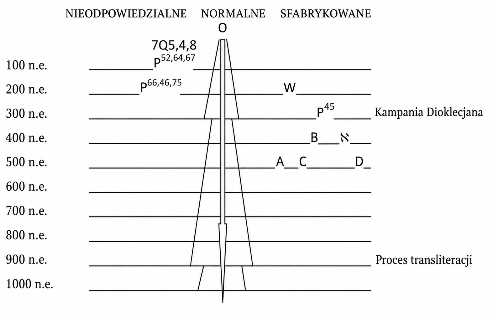

Boża ochrona Nowego Testamentu
Tłumaczenie czwartej edycji książki GOD
HAS PRESERVED HIS TEXT! The Divine Preservation of the New
Testament
ISBN: 978-0-9974686-9-4
Wilbur N. Pickering
Tłumaczenie wykonał Tomasz Skraskowski dla wydawnictwa Świadome Chrześcijaństwo. Zdjęcia dodane przez tłumacza zazaczone są adnotacją [zdj. tłum.], przypisy dodane przez tłumacza zaznaczone są adnotacją [przyp. tłum.].
Tomasz Skraskowski nie jest profesjonalnym tłumaczem, podjął się niniejszego przekładu pro publico bono, gospodarując dla niego czas pomiędzy obowiązkami zawodowymi a rodzinnymi. W trakcie rozważań, czy podjąć się tego dzieła, wahając się, czy podoła, usłyszał od Pana:
Choćby to była rzecz najtrudniejsza, jest miła i wielka w oczach moich.
Tłumaczenie stawia wierność oryginałowi ponad płynność współczesnej polszczyzny i tam, gdzie autor używa specyficznych, nienaturalnych dla języka angielskiego zwrotów, tłumaczenie oddaje je na język polski w miarę możliwości analogicznie, korzystając również z nienaturalnych sformułowań, dla przykładu zdanie:
It means this: that
przetłumaczono na:
To oznacza to: że
chociaż bardziej naturalnie brzmiałoby:
Oznacza to, że
Tyczy się to również cytowanych przez autora fragmentów Biblii - są one tłumaczone na język polski, żeby odwołania do konkretnych słów i wyrażeń pozostały w książce spójne i zrozumiałe.
Tłumaczenie dostępne do pobrania z tometchy.github.io/Bog-zachowal-swoj-Tekst-Wilbur-Pickering w formatach:
© 2021 Wilbur N. Pickering
Oryginał dostępny na http://thechristiancommons.com.
Udostępniono na licencji:
Uznanie autorstwa - Na tych samych warunkach 4.0
Międzynarodowa
CC BY-SA 4.0 - creativecommons.org/licenses/by-sa/4.0
Licencja zezwala na:
Licencjodawca nie może odwołać udzielonych praw, o ile są przestrzegane warunki licencji:
Dla tych, którzy żyjąc Bożym życiem, a nie teorią, chcą wspierać razem z nami dzieło tłumaczenia i wydawania Duchowej literatury dla naszego kraju, podajemy numer konta:
Fundacja Świadome Chrześcijaństwo
Nr rachunku: 51175000120000000034138044
Pozostałe książki wydawnictwa dostępne pod adresem wswch.pl.
Wilbur N. Pickering jest chrześcijańskim misjonarzem, mieszkającym w Brasílii, stolicy Brazylii. Posiada tytuł magistra i doktora lingwistyki. Spośród osób aktywnie zaangażowanych w krytykę tekstu1 Nowego Testamentu, nikt nie ma bardziej radykalnego poglądu w obronie nieomylności i obiektywnego autorytetu Świętego Tekstu. Włącznie ze stanowiskiem, że dokładne oryginalne brzmienie zostało zachowane do naszych czasów i że możemy je poznać. Ta książka oferuje naukową obronę tego przekonania.
Dr Pickering dołączył do Wycliffe Bible Translators2 w 1958 roku. Po trzech latach przygotowań do pracy w terenie przybył do Brazylii w 1961 roku, gdzie wraz z żoną rozpoczęli pracę tłumaczenia wśród ludu Apurinã3. W 1996 roku zrezygnował z pracy w Wycliffe, aby zająć się innymi zainteresowaniami.
Dr Pickering od pewnego czasu uważał, że spośród setek greckich rękopisów Nowego Testamentu, które są dziś znane, Bóg z pewnością zachował oryginalny tekst. Po latach poszukiwań i porównywania tych rękopisów doszedł do wniosku, że Bóg posłużył się określoną linią przekazu, aby zachować oryginał. Ta linia jest zdecydowanie największą i najbardziej spójną ze wszystkich grup lub rodzin manuskryptów. Wyróżnia się na tle innych grup wysokim poziomem staranności, z jaką była kopiowana (dr Pickering posiada kopie doskonałych rękopisów – archetypu tej rodziny – dla 22 z 27 ksiąg). Jest zarówno starożytna, jak i niezależna, i jako jedyna posiada dającą się udowodnić archetypową formę we wszystkich 27 księgach. Ta archetypowa forma została empirycznie, obiektywnie zidentyfikowana na podstawie szerokiego porównania przedstawicieli tej rodziny i rzeczywiście jest wolna od błędów. Jak się spodziewał, ten bezbłędny tekst nie różni się znacząco od innych „dobrych” greckich tekstów. Niemniej jednak, przygotował na jego podstawie angielskie tłumaczenie: The Sovereign Creator Has Spoken: Objective Authority for Living, Second Edition, dostępne na jego stronie www.prunch.org oraz na Amazon.com.
Pragnę wyrazić moją wdzięczność dr. Williamowi Penningowi (doktorat z astronomii) za sformatowanie tej książki. Jest on specjalistą komputerowym wspierającym tłumaczenie Biblii, głównie w Brazylii.
Chciałbym również podziękować Danielowi Jore za udostępnienie zdjęcia na okładkę4.
W każdej dyskusji dotyczącej interpretacji dowodów należy jasno odróżnić trzy rzeczy: dowody, interpretację oraz założenia wyjściowe. Prawdziwe dowody, obiektywna rzeczywistość, powinny być takie same dla wszystkich. Jednak interpretacja, jaką różni ludzie nadają tym dowodom, może się znacznie różnić. Różne interpretacje wynikają z odmiennych zestawów założeń wyjściowych. Ponieważ nie da się pracować bez założeń, nie należy krytykować nikogo za to, że je posiada. Jednakże, ponieważ założenia wyjściowe kontrolują lub przynajmniej silnie wpływają na interpretację, każdy uczciwy uczestnik dyskusji dotyczącej dowodów powinien rozumieć własne założenia i otwarcie i wyraźnie je przedstawić. Niezadeklarowanie własnych założeń jest nieuczciwe i naganne. Krytykowanie przez kogoś, kto nie przedstawia własnych założeń, kogoś, kto je jasno deklaruje, jest zwyczajnie przewrotne, to haniebne postępowanie. Każda dyskusja dotycząca interpretacji dowodów powinna rozpoczynać się od przedstawienia założeń wyjściowych. W tym miejscu pojawia się pytanie: czy założenia można ocenić, a jeśli tak, to w jaki sposób? Oto moja próba rozpoczęcia tej analizy.
Fundamentalnym pytaniem, które rządzi ludzką egzystencją na naszej planecie, jest pytanie o autorytet: kto go posiada, jeśli w ogóle go posiada, i na jakich warunkach. Rywalizacja między światopoglądami (ideologiami, religiami, filozofiami życia) na światowym rynku sprowadza się właśnie do tego pytania. Mam świadomość, że niewielu ludzi zajmuje się ostateczną przyczyną, zadowalając się życiem zgodnie z nakazami własnej kultury — choć może „zadowalają się” nie jest tu najlepszym określeniem, po prostu nie mają czasu ani możliwości, by wymyślać alternatywy. Ale co się dzieje, gdy pojawia się agent zmiany? Agent zmiany promuje alternatywny światopogląd, kwestionuje kulturę. Nawet jeśli pytanie o autorytet nie jest wyrażone wprost, to czai się w tle. Poddaję pod rozwagę, że najbardziej podstawowym czynnikiem jest istnienie (lub nieistnienie) Suwerennego Stwórcy. Jeśli taki Stwórca istnieje, to będzie miał absolutny autorytet nad tym, co stworzył. Gdy jest przedstawiony więcej niż jeden kandydat, właściwy wybór powinien zależeć od dowodów. We współczesnym świecie powszechne jest negowanie istnienia jakiegokolwiek Stwórcy, przypisując istnienie otaczającego nas wszechświata procesom ewolucyjnym.
Cała prawdziwa nauka opiera się na zasadzie przyczyny i skutku – obserwujemy skutek i próbujemy wyizolować przyczynę, a jest logicznie niemożliwe, aby przyczyna wywołała skutek większy lub bardziej złożony niż ona sama. Każdy człowiek, który jest zarówno uczciwy, jak i inteligentny, stając wobec obserwowalnego wszechświata ze swoją niezwykłą organizacją i złożonością, jest zobowiązany dojść do wniosku, że musi istnieć PRZYCZYNA – Przyczyna obdarzona inteligencją i mocą przekraczającą nasze pojmowanie – odmowa, aby tego dokonać, jest przejawem przewrotności. Skoro my mamy osobowość, On także musi ją mieć.
Jedyną alternatywą dla Przyczyny byłby przypadek działający z niczym. Ale jest to głupio, absurdalnie niemożliwe, żeby przypadek, działając z niczym, mógł cokolwiek wyprodukować. 10 × 0 = 0, 1000 × 0 = 0, 1 000 000 × 0 = 0, i tak dalej, bez względu na to, ile razy pomnożysz zero, wynik zawsze będzie równy zero. Jeśli będziesz mnożyć zero przez coś każdego dnia przez pięć miliardów (czy bilionów) lat, wynik zawsze będzie zerem. To, że przypadek plus nic wyprodukował wszechświat, jest głupio, absurdalnie niemożliwe. Nawet jeśli zaczyna się od zabobonu o „wielkim wybuchu” materii nieorganicznej (bez życia), to skąd wzięło się życie? (Pomijam tu kwestię, skąd wzięła się cała ta materia nieorganiczna.)
Nauka fizyki mówi nam, że nieorganiczny (pozbawiony życia) znany wszechświat można opisać za pomocą 350 „bitów” informacji. Tymczasem do opisania najmniejszego białka potrzeba 1500 „bitów” informacji – jest ono tak małe, że nie może istnieć samodzielnie, ale stanowi część żywego systemu5. Jak więc ewolucja mogłaby wytworzyć życie? Gdzie przypadek znalazłby 1150 „bitów” nowej informacji, skoro w całym wszechświecie było ich tylko 350? Co więcej, bakteria E. coli wymaga około siedmiu milionów „bitów”, a jedna ludzka komórka – aż dwudziestu miliardów „bitów”! Teoria ewolucji, mająca wyjaśniać pochodzenie życia, jest głupio, absurdalnie niemożliwa!
Nauka genetyki, wraz z projektami badającymi genom, odkryła, że losowa zmiana zaledwie trzech nukleotydów jest śmiertelna dla organizmu. Rozważ przypadek szympansa, uznawanego za „najbliższego krewnego” człowieka: różnica genetyczna między nami wynosi podobno około 1,6%. To może brzmieć nieznacznie, ale odpowiada około 48 milionom różnic w nukleotydach, a losowa zmiana już trzech nukleotydów zabija zwierzę – z tego wynika, że ewolucja szympansa w człowieka jest po prostu niemożliwa (około 15 milionów szympansów zginęłoby w takiej próbie, nie przekraczając nawet pierwszych trzech nukleotydów!)6. Każdy odmienny typ zwierzęcia musiał zostać stworzony osobno, właśnie tak jak to potwierdza Księga Rodzaju. Każda hipoteza ewolucyjna, mająca wyjaśnić różne typy zwierząt (nie mówiąc już o ptakach, owadach, rybach, roślinach itd.), jest naukowo niemożliwa, głupio, absurdalnie niemożliwa.
Tak zwana „kolumna geologiczna”7 to fikcja. W Australii znajdują się skamieniałe pnie drzew, stojące pionowo, przechodzące przez różne warstwy skał osadowych, które według „kolumny geologicznej” reprezentują wiele milionów lat8 – to po prostu głupie, absurdalnie niemożliwe! W USA jest wysokie plateau (mesa)9, z warstwą starszej skały na warstwie młodszej skały (według „kolumny”), ale obszar ten jest tak rozległy, że żadna znana siła nie byłaby w stanie pokonać tarcia powstałego przy próbie przesunięcia jednej warstwy po drugiej (stosowany argument) – to również jest niemożliwe dla „kolumny geologicznej”10.
Góra Chief Mountain, to przykład formacji, która ma warstwy
skalne „nie po kolei” w sensie geologicznym – rzekomo starsze skały leżą
na rzekomo młodszych. [zdj. tłum.]
commons.wikimedia.org/wiki/File:Chief_Mountain.jpg
Około 60 mil na południowy zachód od Dallas w Teksasie znajduje się miasteczko Glen Rose, położone blisko rzeki Paluxy. Tam właśnie znajduje się Park stanowy Dinosaur Valley (Dinosaur Valley State Park), ponieważ dno rzeki zachowało ślady dwóch rodzajów dinozaurów: trójpalczaste i czteropalczaste. W górę rzeki od parku paleontolog dr Carl Baugh zakupił znaczną ilość ziemi po obu stronach rzeki, aby móc prowadzić własne wykopaliska. Na swojej posesji posiada muzeum, które osobiście odwiedziłem. W tej samej warstwie skały osadowej natknął się na następujące znaleziska: dwa skamieniałe trylobity11, które, według ewolucjonistów istniały 550 milionów lat temu, skamieniały mech zwany „lapidodendron”, który, według ewolucjonistów, istniał 250 milionów lat temu12, kompletny szkielet dinozaura o nazwie „akrokantozaur” (12 metrów długości), który, według ewolucjonistów, istniał 100 milionów lat temu, siedem śladów ogromnego „kota”, który, według ewolucjonistów, istniał 6 milionów lat temu, 57 ludzkich odcisków stóp (niektóre znajdują się wewnątrz śladów dinozaurów)13, skamieniały czwarty palec lewej ręki kobiety14, a nawet przedpotopowy żelazny młotek (jego żelazo nie rdzewieje, składa się w 96,6% z żelaza i 2,7% z chloru) – wszystko to w tej samej warstwie skalnej!
Dwa podłużne ślady stóp w rzece Paluxy [zdj. tłum.]
core.ac.uk/download/pdf/47225227.pdf
Muzeum Dowodów Stworzenia [zdj. tłum.]
creationwiki.org/Image:Cem2.jpg
Wynika z tego, że kolumna geologiczna nie istnieje, jest to przewrotny wynalazek, wynaleziony przez nieuczciwe i przewrotne osoby. Wszystkie te skamieniałości powstały w wyniku Potopu Noego, około 4365 lat temu, w przeciwnym razie, jak wytłumaczysz, że wszystkie te rzeczy znajdują się w dokładnie tej samej warstwie skalnej? (Na marginesie możemy odnotować, że obrońcy „kolumny geologicznej” często stosują błędne koło w rozumowaniu: wiek warstwy skalnej jest określony na podstawie zawartych w niej skamieniałości, podczas gdy wiek skamieniałości określa się na podstawie warstwy skalnej, w której ją znaleziono!)
Co więcej, Ziemia jest młoda. W królewskim obserwatorium w Anglii od 1839 roku co roku mierzą siłę pola magnetycznego otaczającego Ziemię. Stwierdzili, że siła magnetyczna maleje w stałym tempie lub w postępie geometrycznym: wykreślając roczne wartości na wykresie, tworzą one linię nachylenia (klin). Oznacza to, że można przedłużyć tę linię w obu kierunkach. Jeśli przedłużymy linię do punktu sprzed 10 000 lat, siła magnetyczna byłaby tak silna, że zmiażdżyłaby całe życie na planecie. Wynika z tego, że każda teoria wymagająca milionów lub miliardów lat jest głupio, absurdalnie niemożliwa15.
Rzeka Missisipi wyrzuca 80 000 ton osadów do Zatoki Meksykańskiej co godzinę! Wystarczy zmierzyć deltę, by zobaczyć, że Ziemia jest młoda. Ewolucjoniści twierdzą, że granit krystalizował się przez 300 milionów lat, ale w granicie występują „pierścienie polonowe” [ang. Polonium haloes, przyp. tłum.]16 o okresach półtrwania wynoszących minuty lub nawet sekundy. Granit musiał powstać natychmiast. Symbiotyczne rośliny i owady musiały zostać stworzone jednocześnie i wymagają 24-godzinnych dni. I tak dalej.
W skrócie, hipoteza ewolucyjnego pochodzenia jest naukowo niemożliwa, głupio, absurdalnie niemożliwa. Kilka dekad temu uczony sir Frederick Hoyle otrzymał zlecenie oceny naukowego prawdopodobieństwa, że życie mogło pojawić się na Ziemi przez przypadek (miał nieograniczone fundusze i swobodny dostęp do bibliotek). Doszedł do następującego wniosku: łatwiej byłoby, żeby trąba powietrzna przeszła przez złomowisko i po drugiej stronie wyleciałby perfekcyjny Boeing 747, niż żeby życie pojawiło się na naszej planecie przez przypadek. No cóż, to, że życie mogło powstać w wyniku procesu ewolucyjnego, jest oczywiście głupio, absurdalnie niemożliwe. (Przy okazji, wszelkie pytania dotyczące moralności Stwórcy nie mają nic wspólnego z nauką.)
Zatem musi istnieć Przyczyna, i Przyczyna ta musi być niezwykle inteligentna i potężna. Ta Przyczyna musi też mieć osobowość, skoro stworzył On istoty z osobowością. Tradycyjnym określeniem tej Przyczyny jest „Bóg”, ale ja użyję terminu „Suwerenny Stwórca”. Na globalnym rynku idei nie brakuje różnorodnych wyobrażeń na temat „Boga”. Księga Rodzaju 1,27 informuje nas, że „Bóg stworzył człowieka na swój obraz”, i od tego czasu człowiek próbuje się odwdzięczyć! Zastanawiam się, czy ludzie zdają sobie sprawę, że każdy bóg, którego tworzą, będzie od nich mniejszy.
Skoro istnieje Suwerenny Stwórca, posiada On absolutną władzę nad tym, co stworzył. Ale w jaki sposób może być sprawowana ta władza? Może być sprawowana przez nakaz, przez suwerenną interwencję, lecz stosowanie tego wobec istot stworzonych na obraz Boga uczyniłoby z nich roboty, co byłoby sprzeczne z celem stworzenia takich istot. Jak powiedział Suwerenny samarytance, kiedy przemierzał tę ziemię: „prawdziwi czciciele będą czcili Ojca w duchu i w prawdzie, bo Ojciec szuka takich, którzy by Go tak czcili. Bóg jest Duchem, a ci, którzy oddają Mu cześć, mają to czynić w duchu i w prawdzie” (Ewangelia Jana 4,23-24). Jeśli Ojciec szuka spontanicznej, a przynajmniej dobrowolnej czci, to nie może ona być wymuszona ani narzucona. Ale skąd człowiek może wiedzieć, czego chce Suwerenny Stwórca? Musi istnieć komunikacja. Ale jaką formę mogłaby przyjąć taka komunikacja? Aby przekazać pojęcia, musiałby użyć ludzkiego języka17.
Jeśli Stwórca miałby na celu jedynie przekazanie informacji określonej osobie lub grupie w danym momencie czasu, w konkretnym celu, mogłoby to zostać zrobione ustnie, bezpośrednio albo przez przedstawiciela. Jednak jeśli celem Stwórcy było nakierowanie ważne również dla kolejnych pokoleń, wówczas odpowiednią formą byłoby utrwalenie na piśmie. Weźmy pod uwagę 1 Kronik 16,15 - „słowo, które nakazał na tysiąc pokoleń”. Cóż, od Adama minęło zaledwie około 300 pokoleń, więc pisemne objawienie Stwórcy będzie obowiązywać aż do końca świata. Jednak aby obowiązywało do końca, musi być dostępne aż do końca, ale wyprzedzam się trochę.
Jeśli Suwerenny Stwórca istnieje i jeśli skierował do naszej rasy pisemne Objawienie, to nic nie jest dla nas ważniejsze niż wiedzieć co powiedział (z myślą o posłuszeństwie temu, jeśli jesteśmy mądrzy). Dzieje się tak dlatego, że takie objawienie będzie miało wobec nas obiektywny autorytet (choć Stwórca daje nam opcję odrzucenia tego autorytetu [ale należy zwrócić należytą uwagę na konsekwencje])18. Obiektywny autorytet zależy od możliwego do zweryfikowania znaczenia, jeśli czytelnik/słuchacz może nadać przesłaniu dowolne znaczenie według własnego uznania, wszelki autorytet, jaki to przesłanie będzie dla niego miało, stanie się względny i subiektywny (to tzw. podejście „neoortodoksyjne”).
Jako językoznawca (doktor) potwierdzam, że podstawową zasadą komunikacji jest to, że zarówno mówiący/piszący, jak i słuchający/czytający muszą respektować normy języka, w szczególności te dotyczące konkretnego używanego kodu. Jeśli kodujący narusza zasady, będzie wprowadzał dekodującego w błąd (celowo, jeśli wie, co robi). Jeśli dekodujący narusza zasady, będzie przekręcał kodującego (celowo, jeśli wie, co robi). W obu przypadkach komunikacja zostaje uszkodzona, zakres szkody zależy od okoliczności.
Kilka razy Pan Jezus odnosił się do Ducha Świętego jako „Ducha Prawdy”, a List do Tytusa 1,2 potwierdza, że Bóg nie może kłamać – to jedyna rzecz, której nie może uczynić, ponieważ jest sprzeczna z Jego istotą, „Nie może zaprzeczyć samemu sobie” (2 List do Tymoteusza 2,13). Powinno być oczywiste dla każdego, że Suwerenny nie przyjmie przychylnie bycia nazwanym kłamcą. Interpretować Święty Tekst w sposób niewierny wobec zasad języka hebrajskiego i greckiego oznacza przypisywać Autorowi intencję zwiedzenia nas, nazywać Go kłamcą – co nie jest mądre. Lecz aby interpretować Tekst, musimy go posiadać, a kwestię jego zachowania poruszę poniżej.
Ale najpierw, skąd możemy wiedzieć, czy Stwórca rzeczywiście skierował do nas pisemne objawienie, a jeśli to zrobił, jak możemy je zidentyfikować? Przyjmując punkt widzenia, że Suwerenny Stwórca postanowił zapewnić orientację naszej rasie, wiedziałby, że musi uczynić ją rozpoznawalną jako taką, a dowody musiałyby pozostać dostępne dla kolejnych pokoleń. Ale skąd możemy wiedzieć, jakich środków użyłby, aby uczynić Jego objawienie rozpoznawalnym? Możemy to wiedzieć, patrząc na to, co uczynił, i niejako cofając się w czasie. W tym miejscu muszę skoczyć do przodu, do tego, do czego doszedłem, na podstawie dowodów, a następnie cofnąć się, by sprawdzić, czy mój wniosek jest prawdziwy. Tutaj przedstawiam założenia, z jakimi podchodzę do tego zadania: Suwerenny Stwórca istnieje, przekazał naszej rasie pisemne Objawienie i zachował je nienaruszone do dziś w takim stopniu, że możemy wiedzieć, jakie ono jest, na podstawie obiektywnych kryteriów.
Gdy piszę książkę19, identyfikuję siebie jako autora i zwykle podaję pewne wskazania dotyczące celu, w jakim ją napisałem. Jako chrześcijanin, zostałem nauczony, że nasza Biblia (zawierająca 66 ksiąg) jest spisanym Objawieniem danym przez Suwerennego Stwórcę. Zatem pytam: czy Biblia sama siebie identyfikuje, czy twierdzi, że jest natchniona przez Boga? Zaczynam od twierdzenia, a następnie próbuję je zweryfikować.
Twierdzenie
Księga Rodzaju 1,1: „Na początku Bóg stworzył niebo i ziemię”. Jedyną Osobą, która mogła przekazać tę informację Adamowi (jak zakładam), był sam Stwórca, Autor identyfikuje siebie. Adam z pewnością rozwinął pisemną formę dla języka, który otrzymał od Boga, i sporządziłby pisemny zapis wszystkiego, co Stwórca mu powiedział o początku tej planety. Setki, jeśli nie tysiące razy w Biblii spotykamy się ze zwrotami „Bóg powiedział” lub „Pan powiedział”. Księgi prorockie wyraźnie twierdzą, że są wiadomościami danymi przez Boga. Oto tylko jeden przykład: „Słowo PANA, które przyszło do Micheasza z Moreszetu za czasów Jotama, Achaza i Ezechiasza, królów judzkich” (Księga Micheasza 1,1).
Psalm 138,2: „Wywyższyłeś Słowo swoje ponad wszelkie imię Twoje”. Ponieważ imię osoby reprezentuje tę osobę, sens tego stwierdzenia wydaje się być taki, że Słowo Boże reprezentuje Jego osobę jeszcze lepiej niż Jego imię. „Na wieki, O PANIE, Słowo Twoje jest ustalone w niebie” (Psalm 119,89). Jeśli Słowo jest w niebie, to musi być Boże, a tylko wieczny Byt mógł dać wieczne Słowo. 1 List Piotra 1,25 cytuje Izajasza 40,8: „Słowo, PANA trwa na wieki” i istnieje wiele innych fragmentów, które zasadniczo mówią to samo. Ponownie, tylko wieczny Byt mógł wydać wieczne Słowo20.
Mateusza 5,18: „Zaprawdę bowiem powiadam wam, dopóki nie przeminie niebo i ziemia, ani jedna jota, ani jedna kreska nie przeminie z Prawa, aż wszystko się spełni”. Suwerenny Jezus składa oświadczenie o zachowaniu w czasie dokładnej formy Świętego Tekstu. Tylko Najwyższy Autorytet mógłby coś takiego zagwarantować. „Całe Pismo przez Boga jest natchnione” (2 List do Tymoteusza 3,16). Paweł tworzy wyrażenie, by opisać intymny związek między Bogiem, a Jego spisanym Objawieniem – jest ono jak Jego własny oddech.
Rzymian 14,24: „A teraz do Tego, który ma moc utwierdzić was zgodnie z moją Ewangelią i proklamacją Jezusa Chrystusa, zgodnie z objawieniem tajemnicy trzymanej w utajnieniu przez długie wieki, ale teraz ujawnionej i uczynionej wiadomą przez Pisma prorockie, zgodnie z nakazem wiecznego Boga, w celu posłuszeństwa wiary pośród wszystkich narodów etnicznych.”21 Skoro jest to objawione dopiero „teraz”, te „Pisma prorockie” muszą być pismami Nowego Testamentu, danymi przez Boga!
2 List Piotra 1,20-21: „Przede wszystkim wiedzcie, że żadne Proroctwo Pisma nie powstaje z osobistego wydania22, ponieważ żadne Proroctwo nigdy nie przyszło z woli człowieka, raczej święci mężowie Boży przemawiali, gdy byli prowadzeni przez Ducha Świętego”. Tutaj mamy imponujący opis procesu Natchnienia. Podoba mi się definicja Pism, którą znajdujemy w Liście do Rzymian 2,20: „mając w Prawie ucieleśnienie wiedzy i prawdy”. Któż, jeśli nie Suwerenny Stwórca, mógłby stworzyć spisane Objawienie, które ucieleśnia poznanie i prawdę?23
Dowód
Uważam, że odpowiednio odniosłem się do twierdzenia, więc przejdę teraz do dowodów, czyli weryfikacji. Literatura, która twierdzi, że ma nadprzyrodzone pochodzenie, powinna być z natury nadprzyrodzona i powinna przynosić nadprzyrodzone rezultaty. Zacznę od nadprzyrodzonych rezultatów, które powiedzą nam również coś o celu Stwórcy w przekazaniu Objawienia.
Paweł napisał do Tymoteusza: „Od dzieciństwa znasz Pisma Święte, które mogą cię uczynić mądrym ku zbawieniu przez wiarę, która jest w Chrystusie Jezusie. Całe Pismo jest natchnione przez Boga i pożyteczne do nauczania, do upominania, do poprawiania, do ćwiczenia w prawości, aby człowiek Boży był w pełni kompetentny, całkowicie wyposażony do wszelkiej dobrej pracy”24 (2 List do Tymoteusza 3,15-17). Z pewnością jednym z najważniejszych celów jest pokazanie, jak uzyskać wieczne zbawienie. Paweł kontynuuje, stwierdzając, że Pismo jest cenne ze względu na cztery rzeczy. Zwróć uwagę na kolejność:
W miarę jak wzrastamy, możemy pomagać innym przechodzić przez tę sekwencję. Bardzo wielu chrześcijan na całym świecie przekonało się, że powyższe jest prawdą, w swoim osobistym doświadczeniu.
Hebrajczyków 4,12-13: „Słowo Boże jest żywe i skuteczne, ostrzejsze niż jakikolwiek miecz obosieczny, przenikające do punktu rozdzielenia duszy i ducha25, stawów i szpiku, w rzeczywistości jest w stanie ocenić refleksje i intencje serca. Nic w całym stworzeniu nie jest ukryte przed Jego wzrokiem, raczej wszystkie rzeczy są nagie i otwarte dla oczu Jego, któremu musimy zdać rachunek.” Rozważanie Słowa Bożego potrafi być dość niekomfortowe, jest ono „zwierciadłem”, które mówi nam prawdę o nas samych (Jakuba 1,25). Efezjan 6,17 nazywa je „mieczem Ducha”. Słowo, które potrafi oddzielić duszę od ducha, musi być nadprzyrodzone. Bardzo wielu chrześcijan na całym świecie przekonało się, że powyższe jest prawdą, w swoim osobistym doświadczeniu. Wracając do Hebrajczyków 4,13 – musimy zdać rachunek Sędziemu, który zna WSZYSTKIE fakty. Ta wiedza naprawdę powinna przemienić nas w poważnych ludzi, pilnych poszukiwaczy Boga, ale…
„Ta Księga Prawa niech nie oddala się od twoich ust, lecz powinieneś rozważać w niej dniem i nocą, czego masz przestrzegać, zgodnie ze wszystkim, co jest w niej napisane. Wtedy bowiem twoja droga będzie dostatnia, i wtedy odniesiesz duży sukces.” (Jozue 1,8). List Jakuba 1,25 mówi coś bardzo podobnego. Mojżesz powiedział Izraelitom: „Skierujcie swoje serca na wszystkie słowa, które dziś świadczę pośród was, które powinniście nakazać swoim dzieciom, aby starannie przestrzegały – wszystkie słowa tego prawa. Bo nie jest to dla was rzeczą daremną, ponieważ jest to wasze życie” (Powtórzonego Prawa 32,46-47). Bardzo wielu chrześcijan na całym świecie przekonało się, że powyższe jest prawdą, w swoim osobistym doświadczeniu.
List do Rzymian 1,16-17: „Nie wstydzę się26 Ewangelii Chrystusa27, ponieważ jest ona mocą Bożą dla zbawienia każdego, kto wierzy (najpierw Żyda, potem Greka). Bo w niej jest ujawniona sprawiedliwość Boża, z wiary w wiarę, tak jak jest napisane: ‘Sprawiedliwy z wiary żyć będzie‘.”28 Ewangelia jest mocą ku zbawieniu. Jak powiedział Suwerenny Jezus w Ewangelii Jana 14,6 — „Ja jestem drogą, prawdą i życiem. Nikt nie przychodzi do Ojca inaczej jak tylko przeze Mnie.” Nie ma wielu dróg, tylko jedna. Miliony istnień zostały przemienione mocą Bożego Słowa. Skąd więc wzięła się ta moc?
Natchnienie Świętego Tekstu jest cechą wewnętrzną – jest takie, ponieważ takie jest. Jednakże, możemy dostrzec tę wrodzoną cechę, porównując materiały natchnione z materiałami, które nie są natchnione. Rozważ naturę treści Biblii, lub przesłanie: nie jest to tego rodzaju rzecz, jaką człowiek chciałaby napisać, nawet gdyby mógł, ani coś, co mógłby napisać, nawet gdyby chciał. A następnie jest jedność Biblii: chociaż 66 ksiąg zostało napisanych przez co najmniej trzydziestu różnych ludzkich autorów, na przestrzeni około 2000 lat, i w dwóch bardzo różnych językach (hebrajskim i greckim)29, całość jest spójna, nie przeczy sama sobie. Istnieją też konkretne i szczegółowe proroctwa, nawet włączające imię osoby, podane wieki przed faktem, które zostały dokładnie spełnione.
Dla tych, którzy wierzą, że Jezus Chrystus jest Bogiem, Jego postawa względem Starego Testamentu będzie istotna. Przypisywał On Staremu Testamentowi absolutny autorytet, w Janie 5,45-47 postawił On pisma Mojżesza na równi z Jego własnym słowem, które ogłosił jako mające ważność na wieki (Łukasz 21,33). Jak podano w czterech Ewangeliach, cytował On przynajmniej Księgę Rodzaju, Wyjścia, Liczb, Powtórzonego Prawa, Psalmy, Izajasza, Jeremiasza, Daniela, Ozeasza, Jonasza, Zachariasza oraz Malachiasza. W Ewangelii Łukasza 24,44 jasno uznał trzy części kanonu hebrajskiego: Prawo, Proroków i Pisma (Psalmy). Następnie jest Mateusza 23,35: „Aby przyszła na was wszelka krew sprawiedliwa, przelana na ziemi, od krwi sprawiedliwego Abla aż do krwi Zachariasza, syna Barachiasza, którego zamordowaliście między świątynią a ołtarzem”. Jezus kończy tutaj swoje potępienie uczonych w Piśmie i faryzeuszy. Morderstwo Abla to pierwsze morderstwo odnotowane w Biblii (Rodzaju 4,8). Zwróć, proszę uwagę, że Jezus potwierdza historyczność Abla, a ponieważ Abel miał rodziców, siłą rzeczy Jezus potwierdza też historyczność rodziców Abla, Adama i Ewy! Zachariasz był współczesnym Ezdrasza i Aggeusza w czasie budowy drugiej świątyni. Tak więc „wszelka krew sprawiedliwa, przelana” między tymi dwoma mężczyznami obejmuje cały Stary Testament, około 3 500 lat!
Powiedziawszy wszystko powyższe, mimo wszystko uznaję, iż stwierdzenie Bożego natchnienia Biblii jest wyznaniem wiary — inteligentnej wiary, opartej na dowodach, ale wciąż wiary, ponieważ dowody nie są absolutne30, i nie są absolutne z bardzo ważnego powodu. Suwerenny Stwórca celowo nie pozwala, by dowody były absolutne, ponieważ wtedy nie byłoby prawdziwej próby. Stwórca wymaga, aby ludzie wybierali między dobrem a złem, a wybór ten nie może być wymuszony. Tej ostatniej nocy, w górnej sali, Suwerenny Jezus odniósł się do Ducha Świętego jako „Ducha Prawdy” i oświadczył, że „On was poprowadzi we wszelką prawdę” (Jana 16,13). Jest to prerogatywa Ducha Świętego, aby uświadamiać i przekonywać.
Natura Tekstu
Używamy terminu „natchnienie” w odniesieniu do procesu, którego Suwerenny Stwórca użył do stworzenia Swojego pisemnego Objawienia. Stwórca zdecydował się posłużyć ludzkimi autorami, z wyjątkiem kamiennych tablic zawierających Dekalog, które Stwórca Sam wyrył (Wyjścia 31,18; 32,16). Porównując styl ksiąg napisanych przez różnych ludzi, widać wyraźnie, że osobowość autora nie została stłumiona lub zablokowana: Paweł pisze w jeden sposób, Jan pisze w inny sposób i tak dalej. A ten sam autor zmieni styl w zależności od docelowych odbiorców lub adresata. Więc gdy Piotr pisze, że autorzy byli „niesieni przez Ducha Świętego” (2 Piotra 1,21), możemy rozumieć, że „niesienie” gwarantowało, iż zapisane słowa poprawnie wyrażały znaczenie, jakie Duch Święty chciał przekazać. Zarówno żywe Słowo, jak i spisane Słowo obejmują unię hipostatyczną31: jak Jezus Chrystus może być w 100% Bogiem i jednocześnie w 100% człowiekiem jest tajemnicą, jak spisane Słowo może być w 100% boskie i jednocześnie w 100% ludzkie, również jest tajemnicą.
Ale to nie wszystko. Sposób, w jaki działa natchnienie, różni się w zależności od rodzaju literatury.
Ściśle rzecz biorąc, „objawienie” oznacza informację przekazaną bezpośrednio komuś przez Stwórcę (czasem wykorzystując anioła). Prawdziwe proroctwo to prorok powtarzający słowo w słowo to, co Stwórca do niego powiedział: „słowo PANA przyszło do mnie mówiące” (Jeremiasz 1,4). Z konieczności, informacje zawarte w pierwszym rozdziale Księgi Rodzaju, zostały przekazane przez Stwórcę bezpośrednio Adamowi. Podobnie, informacje zawarte w Księdze Hioba 1,6-12 i 2,1-7 musiały zostać przekazane bezpośrednio autorowi księgi (być może Elihu, synowi Barachela — Księga Hioba 32,2). Dzieje Apostolskie 1,16 mówią, że Duch Święty przemówił ustami Dawida. W odniesieniu do „Wieczerzy Pańskiej” Paweł napisał: „Otrzymałem od Pana to, co również przekazałem, wam” (1 Koryntian 11,23). Mógłbym przywołać kolejne fragmenty, ale podałem już wystarczająco dużo, aby zilustrować „objawienie”. Takie objawienie jest zazwyczaj normatywne, służy ukierunkowaniu naszego postępowania.
Informacje historyczne są nieco inne, natchnienie gwarantuje prawdziwość tego, co jest opisane — rzeczy wydarzyły się właśnie w ten sposób32. Powinno być oczywiste, że opisy grzechu, kłamstwa, przestępstwa czy perwersyjności nie są normatywne, choć służą jako negatywne przykłady, żeby nas ostrzegać. Księga Rodzaju 3,4 rejestruje kłamstwo: „Wtedy wąż rzekł do kobiety: Na pewno nie umrzecie”. Oczywiście natchnienie nie zgadza się z kłamstwem, jedynie gwarantuje, że wąż powiedział dokładnie to. Informacje historyczne lub zapisy mogą zawierać orientację normatywną. Zawsze konieczne jest zwrócenie szczególnej uwagi na kontekst, który można słusznie nazwać „królem interpretacji”.
Materiał poetycki jest trudniejszy. To gatunek komunikacji, który ma własne zasady i kontekst jest najważniejszy. Pieśń nad Pieśniami składa się z trzynastu „kantyczek”33, które nie są przedstawione jako normatywne. Ponieważ relacja między mężczyzną i kobietą jest fundamentalna dla ludzkiego istnienia, naturalne jest, że ten temat pojawia się w pisemnym Objawieniu. To, że Stwórca wybrał gatunek poetycki, było Jego prerogatywą i to dobrze pasuje do tematu — emocje często znajdują wyraz w formie poetyckiej.
Dla porównania, Księga Przysłów jest generalnie normatywna. W Księdze Koheleta 12,9-11 Salomon deklaruje natchnienie przysłów: zostały one „dane przez jednego Pasterza”.
Z drugiej strony, sam Salomon nie twierdzi tego samego o Księdze Koheleta, innej księdze, którą napisał. Drugi werset: „Marność nad marnościami, mówi kaznodzieja, marność nad marnościami, wszystko jest marnością”, oczywiście nie zgadza się z resztą Biblii. Służenie Bogu nie jest marnością, zbawienie w Chrystusie nie jest marnością i tak dalej. Rzeczywiście, Salomon otwarcie deklaruje, w jaki sposób powstała ta księga: „Nastawiłem serce swoje, aby szukało i znajdowało mądrością” (1,13), „Rozmawiałem z sercem swoim” (1,16), „Nastawiłem serce swoje na poznanie mądrości i szaleństwa i głupoty” (1,17), „Szukałem w sercu swoim, jak zaspokoić ciało swe” (2,3). Księga wyraźnie jest próbą zrozumienia życia i świata poprzez czysto humanistyczną analizę, z pominięciem Suwerennego Stwórcy. Takiej analizy podjął się człowiek, który był bardzo inteligentny. Przyjmuję, że księga została włączona do kanonu dokładnie po to, aby pokazać, do jakiego wniosku czysto humanistyczna analiza musi doprowadzić — do pustki i rozpaczy. Jednakże, autor podsumował księgę poprzez stwierdzenie prawdziwej prawdy, aby nikt nie został zwiedziony: „Posłuchajmy więc wniosku całej tej sprawy: Bój się Boga i przestrzegaj Jego przykazań, bo to jest wszystko u człowieka. Bóg bowiem przywiedzie pod osąd każde dzieło, w tym każdą tajemnicę, czy to dobrą, czy złą”.
Twierdzę, że ważne jest, abyśmy rozróżniali między natchnieniem a oświeceniem w odniesieniu do Pisma Świętego. Natchnienie odnosi się do pisania materiałów biblijnych, a oświecenie odnosi się do interpretacji materiałów biblijnych. Zarówno natchnienie, jak i oświecenie są dziełem Ducha Świętego. Oświecenie jest zazwyczaj zarezerwowane dla tych, którzy zostali odrodzeni. „Człowiek zaś duszewny34 nie przyjmuje rzeczy Ducha Bożego, bo są dla niego głupstwem, zaiste, nie może ich zrozumieć, ponieważ są one duchowo rozróżniane” (1 List do Koryntian 2,14). Tak właśnie mówi Tekst. Osoba „duszewna” nie jest w stanie pojąć spraw duchowych, co brzmi raczej jak wada wrodzona. Konkretne fakty zawarte w zapisach historycznych mogą być zrozumiane przez każdego. To, że Dawid zabił Goliata, jest faktem zrozumiałym dla każdego. Jednak zrozumienie celu Ducha Świętego stojącego za natchnionym stwierdzeniem zależy od oświecenia, a aby je otrzymać, trzeba być duchowym (1 Kor 2,15).
Przechodzę teraz do kwestii kanoniczności Świętego Tekstu: dlaczego nasza Biblia zawiera dokładnie taki dobór ksiąg, jaki ma – ani więcej, ani mniej, ani żadnych innych? Natchnienie odnosi się do boskiej aktywności w akcie spisywania materiału, gwarantującej wynik. Jednakże, kanonizacja Tekstu odnosi się do ludzkiej aktywności, rozpoznawania boskiej jakości tego materiału. Proces tego rozpoznawania miał miejsce w społeczności Wiary – społeczności hebrajskiej w przypadku Starego Testamentu i społeczności chrześcijańskiej w przypadku Nowego Testamentu. Odnosiłem się już do postawy, jaką Pan Jezus Chrystus wykazywał w odniesieniu do Starego Testamentu, który był całą istniejącą w tym momencie Biblią. Ewidentnie uznał Kanon 39 ksiąg, który był ustalony w Jego czasach. Cytował wiele ksiąg – wziętych z Prawa, historii, proroctw i poezji – i czynił to, traktując je jako Boże Słowo, coś prawdziwego, świętego i autorytatywnego. Ludzcy autorzy Nowego Testamentu wykazywali taki sam szacunek dla Starego Testamentu, który był również ich Biblią.
Powiedziałem, że Stary Testament zawiera 39 ksiąg i tak było aż do XVI wieku ery chrześcijańskiej. Sobór Trydencki był reakcją Kościoła rzymskokatolickiego przeciwko Reformacji Protestanckiej. Rozpoczął się w 1545 roku i zakończył swoje prace w 1563 roku. Sobór dodał do Starego Testamentu czternaście „ksiąg”, chociaż te czternaście nigdy nie zostało uznane przez społeczność hebrajską. W kręgach protestanckich księgi te są ogólnie określane jako „apokryfy”, natomiast w kręgach rzymskokatolickich jako „deuterokanoniczne”. Kanon Nowego Testamentu został formalnie zamknięty przez sobór w Kartaginie w 397 r. n.e., natomiast kanon Starego Testamentu został zamknięty stulecia wcześniej. Z pewnością rok 1563 był zdecydowanie za późno, żeby dodawać księgi do Świętego Tekstu.35
A zatem kanonizacja ma wszystko wspólnego z zachowaniem Tekstu. Z pewnością, ponieważ społeczność Wiary zajmowałaby się wyłącznie przekazywaniem i ochroną ksiąg „kanonicznych”, tych, które uznano za natchnione.36 Kiedy podejmuję kwestię zachowania, poniżej, argumentuję, że to właśnie zachowanie Tekstu dowodzi jego kanoniczności. Ludzki udział w przekazywaniu Tekstu jest oczywisty, ale czy istniała również boska aktywność, chroniąca Tekst (w tym jego dokładne słowa)? I jak można „zmierzyć” taką boską aktywność? Widzę dwa odpowiednie „narzędzia” do dokonania pomiaru: logikę i historię. Zaczynam od argumentu opartego na logice.
Natchnienie jest wynikiem lub cechą Objawienia – tym stwierdzeniem potwierdzamy, że Suwerenny Stwórca postanowił przekazać ludzkiej rasie pewne obiektywne informacje. Gdyby Stwórca troszczył się jedynie o przekazanie informacji danej osobie lub grupie w określonym momencie czasu, w konkretnym celu, mogłoby to zostać dokonane ustnie. Jeśli jednak Jego celem było dotarcie do kolejnych pokoleń (aż do tysiąca z nich, 1 Kronik 16,15), wówczas odpowiednią formą byłaby forma pisemna. Jeśli więc Stwórca zamierzał, aby Jego Objawienie dotarło nienaruszone, a przynajmniej w całości i w wiarygodnym stanie, do XXI wieku, absolutnie musiałby czuwać nad procesem przekazywania przez wieki. Musiałby zabronić nieodwracalnej utraty jakichkolwiek autentycznych materiałów, a także zabronić jakichkolwiek nierozpoznawalnych wstawek fałszywych materiałów. Oryginalne sformułowania powinny być dostępne, we wszystkich pokoleniach, dla osób, które byłyby wystarczająco zainteresowane posiadaniem tych sformułowań, aby zapłacić niezbędną cenę (czas, podróż, pieniądze) za ich uzyskanie. (Ogólnie rzecz biorąc, ludzie byliby zadowoleni z posiadanych sformułowań, o ile uważaliby je za wiarygodne). Tak więc osoba wierząca na przykład w boskie natchnienie Nowego Testamentu powinna również wierzyć w Bożą ochronę Nowego Testamentu – jest to kwestia logiki. Ale co z dowodami historycznymi, czy są one zgodne z naszą logiką, czy nie? Teraz przejdę do tego pytania.
Na początek, uważam, że poniższe odniesienia można rozsądnie rozumieć jako oświadczenie Suwerennego Stwórcy, że zamierzał zachować swój Tekst, ale nie dał żadnych wskazówek, w jaki sposób zamierzał to zrobić. Musimy zacząć od tego, co zrobił. Ale najpierw odniesienia:
1 Kronik 16,14-15 jest częścią psalmu uwielbienia dla Boga, który śpiewano, gdy Arka została przyniesiona do Jerozolimy. „On jest PANEM, naszym Bogiem, Jego osądy są na całej ziemi. Pamiętajcie Jego nakaz na zawsze, słowo, które On nakazał na tysiąc pokoleń”. Aby Słowo było wiążące aż do tysiącznego pokolenia, musiałoby być zachowane aż do tego pokolenia i musiałoby być dostępne dla każdego pokolenia po drodze. Przyjmuję, że „tysiąc pokoleń” jest równoznaczne z „na zawsze”. „Na zawsze, PANIE, Twoje słowo jest osadzone w niebie. Twoja wierność jest do wszystkich pokoleń” (Psalm 119,89-90). „Na zawsze” jest równoznaczne z „wszystkimi pokoleniami”. „Trawa usycha, kwiat więdnie, ale słowo naszego Boga trwa na wieki” (Izajasz 40,8). Aby „trwać” na wieki, musi być zachowane na wieki. (Psalm 102,18 i 1 List do Koryntian 10,11)
Mateusz 5,17-18 to fragment tzw. Kazania na Górze, wygłoszonego przez Suwerennego Jezusa, podczas gdy chodził po tej ziemi. „Nie sądźcie, że przyszedłem znieść Prawo lub Proroków. Nie przyszedłem znieść, ale wypełnić. Zaprawdę bowiem powiadam wam, dopóki nie przeminie niebo i ziemia, ani jedna jota, ani jedna kreska nie przeminie z Prawa, aż wszystko się spełni”. Pan wypowiada tu imponująco mocne stwierdzenie dotyczące zachowania w czasie dokładnej formy Świętego Tekstu. Ponieważ jedyny dostęp do znaczenia mamy poprzez formę, każda zmiana formy zmieni znaczenie. (Jednym z najskuteczniejszych sposobów unieważnienia przykazania jest naruszenie Tekstu – coś, co Szatan rozumie całkiem dobrze). „Łatwiej jest niebu i ziemi przeminąć, niż jednej kresce z Prawa zawieść” (Łk 16,17). „Niebo i ziemia przeminą, ale moje słowa w żadnym razie nie przeminą” (Łk 21,33). Suwerenny Jezus oświadcza, że Jego słowa mają wieczną ważność i dlatego są na równi z pisemnym Objawieniem Bożym (zob. Ps 119,89).
W Ewangelii Mateusza 4,4 Suwerenny Jezus powstrzymuje Szatana, cytując Księgę Powtórzonego Prawa 8,3. „Napisano: «Nie samym chlebem żyje człowiek, ale każdym słowem, które pochodzi z ust Bożych»”. Jeśli mamy żyć „każdym słowem”, to każde słowo musi być dostępne.37 Zwróć również uwagę na Księgę Powtórzonego Prawa 29,29, „Rzeczy tajemne należą do PANA, naszego Boga, ale te, które zostały ujawnione, należą do nas i do naszych dzieci na zawsze, abyśmy mogli wypełniać wszystkie słowa tego prawa”. „Wszystkie słowa” obejmują każde pojedyncze słowo, które składa się na całość, a aby trzysta pokoleń mogło je wszystkie przestrzegać, wszystkie muszą być nadal dostępne. Rozważ też Księgę Izajasza 59,21: „A co do mnie” – mówi PAN – „oto Moje przymierze z nimi: Duch Mój, który spoczywa na tobie, i słowa Moje, które włożyłem w twoje usta, nie odejdą z twoich ust, ani z ust twoich potomków, ani z ust potomków twoich potomków” – mówi PAN – „od teraz i na wieki”. „Słowa moje” obejmują każde pojedyncze słowo, które składa się na całość, i mają być dostępne „od teraz i na wieki”, co obejmuje wszystkie pokolenia pośrednie. Księga Objawienia 22,18-19 również kładzie nacisk na poszczególne słowa.
Twierdzę, że powyższe odniesienia można rozsądnie rozumieć jako stanowiące deklarację, że Suwerenny Stwórca zamierza, aby Jego pisemne Objawienie było dostępne dla wszystkich pokoleń aż do końca świata – Jego troska rozciąga się na poszczególne słowa, a nawet litery (Mt 5,18)! Ponieważ jednak nie podał On żadnych wskazówek, w jaki sposób zamierza to osiągnąć, musimy wywnioskować odpowiedź, analizując to, co uczynił. Zacznę od Nowego Testamentu. Przechodzę do przedstawienia dowodów.
Kiedy mówię o boskim zachowaniu Tekstu Nowego Testamentu, odnoszę się do jego dokładnej treści w oryginalnych dokumentach, Autografach. Kiedy mówię o zachowaniu, zakładam boskie natchnienie, są one logicznie współzależne. Po co Bóg miałby natchnąć pisemne objawienie, gdyby nie zamierzał go zachować? Po co Bóg miałby zachowywać pisma, których nie natchnął? Uważam, że zachowanie Tekstu Nowego Testamentu jest być może najsilniejszym argumentem przemawiającym za jego natchnionym charakterem. To samo dotyczy precyzyjnego doboru ksiąg, które składają się na Kanon Nowego Testamentu. Ponieważ uważam, że Ewangelia Mateusza była pierwszą księgą Nowego Testamentu, która została udostępniona publicznie („opublikowana”), zacznę od niej.
Kiedy Mateusz „opublikował” swoją Ewangelię w 38 roku n.e.38, produkcja książek w Imperium Rzymskim była powszechna, ale nie istniało coś takiego jak „prawa autorskie”. Gdy tylko książka trafiała do obiegu, stawała się „domeną publiczną” i każdy mógł z niej korzystać oraz wprowadzać w niej zmiany. Jeśli więc Duch Święty chciał chronić dzieła, które natchnął, przed swobodną edycją, co mógł zrobić? Sugeruję, że najbardziej oczywistym sposobem byłoby „opublikowanie” tych dzieł w formie wielu egzemplarzy. Dzisiaj pierwszy nakład książki wynosi zazwyczaj tysiące egzemplarzy, ale w tamtych czasach każdy egzemplarz musiał być napisany ręcznie (rękopis).
Książka wielkości Ewangelii Mateusza wymagałaby znacznego nakładu czasu i wysiłku, a także papirusu i atramentu. Wierzę, że pisma Nowego Testamentu od początku były przygotowywane w formie książkowej (a nie zwojów), a wykorzystanym materiałem był prawdopodobnie papirus.39 Jednakże papirus nie wytrzymuje częstego używania, a do roku 38 było wiele chrześcijańskich zborów na samym na terytorium żydowskim, nie wspominając o innych miejscach. Jeśli Duch Święty zamierzał, aby pisma Nowego Testamentu miały szeroki obieg, co wydaje się oczywiste, konieczne byłoby zacząć od wielu egzemplarzy.
Jeden egzemplarz Ewangelii Mateusza rozpadłby się, zanim dotarłby do dwudziestego zboru (gdyby był na papirusie).
Ale dlaczego nalegam na papirus zamiast pergaminu? Cóż, pojedynczy egzemplarz Ewangelii Mateusza wymagałby około piętnastu owiec lub kóz, zatem kto mógłby sobie pozwolić na wiele kopii? Niemniej jednak, oryginalny egzemplarz mógł rzeczywiście zostać wykonany na pergaminie z dwóch powodów:
Pomysł wydania książki w wielu egzemplarzach można wywnioskować z Listów. 2 List do Koryntian został napisany do „kościoła Bożego, który jest w Koryncie, wraz ze wszystkimi świętymi, którzy są w całej Achai” (werset 1). Ile zborów było „w całej Achai”? Czy Paweł myślał o wielu egzemplarzach? 1 List do Koryntian był zaadresowany do „wszystkich tych, wszędzie, którzy wzywają imienia naszego Pana Jezusa Chrystusa” (werset 2). Teraz, ile egzemplarzy byłoby do tego potrzebnych? List do Galacjan został napisany do „kościołów w Galacji” (werset 2). Czy jeden egzemplarz mógłby trafić do nich wszystkich?
Rozważ przypadek pierwszego listu Piotra: jest on zaadresowany do wiernych w „Ponto, Galacji, Kapadocji, Azji i Bitynii” (werset 1). Zatem, na jakiej podstawie Piotr (apostoł obrzezanych, Galacjan 2,8) mógł pisać do ludzi w tych miejscach? Prawdopodobnie wielu starszych przywódców było z Piotrem w dniu Pięćdziesiątnicy i osiadło podczas jego posługi, dopóki prześladowania pod wodzą Saula nie zmusiły ich do powrotu do domu, przypuszczalnie (Dz 8,4). Zwróć uwagę, że lista miejsc w Dziejach Apostolskich 2,9-11 obejmuje następujące miejsca w Azji Mniejszej: Azja, Kapadocja, Pamfylia, Frygia i Pont. Trzy z tych pięciu miejsc znajdują się na liście Piotra i nie musimy zakładać, że jego lista była kompletna, tak samo, jak lista w Dziejach Apostolskich 2,9-11 prawdopodobnie nie jest kompletna.
Czy kiedykolwiek spojrzałeś na mapę, aby zobaczyć położenie pięciu prowincji Piotra? Zasadniczo obejmują one całą Azję Mniejszą (dzisiejszą Turcję)! Wydaje się, że termin „Azja” był używany w różny sposób. W Dziejach Apostolskich 27,2 Azja obejmuje Cylicję i Pamfilię (werset 5). Uwielbiony Chrystus umieścił siedem kościołów w Azji (Objawienie 1,4). W Dziejach Apostolskich 16,6 termin ten wydaje się odnosić do bardziej ograniczonego obszaru, który, jednakże, prawdopodobnie obejmował Efez, do którego Paweł powrócił później. Prokonsularna Azja40 obejmowała Mysję i Frygię. Ile więc mogło być wszystkich zborów w Azji Mniejszej? I jak pojedynczy egzemplarz mógł trafić do wszystkich z nich? Jeżeli list był napisany na papirusie (co wydaje się prawdopodobne – tańszy, łatwiej dostępny), rozpadłby się po dotarciu do dwudziestego zboru, jeśli nie wcześniej (papirus nie wytrzymuje tak dużego obciążenia).
Załóżmy teraz, dla celów dyskusji, że Piotr wysłał pięć kopii swojego listu, po jednej do każdej prowincji. Jakie implikacje miałoby to dla przekazywania tego Tekstu? Oznacza to, że zwielokrotniasz proces i postęp przekazywania pięciokrotnie! Oznacza to, że masz początki „tekstu większościowego” już na bardzo wczesnym etapie. Oznacza to, że podstawowa integralność tekstu byłaby zagwarantowana (tym bardziej, jeśli Bóg nadzorował ten proces). Gdyby Piotr wysłał więcej niż pięć kopii, tym lepiej. A co z Jakubem, ile kopii potrzeba, aby dotrzeć do „dwunastu plemion, które są w rozproszeniu” (werset 1)? (Czy samo określenie „rozproszenie” nie sugeruje, że byli oni szeroko rozsiani? A co, jeśli „dwanaście plemion” jest dosłowne?) Drugi list Piotra nie wymienia pięciu prowincji, ale 3,1 wydaje się wskazywać, że celował on w ten sam obszar.
Aby zobaczyć, że nie wyciągnąłem pomysłu wielu kopii z powietrza, rozważmy 2 List Piotra 1,12-15. Wersety 12 i 13 odnoszą się do powtarzających się przypomnień, podczas gdy wciąż przebywa on w swoim „namiocie”, co byłoby jego własną, bieżącą działalnością, dlaczego więc w wersecie 15 pojawia się słowo „ponadto”? W NKJV41 werset 15 brzmi: „Ponadto będę uważał, żeby zapewnić, że zawsze macie przypomnienie o tych rzeczach po mojej śmierci”. Cóż, jak możesz „zapewnić”, że ktoś będzie „zawsze miał przypomnienie” o czymś? Wydaje mi się oczywiste, że to coś musi zostać zapisane, przypomnienie musi mieć formę pisemną, aby było gwarantowane. Jakie są więc intencje Piotra? Określa on „przypomnienie tych rzeczy”, więc czym są „te rzeczy”? Są to ewidentnie sprawy, które omówi w tym liście. Musi jednak odnosić się do czegoś więcej niż tylko wstępnego konspektu listu (w przeciwnym razie werset staje się bezsensowny) – stąd wiele kopii.42
Jeśli Piotr napisał swój drugi list pod natchnieniem Bożym, to werset 1,15 jest natchniony, a w takim razie pomysł wielokrotnego kopiowania przyszedł od Boga. Byłoby to skutecznym sposobem zachowania Tekstu i zagwarantowania jego integralności przez lata przekazywania. Kościoły w Azji Mniejszej mogły zawsze sprawdzać między sobą, ilekroć pojawiała się wątpliwość lub była taka potrzeba. Jeśli to był pomysł Boga, aby mały list został „opublikowany” w formie wielu kopii, to o ileż bardziej, większe księgi. Oczywiście Bóg wiedział, co robi, więc praktyka ta rozpoczęłaby się już od pierwszej księgi Nowego Testamentu, Ewangelii Mateusza.43
Jeśli nie pierwsza księga, to może ostatnia? Rozważ Księgę Objawienia 1,10-11. „Byłem w duchu w dzień Pański i usłyszałem za sobą głos, głośny jak trąba, mówiący: «Napisz, co widzisz, w księdze i wyślij ją do siedmiu kościołów: do Efezu, do Smyrny, do Pergamonu, do Tiatyr, do Sardes, do Filadelfii i do Laodycei»”. Zwróć uwagę, że ma on zapisać co widzi, a nie to, co jedynie słyszy (siedem listów zostało mu podyktowanych, nie „widział” ich). Ma wysłać to, co zapisze, do siedmiu kościołów, a oczywistym sposobem na to byłoby wysłanie oddzielnej kopii do każdego kościoła. W takim przypadku Księga Objawienia została „opublikowana” w co najmniej siedmiu egzemplarzach (być może zachował jeden egzemplarz dla siebie).
Pomysł jest tak dobry, że stał się normą, tym bardziej, jeśli był to boski nakaz. Wierzę, że wszystkie księgi Nowego Testamentu zostały wydane w formie wielu kopii, z wyjątkiem listów adresowanych do konkretnych osób. (Ponieważ Ewangelia Łukasza i Dzieje Apostolskie są adresowane do konkretnej osoby, również mogły zacząć jako pojedyncze egzemplarze, chyba że Teofil był „dobroczyńcą”, który finansował wiele egzemplarzy. Ewangelia Łukasza i Dzieje Apostolskie są dwiema najdłuższymi księgami Nowego Testamentu, a ich wielokrotne kopiowanie wymagałoby znacznych nakładów finansowych). Raz jeszcze powtarzam, że pomysł ten jest tak dobry, że nie zdziwiłbym się, gdyby po jego przyjęciu kościoły zaczęły tworzyć wiele kopii innych pism, które uważały za natchnione, takich jak listy do poszczególnych osób. „Tekst większościowy” byłby dobrze ugruntowany w całym regionie Morza Egejskiego (Grecja i Azja Mniejsza) już w I wieku. „Serce Kościoła” (używając sformułowania K. Alanda) po prostu kontynuowało używanie i kopiowanie tej formy tekstu – stąd ogromna liczba bizantyjskich manuskryptów, które dotarły do nas.
Krytycy naturalistyczni lubią zakładać, że pisma Nowego Testamentu nie były uznawane za Pismo Święte, kiedy pojawiły się po raz pierwszy, i dlatego, w wyniku niedbałości przy przepisywaniu, tekst został pomieszany, a oryginalne sformułowania „zagubione” (w tym sensie, że nikt nie wiedział na pewno, jakie one były) już na samym początku. Zatem Colwell powiedział: „Większość obecnie drukowanych instrukcji i podręczników (w tym mój!) powie ci, że te różnice były owocem niedbałego traktowania, które było możliwe, ponieważ księgi Nowego Testamentu nie osiągnęły jeszcze silnej pozycji jako «Biblia».”45 A Hort powiedział:
Czystość tekstu, o ile można to oceniać na podstawie zachowanej literatury, nie wzbudzała prawie żadnego zainteresowania. Nie ma dowodów na to, by generalnie przywiązywano wagę, aby wybierać egzemplarze do przepisywania, które najbardziej pretendowały do miana autentycznych, jeśli rzeczywiście dysponowano niezbędną wiedzą i umiejętnościami.46
Okres apostolski
Jest jasne, że przynajmniej apostoł Paweł uważał swoje pisma za posiadające boski autorytet, możemy zacząć od Listu do Rzymian 16,24-25. „A teraz do Tego, który ma moc utwierdzić was zgodnie z moją Ewangelią i proklamacją Jezusa Chrystusa, zgodnie z objawieniem tajemnicy trzymanej w utajnieniu przez długie wieki, ale teraz ujawnionej i uczynionej znaną przez Pisma prorockie, zgodnie z nakazem wiecznego Boga, w celu posłuszeństwa wiary pośród wszystkich narodów etnicznych.” 47 Paweł oświadcza, że teraz, w jego czasach, objawienie działo się „przez Pisma prorockie, zgodnie z nakazem wiecznego Boga”, a te Pisma obejmowały Ewangelię, którą on, Paweł, zwiastował, oraz „proklamację Jezusa Chrystusa” (odniesienie do czterech Ewangelii, jak można przypuszczać). Celem było nawrócenie we wszystkich narodach etnicznych, tylko Słowo Boże mogło to osiągnąć. Aby dotrzeć do wszystkich narodów, Słowo to musiałoby zostać przetłumaczone na ich języki, a „nakaz wiecznego Boga” obejmuje dystrybucję na całym świecie!
Teraz rozważ 1 List do Koryntian 2,13 „które to rzeczy i my objaśniamy, nie słowami nauczonymi przez ludzką mądrość, ale tymi, których nauczył Duch Święty”. Paweł jasno deklaruje, że otrzymał instrukcję od Ducha Świętego. A teraz 1 List do Koryntian 14,37: „Jeśli ktokolwiek myśli, że jest prorokiem lub duchowym, niech przyzna, że rzeczy, które do was piszę, są nakazami Pana”. Czy Paweł był pod wpływem swojego ego, czy był świadomy, że pisze pod natchnieniem? Ponieważ mówi coś podobnego w wielu swoich listach, jasne jest, że wierzył, iż pisze Pismo Święte. Podobnie jak w Liście do Galacjan 1,11-12. „Teraz chcę, abyście wiedzieli, bracia, że Ewangelia, głoszona przeze mnie, nie jest według człowieka, ponieważ nie otrzymałem jej od żadnego człowieka, ani nie nauczono mnie jej, raczej przyszła ona poprzez objawienie od Chrystusa”. Proste znaczenie tych wersetów jest takie, że Paweł twierdzi, iż otrzymał objawienie i że otrzymał je bezpośrednio od uwielbionego Chrystusa!
List do Efezjan 3,5: „która w różnych pokoleniach nie była uczyniona znaną synom ludzkim, jak teraz została ujawniona przez Ducha Jego świętym apostołom i prorokom”. Paweł oświadcza, że Duch Święty dał Objawienie różnym ludziom. Apostoł, po otrzymaniu objawienia, funkcjonowałby również jako prorok, ale ludzie tacy jak Marek i Łukasz byli prorokami, nie będąc apostołami. List do Kolosan 1,25-26: „Kościół, którego stałem się sługą zgodnie z zarządzaniem od Boga, które mi zostało dane wobec was, aby dokończyć Słowo Boże, tajemnicę, która była ukryta od przeszłych wieków i pokoleń, ale teraz została ujawniona Jego świętym”. Normalnym i głównym znaczeniem greckiego czasownika tutaj, πληροω, jest dokładnie „dokończyć”, a nie „spełnić” lub coś podobnego. Dlaczego odrzucać normalne znaczenie? Paweł oświadcza, że Bóg zlecił mu napisanie Pisma Świętego! W rzeczywistości, Bóg spowodował włączenie czternastu jego listów do kanonu Nowego Testamentu.
1 List do Tesaloniczan 2,13: „gdy otrzymaliście od nas ustne Słowo Boże, powitaliście je nie jako słowo ludzi, ale jako to, czym faktycznie jest, Słowem Bożym”. Paweł odnosi się do mówienia lub stosowania Słowa, podkreślając jego boskie pochodzenie. 2 List do Tesaloniczan 2,15 również zajmuje się kwestią autorytetu Słowa Bożego, czy to mówionego, czy pisanego.
Jest oczywiste, że Paweł oczekiwał, iż jego pisma dotrą do szerszego grona odbiorców niż tylko konkretny, zaadresowany kościół. W rzeczywistości w Liście do Galacjan 1,2 zwraca się on do „kościołów w Galacji”, nie wspominając już o 2 Liście do Koryntian 1,1: „wszyscy święci w Achai” oraz 1 Liście do Koryntian 1,2: „wszyscy, którzy w każdym miejscu”! W rzeczywistości, jak już sugerowałem, prawdopodobne jest, że Paweł wysłał wiele kopii swoich listów.
Jan również wyraża się dość jasno – Księga Objawienia 1,1-2. „Objawienie Jezusa Chrystusa, które Bóg Mu dał, aby pokazał Jego niewolnikom – rzeczy, które muszą się wkrótce wydarzyć. I zakomunikował On to, wysyłając to przez Swojego anioła do Swojego niewolnika Jana, który dał świadectwo słowu Bożemu, nawet świadectwu Jezusa Chrystusa – rzeczom, które On (Jezus) widział, zarówno tym, które są, jak i tym, które muszą się wydarzyć po nich”. Tak zaczyna się ta księga, a oto jak się kończy, 22,20: „On, który świadczy o tych rzeczach mówi: «Tak, nadchodzę prędko!» O tak!! Przyjdź, Suwerenny Jezu!” Innymi słowy, cała księga jest tym, co uwielbony Chrystus świadczy, co objawia – jako naoczny świadek!! Tak więc cała księga jest natchniona.
Tak samo jasno wyraża się Piotr. W 1 Liście Piotra 1,12 mówi on w odniesieniu do proroków Starego Testamentu: „Zostało im objawione, że nie usługiwali tych rzeczy dla samych siebie, ale dla was, które to rzeczy zostały wam teraz ogłoszone przez tych, którzy głosili wam ewangelię, wraz z Duchem Świętym zesłanym z nieba”. Piotr oświadcza, że różne osoby, z pewnością włącznie z nim samym, głosiły Ewangelię w towarzystwie Ducha Świętego. 1 List Piotra 1,23-25 „będąc ponownie zrodzeni nie z nasienia ulegającego zepsuciu, lecz niezniszczalnego, przez żywe Słowo Boże, które pozostaje ważne na zawsze. Albowiem: «Wszelkie ciało jest jak trawa, a wszelka chwała człowieka jak kwiat trawy. Trawa usycha, a jej kwiat odpada, ale słowo Pana trwa na zawsze». To jest właśnie dobre słowo, które wam zostało głoszone” (zacytował Izajasza 40,6-8). Zostali oni odnowieni za pomocą Ewangelii Jezusa Chrystusa, i to znajduje się w Nowym Testamencie. Piotr stawia materiały Nowego Testamentu na tym samym poziomie co Stary Testament – jest to Słowo Boże, które trwa na zawsze. Kiedy Piotr pisał, przynajmniej Mateusz i Marek byli już w obiegu, a może także Łukasz. 2 List Piotra 3,2 oznacza to samo. Zarówno Paweł, jak i Piotr oświadczają, że wiele osób pisało Pismo Święte w ich czasach.
Przyjmuję, że w 1,3 Łukasz również stwierdza boskie natchnienie, oto pierwsze cztery wersety:
Biorąc pod uwagę, że wielu podjęło się uporządkowania opowieści dotyczących tych rzeczy, które naprawdę miały miejsce pośród nas,48 tak jak ci, którzy stali się naocznymi świadkami, od początku, i słudzy Słowa dostarczyli nam je,49 mnie również się to wydawało dobre, najdoskonalszy Teofilu, po starannym zapoznaniu się ze wszystkim z Góry, napisać do ciebie dokładnie i po kolei,50 abyś mógł poznać pewność tych rzeczy, o których zostałeś pouczony.51
Jak można zauważyć, przetłumaczyłem „wszystko z góry”, zamiast „wszystko od początku”. Normalne znaczenie greckiego słowa tutaj, ανωθεν, to dokładnie „z góry” i nie widzę powodu, aby odrzucać to znaczenie. Tym bardziej, że w poprzednim wersecie użył już normalnego wyrażenia, απ αρχης, które oznacza „od początku”. Przyjmuję, że Łukasz deklaruje natchnienie boskie, wprost.
Teraz rozważę kilka wersetów, w których jeden apostoł rozpoznaje, że inny pisze Pismo Święte. Zacznę od 1 Listu do Tymoteusza 5,18. „Albowiem Pismo Święte mówi: «Nie będziesz zakładał kagańca wołowi, gdy młóci zboże» i «Robotnik jest godzien swojej zapłaty»”. Część dotycząca wołu jest cytatem z Księgi Powtórzonego Prawa 25,4: zdecydowanie Pismo Święte, ale część dotycząca robotnika jest cytatem z Ewangelii Łukasza 10,7! No, to jest bardzo pouczające. Paweł, były faryzeusz, zapewne przypisywał najwyższy poziom natchnienia pięciu księgom Prawa, więc spodziewamy się, że nazwie Księgę Powtórzonego Prawa Pismem Świętym. Jednak to, że postawił Łukasza na równi z Mojżeszem, jest trochę niesamowite. Chociaż między „opublikowaniem” Łukasza a napisaniem 1 Listu do Tymoteusza, mogło minąć prawie piętnaście lat, Łukasz został uznany i ogłoszony przez autorytet apostolski za Pismo Święte niedługo po tym, jak trafił do druku, że tak powiem. Dla człowieka, który kiedyś był surowym Faryzeuszem, postawienie Łukasza (wciąż żyjącego) na tym samym poziomie z Mojżeszem jest zdumiewające, wymagałoby to kierownictwa Ducha Świętego. Rzeczywiście, jeśli Paweł napisał ten list pod natchnieniem Ducha Świętego, jak wierzę, to Sam Bóg deklaruje Ewangelię Łukasza Pismem Świętym!
W 2 Liście Piotra 3,15-16 Piotr stawia Listy Pawła na równi z „innymi Pismami”. Chociaż niektóre z nich były dostępne już prawdopodobnie od piętnastu lat, atrament na innych ledwie zdążył wyschnąć, a być może 2 List do Tymoteusza nie został jeszcze napisany, kiedy Piotr pisał. Pisma Pawła zostały rozpoznane i ogłoszone przez autorytet apostolski jako Pismo Święte, gdy tylko się pojawiły.
1 List do Koryntian 15,4 brzmi następująco: „i że został On pogrzebany, i że został On podniesiony trzeciego dnia zgodnie z Pismami”. „z Pismami” odnosi się tu prawdopodobnie do Ewangelii, ponieważ „trzeciego dnia” nie znajduje się w Starym Testamencie. Załapałeś? Ponieważ zwrot „trzeciego dnia” nie istnieje w Starym Testamencie, odniesienie to przypuszczalnie dotyczy Ewangelii.
W Ewangelii Jana 2,22 przetłumaczyłbym, „więc uwierzyli Pismu, nawet słowu, które wypowiedział Jezus” – to, co Jezus powiedział w Ewangelii Jana 2,19, krążyło już jako „Pismo” w Ewangelii Mateusza 26,61 i 27,40 (kiedy Jan pisał, w 62 r. n.e.).
Klemens I, którego pierwszy list do Koryntian datuje się zazwyczaj na około 96 r. n.e., intensywnie korzystał z Pisma Świętego, odwołując się do jego autorytetu i wykorzystywał materiały Nowego Testamentu równolegle z materiałami Starego Testamentu. Klemens cytował Psalm 118,18 i List do Hebrajczyków 12,6 równolegle, jako „święte słowo” (56,3-4).52 Przypisuje 1 List do Koryntian „błogosławionemu apostołowi Pawłowi” i mówi o tym: „z prawdziwym natchnieniem napisał do was” (47,1-3). Wyraźnie cytuje List do Hebrajczyków, 1 List do Koryntian i List do Rzymian, a być może także Ewangelię Mateusza, Dzieje Apostolskie, List do Tytusa, List Jakuba i 1 List Piotra. Oto biskup Rzymu, przed końcem pierwszego wieku, piszący oficjalny list do kościoła w Koryncie, w którym wybrane księgi Nowego Testamentu są uznawane i ogłaszane przez zwierzchnictwo biskupie za Pismo Święte, w tym List do Hebrajczyków (i obejmujących co najmniej pięciu różnych autorów).
List Barnaby, różnie datowany na lata 70-135 n.e., mówi w 4,14: „bądźmy ostrożni, aby nie, jak jest napisane, to powinno być z nami znalezione, że «wielu jest powołanych, lecz niewielu wybranych»”. Wydaje się, że jest to odniesienie do Ewangelii Mateusza 22,14 (lub 20,16), a wyrażenie „jak jest napisane” można uczciwie przyjąć jako termin techniczny odnoszący się do Pisma Świętego. W wersecie 5,9 znajduje się cytat z Ewangelii Mateusza 9,13 (lub Ewangelii Marka 2,17 lub Ewangelii Łukasza 5,32). W 13,7 znajduje się luźny cytat z Listu do Rzymian 4,11-12, którego słowa zostały przypisane Bogu. Podobnie w 15,4 znajdujemy: „Zwróćcie uwagę, dzieci, co oznacza «skończył w sześć dni». To oznacza to: że Pan zakończy wszystko w sześć tysięcy lat, ponieważ dzień u Niego oznacza tysiąc lat. A On Sam jest moim świadkiem, mówiąc: «Oto dzień Pański będzie jak tysiąc lat»”. 53
Autor, kimkolwiek był, wyraźnie przypisuje boskie autorstwo temu cytatowi, który wydaje się pochodzić z 2 Listu Piotra 3,8.54 Innymi słowy, 2 List Piotra jest tutaj uznawany za Pismo Święte, jak również Ewangelia Mateusza i List do Rzymian. List Barnaby zawiera również możliwe aluzje do 1 i 2 Listu do Koryntian, Listu do Efezjan, Listu do Kolosan, 1 i 2 Listu do Tymoteusza, Listu do Tytusa, Listu do Hebrajczyków i 1 Listu Piotra.
Drugi wiek
Siedem listów Ignacego (ok. 110 r. n.e.) zawierają prawdopodobne aluzje do Ewangelii Mateusza, Ewangelii Jana, Listu do Rzymian, 1 Listu do Koryntian i Listu do Efezjan (w swoim własnym liście do Efezjan Ignacy mówi, że są one wspomniane we „wszystkich listach Pawła” – trochę hiperbola, ale był on wyraźnie świadomy korpusu Pawłowego55) oraz możliwe aluzje do Ewangelii Łukasza, Dziejów Apostolskich, Listu do Galacjan, Listu do Filipian, Listu do Kolosan, 1 Listu do Tesaloniczan, 1 i 2 Listu do Tymoteusza oraz Listu do Tytusa, ale bardzo niewiele z nich to wyraźne cytaty, a nawet one nie są jako takie zidentyfikowane.
Z drugiej strony, Polikarp, pisząc do kościoła w Filippi (ok. 115 r. n.e.?), snuje niemal nieprzerwaną serię wyraźnych cytatów i aluzji do pism Nowego Testamentu. Jego intensywne wykorzystanie Pisma Świętego przypomina Klemensa I, jednakże, Klemens korzystał głównie ze Starego Testamentu, podczas gdy Polikarp używał głównie Nowego. Istnieje może pięćdziesiąt wyraźnych cytatów wziętych z Ewangelii Mateusza, Ewangelii Łukasza, Dziejów Apostolskich, Listu do Rzymian, 1 i 2 Listu do Koryntian, Listu do Galacjan, Listu do Efezjan, Listu do Filipian, Listu do Kolosan, 1 i 2 Listu do Tesaloniczan, 1 i 2 Listu do Tymoteusza, 1 i 2 Listu Piotra oraz 1 Listu Jana, a także wiele aluzji, w tym do Ewangelii Marka, Listu do Hebrajczyków, Listu Jakuba oraz 2 i 3 Listu Jana. (Jedyny pisarz Nowego Testamentu, który nie został włączony, to Juda! Ale pamiętaj, że powyższe odnosi się do tylko jednego listu – jeśli Polikarp napisał inne listy, mógł również cytować Judę). Zwróć uwagę, że idea „kanonu” Nowego Testamentu ewidentnie istniała już w 115 r. n.e., a „kanon” Polikarpa był dość podobny do naszego.
Jego stosunek do pism Nowego Testamentu jasno wynika z 12,1: „Jestem pewien, że jesteście dobrze wyszkoleni w świętych Pismach,... A teraz, jak jest to powiedziane w tych Pismach: «Gniewajcie się, ale nie grzeszcie» i «Niech słońce nie zachodzi nad waszym gniewem». Błogosławiony ten, kto to pamięta”.56 Obie części cytatu mogły pochodzić z Listu do Efezjan 4,26, ale ponieważ Polikarp podzielił go, w pierwszej połowie mógł odnosić się do Psalmu 4,5 (LXX). W obu przypadkach deklaruje, że List do Efezjan jest „świętym Pismem”. Dalszy wgląd w jego postawę można znaleźć w 3,1-2.
Bracia, piszę wam to dotyczące prawości, nie z własnej inicjatywy, ale dlatego, że wy pierwsi zaprosiliście mnie. Gdyż ani ja, ani nikt podobny do mnie, nie jest w stanie rywalizować z mądrością błogosławionego i chwalebnego Pawła, który, kiedy żył wśród was, starannie i niezłomnie nauczał słowo prawdy twarzą w twarz ze swoimi współczesnymi, a kiedy był nieobecny, pisał do was listy. Dzięki uważnej lekturze jego listów będziecie mogli umocnić się w danej wam wierze, „która jest matką nas wszystkich”...57
(To od osoby, która była być może najbardziej szanowanym biskupem w Azji Mniejszej w swoich czasach. Został zamęczony w 156 r. n.e.)
Tak zwany Drugi List Klemensa do Koryntian58 datowany jest zazwyczaj na okres przed 150 r. n.e. i wydaje się wyraźnie cytować Ewangelię Mateusza, Ewangelię Marka, Ewangelię Łukasza, Dzieje Apostolskie, 1 List do Koryntian, List do Efezjan, 1 List do Tymoteusza, List do Hebrajczyków, List Jakuba i 1 List Piotra, z możliwymi aluzjami do 2 Listu Piotra, List Judy i Objawienie Jana. Po zacytowaniu i omówieniu fragmentu ze Starego Testamentu, autor mówi dalej w 2,4: „Inne Pismo mówi: «Nie przyszedłem wzywać sprawiedliwych, ale grzeszników»” (Ewangelia Mateusza 9,13; Ewangelia Marka 2,17; Ewangelia Łukasza 5,32). Oto kolejny autor, który uznał pisma Nowego Testamentu za Pismo Święte.
Dwa inne wczesne dzieła, Didache59 i List do Diogneta, posługują się pismami Nowego Testamentu jako autorytatywnymi, ale bez wyraźnego nazywania ich Pismem Świętym. Didache najwyraźniej cytuje z Ewangelii Mateusza, Ewangelii Łukasza, 1 Listu do Koryntian, Listu do Hebrajczyków i 1 Listu Piotra, a także zawiera możliwe aluzje do Dziejów Apostolskich, Listu do Rzymian, Listu do Efezjan, 1 i 2 Listu do Tesaloniczan oraz Objawienia Jana. List do Diogneta cytuje z Dziejów Apostolskich, 1 i 2 Listu do Koryntian, jednocześnie nawiązując do Ewangelii Marka, Ewangelii Jana, Listu do Rzymian, Listu do Efezjan, Listu do Filipian, 1 Listu do Tymoteusza, Listu do Tytusa, 1 Listu Piotra i 1 Listu Jana.
Inne wczesne dzieło – Pasterz Hermasa – szeroko stosowane w II i III wieku, zawiera dość wyraźne aluzje do Ewangelii Mateusza, Ewangelii Marka, 1 Listu do Koryntian, Listu do Efezjan, Listu do Hebrajczyków, a zwłaszcza Listu Jakuba.
Dotarły do nas dość rozległe prace Justyna Męczennika (zamęczonego w 165 r.), pochodzące mniej więcej z połowy II wieku. Jego „Dialog z Tryfonem” ukazuje mistrzowską znajomość Starego Testamentu, któremu przypisuje on najwyższy możliwy autorytet, ewidentnie trzymając się poglądu o natchnieniu jako dyktowaniu – w Tryfonie 34 mówi: „aby przekonać cię, że nie zrozumiałeś nic ze Świętych Pism, przypomnę ci inny psalm, podyktowany Dawidowi przez Ducha Świętego”60. Całe sedno Tryfona polega na udowodnieniu, że Jezus jest Chrystusem i Bogiem, a zatem to, co powiedział i nakazał, miało najwyższy autorytet.
W Apologii I, 66 Justyn mówi: „Albowiem apostołowie w sporządzonych przez siebie wspomnieniach, które zwane są Ewangeliami, w ten sposób przekazali to, co zostało im nakazane…”61. A w Dialogu z Żydem Tryfonem 119 mówi, że tak jak Abraham uwierzył głosowi Boga, „tak samo my, uwierzywszy głosowi Boga wypowiedzianemu przez apostołów Chrystusa...”
Z Dialogu z Żydem Tryfonem 120 wynika również jasno, że Justyn uważał pisma Nowego Testamentu za Pismo Święte. Niezwykle interesujące jest jednoznaczne odniesienie do Księgi Objawienia w Dialogu z Żydem Tryfonem 81. „Ponadto, był z nami pewien człowiek, który miał na imię Jan, jeden z apostołów Chrystusa, który prorokował, na podstawie objawienia, które zostało mu dane, że ci, którzy wierzą w naszego Chrystusa, będą mieszkać tysiąc lat w Jerozolimie”.62
Justin kontynuuje, mówiąc: „Tak jak również nasz Pan powiedział” i cytuje Ewangelię Łukasza 20,35, więc najwyraźniej uważał Księgę Objawnienia za autorytatywną. (Skoro już mowa o Księdze Objawnienia, w 165 roku Meliton, biskup Sardes, napisał komentarz do tej księgi).
Najbardziej pouczający fragment występuje w Apologii I 67.
A w dzień zwany niedzielą odbywa się spotkanie w jednym miejscu tych, którzy mieszkają w miastach lub na wsi, i czytane są wspomnienia apostołów lub pisma proroków, dopóki pozwala na to czas. Kiedy czytelnik kończy, przewodniczący w dyskursie namawia nas i zachęca do naśladowania tych szlachetnych rzeczy.63
Niezależnie od tego, czy kolejność ta sugeruje, że Ewangelie były preferowane względem Proroków, jasne jest, że zarówno jedne, jak i drugie, były uważane za autorytatywne i w równym stopniu nakazywane słuchaczom. Zwróć następnie uwagę, że każde zgromadzenie musiało posiadać własną kopię pism apostołów do czytania, a takie czytanie miało miejsce co tydzień.
Atenagoras, w swoim dziele „Plea”64, napisanym na początku 177 roku, cytuje z Ewangelii Mateusza 5,28 jako z Pisma Świętego: „...nie wolno nam nawet oddawać się pożądliwemu spojrzeniu. Albowiem, Pismo Święte mówi, «Ten, kto patrzy na kobietę pożądliwie, już popełnił cudzołóstwo w swoim sercu»” (32)65. Podobnie traktuje on Ewangelię Mateusza 19,9 lub Ewangelię Marka 10,11 w rozdziale 33.
Teofil, biskup Antiochii66, w swoim traktacie do Autolikusa cytuje 1 List do Tymoteusza 2,1 i List do Rzymian 13,7 jako „Słowo Boże” (iii.14), cytuje z czwartej Ewangelii, mówiąc, że Jan był „natchniony przez Ducha” (ii.22), Księga Izajasza i „Ewangelia” są wspomniane w jednym akapicie jako Pismo Święte (iii.14) i obstaje on w kilku fragmentach, że autorzy nigdy nie zaprzeczali sobie nawzajem: „Oświadczenia Proroków i Ewangelii okazują się spójne, ponieważ wszystkie były natchnione przez jednego Ducha Bożego” (ii.9; ii.35; iii.17).67
Dzieła Ireneusza (zm. 202 r.)68, które zachowały się do dziś, jego główne dzieło Przeciw heretykom69 napisane około 185 r., są mniej więcej równe pod względem objętości do dzieł wszystkich poprzedzających Ojców razem wziętych.
Jego świadectwo dotyczące autorytetu i natchnienia Pisma Świętego jest jasne i jednoznaczne. Przenika ono całość jego dzieł, a świadectwo to ma ponadprzeciętną wartość, ponieważ należy je traktować jako bezpośrednio reprezentujące co najmniej trzy kościoły, tych z Lyonu, Azji Mniejszej i Rzymu. Autorytatywne wykorzystanie obu Testamentów jest jasno określone.70
Ireneusz stwierdził, że apostołowie nauczali, iż Bóg jest Autorem obu Testamentów (Przeciw heretykom IV. 32.2) i ewidentnie uważał, że pisma Nowego Testamentu formują drugi kanon. Cytował z każdego rozdziału Ewangelii Mateusza, 1 Listu do Koryntian, Listu do Galacjan, Listu do Efezjan, Listu do Kolosan i Listu do Filipian, ze wszystkich oprócz jednego lub dwóch rozdziałów Ewangelii Łukasza, Ewangelii Jana, Listu do Rzymian, 2 Listu do Tesaloniczan, 1 i 2 Listu do Tymoteusza oraz Listu do Tytusa, z większości rozdziałów Ewangelii Marka (w tym z ostatnich dwunastu wersetów), Dziejów Apostolskich, 2 Listu do Koryntian i Objawienia Jana oraz z każdej innej księgi z wyjątkiem Listu do Filemona i 3 Listu Jana. Te dwie księgi są tak krótkie, że Ireneusz mógł nie mieć okazji odwołać się do nich w swoich zachowanych dziełach – nie musi to jednak oznaczać, że nie miał o nich pojęcia lub, że je odrzucił. Ewidentnie wymiary Kanonu Nowego Testamentu uznanego przez Ireneusza są bardzo zbliżone do tego, co posiadamy dzisiaj.
Od czasów Ireneusza nie może być żadnych wątpliwości dotyczących stosunku Kościoła do pism Nowego Testamentu – są one Pismem Świętym. Tertulian (w 208 r.) powiedział o Kościele w Rzymie: „prawo i proroków łączy w jednym tomie z pismami ewangelistów i apostołów” (Recepta przeciw heretykom [ang. Prescription against Heretics, przyp. tłum.], 36).
Proszę o uwagę! Jak dotąd przedstawione dowody wnoszą do naszej dyskusji następujący wkład: implikacje ich stosunku wobec Tekstu. To, czy ktoś dzisiaj zgadza się z nimi, czy nie, nie ma związku. Pierwsi Chrześcijanie wierzyli, że „księgi” Nowego Testamentu były natchnione przez Boga, stanowiąc drugi Kanon. W wyniku swojej wiary traktowali te pisma z troską i szacunkiem.
Zostało szeroko przyjęte, że pierwsi Chrześcijanie byli albo obojętni, albo niezdolni do czuwania nad czystością tekstu. (Przypomnij sobie słowa Horta przytoczone powyżej). Ponownie konieczny jest przegląd założeń. Wielu z pierwszych wierzących było pobożnymi Żydami, którzy mieli zakorzeniony szacunek i troskę o Pismo Starego Testamentu, sięgające najdrobniejszej kropki czy kreski. Ten szacunek i troska w naturalny sposób rozciągały się również na Pismo Nowego Testamentu.
Dlaczego współcześni krytycy powinni zakładać, że pierwsi chrześcijanie, a zwłaszcza przywódcy duchowi pośród nich, byli gorsi pod względem uczciwości lub inteligencji? Ojciec cytujący z pamięci lub dostosowujący fragment do swoich potrzeb w kazaniu, lub liście w żadnym wypadku nie oznacza, że pozwoliłby sobie na podobną swobodę podczas przepisywania księgi lub korpusu. Zwykła uczciwość wymagałaby od niego sporządzenia wiernej kopii. Czy mamy zakładać, że każdy, kto sporządzał kopie ksiąg Nowego Testamentu w tamtych wczesnych latach, był łotrem lub głupcem? Paweł był z pewnością człowiekiem tak samo inteligentnym, jak każdy z nas. Jeśli List do Hebrajczyków został napisany przez kogoś innego, mamy tu kolejnego człowieka o wysokiej duchowej wnikliwości i mocy intelektualnej. Byli Barnaba i Apollos, i Klemens, i Polikarp, i tak dalej, i tak dalej. Kościół ma i miał ludzi rozsądnych i inteligentnych przez wszystkie lata. Zaczynając od tego, co wiedzieli, że jest czystym tekstem, najwcześniejsi Ojcowie nie musieli być krytykami tekstu. Musieli tylko być dość uczciwi i ostrożni. Ale czy nie ma dobrych powodów, aby sądzić, że byli szczególnie czujni i ostrożni?
Apostołowie
Apostołowie nie tylko sami ogłosili pisma Nowego Testamentu Pismem Świętym, co wywołało szacunek i troskę w ich traktowaniu, ale także wyraźnie ostrzegli wierzących, aby mieli się na baczności przed fałszywymi nauczycielami. Rozważ Dzieje Apostolskie 21,28-31. „Więc uważajcie na siebie i na całe stado, w którym Duch Święty umieścił was jako nadzorców, do wypasania zgromadzenia Pana i Boga71, które nabył On Swoją własną krwią. Wiem bowiem to, że po moim odejściu wejdą między was okrutne wilki, nie oszczędzając stada. Tak, spośród was samych powstaną ludzie, głosząc wypaczone rzeczy, aby odciągnąć uczniów za sobą. Dlatego bądźcie czujni”. Czy Paweł mógłby wyrazić się jaśniej?
Rozważ teraz List do Galacjan 1,6-9. „Jestem niemiło zaskoczony, że tak szybko odwracacie się od tego, który powołał was łaską Chrystusa, ku innej ewangelii – nie jest to jedynie wariant, ale niektórzy ludzie niepokoją was i chcą zniekształcić Ewangelię Chrystusa. A nawet gdybyśmy my lub anioł z nieba głosił wam ewangelię inną niż ta, którą wam głosiliśmy, niech będzie przeklęty! Tak jak właśnie powiedzieliśmy, powtarzam tutaj stanowczo: jeśli ktoś głosi wam ewangelię inną niż ta, którą otrzymaliście, niech będzie przeklęty!!”72 Czy Paweł mógłby wyrazić się jeszcze bardziej stanowczo? Zwróć uwagę, że Paweł twierdzi, iż jest kompetentny do zdefiniowania jedynej prawdziwej Ewangelii Chrystusa, a mógł to zrobić prawdziwie tylko dzięki natchnieniu boskiemu.
Rozważ teraz 2 List Piotra 2,1-2. „Jednakże, byli również fałszywi prorocy pośród ludu, tak jak, w istocie, będą pośród was fałszywi nauczyciele, którzy wprowadzą destrukcyjne herezje, nawet zaprzeczając Właściciela, który ich wykupił (przynosząc na siebie szybką zagładę). I wielu pójdzie ich rozwiązłymi drogami, przez co droga Prawdy zostanie zniesławiona”. Piotr ostrzegł wierzących, aby mieli się na baczności przed fałszywymi nauczycielami.
A dalej jest 2 List Jana 1,7;9-11. „Gdyż wielu oszustów przyszło na świat,73 którzy nie uznają Jezusa Chrystusa jako przychodzącego w ciele74 – to jest oszust, a nawet Antychryst!”, „Każdy, kto się odwraca i nie trwa w nauczaniu Chrystusa, nie ma Boga, ale każdy, kto trwa w nauczaniu Chrystusa, ma zarówno Ojca, jak i Syna. Jeśli ktoś przychodzi do was i nie przynosi tej nauki, nie przyjmujcie go do waszego domu, nie mówcie mu nawet: «Życzę ci wszystkiego dobrego», bo każdy, kto mu mówi: «Życzę ci wszystkiego dobrego», uczestniczy w jego zgubnych dziełach”75. Niektórzy mogą odczuwać, że język Jana jest nieco ostry, ale on zdecydowanie ostrzegał ich. Wracając do wersetu 7, Tekst zawiera „przychodzącego”, a nie „przybyłego”, więc ewidentnie Jan odnosi się do powtórnego przyjścia Chrystusa, które z pewnością będzie „w ciele”. Przypomnij sobie słowa aniołów w Dziejach Apostolskich 1,11.
Oświadczenie Piotra dotyczące „przekręcania”, któremu poddawano słowa Pawła (2 List Piotra 3,16) sugeruje, że istniała świadomość i troska co do tekstu i sposobu, w jaki się z nim obchodzono. Uznaję, że Apostołowie skupiali się na interpretacji zamiast na kopiowaniu tekstu, a jednak, jako że każda zmiana tekstu może skutkować odmienną interpretacją, możemy rozsądnie wnioskować, że ich troska o prawdę obejmowała wierne przekazywanie tekstu.
Rzeczywiście, trudno byłoby znaleźć wyraźniejsze odzwierciedlenie tej troski niż to zawarte w Objawieniu Jana 22,18-19. „Ja sam świadczę wszystkim, którzy słyszą słów proroctwa tej księgi: Jeśli ktokolwiek doda do nich, niech Bóg doda mu siedem plag wypisanych w tej księdze! A jeśli ktokolwiek zabierze ze słów76 księgi tego proroctwa, niech Bóg odejmie jego udział z drzewa życia i ze Świętego Miasta, które są opisane w tej księdze!” Ponieważ to uwielbiony Chrystus przemawia, czyż każdy prawdziwy Jego naśladowca nie zwróci szczególną uwagę?
Suwerenny Jezus wyraźnie wyraził tę ochronną troskę na początku Swojej ziemskiej służby. W Ewangelii Mateusza 5,19 czytamy: „ktokolwiek unieważni jedno z najmniejszych z tych przykazań i tak naucza ludzi...”. Zwróć uwagę, „jedno z najmniejszych” – troska Pana rozciąga się nawet na „najmniejsze”.
Pierwsi liderzy
Pierwsi liderzy dostarczają kilku pomocnych wskazówek dotyczących stanu rzeczy w ich czasach. Listy Ignacego zawierają kilka odniesień do intensywnych kontaktów między kościołami (Azji Mniejszej, Grecji i Rzymu) za pośrednictwem posłańców (często oficjalnych), co wydaje się wskazywać na głębokie poczucie solidarności łączącej ich ze sobą oraz szerokie rozpowszechnianie wiadomości i opinii – problem z heretykiem w jednym miejscu szybko stawał się znany wszędzie, itd. Że istniało silne przekonanie o integralności Świętych Pism, jasno pokazuje Polikarp (7,1): „Ktokolwiek wypacza słowa Pana... ten jest pierworodnym Szatana”. Współcześni krytycy mogą nie lubić terminologii Polikarpa, ale użycie przez niego tak mocnego języka jasno pokazuje, że nie był on jedynie świadomy i zaniepokojony, on był wzburzony.
Podobnie, Justyn Męczennik mówi (Apologia I77, 58): „okropne demony wysunęły także Marcjona z Pontu”. Ponownie, tak mocny język jasno pokazuje, że był on świadomy i zaniepokojony. A w Dialogu z Żydem Tryfonem78 XXXV [rozdział 35, przyp. tłum.] mówi o heretykach nauczających doktryn duchów błędu, fakt ten „sprawia, iż my, którzy jesteśmy uczniami prawdziwej i czystej doktryny Jezusa Chrystusa, stajemy się bardziej wierni i niezłomni w nadziei ogłoszonej przez Niego.”
Wydaje się oczywiste, że działalność heretycka miałaby dokładnie taki skutek, postawienia wiernych na baczności i zmuszenia ich do zdefiniowania w swoich własnych umysłach tego, czego zamierzają bronić. Tak więc okrojony kanon Marcjona ewidentnie pobudził wiernych do zdefiniowania prawdziwego kanonu. Ale Marcjon zmienił również sformułowania Listów Łukasza i Pawła, a z ich gorzkich skarg jasno wynika, że wierni byli zarówno świadomi, jak i zaniepokojeni. Na marginesie możemy zauważyć, że działalność heretycka dostarcza również niebezpośredniego dowodu na to, że pisma Nowego Testamentu były uważane za Pismo Święte – po co fatygować się fałszowaniem ich, jeśli nie miały one autorytetu?
Dionizy, biskup Koryntu (168-176), skarżył się, że jego własne listy zostały przerobione, a co gorsza, również Pismo Święte.
I upierali się, że otrzymali czystą tradycję. Tak więc Ireneusz powiedział, że doktryna apostołów została przekazana przez sukcesję biskupów, strzeżona i zachowana, bez żadnego podrabiania Świętych Pism, nie dopuszczając ani dodatków, ani skrótów, obejmując publiczne czytanie bez zafałszowań (Przeciw heretykom IV. 32:8).
Tertulian, również, mówi o swoim prawie do Pism Nowego Testamentu: „Posiadam pewne akty własności od samych pierwotnych właścicieli... Jestem spadkobiercą apostołów. Tak jak oni starannie przygotowali swoją wolę i testament, i powierzyli je w zarząd... tak samo ja je posiadam”.79
Ireneusz
W celu zapewnienia dokładności transkrypcji autorzy czasami dodawali na końcu swoich dzieł literackich wezwanie skierowane do przyszłych kopistów. Dlatego, na przykład, Ireneusz dołączył na końcu swojego traktatu O Ogdoadzie następującą notatkę: „Zaklinam was, którzy będziecie kopiować tę księgę, przez naszego Pana Jezusa Chrystusa i Jego chwalebne nadejście, kiedy przyjdzie osądzić żywych i umarłych, abyście porównywali to, co przepisujecie, i starannie poprawiali w oparciu o ten rękopis, z którego kopiujecie, a także, abyście przepisali to wezwanie i umieścili je w kopii”.80
Jeżeli Ireneusz podejmował tak ekstremalne środki ostrożności, w celu wiernego przekazywania własnego dzieła, to o ileż bardziej troszczyłby się o wierne kopiowanie Słowa Bożego? W rzeczywistości demonstruje on swoją troskę o dokładność tekstu, broniąc tradycyjnego odczytu81 pojedynczej litery. Pytanie brzmi, czy apostoł Jan napisał χξς̓ (666) czy χις̓ (616) w Księdze Objawienia 13,18. Ireneusz zapewnia, że 666 znajduje się „we wszystkich najbardziej uznanych i najstarszych kopiach” i że „ci, którzy widzieli Jana twarzą w twarz”, świadczą o tym. Ostrzega też tych, którzy dokonali zmiany (pojedynczej litery), że „nie będzie łagodnej kary dla tego, kto albo coś dodaje albo ujmie z Pisma Świętego” (xxx.1 [rozdział 30, paragraf 1, przyp. tłum.]). Przypuszczalnie Ireneusz odnosi się do Księgi Objawienia 22,18-19.
Biorąc pod uwagę bliskie relacje Polikarpa z Janem, jego prywatna kopia Księgi Objawienia najprawdopodobniej została przepisana z Autografu. A biorąc pod uwagę wielki szacunek Ireneusza do Polikarpa, jego prywatna kopia Księgi Objawienia prawdopodobnie została przepisana z kopii Polikarpa. Chociaż Ireneusz najwyraźniej nie był już w stanie odnieść się do Autografu (niecałe dziewięćdziesiąt lat po jego napisaniu!), był ewidentnie w stanie zidentyfikować wierną kopię i z całą pewnością stwierdzić, jak brzmiał oryginalny tekst – to w 186 roku. Co prowadzi nas do Tertuliana.
Tertulian
Około roku 208 nawoływał heretyków do udania się do kościołów apostolskich, w których trony apostołów nadal górują w swoich miejscach, w których czytane są ich autentyczne pisma (authenticae [z łac. prawdziwie, autentyczne, przyp. tłum.]), wyrażające głos i reprezentujące twarz każdego z nich z osobna. Achaja jest bardzo blisko was, (w której) znajduje się Korynt. Ponieważ nie jesteście daleko od Macedonii, macie Filippi, (a tam też) macie Tesaloniczan. Ponieważ możecie przeprawić się do Azji, macie Efez. Ponieważ ponadto jesteście blisko Włoch, macie Rzym, z którego dociera nawet do naszych własnych rąk sam autorytet (samych apostołów). 82
Niektórzy uważali, że Tertulian twierdził, że autografy Pawła były nadal czytane w jego czasach (208), ale na pewno miał na myśli przynajmniej, że korzystali z wiernych kopii. Czy coś innego można było oczekiwać? Na przykład, gdy Chrześcijanie z Efezu widzieli, że Autograf listu Pawła do nich zaczyna się niszczyć, czyż nie wykonaliby starannie identycznej kopii do swojego dalszego użytku, a która zawierałaby oświadczenie o tym, że została ona uwierzytelniona? Czy pozwoliliby Autografowi zginąć bez wykonania takiej kopii? (Musiał być ciągły napływ ludzi, którzy przychodzili, albo aby zrobić kopie ich listu, albo aby zweryfikować poprawność odczytu). Uważam, że jesteśmy zobowiązani do wniosku, że w roku 200 Kościół w Efezie nadal był w stanie poświadczyć oryginalne sformułowania swojego listu (i tak samo w przypadku innych) – ale jest to współczesne z papirusami P46, P66 i P7583!
Zarówno Justyn Męczennik, jak i Ireneusz twierdzili, że Kościół był w ich czasach rozprzestrzeniony po całej ziemi – pamiętaj, że Ireneusz w 177 roku został biskupem Lyonu w Galii i nie był pierwszym biskupem w tym regionie. Łącząc tę informację z oświadczeniem Justyna, że wspomnienia apostołów były czytane w każdą niedzielę podczas zgromadzeń, staje się jasne, że musiały istnieć tysiące kopii pism Nowego Testamentu w użyciu do 200 roku n.e. Każde zgromadzenie potrzebowało co najmniej jednej kopii do czytania, i musiały istnieć prywatne kopie wśród tych, którzy mogli sobie na nie pozwolić.
Mamy obiektywne dowody historyczne potwierdzające następujące tezy: - Prawdziwy tekst nigdy nie został „zagubiony”. - W 200 roku n.e. nadal można było weryfikować i potwierdzać dokładne oryginalne sformułowania kilku ksiąg. - Nie było zatem potrzeby stosowania krytyki tekstu, a wszelkie tego typu działania byłyby sztuczne.
Dyscyplina krytyki tekstu (jakiegokolwiek tekstu) bazuje na założeniu/insynuacji/oświadczeniu, że istnieją uzasadnione wątpliwości co do dokładnego oryginalnego sformułowania tekstu. Nikt nie zajmuje się krytyką tekstu na przykład Biblii Króla Jakuba z 1611 roku, ponieważ nadal istnieją egzemplarze oryginalnego wydania. W odniesieniu do krytyki tekstu Nowego Testamentu kluczową kwestią jest zachowanie jego Tekstu. Aby jakikolwiek tekst miał obiektywny autorytet, musimy wiedzieć, czym on jest.
Jednakże, kontynuując, przypuszczalnie niektóre obszary mogą znajdować się w lepszej sytuacji, jeśli chodzi o ochronę i przekazywanie prawdziwego tekstu niż inne.
Jakie czynniki byłyby istotne dla zagwarantowania lub przynajmniej ułatwienia wiernego przekazywania tekstu pism Nowego Testamentu? Uważam, że istnieją cztery czynniki decydujące: dostęp do Autografów, biegłość w języku źródłowym, siła Kościoła oraz odpowiednie nastawienie do Tekstu.
Dostęp do Autografów
Kryterium to stosowano prawdopodobnie przez znacznie mniej niż sto lat (w tym czasie Autografy zostały prawdopodobnie zużyte do cna), ale ma ono ogromne znaczenie dla właściwego zrozumienia historii przekazywania Tekstu. Już w roku 100 musiało istnieć wiele kopii różnych ksiąg (niektórych więcej niż innych), a jednocześnie z pewnością nadal było możliwe, aby porównać kopię z oryginałem lub kopią gwarantowaną, gdyby pojawiły się jakieś wątpliwości.84 Rzecz w tym, że istniał rosnący strumień wiernie wykonanych kopii, pochodzących od posiadaczy Autografów do reszty świata Chrześcijańskiego. W tych wczesnych latach twórcy kopii wiedzieli, że prawdziwe sformułowania mogą być zweryfikowane, co zniechęcało ich do swobodnego traktowania tekstu.
Jednak odległość prawdopodobnie miałaby znaczenie – dla kogoś z północnej Afryki konsultowanie Autografu Listu do Efezjan byłoby kosztownym przedsięwzięciem, zarówno pod względem czasu, jak i pieniędzy. Uważam, że możemy rozsądnie wnioskować, iż ogólnie jakość kopii byłaby najwyższa w obszarze otaczającym Autograf i stopniowo pogarszałaby się wraz ze wzrostem odległości. Istotne bariery geograficzne nasilałyby tę tendencję.
Kto więc trzymał Autografy? Jeśli chodzi o regiony, można bez wątpienia stwierdzić, że Azja Mniejsza miała ich dwanaście (Ewangelia Jana, List do Galacjan, List do Efezjan, List do Kolosan, 1 i 2 List do Tymoteusza, List do Filemona, 1 List Piotra, 1, 2 i 3 List Jana oraz Objawienie Jana), można bez wątpienia stwierdzić, że Grecja miała sześć (1 i 2 List do Koryntian, List do Filipian, 1 i 2 List do Tesaloniczan oraz List do Tytusa na Krecie), można bez wątpienia stwierdzić, że Rzym miał dwa (Ewangelia Marka i List do Rzymian) — co do pozostałych, Ewangelia Łukasza, Dzieje Apostolskie i 2 List Piotra były prawdopodobnie trzymane albo w Azji Mniejszej, albo w Rzymie. Ewangelia Mateusza i List Jakuba albo przez Azję Mniejszą, albo Palestynę. List do Hebrajczyków przez Rzym lub Palestynę, natomiast trudno jest stwierdzić nawet prawdopodobieństwo dla List Judy, całkiem możliwe, że był przechowywany w Azji Mniejszej. Biorąc Azję Mniejszą i Grecję łącznie, obszar Morza Egejskiego trzymał Autografy co najmniej osiemnastu (dwie trzecie całości) i być może aż dwadzieścia cztery z dwudziestu siedmiu ksiąg Nowego Testamentu. Rzym trzymał co najmniej dwie, a być może, że aż siedem. Palestyna mogła trzymać aż trzy (ale w 70 r. n.e. zostały one wysłane w celu bezpiecznego przechowania, całkiem możliwe, że do Antiochii). Aleksandria (Egipt) nie posiadała żadnej.
Region Morza Egejskiego zdecydowanie miał najlepszy start, a Aleksandria najgorszy – tekst w Egipcie mógł być co najwyżej z drugiej ręki. Na tej podstawie możemy rozsądnie założyć, iż w najwcześniejszym okresie przekazywania tekstu Nowego Testamentu najbardziej wiarygodne kopie krążyły w regionie, w którym znajdowały się autografy. Przywołując dyskusję Tertuliana powyżej, uważam, że możemy rozsądnie rozszerzyć ten wniosek na rok 200 n.e. i kolejne lata. Tak więc w roku 200 ktoś szukający najlepszego tekstu Nowego Testamentu, prawdopodobnie udałby się do regionu Morza Egejskiego, z pewnością nie do Egiptu. 85
Biegłość w języku źródłowym
Jako lingwista (z tytułem doktora) i osoba, która od lat para się procesem tłumaczenia Biblii, potwierdzam, że „doskonałe” tłumaczenie jest niemożliwe. (W rzeczywistości osiągnięcie choćby w miarę rozsądnego przybliżenia jest często wystarczająco trudne do osiągnięcia – obszary semantyczne słów po prostu nie pokrywają się lub pokrywają się tylko częściowo). Wynika z tego, że wszelka boska troska o dokładną formę Tekstu Nowego Testamentu musiałaby być przekazana za pośrednictwem języka Autografów – greki koine. Oczywiście starożytne Wersje (Syryjska, Łacińska, Koptyjska) mogą dać jasną wskazówkę w odniesieniu do głównych wariantów, ale precyzja jest możliwa tylko w języku greckim (w przypadku Nowego Testamentu). To tyle jako wprowadzenie, ale naszą główną kwestią tutaj są kopiści.
Ręczne przepisywanie tekstu w języku, którego się nie rozumie, jest żmudnym zajęciem – stworzenie idealnej kopii jest niemal niemożliwe (spróbuj i przekonaj się!). Musiałbyś dosłownie kopiować literę po literze i nieustannie sprawdzać, czy się nie zgubiłeś. (Jest to jeszcze trudniejsze, gdy między słowami nie ma odstępów ani znaków interpunkcyjnych, jak miało to miejsce w przypadku Tekstu Nowego Testamentu we wczesnych wiekach). Jeśli jednak nie rozumiesz tekstu, będzie Ci bardzo trudno zachować czujność. Rozważ przypadek P66. Ten papirusowy rękopis jest prawdopodobnie najstarszym (ok. 200 r.) zachowanym rękopisem Nowego Testamentu o dowolnej wielkości (zawiera większość Ewangelii Jana). Jest to jedna z najgorszych kopii, jakie posiadamy. Zawiera średnio około dwóch błędów na werset – wiele z nich to oczywiste błędy, głupie błędy, bezsensowne błędy. Ze schematu błędów jasno wynika, że skryba kopiował sylaba po sylabie. Nie mam oporów przed stwierdzeniem, że osoba, która stworzyła P66, nie znała greckiego. Gdyby rozumiał tekst, nie popełniłby takiej liczby i takiego rodzaju błędów, jakie popełnił.
Rozważ teraz tę kwestię z Bożego punktu widzenia. Komu powinien powierzyć główną odpowiedzialność za wierne przekazanie Tekstu Nowego Testamentu (przypomnij sobie 1 Księgę Kronik 16,15)? Jeśli Duch Święty miał brać aktywny udział w tym procesie, na czym powinien skupić swoje wysiłki? Przypuszczalnie przewagę mieliby ci, którzy biegle posługiwali się językiem greckim, a preferowane byłyby obszary, gdzie język ten pozostawał w aktywnym użyciu. Aby wierne przekazanie mogło nastąpić, kopiści musieli biegle posługiwać się językiem greckim i to przez długi czas. Gdzie więc dominował język grecki? Oczywiście w Grecji i Azji Mniejszej. Grecki do dziś jest językiem ojczystym Grecji (zmieniwszy się znacząco w ciągu upływających stuleci, jak każdy żywy język musi). Dominacja greckiego w regionie Morza Egejskiego była gwarantowana przez Cesarstwo Bizantyjskie przez wiele stuleci, w rzeczywistości aż do wynalezienia druku. Konstantynopol upadł zdobyty przez Turków Osmańskich w 1453 roku, Biblia Gutenberga (łacińska) została wydrukowana zaledwie trzy lata później, podczas gdy pierwszy drukowany grecki Nowy Testament pojawił się w 1516 roku. (Tym, którzy wierzą w Opatrzność, sugerowałbym, że mamy tu do czynienia z mocnym przykładem).
A co z Egiptem? Już na początku ery chrześcijańskiej popularność języka greckiego w Egipcie malała. Bruce Metzger zauważa, że zhellenizowana część społeczeństwa egipskiego „stanowiła jedynie ułamek w porównaniu z liczbą rdzennych mieszkańców, którzy posługiwali się wyłącznie językami egipskimi”.86 W III wieku spadek ten był już wyraźnie zaawansowany. Wcześniej argumentowałem, że kopista, który sporządził P66 (ok. 200 r.), nie znał greckiego. Rozważ teraz przypadek P75 (ok. 220 r.). E.C. Colwell przeanalizował P75 i znalazł około 145 itacyzmów87 oraz 257 innych odczytów pojedynczych, z których 25% jest bezsensownych. Ze wzorca błędów jasno wynika, że kopista, który sporządził P75, kopiował literę po literze!88 Oznacza to, że nie znał greckiego – podczas transkrypcji w języku, który znasz, kopiujesz frazę po frazie, a przynajmniej słowo po słowie. K. Aland twierdzi, że przed rokiem 200 tendencja zaczęła się odwracać od używania greki na obszarach, gdzie mówiono po łacinie, syryjsku lub koptyjsku, a pięćdziesiąt lat później przejście na języki lokalne było już bardzo zaawansowane.89
Ponownie region Morza Egejskiego jest zdecydowanie najlepiej wykwalifikowany do przekazywania Tekstu z pewnością i integralnością. Zauważ, że nawet gdyby Egipt zaczynał z dobrym tekstem, już pod koniec II wieku jego zdolność do przekazywania tekstu stopniowo się pogarszała. W rzeczywistości wczesne papirusy (one pochodzą z Egiptu) są wyraźnie gorszej jakości, jeśli rozpatrywać je pojedynczo, jak również prezentują raczej odmienne rodzaje tekstu (nie są one ze sobą zgodne).
Siła Kościoła
To pytanie ma znaczenie dla naszej dyskusji z dwóch powodów. Po pierwsze, prawo podaży i popytu działa w Kościele tak samo jak gdzie indziej. Tam, gdzie jest wiele zborów i wiernych, wzrasta popyt na kopie Pism Świętych. Po drugie, silny, ugruntowany Kościół zazwyczaj ma pewnych, doświadczonych przywódców – właśnie takich, którzy zwracają uwagę na jakość ich Pism Świętych i są w stanie coś z tym zrobić. W jakich więc obszarach wczesny Kościół był najsilniejszy?
Chociaż Kościół niewątpliwie zaczął się w Jerozolimie, wczesne prześladowania i działalność apostołów spowodowały jego rozprzestrzenienie się. Wydaje się, że główny kierunek ekspansji przebiegał na północ, do Azji Mniejszej, oraz na zachód, do Europy. Jeśli wybór kościołów, do których skierowane zostały „listy” uwielbionego Chrystusa (Objawienie 2 i 3), może służyć za wskazówkę, to wydaje się, że do końca I wieku środek ciężkości Kościoła przesunął się z Palestyny do Azji Mniejszej. (Zniszczenie Jerozolimy przez armie rzymskie w 70 r. n.e. było prawdopodobnie jednym z czynników, które się do tego przyczyniły). Kurt Aland zgadza się z Adolfem Harnackiem, że „około 180 r. największa koncentracja kościołów znajdowała się w Azji Mniejszej i wzdłuż wybrzeża Morza Egejskiego w Grecji”. Kontynuuje: „Ogólne wrażenie jest takie, że koncentracja Chrześcijaństwa znajdowała się na Wschodzie… Nawet około 325 r. n.e. sytuacja pozostawała w dużej mierze niezmieniona. Azja Mniejsza pozostawała sercem Kościoła.”90 „Serce Kościoła” – kto więc byłby w lepszej pozycji, by poświadczyć poprawny tekst Nowego Testamentu?
A co z Egiptem? C.H. Roberts, w swojej naukowej analizie chrześcijańskich papirusów literackich z pierwszych trzech stuleci, wydaje się faworyzować wniosek, że w II wieku Kościół aleksandryjski był słaby i nie odgrywał znaczącej roli w greckim świecie chrześcijańskim.91 Aland stwierdza: „Egipt wyróżniał się spośród innych prowincji Kościoła, na ile możemy to ocenić, wczesną dominacją gnostycyzmu”.92 Dalej informuje nas, że „pod koniec II wieku” Kościół egipski był „w przeważającej mierze gnostycki”, a następnie dodaje: „Kopie istniejące w społecznościach gnostyckich nie mogły być używane, ponieważ podejrzewano, że były zniekształcone”.93 No, to wszystko jest bardzo pouczające – innymi słowy, Aland mówi nam, że do 200 roku n.e. tradycji tekstowej w Egipcie nie można było ufać. Ocena Alanda w tym miejscu jest najprawdopodobniej słuszna. Zwróć uwagę na to, co Bruce Metzger mówi o wczesnym Kościele w Egipcie:
Wśród dokumentów chrześcijańskich, które w II wieku powstały w Egipcie lub krążyły tam zarówno wśród ortodoksów, jak i gnostyków, znajduje się wiele apokryficznych ewangelii, dziejów, listów i objawień… Istnieją również fragmenty dzieł egzegetycznych i dogmatycznych napisanych przez chrześcijan aleksandryjskich, głównie gnostyków, w II wieku… W rzeczywistości, sądząc po komentarzach Klemensa Aleksandryjskiego, w II wieku w Egipcie reprezentowana była niemal każda odłamowa sekta chrześcijańska. Klemens wspomina o walentynianach, bazylidianach, marcionitach, peratach, enkratytach, doketystach, haimetytach, kainitach, ofitach, simonianach i eutychitach. Nie wiadomo, jaki odsetek chrześcijan w Egipcie w II wieku stanowili ortodoksi.94
Musimy jednak zatrzymać się na chwilę, aby zastanowić się nad implikacjami wypowiedzi Alanda. Był on zagorzałym zwolennikiem typu tekstu egipskiego („aleksandryjskiego”), a jednak sam informuje nas, że aż do 200 r. n.e. tradycji tekstowej w Egipcie nie można było ufać oraz że do 200 r. użycie języka greckiego praktycznie tam wygasło. Na jakiej więc podstawie może on twierdzić, że tekst egipski stał się następnie najlepszy? Aland stwierdza również, że w II wieku, III wieku i na początku IV wieku Azja Mniejsza pozostawała „sercem Kościoła”. Oznacza to, że lepsze kwalifikacje obszaru Morza Egejskiego do ochrony, przekazywania i poświadczania Tekstu Nowego Testamentu przenoszą się do IV wieku! Tak się składa, że Hort, Metzger i Aland (wraz z wieloma innymi) powiązali typ tekstu „bizantyjskiego” z Lucjanem z Antiochii, który zmarł w 311 roku. Naprawdę, czy tekst stworzony przez przywódcę w „sercu Kościoła” nie byłby lepszy niż cokolwiek, co wyewoluowało w Egipcie? Oczywiście zadaję powyższe pytanie tylko po to, by wskazać na ich niekonsekwencję. Typ tekstu „bizantyjski” istniał na długo przed Lucjanem.
Nastawienie wobec Tekstu
Tam, gdzie wymagana jest staranna praca, nastawienie osób, którym powierzono dane zadanie, ma zasadnicze znaczenie. Czy są świadomi? Czy się zgadzają? Jeśli nie rozumieją natury zadania, jakość prawdopodobnie ucierpi. Jeśli rozumieją, ale się nie zgadzają, mogą nawet uciec się do sabotażu – szkodliwa ewentualność. W przypadku ksiąg Nowego Testamentu możemy zacząć od pytania: Dlaczego miałyby powstawać kopie?
Widzieliśmy, że wierni od początku uznawali autorytet pism Nowego Testamentu, więc sporządzanie kopii musiało rozpocząć się natychmiast. Autorzy wyraźnie zamierzali, by ich pisma krążyły, a jakość pism była tak oczywista, że wieść o nich szybko się rozchodziła i każdy zbór pragnął kopię. Fakt, że Klemens i Barnaba cytują i nawiązują do różnych ksiąg Nowego Testamentu już na przełomie I wieku, jasno wskazuje, że kopie były w obiegu. Korpus Pawłowy był znany Piotrowi przed 70 r. n.e. Polikarp (XIII) ok. 115 r., w odpowiedzi na prośbę kościoła w Filippi, wysłał do nich zbiór listów Ignacego, możliwe, że w ciągu pięciu lat od ich napisania przez Ignacego. Ewidentnie tworzenie kopii i zbiorów (wartościowych pism) było normalną procedurą, więc każdy zbór mógł mieć swój zestaw. Ignacy odnosił się do swobodnego podróżowania i wymiany między kościołami, a Justyn do cotygodniowej praktyki czytania Pism Świętych w zborach (musieli mieć kopie).
Drugie pytanie brzmiałoby: Jakie było podejście kopistów do swojej pracy? Mamy już sedno odpowiedzi. Będąc naśladowcami Chrystusa i wierząc, że mają do czynienia z Pismem Świętym, do podstawowej uczciwości dodawali szacunek w obchodzeniu się z Tekstem już od początku. A do tego dochodziła czujność, ponieważ Apostołowie wielokrotnie i stanowczo ostrzegali ich przed fałszywymi nauczycielami. Z upływem lat, zakładając, że wierni byli osobami o co najmniej przeciętnej uczciwości i inteligencji, sporządzali oni staranne kopie rękopisów, które otrzymali od poprzedniego pokolenia, od osób, którym ufali, mając pewność, że przekazują prawdziwy tekst. W ich pracy zdarzały się przypadkowe błędy kopiowania, ale nie było celowych zmian.
Należy zauważyć, że pierwsi chrześcijanie nie musieli być krytykami tekstu. Wychodząc od tekstu, o którym wiedzieli, że jest czysty, musieli jedynie być dość uczciwi i ostrożni. Twierdzę, że mamy dobre powody, by rozumieć, iż byli oni szczególnie czujni i ostrożni – zwłaszcza w pierwszych dziesięcioleciach. A w jednej linii przekazu było to kontynuowane. Sam zestawiłem co najmniej jedną księgę w ponad 120 manuskryptach należących do linii przekazu, którą nazywam Rodziną 35, posiadam doskonałe kopie co najmniej 22 z 27 ksiąg Nowego Testamentu, sporządzone w XI, XII, XIII, XIV i XV wieku. Aby kopia była doskonała w XIV wieku, wszyscy jej „przodkowie” musieli być doskonali, aż do archetypu rodziny. Uważam, że archetypem Rodziny 35 jest Autograf, ale jeśli nie, to musi on pochodzić przynajmniej z III wieku.
Z biegiem czasu ukształtowały się regionalne postawy, nie wspominając już o regionalnej polityce. Istotnym czynnikiem jest powstanie tak zwanej „Szkoły Antiocheńskiej”. Począwszy od Teofila, biskupa Antiochii, który zmarł około 185 roku, mieszkańcy Antiochii zaczęli nalegać na dosłowną interpretację Pisma Świętego. Chodzi o to, że literalista jest zobowiązany do zwracania uwagi na dokładne sformułowania tekstu, ponieważ od tego zależy jego interpretacja lub egzegeza.
Można rozsądnie założyć, że ta „literalistyczna” mentalność wywarła wpływ na kościoły Azji Mniejszej i Grecji oraz zachęciła je do starannego i wiernego przekazywania czystego tekstu, który otrzymały. Na przykład zachowane manuskrypty syryjskiej Peshitty nie mają sobie równych pod względem spójności. (Dla porównania, ponad 8 000 manuskryptów łacińskiej Wulgaty jest zdumiewających ze względu na swoje rozległe rozbieżności, a pod tym względem idą one za przykładem starołacińskich manuskryptów.) Nie jest nierozsądnie przypuszczać, że niechęć Antiochii wobec aleksandryjskiej alegorycznej interpretacji Pisma Świętego raczej zniechęcała ich do przychylnego patrzenia na jakiekolwiek konkurencyjne formy tekstu pochodzące z Egiptu. Podobnie kontrowersje Kwartodecyman z Rzymem95 z pewnością nie zwiększały atrakcyjności jakichkolwiek innowacji pochodzących z Zachodu.
Na tyle, na ile korzenie podejścia alegorycznego, które rozkwitło w Aleksandrii w III wieku, były już obecne, stanowiłyby one również czynnik negatywny. Ponieważ Filon z Aleksandrii był u szczytu swoich wpływów, gdy przybyli tam pierwsi chrześcijanie, możliwe jest, że jego alegoryczna interpretacja Starego Testamentu zaczęła wywierać wpływ na młody Kościół już w I wieku. Ponieważ alegorysta narzuca tekstowi swoje własne idee tak czy inaczej, prawdopodobnie miałby mniej oporów przed jego zmianą – precyzyjne sformułowania nie byłyby wysokim priorytetem.
Szkoła krytyki literackiej, która istniała w Aleksandrii, również stanowiłaby czynnik negatywny, gdyby w ogóle wywarła wpływ na Kościół, a W.R. Farmer twierdzi, że tak właśnie było. „Istnieje jednak wiele dowodów na to, że już w czasach Euzebiusza aleksandryjskie praktyki krytyki tekstu były przestrzegane przynajmniej w niektórych skryptoriach, gdzie powstawały manuskrypty Nowego Testamentu. Kiedy dokładnie po raz pierwszy zastosowano aleksandryjskie zasady krytyki tekstu… nie wiadomo”.96 Następnie sugeruje on, że szkoła chrześcijańska założona w Aleksandrii przez Pantaenusa około 180 roku musiała pozostawać pod wpływem uczonych z wielkiej biblioteki tego miasta. Chodzi o to, że zasady stosowane przy próbach „odtworzenia” dzieł Homera nie byłyby odpowiednie dla pism Nowego Testamentu, gdy nadal możliwe było odwołanie się do Autografów lub dokładnych kopii z nich sporządzonych.
Wniosek
Jaką odpowiedź na nasze pytanie dają „cztery czynniki decydujące”? Wszystkie cztery zgodnie głoszą: „Obszar Morza Egejskiego najlepiej kwalifikował się do ochrony, przekazywania i poświadczania prawdziwego tekstu pism Nowego Testamentu”. Było to prawdą w II wieku, było to prawdą w III wieku, pozostało prawdą w IV wieku. Gdzie więc w 350 r. n.e., w połowie IV wieku, powinniśmy się udać, aby znaleźć najbardziej poprawne kopie Nowego Testamentu? Do regionu Morza Egejskiego, a Egipt byłby ostatnim miejscem, do którego należałoby się udać. Jeżeli przekazywanie Tekstu Nowego Testamentu przebiegało w miarę normalnie, region Morza Egejskiego nadal posiadał najlepszy Tekst przez kolejne stulecia. Są jednak tacy, którzy twierdzą, że przekazywanie to nie przebiegało normalnie, więc teraz przejdę do tej kwestii.
Począwszy od Saula z Tarsu, chrześcijanie byli prześladowani tu i ówdzie w całym Imperium Rzymskim, aż Konstantyn zaprowadził ulgę w 312 r. n.e. Prześladowania obejmowały sporadyczne niszczenie kopii Nowego Testamentu, w całości lub w części, tu i ówdzie. Jednak w 303 r. n.e. Dioklecjan zarządził najsurowsze prześladowania, jakich do tej pory doświadczyło chrześcijaństwo. Obejmowały one palenie świętych ksiąg, miały one zostać zniszczone, gdziekolwiek je znaleziono. Chociaż prześladowania miały zasięg całego imperium, były szczególnie surowe w Azji Mniejszej, gdzie chrześcijaństwo było najsilniejsze, i trwały przez co najmniej dziesięć lat.
Wiele manuskryptów zostało odnalezionych lub wydanych, i spalonych, ale inne musiały się ocalić. O tym, że wielu chrześcijan nie szczędziło wysiłków, by ukryć i zachować swoje kopie Pism Świętych, dowodzi ich stosunek do tych, którzy wydali swoje manuskrypty – schizma donatystów, która nastąpiła bezpośrednio po kampanii Dioklecjana, częściowo opierała się na kwestii kary dla tych, którzy wydali manuskrypty. Chrześcijanie, którzy w ten sposób wykazali się całkowitym oddaniem Świętym Pismom, byli również tymi, którzy byli najbardziej ostrożni w kwestii pochodzenia swoich własnych manuskryptów. Tak jak zabiegali o ochronę swoich manuskryptów, tak prawdopodobnie zabiegali o to, by ich manuskrypty zachowały prawdziwe sformułowania.
W rzeczywistości kampania Dioklecjana mogła nawet wywrzeć oczyszczający wpływ na przekazywanie tekstu. Jeśli pobłażliwość w podejściu do tekstu, przejawiająca się w gotowości niektórych do wydania swoich manuskryptów, rozciągała się również na jakość tekstu, z którego byli gotowi korzystać, to być może zniszczono głównie te bardziej zanieczyszczone manuskrypty, pozostawiając czystsze manuskrypty, aby na nowo zasiliły świat.97 Jednak na te ocalałe, czyste manuskrypty, byłoby nadzwyczaj duże zapotrzebowanie do kopiowania (w celu zastąpienia tych, które zostały zniszczone) i zużywałyby się szybciej niż zwykle.
Wracając jednak do naszego pytania: czy przekazywanie przebiegało normalnie? Tak i nie. Zakładając, że wierni byli ludźmi o co najmniej przeciętnej uczciwości i inteligencji, sporządzali oni sensowne kopie rękopisów, które otrzymali od poprzedniego pokolenia – od osób, którym ufali, mając pewność, że przekazują prawdziwy tekst. W ich pracy zdarzały się niezamierzone błędy przy kopiowaniu, ale nie celowe zmiany. Byli jednak też inni, którzy wykazywali zainteresowanie pismami Nowego Testamentu – osoby pozbawione uczciwości, które sporządzały własne kopie ze złymi intencjami. W ich pracy również zdarzały się niezamierzone błędy, ale także celowe modyfikacje tekstu. Najpierw prześledzę normalny przebieg przekazywania.
Normalny przebieg przekazywania
Widzieliśmy, że wierni od początku uznawali autorytet pism Nowego Testamentu – gdyby tak nie było, odrzuciliby autorytet Apostołów, a tym samym nie należeliby do grona wiernych. Do podstawowej uczciwości od początku dochodził szacunek w ich obchodzeniu się z tekstem. Do tego dochodziła czujność, ponieważ Apostołowie wielokrotnie i stanowczo ostrzegali ich przed fałszywymi nauczycielami.
Wraz z nieustannie rosnącym popytem i wynikającym z tego rozprzestrzenianiem się kopii w całym świecie grecko-rzymskim, a także dzięki możliwości weryfikacji kopii poprzez odwołanie się do ośrodków, które wciąż posiadały Autografy, wczesna sytuacja tekstologiczna była prawdopodobnie bardzo sprzyjająca szerokiemu rozpowszechnianiu manuskryptów bardzo zbliżonych do tekstu oryginalnego. Można racjonalnie oczekiwać, że na początku II wieku rozpowszechnienie takich kopii było bardzo rozległe, z logiczną konsekwencją taką, że forma tekstu, którą zawierały, wkrótce zakorzeniła się na całym obszarze ich wpływów.
Przytoczone powyżej rozważania mają kluczowe znaczenie dla odpowiedniego zrozumienia historii przekazywania tekstu, ponieważ wskazują one, że już na samym początku ukształtował się podstawowy trend – trend, który trwał nieubłaganie aż do pojawienia się drukowanego tekstu Nowego Testamentu. Mówię „nieubłaganie”, ponieważ, biorąc pod uwagę normalny proces przekazywania, nauka o prawdopodobieństwie statystycznym pokazuje, że forma tekstu w takich okolicznościach byłaby trudna do wyparcia z dominującej pozycji – prawdopodobieństwo, że konkurencyjna forma tekstu kiedykolwiek uzyska poświadczenie większości, byłoby znikome, bez względu na to, ile pokoleń manuskryptów mogłoby istnieć.98 Potrzebny byłby niezwykły przewrót w historii przekazywania, aby nadać znaczenia odbiegającej od normy formie tekstu. Nie znamy żadnego miejsca w historii, mieszczącego taki przewrót.
Argument oparty na prawdopodobieństwie miałby zastosowanie zarówno do pism świeckich, jak i do Nowego Testamentu, i nie uwzględnia on żadnej szczególnej troski o czystość tekstu. Twierdziłem jednak, że pierwsi chrześcijanie darzyli swoje Pisma szczególną troską i że troska ta towarzyszyła rozprzestrzenianiu się chrześcijaństwa. Tak więc Ireneusz wyraźnie przeniósł swoją troskę o czystość tekstu (która obejmowała nawet pojedynczą literę) do Galii i niewątpliwie wywarł wpływ na chrześcijan w tym regionie. Chodzi o to, że forma tekstowa Autografów Nowego Testamentu miała dużą przewagę nad jakąkolwiek literaturą świecką, tak że jej dominująca pozycja stałaby się jeszcze większa, niż sugerowałby to argument oparty na prawdopodobieństwie, a tym bardziej, gdyby Autografy zostały „opublikowane” jako wiele kopii. Gwałtowne pomnożenie i rozprzestrzenienie dobrych kopii podniosłoby do absolutnie zaporowych poziomów szanse wystąpienia okoliczności, w których odbiegające od normy formy tekstowe zyskałyby jakąkolwiek powszechną akceptację lub zastosowanie.99
Wynika z tego, że w stosunkowo niewielu latach po napisaniu ksiąg Nowego Testamentu szybko powstał tekst „większościowy”, którego forma była zasadniczo taka sama jak forma samych Autografów. Ta forma tekstu, zgodnie z naturalnym biegiem rzeczy, nadal się pomnażała i w każdym kolejnym pokoleniu kopistów nadal pojawiała się w masie zachowanych manuskryptów. Krótko mówiąc, podlegała ona „normalnemu” przekazywaniu. Prawo podaży i popytu działa w Kościele tak samo, jak gdzie indziej. Prawdziwi wierzący byli o wiele bardziej zainteresowani zdobyciem kopii pism Nowego Testamentu niż ludzie, którzy nimi nie byli. Przeciwnicy chrześcijaństwa, którzy mogliby próbować wprowadzić zamieszanie, tworząc przerobione kopie, mieliby znacznie mniejszy „rynek” dla swoich dzieł.
Używanie takich określeń jak „syryjski”, „antiochijski” i „bizantyjski” dla Tekstu Większościowego odzwierciedla jego ogólny związek z tym regionem. Nie znam żadnego powodu, by wątpić, że tekst „bizantyjski” jest w rzeczywistości tą wersją tekstu, która od początku była znana i przekazywana w regionie Morza Egejskiego.
Podsumowując, uważam, że dowody jasno przemawiają za taką interpretacją historii tekstu, która uznaje, że jego normalne przekazywanie skupiało się w regionie Morza Egejskiego – obszarze, który pod każdym względem najlepiej nadawał się do przekazywania tekstu od samego początku. Wynikiem tego normalnego przebiegu przekazywania jest typ tekstu „bizantyjski”. W każdej epoce, w tym w II i III wieku, był to tekst tradycyjny.100
Twierdzę zatem, że przekazywanie tekstu Nowego Testamentu przebiegało normalnie, mianowicie poprzez w pełni przewidywalne rozprzestrzenianie i powielanie wiarygodnych kopii Autografów od najwcześniejszych czasów, przez całą historię przekazywania, aż do momentu, gdy dostępność tekstów drukowanych położyła kres ręcznemu kopiowaniu.
Nienormalny przebieg przekazywania101
Przechodząc teraz do kwestii nienormalnego przebiegu przekazywania, nie ulega wątpliwości, że rozpoczęło się ono równocześnie z normalnym. Same pisma apostolskie zawierają mocne skargi i ostrzeżenia przed herezjami i szkodliwą aktywnością. Gdy chrześcijaństwo rozprzestrzeniało się i zaczęło wywierać wpływ na świat, nie wszyscy przyjęli je jako „dobrą nowinę”. Pojawiły się różnego rodzaju sprzeciwy. Doszło również do podziałów w szerszej społeczności chrześcijańskiej – już w samym Nowym Testamencie odnotowano początki niektórych z tych wątków. W niektórych przypadkach wierność stanowisku ideologicznemu (teologicznemu) stała się ewidentnie ważniejsza niż wierność tekstowi Nowego Testamentu. Pewne jest, że Ojcowie Kościoła piszący w II wieku gorzko narzekali na celowe zmiany w Tekście dokonywane przez „heretyków”. Duża część zachowanych pism wczesnych Ojców dotyczy dokładnie i wyłącznie walki z heretykami. Jest jasne, że w II wieku, a być może już w I, osoby takie sporządziły wiele kopii pism Nowego Testamentu zawierających ich zmiany.102 Niektóre z nich najwyraźniej krążyły dość szeroko, przez pewien czas. Skutkiem tego był chaos odmiennych odczytów, mający na celu zdezorientowanie niedoinformowanych i wprowadzenie w błąd nieostrożnych. Taki scenariusz był całkowicie przewidywalny. Jeśli Nowy Testament jest rzeczywiście Słowem Bożym, to zarówno Bóg, jak i szatan muszą żywo interesować się jego losami. Podejmowanie się krytyki tekstu Nowego Testamentu bez należytego uwzględnienia tego faktu jest działaniem nieodpowiedzialnym.
Największe zniszczenia miały miejsce do 200 r. n.e.
Powszechnie uznaje się, że większość istotnych wariantów istniała już pod koniec II wieku. „Przeważająca większość odczytów powstała przed rokiem 200” – potwierdził Colwell.103 „Nie mniej prawdziwe niż paradoksalne w brzmieniu jest to, że najgorsze zniekształcenia, jakim kiedykolwiek poddano Nowy Testament, powstały w ciągu stu lat od jego powstania” – stwierdził kilkadziesiąt lat wcześniej Scrivener.104 Kilpatrick komentował dowody najwcześniejszych papirusów.
Weźmy nasze dwa rękopisy z mniej więcej tego okresu [ok. 200 r. n.e.], które zawierają fragmenty Ewangelii Jana: papirus Chester Beatty’ego i papirus Bodmera. Łącznie zachowało się w nich około siedemdziesięciu wersetów. W tych siedemdziesięciu wersetach różnią się one między sobą około siedemdziesiąt trzy razy, nie licząc błędów.
Ponadto w papirusie Bodmera oryginalny skryba wielokrotnie poprawiał to, co napisał wcześniej. W niektórych miejscach poprawiał własne błędy, ale w innych zastępował jedną formę sformułowania inną. W przypadku około siedemdziesięciu pięciu takich zamian obie alternatywy są znane z innych manuskryptów, niezależnie od siebie. Skryba w rzeczywistości zastępuje jeden wariant odczytu innym w około siedemdziesięciu miejscach, co pozwala nam wnioskować, że już w jego czasach w tych miejscach występowały wariacje.105
Papirus Bodmera to P66, a to, czego Kilpatrick Ci nie wspomina, to fakt, że w tych 75 miejscach skryba na przemian stosował odczyty bizantyjskie i aleksandryjskie: czasami zaczynał od odczytu bizantyjskiego, a następnie zmieniał go na aleksandryjski, a czasami robił odwrotnie. Miał on oczywiście przed sobą takie wzorce, co oznacza, że tekst bizantyjski istniał już w roku 200!
G. Zuntz również dostrzegł to wszystko. „Współczesna krytyka zatrzymuje się przed barierą II wieku, epoki, jak się wydaje, nieograniczonej swobody względem tekstu”.106
Kilpatrick twierdzi następnie, że tworzenie nowych wariantów ustało około 200 roku n.e., ponieważ nie dało się ich już „sprzedać”. Omawia on niektóre próby wprowadzenia zmian w tekście podjęte przez Orygenesa, a następnie kontynuuje:
Sposób, w jaki Orygenes potraktował fragment z Ewangelii Mateusza 19,19, ma znaczenie pod dwoma innymi względami. Po pierwsze, był on prawdopodobnie najbardziej wpływowym komentatorem w Kościele starożytnym, a jednak wydaje się, że jego domysły w tym miejscu wpłynęły tylko na jeden manuskrypt lokalnej wersji Nowego Testamentu. Tradycja grecka pozostała najwyraźniej zupełnie nimi niedotknięta. Od III wieku nawet Orygenes nie był w stanie skutecznie zmienić tekst.
To prowadzi nas do drugiej istotnej kwestii – okresu, w którym żył. Od początku III wieku nie można już było korzystać z przysługującej wcześniej swobody wprowadzania zmian w tekście. Tatian jest ostatnim autorem, o którym mamy jednoznaczne informacje, że celowo wprowadzał zmiany w tekście. Pomiędzy Tatianem a Orygenesem poglądy chrześcijańskie uległy takiej zmianie, że nie było już możliwe wprowadzanie zmian w tekście, niezależnie od tego, czy były one niegroźne, czy też nie. 107
Uważa on, że postawa ta była reakcją na przeróbkę tekstu dokonaną przez heretyków z II wieku. Z pewnością wywołało to ogromne oburzenie i niezależnie od przyczyny wydaje się, że po 200 r. n.e. nie doszło już do większych szkód.108 Jednak zdecydowanie nie zgadzam się z twierdzeniem Kilpatricka na temat „przysługującej wcześniej swobody wprowadzania zmian w tekście”. Nie było takiej „swobody”, była to przewrotność wrogów Prawdy.
Zniekształcone formy tekstowe
Skala trudności tekstowych z II wieku może być łatwo wyolbrzymiona. Niemniej jednak przytoczone dowody potwierdzają, że tworzone były zniekształcone formy tekstu Nowego Testamentu. Naturalnie, niektóre z tych form tekstowych mogły zdobyć lokalną i tymczasową popularność, ale z trudem mogły stać się czymś więcej niż tylko zawirowaniami na obrzeżach nurtu „większościowego”. Przypomnij sobie, że możliwość sprawdzenia z Autografami lub gwarantowanymi kopiami musiała służyć powstrzymaniu rozprzestrzeniania się takich form tekstowych.
Dla przykładu Gajusz109, ortodoksyjny Ojciec piszący pod koniec II wieku, wymienił czterech heretyków, którzy nie tylko zmieniali tekst, ale mieli uczniów, którzy powielali kopie ich dzieł. Szczególnie interesujący tu jest jego zarzut, że nie mogli oni zaprzeczyć swojej winie, ponieważ nie byli w stanie przedstawić oryginałów, z których sporządzili swoje kopie.110 Byłoby to pustym oskarżeniem ze strony Gajusza, gdyby on sam również nie był w stanie przedstawić tych Oryginałów. Argumentowałem już, że kościoły w Azji Mniejszej, na przykład, nadal posiadały albo Autografy, albo dokładne kopie, które same sporządzili – dzięki czemu wiedzieli absolutnie, jakie były prawdziwe sformułowania i mogli odrzucać zniekształcone formy z pełnym przekonaniem. Człowiek taki jak Polikarp byłby nadal w stanie potwierdzić w 150 r. n.e., w razie potrzeby litera po literze, oryginalne sformułowania tekstu większości ksiąg Nowego Testamentu. I prawdopodobnie jego manuskrypty nie zostały spalone wraz z nim.
Presja wynikałaby nie tylko z Autografów, ale także z już ugruntowanej dynamiki przekazywania tekstu, jaką cieszyła się większościowa forma tekstowa. Jak już omówiliśmy, statystyczne prawdopodobieństwa przemawiające przeciwko jakimkolwiek zniekształconym formom tekstowym byłyby przytłaczające. Krótko mówiąc, chociaż powstała oszałamiająca liczba wariantów, sądząc po zachowanych świadkach, i rzeczywiście wywierały one zakłócający wpływ na strumień przekazywania, nie zdołałyby one udaremnić postępu normalnego przebiegu przekazywania.
Jakiego rodzaju obrazu możemy się zatem spodziewać po zachowanych świadkach, zakładając, że historia przekazywania Tekstu Nowego Testamentu przebiegała w przeważającej mierze normalnie? Możemy spodziewać się szerokiego spektrum kopii, wykazujących drobne różnice wynikające z błędów kopiowania, ale wszystkie odzwierciedlające jedną wspólną tradycję. Jednoczesne istnienie nienormalnego przekazywania w pierwszych wiekach skutkowałoby pojawieniem się nielicznych kopii, chaotycznie rozmieszczonych poza tym głównym strumieniem. Obraz ten wyglądałby mniej więcej tak, jak na rysunku A.
Manuskrypty w obrębie stożków reprezentują „normalny” przebieg przekazywania. Po lewej stronie zaznaczyłem kilka możliwych przedstawicieli tego, co moglibyśmy nazwać „nieodpowiedzialnym” przekazywaniem tekstu – kopiści tworzyli kiepskie kopie z powodu niekompetencji lub niedbalstwa, ale nie wprowadzali celowych zmian. Po prawej stronie zaznaczyłem kilka możliwych przedstawicieli tego, co moglibyśmy nazwać „sfabrykowanym” przekazem tekstu – skrybowie wprowadzali celowe zmiany w tekście (z jakichkolwiek powodów), tworząc sfabrykowane kopie, a nie wierne kopie. Doskonale zdaję sobie sprawę, że manuskrypty przedstawione na poniższym rysunku zawierają zarówno błędy wynikające z niedbalstwa, jak i celowe, w różnych proporcjach (7Q5, 4, 8 oraz P52,64,67 są zbyt fragmentaryczne, by można było zaklasyfikować ich błędy jako celowe, a nie wynikające z niedbalstwa), tak więc każda klasyfikacja, jaką tutaj próbuję przeprowadzić, musi być względna i daje zniekształcony obraz. Mimo to ośmielam się twierdzić, że ignorancja, niedbalstwo, nadgorliwość i złe zamiary odcisnęły swoje piętno na przekazie tekstu Nowego Testamentu i musimy je uwzględnić przy każdej próbie rekonstrukcji historii tego przekazu.

Jak sugeruje rysunek, twierdzę, że kampania Dioklecjana miała oczyszczający wpływ na strumień przekazywania. Aby wytrzymać tortury, zamiast oddać manuskrypt(y), trzeba było być prawdziwie oddanym wierzącym, typem człowieka, który pragnął dobrych kopii Pism Świętych. Dlatego też zniszczono prawdopodobnie głównie bardziej zanieczyszczone manuskrypty, pozostawiając te czystsze manuskrypty, by ponownie zasiliły ziemię.112 Strzałka wewnątrz stożków reprezentuje Rodzinę 35 (patrz część II poniżej).
Nasuwa się jeszcze jedna refleksja – gdyby, zgodnie z doniesieniami, kampania Dioklecjana była najostrzejsza i najskuteczniejsza na obszarze bizantyjskim, przewaga liczebna „bizantyjskiego” typu tekstu nad typami „zachodnim” i „aleksandryjskim” uległaby zmniejszeniu, dając tym ostatnim szansę na wysunięcie się naprzód. Tak się jednak nie stało. Kościół w większości odmówił rozpowszechniania tych form greckiego tekstu.
To, co odkrywamy po przeanalizowaniu świadków, to właśnie taki obraz. Mamy Tekst Większościowy (Aland) lub Tekst Tradycyjny (Burgon), dominujące strumień przekazu, z kilkoma indywidualnymi świadkami podążającymi własnymi, specyficznymi drogami. W rozdziale 4 mojej książki Tożsamość IV wykazuję, że pojęcie „typów tekstowych” i opracowań krytycznych, jak zdefiniowali je i stosowali Hort i jego zwolennicy, jest bezpodstawne. Pojęcie „strumieni” Eppa nie wypada lepiej. Istnieje tylko jeden strumień (właściwie rzeka), z wieloma małymi wirami wzdłuż brzegów.113 Kiedy mówię, że Tekst Większościowy dominuje strumień, mam na myśli to, że jest on reprezentowany w około 95% manuskryptów.114
W rzeczywistości takie stwierdzenie jest nie do końca satysfakcjonujące, ponieważ nie pozwala na uwzględnienie mieszanki lub zmiennych podobieństw występujących w poszczególnych manuskryptach. Lepszym, choć bardziej zawiłym sposobem opisania tej sytuacji byłoby coś takiego: 100% manuskryptów zgadza się co do, powiedzmy, 50% Tekstu, 99% zgadza się co do kolejnych 40%, ponad 95% zgadza się co do kolejnych 4%, ponad 90% zgadza się co do kolejnych 2%, ponad 80% zgadza się co do kolejnych 2%, tylko w przypadku około 2% Tekstu mniej niż 80% rękopisów jest zgodnych, a nieproporcjonalnie duża liczba tych przypadków występuje w Objawieniu Jana.115
A członkowie niezgadzającej się grupy różnią się od odczytu do odczytu.116 Niemniej jednak, z uwzględnieniem powyższego zastrzeżenia, można zasadnie stwierdzić, że nawet 95% zachowanych manuskryptów należy do większościowej tradycji tekstowej.
Nie widzę żadnego sposobu, by wyjaśnić dominację na poziomie 95% (lub 90%), chyba że tekst ten wywodzi się z Autografów. Hort dostrzegł ten problem i opracował poprawkę. Wydaje się, że Sturz nie dostrzegł tego problemu. Wykazuje on, że „typ tekstu bizantyjskiego” jest wczesny i niezależny od „typów tekstów zachodnich” i „aleksandryjskich” i podobnie jak von Soden pragnie traktować je jako trzech równych świadków.117 Ale gdyby te trzy „typy tekstów” były równe, w jaki sposób tak zwany „bizantyjski” mógłby kiedykolwiek uzyskać przewagę wynoszącą 90–95%?
Argument oparty na prawdopodobieństwie statystycznym wkracza tutaj ze zdwojoną siłą. Zachowane manuskrypty nie tylko przedstawiają nam jedną formę tekstową, która cieszy się 95-procentową większością, ale pozostałe 5% nie stanowi pojedynczej konkurencyjnej formy tekstowej. Manuskrypty mniejszościowe różnią się między sobą w takim samym stopniu (lub nawet bardziej), jak różnią się od tekstu większościowego. To, że dwa z nich są ze sobą tak zgodne, jak P75 i B, jest ewenementem. Nie rozstrzygamy zatem między dwiema formami tekstu, z których jedna reprezentuje 95% manuskryptów, a druga 5%. Musimy raczej rozstrzygnąć między 95% a ułamkiem 1% (porównując na przykład tekst większościowy z formą tekstu P75, B). Albo, aby podać konkretny przykład, w 1 Liście do Tymoteusza 3,16 około 600 greckich manuskryptów (oprócz lekcjonarzy) zawiera odczyt „Bóg”, podczas gdy tylko dziewięć odczytów zawiera inne słowo. Spośród tych dziewięciu odczytów, trzy mają odczyty indywidualne, a sześć zgadza się co do odczytu „kto”.118 Musimy więc rozstrzygać między 98,5% a 1%, „Bóg” kontra „kto”. Trudno wyobrazić sobie jakikolwiek zbieg okoliczności w historii przekazywania, który wystarczyłby do wywołania katastrofalnego przewrotu w prawdopodobieństwie statystycznym, wymaganego do twierdzenia, że „kto” jest odczytem oryginalnym.
Naprawdę wydaje się, że Ci uczeni, którzy odrzucają Tekst Większościowy, stoją przed poważnym problemem. Jak to wyjaśnić, jeśli nie odzwierciedla on Oryginału? Koncepcja Horta dotycząca Rewizji Lucjańskiej została odrzucona przez większość uczonych z powodu całkowitego braku dowodów historycznych. Eklektycy nawet nie próbują. Pogląd „procesowy” nie został sformułowany wystarczająco szczegółowo, by umożliwić jego obalenie, ale na pierwszy rzut oka jest on wprost sprzeczny z argumentem opartym na prawdopodobieństwie statystycznym.119 W jaki sposób jakakolwiek ilość „procesów” mógłaby wypełnić lukę między B lub Alefem a Textus Receptus?
Istnieje jednak bardziej podstawowy problem związany z podejściem procesowym. Hort jasno i słusznie dostrzegł, że Tekst Większościowy musi mieć wspólny archetyp. Przypomnijmy, że metoda genealogiczna Horta opierała się na wspólnocie błędów. W oparciu o hipotezę, że Tekst Większościowy jest późną i gorszą formą tekstową, ogromna liczba wspólnych odczytów, które odróżniają go od tak zwanych „zachodnich” lub „aleksandryjskich typów tekstowych”, musi stanowić błędy (co było dokładnie twierdzeniem Horta), a taka zgodność w błędach musiałaby mieć wspólne źródło. Pogląd procesowy całkowicie nie potrafi wyjaśnić takiej zgodności w błędach (w oparciu o tę hipotezę).
Hort dostrzegł potrzebę wspólnego źródła i zaproponował Rewizję Lucjańską. Obecnie badacze powszechnie uznają, że „typ tekstu bizantyjskiego” musi sięgać co najmniej II wieku. Jakie jednak szanse miałby oryginalny dokument „bizantyjski”, czyli archetyp, na upowszechnienie się, skoro nadal możliwe było odwoływanie się do Autografów (o ile był to odrębny wynalazek)?
Szczerze mówiąc, istnieje tylko jedno rozsądne wyjaśnienie dotyczące Tekstu Większościowego, jakie dotychczas przedstawiono — jest on wynikiem zasadniczo normalnego procesu przekazywania, a wspólnym źródłem jego konsensusu są Autografy. Przez wieki kopiowania oryginalny tekst zawsze znajdował odzwierciedlenie z dużą dozą dokładności w całej tradycji rękopiśmiennej. Przedstawiona powyżej historia tekstu nie tylko dobrze wyjaśnia istnienie Tekstu Większościowego, wyjaśnia także istnienie niespójnej mniejszości manuskryptów. Są one pozostałościami po nienormalnym przebiegu przekazywania tekstu, odzwierciedlającymi starożytne, nieprawidłowe formy. To właśnie opieranie się na takich nieprawidłowych formach odróżnia współczesne krytyczne/eklektyczne wydania greckiego Nowego Testamentu oraz oparte na nich współczesne tłumaczenia.
Jakie są rzeczywiste dowody, które należy poddać ocenie? Manuskrypty zawierające ciągły tekst stanowią świadectwa pierwszorzędne. Lekcjonarze są świadectwami drugorzędnymi. Starożytne wersje i cytaty ojców Kościoła stanowią świadectwa trzeciorzędne. Wszelkie dowody historyczne, o ile można je zweryfikować, mają charakter pomocniczy. Znaczenie dowodów drugorzędnych i trzeciorzędnych zależy od założeń, że oryginalne brzmienie zostało utracone oraz że przekaz tekstu nie przebiegał w sposób normalny. Ponieważ oba te założenia są fałszywe, skupię się na świadectwach pierwszorzędnych, tym bardziej, że jest ich tak wiele.
Do głównych świadków zalicza się zazwyczaj trzy rodzaje: papirusy, uncjały i pisma kursywne. Zarówno papirusy, jak i uncjały są zapisane wielkimi literami (często bez odstępów między wyrazami), a różnica polega na używanym materiale – papirusie lub pergaminie (skórze). Pisma kursywne są zapisywane małymi literami, często połączonymi ze sobą, i zazwyczaj z odstępami między wyrazami, jako materiał używano pergaminu lub papieru. Pismo uncjałowe było stosowane wyłącznie do IX wieku, kiedy to pojawiły się pierwsze manuskrypty kursywne. Do XI wieku pismo kursywne zdominowało.
Międzynarodowy wykaz zachowanych (znanych) manuskryptów Nowego Testamentu jest prowadzony przez Instytut Badań Tekstologicznych Nowego Testamentu (INTF) w Münster w Niemczech. Nazywa się on Kurzgefasste Liste.120 Według stanu na luty 2018 r. lista wykazu zawierała 133 papirusy, 282 manuskrypty uncjałowe (majuskuły) oraz około 2 850 ponumerowanych manuskryptów kursywnych (minuskuły).
Datowanie manuskryptów to śliski interes, podatny na domysły, stronniczość i „linię partyjną”. Czytelnik powinien rozumieć, że daty przypisane poszczególnym manuskryptom mogą być niewiele więcej niż przybliżonymi przypuszczeniami, do tego stopnia, że zazwyczaj podane są jako stulecie. Jeśli manuskrypt posiada konkretną datę, oznacza to, że kopista zapisał ją gdy skończył.
Sporządziłem przybliżone zestawienie papirusów według stuleci (przyjmując późniejszą datę, gdy była taka opcja) 121, obejmują one okres od II do VIII wieku: II — 4, III — 49, IV — 31, V — 14, VI — 16, VII — 16, VIII — 3. Spośród tych 133 papirusów, 35 zawiera mniej niż pięć wersetów(są to jedynie fragmenty)122, 76 zawiera od sześciu do dwudziestu wersetów (nadal fragmenty), 13 zawiera mniej niż dwa rozdziały, a tylko 9 z nich ma znaczną objętość. Dla około 40 rozdziałów w całym Nowym Testamencie nie ma żadnego świadectwa papirusowego. Jedynie Ewangelia Łukasza, Ewangelia Jana, Dzieje Apostolskie, List do Hebrajczyków, 1 i 2 List Piotra oraz List Judy mają świadectwo papirusowe dla całego rozdziału. Tylko jeden papirus zawiera kompletną księgę: P72 zawiera 1 i 2 List Piotra oraz List Judy. Znaczenie przypisywane papirusom będzie zależało od indywidualnych założeń.
Sporządziłem przybliżone zestawienie uncjałów według stuleci (przyjmując późniejszą datę, gdy była taka opcja), obejmują one okres od III do XI wieku: III — 2, IV — 18, V — 50, VI — 65, VII — 36, VIII — 27, IX — 62, X — 20, XI — 2. Spośród tych 282 uncjałów 182 zawierają mniej niż jeden rozdział (większość z nich ma tylko kilka wersetów, a niektóre nawet mniej), kolejne 37 zawierają mniej niż całą księgę, jedynie 63 zawierają kompletną księgę lub więcej. Znaczenie przypisywane uncjałom będzie zależało od indywidualnych założeń.
Pisma kursywne mają rozpiętość dat od IX do XVII wieku. Zdecydowana większość z nich, około 2 130, skupia się w czterech stuleciach: od XI do XIV. Około 90 z nich jest dość fragmentarycznych, a wiele więcej nie jest kompletnych. Około 25 z nich ma numer, ale wiadomo o nich tak niewiele, że najwyraźniej nie są dostępne, a równie wiele zniknęło z pola widzenia. Mimo to pozostało wystarczająco dużo, by zapewnić nam zajęcie na bardzo, bardzo długi czas.
Przed wynalezieniem papieru, materiałami używanymi do tworzenia kopii były papirus i pergamin (skóra), oba grubsze od papieru. Kompletny Nowy Testament oprawiony w jednym tomie byłby raczej opasły i dość kosztowny. Dlatego już na początku zaczęto oprawiać księgi w mniejsze grupy: cztery Ewangelie, listy Pawła (w tym List do Hebrajczyków), Dzieje Apostolskie i Listy Ogólne, z Objawieniem dodanym tu i ówdzie. Ewangelie były zdecydowanie najpopularniejsze, po nich listy Pawła. W chwili pisania tego tekstu znamy około 2 350 manuskryptów (włącznie z fragmentami), które zawierają jakąś część Ewangelii, około 800 zawierających jakąś część listów Pawła, ponad 650 zawierających jakąś część Dziejów Apostolskich, ponad 600 zawierających jakąś część Listów Ogólnych oraz około 300 zawierających jakąś część Objawienia. Znamy około 60 kompletnych Nowych Testamentów, kolejne 150 zawierających wszystkie księgi z wyjątkiem Objawienia oraz około 270 zawierających Dzieje Apostolskie aż po List Judy.
Nie wszystkie z powyższych będą dostępne do pracy dla zainteresowanej osoby. Rozważ Ewangelie: spośród 2 350 manuskryptów wspomnianych powyżej, dla dowolnej pojedynczej Ewangelii (np. Ewangelii Jana) liczba ta wyniesie około 2 000. Jednak ze względu na fragmenty, uszkodzenia i luki, dla każdego wersetu liczba ta wyniesie około 1 700. INTF w Münster w Niemczech posiada mikrofilmy prawie wszystkich z nich. Jednak taka zainteresowana osoba musi zrozumieć, że nie ma do czynienia z 1 700 niezależnymi świadkami – te manuskrypty reprezentują różne linie przekazu, lub „rodziny”, takie rodziny byłyby świadkami. 123 Jednak między rodzinami będą wzajemne powiązania, a aby uzyskać pewność co do tych relacji, potrzebna jest naukowo opracowana rekonstrukcja historii przekazywania Tekstu Nowego Testamentu. Niestety, taka rekonstrukcja nie istnieje. Co gorsza, z powodu usypiającego wpływu teorii Horta, rodziny te nie zostały jeszcze zdefiniowane. Naukowo zdefiniowałem rodzinę 35 dla całego Nowego Testamentu, ale jak dotąd, o ile mi wiadomo, żadna inna rodzina nie została podobnie zdefiniowana. Być może w całym Nowym Testamencie nie istnieje żadna inna rodzina, ale to dopiero trzeba ustalić.
Ci, którzy zajmują się katalogowaniem manuskryptów Nowego Testamentu, informują nas, że pod względem liczby zachowanych manuskryptów na czele plasują się XII i XIII wiek, a za nimi XIV, XI, XV, XVI i X wiek, w takiej kolejności. Istnieje ponad cztery razy więcej manuskryptów z XIII wieku niż z X wieku, ale oczywiście greka koine była językiem bardziej żywym w X wieku niż w XIII, a zatem popyt był większy, a co za tym idzie – większa była również podaż. Innymi słowy, wiele setek naprawdę czystych manuskryptów z X wieku uległo zniszczeniu. Przetrwał większy odsetek naprawdę dobrych manuskryptów powstałych w XIV wieku niż tych z XI wieku i tak dalej. Właśnie dlatego poziom zgodności między manuskryptami bizantyjskimi jest coraz wyższy, przy czym w XIV wieku odsetek ten jest wyższy niż w X wieku. Gdybyśmy jednak żyli w X wieku i przeprowadzili szeroko zakrojone badanie manuskryptów, stwierdzilibyśmy niemal taki sam poziom zgodności (być może 98%). Tak samo gdybyśmy żyli w VIII, VI, IV lub II wieku. Innymi słowy, ZACHOWANE MANUSKRYPTY Z PIERWSZYCH DZIESIĘCIU WIEKÓW NIE SĄ REPREZENTATYWNE DLA RZECZYWISTEGO STANU SPRAW W TAMTYM CZASIE.124
Wydaje się, że Aland przyznaje, iż na przestrzeni wieków historii Kościoła tekst bizantyjski był uznawany za „tekst Kościoła”, a początek tego stanu rzeczy wywodzi od Lucjana. 125 Wielokrotnie wspomina on o „szkole (w) Antiochii” oraz o Azji Mniejszej. Wszystko to jest bardzo interesujące, ponieważ w swojej książce zgadza się z Adolfem Harnackiem, że „około 180 r. największa koncentracja kościołów znajdowała się w Azji Mniejszej oraz wzdłuż greckiego wybrzeża Morza Egejskiego”. 126 Jest to obszar, gdzie grecki był językiem ojczystym i gdzie nadal był używany. Jest to również obszar, który rozpoczął z większością Autografów. Aland kontynuuje jednak: „Nawet około 325 roku n.e. sytuacja pozostawała w dużej mierze niezmieniona. Azja Mniejsza nadal była sercem Kościoła”. „Serce Kościoła” – kto więc miałby lepszą pozycję, by zidentyfikować poprawny tekst Nowego Testamentu? Kto mógłby „sprzedać” sfałszowany tekst w Azji Mniejszej na początku IV wieku? Twierdzę, że tekst bizantyjski zdominował historię przekazu, ponieważ kościoły w Azji Mniejszej ręczyły za niego. I czyniły to, od samego początku, ponieważ wiedziały, że jest to prawdziwy tekst, otrzymawszy go od Apostołów. Tekst większościowy jest tym, czym jest, właśnie dlatego, że zawsze był Tekstem Kościoła.
Do tego miejsca zajmowałem się szerokim nurtem normalnego przebiegu przekazywania Tekstu Nowego Testamentu. Ten szeroki nurt jest powszechnie określany jako „bizantyjski” tekst lub typ tekstu. Jednak ten szeroki nurt składa się z wielu odrębnych linii przekazu – przypomnijmy, że F. Wisse wyodrębnił 36 takich linii na podstawie swoich badań nad Ewangelią Łukasza, rozdziałami 1, 10 i 20. Spośród tych 36 linii jedna jest zdecydowanie największa pod względem liczby reprezentatywnych manuskryptów i będę argumentował, że jest ona również bez wątpienia najlepsza. Nazywam tę linię przekazu „Rodziną 35”, a moje omówienie tej „rodziny” zajmuje część II.127. Tam będę argumentował, że Rodzina 35 stanowi ostateczny dowód na to, że Bóg zachował Tekst Nowego Testamentu.
Biorąc pod uwagę moje założenia, uważam, że mam dobry powód, by oświadczać zachowanie przez Boga dokładnych, oryginalnych sformułowań całego Tekstu Nowego Testamentu, aż do dnia dzisiejszego. Sformułowania te zostały odtworzone w moim wydaniu greckiego Nowego Testamentu, The Greek New Testament According to Family 35. Książkę tę można zamówić na stronie Amazon.com bądź pobrać z mojej strony internetowej www.prunch.org. Wymieniam tutaj moje wnioski, obiecując czytelnikowi, że następnie przedstawię dowody prowadzące do tych wniosków (oprócz tych, które zostały już podane powyżej).
Na podstawie jak dotąd dostępnych dowodów stwierdzam, co następuje:
Oryginalne sformułowania nigdy nie zostały „utracone”, a ich przekazywanie na przestrzeni lat przebiegało zasadniczo normalnie, będąc od początku rozpoznane jako materiał natchniony.
Ten naturalny proces doprowadził do powstania linii przekazywania.
Aby nakreślić takie linie, manuskrypty muszą być pogrupowane empirycznie na podstawie wspólnej mozaiki odczytów.
Takie grupy lub rodziny muszą zostać poddane ocenie pod kątem niezależności i wiarygodności.
Największą wyraźnie zdefiniowaną grupą jest Rodzina 35.
Rodzina 35 jest w sposób oczywisty (możliwy do wykazania) niezależna od wszystkich innych linii przekazu w całym Nowym Testamencie.
Rodzina 35 jest w sposób oczywisty (możliwy do wykazania) bardzo stara, sięgająca co najmniej III wieku.
Przedstawiciele Rodziny 35 pochodzą z całego obszaru basenu Morza Śródziemnego, a ich rozmieszczenie geograficzne jest niemal całkowite.
Rodzina 35 nie jest opracowaniem krytycznym, nie powstała później niż Autografy wskutek recenzji.
Rodzina 35 jest obiektywnie/empirycznie zdefiniowaną jednostką w całym Nowym Testamencie, ma możliwy do wykazania profil diagnostyczny od Ewangelii Mateusza 1,1 do Objawienia Jana 22,21. (Profil ten jest przedstawiony w części II.)
Archetypowa forma Rodziny 35 jest możliwa do wykazania – została ona wykazana.
Tekst Oryginalny jest ostatecznym archetypem, każdy kandydat musi być również archetypem – prawdziwym, autentycznym, obiektywnie weryfikowalnym archetypem, istnieje tylko jeden – Rodzina 35.
Troska Boga o zachowanie Tekstu Biblijnego jest ewidentna: uważam, że fragmenty takie jak 1 Ksiega Kronik 16,15, Psalm 119,89, Księga Izajasza 40,8, Ewangelia Mateusza 5,18, Ewangelia Łukasza 16,17 i 21,33, Ewangelia Jana 10,35 oraz 16,12-13, 1 List Piotra 1,23-25 oraz Ewangelia Łukasza 4,4 można rozsądnie uznać za sugerujące obietnicę, że Święte Pisma (aż do ostatniej kreski) zostaną zachowane do użytku człowieka (mamy żyć „z każdego słowa Bożego”) i aż do końca świata („przez tysiąc pokoleń”), ale nie ma żadnej wskazówki co do tego, w jaki sposób Bóg zamierzał to uczynić. Odpowiedź musimy wywnioskować z tego, co On faktycznie uczynił – odkrywamy, że rzeczywiście to uczynił!
Ta troska znajduje odzwierciedlenie w Rodzinie 35, która charakteryzuje się niesamowicie starannym przekazem (w przeciwieństwie do innych linii). (Posiadam doskonałą kopię tekstu archetypowego Rodziny 35 dla większości ksiąg Nowego Testamentu (22), mam kopie sporządzone na podstawie (przypuszczalnie) doskonałego egzemplarza dla kolejnych czterech (4), w miarę kontynuowania porównywania manuskryptów mam nadzieję dodać ostatnią (Dzieje Apostolskie), ale nawet w jej przypadku forma archetypowa jest możliwa do wykazania.)
Jeśli Bóg zachowałby oryginalne sformułowania w jakiejś linii przekazu innej niż Rodzina 35, czy ta linia byłaby mniej staranna? Myślę, że nie. Zatem każda linia przekazu charakteryzująca się wewnętrznym zamieszaniem zostaje wykluczona – dotyczy to wszystkich pozostałych linii przekazu, które jak dotąd widziałem.
Zapewniam, że Bóg posłużył się Rodziną 35, aby zachować dokładne, oryginalne sformułowania Tekstu Nowego Testamentu, zostały one odtworzone w moim wydaniu Tekstu Greckiego.128
Twierdzę, że wykazałem wyższość Rodziny 35 w oparciu o wielkość (liczbę przedstawicieli), niezależność (można wykazać, że jest ona niezależna od wszystkich innych linii przekazu), wiek (sięga co najmniej III wieku), rozmieszczenie geograficzne (na całym obszarze basenu Morza Śródziemnego), profil (ustalony empirycznie), staranność (kopistów) oraz zakres (wszystkich 27 ksiąg). Wyzywam każdego do zrobienia tego samego w odniesieniu do jakiejkolwiek innej linii przekazu!
Tekst Oryginalny stanowi ostateczny archetyp, każdy kandydat musi być również archetypem – prawdziwym, autentycznym i obiektywnie weryfikowalnym archetypem. Jak dotąd zidentyfikowano tylko jeden – Rodzinę 35. Przechodzę teraz do części II, w której przedstawiam dalsze dowody, które prowadzą mnie do moich wniosków.
Mogę sobie dobrze wyobrazić, że wielu z moich czytelników słyszy o „Rodzinie 35” po raz pierwszy. Termin ten odnosi się do linii przekazu w ramach szerokiego nurtu manuskryptów „bizantyjskich” i to ja nadałem mu tę nazwę. Jak narazie, o ile mi wiadomo, środowisko akademickie całkowicie ignoruje moją pracę, jak zresztą musi, aby być pewnym, ponieważ obnażam fałszywe informacje, które oni rozpowszechniają od pokoleń. Zacznę od odrobiny najnowszej historii.
Kiedy w 1977 roku wydawnictwo Thomas Nelson Inc. opublikowało moją pierwszą książkę, The Identity of the New Testament Text, najlepszym drukowanym greckim Nowym Testamentem, jaki był wówczas łatwo dostępny, był Textus Receptus, czyli Tekst Przyjęty — był to grecki Tekst z czasów reformacji protestanckiej. John William Burgon, dziekan z Chichester, nazwał go „Tekstem Tradycyjnym”. Chociaż Zane C. Hodges i Arthur L. Farstad rozpoczęli prace nad Tekstem Większościowym (Majority Text), opierając się na dorobku Hermanna von Sodena129, to został on opublikowany dopiero w 1982 roku. W 1977 roku wykazałem, że teoria krytyczna Westcotta i Horta była fałszywa w każdym punkcie, a dowód ten, na ile mi wiadomo, nie został od tamtej pory nigdy obalony. Jednak jeśli chodzi o zaproponowanie alternatywy, ograniczałem się do ogólników i siedmiu „Uwag o Prawdzie” Burgona130. Wydawnictwo Thomas Nelson wydało moją książkę w co najmniej trzech kolejnych nakładach, w tym z pewnymi poprawkami, z których ostatni ukazał się w 1990 roku. Nawet wtedy nie miałem nic lepszego do zaoferowania.
Jednakże w 1988 roku pomogłem założyć Towarzystwo Tekstu Większościowego (Majority Text Society) wraz z Zane’em Hodgesem, Artem Farstadem i Frankiem Carmichalem, i zostałem jego pierwszym prezesem. W tym czasie zacząłem poważnie zajmować się teorią Tekstu Większościowego, a w ciągu następnej dekady opracowałem coś, czemu miałem przyjemność nadać nazwę „teoria Tekstu Oryginalnego”. Wykorzystałem ją jako punkt wyjścia do mojego obecnego podejścia do krytyki tekstu Nowego Testamentu (które możemy nazwać Teorią priorytetu Rodziny 35). Oto ona:
Po pierwsze, teoria tekstu oryginalnego dotyczy identyfikacji dokładnych, oryginalnych sformułowań pism Nowego Testamentu.131
Po drugie, kryteria muszą być biblijne, obiektywne i rozsądne.132
Po trzecie, 90% poświadczenie będzie uznawane za niepodważalne, a 80% niemalże niepodważalne.133
Po czwarte, do gry wejdą „notatki prawdy” Burgona, zwłaszcza tam, gdzie poświadczenie spada poniżej 80%.134
Po piąte, w przypadkach, gdy istnieją zestawienia umożliwiające empiryczne pogrupowanie manuskryptów na podstawie wspólnych mozaik odczytów, trzeba to zrobić. Grupy takie muszą być ocenione pod kątem ich wyników i mieć przypisane współczynniki wiarygodności. Przypuszczalną historię przekazywania Tekstu należy opracować w oparciu o wzajemne powiązania między takimi grupami. Wykazane pogrupowania i relacje zastępują liczenie manuskryptów.135
Po szóste, zakłada ona, że Stwórca istnieje i że przemówił do naszej rasy. Przyjmuje dorozumiany boski zamysł, by zachować Jego objawienie dla użytku kolejnych pokoleń, w tym naszego. Rozumie, że zarówno Bóg, jak i Szatan wykazują nieustanne, aktywne zainteresowanie losami Tekstu Nowego Testamentu – podchodzenie do krytyki tekstowej Nowego Testamentu bez należytego uwzględnienia tego zainteresowania jest działaniem nieodpowiedzialnym.136
Po siódme, kładzie nacisk na to, że należy zawsze uwzględniać i oceniać założenia i motywy.137
Używam terminu „punkt pośredni” (ang. steppingstone), ponieważ wciąż myślałem w kategoriach znacznej większości, a wynikało to z tego, że Rodzina 35 nie zwróciła jeszcze mojej uwagi (nadal ograniczałem się do ogólnikow). Jednak piąty z powyższych punktów pokazuje kierunek, w którym zmierzałem. Zwróć szczególną uwagę na ostatnie zdanie, które od samego początku było zapisane pogrubioną czcionką, a zwłaszcza na termin „wykazane”.138 Na przykład mój aparat krytyczny do Objawienia Jana przedstawia dowody według dziewięciu grup Hoskiera, a nie w postaci procentowego udziału manuskryptów.
Niemniej jednak w 2003 roku wydawnictwo Wipf and Stock Publishers opublikowało The Identity of the New Testament Text II jako wznowienie akademickie. Wydanie to zawierało dalsze korekty, lecz nadal wykorzystywało „Notatki prawdy” Burgona, chociaż wprowadziłem Rodzinę 18, którą wkrótce zmieniłem na Rodzinę 35. Do 2002 roku zdałem sobie sprawę z Rodziny 35, jednak rozwijana przeze mnie teoria jej dotycząca była wciąż niepewna i niepełna. Do czasu, gdy Wipf and Stock opublikowało The Identity of the New Testament Text III w 2012 roku, wykonałem już wystarczająco dużo pracy nad tą teorią, aby zastąpić nią „Notatki prawdy” Burgona.
Moją uwagę zwróciło przedstawienie dowodów dotyczących Pericope Adulterae w Tekście Większościowym Hodgesa-Farstada, oparte na rzekomym skolacjonowaniu przez von Sodena ponad 900 manuskryptów.139 Jak podano w ich aparacie krytycznym, istniały trzy główne nurty: M5, M6 i M7. 7 zawsze stanowił większość (z wyjątkiem jednego przypadku podziału na pięć wariantów, gdzie nie ma większości), ponieważ zawsze towarzyszył mu albo 5, albo 6 (5 + 6 nigdy nie występują przeciwko 7). Wyglądało mi to na trzy niezależne nurty, z których rzadko więcej niż jeden błądził w danym miejscu. Jako wspólny mianownik 7 był wyraźnie najlepszym z trzech, a przypuszczalnie także najstarszym.
Następnie przeszedłem do Objawienia Jana (w H-F) i ponownie zauważyłem trzy główne nurty: Ma-b, Mc i Md-e. Obraz był analogiczny do tego z PA. Objawienie Jana stanowi znacznie większy korpus niż PA, ale mimo to istnieje tylko 8 przypadków, w których a-b i d-e łączą się przeciwko c (+ 6 innych, w których jeden z czterech jest podzielony), w porównaniu z ponad 100 przypadkami zarówno a-b i c przeciwko d-e, jak i c i d-e przeciwko a-b. Ponownie, jako wspólny mianownik, c był wyraźnie najlepszym z trzech (zob. aparat krytyczny mojego greckiego Tekstu Objawienia Jana).
Tak się składa, że M7 w PA i Mc w Objawieniu Jana odpowiadają Kr Sodena, więc zacząłem podejrzewać, że coś tu jest nie tak.140 Następnie seria Text und Textwert wykazała, że Kr jest niezależny od Kx w całym Nowym Testamencie. Wynika z tego, że Kr nie może być rewizją Kx. Istnieją również setki miejsc, w których Kr ma wyraźne wczesne poświadczenie przeciwko Kx, lecz nie ma żadnego wzorca do tego wczesnego poświadczenia. Skoro nie ma żadnego wzorca, Kr musi być wczesny, jak już sugerował obraz wyłaniający się z PA i Objawienia Jana. Jeśli Kr jest wczesny i niezależny, to musi zostać zrehabilitowany w praktyce krytyki tekstu Nowego Testamentu. Jeśli jest najlepszą linią przekazu w PA i Objawieniu Jana, to równie dobrze może być najlepszą także gdzie indziej.
Istnieje jednak głęboko zakorzeniona pogarda/antypatia wobec symbolu Kr, dlatego zaproponowałem nową nazwę dla tego typu tekstu. Powinniśmy zastąpić Kr symbolem f35 — jest on bardziej obiektywny i pozwoli odejść od uprzedzeń związanych z tym pierwszym. Minuskuł 35 zawiera cały Nowy Testament i wszędzie odzwierciedla Kr, a zarazem jest manuskryptem o najniższym numerze, który spełnia te kryteria141 (podobnie jak rękopisy kursywne 1 i 13 mają najniższe numery w swoich rodzinach, i podobnie jak one, 35 nie zawsze jest najlepszym przedstawicielem [choć na ogół jest znakomity] — pochodzi jednak z XI wieku [i jest kopią starszego egzemplarza, a nie nowym tworem], więc ten typ tekstu nie mógł zostać stworzony w XII wieku, Q.E.D. — jest to skrót łacińskiego quod erat demonstrandum, „to, co należało udowodnić, zostało udowodnione”).
Rodzina 35 stanowi około 16% ogółu zachowanych (znanych) greckich manuskryptów, lecz niemal nigdy nie występuje całkowicie sama. Jednak lista pozostałych manuskryptów niemal nigdy nie jest taka sama, i to w całym Nowym Testamencie. Czy nie wskazuje to, że f35 jest wspólnym mianownikiem? Ponieważ lista pozostałych manuskryptów niemal nigdy nie jest taka sama, można wyodrębnić manuskrypty reprezentujące f35. Jak stwierdziłem na końcu Części I, Tekst Oryginalny jest ostatecznym archetypem, więc każdy kandydat również musi być archetypem — rzeczywistym, autentycznym, obiektywnie weryfikowalnym archetypem, jak dotąd zidentyfikowano tylko jeden taki archetyp — Rodzinę 35. Większość słów w Nowym Testamencie ma niemal 100% poświadczenie (z zachowanych greckich manuskryptach), lecz tam, gdzie występują różnice, to mozaika lub profil wspólnych odczytów, definiuje rodzinę lub linię przekazu. Przedstawiam teraz profil definiujący Rodzinę 35.
Klucz:
| +++ | około 20% = praktycznie tylko f35 = diagnostyczne |
| ++-- | około 25% = całkiem dobre |
| ++ | około 30% = niezłe |
| +-- | około 35% |
| + | około 40% |
Arbitralnie ustaliłem punkt odcięcia na 40% (ogółu zachowanych manuskryptów), co jest wystarczające dla mojego obecnego celu, ale oczywiście wyższe wartości procentowe również mogą wnosić wkład w mozaikę/profil rodziny. (Gdybym uwzględnił 45% i 50%, liczby wyraźnie by wzrosły, zwłaszcza w przypadku niektórych ksiąg. W niektórych listach Pawła pozostałe linie przekazu w obrębie bizantyjskiej większości nie odbiegały zbytnio od normy Rodziny 35). Tam, gdzie wartości procentowe nie sumują się do 100%, występują dalsze warianty, zainteresowany czytelnik może je odnaleźć w aparacie krytycznym mojego greckiego Tekstu. Odczyt Rodziny 35 podany jest jako pierwszy.
Ewangelia Mateusza
| ++-- | 1:10 | μανασσην [25%] || μανασση [73%] |
| ++ | 5:31 | ερρεθη [30%] || 1 δε [70%] |
| ++ | 6:6 | ταμειον [30%] || ταμιειον [70%] |
| +++ | 6:25a | ενδυσεσθε [20%] || ενδυσησθε [80%] |
| +++ | 6:25b | πλειων [20%] || πλειον [80%] |
| ++-- | 7:19 | ουν [25%] || --- [75%] |
| ++-- | 8:4 | προσενεγκαι [25%] || προσενεγκε [75%] |
| ++ | 8:13 | εκατονταρχω [30%] || εκατονταρχη [70%] |
| +++ | 8:20 | λεγει [20%] || και 1 [80%] |
| +++ | 8:21 | μαθητων [20%] || 1 αυτου [80%] |
| +-- | 9:4 | ειδως (33.3%) || ιδων (65.7%) |
| ++ | 9:11 | και πινει [30%] || --- [70%] |
| +++ | 9:15 | χρονον [20%] || --- [80%] |
| ++ | 9:18 | τις [30%] || εις [62%] |
| +++ | 9:28 | αυτοις [20%] || 1 ο ιησους [80%] |
| ++-- | 9:33 | οτι [25%] || --- [75%] |
| ++ | 10:2 | εισιν [30%] || εστιν [70%] |
| ++ | 10:19 | λαλησετε (1st) [30%] || λαλησητε [70%] |
| ++ | 10:25 | απεκαλεσαν [30%] || εκαλεσαν [49%] || επεκαλεσαν [20%] |
| +++ | 10:31 | πολλω [20%] || πολλων [80%] |
| +-- | 11:20 | ο ιησους [35%] || --- [65%] |
| +++ | 11:21 | χωραζιν [20%] || χοραζιν [65%] |
| +-- | 11:23a | ἣ [35%] || ἡ [64%] |
| +-- | 11:23b | υψωθης [35%] || υψωθεισα [63%] |
| +++ | 12:15 | απαντας [20%] || παντας [80%] |
| ++-- | 12:22 | κωφον [25%] || 1 και [75%] |
| +++ | 12:23 | ο χριστος [20%] || --- [80%] |
| ++-- | 12:24 | εν [25%] || 1 τω [75%] |
| ++ | 12:28 | εγω εν πνευματι θεου [28%] || ~ 2341 [70%] |
| + | 12:29 | διαρπαση [40%] || διαρπασει [60%] |
| ++ | 13:2 | εις [30%] || 1 το [70%] |
| ++-- | 13:3 | εν παραβολαις πολλα [25%] || ~ 312 [75%] |
| ++ | 13:24 | σπειραντι [30%] || σπειροντι [70%] |
| ++ | 13:32 | παντων [30%] || --- [70%] |
| ++ | 13:44 | εν αγρω [30%] || 1 τω 2 [70%] |
| +++ | 14:5 | εφοβειτο [20%] || εφοβηθη [80%] |
| ++ | 14:22 | αυτου [30%] || --- [70%] |
| ++-- | 14:28 | δε [25%] || 1 αυτω [73%] |
| +++ | 14:31 | και ευθεως [20%] || ~ 2 δε [80%] |
| ++ | 14:34 | γενησαρετ [30%] || γεννησαρετ [55%] |
| +-- | 14:36 | καν [35%] || --- [65%] |
| ++-- | 15:6 | μητερα [25%] || 1 αυτου [75%] |
| ++ | 15:14 | εμπεσουνται [30%] || πεσουνται [70%] |
| ++ | 15:31 | εδοξαζον [30%] || εδοξασαν [70%] |
| ++ | 15:32a | ημερας [30%] || ημεραι [70%] |
| ++-- | 15:32b | νηστις [25%] || νηστεις [75%] |
| ++ | 15:39 | ενεβη [30%] || ανεβη [70%] |
| +-- | 16:20 | εστιν [35%] || 1 ιησους [65%] |
| + | 17:2 | εγενετο [40%] || εγενοντο [60%] |
| +++ | 17:18 | ιαθη [20%] || εθεραπευθη [80%] |
| ++-- | 17:25 | εισηλθον [25%] || εισηλθεν [72%] |
| + | 17:27 | αναβαντα [40%] || αναβαινοντο [60%] |
| ++-- | 18:15a | αμαρτη [25%] || αμαρτηση [74%] |
| ++ | 18:15b | υπαγε [30%] || 1 και [70%] |
| +++ | 19:5 | προς την γυναικα [20%] || τη γυναικι [80%] |
| ++-- | 19:16 | τις [25%] || --- [75%] |
| +++ | 20:26 | εσται [20%] || 1 εν [80%] |
| +-- | 20:27 | εσται [35%] || εστω [65%] |
| ++ | 21:8 | αυτων [30%] || εαυτων [70%] |
| ++-- | 21:35 | εδηραν [25%] || εδειραν [75%] |
| + | 22:37 | τη [40%] || --- [60%] |
| ++ | 22:46 | αποκριθηναι αυτω [30%] || ~ 21 [69%] |
| ++ | 23:8 | διδασκαλος [30%] || καθηγητης [70%] |
| ++ | 23:10 | εστιν υμων [30%] || ~ 21 [65%] |
| ++-- | 23:11 | εστω [25%] || εσται [75%] |
| ++-- | 24:1 | αυτω [25%] || --- [75%] |
| ++-- | 24:6 | μελησετε [25%] || μελλησετε [72%] |
| ++ | 24:18 | το ιματιον [30%] || τα ιματια [70%] |
| ++-- | 24:32 | γινωσκεται [25%] || γινωσκετε [75%] |
| ++ | 24:49 | τε [30%] || δε [70%] |
| ++ | 25:29 | δοκει εχειν [30%] || εχει [70%] |
| ++-- | 25:32 | συναχθησονται [25%] || συναχθησεται f35pt [75%] |
| ++-- | 26:1 | ιησους [25%] || 1 παντας [75%] |
| + | 26:9 | τοις [40%] || --- [60%] |
| + | 26:11 | παντοτε γαρ τους πτωχους [40%] || ~ 3421 [60%] |
| + | 26:15 | και εγω [40%] || καγω [60%] |
| ++ | 26:26 | ευλογησας [30%] || ευχαριστησας [70%] |
| ++ | 26:29 | γενηματος [30%] || γεννηματος f35pt [70%] |
| ++ | 26:33a | και [30%] || --- [70%] |
| + | 26:33b | εγω [40%] || 1 δε [60%] |
| +-- | 26:39 | προελθων [35%] || προσελθων [65%] |
| ++ | 26:43 | ευρεν [30%] || ευρισκει [66%] |
| +++ | 26:46 | ιδου [20%] || 1 ηγγικεν [80%] |
| + | 26:48 | εαν [40%] || αν [60%] |
| ++ | 26:55 | εν τω ιερω διδασκων [30%] || ~ 4123 [69%] |
| +-- | 26:75 | ρηματος [35%] || 1 του [65%] |
| +++ | 27:1 | πρεσβυτεροι [20%] || 1 του λαου [80%] |
| ++ | 27:12 | και [30%] || 1 των [70%] |
| ++ | 27:33 | λεγομενον [30%] || λεγομενος [67%] |
| ++-- | 27:35 | βαλοντες [25%] || βαλλοντες f35pt [75%] |
| +-- | 27:55 | και [35%] || --- [65%] |
| ++-- | 27:64 | οτι [25%] || --- [75%] |
Klucz:
| +++ | około 20% = praktycznie tylko f35 = diagnostyczne (17) |
| ++-- | około 25% = całkiem dobre (22) |
| ++ | około 30% = niezłe (34) |
| +-- | około 35% (10) |
| + | około 40% (9) |
Łącznie: 92
Pojedynczy diagnostyczny odczyt mógłby być dziełem przypadku, ale kilka takich odczytów przypuszczalnie wskazuje, że manuskrypt jest przynajmniej peryferyjnym członkiem rodziny. Prawdopodobnie nie znalazłoby się dwóch badaczy, którzy sporządziliby identyczne listy — zmieniając rangę, dodając lub odejmując — ale znajduje się tu wystarczająco dużo dowodów, by ustalić, że f35 jest odrębną rodziną. Stwierdzenia poczynione tutaj odnoszą się również do pozostałych ksiąg.
Ewangelia Marka
| + | 1:12 | ευθεως [40%] || ευθυς [60%] |
| ++ | 1:30 | του [30%] || --- [70%] |
| ++ | 1:34 | χριστον ειναι (28%) || --- (58.9%) || τον 12 (11.6%) |
| + | 1:38 | εληλυθα [40%] || εξεληλυθα [59%] |
| ++-- | 1:44 | προσενεγκαι [25%] || προσενεγκε [75%] |
| + | 2:9 | τον κραββατον σου [40%] || ~ 312 [59%] |
| ++ | 3:20 | μηδε [30%] || μητε [70%] |
| +-- | 3:35 | μου [35%] || --- [65%] |
| ++ | 4:24 | αντιμετρηθησεται [30%] || μετρηθησεται [69%] |
| ++ | 5:3a | οικησιν [30%] || κατοικησιν [70%] |
| + | 5:3b | ηδυνατο [40%] || εδυνατο [60%] |
| ++-- | 5:4 | ισχυσεν [26%] || ισχυεν [74%] |
| + | 5:5 | μνημασιν και εν τοις ορεσιν [40%] || ~ 52341 [57%] |
| +++ | 6:20 | ακουων [20%] || ακουσας [80%] |
| + | 6:45 | απολυσει [40%] || απολυση [59%] |
| ++ | 6:53 | γενησαρετ [30%] || γεννησαρετ [53%] |
| ++ | 7:4 | χαλκειων [30%] || χαλκιων [70%] |
| ++ | 8:3 | νηστις [30%] || νηστεις [70%] |
| + | 8:6 | και [40%] || --- [60%] |
| +-- | 8:14 | οι μαθηται αυτου [35%] || --- [64%] |
| + | 8:21 | ουπω [41%] || ου [59%] |
| ++-- | 9:3 | κναφευς [25%] || γναφευς [75%] |
| ++ | 9:20 | ιδον [30%] || ιδων [70%] |
| ++ | 9:48 | σκωληξ [30%] || 1 αυτων [70%] |
| +-- | 10:8 | σαρξ μια [35%] || ~ 21 [65%] |
| +++ | 10:17 | τις [20%] || εις [70%] || --- [10%] |
| +++ | 10:25 | γαρ [20%] || --- [80%] |
| + | 10:30 | πατερα και μητερα [40%] || μητερας [55%] |
| + | 10:33 | τοις [40%] || --- [60%] |
| +-- | 10:40 | μου [35%] || --- [65%] |
| +-- | 10:51 | ραβουνι [35%] || ραββουνι [59%] |
| ++ | 10:52 | ηκολουθησεν [30%] || ηκολουθει [69%] |
| ++ | 11:5 | εστωτων [30%] || εστηκοτων [70%] |
| +-- | 11:14 | φαγη [35%] || φαγοι [65%] |
| +-- | 11:18 | απολεσουσιν [35%] || απολεσωσιν [65%] |
| +++ | 11:30 | ανθρωπων [20%] || 1 αποκριθητε μοι [80%] |
| ++ | 12:3 | εδηραν [30%] || εδειραν [70%] |
| ++ | 12:5 | δαιροντες [30%] || δεροντες [70%] |
| +++ | 12:26 | μωυσεος [20%] || μωσεως [50%] || μωυσεως [30%] |
| ++-- | 12:28 | πασων [25%] || παντων [72%] |
| ++-- | 12:29a | πασων [25%] || παντων [72%] |
| ++-- | 12:29b | υμων [25%] || ημων [74%] |
| +-- | 12:41 | εβαλον [35%] || εβαλλον [65%] |
| ++ | 13:2a | αποκριθεις ο ιησους [30%] || ~ 231 [68%] |
| +++ | 13:2b | ωδε (21.1%) || --- (78.9%) |
| ++ | 13:9 | αχθησεσθε [30%] || σταθησεσθε [70%] |
| +-- | 13:11a | αγωσιν [35%] || αγαγωσιν [65%] |
| +-- | 13:11b | λαλησετε [35%] || λαλησητε [65%] |
| ++ | 13:21a | τοτε [30%] || και 1 [70%] |
| + | 13:21b | χριστος [40%] || 1 η [60%] |
| ++ | 13:28a | ηδη ο κλαδος αυτης (29%) || ~ 4123 (50.2%) |
| ++-- | 13:28b | γινωσκεται [25%] || γινωσκετε [75%] |
| +++ | 13:33 | προσευχεσθε [20%] || και 1 [77%] |
| + | 14:11 | αγρυρια [40%] || αγρυριον [60%] |
| ++ | 14:15 | ανωγεων [30%] || ανωγεον [39%] || ανωγαιον [25%] |
| ++-- | 14:22 | και [25%] || --- [75%] |
| +++ | 14:28 | μετα δε [20%] || αλλα 1 [79%] |
| +-- | 14:32 | προσευξομαι [35%] || προσευξωμαι [65%] |
| ++ | 14:36 | παρενεγκαι [30%] || παρενεγκε [70%] |
| +-- | 14:40 | καταβαρυνομενοι [35%] || βεβαρημενοι [64%] |
| ++ | 15:18 | και λεγειν [30%] || --- [68%] |
| ++-- | 15:42 | παρασκευη ην [25%] || ~ 21 [75%] |
| +-- | 15:43 | ελθων [35%] || ηλθεν [65%] |
| ++ | 16:1 | τον ιησουν [30%] || αυτον [70%] |
| ++ | 16:9 | ο ιησους [30%] || --- [70%] |
Klucz:
| +++ | około 20% = praktycznie tylko f35 = diagnostyczne (8) |
| ++-- | około 25% = całkiem dobre (9) |
| ++ | około 30% = niezłe (23) |
| +-- | około 35% (13) |
| + | około 40% (12) |
Łącznie: 65
Ewangelia Łukasza
| +-- | 1:55 | εως αιωνος [35%] || εις τον αιωνα [64%] |
| ++-- | 1:63 | εσται [26%] || εστιν [74%] |
| + | 2:40 | αυτω [41%] || αυτο [58%] |
| + | 3:12 | υπ αυτου [40%] || --- [60%] |
| ++++ | 3:18 | τω λαω [15%] || τον λαον [85%] |
| ++-- | 3:30 | ιωναμ [25%] || ιωναν [48%] |
| + | 3:34 | θαρρα [40%] || θαρα [60%] |
| ++-- | 3:35 | ραγαβ [25%] || ραγαυ [70%] |
| ++-- | 4:7 | σοι [25%] || σου [75%] |
| + | 4:42 | εζητουν [40%] || επεζητουν [60%] |
| ++++ | 5:1a | περι [18%] || παρα [82%] |
| ++ | 5:1b | γενησαρετ [29%] || γεννησαρετ [60%] |
| ++ | 5:14 | προσενεγκαι [30%] || προσενεγκε [70%] |
| +-- | 5:19 | πως [35%] || ποιας [57%] |
| ++-- | 5:35 | ημεραι [25%] || 1 και [75%] |
| ++-- | 6:7 | ει [25%] || 1 εν [75%] |
| + | 6:10 | ουτως [42%] || --- [54.5%] |
| +++ | 6:26a | καλως ειπωσιν υμας (22%) || ~ 132 (76.1%) |
| + | 6:26b | παντες (39.1%) || --- (60.5%) |
| ++ | 6:49 | την [30%] || --- [70%] |
| +-- | 8:3 | σωσαννα [35%] || σουσαννα [65%] |
| ++ | 8:24 | και προσελθοντες [32%] || ~ 2 δε [68%] |
| +-- | 8:26 | αντιπεραν [33%] || αντιπερα [60%] |
| ++++ | 9:4 | ην [15%] || 1 αν [85%] |
| ++ | 9:13 | αγορασομεν [30%] || αγορασωμεν [70%] |
| + | 9:33 | ο [40%] || --- [60%] |
| +++ | 9:48 | υμων [20%] || υμιν [79%] |
| + | 9:52 | εαυτου [40%] || αυτου [60%] |
| ++-- | 10:4 | μη [26%] || μηδε [74%] |
| ++-- | 10:6 | μεν [25%] || --- [75%] |
| +-- | 10:13 | χωραζιν [35%] || χοραζιν [29%] || χοραζειν [20%] |
| +-- | 10:39 | των λογων [37%] || τον λογον [63%] |
| + | 10:41 | ο ιησους ειπεν αυτη [40%] || ~ 3412 [59%] |
| ++++ | 11:19 | αυτοι υμων [18%] || ~ 21 [52%] || |
| ++ | 11:32 | νινευι [32%] || νινευιται [35%] || || |
| +-- | 11:34 | η [35%] || 1 και [65%] |
| ++-- | 11:53 | συνεχειν [26%] || ενεχειν [70%] |
| ++++ | 12:7 | πολλω [15%] || πολλων [85%] |
| +-- | 12:11 | απλογησεσθε [35%] || απλογησησθε [63%] |
| ++ | 12:22a | λεγω υμιν [28%] || ~ 21 [72%] |
| ++-- | 12:22b | ενδυσεσθε [25%] || ενδυσησθε [74%] |
| ++-- | 12:23 | πλειων [23%] || πλειον [77] |
| +++ | 12:27 | λεγω [20%] || 1 δε [80%] |
| + | 12:56 | του ουρανου και της γης [40%] || ~ 45312 [60%] |
| ++-- | 12:58 | βαλη σε [24%] || ~ 21 [76%] |
| ++-- | 13:28 | οψεσθε [27%] || οψησθε [73%] |
| +++ | 14:9 | συ [20%] || σοι [80%] |
| + | 14:21 | τυφλους και χωλους [42%] || ~ 321 [57%] |
| +-- | 14:26 | μου ειναι μαθητης [36%] || ~ 132 [60%] |
| + | 15:20 | εαυτου [42%] || αυτου [58%] |
| ++-- | 16:22 | του [26%] || --- [74%] |
| ++ | 16:25 | οδε [30%] || ωδε [70%] |
| ++ | 17:37 | και [29%] || --- [68%] |
| +-- | 19:15 | βασιλειαν [37%] || 1 και [63%] |
| ++-- | 19:23 | την [23%] || --- [77%] |
| +++ | 20:10 | δηραντες [20%] || δειραντες [80%] |
| +++ | 20:11 | δηραντες [20%] || δειραντες [80%] |
| ++-- | 20:15 | εκβαλοντες [24%] || 1 αυτον [76%] |
| +++ | 20:28 | ο αδελφος αυτου λαβη [20%] || ~ 4123 [80%] |
| ++ | 21:6 | λιθον (32.2%) || λιθω (65.1%) |
| +-- | 21:12 | απαντων [34%] || παντων [66%] |
| ++ | 21:15 | η [30%] || ουδε [68%] |
| ++ | 21:30 | προβαλλωσιν [28%] || προβαλωσιν [66%] |
| ++ | 21:33 | παρελευσεται [32%] || παρελευσονται [68%] |
| +-- | 22:27 | ουχ [33%] || ουχι [67%] |
| +-- | 22:52 | προς [33%] || επ [67%] |
| +-- | 22:54 | εισηγαγον [37%] || 1 αυτον [55%] |
| +-- | 22:63 | δαιροντες [35%] || δεροντες [65%] |
| ++-- | 22:66 | απηγαγον [24%] || ανηγαγον [75%] |
| ++ | 23:51 | ος [32%] || 1 και [67%] |
| ++ | 24:19 | ως [32%] || ος [68%] |
| ++ | 24:36 | και [32%] || --- [68%] |
| ++ | 24:42 | μελισσειου [30%] || μελισσιου [70%] |
Klucz:
| +++ | około 20% = praktycznie tylko f35 = diagnostyczne (12) |
| ++-- | około 25% = całkiem dobre (17) |
| ++ | około 30% = niezłe (17) |
| +-- | około 35% (15) |
| + | około 40% (12) |
Łącznie: 73
Ewangelia Jana
| ++-- | 1:28 | βιθαβαρα [25%] || βηθανια [65%] || |
| + | 1:45 | υιον [40%] || 1 του [60%] |
| + | 3:4 | αυτον [40%] || 1 ο [60%] |
| +++ | 4:1 | ιησους (21.7%) || κυριος (76.9%) |
| + | 4:5 | ου [40%] || ο [60%] |
| +-- | 4:35 | οτι [35%] || 1 ετι [65%] |
| +++ | 5:44 | ανθρωπων (22.6%) || αλληλων (77.2%) |
| ++-- | 5:46 | εμου γαρ [25%] || ~ 21 [75%] |
| ++-- | 6:12 | των κλασματων [25%] || κλασματα [75%] |
| ++ | 6:58 | μου [30%] || --- [70%] |
| ++ | 7:3 | εργα [30%] || 1 σου [63.5%] || |
| + | 7:31 | σημεια [40%] || 1 τουτων [55%] |
| ++ | 7:39 | ο [30%] || ου [70%] |
| + | 8:4 | αυτοφωρω [40%] || αυτοφορω [60%] |
| ++++ | 8:7 | τον λιθον επ αυτη βαλετω [18%] || || || || || (podział na 5 części) |
| + | 8:14 | η [40%] || και [50%] || |
| ++ | 8:33 | και ειπον [30%] || --- [70%] |
| ++ | 9:17 | ουν [30%] || --- [70%] |
| ++ | 9:26 | ανεωξεν [30%] || ηνοιξεν [63%] |
| ++-- | 9:34 | ολως [25%] || ολος [75%] |
| ++++ | 10:39 | ουν παλιν πιασαι αυτον (18.9%) || ~ 1243 (32.8%) || ~ 243 (30.3%) || || |
| + | 11:2 | εαυτης [40%] || αυτης [60%] |
| ++ | 11:46 | οσα [29%] || α [70%] |
| +-- | 11:51 | ο [35%] || --- [65%] |
| +++ | 11:56 | υμιν δοκει [20%] || ~ 21 [80%] |
| + | 12:6 | εμελεν [40%] || εμελλεν f35pt [60%] |
| + | 12:12 | ο [40%] || --- [60%] |
| + | 12:13 | απαντησιν [38%] || υπαντησιν [60%] |
| ++ | 12:14 | αυτω [30%] || αυτο [70%] |
| +-- | 13:15a | δεδωκα [35%] || εδωκα [65%] |
| ++-- | 13:15b | καθως [25%] || 1 εγω [75%] |
| +++ | 13:22a | δε [20%] || ουν [79.5%] |
| ++-- | 13:22b | προς [25%] || εις [75%] |
| +-- | 18:23 | δαιρεις [36%] || δερεις [64%] |
| +++ | 18:39 | ημιν [20%] || υμιν [80%] |
| ++ | 18:40 | ουν [30%] || 1 παλιν [70%] |
| + | 19:14 | ην [40%] || δε [60%] |
| + | 19:23 | αρραφος [40%] || αραφος [60%] |
| ++ | 19:28 | ηδη παντα [30%] || ~ 21 [60%] || |
| ++ | 19:35 | η μαρτυρια αυτου [30%] || ~ 312 [65%] |
| +++ | 21:1a | εαυτον [20%] || 1 παλιν [80%] |
| + | 21:1b | αυτου [40%] || --- [60%] |
| ++-- | 21:1c | εγερθεις εκ νεκρων [25%] || --- [75%] |
Klucz:
| +++ | około 20% = praktycznie tylko f35 = diagnostyczne (8) |
| ++-- | około 25% = całkiem dobre (7) |
| ++ | około 30% = niezłe (11) |
| +-- | około 35% (4) |
| + | około 40% (13) |
Łącznie: 43
(Przekazywanie Ewangelii Jana przebiegało bardziej zachowawczo
niż pozostałych Ewangelii.)
Dzieje Apostolskie
| ++-- | 1:8 | και [25%] || 1 εν [75%] |
| +++ | 1:11 | ουτος [20%] || 1 ο [80%] |
| ++-- | 1:13 | ιακωβος [25%] || 1 και [73%] |
| ++- | 1:18 | ελακισεν [25%] || ελακησεν [75%] |
| ++-- | 2:13 | διαχλευαζοντες [25%] || χλευαζοντες [75%] |
| +++ | 2:14 | επεφθεγξατο [20%] || απεφθεγξατο [80%] |
| +++ | 2:38 | ειπεν δε πετρος [20%] || ~ 32 εφη [72%] || |
| ++-- | 3:23 | αν [25%] || εαν [75%] |
| ++-- | 3:24 | προκατηγγειλαν [25%] || κατηγγειλαν [75%] |
| ++ | 4:5 | εν [30%] || εις [70%] |
| ++ | 4:12a | ουδε [30%] || ουτε [70%] |
| ++-- | 4:12b | ετερον εστιν [25%] || ~ 21 [75%] |
| +++ | 4:14 | εστωτα [20%] || 1 τον [80%] |
| +++ | 4:17 | ανθρωπω [20%] || ανθρωπων [80%] |
| ++++ | 4:20 | α [18%] || --- [82%] |
| +++ | 4:23 | ανηγγειλαν [20%] || απηγγειλαν [80%] |
| ++-- | 4:33a | δυναμει μεγαλη [25%] || ~ 21 [75%] |
| ++- | 4:33b | οι αποστολοι το μαρτυριον [25%] || ~ 3412 [75%] |
| ++-- | 4:34 | ην (24.5%) || υπηρχεν (74.8%) |
| ++- | 5:1 | σαπφειρα [25%] || σαπφειρη [56%] || || |
| +++ | 5:15 | του [20%] || --- [80%] |
| ++++ | 5:16 | και [18%] || οιτινες [80%] || |
| ++-- | 5:22 | παραγενομενοι υπηρεται [25%] || ~ 21 [75%] |
| ++-- | 5:33 | ακουοντες [25%] || ακουσαντες [75%] |
| +++ | 5:36a | προσεκλιθη [20%] || προσεκληθη [54%] || || |
| +++ | 5:36b | ως [20%] || ωσει [80%] |
| ++ | 5:39 | δυνησεσθε [30%] || δυνασθε [58%] || || |
| +++ | 5:40 | δηραντες [20%] || δειραντες [80%] |
| ++++ | 5:41 | κατηξιωθησαν υπερ του ονοματος του χριστου [18%] || ~ 234561 [15%] || ~ 234 αυτου 1 [15%] || || || || |
| ++ | 5:42 | τον χριστον ιησουν [30%] || ~ 312 [60%] || || |
| ++-- | 6:5 | πληρη [25%] || πληρης [60%] || |
| ++-- | 7:5 | δουναι αυτην εις κατασχεσιν αυτω [25%] || ~ 15342 [65%] || |
| ++-- | 7:14a | ιακωβ τον πατερα αυτου [25%] || ~ 2341 [75%] |
| ++-- | 7:14b | αυτου [25%] || --- [75%] |
| ++ | 7:14c | εβδομηκοντα πεντε ψυχαις [30%] || ~ 312 [63%] || |
| +-- | 7:16 | εμμωρ [33%] || εμμορ [60%] || |
| +++ | 7:21 | ανειλετο [22%] || 1 αυτον [60%] || || |
| ++++ | 7:27 | τουτον [18%] || αυτον [82%] |
| +++ | 7:31a | μωσης [20%] || μωυσης [80%] |
| ++-- | 7:31b | εθαυμασεν [25%] || εθαυμαζεν [75%] |
| +++ | 7:35 | αρχηγον [20%] || αρχοντα [80%] |
| ++-- | 7:37 | ημων [25%] || υμων [75%] || |
| +++ | 7:42 | εν τη ερημω ετη τεσσαρακοντα [20%] || ~ 45123 [80%] |
| ++-- | 8:6 | δε [25%] || τε [75%] |
| ++-- | 8:21 | εναντιον [25%] || ενωπιον [70%] || |
| ++-- | 9:12 | ανανιαν ονοματι [25%] || ~ 21 [75%] |
| ++ | 9:18 | παραχρημα [30%] || --- [70%] |
| +-- | 9:19 | των [35%] || 1 οντων [65%] |
| ++-- | 9:20 | ιησουν [25%] || χριστον [75%] |
| ++-- | 9:28a | και εκπορευομενος [25%] || --- [75%] |
| +++ | 9:28b | εν [20%] || εις [80%] |
| +++ | 9:28c | ιησου [20%] || κυριου 1 [70%] || |
| ++-- | 9:29 | ανελειν αυτον [25%] || ~ 21 [75%] |
| +++ | 9:30 | εξαπεστειλαν [20%] || 1 αυτον [80%] |
| ++-- | 9:37 | τω [25%] || --- [75%] |
| +++ | 9:43 | αυτον ημερας ικανας μειναι [20%] || ~ 2341 [79%] |
| ++-- | 10:5 | ος επικαλειται πετρος [25%] || τον επικαλουμενον πετρον [75%] |
| ++ | 10:17 | υπο [30%] || απο [70%] |
| ++++ | 10:22 | αγγελου [18%] || 1 αγιου [80%] || |
| + | 10:26 | ηγειρεν αυτον [40%] || ~ 21 [60%] |
| ++-- | 10:47 | ως [25%] || καθως [75%] |
| +++ | 10:48 | ιησου [20%] || --- [67%] || || |
| +++ | 11:3 | εισηλθεις προς ανδρας ακροβυστιαν εχοντας και συνεφαγες [20%] || ~ 2345167 [71%] || |
| +++ | 11:9 | εκ δευτερου φωνη [20%] || ~ 312 [80%] |
| ++ | 11:13a | δε [30%] || τε [70%] |
| ++-- | 11:13b | ιοππην [25%] || 1 ανδρας [75%] |
| +-- | 11:16a | του [35%] || --- [65%] |
| ++-- | 11:16b | οτι [25%] || --- [75%] |
| ++++ | 11:17a | ιησουν [18%] || 1 χριστον [82%] |
| ++-- | 11:17b | εγω [25%] || 1 δε [75%] |
| ++-- | 11:26a | ευρων [25%] || 1 αυτον [75%] |
| +-- | 11:26b | ηγαγεν [35%] || 1 αυτον [65%] |
| +++ | 12:6 | προαγειν αυτον [20%] || ~ 21 [63%] || |
| ++++ | 12:20 | τε [18%] || δε [70%] || |
| ++ | 12:22 | θεου φωνη [30%] || ~ 21 [68%] |
| +++++ | 12:25 | εις αντιοχειαν (5.1%)+{19.5%} || 1 ιερουσαλημ (60%) || || || || 143 |
| +++ | 13:4a | μεν [20%] || 1 ουν [80%] |
| ++-- | 13:4b | τε [27%] || δε [72%] |
| ++-- | 13:12 | εκπληττομενος [24%] || εκπλησσομενος [76%] |
| +++ | 13:15 | προς αυτους οι αρχισυναγωγοι [20%] || ~ 3412 [80%] |
| ++ | 13:26 | εξαπεσταλη [30%] || απεσταλη [70%] |
| ++ | 13:27 | κατοικουντες [30%] || 1 εν [70%] |
| +++ | 13:39a | εν [20%] || 1 τω [80%] |
| +++ | 13:39b | μωυσεος [20%] || μωυσεως [40%] || μωσεως [40%] |
| +++ | 13:41 | ω [20%] || ο [80%] |
| ++++ | 13:43 | επιμενειν αυτους [18%] || ~ 21 [64%] || |
| +++ | 14:10 | ηλλατο [20%] || ηλλετο [35%] || || |
| +++ | 14:15 | υμιν εσμεν [20%] || ~ 21 [60%] || |
| ++-- | 14:20 | των μαθητων αυτον [25%] || ~ 312 [55%] || |
| +++ | 14:21 | εις [20%] || 1 την [80%] |
| +++ | 15:1 | μωυσεος [20%] || μωυσεως [63%] || |
| ++-- | 15:5 | μωσεως [25%] || μωυσεως [70%] || |
| ++ | 15:7 | υμιν [30%] || ημιν [70%] |
| +++ | 15:21 | μωσης [20%] || μωυσης [80%] |
| +++ | 15:23 | κατα [20%] || 1 την [80%] |
| ++-- | 15:25 | εκλεξαμενοις [25%] || εκλεξαμενους [75%] |
| ++ | 15:37 | και [30%] || τον [60%] || |
| +++ | 15:39 | χωρισθηναι [20%] || αποχωρισθηναι [75%] || |
| ++++ | 16:3 | ηδεσαν [18%] || ηδεισαν [70%] || |
| ++++ | 16:9 | την [18%] || --- [82%] |
| ++++ | 16:11 | την [18%] || --- [82%] |
| +++ | 16:15 | αυτη [20%] || --- [80%] |
| +++ | 16:17 | τω σιλα [20%] || ημιν [80%] |
| +-- | 16:26 | δε [35%] || τε [65%] |
| +++ | 16:37 | δηραντες [20%] || δειραντες [80%] |
| ++-- | 16:38 | δε [25%] || και [75%] |
| +++ | 16:40 | απο [20%] || εκ [80%] |
| +++ | 17:3 | ιησους ο χριστος [20%] || ~ 231 [75%] || |
| ++ | 17:4 | πληθος πολυ [30%] || ~ 21 [70%] |
| ++ | 17:5 | ανδρας τινας [30%] || ~ 21 [65%] || |
| ++ | 17:7 | ετερον λεγοντες [30%] || ~ 21 [70%] |
| ++-- | 17:10 | βερροιαν [25%] || βεροιαν [75%] |
| ++ | 17:11 | προθυμιας [30%] || 1 το [70%] |
| ++-- | 17:13 | βερροια [25%] || βεροια [75%] |
| +++ | 18:6 | τας κεφαλας [20%] || την κεφαλην [80%] |
| ++-- | 18:13 | αναπειθει ουτος [25%] || ~ 21 [65%] || |
| ++ | 18:19 | κακεινους [29%] || και εκεινους [70%] |
| ++ | 18:25 | ιησου [30%] || κυριου [70%] |
| +++ | 19:3 | τε (18.3%)+{6.2%} || 1 προς αυτους (61.6%)+{6.2%} || || |
| +++ | 19:11 | δε [21%] || τε [79%] |
| ++ | 19:13 | ο [30%] || --- [70%] |
| +++ | 19:17 | εγενετο πασιν γνωστον [20%] || ~ 132 [75%] || |
| +++ | 19:19 | συνεψηφισαντο [20%] || συνεψηφισαν [67%] || |
| ++ | 19:27a | αρτεμιδος ιερον [30%] || ~ 21 [70%] |
| ++ | 19:27b | ουδεν [30%] || ουθεν [70%] |
| ++ | 19:40 | αποδουναι [30%] || δουναι [70%] |
| ++-- | 20:3 | επιβουλης αυτω [25%] || ~ 21 [75%] |
| ++-- | 20:4 | βερροιαιος [25%] || βεροιαιος [35%] || || |
| ++-- | 20:15 | τρωγυλιω [25%] || τρωγυλλιω [30%] || || || || |
| ++++ | 20:18 | ημερας [18%] || 1 αφ [82%] |
| ++++ | 20:35 | του λογου [18%] || τον λογον [57%] || των λογων [25%] |
| ++ | 20:37 | κλαυθμος εγενετο [30%] || ~ 21 [70%] |
| + | 21:8 | ηλθομεν (38.8%) || οι περι τον παυλον ηλθον (46.4%) || || |
| +++ | 21:21 | μωυσεος [20%] || μωυσεως [50%] || μωσεως [30%] |
| ++-- | 21:27 | ημελλον [25%] || εμελλον [65%] || |
| ++-- | 21:31 | σπειρας [25%] || σπειρης [75%] |
| +++ | 21:37 | εις την παρεμβολην εισαγεσθαι [20%] || ~ 4123 [80%] |
| +++ | 21:40 | προσεφωνει [20%] || προσεφωνησεν [80%] |
| +++ | 22:19a | δαιρων [20%] || δερων [80%] |
| +++ | 22:19b | εις [20%] || επι [80%] |
| ++ | 22:20 | και4 [30%] || --- [70%] |
| +++ | 22:24 | ο χιλιαρχος αγεσθαι αυτον [20%] || ~ 4123 [64%] || || |
| ++ | 22:25 | προετειναν [30%] || προετεινεν [30%] || || |
| ++ | 22:26 | τω χιλιαρχω απηγγειλεν [30%] || ~ 312 [63%] || |
| +-- | 22:30a | υπο [35%] || παρα [65%] |
| ++ | 22:30b | παν [30%] || ολον [70%] |
| +++ | 23:6 | φαρισαιων το δε ετερον σαδδουκαιων [20%] || ~ 52341 [80%] |
| + | 23:8 | μητε [40%] || μηδε [60%] |
| ++-- | 23:12a | εαυτους [25%] || 1 λεγοντες [75%] |
| ++++ | 23:12b | ανελωσιν [18%] || αποκτεινωσιν [80%] || |
| ++-- | 23:15 | καταγαγη αυτον [20%] +{6%} || ~ 21 [74%] |
| +-- | 23:20 | μελλοντες (33.1%) || μελλοντα (27.2%) || || || || |
| +-- | 23:24 | φηλικα [35%] || φιληκα [25%] || φιλικα [40%] |
| + | 23:26 | φηλικι [40%] || φιληκι [30%] || φιλικι [17%] || |
| +++ | 23:35 | του [18%] + {4%} || --- [75%] |
| ++++ | 24:4 | πλεον [18%] || πλειον [79%] |
| ++ | 24:10 | δικαιον [30%] || --- [70%] |
| ++ | 24:19 | εδει [30%] || δει [70%] |
| ++++ | 24:26 | πυκνοτερον [18%] || 1 αυτον [75%] || |
| +-- | 25:2 | οι αρχιερεις [35%] || ο αρχιερευς [60%] || |
| ++-- | 25:9 | υπ [25%] || επ [73%] || |
| ++ | 25:13 | ασπασομενοι [30%] || ασπασαμενοι [70%] |
| ++++ | 25:20a | περι την [18%] || ~ 21 [80%] |
| +-- | 25:20b | τουτων [35%] || τουτου [65%] |
| ++-- | 26:12 | εις [25%] || 1 την [75%] |
| ++ | 26:18 | επιστρεψαι [30%] || υποστρεψαι [35%] || αποστρεψαι [35%] |
| +++ | 27:1 | σπειρας [20%] || σπειρης [80%] |
| +++ | 27:2 | ατραμυτινω [21%] || αδραμυττηνω [25%] || || || || || |
| +++ | 27:5 | κατηχθημεν [21%] || κατηλθομεν [75%] || |
| +++ | 27:6 | εις [20%] || 1 την [80%] |
| +++ | 27:10 | φορτου [22%] || φορτιου [78%] |
| ++-- | 27:31 | εν τω πλοιω μεινωσιν [25%] || ~ 4123 [75%] |
| ++ | 27:34 | μεταλαβειν [30%] || προσλαβειν [70%] |
| ++ | 27:38 | δε [30%] || 1 της [70%] |
| +++ | 27:41 | εμενεν [22%] || εμεινεν [78%] |
| ++ | 28:3a | εξελθουσα [30%] || διεξελθουσα [70%] |
| ++-- | 28:3b | καθηψατο [25%] || καθηψεν [72%] |
| +++ | 28:21 | πονηρον περι σου [20%] || ~ 231 [80%] |
| +++ | 28:23 | μωυσεος [20%] || μωσεως [35%] || μωυσεως [45%] |
| ++-- | 28:27 | ιασωμαι [25%] || ιασομαι [75%] |
Klucz:
| +++ | około 20% = praktycznie tylko f35 = diagnostyczne (78) |
| ++-- | około 25% = całkiem dobre (53) |
| ++ | około 30% = niezłe (35) |
| +-- | około 35% (10) |
| + | około 40% (4) |
Łącznie: 180
Spośród wszystkich ksiąg f35 ma najbardziej wyrazisty profil w Dziejach Apostolskich, ze zdecydowanie największą liczbą wariantów diagnostycznych.
Korpus Pawłowy
| ++-- | Rz 1:23 | ηλλαξαντο [26%] || ηλλαξαν [74%] |
| ++-- | Rz 1:27a | ομοιως [23%] || 1 τε [70%] || |
| +++ | Rz 1:27b | εξεκαυθησαν [20%] || 1 εν [80%] |
| +++ | Rz 4:16 | εκ [20%] || 1 του [80%] |
| + | Rz 5:1 | εχωμεν (43%) || εχομεν (57%) |
| + | Rz 5:11 | καυχωμεθα [38%] || καυχωμενοι [52%] || |
| ++ | Rz 5:14 | μωυσεος [30%] || μωυσεως [50%] || μωσεως [20%] |
| ++-- | Rz 9:13 | ἡσαυ [25%] || ἠσαυ [75%] |
| ++ | Rz 10:5 | μωσης [30%] || μωυσης [70%] |
| +++ | Rz 10:19 | μωσης [20%] || μωυσης [80%] |
| ++ | Rz 11:7 | τουτου [32%] || τουτο [68%] |
| ++-- | Rz 15:9 | κυριε [27%] || --- [73%] |
| +++ | Rz 16:6 | υμας (22.8%) || ημας (76.4%) |
| ++++ | Rz 16:24 | ημων [18%] || υμων [82%] |
| ++-- | 1Kor 1:2 | υμων [25%] || ημων [75%] |
| + | 1Kor 4:11 | γυμνιτευομεν [40%] || γυμνητευομεν [60%] |
| +++ | 1Kor 5:8 | εἱλικρινειας [20%] || εἰλικρινειας [55%] || |
| +-- | 1Kor 6:8 | αλλ [35%] || αλλα [65%] |
| +-- | 1Kor 6:11 | αλλ1 [35%] || αλλα [65%] |
| ++ | 1Kor 9:9 | ἁλοωντα [30%] || ἀλοωντα [70%] |
| ++ | 1Kor 9:10 | ἁλοων [30%] || ἀλοων [70%] |
| +-- | 1Kor 9:26 | δαιρων [35%] || δερων [65%] |
| ++ | 1Kor 10:13 | δυνατος [30%] || πιστος [70%] |
| ++ | 1Kor 11:6 | κειρεσθαι [32%] || κειρασθαι [64%] |
| + | 1Kor 12:26a | συμπασχη [40%] || συμπασχει [60%] |
| + | 1Kor 12:26b | συγχαιρη [40%] || συγχαιρει [60%] |
| ++-- | 1Kor 14:25 | οντως ο θεος εν υμιν εστιν [23%] || ~ 231456 [75%] |
| ++ | 1Kor 16:2 | ευοδουται [30%] || ευοδωται [61%] || |
| ++-- | 2Kor 1:12 | εἱλικρινεια [25%] || εἰλικρινεια [60%] || || (również w 2:17) |
| +++ | 2Kor 1:15 | προς υμας ελθειν το προτερον (21.6%) || ~ 31245 (61.1%) || || |
| +-- | 2Kor 3:7 | μωυσεος [35%] || μωυσεως [55%] || |
| + | 2Kor 3:10 | εινεκεν [43%] || ενεκεν [57%] |
| + | 2Kor 3:15 | μωσης [40%] || μωυσης [60%] |
| +-- | 2Kor 5:15 | παντων [35%] || αυτων [55%] || |
| ++-- | 2Kor 7:11 | αλλ1 [27%] || αλλα [73%] |
| ++ | 2Kor 8:4 | δεξασθαι ημας [30%] || --- [70%] |
| + | 2Kor 8:9 | ημας [40%] || υμας [60%] |
| ++ | 2Kor 8:12 | καθὸ εαν [30%] || καθ ὃ εαν [58%] || |
| +++ | 2Kor 11:7 | εαυτον [22%] || εμαυτον [78%] |
| + | 2Kor 11:20 | δαιρει [40%] || δερει [60%] |
| ++ | 2Kor 13:11 | της [30%] || --- [70%] |
| + | 2Kor 13:13 | ημων [40%] || --- [60%] |
| ++ | Ga 1:12 | αποκαλυψεως [30%] || 1 ιησου [70%] |
| + | Ga 3:6,itd. | ἁβρααμ [40%] || ἀβρααμ [60%] |
| + | Ga 3:16 | ερρεθησαν [40%] || ερρηθησαν [55%] || |
| + | Ga 4:2 | αλλ [40%] || αλλα [60%] |
| ++ | Ef 1:12 | της [30%] || --- [70%] |
| + | Ef 2:17 | ημιν [40%] || υμιν [60%] |
| +-- | Ef 4:32 | υμιν [35%] || ημιν [65%] |
| ++ | Ef 5:5 | ιστε [30%] || εστε [70%] |
| + | Ef 6:6 | οφθαλμοδουλιαν [40%] || οφθαλμοδουλειαν [60%] |
| ++ | Flp 1:10 | εἱλικρινεις [30%] || εἰλικρινεις [70%] |
| ++-- | Flp 1:20 | καραδοκιαν [25%] || αποκαραδοκιαν [74%] |
| +-- | Flp 2:1 | τι2 [35%] || τις [60%] || |
| + | Flp 2:4 | το [40%] || τα [45%] || των [15%] |
| + | Flp 2:30 | πληρωση [40%] || αναπληρωση [55%] || |
| + | Flp 3:1 | το [40%] || --- [60%] |
| + | Flp 3:13 | ουπω [40%] || ου [60%] |
| + | Kol 1:22 | αυτου [40%] || --- [60%] |
| + | Kol 1:27 | τις ο [40%] || τι το [60%] |
| + | Kol 1:28 | χριστω [40%] || 1 ιησου [60%] |
| + | Kol 3:22 | οφθαλμοδουλιαις [40%] || οφθαλμοδουλειαις [43%] || || |
| + | 1Tes 1:7 | και [40%] || 1 τη [30%] || 1 εν τη [30%] |
| + | 1Tes 1:9 | υμων [40%] || ημων [60%] |
| + | 1Tes 3:8 | στηκητε [40%] || στηκετε [60%] |
| ++ | 1Tes 4:9 | γαρ [30%] || 1 υμεις [70%] |
Brak dla 2 Listu do Tesaloniczan. (f35 zawsze towarzyszy co najmniej 40% masy bizantyjskiej.)
| + | 1Tm 3:2 | νηφαλιον [40%] || νηφαλεον [50%] || |
| + | 1Tm 3:11 | νηφαλιους [40%] || νηφαλεους [50%] || |
| ++ | 1Tm 5:18 | ἁλοωντα [30%] || ἀλοωντα [70%] |
| ++-- | 1Tm 5:21 | προσκλισιν [25%] || προσκλησιν f35pt [75%] |
| + | 1Tm 6:12 | και [40%] || --- [60%] |
| +++ | 2Tm 3:6 | ενδυοντες [20%] || ενδυνοντες [77%] |
| +++ | 2Tm 3:14 | οις2 [20%] || --- [80%] |
| + | Tt 2:1 | νηφαλιους [40%] || νηφαλεους [40%] || νηφαλαιους [20%] |
| +++ | Tt 3:9 | ερις [20%] || ερεις [75%] || |
| + | Flm 1 | ιησου χριστου [40%] || ~ 21 [60%] |
| +++ | Flm 25 | ιησου [20%] || 1 χριστου [80%] |
| +-- | Hbr 2:4 | σημειοις [35%] || 1 τε [65%] |
| + | Hbr 2:16,itd. | ἁβρααμ [40%] || ἀβρααμ [60%] |
| + | Hbr 3:16 | μωυσεος [40%] || μωυσεως [45%] || μωσεως [15%] |
| + | Hbr 3:19 | δια [40%] || δι [60%] |
| + | Hbr 6:3 | ποιησομεν [40%] || ποιησωμεν [59%] |
| +++ | Hbr 8:3 | προσενεγκοι [20%] || προσενεγκη [80%] |
| + | Hbr 8:6 | τετευχεν [40%] || τετυχεν [50%] || |
| +-- | Hbr 8:11 | πλησιον [35%] || πολιτην [65%] |
| +++ | Hbr 9:12 | ευρομενος [20%] || ευραμενος [80%] |
| ++ | Hbr 9:14 | αγιου [29%] || αιωνιου [70%] |
| +-- | Hbr 9:19 | μωυσεος [35%] || μωυσεως [45%] || μωσεως [20%] |
| + | Hbr 10:1 | δυναται [40%] || δυνανται [59%] |
| ++ | Hbr 10:28 | μωυσεος [30%] || μωυσεως [55%] || μωσεως [15%] |
| ++ | Hbr 11:20 | ἡσαυ [30%] || ἠσαυ [70%] (also 12:16) |
| +-- | Hbr 12:7 | ει [35%] || εις [65%] |
| ++ | Hbr 12:24 | το [30%] || τον [70%] |
| + | Hbr 12:25 | ουρανου [40%] || ουρανων [60%] |
Klucz:
| +++ | około 20% = praktycznie tylko f35 = diagnostyczne (14) |
| ++-- | około 25% = całkiem dobre (10) |
| ++ | około 30% = niezłe (21) |
| +-- | około 35% (11) |
| + | około 40% (38) |
Łącznie: 94
Listy Powszechne
| ++ | Jk 1:23 | νομου [30%] || λογου [69%] |
| +-- | Jk 1:26 | αλλ [35%] || αλλα [65%] |
| ++ | Jk 2:3 | λαμπραν εσθητα [30%] || ~ 2 την 1 [70%] |
| ++-- | Jk 2:4 | ου (26.8%) || και 1 (72.2%) |
| +++ | Jk 2:13 | ανηλεος [20%] || ανελεος [30%] || ανιλεως [50%] |
| ++-- | Jk 3:2 | δυναμενος [23%] || δυνατος [76.5%] |
| +++ | Jk 3:4 | ιθυνοντος [21%] || ευθυνοντος [79%] |
| ++-- | Jk 4:11 | γαρ [26%] || --- [74%] |
| ++-- | Jk 4:14a | ημων [26%] || υμων [74%] |
| ++ | Jk 4:14b | επειτα [29.5%] || 1 δε και [46%] || 1 δε [15%] || 1 και [9.5%] |
| +-- | Jk 5:10a | αδελφοι [35%] || 1 μου [62%] || |
| + | Jk 5:10b | εν τω [40%] || 2 [58%] |
| + | 1P 1:3 | ελεος αυτου [38%] || ~ 21 [60%] |
| +-- | 1P 1:7 | δοξαν και τιμην [35%] || ~ 321 [28%] || ~ 32 εις 1 [37%] |
| + | 1P 1:23 | αλλ [40%] || αλλα [60%] |
| +-- | 1P 2:6 | ἡ [35%] || εν τη [59%] || |
| ++-- | 1P 2:21 | και [23%] || --- [77%] |
| ++-- | 1P 3:10 | ημερας ιδειν [26%] || ~ 21 [74%] |
| +++ | 1P 3:16 | τη αγαθη εν χριστω αναστροφη [20%] || την αγαθην 34 αναστροφην [50%] || ~ την 34 αγαθην αναστροφην [24%] || || |
| +++ | 1P 4:2 | του [22%] || --- [78%] |
| + | 1P 4:3a | υμιν (41.7%) || ημιν (47.1%) || --- (11.2%) |
| ++-- | 1P 4:3b | χρονος [26%] || 1 του βιου [74%] |
| +++ | 1P 4:11a | δοξαζηται θεος [20%] || 1 ο 2 [73%] || |
| ++-- | 1P 4:11b | αιωνας [27%] || 1 των αιωνων [73%] |
| + | 1P 4:14 | αναπεπαυται [39%] || αναπαυεται [52%] || || |
| +-- | 1P 5:7 | υπερ [35%] || περι [65%] |
| ++-- | 1P 5:8 | περιερχεται [24%] || περιπατει [76%] |
| ++ | 1P 5:10 | στηριξαι…σθενωσαι…θεμελιωσαι [30%] || στηριξει…σθενωσει…θεμελιωσει [66%] || |
| +++ | 2P 2:2 | ας [20%] || ους [80%] |
| +-- | 2P 2:9 | πειρασμων [33%] || πειρασμου [67%] |
| ++-- | 2P 2:12 | γεγενημενα φυσικα [26%] || ~ 21 [54%] || || |
| ++-- | 2P 2:17 | εις αιωνας (25.1%) || 1 αιωνα (70.3%) || || |
| + | 2P 2:18 | ασελγειας [40%] || ασελγειαις [60%] |
| +++ | 2P 3:1 | εἱλικρινη [20%] || ειλικρινη [80%] |
| ++-- | 2P 3:5 | συνεστωτα [23%] || συνεστωσα [76%] |
| +-- | 2P 3:16 | εισιν [33%] || εστιν [67%] |
| ++-- | 2P 3:18 | αυξανητε [27%] || αυξανετε [60%] || || || |
| ++ | 1J 1:6 | περιπατουμεν [29%] || περιπατωμεν [71%] |
| +-- | 1J 2:24 | πατρι και εν τω υιω [35%] || ~ 52341 [65%] |
| +-- | 1J 2:29 | ειδητε [37%] || ιδητε [59%] || |
| +-- | 1J 3:1 | ημας [36%] || υμας [63.5%] |
| +++ | 1J 3:6 | και [20%] || --- [80%] |
| ++ | 1J 3:24 | εν [30%] || και 1 [70%] |
| +-- | 1J 4:16 | αυτω [37%] || 1 μενει [63%] |
| ++-- | 1J 5:11 | ο θεος ημιν [24%] || ~ 312 [76%] |
| ++ | 2J 5 | εχομεν [32%] || ειχομεν [68%] |
| +++ | 2J 9 | δε [20%] || --- [80%] |
| ++-- | 3J 11 | δε [25%] || --- [75%] |
| ++-- | 3J 12 | οιδαμεν (23%) || οιδατε (61.5%) || οιδας (15.1%) |
Brak dla Listu Judy. (f35 zawsze towarzyszy co najmniej 40% masy bizantyjskiej.)
Klucz:
| +++ | około 20% = praktycznie tylko f35 = diagnostyczne (9) |
| ++-- | około 25% = całkiem dobre (16) |
| ++ | około 30% = niezłe (7) |
| +-- | około 35% (11) |
| + | około 40% (6) |
Łącznie: 49
Objawienie Jana
Dzięki kolacjonowaniu Hoskiera możliwe jest (i lepsze) przedstawienie dowodów w kategoriach rodzin zamiast procentów, jak uczyniłem w swoim aparacie krytycznym — proszę się z nim zapoznać w kwestii dowodów.
| +++ | 1:2 | ἅ || ἁτινα || --- |
| + | 1:5 | εκ || --- |
| ++ | 1:13 | μαζοις || μαστοις || μασθοις |
| +-- | 2:2 | κοπον || 1 σου |
| ++-- | 2:7 | δωσω || 1 αυτω |
| ++-- | 2:24 | βαλω || βαλλω |
| +++ | 3:2 | εμελλες αποβαλειν || 1 αποβαλλειν || ημελλες αποβαλλειν || itd. |
| +-- | 3:5 | ουτως || ουτος |
| ++ | 3:18a | κολλουριον || κουλουριον || κολλυριον |
| +++ | 3:18b | εγχρισον επι || 1 || ινα εγχριση || ινα εγχρισαι || εγχρισαι || itd. |
| + | 4:3 | ομοια || ομοιος || ομοιως |
| +++ | 4:4 | ειδον || --- |
| + | 4:6 | κρυσταλω || κρυσταλλω |
| +++ | 4:8 | λεγοντα || λεγοντες |
| + | 5:2 | αξιος || 1 εστιν |
| ++-- | 6:8 | θανατος || ο 1 || ο αθανατος |
| + | 6:9 | των ανθρωπων || --- |
| + | 6:12 | και || --- |
| + | 8:9 | διεφθαρησαν || διεφθαρη |
| + | 8:13 | τρις || --- |
| +++ | 9:4 | μονους || --- |
| +++ | 9:5 | πληξη || παιση || πεση |
| +-- | 9:6 | ζητουσιν || ζητησουσιν |
| +++ | 9:11 | αββαδδων || αββαδων || αββααδων || αββααδδων || αβαδδων |
| +-- | 9:15 | και την ημεραν || 1 εις 23 || 13 || --- |
| ++ | 10:7a | τελεσθη || και 1 || και ετελεσθη |
| + | 10:7b | ὅ || ως |
| ++ | 10:7c | ευηγγελισατο || ευηγγελισεν || ευηγγελησε |
| ++ | 11:1 | και ειστηκει ο αγγελος λεγων || 1 φωνη λεγουσα || 5 || λεγει |
| + | 11:11 | επ αυτους || εις 2 || εν αυτοις || αυτοις |
| + | 11:17 | και ο ερχομενος || --- |
| +-- | 12:3 | μεγας πυρρος || 1 πυρος || ~ 21 || ~ πυρος 1 |
| +++ | 12:4 | τικτειν || τεκειν |
| ++-- | 12:5 | ηρπαγη || ηρπασθη |
| ++-- | 12:7 | του πολεμησαι || 2 || επολεμησαν |
| + | 13:7 | φυλην || 1 και λαον |
| + | 13:15 | ινα2 || --- |
| + | 14:6 | αλλον αγγελον || 2 || ~ 21 |
| +++ | 14:12 | του ιησου || 2 || 2 χριστου |
| + | 15:3 | μωυσεος || μωυσεως || μωσεως |
| ++-- | 15:4 | αγιος ει || 1 || 2 || οσιος |
| +++ | 15:6 | εκ του ουρανου || 12 ναου || --- |
| + | 16:9 | την || --- |
| + | 17:8 | βλεποντες || βλεποντων |
| +-- | 18:2 | εν ισχυρα φωνη || 123 μεγαλη || 123 και μεγαλη || 23 || 23 μεγαλη || itd. |
| + | 18:3 | πεπωκεν || πεπωκασιν || πεπωτικεν || πεπτωκασιν || πεπτωκαν || πεπωκαν |
| + | 18:7 | βασανισμον || 1 και πενθος |
| + | 18:14a | απωλοντο || απωλετο || απηλθεν |
| + | 18:14b | ου μη ευρησεις αυτα || 12 ευρησης 4 || 12 ευρης 4 || 12 ευρησουσιν 4 || itd. |
| ++-- | 18:17 | ο επι των πλοιων πλεων || 2345 || 234 ομιλος || 234 ο ομιλος || itd. |
| +++ | 18:21 | λεγων || 1 ουτως |
| +++ | 19:1 | φωνην οχλου πολλου μεγαλην || ~ 1423 || 123 || φωνης 23 |
| + | 20:4 | το μετωπον αυτων || 12 || των μετωπων 3 || |
| ++-- | 20:11 | ο ουρανος και η γη || ~ 45312 |
| +++ | 20:12a | ανεωχθησαν || ηνεωχθησαν || ηνοιχθησαν || ηνοιξαν |
| ++-- | 20:12b | ανεωχθη || ηνεωχθη || ηνοιχθη |
| +++ | 20:14 | εστιν ο θανατος ο δευτερος || ~ 1453 || ~ 23451 || ~ 2351 || -- - || ~ 4531 |
| + | 21:5 | καινα ποιω παντα || ~ 312 || || |
| + | 21:6 | αρχη και τελος || η 12 το 3 || και η 12 το 3 |
| ++-- | 21:10 | την μεγαλην την αγιαν || 12 και 4 || 34 |
| + | 21:24 | την δοξαν και την τιμην αυτων εις αυτην || 12678 || αυτω 235 των εθνων 78 || |
| +-- | 22:2 | εκαστον αποδιδους || 1 αποδιδον || 1 αποδιδουν || ~ 21 || ~ 2 εκαστος |
Klucz:
| +++ | tylko f35, albo praktycznie tylko (15) |
| ++-- | do f35 dołącza część innej rodziny (małej) (10) |
| ++ | do f35 dołącza cała mała rodzina (nie a ani e) (5) |
| +-- | do f35 dołącza cała mała rodzina (nie a ani e) plus (7) |
| + | do f35 dołącza mniej niż którakolwiek z dwóch pozostałych głównych linii przekazu (25) |
Łącznie: 62
Oto dane zbiorcze dla całego Nowego Testamentu.
Klucz:
| +++ | około 20% = praktycznie tylko f35 = diagnostyczne (161) |
| ++-- | około 25% = całkiem dobre (144) |
| ++ | około 30% = niezłe (153) |
| +-- | około 35% (81) |
| + | około 40% (119) |
Łącznie: 658
Dowody są jasne. Rodzina 35 jest obiektywnie/empirycznie zdefiniowaną jednostką w całym Nowym Testamencie. Pozostaje sprawdzić, czy to samo można powiedzieć o jakiejkolwiek innej rodzinie lub linii przekazu — proszę o uwagę: chodzi o wszystkie 27 ksiąg (pewna liczba linii ogranicza się do Ewangelii, jak f1 i f13).
Rodzinę 35 charakteryzuje niewiarygodnie staranny przekaz (w przeciwieństwie do innych linii). Mam doskonałą kopię archetypalnego tekstu Rodziny 35 dla większości ksiąg Nowego Testamentu (22), mam kopie sporządzone z doskonałego egzemplarza (jak się przypuszcza) dla kolejnych czterech (4), w miarę jak kontynuuję kolacjonowanie manuskryptów, mam nadzieję dodać ostatnią (Dzieje Apostolskie), ale nawet w jej przypadku można wykazać formę archetypalną. Gdyby Bóg zachowywał oryginalne sformułowania w jakiejś linii przekazu innej niż Rodzina 35, czy linia ta byłaby choć trochę mniej staranna? Nie sądzę. Tak więc każda linia przekazu charakteryzująca się wewnętrznym pomieszaniem zostaje zdyskwalifikowana — obejmuje to wszystkie inne linie przekazu, które jak dotąd widziałem.
Drogi czytelniku, pozwól, że zasugeruję, iż kwestia epistemologii nie otrzymała należnej jej uwagi w obrębie dyscypliny krytyki tekstu Nowego Testamentu. Epistemologia zajmuje się naturą wiedzy, w tym jej pochodzeniem i podstawami. Skąd pochodzi wiedza? „Bojaźń PANA jest początkiem wiedzy” (Księga Przysłów 1,7). Czy to prawda? Może to być prawdą tylko wtedy, gdy Suwerenny Stwórca istnieje — bojaźń przed nieistniejącą istotą nie doprowadzi do prawdziwej wiedzy. Każdy ewolucjonista w naturalny sposób wykluczy ponadnaturalność z każdego tworzonego przez siebie modelu, podobnie jak uczynił to Fenton John Anthony Hort. Zauważ, że taki model nie dopuszcza możliwości istnienia natchnionego przez Boga Nowego Testamentu. Hipoteza ewolucyjna, jako teoria pochodzenia, jest naukowo niemożliwa, otaczające nas dowody wyraźnie wskazują na istnienie niewiarygodnie inteligentnego i potężnego Stwórcy.
Jeśli Stwórca istnieje i jeśli przekazał naszej rasie pisemne Objawienie, nic nie powinno być dla nas ważniejsze niż poznanie tego, co powiedział. Oczywiście dlatego, że będzie On Źródłem wszelkiej prawdziwej wiedzy. Zatrzymaj się i pomyśl. Jeśli jakaś Istota stworzyła naszą planetę wraz ze wszystkim, co się na niej znajduje, w tym wszystkie formy życia (rośliny są żywe), a zwłaszcza naszą zdolność rozumowania,144 to oczywiście jest kompetentna, aby udzielić nam poprawnych informacji o tym, co stworzyła. Jest Źródłem obiektywnej prawdy o naszej planecie. Skąd cokolwiek „wiemy”? Tylko wtedy, gdy sami tego doświadczyliśmy albo gdy doświadczył tego ktoś inny i nam o tym powiedział. Co jednak się dzieje, gdy doświadczenia są ze sobą sprzeczne? I skąd możemy wiedzieć, czy lub kiedy poprawnie interpretujemy doświadczenie? Jak możemy radzić sobie ze sprzecznymi interpretacjami?
Jeśli nie ma Stwórcy, który udzieliłby nam poprawnych informacji, nasza „wiedza” jest skazana na to, by zawsze pozostawać częściowa i niepewna, o ile nie jest niebezpiecznie błędna. Dotyczy to w równym stopniu tych, którzy udają, że Stwórca nie istnieje. Rezultatem jest rozpacz relatywizmu i nieustanna niepewność co do wszystkiego, co nie należy do nauk ścisłych. Król Salomon był na tyle mądry, by dojść do tego wniosku 3000 lat temu: „Marność nad marnościami, wszystko jest marnością!” (Księga Koheleta 1,2).
Szatan od 6000 lat napełnia świat sofizmatami, dlatego nie brakuje w nim fałszywej „wiedzy” — nie najmniej w „nauce” krytyki tekstu Nowego Testamentu. Ktoś, kto twierdzi, że jest chrześcijaninem, a wyklucza ponadnaturalność ze swojego modelu roboczego, wikła się w fundamentalną sprzeczność epistemologiczną. Twierdzi, że jest chrześcijaninem, lecz pracuje jak ateista. Każdy, kto wyklucza ponadnaturalność ze swojego myślenia, w oczywisty sposób nie ma Ducha Świętego, a zatem jest całkowicie wystawiony na szatańską ingerencję w swój umysł.145
Nie wystarczy, by ktoś twierdził, że próbuje jedynie zachować neutralność, ani Bóg, ani Szatan nie pozwolą na neutralność. Suwerenny Stwórca, gdy chodził po tej ziemi jako Jezus, wypowiedział się na ten temat zupełnie jasno. „Kto nie jest ze mną, jest przeciwko mnie, a kto ze mną nie zbiera, rozprasza” (Ewangelia Mateusza 12,30, Ewangelia Łukasza 11,23). Proszę zauważyć, że obejmuje to zarówno to, w co wierzymy, jak i to, co robimy: rozpraszanie jest działaniem. Pracować jak ateista to być przeciwko Jezusowi. Uprawiać ateistyczną krytykę tekstu to być przeciwko Jezusowi. Neutralność nie istnieje.
W 1881 roku, gdy Westcott i Hort opublikowali swoje dwutomowe dzieło, John William Burgon natychmiast zaczął wykazywać, że ich teoria i praca były sprzeczne z dowodami empirycznymi. Biograf Burgona napisał: „Burgon był w tym kraju (Anglii) czołowym nauczycielem religijnym swoich czasów”.146 Burgon był człowiekiem o niekwestionowanej erudycji, jego biograf wymienia ponad pięćdziesiąt opublikowanych dzieł z bardzo różnorodnych dziedzin. Jego indeks cytatów z Nowego Testamentu u wczesnych przywódców chrześcijańskich składa się z szesnastu grubych tomów rękopiśmiennych, znajdujących się w British Library, zawiera on 86 489 cytatów.147 Dorobkowi Burgona w tym obszarze całej dziedziny nigdy nie dorównano. Być może jest on jedyną osobą, żyjącą lub zmarłą, która osobiście skolacjonowała w całości każdy z pięciu wielkich wczesnych kodeksów majuskułowych (znanych za jego życia) — ℵ, A, B, C, D — w zakresie Nowego Testamentu. Skatalogował 374 greckie manuskrypty, w tamtych czasach nie istniały nawet mikrofilmy, musiał osobiście udać się do każdego miejsca, w którym przechowywano dany manuskrypt.
Ponieważ Burgon znał dowody empiryczne z pierwszej ręki, jego obalenie teorii Horta nigdy nie doczekało się odpowiedzi, przynajmniej odpowiedzi opartej na dowodach. Albo go ignorowano, albo przedstawiano w fałszywym świetle: „on tylko liczy manuskrypty” — przewrotne (i groteskowe) kłamstwo, „on po prostu nie rozumie genealogii” — równie przewrotne i równie fałszywe.148 Jednak najbardziej krzykliwym i nieustającym zarzutem było to, że jego argumentacja miała charakter teologiczny, ponieważ wierzył w boskie natchnienie Nowego Testamentu i go bronił. Właśnie tutaj pojawia się epistemologia: ataki na Burgona były w rzeczywistości atakami złośliwej epistemologii na pobożną epistemologię.
W żadnej dziedzinie nie można pracować bez założeń. Dlatego krytykowanie kogoś za to, że je posiada, jest przewrotne. Założenia mogą jednak i powinny być oceniane. Po dokonaniu oceny dane założenie można zasadnie skrytykować. Konkretne (empiryczne) dowody są przypuszczalnie takie same dla wszystkich, lecz interpretacja nadawana dowodom będzie kontrolowana (albo przynajmniej pozostanie pod silnym wpływem) przez założenia danej osoby. Wynika z tego, że każdy uczciwy uczony powinien otwarcie przedstawić swoje założenia. Zaniechanie tego jest naganne.149 Gdy ktoś, kto nie przedstawia swoich założeń, krytykuje za to inną osobę, jest to czymś gorszym niż przewrotność — udawanie, że samemu nie ma się żadnych założeń, jest niegodziwe (no dobrze, być może taka osoba ma jedynie wyprany umysł i została zaślepiona).
Chociaż jako uczony nie dorównuję Burgonowi (życie z rdzennym ludem w amazońskiej dżungli nie pozwalało na badania naukowe), ja również byłem nieustannie krytykowany za otwarte wyznawanie wiary w to, że Bóg zarówno natchnął, jak i zachował Nowy Testament. Twierdzi się nawet, że takie przekonanie uniemożliwia prowadzenie obiektywnej pracy naukowej. No, no, no, skoro sługa Boga nie może wykonywać obiektywnej pracy naukowej, to sługa Szatana z całą pewnością także nie może tego robić. Na jakiej zatem podstawie sługa Szatana krytykuje sługę Boga? Czyni to na podstawie swoich założeń, swojej epistemologii.
Pewien brat mieszkający w Kurytybie, stolicy stanu Parana, napisał niedawno wprowadzenie do książki w języku portugalskim, której jestem współautorem. Chwali w nim moją pracę z punktu widzenia epistemologii. Jego argument wydał mi się tak interesujący (zainspirował ten artykuł), że go przetłumaczyłem, przesłałem mu tłumaczenie, aby upewnić się, że dobrze go zrozumiałem, i poprosiłem o zgodę na jego wykorzystanie. Nazywa się Carlos Eduardo Rangel Xavier. Proszę, abyście skupili się na jego argumencie i nie dali się rozproszyć pochwałom.
Praca dr. Pickeringa w obrębie krytyki tekstu Nowego Testamentu (chociaż on sam nie uważa się za krytyka tekstu150), zwłaszcza w zakresie kolacjonowania manuskryptów, jest imponująca i niezrównana. Co więcej, jego teoria dotycząca zachowania Nowego Testamentu za pośrednictwem grupy manuskryptów, którą określa mianem Rodziny 35, odznacza się równie imponującą solidnością epistemologiczną, rygorem metodologicznym i wartością apologetyczną.
Z epistemologicznego i apologetycznego punktu widzenia jego praca wychodzi od założonej przesłanki, że Bóg przekazał rasie ludzkiej pisemne objawienie, co nie miałoby sensu, gdyby Jego Boska opatrzność nie miała zachować tego pisemnego objawienia. Jak w przypadku każdej epistemologicznej pierwszej zasady, punkt ten musi zostać przyjęty jako założenie, a dr Pickering zawsze nalegał, aby bardzo jasno przedstawiać swoje założenia, wykazując tym samym uczciwość intelektualną.
Jednak imponujący rygor metodologiczny teorii dr. Pickeringa ujawnia się w analizie dowodów empirycznych.
Chociaż nalegam, by podkreślić, że jego teoria ma założeniową podstawę epistemologiczną, przedstawię jednak rozważenie dowodów empirycznych, posługując się zupełnie inną osią. W następstwie wpływu, jaki uczeni tacy jak Alvin Plantinga i William Lane Craig wywarli ostatnio na moje studia, posłużę się teraz logiką modalną, aby pracować na gruncie apologetyki dowodowej.
Wyjaśniwszy zatem, że poniższe wersy odnoszą się wyłącznie do opracowywanej tutaj przeze mnie argumentacji perswazyjnej, wykorzystującej logikę modalną (a nie do sposobu, w jaki dr Pickering konstruuje swoje argumenty), mogę sformułować następujące przesłanki jako podstawę rozumowania o zachowaniu Tekstu Nowego Testamentu, którego przykładem jest Rodzina 35.
Możliwe, że Bóg przekazał rasie ludzkiej pisemne objawienie.
Jeśli Bóg przekazał nam takie objawienie, rozsądne jest, że zostało ono zachowane.
Istnienie zachowanego tekstu potwierdza punkty 1) i 2).
Jedynym typem tekstu, który obiektywnie stanowi przykład punktu 3), jest typ Rodziny 35.
Wiara w istnienie Boga jest decyzją wiary. Nie jest jednak wiarą irracjonalną, ponieważ wiara chrześcijańska stanowi, jak argumentował Alvin Platinga, przekonanie posiadające uzasadnienie epistemiczne i dlatego odpowiada prawdziwej wiedzy, jeśli przedmiot tego przekonania jest prawdziwy. W tej dziedzinie funkcjonują tradycyjne argumenty apologetyczne na rzecz istnienia Boga.
Z drugiej strony, historyczne rozważenie osoby Jezusa wiąże się z kwestią objawienia, ponieważ wszystkie podstawowe fakty wiary chrześcijańskiej prowadzą do Chrystusa jako punktu kulminacyjnego procesu samoobjawienia się Boga w Historii.
Jeśli zatem istnieje Bóg, który stworzył wszystkie rzeczy, i jeśli postanowił objawić się nam w Chrystusie, całkowicie rozsądne jest wywnioskowanie, że przekazał nam również pisemne objawienie i je zachował.
Innymi słowy, jedyną przesłanką dodaną w drodze wnioskowania do podstawowych faktów wiary chrześcijańskiej jest zachowanie Tekstu Nowego Testamentu. Oznacza to, że trynitarny teizm dr. Pickeringa zakłada nie tylko Boga będącego Stwórcą, Odkupicielem i Opiekunem, ale przez proste racjonalne wnioskowanie dodaje do Bożej Opatrzności zachowanie Tekstu Nowego Testamentu.
Jakkolwiek by było, należy zauważyć, że choć dowiedzenie punktu 1) przypisałem tradycyjnej apologetyce, a ponadto punkt 2) można rozsądnie wywnioskować na podstawie punktu 1), pozostaje faktem, że na potrzeby analizy argumentu twierdzenie 3) wynika z punktów 1) i 2). Cała ważność argumentu zależy zatem wyłącznie od dowiedzenia punktu 4), to znaczy, że tekst Rodziny 35 jest jedynym typem tekstu Nowego Testamentu, o którym można obiektywnie wykazać, że został zachowany. Właśnie tutaj do głosu dochodzi praca dr. Pickeringa.
Dokładnie w tym punkcie, przy wykazywaniu twierdzenia 4), praca dr. Pickeringa przestaje mieć charakter jedynie założeniowy i staje się empiryczna, analizując dowody w obiektywny sposób, do czego dąży każdy szanowany współczesny naukowiec.
Oznacza to, że wykazanie starożytności i niezależności tekstu Rodziny 35 opiera się na obiektywnych argumentach i porównaniu dowodów (wszystkich zachowanych manuskryptów). Także w tej dziedzinie praca dr. Pickeringa jest niezrównana.
Korzystając z korelacji z apologetyką, mogę stwierdzić, że praca dr. Pickeringa z dowodami, podobnie jak apologetyka chrześcijańska, posługuje się zarówno strategią obrony, jak i ataku.
Z punktu widzenia obrony jego praca polega na wskazaniu niespójności subiektywnych postulatów teorii eklektycznej oraz na obiektywnym wykazaniu niższej jakości najwcześniejszych manuskryptów.
Z punktu widzenia ataku jego praca polega na przyjrzeniu się możliwym liniom przekazu tekstu i obiektywnym przeanalizowaniu dostępnych dowodów — to znaczy manuskryptów. Doszedł on do wniosku, że Rodzina 35 jest jedynym archetypem tekstu całego Nowego Testamentu, który można obiektywnie wykazać. (Z pewnością jest jedynym, który wykazano do tej pory).
Dziękuję, profesorze Xavier! Każdy, kto uczciwie odnosi się do mojej pracy,151 wie, że nie posługuję się argumentami ponadnaturalnymi ani teologicznymi, aby bronić boskiego zachowania tekstu Nowego Testamentu. Moje twierdzenie, że Rodzina 35 zachowuje oryginalne sformułowania, opiera się w całości na dowodach empirycznych i logicznym wnioskowaniu opartym na tych dowodach. Jeśli w ogóle odwołuję się do Bożej opatrzności, to wyłącznie po to, by wyjaśnić fakty, a nie by do nich dojść. Jedynym sposobem wyjaśnienia wewnętrznego charakteru Rodziny 35 jest zrozumienie, że Bóg zachowywał Swój Tekst.
Nalegam, że nie jestem czystym empirystą. Moja praca jest zakotwiczona w przesłance transcendentalnej. Moje kolacjonowanie manuskryptów dostarczyło empirycznego poświadczenia tej przesłanki. Nie posługuję się przesłanką, aby dojść do faktów, dochodzę do faktów empirycznie. Posługuję się przesłanką, aby wyjaśnić fakty po ich empirycznym ustaleniu. Moja epistemologia opiera się na osobie i dziele Suwerennego Jezusa.152
Kiedy Hermann von Soden zidentyfikował Kr i ogłosił, że jest to rewizja Kx dokonana w XII wieku, wyświadczył znaczną niedźwiedzią przysługę Prawdzie oraz tym, którzy są zainteresowani ustaleniem oryginalnych sformułowań Tekstu Nowego Testamentu. W tej części argumentuję, że gdyby von Soden rzeczywiście zwrócił uwagę na dowody dostępne za jego czasów, nie mógłby dopuścić się takiej niesprawiedliwości.
Osoby zaznajomione z moją pracą wiedzą, że zacząłem od używania f18 zamiast Kr, ponieważ minuskuł 18 jest członkiem rodziny o najniższym numerze. Następnie przeszedłem na f35 z następujących powodów: 1) chociaż 18 jest niekiedy czystszym przedstawicielem typu tekstu niż minuskuł 35, w Objawieniu Jana 18 przechodzi do innego typu, podczas gdy 35 pozostaje wierny (oba manuskrypty zawierają cały Nowy Testament), 2) podczas gdy 18 datowany jest na XIV wiek, 35 datowany jest na XI, a zatem sam jeden zadaje kłam twierdzeniu von Sodena, że Kr powstał w XII wieku. Co więcej, jeśli 35 jest kopią, a nie nowym tworem, jego egzemplarz musiał być starszy, i tak dalej.
Po dokonaniu pełnego kolacjonowania 1389 manuskryptów zawierających całą Pericope Adulterae (istniało jeszcze kilka innych, które z pewnością zawierają tę perykopę, lecz nie można ich było skolacjonować z powodu nieczytelnego mikrofilmu), Maurice Robinson doszedł do następującego wniosku:
Na podstawie skolacjonowanych danych autor niniejszych słów jest zmuszony odwrócić swoje wcześniejsze założenia dotyczące rozwoju oraz odtworzenia/zachowania bizantyjskiej formy tekstu w następującym sensie: chociaż sam przekaz tekstu jest procesem, wydaje się, że w przeważającej części linie przekazu pozostawały odrębne, a mieszanie zachodziło lub utrwalało się w stosunkowo niewielkim stopniu…
Z pewnością wszystkie typy tekstu PA są odrębne i odzwierciedlają długą linię przekazu i zachowania w swojej odrębnej integralności…
Wydaje się zatem, że bizantyjskie minuskułowe manuskrypty zachowują linie przekazu, które są nie tylko niezależne, ale z konieczności musiały powstać na długo przed IX wiekiem.153
W porządku. Jeśli Kr (M7) został zachowany w swojej „odrębnej integralności” podczas „długiej linii przekazu”, to musiał powstać „na długo przed IX wiekiem”. Oprócz świadectwa 35 kolacjonowania Robinsona wykazują, że minuskuł 1166 i lekcjonarz 139, oba z X wieku, odzwierciedlają Kr. Jeśli są kopiami, a nie nowymi tworami, ich egzemplarze musiały być starsze, i tak dalej. Bez przytaczania dalszych dowodów można uczciwie stwierdzić, że Kr musiał istnieć już w IX wieku, jeśli nie w VIII.
Od lat, na podstawie serii Text und Textwert, nalegam, że Kr jest zarówno starożytny, jak i niezależny. Wydaje się, że Robinson się z tym zgadza. „Brak szeroko zakrojonego porównywania krzyżowego i poprawiania, wykazany w zachowanych manuskryptach zawierających PA, wyklucza łatwe powstanie którejkolwiek istniejącej formy tekstu PA z jakiejkolwiek innej formy tekstu PA, przynajmniej w erze pergaminowej”.154 „Era pergaminowa” — czy nie cofa nas to przynajmniej do IV wieku? W rzeczy samej, tak. Rozważmy:
| Dzieje Apostolskie 4,34 — | τις ην | Kr ℵA (~21 B) (Kr jest niezależny, a zarówno Kr, jak i Kx pochodzą z IV wieku) |
| τις υπηρχεν | Kx P8D | |
| Dzieje Apostolskie 15,7 — | εν υμιν | Kr ℵABC,itpt (Kr jest niezależny, a zarówno Kr, jak i Kx są starożytne) |
| εν ημιν | Kx(D)lat | |
| Dzieje Apostolskie 19,3 — | ειπεν τε | Kr B(D) (Kr jest niezależny, a zarówno Kr, jak i Kx są starożytne) |
| ο δε ειπεν | ℵA(P38)bo | |
| ειπεν τε προς αυτους | Kx syp,sa | |
| Dzieje Apostolskie 21,8 — | ηλθομεν | Kr ℵAC(B)lat,syr,cop (Kr jest starszy niż Kx, bardzo starożytny) |
| οι περι τον παυλον ηλθον | Kx | |
| Dzieje Apostolskie 23,20 — | μελλοντες | (33,1%) Kr lat,syr,sa (Kr jest niezależny i bardzo starożytny, nie istnieje Kx) |
| μελλοντα | (27,2%) {HF,RP} | |
| μελλοντων | (17,4%) | |
| μελλων | (9,2%) AB,bo | |
| μελλον | (7,5%) {NU}ℵ | |
| μελλοντας | (5,4%) | |
| List do Rzymian 5,1 — | εχωμεν | (43%) Kr Kx(1/3) ℵABCD,lat (czy część Kx upodobniła się do Kr?) |
| εχομεν | (57%) Kx(2/3) | |
| List do Rzymian 16,6 — | εις υμας | Kr P46 ℵABC (Kr jest niezależny i bardzo starożytny, II/III wiek) |
| εις ημας | Kx | |
| εν υμιν | D | |
| 2 List do Koryntian 1,15 — | προς υμας ελθειν το προτερον | Kr (Kr jest niezależny!) |
| προς υμας ελθειν | ℵ | |
| προτερον προς υμας ελθειν | ABC | |
| προτερον ελθειν | D,lat | |
| προς υμας | ||
| ελθειν προς υμας το προτερον | Kx | |
| 2 List do Koryntian 2,17 — | λοιποι | Kr Kx(pt) P46D,syr (Kr jest bardzo starożytny, II/III wiek) |
| πολλοι | Kx(pt) ℵABC,lat,cop | |
| List Jakuba 1,23 — | νομου | Kr (Kr jest niezależny)155 |
| λογου | Kx ℵABC | |
| List Jakuba 2,3 — | την λαμπραν εσθητα | Kr (Kr jest niezależny) |
| την εσθητα την λαμπραν | Kx ℵABC | |
| List Jakuba 2,4 — | — ου | Kr ℵABC (Kr jest niezależny i starożytny) |
| και ου | Kx | |
| List Jakuba 2,8 — | σεαυτον | Kr ℵABC (Kr jest niezależny i starożytny) |
| εαυτον | Kx | |
| List Jakuba 2,14 — | εχει | Kr (Kr jest niezależny) |
| εχη | Kx ℵABC | |
| List Jakuba 3,2 — | δυναμενος | Kr ℵ (Kr jest niezależny i starożytny) |
| δυνατος | Kx AB | |
| List Jakuba 3,4 — | ιθυνοντος | Kr (Kr jest niezależny, rzadka pisownia klasyczna) |
| ευθυνοντος | Kx ℵABC | |
| List Jakuba 4,11 — | ο γαρ | Kr (Kr jest niezależny) |
| ο — | Kx ℵAB | |
| List Jakuba 4,14 — | ημων | Kr (Kr jest niezależny) |
| υμων | Kx ℵA(P100B) | |
| List Jakuba 4,14 — | επειτα | Kr (Kr jest niezależny) |
| επειτα και | ℵAB | |
| επειτα δε και | Kx | |
| 1 List Piotra 3,16 — | καταλαλουσιν | Kr ℵAC,syp,bo (Kr jest niezależny i starożytny) |
| καταλαλωσιν | Kx | |
| καταλαλεισθε | P72B,sa | |
| 1 List Piotra 4,3 — | υμιν | Kr ℵbo (Kr jest niezależny i starożytny) |
| ημιν | Kx C | |
| (pominięcie) | P72AB,lat,syr,sa | |
| 2 List Piotra 2,17 — | εις αιωνας | Kr (Kr jest niezależny) |
| εις αιωνα | Kx AC | |
| (pominięcie) | P72 ℵB,lat,syr,cop | |
| 3 List Jana 12 — | οιδαμεν | Kr (Kr jest niezależny) |
| οιδατε | Kx | |
| οιδας | ℵABC |
Jakie zatem wnioski możemy wyciągnąć z tych dowodów? Kr jest niezależny od Kx, a oba są starożytne i sięgają co najmniej IV wieku.156 Kilka przykładów można by interpretować w ten sposób, że Kr jest starszy od Kx i sięga III, a nawet II wieku, pozostawię jednak tę możliwość na dalszym planie i przyjrzę się kolejnym dowodom. Poniższe przykłady opierają się na Text und Textwert i wydaniu Ewangelii Łukasza przygotowanym przez IGNTP.
| Ewangelia Łukasza 1,55 — | εως αιωνος | Kr C (Kr jest niezależny i pochodzi z V wieku) |
| εις τον αιωνα | Kx ℵAB | |
| Ewangelia Łukasza 1,63 — | εσται | Kr C (Kr jest niezależny i pochodzi z V wieku) |
| εστιν | Kx ℵAB | |
| Ewangelia Łukasza 3,12 — | υπ αυτου και | Kr C (Kr jest niezależny i pochodzi z V wieku) |
| — — και | Kx ℵABD | |
| Ewangelia Łukasza 4,7 — | σοι | Kr (Kr jest niezależny) |
| σου | Kx ℵAB | |
| Ewangelia Łukasza 4,42 — | εζητουν | Kr (Kr jest niezależny) |
| επεζητουν | Kx ℵABCD | |
| Ewangelia Łukasza 5,1 — | περι | Kr (Kr jest niezależny) |
| παρα | Kx P75 ℵABC | |
| Ewangelia Łukasza 5,19 — | ευροντες δια | Kr (Kr jest niezależny) |
| ευροντες — | Kx ℵABCD | |
| Ewangelia Łukasza 5,19 — | πως | Kr (Kr jest niezależny) |
| ποιας | Kx ℵABC | |
| Ewangelia Łukasza 6,7 — | — τω | Kr D (Kr jest niezależny i pochodzi z V wieku) |
| εν τω | Kx ℵAB | |
| Ewangelia Łukasza 6,10 — | ουτως και | Kr (Kr jest niezależny) |
| — και | Kx ℵABD | |
| Ewangelia Łukasza 6,26 — | καλως ειπωσιν υμας | Kr ℵA (Kr jest niezależny i pochodzi z IV wieku) |
| καλως υμας ειπωσιν | KxD | |
| υμας καλως ειπωσιν | P75B | |
| Ewangelia Łukasza 6,26 — | παντες οι | Kr P75AB(ℵ) (Kr jest niezależny i pochodzi z początku III wieku) |
| — οι | Kx D,syr | |
| Ewangelia Łukasza 6,49 — | την οικιαν | Kr P75 (Kr jest niezależny i pochodzi z początku III wieku) |
| — οικιαν | Kx ℵABC | |
| Ewangelia Łukasza 8,15 — | ταυτα λεγων εφωνει ο εχων ωτα ακουειν ακουετω | Kr (Kr jest niezależny) |
| (pominięcie) | Kx ℵABC | |
| Ewangelia Łukasza 8,24 — | και προσελθοντες | Kr (Kr jest niezależny) |
| προσελθοντες και | Kx ℵABD | |
| Ewangelia Łukasza 9,27 — | εστηκοτων | Kr ℵB (Kr jest niezależny i pochodzi z IV wieku) |
| εστωτων | Kx ACD | |
| Ewangelia Łukasza 9,56 — | (obecność wersetu) | Kr Kx lat,syr,Diat,Marcion (Kr i Kx pochodzą z II wieku) |
| (pominięcie wersetu) | P45,75 ℵABCDW,cop | |
| Ewangelia Łukasza 10,4 — | πηραν μη | Kr P75 ℵBD (Kr jest niezależny i pochodzi z początku III wieku) |
| πηραν μηδε | Kx AC | |
| Ewangelia Łukasza 10,6 — | εαν μεν | Kr (Kr jest niezależny) |
| εαν — | Kx P75 ℵABCD | |
| Ewangelia Łukasza 10,39 — | των λογων | Kr (Kr jest niezależny) |
| τον λογον | Kx P45,75 ℵABC | |
| Ewangelia Łukasza 10,41 — | ο Ιησους ειπεν αυτη | Kr D (Kr jest niezależny i pochodzi z V wieku) |
| ο Kυριος ειπεν αυτη | P45 (szyk wyrazów pochodzi z III wieku) | |
| ειπεν αυτη ο Ιησους | Kx ACW,syr,bo | |
| ειπεν αυτη ο Kυριος | P75 ℵB,lat,sa | |
| Ewangelia Łukasza 11,34 — | — ολον | Kr CD (Kr jest niezależny i pochodzi z V wieku) |
| και ολον | Kx P45,75 ℵAB | |
| Ewangelia Łukasza 11,53 — | συνεχειν | Kr (Kr jest niezależny!) |
| ενεχειν | Kx P75 ℵAB | |
| εχειν | P45D | |
| επεχειν | C | |
| Ewangelia Łukasza 12,22 — | λεγω υμιν | Kr P75 ℵBD,lat (Kr jest niezależny i pochodzi z II wieku) |
| υμιν λεγω | Kx AW | |
| Ewangelia Łukasza 12,56 — | του ουρανου και της γης | Kr P45,75D (Kr jest niezależny i pochodzi z początku III wieku) |
| της γης και του ουρανου | Kx ℵAB | |
| Ewangelia Łukasza 12,58 — | βαλη σε | Kr(D) (Kr jest niezależny) |
| σε βαλη | Kx A(P75 ℵB) | |
| Ewangelia Łukasza 13,28 — | οψεσθε | Kr BD (Kr jest niezależny i pochodzi z IV wieku) |
| οψησθε | Kx P75AW | |
| ιδητε | ℵ | |
| Ewangelia Łukasza 19,23 — | επι την | Kr (Kr jest niezależny) |
| επι — | Kx ℵABD | |
| Ewangelia Łukasza 21,6 — | επι λιθον | Kr (Kr jest niezależny) |
| επι λιθω | Kx ℵAB | |
| Ewangelia Łukasza 21,15 — | αντειπειν η αντιστηναι | Kr A (Kr jest niezależny i pochodzi z V wieku) |
| αντειπειν ουδε αντιστηναι | Kx W | |
| — — αντιστηναι | D,it,syr | |
| αντιστηναι η αντειπειν | ℵB,cop | |
| Ewangelia Łukasza 22,12 — | αναγαιον | Kr ℵABD (Kr jest niezależny i pochodzi z IV wieku) |
| αναγεον | CW | |
| ανωγεον | Kx | |
| Ewangelia Łukasza 22,66 — | απηγαγον | Kr P75 ℵBD (Kr jest niezależny i pochodzi z początku III wieku) |
| ανηγαγον | Kx AW | |
| Ewangelia Łukasza 23,51 — | ος — | Kr P75 ℵBCD,lat (Kr jest niezależny i pochodzi z II wieku) |
| ος και | Kx AW |
Istnieje jeszcze wiele przykładów, w których Kr występuje samotnie przeciwko całemu światu, co wykazuje jego niezależność, lecz „znużyłem się w czynieniu dobra” i uznałem, że podałem wystarczająco wiele, aby dowieść swojej tezy. Zauważ, że N-A27 wspomina tylko jedną trzecią tych przykładów z Ewangelii Łukasza — być pogardzanym oznacza być ignorowanym. Te dodatkowe dowody potwierdzają, że Kr jest niezależny od Kx, a oba są starożytne, z tym że teraz oba trzeba datować co najmniej na III wiek.
Można zauważyć, że podałem przykłady z Ewangelii (Łukasza, Jana), Dziejów Apostolskich, Pawła (List do Rzymian, 2 List do Koryntian) i Listów Ogólnych (List Jakuba, 1 List Piotra, 2 List Piotra, 3 List Jana), ze szczególnym uwzględnieniem Ewangelii Łukasza, Dziejów Apostolskich i Listu Jakuba.157 W całym Nowym Testamencie Kr jest niezależny i starożytny. Skoro sięga III wieku, jest równie stary jak każdy inny typ tekstu. Dlatego należy go traktować z szacunkiem, na jaki zasługuje!!
Dwukrotnie cytowałem Maurice’a Robinsona i wykazałem, że dowody potwierdzają jego twierdzenia. Zarówno Kr, jak i Kx sięgają początku ery pergaminowej. Wysuwa on jednak jeszcze śmielsze twierdzenie:
Ani kodeksy majuskułowe, ani minuskułowe nie wykazują żadnych oznak, aby jakakolwiek znana linia wywodziła się z równoległej znanej linii. Około dziesięciu linii przekazu będących „typami tekstu” pozostaje niezależnych i z konieczności musi sięgać punktu na długo przed ich odrębną stabilizacją — punktu, który wydaje się tkwić (jak sugerowali Colwell i Scrivener) głęboko w II wieku.158
No, no, no, zbliżamy się całkiem mocno do Autografów! Obiektywne dowody z II wieku są nieco trudne do zdobycia. Mimo to przytoczone wyżej przykłady z Dziejów Apostolskich 21,8, Dziejów Apostolskich 23,20, Listu do Rzymian 5,1, Ewangelii Łukasza 9,56, Ewangelii Łukasza 12,22 i Ewangelii Łukasza 23,51 mogą umieszczać Kr (i Kx) w II wieku. Celem tej części nie jest jednak obrona tej tezy. Na razie zadowalam się naleganiem, że Kr musi sięgać III wieku, a zatem musi zostać zrehabilitowany w praktyce krytyki tekstu Nowego Testamentu.
Podsumowując, twierdzę, że wykazałem, iż Kr jest niezależny i starożytny, sięgający (co najmniej) III wieku. Istnieje jednak głęboko zakorzeniona pogarda/antypatia wobec tego symbolu, dlatego zaproponowałem nową nazwę dla tego typu tekstu. Powinniśmy zastąpić Kr symbolem f35 — jest on bardziej obiektywny i pozwoli odejść od uprzedzeń związanych z tym pierwszym.
Skrytykowawszy datowanie Kr przez von Sodena, pytam teraz: co doprowadziło go do tego wniosku i dlaczego jego wniosek został niemal powszechnie zaakceptowany przez środowisko akademickie? Odpowiadam: liczba manuskryptów typu Kr po raz pierwszy staje się zauważalna właśnie w XII wieku, chociaż istnieje pewna ich liczba z XI wieku. Liczba ta rośnie w XIII wieku, a jeszcze bardziej w XIV, zwracając na siebie uwagę. Ci, którzy przyjęli już doktrynę Horta o późnym tekście „syryjskim”, nie widzieliby powodu, by kwestionować twierdzenie von Sodena, ani nie mieliby skłonności czy motywacji, aby „marnować” czas na jego sprawdzanie. Jeśli sam von Soden przyjął doktrynę Horta, dowody go zaślepiły.
Osoby katalogujące manuskrypty Nowego Testamentu informują nas, że pod względem liczby zachowanych manuskryptów przodują XII i XIII wiek, a po nich, w tej kolejności, XIV, XI, XV, XVI i X wiek. Manuskryptów z XIII wieku jest ponad cztery razy więcej niż z X, lecz greka koine była oczywiście językiem żywym w większym stopniu w X wieku niż w XIII, a zatem istniał większy popyt, a więc i większa podaż. Innymi słowy, wiele setek naprawdę czystych manuskryptów z X wieku przepadło. Przetrwał większy odsetek naprawdę dobrych manuskryptów wytworzonych w XIV wieku niż tych wytworzonych w XI, i tak dalej. Dlatego wśród manuskryptów bizantyjskich występuje stopniowo rosnący poziom zgodności — odsetek zgodności jest wyższy w XIV wieku niż w X. Gdybyśmy jednak żyli w X wieku i przeprowadzili szeroki przegląd manuskryptów, znaleźlibyśmy niemal taki sam poziom zgodności (być może 98%). To samo dotyczyłoby sytuacji, gdybyśmy żyli w VIII, VI, IV lub II wieku. Innymi słowy, ZACHOWANE MANUSKRYPTY Z PIERWSZYCH DZIESIĘCIU WIEKÓW NIE SĄ REPREZENTATYWNE DLA RZECZYWISTEGO STANU RZECZY W TAMTYM CZASIE.
Gdy 100% znanych manuskryptów jest zgodnych, wzorzec i zależność między nimi są całkowite lub zupełne. Ponieważ WSZYSTKIE manuskrypty otrzymały wspólny wpływ od Oryginału, szczególnej uwagi wymagają rozbieżności.
Gdy 100% znanych manuskryptów jest zgodnych, nie może istnieć żadna rozsądna wątpliwość co do oryginalnych sformułowań. Prawdopodobnie dotyczy to co najmniej 50% słów w Nowym Testamencie. W przypadku wielu dalszych słów nie zgadza się tylko jeden manuskrypt — nazywamy to odczytem „singularnym”. Zgadzam się z E.C. Colwellem, gdy oświadczył, że wszystkie odczyty singularne należy rygorystycznie wykluczyć z rozważań,159 nawet jeśli dany odczyt nie jest oczywistym błędem. Po prostu nierozsądne jest wyobrażanie sobie, że jeden manuskrypt może mieć rację przeciwko 1700 manuskryptom w Ewangeliach albo przeciwko 700 u Pawła. Gdy wszystkie linie przekazu są zgodne, muszą odzwierciedlać Oryginał. Jeśli manuskrypt zawierający wariant singularny należy do linii przekazu, wariant ten nie może być poprawny (jest wewnętrzny dla tej linii).
Manuskrypty, które są indywidualnie tak odmienne, że nie można ich pogrupować, nie należą do żadnej linii przekazu. Żaden zawarty w nich odczyt singularny nie może być poprawny. Liczba manuskryptów zawierających Nowy Testament jest tak ogromna, że każdy odmienny manuskrypt był po prostu czyjąś prywatną własnością, jest bez znaczenia dla historii przekazywania Tekstu.
Gdy dwa lub więcej manuskryptów zgadza się w rozbieżności, należy zadać co najmniej trzy pytania: 1) Czy powstały w tym samym miejscu? 2) Czy jest to łatwy błąd przepisywania, który różni kopiści mogli popełnić niezależnie? 3) Czy należą do tej samej linii przekazu? Gdy dwa lub więcej manuskryptów ma wspólną pewną liczbę wariantów, prawdopodobnie istnieje jakaś zależność — dzielą pewnego rodzaju wspólny wpływ. Zakres takiego wpływu wymaga zbadania.
Colwell uważał, że aby dwa manuskrypty zostały zaliczone do przedstawicieli tej samej rodziny, powinny zgadzać się w co najmniej 70% miejsc, w których występują różnice160 (ja wymagałbym 80%). Ponieważ kodeksy Alef i B zgadzają się w mniej niż 70% przypadków, nie osiągają progu Colwella. Mimo to nie można zaprzeczyć, że te dwa manuskrypty doznały wspólnego skażenia, do którego w różnym stopniu dołączyły A, C, D i W. To wspólne skażenie musiało mieć jakieś źródło, gdzie? W dyscyplinie krytyki tekstu Nowego Testamentu to wspólne skażenie nazywa się „aleksandryjskim” typem tekstu. Ponieważ Aleksandria znajduje się w Egipcie, ten typ tekstu nazywany jest także „egipskim”.
Każdy z sześciu wspomnianych wyżej kodeksów ma odrębny konglomerat wariantów, każdy z nich znacznie różni się od wszystkich pozostałych. Ponieważ każdy z nich nie ma ani rodziców, ani dzieci (o których byśmy wiedzieli), są indywidualnymi wytworami, sfabrykowanymi kopiami. Nie jesteśmy w stanie wiedzieć, co motywowało każdego z kopistów, którzy sporządzili te sfabrykowane kopie. Nasza niewiedza w tej kwestii nie zmienia jednak natury tych sfabrykowanych kopii.
Po tym, jak rozpowszechniłem wcześniejszą wersję tego artykułu, dr Michael C. Loehrer przesłał mi kilka przemyśleń na temat powstawania „typu tekstu” bez archetypu:
Chociaż nie możemy wiedzieć, co motywowało kopistów do wprowadzania sfabrykowanych wariantów do tekstu, możemy wnioskować o ich motywacji na podstawie tego, gdzie żyli i w co wierzyli. Żyli w Egipcie i wyznawali wierzenia gnostyckie w świecie grecko-rzymskim. W ich świecie mieszanie wierzeń stanowiło przejaw wzajemnego szacunku i gotowości do wspierania pokoju, jednego z ich najwyższych ideałów. Żydzi i chrześcijanie wierzyli, że takie mieszanie rozcieńcza lub narusza prawdę absolutną. Egipscy gnostycy próbowali ulepszyć niedoskonały tekst. Żydzi i chrześcijanie wierzyli, że zaczynają od doskonałego tekstu. W konsekwencji Żydzi i chrześcijanie dążyli do sporządzania kopii wiernych swojemu egzemplarzowi. Egipscy gnostycy dążyli do ulepszenia swojego egzemplarza. Do powyższych wniosków prowadziło kilka linii rozumowania:
W Imperium Rzymskim nie istniały prawa autorskie, dlatego gdy tylko tekst został udostępniony publicznie, stawał się podatny na swobodne zmiany — każdy mógł go zmienić.
Gnostyccy kopiści wprowadzali celowe zmiany, ponieważ wierzyli, że ulepszają niedoskonały tekst (zakładali, że wszystkie teksty są niedoskonałe, ponieważ mają ludzkie pochodzenie).
Nie wierzyli, że boskie autorstwo i bezbłędność są możliwe w świecie materialnym (doskonałość istniała wyłącznie w świecie niematerialnym).
Wierzyli, że posiadają szczególną wiedzę, a zatem mają obowiązek podejmować próby ulepszania.
Wierzyli, że przewyższają (pod względem naukowym i religijnym) zwykłych ludzi, którzy przekazali im gorsze kopie.
W ten sposób egipscy gnostycy, mający światopogląd zupełnie inny niż Żydzi i chrześcijanie, którzy wytworzyli oryginalny tekst, stworzyli luźny egipski typ tekstu bez archetypu.
(Powiedziałbym, że jego uwagi zasługują na rozważenie).
Przed laty Colwell wykazał, że nie można zdefiniować archetypalnej formy tak zwanego „aleksandryjskiego” typu tekstu na podstawie głosowania należących do niego manuskryptów.161 Typ tekstu bez archetypu jest fikcją. Mimo to wspólne skażenie przypisywane Aleksandrii nie jest fikcją. Przed śmiercią Kurt Aland, ten wielki obrońca tekstu „egipskiego”, napisał, że w 200 roku n.e. obecność i wpływy gnostyków w Egipcie były tak wszechobecne, iż manuskryptom pochodzącym z Egiptu nie można było ufać!162 Napisał również, że w tamtym czasie używanie greki w Egipcie zanikało.163 (Na jakiej więc podstawie twierdził, że tekst „egipski” jest najlepszy?)
Na podstawie dostępnych nam obiektywnych dowodów wydaje mi się, że wytwarzanie manuskryptów w Aleksandrii i jej okolicach nigdy nie było niczym więcej niż stojącym wirem na skraju wielkiej rzeki przekazu Nowego Testamentu. Zachowane manuskrypty, o których przypuszcza się, że tam powstały, są tak odmienne, iż nie kwalifikują się jako linia przekazu. Skoro znamy nazwy co najmniej jedenastu gnostyckich „denominacji” istniejących w Egipcie w 200 roku n.e., z pewnością nie brakowało wśród nich sfabrykowanych kopii. Wielki wiek sfabrykowanej kopii nie zmienia faktu, że jest ona sfabrykowaną kopią! Sfabrykowana kopia jest bez znaczenia dla historii przekazywania Tekstu.
Frederik Wisse skolacjonował i porównał 1386 manuskryptów w rozdziałach 1, 10 i 20 Ewangelii Łukasza (trzy pełne rozdziały), zredukował je do 37 grup (rodzin) oraz 89 „odmieńców” (manuskryptów tak indywidualnie odmiennych, że nie można ich pogrupować).164 Tak się składa, że 36 z 37 mieści się w szerokiej bizantyjskiej rzece przekazu. W obrębie tych 36 znalazł 70 podgrup, uważał więc, że na podstawie profili może zdefiniować te relacje. Trzydziesta siódma grupa to „aleksandryjska”, do której przypisał dokładnie dziesięć manuskryptów dla tych trzech rozdziałów — 10 z 1386, dokładnie tyle, ile można by oczekiwać po stojącym wirze. Wisse posługiwał się wzorcem i zależnością.
Herman C. Hoskier skolacjonował około 220 manuskryptów Objawienia Jana i na podstawie ich pokrewieństwa przypisał je do dziewięciu rodzin lub grup.165 Na potrzeby poniższego omówienia przypiszę im litery od a do i. Aparat krytyczny mojego greckiego Tekstu (Rodziny 35) Objawienia Jana, oparty na kolacjonowaniach Hoskiera, uwzględnia około 954 zestawów wariantów. Dokonałem pobieżnego zliczenia wszystkich wewnętrznych podziałów w dziewięciu rodzinach podanych w moim aparacie krytycznym (dla mojego obecnego celu precyzja nie jest konieczna). Wymieniam teraz rodziny w kolejności malejącej według liczby podziałów:
e — 495 i — 424 h — 412 a — 268 g — 191 d — 163 b — 135 f — 104 c — 20
Łącznie jest ich 2212, co daje średnio 2,3 na zestaw wariantów! Co dziwne, pomimo całego tego zamieszania każda z grup ma wystarczająco wiele własnych cech, by umożliwić jej identyfikację. W pierwszych trzech podział występuje mniej więcej w połowie przypadków, najwyraźniej dokonywano wielu porównań i mieszań. Grupa a jest zdecydowanie największa, a Hoskier zidentyfikował w niej pięć podgrup, więc wysoka liczba nie powinna nas dziwić. Liczba dotycząca ostatniej grupy, c, jest niezwykle mała w porównaniu z pozostałymi. Tak się składa, że c odpowiada mojej Rodzinie 35 i być może jest drugą co do wielkości grupą. Chcę zbadać pytanie: co wzorzec i zależność mówią nam o przedstawionych wyżej dowodach?
Najpierw jednak chcę przeanalizować podziały w Rodzinie 35. Istnieje jedenaście liczb zapisanych słownie albo przedstawionych za pomocą odpowiednich liter, ponieważ są to dwa sposoby powiedzenia tego samego, nie stanowią wariantów i ich nie policzyłem. Dziewięć to alternatywne pisownie tego samego słowa, policzyłem je, ale nie są właściwymi wariantami (w ośmiu z nich różnica dotyczy jednej litery, a w pozostałym dyftongu). Pozostaje jedenaście właściwych wariantów, z których pięć dotyczy jednej litery, a trzy dyftongu, tylko jeden dotyczy więcej niż dwóch liter. Krótko mówiąc, Rodzina 35 jest bardzo stabilna (wewnętrznie spójna), znacznie bardziej niż którakolwiek z pozostałych grup. Właściwe warianty dotyczą zaledwie dziewiętnastu liter w całej księdze Objawienia Jana — zdumiewające!
Co wzorzec i zależność mówią nam o przedstawionych wyżej dowodach? Zaczynam od następujących postulatów:
Gdy 100% znanych manuskryptów jest zgodnych, wzorzec i zależność między nimi są całkowite.
Wszystkie manuskrypty otrzymały wspólny wpływ od Oryginału.
Wszystkie odczyty singularne należy rygorystycznie wykluczyć z rozważań.
Każdy manuskrypt idiosynkratyczny był po prostu czyjąś prywatną własnością, sfabrykowaną kopią, jest bez znaczenia dla historii przekazywania Tekstu.
Fragmenty nie zawierają wystarczającej ilości tekstu, aby można je było sklasyfikować, i podobnie jak manuskrypty idiosynkratyczne są bez znaczenia dla historii przekazywania Tekstu.166
Ponieważ wszystkie zachowane manuskrypty z pierwszych pięciu wieków (w Objawieniu Jana) są albo fragmentami, albo manuskryptami idiosynkratycznymi, ograniczę swoją analizę do linii przekazu.
Na początek Hoskier posłużył się wzorcem i zależnością, aby zidentyfikować swoich dziewięć grup. Oczywiście jednak nie mogą one wszystkie reprezentować Oryginału, poza miejscami, w których wszystkie są zgodne. Czy mamy dziewięć niezależnych grup, czy też niektóre grupy można pogrupować? Przejrzałem swój aparat krytyczny i wypisałem wszystkie różne kombinacje między dziewięcioma grupami wraz z liczbą wystąpień każdej kombinacji (kombinacja dwóch lub więcej grup). Znalazłem 238 różnych kombinacji!! Liczyłem wyłącznie pełne grupy (bez podziałów), z tym wyjątkiem, że za pełną grupę uznawałem 2/3 lub więcej. Ze względu na nadmierną ilość zamieszania statystyki, które podaję, mogą być tylko przybliżone, ale są wystarczająco dobre, aby pozwolić na uzasadnione wnioski. Jednak 96 kombinacji występuje tylko raz, a 42 tylko dwa razy, wykluczyłem je zatem z poniższego zestawienia. Nadal pozostaje sto!
Z przyjemnością zauważam, że niedawne wydanie Text und Textwert dla Objawienia Jana (2017) uznaje swój tekst kompluteński za niezależną linię przekazu, obok tak zwanych tekstów Koine i Andreasa. Ich kompluteński to moja Rodzina 35, odpowiada poniższej grupie c. Ich Koine odpowiada poniższym grupom a, b, f, g, i. Ich Andreas odpowiada poniższym grupom d, e, h — to znaczy według mojej oceny. Jak widać poniżej, występuje tu wiele „rozwiązłości”, poszczególne grupy przemieszczają się, jedne bardziej niż inne. Najtrudniejszym przypadkiem jest h, który przyłącza się do Koine niemal tak często jak do Andreasa.
Na podstawie mojej analizy Hoskiera grupy mają następującą „wielkość”: a jest reprezentowana przez 65 manuskryptów, b przez 10, c przez 33,167 d przez 15, e przez 31, f przez 11, g przez 9, h przez 13, i przez 11. (Sama a jest większa niż połączone b, f, g, i). (d jest mniejsza niż e, ale e jest zdecydowanie najbardziej rozdrobnioną grupą).168 Ponieważ uważam c za wspólny mianownik, umieszczam ją jako pierwszą, a przewodzi Koine, a d Andreasowi. Wymienione są tylko kombinacje, każda grupa występuje również samodzielnie.
| ca—10 | cbdeg—5 | ab—3 | bd—9 |
| cabdfgi—15 | cbdegh—11 | abdefghi—11 | bde—12 |
| cabdfi—3 | cbdeh—6 | abdfghi—10 | bdeh—12 |
| cabefgi—4 | cbdfhi—3 | abdfgi—4 | bdf—4 |
| cabf—5 | cbefghi—3 | abdfh—3 | bdh—3 |
| cabfg—8 | cbegh—4 | abefghi—4 | be—7 |
| cabfghi—28 | cd—22 | abefhi—3 | beh—4 |
| cabfgi—47 | cde—49 | abf—23 | bf—4 |
| cabfhi—7 | cdef—13 | abfg—15 | bg—3 |
| cabfi—13 | cdefghi—3 | abfgh—3 | bh—5 |
| cabghi—3 | cdefhi—3 | abfghi—20 | |
| cadfghi—4 | cdeg—11 | abfgi—33 | de—52 |
| cadfgi—5 | cdegh—14 | abfh—4 | def—8 |
| caf—9 | cdeghi—4 | abfhi—8 | deg—5 |
| cafg—6 | cdeh—32 | abfi—17 | degh—8 |
| cafgh—5 | cdehi—7 | abgh—3 | deh—25 |
| cafgi—24 | cdg—3 | af—19 | dei—3 |
| cafhi—3 | cdh—7 | afg—15 | df—6 |
| cafi—5 | ce—10 | afghi—9 | dg—3 |
| cag—4 | cef—4 | afgi—7 | dh—19 |
| caghi—6 | ceg—3 | afh—5 | |
| cb—5 | ceh—5 | afhi—3 | eg—5 |
| cbd—4 | cf—4 | afi—14 | egh—3 |
| cbde—15 | cg—5 | ag—19 | eh—11 |
| cbdefghi—3 | ch—3 | agh—5 | |
| cbdefhi—6 | agi—3 | gh—4 |
Proszę pamiętać, że nie wymieniłem kolejnych 138 kombinacji, które występują tylko raz lub dwa razy. Ilość „mieszania” jest oszałamiająca. Pomimo tego wszystkiego od co najmniej 80 lat w tej dyscyplinie standardowo podaje się następującą kaczkę dziennikarską: grupa kompluteńska jest kompozytem opartym na grupach Koine i Andreasa. Jak jednak ta koncepcja ma się do przedstawionych wyżej dowodów? c występuje w co najmniej 129 kombinacjach z innymi grupami, zupełnie niezależnie od przypadków, w których występuje sama. Niemal nigdy jednak nie jest całkowicie sama, zgadza się z nią garstka niespokrewnionych manuskryptów, lecz lista tych manuskryptów jest zawsze inna (gdyby lista była taka sama, manuskrypty te stanowiłyby część rodziny). Niewiarygodny zakres niespokrewnionych powiązań pozwala na dwa wnioski: 1) manuskrypty reprezentujące grupę można zidentyfikować i wyodrębnić, co daje nam empirycznie zdefiniowaną rodzinę, 2) ta empirycznie zdefiniowana rodzina musi być niezależna od wszystkich innych linii przekazu.
Co zatem wzorzec i zależność mówią nam o dowodach? Działają na dwóch poziomach: wewnątrz grupy i między grupami. Wewnątrz grupy określają poziom spójności lub wewnętrznej koherencji wykazywanej przez tę grupę. Tak więc spośród dziewięciu grup w Objawieniu Jana e, i i h wykazują największe wewnętrzne pomieszanie, co zmniejsza ich wiarygodność jako linii przekazu. a jest duża, ale ma pięć podgrup, bez podgrup jej liczba spada z 65 do 18 — pięć podgrup wraz z dalszym wewnętrznym pomieszaniem umniejsza jej wiarygodności jako linii przekazu. W przeciwieństwie do pozostałych c jest niezwykle stabilna, wewnętrznie konsekwentna lub spójna — wewnętrzny wzorzec i zależność są silne, co zwiększa wiarygodność tej grupy jako linii przekazu.
A jak jest między grupami? To stosunkowo wysoki poziom wzorca i zależności pozwala nam pogrupować a, b, f, g, i i powiedzieć, że razem tworzą typ tekstu (nazwijmy go „Koine”). To samo dotyczy d, e, h (nazwijmy go „Andreas”). W przeciwieństwie do tych ośmiu c jest niezależna od nich wszystkich, na co wskazuje brak wzorca i zależności. c i „Koine” zgadzają się przeciwko „Andreasowi” ponad 100 razy, a c i „Andreas” również zgadzają się przeciwko „Koine” ponad 100 razy. Pełny skład „Koine” i „Andreasa” zgadza się przeciwko c jedenaście razy. Twierdzę, że najrozsądniejszym wyjaśnieniem stojących przed nami dowodów jest to, że c stanowi wspólny mianownik, jest rdzeniem przekazu, od którego wszyscy pozostali odeszli w różnym czasie i na różne sposoby.
Co zatem mówią nam wzorzec i zależność? Pozwalają zidentyfikować grupy lub rodziny manuskryptów. Określają także poziom wewnętrznej spójności każdej grupy. Brak wzorca i zależności pozwala zidentyfikować niezależne linie przekazu. Wszystkie manuskrypty otrzymały wspólny wpływ od Oryginału, ale najwyraźniej niezależne linie przekazu nie mogą w jednakowym stopniu reprezentować Oryginału. Co zatem robimy, gdy stajemy w obliczu kilku takich linii? Albo, biorąc konkretny przypadek, jak możemy dokonać wyboru między „Koine”, „Andreasem” i „kompluteńskim” w Objawieniu Jana? Jeśli pójdziemy za dwoma przeciwko jednemu, uzyskamy tekst „większościowy” — według przybliżonego szacunku będzie on w co najmniej 90% kompluteński (ten rzadko występuje sam).169 (Z mojego punktu widzenia byłby to bardzo dobry Tekst!)
W całej księdze nie ma ani jednego wyraźnego trójstronnego podziału, a tylko jeden można uznać za dość bliski takiemu podziałowi (w 15,4). Co mówi nam brak trójstronnych podziałów? Mówi nam, że te trzy grupy nie są jednakowo niezależne. Mówi nam, że tekst kompluteński jest najbardziej niezależny z całej trójki — niezależny w odniesieniu do pozostałych dwóch! Skoro wszystkie trzy zależą od Oryginału, czy możemy ustalić, która z nich jest najbardziej zależna, a zatem najbliższa Oryginałowi? Jeśli dowody wskazują na tekst kompluteński jako wspólny mianownik, to pozostałe dwie grupy są od niego przynajmniej częściowo zależne, oznaczałoby to, że tekst kompluteński znajduje się między nimi a Oryginałem, a zatem jest najbliższy Oryginałowi.
A co z nielicznymi miejscami, w których Koine i Andreas zgadzają się przeciwko tekstowi kompluteńskiemu, czy obeszły go i wróciły bezpośrednio do Oryginału? (Jak mogłoby to być możliwe?) Czy „wybierały według uznania”, konsultując egzemplarz inny niż kompluteński? Taki egzemplarz byłby węzłem znajdującym się ponad Koine i Andreasem, ponieważ oba następnie poszły własnymi drogami. (Przypuszczam, że to byłoby przynajmniej możliwe). Co jednak, jeśli tekst kompluteński poprawnie reprezentuje Oryginał? Wtedy stemma mogłoby wyglądać następująco:
O
│
□ makro-C
├── c
└── ○ a, d
├── a
└── dPrzypuszczam, że ostateczny wybór będzie zależał od czynników wykraczających poza wzorzec i zależność. Potrzebujemy jednak wzorca i zależności, aby zbliżyć się do ostatecznego wyboru.
Przyjmuję, że Klaus Wachtel w swojej książce Der Byzantinische Text der Katholischen Briefe (The Byzantine Text of the Catholic Letters) uznaje, iż bizantyjski tekst jest wczesny (chociaż na podstawie względów wewnętrznych często opowiada się przeciwko niemu), żegnając się tym samym z powszechną kaczką dziennikarską, jakoby tekst bizantyjski był późny. Uważam, że przedstawione poniżej dowody wykazują to samo w odniesieniu do tekstu f35.
Przystępuję do zestawienia wyników wczesnych uncjałów (z V wieku i wcześniejszych), tak jak pojawiają się w aparacie krytycznym mojego greckiego tekstu siedmiu Listów Ogólnych, uzupełnionym jednak na podstawie serii Editio Critica Maior.170 Za punkt odniesienia przyjmuję f35, ale uwzględniam tylko te zestawy wariantów, w których przynajmniej jeden z zachowanych wczesnych uncjałów (zachowanych w danym miejscu) występuje przeciwko f35 (jest to konieczne, ponieważ większość słów ma jednomyślne poświadczenie).
W moim aparacie krytycznym pojawia się trzynaście wczesnych uncjałów: P20,23,72,78,81,100, ℵ, A, B, C, 048, 0173, 0232. Jedynie P72, ℵ, A, B, C nie są fragmentami (048 składa się z różnych fragmentów, występujących tu i ówdzie). W kodeksie C brakuje zasadniczo rozdziałów 4 i 5 Listu Jakuba, 1 Listu Piotra i 1 Listu Jana (co ciekawe, tych samych dwóch rozdziałów we wszystkich trzech księgach), a także całego 2 Listu Jana. Oczywiście P72 zawiera tylko 1 i 2 List Piotra oraz List Judy. 0173 jest jedynym z nich, który nigdy nie staje po stronie f35. Spośród 795 zestawów wariantów f35 otrzymuje wyraźne wczesne poświadczenie w 77,9% przypadków (619 ÷ 795).
Zanim wyciągnę wnioski, przedstawiam dowody (w zestawieniu ujęto wyłącznie kombinacje mające co najmniej jedno wystąpienie). Nawiasem mówiąc, ponieważ nie mam ani sekretarza, ani korektora, nie gwarantuję całkowitej dokładności, jednak pojedyncze przeoczenie tu czy tam nie zmieni ogólnego obrazu ani nie unieważni moich wniosków.
| List Jakuba | 1 List Piotra | 2 List Piotra | 1 List Jana | 2 i 3 List Jana | List Judy | Łącznie | |
|---|---|---|---|---|---|---|---|
| f35 sam | 53 | 45 | 17 | 31 | 17 | 13 | 176 |
| f35 P72 | 7 | 1 | 1 | 9 | |||
| f35 P100 | 2 | 2 | |||||
| f35 ℵ | 9 | 9 | 7 | 11 | 3 | 1 | 40 |
| f35 A | 10 | 8 | 2 | 6 | 1 | 27 | |
| f35 B | 2 | 3 | 1 | 7 | 3 | 16 | |
| f35 C | 5 | 8 | 3 | 4 | 1 | 1 | 22 |
| f35 048 | 1 | 1 | 1 | 3 | |||
| f35 P20 ℵ | 1 | 1 | |||||
| f35 P72A | 3 | 3 | |||||
| f35 P72B | 3 | 1 | 4 | ||||
| f35 P72C | 3 | 3 | |||||
| f35 P72048 | 1 | 1 | |||||
| f35 P100A | 2 | 2 | |||||
| f35 ℵA | 12 | 3 | 6 | 10 | 1 | 32 | |
| f35 ℵB | 10 | 5 | 22 | 2 | 39 | ||
| f35 ℵC | 1 | 1 | 5 | 2 | 9 | ||
| f35 ℵ048 | 1 | 1 | 2 | ||||
| f35 AB | 4 | 2 | 1 | 12 | 2 | 21 | |
| f35 AC | 7 | 4 | 4 | 2 | 1 | 18 | |
| f35 A048 | 1 | 1 | 2 | 4 | |||
| f35 BC | 3 | 3 | 6 | ||||
| f35 B048 | 1 | 1 | 1 | 3 | |||
| f35 P72 ℵA | 8 | 8 | |||||
| f35 P72 ℵB | 4 | 1 | 5 | ||||
| f35 P72 ℵC | 2 | 1 | 3 | ||||
| f35 P72AB | 12 | 3 | 3 | 18 | |||
| f35 P72AC | 2 | 1 | 1 | 4 | |||
| f35 P72BC | 1 | 13 | 14 | ||||
| f35 P72C048 | 1 | 1 | |||||
| f35 P81BC | 1 | 1 | |||||
| f35 P100 ℵA | 1 | 1 | |||||
| f35 P100 ℵB | 1 | 1 | |||||
| f35 P100AB | 2 | 2 | |||||
| f35 P100AC | 1 | 1 | |||||
| f35 ℵAB | 13 | 13 | 1 | 10 | 1 | 3 | 41 |
| f35 ℵAC | 8 | 4 | 1 | 11 | 2 | 26 | |
| f35 ℵA048 | 2 | 3 | 1 | 6 | |||
| f35 ℵBC | 17 | 1 | 2 | 17 | 2 | 2 | 41 |
| f35 ℵB048 | 2 | 2 | |||||
| f35 ℵB0232 | 1 | 1 | |||||
| f35 ℵC048 | 1 | 1 | |||||
| f35 ABC | 8 | 5 | 2 | 15 | 3 | 2 | 35 |
| f35 AB048 | 2 | 4 | 1 | 7 | |||
| f35 AB0232 | 1 | 1 | |||||
| f35 AC048 | 2 | 2 | |||||
| f35 BC048 | 1 | 1 | 2 | ||||
| f35 P23ABC | 1 | 1 | |||||
| f35 P72,78AB | 1 | 1 | |||||
| f35 P72 ℵAB | 9 | 4 | 4 | 17 | |||
| f35 P72 ℵAC | 4 | 1 | 1 | 6 | |||
| f35 P72 ℵBC | 6 | 10 | 3 | 19 | |||
| f35 P72ABC | 8 | 4 | 5 | 17 | |||
| f35 P72AB048 | 1 | 1 | |||||
| f35 P72BC048 | 1 | 1 | |||||
| f35 P81 ℵAB | 1 | 1 | |||||
| f35 P81 ℵAC | 1 | 1 | |||||
| f35 P100 ℵBC | 2 | 2 | |||||
| f35 P100ABC | 1 | 1 | |||||
| f35 ℵABC | 1 | 11 | 4 | 2 | 7 | 25 | |
| f35 ℵAC048 | 1 | 1 | |||||
| f35 ℵBC048 | 1 | 1 | 2 | ||||
| f35 ABC048 | 2 | 2 | |||||
| f35 AB048,0232 | 2 | 2 | |||||
| f35 P72,78 ℵAB | 1 | 1 | |||||
| f35 P72,81 ℵBC | 1 | 1 | |||||
| f35 P72 ℵABC | 1 | 1 | |||||
| f35 P72 ℵAB048 | 3 | 6 | 9 | ||||
| f35 P72 ℵAC048 | 2 | 2 | |||||
| f35 P72 ℵBC048 | 1 | 1 | |||||
| f35 P72ABC048 | 1 | 2 | 3 | ||||
| f35 P78 ℵABC | 1 | 1 | |||||
| f35 P81 ℵABC | 3 | 3 | |||||
| f35 ℵABC048 | 3 | 3 | 6 | ||||
| Łącznie z uncjałem | 127 | 155 | 95 | 147 | 38 | 48 | 619 |
| z udziałem P20 | — | 1 |
| z udziałem P23 | — | 1 |
| z udziałem P72 | — | 153 |
| z udziałem P78 | — | 3 |
| z udziałem P81 | — | 4 |
| z udziałem P100 | — | 12 |
| z udziałem ℵ | — | 356 |
| z udziałem A | — | 356171 |
| z udziałem B | — | 378 |
| z udziałem C | — | 285 |
| z udziałem 048 | — | 62 |
| z udziałem 0232 | — | 4 |
Każdy z tych dwunastu uncjałów jest wyraźnie niezależny od wszystkich pozostałych.172 Całkowity brak wzorca w poświadczeniu, jakie te wczesne uncjały dają f35, równie wyraźnie pokazuje, że także f35 jest niezależna od nich wszystkich, zupełnie niezależnie od 22,1% miejsc bez ich udziału. Jednak fakt, że 77,9% jednostek otrzymuje wczesne poświadczenie uncjalne bez wzorca lub zależności, pokazuje, że tekst f35 jest wczesny.
Zwracam szczególną uwagę na pierwszy blok, w którym pojedynczy uncjał opowiada się po stronie f35. Każdy z siedmiu uncjałów jest w tym miejscu z konieczności niezależny od pozostałych (oraz od f35), a jednak łącznie poświadczają one 15% całości (119 ÷ 795). Skoro dla tych 15% nie istnieje wzorzec ani zależność, jak mamy wyjaśnić te 119 wczesnych odczytów w f35? Czy ktoś będzie argumentował, że ktokolwiek „spreparował” pierwszy manuskrypt f35, miał przed sobą wszystkie te uncjały i arbitralnie wziął 9 odczytów z P72, 2 z P100, 40 z ℵ i tak dalej, i tak dalej, i tak dalej? Naprawdę, jak mamy wyjaśnić te 119 wczesnych odczytów w f35? (Gdyby ktoś zaprotestował, że uwzględnione manuskrypty z V wieku w rzeczywistości nie są aż tak wczesne, pytam: są kopiami czy oryginalnymi tworami? Jeśli są kopiami, ich egzemplarze były oczywiście wcześniejsze — wszystkie te 119 odczytów bez wątpienia istniało w III wieku).
Przechodząc do następnego bloku, mamy kolejne 148 odczytów, w których nie istnieje wzorzec ani zależność, 119 + 148 = 267 = 34%. Naprawdę, jak mamy wyjaśnić te 267 wczesnych odczytów w f35? Przechodząc do kolejnego bloku, mamy następne 224 odczyty, w których nie istnieje wzorzec ani zależność, 267 + 224 = 491 = 61,8%. Naprawdę, jak mamy wyjaśnić te 491 wczesnych odczytów w f35? Przechodząc do następnego bloku, mamy kolejne 100 odczytów, w których nie istnieje wzorzec ani zależność, 491 + 100 = 591 = 74,3%. Ostatni blok podnosi łączny wynik do 77,9%.
Twierdzenie o zależności w obliczu tych DOWODÓW uważam za nieuczciwe. f35 jest wyraźnie niezależna od wszystkich tych linii przekazu, które same są niezależne. Jeśli f35 jest niezależna, to z konieczności jest wczesna. f35 ma wszystkie te wczesne odczyty z wystarczającego powodu: jej tekst jest wczesny i sięga co najmniej III wieku. Jeśli jednak f35 jest niezależna od wszystkich innych linii przekazu (można wykazać, że jest niezależna od Kx itd.), to musi sięgać Autografów. Jakie inne rozsądne wyjaśnienie istnieje? Gdyby ktoś chciał twierdzić, że f35 jest recenzją, proszę (i nalegam), aby wskazał, kto jej dokonał, kiedy i gdzie, oraz przedstawił dowody na poparcie tego twierdzenia. Bez dowodów każde takie twierdzenie jest niepoważne i nieodpowiedzialne.
Do mojego opublikowanego profilu Dziejów Apostolskich dodałem świadków z pierwszych pięciu wieków, tak jak odnotowano ich w aparacie krytycznym mojego greckiego Tekstu. To znaczy, że pokazuję tylko tych, którzy zgadzają się z Rodziną 35, tam gdzie ma to miejsce. Sprawdziłem jednak również dowody przedstawione w Editio Critica Maior dla Dziejów Apostolskich, co skłoniło mnie do wprowadzenia zmian w około 60% poniższej listy zestawów wariantów. Będę więc musiał zrewidować swój opublikowany profil. Nie skolacjonowałem żadnego z tych wczesnych świadków, po prostu przepisałem informacje z innych źródeł. Ewentualny sporadyczny błąd nie zmieni siły mojego argumentu.
| ++-- | 1:8 | και f35 A, C, D [25%] || 1 εν [75%] |
| +++ | 1:11 | ουτος f35 [20%] || 1 ο [80%] |
| ++-- | 1:13 | ιακωβος f35 [25%] || 1 και [73%] |
| ++-- | 1:18 | ελακισεν f35 [25%] || ελακησεν [75%] |
| ++-- | 2:13 | διαχλευαζοντες f35 ℵ, A, B, C [25%] || χλευαζοντες [75%] |
| +++ | 2:14 | επεφθεγξατο f35 [20%] || απεφθεγξατο [80%] |
| +++ | 2:38 | ειπεν δε πετρος f35 [20%] || ~ 32 εφη [72%] || |
| ++-- | 3:23 | αν f35 B,D [25%] || εαν [75%] |
| ++-- | 3:24 | προκατηγγειλαν f35 [25%] || κατηγγειλαν [75%] |
| ++ | 4:5 | εν f35 A, B, D(0165) [30%] || εις [70%] |
| ++ | 4:12a | ουδε f35 ℵ, A, B, 0165 [30%] || ουτε [70%] |
| ++-- | 4:12b | ετερον εστιν f35 A,0165 [25%] || ~ 21 [75%] |
| +++ | 4:14 | εστωτα f35 [20%] || 1 τον [80%] |
| +++ | 4:17 | ανθρωπω f35 [20%] || ανθρωπων [80%] |
| ++++ | 4:20 | α f35 [18%] || --- [82%] |
| +++ | 4:23 | ανηγγειλαν f35 (ℵ) [20%] || απηγγειλαν [80%] |
| ++-- | 4:33a | δυναμει μεγαλη f35 P8(ℵ)A,B,D [25%] || ~ 21 [75%] |
| ++-- | 4:33b | οι αποστολοι το μαρτυριον f35 A [25%] || ~ 3412 [75%] |
| ++-- | 4:34 | ην f35 ℵ, A(B) (24.5%) || υπηρχεν (74.8%) |
| ++-- | 5:1 | σαπφειρα f35 B [25%] || σαπφειρη [56%] || || |
| +++ | 5:15 | του f35 [20%] || --- [80%] |
| ++++ | 5:16 | και f35 D [18%] || οιτινες [80%] || |
| ++-- | 5:22 | παραγενομενοι υπηρεται f35 ℵ, A, B [25%] || ~ 21 [75%] |
| ++-- | 5:33 | ακουοντες f35 P45 [25%] || ακουσαντες [75%] |
| +++ | 5:36a | προσεκλιθη f35 ℵ, A, B [20%] || προσεκληθη [54%] || || |
| +++ | 5:36b | ως f35 A, B, C, D [20%] || ωσει [80%] |
| ++ | 5:39 | δυνησεσθε f35 B [30%] || δυνασθε [58%] || || |
| +++ | 5:40 | δηραντες f35 [20%] || δειραντες [80%] |
| ++++ | 5:41 | κατηξιωθησαν υπερ του ονοματος του χριστου f35 [18%] || ~ 234561 [15%] || ~ 234 αυτου 1 [15%] || || || || |
| ++ | 5:42 | τον χριστον ιησουν f35 ℵ, A, B [30%] || ~ 312 [60%] || || |
| ++-- | 6:5 | πληρη f35 B [25%] || πληρης [60%] || |
| ++-- | 7:5 | δουναι αυτην εις κατασχεσιν αυτω f35 ℵ, A [25%] || ~ 15342 [65%] || |
| ++-- | 7:14a | ιακωβ τον πατερα αυτου f35 ℵ, A, B, C, D [25%] || ~ 2341 [75%] |
| ++-- | 7:14b | αυτου f35 D [25%] || --- [75%] |
| ++ | 7:14c | εβδομηκοντα πεντε ψυχαις f35 [30%] || ~ 312 [63%] || |
| +-- | 7:16 | εμμωρ f35 ℵ, A, B, C, D [33%] || εμμορ [60%] || |
| +++ | 7:21 | ανειλετο f35 [22%] || 1 αυτον [60%] || || |
| ++++ | 7:27 | τουτον f35 [18%] || αυτον [82%] |
| +++ | 7:31a | μωσης f35 A [20%] || μωυσης [80%] |
| ++-- | 7:31b | εθαυμασεν f35 A, B, C [25%] || εθαυμαζεν [75%] |
| +++ | 7:35 | αρχηγον f35 A [20%] || αρχοντα [80%] |
| ++-- | 7:37 | ημων f35 [25%] || υμων [75%] || |
| +++ | 7:42 | εν τη ερημω ετη τεσσαρακοντα f35 (A) [20%] || ~ 45123 [80%] |
| ++-- | 8:6 | δε f35 ℵ, A, B, C [25%] || τε [75%] |
| ++-- | 8:21 | εναντιον f35 C [25%] || ενωπιον [70%] || |
| ++-- | 9:12 | ανανιαν ονοματι f35 ℵ, A, B, C [25%] || ~ 21 [75%] |
| ++ | 9:18 | παραχρημα f35 [30%] || --- [70%] |
| +-- | 9:19 | των f35 ℵ, A, B, C [35%] || 1 οντων [65%] |
| ++-- | 9:20 | ιησουν f35 P45 ℵ, A, B, C [25%] || χριστον [75%] |
| ++-- | 9:28a | και εκπορευομενος f35 ℵ, A, B, C [25%] || --- [75%] |
| +++ | 9:28b | εν f35 [20%] || εις [80%] |
| +++ | 9:28c | ιησου f35 (C) [20%] || κυριου 1 [70%] || |
| ++-- | 9:29 | ανελειν αυτον f35 ℵ(A)B(C) [25%] || ~ 21 [75%] |
| +++ | 9:30 | εξαπεστειλαν f35 A [20%] || 1 αυτον [80%] |
| ++-- | 9:37 | τω f35 P53A,C [25%] || --- [75%] |
| +++ | 9:43 | αυτον ημερας ικανας μειναι f35 A [20%] || ~ 2341 [79%] |
| ++-- | 10:5 | ος επικαλειται πετρος f35 ℵ(A)B, C [25%] || τον επικαλουμενον πετρον [75%] |
| ++ | 10:17 | υπο f35 ℵ,B [30%] || απο [70%] |
| ++++ | 10:22 | αγγελου f35 [18%] || 1 αγιου [80%] || |
| + | 10:26 | ηγειρεν αυτον f35 ℵ, A, B, C, D [40%] || ~ 21 [60%] |
| ++-- | 10:47 | ως f35 ℵ, A, B [25%] || καθως [75%] |
| +++ | 10:48 | ιησου f35 [20%] || --- [67%] || || |
| +++ | 11:3 | εισηλθες προς ανδρας ακροβυστιαν εχοντας και συνεφαγες f35 ℵ, A, D [20%] || ~ 2345167 [71%] || |
| +++ | 11:9 | εκ δευτερου φωνη f35 B [20%] || ~ 312 [80%] |
| ++ | 11:13a | δε f35 ℵ, A, B, D [30%] || τε [70%] |
| ++-- | 11:13b | ιοππην f35 ℵ, A, B, D [25%] || 1 ανδρας [75%] |
| +-- | 11:16a | του f35 ℵ, A, B, D [35%] || --- [65%] |
| ++-- | 11:16b | οτι f35 [25%] || --- [75%] |
| ++++ | 11:17a | ιησουν f35 [18%] || 1 χριστον [82%] |
| ++-- | 11:17b | εγω f35 ℵ, A, B, D [25%] || 1 δε [75%] |
| ++-- | 11:26a | ευρων f35 ℵ, A, B [25%] || 1 αυτον [75%] |
| +-- | 11:26b | ηγαγεν f35 P45 ℵ, A, B, D [35%] || 1 αυτον [65%] |
| +++ | 12:6 | προαγειν αυτον f35 D [20%] || ~ 21 [63%] || |
| ++++ | 12:20 | τε f35 [18%] || δε [70%] || |
| ++ | 12:22 | θεου φωνη f35 ℵ, A, B(D) [30%] || ~ 21 [68%] |
| +++++ | 12:25 | εις αντιοχειαν f35pt (5.1%)+{19.5%} || 1 ιερουσαλημ [60%] || || || || ||173 |
| +++ | 13:4a | μεν f35 [20%] || 1 ουν [80%] |
| ++-- | 13:4b | τε f35 ℵ, A, B, C [27%] || δε [72%] |
| ++-- | 13:12 | εκπληττομενος f35 B [24%] || εκπλησσομενος [76%] |
| +++ | 13:15 | προς αυτους οι αρχισυναγωγοι f35 [20%] || ~ 3412 [80%] |
| ++ | 13:26 | εξαπεσταλη f35 ℵ, A, B, C [30%] || απεσταλη [70%] |
| ++ | 13:27 | κατοικουντες f35 C [30%] || 1 εν [70%] |
| +++ | 13:39a | εν f35 ℵ, A, B, C, D [20%] || 1 τω [80%] |
| +++ | 13:39b | μωυσεος f35 [20%] || μωυσεως [40%] || μωσεως [40%] |
| +++ | 13:41 | ω f35 [20%] || ο [80%] |
| ++++ | 13:43 | επιμενειν αυτους f35 [18%] || ~ 21 [64%] || |
| +++ | 14:10 | ηλλατο f35 [20%] || ηλλετο [35%] || || |
| +++ | 14:15 | υμιν εσμεν f35 C [20%] || ~ 21 [60%] || |
| ++-- | 14:20 | των μαθητων αυτον f35 ℵ, A, B, C [25%] || ~ 312 [55%] || |
| +++ | 14:21 | εις f35 D [20%] || 1 την [80%] |
| +++ | 15:1 | μωυσεος f35 [20%] || μωυσεως [63%] || |
| ++-- | 15:5 | μωσεως f35 A, D [25%] || μωυσεως [70%] || |
| ++ | 15:7 | υμιν f35 ℵ, A, B, C [30%] || ημιν [70%] |
| +++ | 15:21 | μωσης f35 P45A [20%] || μωυσης [80%] |
| +++ | 15:23 | κατα f35 [20%] || 1 την [80%] |
| ++-- | 15:25 | εκλεξαμενοις f35 P45vA,B [25%] || εκλεξαμενους [75%] |
| ++ | 15:37 | και f35 A,C [30%] || τον [60%] || |
| +++ | 15:39 | χωρισθηναι f35 [20%] || αποχωρισθηναι [75%] || |
| ++++ | 16:3 | ηδεσαν f35 [18%] || ηδεισαν [70%] || |
| ++++ | 16:9 | την f35 [18%] || --- [82%] |
| ++++ | 16:11 | την f35 [18%] || --- [82%] |
| +++ | 16:15 | αυτη f35 [20%] || --- [80%] |
| +++ | 16:17 | τω σιλα f35 [20%] || ημιν [80%] |
| +-- | 16:26 | δε f35 ℵ, A, B, D [35%] || τε [65%] |
| +++ | 16:37 | δηραντες f35 [20%] || δειραντες [80%] |
| ++-- | 16:38 | δε f35 P45 ℵ, A, B [25%] || και [75%] |
| +++ | 16:40 | απο f35 ℵ, B [20%] || εκ [80%] |
| +++ | 17:3 | ιησους ο χριστος f35 [20%] || ~ 231 [75%] || |
| ++ | 17:4 | πληθος πολυ f35 ℵ, A, B, D [30%] || ~ 21 [70%] |
| ++ | 17:5 | ανδρας τινας f35 A, B [30%] || ~ 21 [65%] || |
| ++ | 17:7 | ετερον λεγοντες f35 ℵ, A, B [30%] || ~ 21 [70%] |
| ++-- | 17:10 | βερροιαν f35 [25%] || βεροιαν [75%] |
| ++ | 17:11 | προθυμιας f35 P45 ℵ, A(D) [30%] || 1 το [70%] |
| ++-- | 17:13 | βερροια f35 [25%] || βεροια [75%] |
| +++ | 18:6 | τας κεφαλας f35 [20%] || την κεφαλην [80%] |
| ++-- | 18:13 | αναπειθει ουτος f35 ℵ(A)B [25%] || ~ 21 [65%] || |
| ++ | 18:19 | κακεινους f35 ℵ, A, B [29%] || και εκεινους [70%] |
| ++ | 18:25 | ιησου f35 ℵ, A, B(D) [30%] || κυριου [70%] |
| +++ | 19:3 | τε f35 B(D) (18.3%)+{6.2%} || 1 προς αυτους (61.6%)+{6.2%} || || |
| +++ | 19:11 | δε f35 D [21%] || τε [79%] |
| ++ | 19:13 | ο f35 P38 [30%] || --- [70%] |
| +++ | 19:17 | εγενετο πασιν γνωστον f35 [20%] || ~ 132 [75%] || |
| +++ | 19:19 | συνεψηφισαντο f35 [20%] || συνεψηφισαν [67%] || |
| ++ | 19:27a | αρτεμιδος ιερον f35 ℵ, A, B [30%] || ~ 21 [70%] |
| ++ | 19:27b | ουδεν f35 D [30%] || ουθεν [70%] |
| ++ | 19:40 | αποδουναι f35 ℵ, A, B, D [30%] || δουναι [70%] |
| ++-- | 20:3 | επιβουλης αυτω f35 ℵ, A, B [25%] || ~ 21 [75%] |
| ++-- | 20:4 | βερροιαιος f35 [25%] || βεροιαιος [35%] || || |
| ++-- | 20:15 | τρωγυλιω f35 [25%] || τρωγυλλιω [30%] || || || || |
| ++++ | 20:18 | ημερας f35 [18%] || 1 αφ [82%] |
| ++++ | 20:35 | του λογου f35 [18%] || τον λογον [57%] || των λογων [25%] |
| ++ | 20:37 | κλαυθμος εγενετο f35 ℵ, A, B, C, D [30%] || ~ 21 [70%] |
| + | 21:8 | ηλθομεν f35 ℵ, A(B)C (38.8%) || οι περι τον παυλον ηλθον (46.4%) || || |
| +++ | 21:21 | μωυσεος f35 [20%] || μωυσεως [50%] || μωσεως [30%] |
| ++-- | 21:27 | ημελλον f35 [25%] || εμελλον [65%] || |
| ++-- | 21:31 | σπειρας f35 [25%] || σπειρης [75%] |
| +++ | 21:37 | εις την παρεμβολην εισαγεσθαι f35 [20%] || ~ 4123 [80%] |
| +++ | 21:40 | προσεφωνει f35 [20%] || προσεφωνησεν [80%] |
| +++ | 22:19a | δαιρων f35 [20%] || δερων [80%] |
| +++ | 22:19b | εις f35 [20%] || επι [80%] |
| ++ | 22:20 | και f35 ℵ, A, B, D [30%] || --- [70%] |
| +++ | 22:24 | ο χιλιαρχος αγεσθαι αυτον f35 [20%] || ~ 4123 [64%] || || |
| ++ | 22:25 | προετειναν f35 (ℵ)B [30%] || προετεινεν [30%] || || |
| ++ | 22:26 | τω χιλιαρχω απηγγειλεν f35 (ℵ)A(B)C(D) [30%] || ~ 312 [63%] || |
| +-- | 22:30a | υπο f35 ℵ,A,B,C [35%] || παρα [65%] |
| ++ | 22:30b | παν f35 ℵ,A,B,C [30%] || ολον [70%] |
| +++ | 23:6 | φαρισαιων το δε ετερον σαδδουκαιων f35 [20%] || ~ 52341 [80%] |
| + | 23:8 | μητε f35 ℵ,A,B,C [40%] || μηδε [60%] |
| ++-- | 23:12a | εαυτους f35 C [25%] || 1 λεγοντες [75%] |
| ++++ | 23:12b | ανελωσιν f35 (A) [18%] || αποκτεινωσιν [80%] || |
| ++-- | 23:15 | καταγαγη αυτον f35 [20%]+P48 ℵ, A, B, C {6%} || ~ 21 [74%] |
| +-- | 23:20 | μελλοντες f35 (33.1%) || μελλοντα (27.2%) || || || || |
| +-- | 23:24 | φηλικα f35 ℵ, B [35%] || φιληκα [25%] || φιλικα [40%] |
| + | 23:26 | φηλικι f35 P48 ℵ, B [40%] || φιληκι [30%] || φιλικι [17%] || |
| +++ | 23:35 | του f35 [18%]+ℵ, A {4%} || --- [75%] || |
| ++++ | 24:4 | πλεον f35 [18%] || πλειον [80%] |
| ++ | 24:10 | δικαιον f35 [30%] || --- [70%] |
| ++ | 24:19 | εδει f35 ℵ, A, B, C [30%] || δει [70%] |
| ++++ | 24:26 | πυκνοτερον f35 [18%] || 1 αυτον [75%] || |
| +-- | 25:2 | οι αρχιερεις f35 ℵ, A, B, C [35%] || ο αρχιερευς [60%] || |
| ++-- | 25:9 | υπ f35 [25%] || επ [73%] || |
| ++ | 25:13 | ασπασομενοι f35 [30%] || ασπασαμενοι [70%] |
| ++++ | 25:20a | περι την f35 [18%] || ~ 21 [80%] |
| +-- | 25:20b | τουτων f35 ℵ, A, B, C [35%] || τουτου [65%] |
| ++-- | 26:12 | εις f35 A [25%] || 1 την [75%] |
| ++ | 26:18 | επιστρεψαι f35 ℵ, B, C [30%] || υποστρεψαι [35%] || αποστρεψαι [35%] |
| +++ | 27:1 | σπειρας f35 [20%] || σπειρης [80%] |
| +++ | 27:2 | ατραμυτινω f35 [21%] || αδραμυττηνω [25%] || || || || || |
| +++ | 27:5 | κατηχθημεν f35 [21%] || κατηλθομεν [75%] || |
| +++ | 27:6 | εις f35 [20%] || 1 την [80%] |
| +++ | 27:10 | φορτου f35 [22%] || φορτιου [78%] |
| ++-- | 27:31 | εν τω πλοιω μεινωσιν f35 ℵ [25%] || ~ 4123 [75%] |
| ++ | 27:34 | μεταλαβειν f35 ℵ, A, B, C [30%] || προσλαβειν [70%] |
| ++ | 27:38 | δε f35 ℵ, A, B, C [30%] || 1 της [70%] |
| +++ | 27:41 | εμενεν f35 A [22%] || εμεινεν [78%] |
| ++ | 28:3a | εξελθουσα f35 ℵ, A, B, C [30%] || διεξελθουσα [70%] |
| ++-- | 28:3b | καθηψατο f35 C [25%] || καθηψεν [72%] |
| +++ | 28:21 | πονηρον περι σου f35 [20%] || ~ 231 [80%] |
| +++ | 28:23 | μωυσεος f35 [20%] || μωσεως [35%] || μωυσεως [45%] |
| ++-- | 28:27 | ιασωμαι f35 [25%] || ιασομαι [75%] |
Klucz:
| +++ | około 20% = praktycznie tylko f35 = diagnostyczne (78) |
| ++-- | około 25% = całkiem dobre (53) |
| ++ | około 30% = niezłe (35) |
| +-- | około 35% (10) |
| + | około 40% (4) |
Łącznie: 180
Dla każdego bezstronnego czytelnika powinno być oczywiste, że f35 jest całkowicie niezależna od masy bizantyjskiej (Kx Sodena). Spośród 180 zestawów wariantów f35 występuje sama 75 razy (42%), jest więc również niezależna od linii przekazu reprezentowanych przez uwzględnione przeze mnie wczesne manuskrypty. Jeśli f35 jest niezależna od masy bizantyjskiej, nie może być rewizją opartą na tej masie — dokonaną w jakimkolwiek czasie! Zanim skomentuję to szerzej, wymienię wczesne poświadczenie odczytów, które klasyfikuję odpowiednio jako „diagnostyczne” i „całkiem dobre”, oznaczonych przez +++ i ++-- (25% lub mniej).
| Łączna liczba wystąpień każdego świadka | ||
|---|---|---|
| P45 — 1 | P53A, C — 1 | P8 — 1 |
| ℵ — 2 | ℵ, A, B — 7 | P45 — 5 |
| A — 9 | ℵ, A, D — 1 | P48 — 1 |
| B — 4 | A, B, C — 1 | P53 — 1 |
| C — 5 | A, C, D — 1 | ℵ — 29 |
| D — 5 | P45ℵ, A, B — 1 | A — 42 |
| P45A — 1 | ℵ, A, B, C — 8 | B — 33 |
| ℵ, A — 2 | ℵ, A, B, D — 2 | C — 20 |
| ℵ, B — 1 | A, B, C, D — 1 | D — 16 |
| A, D — 1 | P8ℵ, A, B, D — 1 | 0165 — 1 |
| A, 0165 — 1 | P45ℵ, A, B, C — 1 | |
| B, D — 2 | P48ℵ, A, B, C — 1 | |
| P45A, B — 1 | ℵ, A, B, C, D — 2 |
Zauważ poświadczenie ze strony trzech wielkich kodeksów „aleksandryjskich”. Jak mogłyby wspierać coś wytworzonego w XII wieku? Powiem to ponownie: jak manuskrypty z IV wieku mogłyby wspierać coś, co nie istniało aż do XII wieku? Spośród łącznie 131 zestawów f35 występuje sama 68 razy (52%), a 63 razy ma pewne wczesne poświadczenie (48%). Także tutaj f35 jest niezależna od linii przekazu reprezentowanych przez uwzględnione przeze mnie wczesne manuskrypty, nie istnieje więc żaden wzorzec. Skoro nie istnieje wzorzec, nie istnieje zależność, a zatem tekst f35 musi być starożytny i sięgać co najmniej IV wieku. Skoro nie istnieje wzorzec ani zależność, nie można twierdzić, że starożytne są jedynie poszczególne odczyty. Powtarzam: dowody wskazują, że niemożliwe jest, aby f35 była oparta na masie bizantyjskiej. Każdy, kto nadal tak twierdzi, jest w najlepszym razie niedoinformowany. Kr von Sodena należy wycofać i zastąpić przez f35 albo f18.
Dawno, dawno temu pewien starszy profesor greki w pewnym seminarium teologicznym przesłał mi osobistą wiadomość, w której stwierdził: „Wraz z niemal wszystkimi innymi uważam, że Kr/M7 są rzeczywiście późnymi tekstami, odzwierciedlającymi działalność recenzyjną, która rozpoczęła się ogólnie w XII wieku (być może z bazowymi egzemplarzami z XI wieku, ale nie wcześniejszymi)”. Następnie inny profesor greki przesłał mi kolejną osobistą wiadomość: „Wszystko to oparte, ze wszystkich możliwych rzeczy, na nurcie Kr? Krytycy tekstu, którzy pracowali nad tym nurtem, wszyscy wcześniej mówili, że był on najstarszy (sic, przypuszczalnie miał na myśli „najpóźniejszy”), ale teraz twierdzi pan, że doskonale reprezentuje autograf? Czy istnieją manuskrypty Kr sprzed X-XI wieku?” (Obaj zacytowani wyżej mężczyźni mają doktorat z krytyki tekstu Nowego Testamentu i chciałoby się sądzić, że sprawdzili dowody).
Rozważ następującą wypowiedź Kirsoppa Lake’a:
Autorzy piszący o tekście Nowego Testamentu zazwyczaj przepisują od siebie nawzajem stwierdzenie, że Chryzostom posługiwał się tekstem bizantyjskim lub antiocheńskim. Gdy jednak tylko podejmie się jakiekolwiek badanie, nawet na podstawie drukowanego tekstu jego dzieł staje się oczywiste, że w cytowanym przez niego tekście występuje wiele istotnych wariantów i że najwyraźniej nie był on identyczny z tekstem znajdującym się w manuskryptach tekstu bizantyjskiego.175
Spędziwszy samemu od czasu do czasu rok w tajemnych korytarzach środowiska akademickiego, zauważyłem, że bezkrytyczne powtarzanie rzeczy, które „wszyscy wiedzą”, jest naprawdę dość powszechne niemal w każdej dyscyplinie. Jak zauważył wyżej Lake, krytyka tekstu Nowego Testamentu nie stanowi wyjątku.
Przyjmuję, że Hermann von Soden jako pierwszy formalnie zidentyfikował swój Kr jako odrębny typ tekstu, przy czym „r” oznaczało „rewizję”, ponieważ uważał go za rewizję opartą na swoim Kx. Otóż z definicji „rewizji” dokonuje konkretna osoba, w konkretnym czasie i w konkretnym miejscu. Rozumiem, że w naszej dyscyplinie „rewizja” i „recenzja” są synonimami. Rozważ: „Tekst syryjski musi być w istocie wynikiem «recenzji» we właściwym znaczeniu tego słowa, dziełem zamierzonej krytyki, przeprowadzonej celowo przez redaktorów, a nie jedynie przez skrybów”.176 Nie mam zwyczaju odwoływać się do Fentona Johna Anthony’ego Horta, ale jego rozumienie „recenzji” jest przypuszczalnie poprawne. Recenzję tworzy określona osoba (lub grupa) w określonym czasie i miejscu. Jeśli ktoś chce postulować lub twierdzić, że dokonano recenzji/rewizji, i robić to odpowiedzialnie, musi wskazać źródło oraz przedstawić pewne dowody.177
Na jakiej zatem podstawie von Soden twierdził, że jego Kr (który nazywam Rodziną 35) był rewizją jego Kx i powstał w XII wieku? Gdyby rzeczywiście zwrócił uwagę na dowody dostępne w jego własnym magnum opus, Die Schriften des Neuen Testaments (4 tomy, Getynga: Vandenhoeck und Ruprecht, 1911-1913), nie mógłby tego uczynić, przynajmniej nie uczciwie. Czy jednak był uczciwy? Przynajmniej w odniesieniu do Ewangelii Jana 7,53-8,11 (PA) sądzę, że nie. Twierdził, że skolacjonował około 900 manuskryptów dla tej perykopy, i na tej podstawie postulował siedem rodzin lub linii przekazu, a nawet odtworzył rzekomą archetypalną formę każdej z nich. Hodges i Farstad uwierzyli mu na słowo i odzwierciedlili jego przedstawienie dowodów w swoim aparacie krytycznym, ja zaś, z braku czegoś lepszego, odzwierciedlam aparat H-F w swoim aparacie (dla tej perykopy), z tym wyjątkiem, że gwarantuję świadectwo M7 (mojej Rodziny 35) na podstawie osobistego zbadania kolacjonowań Robinsona, zobacz niżej.
Jednak kilka lat temu Maurice Robinson przeprowadził pełne kolacjonowanie 1389 manuskryptów zawierających PA,178 a ja przez dwa miesiące miałem w swoim posiadaniu fotokopię tych kolacjonowań należącą do Williama Pierponta i większość tego czasu spędziłem na ich badaniu. Gdy to robiłem, stało się dla mnie oczywiste, że von Soden „uregulował” dane, arbitralnie „tworząc” rzekomą archetypalną formę swoich pierwszych czterech rodzin, M1,2,3,4 — jeśli w ogóle istnieją, są dość płynne. Jego M5&6 rzeczywiście istnieją i mają odrębne profile, ale są nieco „grząskie”, z wystarczającym pomieszaniem wewnętrznym, aby wybór formy archetypalnej był arbitralny. W przeciwieństwie do powyższych jego M7 (którą nazywam Rodziną 35) ma stabilny, jednoznaczny profil — forma archetypalna jest możliwa do wykazania, ustalona empirycznie.
Dawno, dawno temu zostałem doprowadzony do przekonania, że praca von Sodena była stosunkowo wiarygodna. Było to ważne, ponieważ jego praca stanowi podstawę zarówno wydania Tekstu Większościowego Hodgesa-Farstada, jak i Robinsona-Pierponta. Kolacjonowania Text und Textwert (TuT)179 wykazują jednak obiektywnie, że von Soden nierzadko poważnie mija się z celem. W odniesieniu do potraktowania kodeksu 223 przez von Sodena K.W. Clark napisał: „Ponadto nasze kolacjonowanie ujawniło sześćdziesiąt dwa błędy w 229 odczytach uwzględnionych przez von Sodena”.180 27% błędów (62 ÷ 229) to zdecydowanie zbyt wiele, a to, co jest prawdą o manuskrypcie 223, może być prawdą również o innych manuskryptach. Proszę, zatrzymaj się i pomyśl o tym przez chwilę. 27% błędów nie można przypisać zwykłej nieuwadze ani nawet niedbałości, zwykła nieuwaga nie powinna przekraczać 5%. Naprawdę wygląda to tak, jakby czytelnik był celowo wprowadzany w błąd, a to jest nieuczciwe. H.C. Hoskier nie mylił się całkowicie w swojej ocenie.
Co więcej, jak Kr mógłby być rewizją Kx, skoro Kx nawet nie istnieje? Sam Soden doskonale wiedział, że w PA nie ma Kx. Kolacjonowania H.C. Hoskiera dowodzą, że Kx z pewnością nie istnieje w Objawieniu Jana. Jesteśmy wdzięczni Institut für Neutestamentliche Textforschung za serię Text und Textwert. Uważne przyjrzenie się ich kolacjonowaniom wskazuje, że Kx prawdopodobnie nie istnieje nigdzie.
Weźmy na przykład tomy TuT dotyczące rozdziałów 1-10 Ewangelii Jana. Zbadano w nich łącznie 1763 manuskrypty (dla 153 zestawów wariantów), a wyniki zamieszczono w dwóch tomach. Strony 54-90 (tom 1) zawierają „Grupowania według stopni zgodności”, „zgadzające się częściej ze sobą niż z tekstem większościowym”. Użyto tylko jednego symbolu grupy, właśnie Kr — pierwszy przedstawiciel rodziny, manuskrypt 18, stoi na czele grupy około 120 manuskryptów, lecz wszyscy kolejni przedstawiciele mają tylko oznaczenie Kr. Spośród 120 ostatnich sześć wykazuje zgodność na poziomie 98%, wszystkie pozostałe na poziomie 99% (74) lub 100% (40). Powiedziałbym, że Rodzina 35 w Ewangeliach ma ponad 250 przedstawicieli, tutejszy ranking opiera się tylko na 153 zestawach wariantów (zobacz jednak, co dzieje się poniżej).
Grupa, na której czele stoi manuskrypt 18, liczy 120 manuskryptów i jest jedyną, która otrzymuje symbol grupy, będąc zdecydowanie największą. Czy istnieją jednak inne grupy o znaczącej wielkości? Wymienię je teraz w kolejności malejącej, zaczynając od tych, które liczą 40 lub więcej:
| Grupa | Wielkość | Spójność |
|---|---|---|
| 2103 | 52 | 95% (15), 97% (20), 98% (13), 100% (4) |
| 318 | 44 | 96% (1), 97% (24), 98% (6), 99% (10), 100% (4) |
| 961 | 42 | 97% (1), 98% (4), 99% (34), 100% (3) |
| 1576 | 42 | 97% (1), 98% (4), 99% (34), 100% (3) |
| 1247 | 41 | 97% (1), 98% (4), 99% (33), 100% (3) |
| 2692 | 41 | 97% (1), 98% (4), 99% (33), 100% (3) |
| 1058 | 40 | 97% (1), 98% (17), 99% (15), 100% (7) |
| 1328 | 40 | 98% (6), 99% (33), 100% (1) |
| 1618 | 40 | 100% (wszystkie) |
| 2714 | 40 | 98% (6), 99% (33), 100% (1) |
Otóż 961, 1576, 1247, 2692, 1328, 1618 i 2714 wszystkie należą do Rodziny 35 (Kr), co pozostawia jedynie 2103, 318 i 1058. Gdy patrzymy na kolumnę „spójność”, zauważamy, że grupy 961, 1576, 1247 i 2692 są takie same, a po sprawdzeniu potwierdzamy, że listy manuskryptów są niemal identyczne — możemy więc dodać 40 manuskryptów do 120 już oznaczonych jako Kr. Grupy 1618 i 2714 w dużym stopniu się pokrywają, a 1328 pokrywa się częściowo, możemy więc dodać co najmniej kolejnych 20. Przyjrzyjmy się teraz trzem pozostałym: 2103, 318 i 1058. Pamiętając, że próg dla Kr wynosił 98%, zauważamy, że ponad połowa grup 2103 i 318 znajduje się poniżej tego progu, grupy te nie są więc stabilne. 1058 wypada lepiej, ale niemal połowa znajduje się poniżej 99% (wszystkie grupy f35 mają przeważnie 99% lub 100%). Istotne może być spostrzeżenie, że manuskrypt 1058 należy prawdopodobnie do obrzeży f35. Gdzie zatem jest Kx?
Wymienię teraz grupy liczące od 25 do 39 manuskryptów, w kolejności malejącej:
| Grupa | Wielkość | Spójność |
|---|---|---|
| 1638 | 37 | 97% (2), 98% (2), 99% (29), 100% (4) |
| 710 | 34 | 94% (18), 95% (1), 96% (13), 98% (2) |
| 763 | 34 | 97% (1), 99% (33) |
| 1621 | 32 | 98% (1), 99% (24), 100% (7) |
| 1224 | 29 | 97% (1), 99% (28) |
| 66 | 28 | 98% (1), 99% (26), 100% (1) |
| 394 | 27 | 99% (wszystkie) |
| 1551 | 26 | 99% (wszystkie) |
| 1657 | 26 | 99% (wszystkie) |
| 2249 | 26 | 99% (wszystkie) |
| 685 | 25 | 99% (wszystkie) |
| 1158 | 25 | 99% (wszystkie) |
Zgadnij co: wszystkie oprócz 710 należą do Rodziny 35, wskazówkę daje jedno spojrzenie na spójność. Jeśli 710 w ogóle jest prawdziwą grupą, jest dość „grząska”. Ostatnich sześć list jest niemal identycznych, a między pozostałymi występuje znaczne pokrywanie. Mimo to do listy Rodziny 35 można prawdopodobnie dodać jeszcze kilka manuskryptów, a zbadanie pozostałych 300+ grup/manuskryptów (zależnie od miejsca wyznaczenia punktu odcięcia) bez wątpienia doda jeszcze więcej. I tak dalej. Gdzie zatem jest Kx? Drogi czytelniku, pozwól, że szepnę ci do ucha: Kx nie istnieje, istniał wyłącznie w wyobraźni von Sodena. Oczywiście Kr nie może być rewizją czegoś, co nigdy nie istniało.181
Następnie pojawia się kwestia wykazanej niezależności. Z definicji rewizja/recenzja jest zależna od swojego źródła. Jeśli w zachowanych/dostępnych materiałach (które w przypadku Nowego Testamentu są naprawdę dość obfite) nigdzie nie ma możliwego do wykazania źródła, twierdzenie o rewizji/recenzji jest nieuczciwe, nieodpowiedzialne i naganne. Proszę zobaczyć „Czy f35 jest starożytna?” w części III.
Następnie pojawia się kwestia wykazanej starożytności. Kluczowym punktem jest tutaj brak wzorca, bez wzorca nie ma zależności. Zwracam uwagę na poniższe cztery akapity, które tworzą jeden cytat odtworzony z części „Wczesne poświadczenie f35 przez uncjały w Listach Ogólnych”.
Każdy z tych dwunastu uncjałów jest wyraźnie niezależny od wszystkich pozostałych. Całkowity brak wzorca w poświadczeniu, jakie te wczesne uncjały dają f35, równie wyraźnie pokazuje, że także f35 jest niezależna od nich wszystkich, zupełnie niezależnie od 22,1% miejsc bez ich udziału. Jednak fakt, że 77,9% jednostek otrzymuje wczesne poświadczenie uncjalne bez wzorca lub zależności, pokazuje, że tekst f35 jest wczesny.
Zwracam szczególną uwagę na pierwszy blok, w którym pojedynczy uncjał opowiada się po stronie f35. Każdy z siedmiu uncjałów jest w tym miejscu z konieczności niezależny od pozostałych (oraz od f35), a jednak łącznie poświadczają one 15% całości (119 ÷ 795). Skoro dla tych 15% nie istnieje wzorzec ani zależność, jak mamy wyjaśnić te 119 wczesnych odczytów w f35? Czy ktoś będzie argumentował, że ktokolwiek „spreparował” pierwszy manuskrypt f35, miał przed sobą wszystkie te uncjały i arbitralnie wziął 9 odczytów z P72, 2 z P100, 40 z ℵ i tak dalej, i tak dalej, i tak dalej? Naprawdę, jak mamy wyjaśnić te 119 wczesnych odczytów w f35? (Gdyby ktoś zaprotestował, że uwzględnione manuskrypty z V wieku w rzeczywistości nie są aż tak wczesne, pytam: są kopiami czy oryginalnymi tworami? Jeśli są kopiami, ich egzemplarze były oczywiście wcześniejsze — wszystkie te 119 odczytów bez wątpienia istniało w III wieku).
Przechodząc do następnego bloku, mamy kolejne 148 odczytów, w których nie istnieje wzorzec ani zależność, 119 + 148 = 267 = 34%. Naprawdę, jak mamy wyjaśnić te 267 wczesnych odczytów w f35? Przechodząc do kolejnego bloku, mamy następne 224 odczyty, w których nie istnieje wzorzec ani zależność, 267 + 224 = 491 = 61,8%. Naprawdę, jak mamy wyjaśnić te 491 wczesnych odczytów w f35? Przechodząc do następnego bloku, mamy kolejne 100 odczytów, w których nie istnieje wzorzec ani zależność, 491 + 100 = 591 = 74,3%. Ostatni blok podnosi łączny wynik do 77,9%.
Twierdzenie o zależności w obliczu tych DOWODÓW uważam za nieuczciwe. f35 jest wyraźnie niezależna od wszystkich tych linii przekazu, które same są niezależne. Jeśli f35 jest niezależna, to z konieczności jest wczesna. f35 ma wszystkie te wczesne odczyty z wystarczającego powodu: jej tekst jest wczesny i sięga co najmniej III wieku. Jeśli jednak f35 jest niezależna od wszystkich innych linii przekazu (można wykazać, że jest niezależna od Kx itd.), to musi sięgać Autografów. Jakie inne rozsądne wyjaśnienie istnieje? Gdyby ktoś chciał twierdzić, że f35 jest recenzją, proszę (i nalegam), aby wskazał, kto jej dokonał, kiedy i gdzie, oraz przedstawił dowody na poparcie tego twierdzenia. Bez dowodów każde takie twierdzenie jest niepoważne i nieodpowiedzialne.
Dlaczego zatem nie mamy manuskryptów f35 sprzed XI wieku? Cóż, jak sądzisz, dlaczego — z nielicznymi wyjątkami — tylko manuskrypty f35 mają lekcje zaznaczone na marginesach? Czy mogłoby tak być dlatego, że społeczności greckojęzyczne używały ich podczas nabożeństw i do czytania przy wspólnych posiłkach? A jaki wpływ ma stałe używanie na każdą książkę? Poddaję spokojnemu, chłodnemu i opanowanemu rozważeniu wszystkich zainteresowanych sugestię, że każdy wartościowy manuskrypt byłby stale używany, a zatem nie mógłby przetrwać przez stulecia. Kopie uznawane za niedopuszczalnie słabej jakości pozostawiano na półce, aby zbierały kurz, i to właśnie one przetrwały.
Jakkolwiek by było, zwracam uwagę na poniższą listę manuskryptów f35 z XI wieku:
| Manuskrypt | Miejsce | Zawartość | |
|---|---|---|---|
| 35 | obszar egejski | eapr | |
| 83 | Monachium | e | |
| (125) | Wiedeń | e | |
| (476) | Londyn | e | (f35 w Ewangelii Jana) |
| (516) | Oksford | e | |
| 547 | Karakallu | eap | |
| (585) | Modena | e | |
| 746 | Paryż | e | |
| (1164) | Patmos | e | |
| 1384 | Andros | eapr | |
| 1435 | Vatopediu | e | |
| (1483) | M. Lavras | e | |
| (1841) | Lesbos | apr | (IX/X wiek — być może f35 u Pawła) |
| 1897 | Jerozolima | ap | (dokonałem pełnego kolacjonowania i wygląda równie staro) |
| 2253 | Tirana | e | (materiał wprowadzający wskazuje na datę z XI wieku) |
| 2587 | Watykan | ap | |
| 2723 | Trikala | apr | |
| (2817) | Bazylea | p |
Manuskrypty w nawiasach wydają się marginalnymi członkami rodziny albo są mieszane. Na początek zauważamy, że wymieniono 18 manuskryptów i każdy znajduje się w innym miejscu (oczywiście niektóre z tych, które obecnie znajdują się w Europie Zachodniej, mogły zostać pozyskane z tego samego klasztoru). Co więcej, skoro różnią się wewnętrznie, reprezentują tyle samo egzemplarzy. Ponieważ egzemplarze z konieczności muszą istnieć przed sporządzeniem na ich podstawie jakichkolwiek kopii, a wiele/większość/(wszystkie?) z tych egzemplarzy musiało być z kolei oparte na odrębnych egzemplarzach, nawet gdyby ktoś twierdził, że dokonano recenzji, nie mogła ona powstać później niż w VIII wieku — to po prostu niemożliwe. Oczywiście dlatego, że trzeba uwzględnić rozmieszczenie geograficzne.
Czy ktoś spreparował archetyp f35 w VIII wieku? Kto? Dlaczego? I jak mógł on rozprzestrzenić się po całym świecie śródziemnomorskim? Manuskrypty f35 znajdują się wszędzie — w Jerozolimie, na Synaju, w Atenach, Konstantynopolu, Trikali, Kalawricie, Ochrydzie, na Patmos, w Karditsie, Rzymie, Sparcie, Meteorach, Wenecji, na Lesbos i w większości klasztorów na górze Athos (które reprezentowały różne „denominacje”) itd. (Gdyby na Cyprze istniało sześć klasztorów — jeden anglikański, jeden Zborów Bożych, jeden baptystyczny, jeden Kościoła Chrystusowego, jeden metodystyczny i jeden prezbiteriański — w jakim stopniu porównywałyby ze sobą notatki? Czy natura ludzka się zmieniła?)
Jednak masa bizantyjska (Kx) kontrolowała co najmniej 60% strumienia przekazu (f35 = ok. 18%), jak coś spreparowanego w VIII wieku mogło rozprzestrzenić się tak daleko, tak szybko i z taką czystością? Jak wzbudziło taką lojalność? Wszystko, co wiemy o historii przekazywania Tekstu, odpowiada, że nie mogło i tego nie zrobiło. Po prostu niemożliwe jest, aby f35 została „spreparowana” w którymkolwiek momencie po IV wieku. Wierność, z jaką kopiowano f35 — poziom wierności wobec f35 jest znacznie wyższy niż wobec jakiejkolwiek innej linii przekazu — wskazuje, że nigdy nie została „spreparowana”, sięga Oryginału.182
Następnie pojawia się milczenie historii. Chociaż już o nim wspomniałem, zasługuje na szczególną uwagę. Pozwólcie, że zapożyczę fragment z mojego omówienia „Recenzji lucjańskiej”.183 John William Burgon udzielił wystarczającej odpowiedzi na ten wymysł.
Jednak poza rażącym wewnętrznym nieprawdopodobieństwem rzekomej Recenzji — całkowity brak choćby jednej cząstki dowodu, tradycyjnego czy jakiegokolwiek innego, że kiedykolwiek rzeczywiście miała miejsce, należy uznać za zabójczy dla hipotezy, że miała miejsce. Jest po prostu niewiarygodne, by wydarzenie o takiej wadze i znaczeniu nie pozostawiło po sobie żadnego śladu w historii.184
Nie wystarczy, by ktoś powiedział, że argument z milczenia niczego nie dowodzi. W sprawie o takiej „wadze i znaczeniu” jest on rozstrzygający. Sir Frederick G. Kenyon również uznał tę część teorii Horta za bezpodstawną.
Brak dowodów wskazuje w przeciwną stronę, byłoby bowiem bardzo dziwne, gdyby Lucjan rzeczywiście zredagował oba Testamenty, a w późniejszych czasach wspominano jedynie jego pracę nad Starym Testamentem. Ten sam argument przemawia przeciwko każdej teorii celowej rewizji dokonanej w jakimkolwiek określonym momencie (wyróżnienie dodane). Znamy imiona kilku rewizorów Septuaginty i Wulgaty i byłoby dziwne, gdyby wszyscy historycy i pisarze kościelni pominęli odnotowanie lub wspomnienie takiego wydarzenia jak celowa rewizja Nowego Testamentu w jego oryginalnej grece.185
No proszę, czy w tym, co stwierdzili Burgon i Kenyon, jest coś tajemniczego? Czy nie jest to oczywiste? Proszę, zatrzymaj się i pomyśl o tym przez chwilę. Milczenie historii „należy uznać za zabójcze dla hipotezy”. Selah.
Następnie pojawia się kwestia „podaży i popytu”. Osoby katalogujące manuskrypty Nowego Testamentu informują nas, że pod względem liczby zachowanych manuskryptów przodują XII i XIII wiek, a po nich, w tej kolejności, XIV, XI, XV, XVI i X wiek. Manuskryptów z XIII wieku jest ponad cztery razy więcej niż z X, lecz greka koine była oczywiście językiem żywym w większym stopniu w X wieku niż w XIII, a zatem istniał większy popyt, a więc i większa podaż. Innymi słowy, wiele setek naprawdę czystych manuskryptów z X wieku przepadło. Przetrwał większy odsetek naprawdę dobrych manuskryptów wytworzonych w XIV wieku niż tych wytworzonych w XI, i tak dalej. Dlatego wśród manuskryptów bizantyjskich występuje stopniowo rosnący poziom zgodności — odsetek zgodności jest wyższy w XIV wieku niż w X. Gdybyśmy jednak żyli w X wieku i przeprowadzili szeroki przegląd manuskryptów, znaleźlibyśmy niemal taki sam poziom zgodności (być może 98%). To samo dotyczyłoby sytuacji, gdybyśmy żyli w VIII, VI, IV lub II wieku. Innymi słowy, ZACHOWANE MANUSKRYPTY Z PIERWSZYCH DZIESIĘCIU WIEKÓW NIE SĄ REPREZENTATYWNE DLA RZECZYWISTEGO STANU RZECZY W TAMTYM CZASIE.
Podsumowując, ufam, że czytelnik nie uzna mnie za nierozsądnego, jeśli poproszę, aby odtąd wszystkie dobrze poinformowane osoby zaprzestały nazywania Rodziny 35 (Kr) rewizją dokonaną w jakimkolwiek czasie. Co za dużo, to niezdrowo! Precz z kaczkami dziennikarskimi!
Krytykowano mnie za to, że nigdy w uporządkowany sposób nie odpowiedziałem na „argumenty” von Sodena, za pomocą których uznał on swój Kr za późną rewizję — nigdy nie zrobiłem dla niego tego, co zrobiłem dla Horta. Ponieważ są dziś ludzie, którzy nadal uważają jego „argumenty” za zasadne, przyznaję, że powinienem był to zrobić. Zwróciłem się do dr. Jakoba van Bruggena o pomoc w sprawie von Sodena. Rozpoczął swoją odpowiedź stwierdzeniem, że von Soden „wygłasza twierdzenia i podaje opisy, lecz nie przedstawia argumentów ani dowodów”. Jak zatem można obalić „argumenty”, które nie istnieją? Ponieważ jednak oczekuje się jakiejś odpowiedzi, ocenię te „twierdzenia”.
Von Soden zauważył, że w bibliotekach Europy Zachodniej znajdowało się stosunkowo niewiele manuskryptów Kr, co prawdopodobnie jest prawdą. Następnie jednak wyraził opinię, że była to okoliczność negatywna, przemawiająca przeciwko Kr.186 Najwyraźniej zapomniał, że aż do reformacji protestanckiej Europę Zachodnią zdominował Kościół rzymski, a ten Kościół posługiwał się łaciną, nie greką. Co gorsza, tylko papież mógł interpretować Pismo, a jedynie duchowieństwu wolno było je w ogóle czytać. Zwykłym ludziom, laikatowi, było to zabronione. Kto zatem w całej Europie Zachodniej w XIV wieku miałby jakikolwiek pożytek z greckich manuskryptów? Były osobliwościami, eksponatami muzealnymi, które można było znaleźć wyłącznie w bibliotekach lub muzeach. Wszystkie manuskrypty Nowego Testamentu znajdujące się w tych bibliotekach pochodziły ze Wschodu. Muzeum Brytyjskie (obecnie Biblioteka) ma pokaźną kolekcję, jak ją pozyskało? Zostały podarowane przez podróżników, którzy kupili je na Wschodzie. Po rozważeniu wszystkiego przedkładam czytelnikowi, że liczba manuskryptów Kr na Zachodzie jest nieistotna dla wieku i natury tego typu tekstu i nie powinna być przywoływana jako argument.
Von Soden wielokrotnie wspominał dobrze znany fakt, że manuskrypty Kr charakteryzuje rozbudowany aparat liturgiczny na marginesach, obejmujący również słowa „początek” i „koniec” wpisane w sam Tekst, lecz atramentem innego koloru, zazwyczaj czerwonym, aby czytelnik dokładnie wiedział, gdzie zacząć i gdzie skończyć. Chociaż niektóre manuskrypty nienależące do Kr mają na marginesach pewne oznaczenia lekcji, żadne nie mają aparatu tak rozbudowanego jak Kr, z wyjątkiem tego, co Frederik Wisse187 nazwał w Ewangelii Łukasza Zespołem 17, składającym się z mniej niż dziesięciu manuskryptów (Kr ma ich w Ewangeliach ponad 250). O ile mi wiadomo, są to jedyne dwie grupy mające tak rozbudowany aparat, obecność tego aparatu stanowi więc praktycznie cechę diagnostyczną jego Kr (mojej Rodziny 35, f35). Tyle jest faktem, lecz co to znaczy?
Von Soden wyraził opinię, że okoliczność ta wskazuje, iż jego Kr był rewizją liturgiczną sporządzoną w Konstantynopolu w XII wieku, nie przedstawił jednak ani strzępka dowodu na poparcie swojej opinii. (Próbował bronić XII wieku, zmieniając datowanie trzech znanych mu manuskryptów Kr z XI wieku). (Mam kopie co najmniej dziesięciu takich manuskryptów, a istnieją też inne, będę jednak argumentował, że kwestia ta jest nieistotna). Otóż dla każdego powinno być oczywiste, że sporządzenie kopii w dwóch kolorach, z rozbudowanym aparatem, wymaga więcej czasu i wysiłku niż sporządzenie kopii w jednym kolorze, bez takiego aparatu. Dlaczego więc ludzie to robili? Musiał istnieć popyt na takie kopie. Jaki jednak czynnik lub jakie czynniki mogły napędzać taki popyt?
Manuskrypt z aparatem liturgicznym był oczywiście przygotowany do publicznego czytania, do głośnego odczytywania przed słuchaczami. Do prywatnego czytania i studiowania potrzebny jest tekst bez zakłóceń. Von Soden zauważył nawet, że poszczególne litery w jego manuskryptach Kr bywały nieco większe niż w manuskryptach nienależących do Kr. Dlaczego zatem tak było? Przypuszczalnie po to, by ułatwić publiczne czytanie. Dlaczego więc Kr/f35 jest zdecydowanie największą rodziną w obrębie szerokiej tradycji bizantyjskiej? I dlaczego jej przedstawiciele są rozproszeni po całym świecie śródziemnomorskim? Ile osób potrafiło czytać grekę koine i ile z nich mogło sobie pozwolić na prywatny egzemplarz Nowego Testamentu? W końcu „podaż i popyt” działa zarówno w Kościele, jak i w świecie.
W 2014 roku spędziłem dziewięć nocy na półwyspie góry Athos, gdzie znajduje się dwadzieścia niezależnych klasztorów. Odwiedziłem pięć z nich (w tym cztery najwyższe w hierarchii), spałem w trzech i jadłem posiłki w dwóch. Do dziś mnisi i goście jedzą w milczeniu, podczas gdy jeden mnich głośno czyta Pismo. Klasztory szczycą się tym, że kierują się tradycją, która — jak twierdzą — sięga najwcześniejszych wieków. Czy nie jest rozsądne wnioskować, że tradycja ta obejmuje czytanie Pisma podczas posiłków? Czy nie używaliby manuskryptów przygotowanych właśnie do publicznego czytania? Do jakiego typu tekstu należą te manuskrypty? I dlaczego używali właśnie tego typu tekstu?
Zupełnie niezależnie od Talmudu wiemy z Nowego Testamentu, że w żydowskich synagogach istniał zwyczaj czytania pism Starego Testamentu podczas zgromadzeń szabatowych. Sam Pan Jezus tak uczynił, jak zapisano w Ewangelii Łukasza 4,16-19. Na „Soborze Jerozolimskim” Jakub zakończył swoją decyzję słowami: „Mojżesz bowiem od dawnych pokoleń ma w każdym mieście tych, którzy go głoszą, gdyż czytany jest w synagogach w każdy szabat” (Dzieje Apostolskie 15,21). Apostoł Paweł zawsze rozpoczynał swoją służbę w nowym mieście od żydowskiej synagogi, jeśli jakaś tam była. Zauważ, co mówi Dzieje Apostolskie 13,15: „Po odczytaniu Prawa i Proroków przełożeni synagogi posłali do nich…”. W synagodze Paweł zazwyczaj rozpoczynał swoją przemowę słowami: „Mężowie Izraelici i wy, którzy boicie się Boga”, przy czym „wy, którzy boicie się Boga” odnosiło się do obecnych tam pogan.
Otóż na samym początku wspólnota chrześcijańska składała się głównie z Żydów i takich pogan, i w naturalny sposób kontynuowali oni praktykę czytania Pisma podczas swoich cotygodniowych zgromadzeń. Przypomnij sobie, co doprowadziło do ustanowienia urzędu diakona w Dziejach Apostolskich 6. „Nie jest rzeczą właściwą, żebyśmy zaniedbali Słowo Boże, aby usługiwać przy stołach” (werset 2). „My zaś oddamy się nieustannie modlitwie i posłudze Słowa” (werset 4). Oczywiście w tamtym czasie ich Biblią był Stary Testament, pierwsza Ewangelia, Ewangelia Mateusza, została bowiem opublikowana dopiero w roku 38/39. Ponieważ jednak pisma Nowego Testamentu od samego początku uznawano za Pismo, naturalne było, że dołączono je do Starego Testamentu, a z czasem prawdopodobnie zajęły pierwsze miejsce. Zauważ, co Justyn Męczennik napisał w swojej Pierwszej Apologii (około 150 roku po Chr.):
W dniu zwanym niedzielą wszyscy, którzy mieszkają w miastach lub na wsi, gromadzą się w jednym miejscu, i czytane są pamiętniki Apostołów albo pisma proroków, tak długo, jak pozwala na to czas, następnie, gdy lektor skończy, przewodniczący (przewodniczący zgromadzeniu) ustnie poucza i zachęca do naśladowania tych dobrych rzeczy.188
„Pamiętniki Apostołów” były Ewangeliami, jakie znamy (Pierwsza Apologia 66). Jeśli rozważy się sposób używania przez Justyna wyrażenia „pamiętniki Apostołów” we wszystkich jego pismach, można bezpiecznie dojść do wniosku, że trafnie odnosi je do dwóch apostołów (Mateusza i Jana) oraz dwóch towarzyszy apostołów (Marka i Łukasza), których wyodrębnił. Justyn używał wyrażenia „pamiętniki Apostołów” w odniesieniu do czterech Ewangelii, lecz nigdy nie używał go w odniesieniu do ewangelii gnostyckich lub apokryficznych.189
Zauważ, że Ewangelie wymieniono jako pierwsze, przed „pismami proroków”, co odnosiło się do Starego Testamentu. Justyn wyraźnie pokazuje, że chrześcijanie kontynuowali praktykę czytania Pisma podczas cotygodniowych zgromadzeń i, jak należało oczekiwać, pisma Nowego Testamentu zaczęto preferować. Nie mamy dowodów, że praktykę czytania Pisma podczas publicznych zgromadzeń kiedykolwiek zarzucono, przynajmniej na Wschodzie. W rzeczy samej, samo istnienie manuskryptów lekcjonarzowych byłoby dowodem, że praktyka ta trwała. Jeśli „Kanony Euzebiusza” rzeczywiście zostały sporządzone przez Euzebiusza z Cezarei (zm. 339), mamy dowód z początku IV wieku, a on z pewnością jedynie ujednolicił to, co już praktykowano w kościołach. Gdy więc mnisi z góry Athos twierdzą, że ich praktyka sięga najdawniejszych czasów, mają rację. Żadne z powyższych nie mówi nam jednak, jakiego typu tekstu używano, a na mnie spoczywa obowiązek zajęcia się tą kwestią.
Najpierw jednak dowody lekcjonarzowe wprost przeczą twierdzeniu von Sodena, że system powstał w Konstantynopolu w XII wieku. Według Kurzgefasste Liste190 (luty 2018) mamy jeden zachowany lekcjonarz z IV wieku, dwa z V, dwa z VI, dwa z VII, piętnaście z VIII, 113 z IX, 162 z X i 303 z XI. Nawet jeśli zmniejszymy wszystkie te liczby o połowę (aby zapobiec sporom), dowodzą one, że von Soden całkowicie się mylił. Tak się składa, że wśród zachowanych lekcjonarzy druga co do wielkości rodzina zawiera tekst Kr/f35, jest jednak mała w porównaniu z rodziną dominującą, lecz proszę zauważyć: różnica dotyczy sformułowań, a nie wyboru lekcji. Von Soden twierdził również, że tekst Kr/f35 został narzucony przez władzę kościelną. Jeśli tak było, dlaczego zdecydowana większość lekcjonarzy ma inny tekst? I jak coś stworzonego w XII wieku mogło wyprzeć starożytną praktykę? Von Soden ponownie całkowicie się mylił.
Dla każdego powinno być oczywiste, że używane książki się zużywają, im częściej są używane, tym szybciej się zużywają. Najwcześniejsze manuskrypty przetrwały, ponieważ nikt nie chciał ich używać, nie były też kopiowane (po co marnować dobry pergamin?). Jeśli wspólnoty używały Kr/f35 do publicznego czytania, kopie te zostałyby zużyte i nie mogłyby fizycznie przetrwać. Brak wczesnych manuskryptów Kr/f35 niekoniecznie stanowi więc argument przeciwko temu typowi tekstu.
Otóż jeśli tekst jest „kontrolowany”, ktoś musi dokonywać kontrolowania — jeśli nie ma kontrolera, nie może być kontrolowania. Kto zatem może nim być? Widzę trzy możliwości: ludzie, Szatan, Bóg. O ile mi wiadomo, wszyscy, którzy nazywają tekst bizantyjski „kontrolowanym”, wykluczają ze swojego modelu czynnik nadprzyrodzony, według nich kontrolowania dokonują więc ludzie, niezależnie od wpływu nadprzyrodzonego. Ponieważ rzekoma kontrola musiała działać przez ponad tysiąc lat, nie mogła być sprawowana przez jedną osobę. Kto jednak mógł kontrolować cały świat śródziemnomorski? Przez ponad tysiąc lat Kościół rzymski posługiwał się łaciną, nie greką. Czy w Kościołach prawosławnych kiedykolwiek istniała działająca władza centralna? Z pewnością nie przez tysiąc lat i nie w całym świecie śródziemnomorskim. Kto zatem dokonywał kontrolowania?
Co więcej, rzekoma kontrola była najwyraźniej dość luźna, manuskrypty są bowiem pełne przypadkowych błędów, niezależnie od wspólnych zależności. Rozważ wniosek, do którego doszedł F. Wisse po skolacjonowaniu i przeanalizowaniu 1386 greckich manuskryptów zawierających rozdziały 1, 10 i 20 Ewangelii Łukasza (trzy pełne rozdziały). Opisał 37 linii przekazu oraz 89 „odszczepieńców”, manuskryptów tak indywidualnie odmiennych, że nie można ich było pogrupować. Spośród 37 grup 36 mieści się w szerokiej rzece bizantyjskiej, a w ich obrębie Wisse opisał 70 podgrup. Jaki rodzaj „kontroli” mógł więc dopuścić do takiej sytuacji? Ufam, że moi czytelnicy nie uznają mnie za nierozsądnego, gdy powiem, iż wobec tak konkretnych dowodów teza o „kontrolowanym” tekście bizantyjskim (z wyłączeniem czynnika nadprzyrodzonego) jest dla mnie mało przekonująca. Jak zatem mamy wyjaśnić występującą w nim względną jednolitość?
Mam nadzieję, że moi czytelnicy wiedzą, iż osobiście nalegam, aby czynnik nadprzyrodzony uwzględniać w każdym modelu krytyki tekstu Nowego Testamentu. Zarówno Bóg, jak i Szatan z pewnością istnieją i obaj nieustannie interesują się losami Tekstu Nowego Testamentu. Od pewnego czasu bronię Boskiego zachowania Tekstu Nowego Testamentu w konkretnych kategoriach. Co ciekawe, osoby utrzymujące, że tekst bizantyjski był kontrolowany, zazwyczaj odrzucają wszelkie pojęcie Boskiego zachowania. Oczywiście jeśli nie wierzą w Boskie natchnienie, nie będą wierzyć w zachowanie. Ktoś, kto zaprzecza istnieniu Suwerennego Stwórcy, będzie logicznie utrzymywał, że nieistniejąca istota nie może niczego uczynić. Jak jednak taka osoba może wyjaśnić tekst bizantyjski? Przedkładam, że żadna hipoteza naturalistyczna nie jest w stanie wyjaśnić Rodziny 35 (Kr).
Szatan z pewnością nie uczyniłby niczego, by pomóc zachować Tekst Nowego Testamentu, każde jego zaangażowanie miałoby na celu wypaczenie tekstu, a tym samym podważenie jego autorytetu. (Powiedziałbym, że skoncentrował swoje wysiłki w Egipcie). W innym miejscu argumentowałem, że przekazywanie Tekstu Nowego Testamentu było przeważnie „normalne”, a normalność była określana przez Kościół chrześcijański. Dlaczego sporządzano kopie? Ponieważ zbory ich potrzebowały. Dlaczego zbory ich „potrzebowały”? Ponieważ rozumiały, że pisma Nowego Testamentu były natchnione przez Boga, i czytano je oraz omawiano podczas cotygodniowych zgromadzeń. Argumentowanie, że pierwsi chrześcijanie mylili się w tym rozumieniu, byłoby nie na temat. To rozumienie (błędne lub nie) determinowało ich stosunek do pism Nowego Testamentu, a ten kontrolował sporządzanie kopii. Jeśli większość osób sporządzających kopie stanowili szczerzy (mniej lub bardziej) chrześcijanie, wykonywali swoją pracę z należytą starannością (jedni większą, inni mniejszą). Ci, którzy mieli mocne przekonanie o natchnieniu, byliby szczególnie staranni.
Przedkładam, że zachowane manuskrypty odzwierciedlają powyższy opis. Kr/f35, zdecydowanie największa i najbardziej spójna grupa (być może jedyna grupa istniejąca we wszystkich 27 księgach), reprezentuje rdzeń przekazu, a jej przedstawiciele zostali sporządzeni przez kopistów mających wysokie przekonanie o natchnieniu (o czym świadczy nadzwyczajna staranność ich pracy). Poza tym rdzeniem istnieje wiele odnóg lub strumyków, które w różnym stopniu od niego odbiegają i które powstały w różnych czasach i miejscach. Mnich jedynie wypełniający religijny obowiązek sporządzał „przeciętną” kopię bizantyjską, wystarczająco dobrą do praktycznie wszystkich celów praktycznych, lecz niespełniającą standardu f35.
Czy tekst bizantyjski był zatem „kontrolowany”? Oczywiście nie w żadnym ścisłym sensie. Kontrolę sprawowało wspólne przekonanie (wewnątrz wspólnoty chrześcijańskiej), że Nowy Testament był natchniony przez Boga. To przekonanie podyktowało mnożenie kopii sporządzanych z należytą starannością. Ta należyta staranność znajduje odzwierciedlenie w podstawowej jednolitości masy bizantyjskiej. Wyjaśnienie niewiarygodnie starannego przekazu odzwierciedlonego w przedstawicielach f35 wymaga jednak czegoś więcej.
Spośród manuskryptów f35, które sam skolacjonowałem, mam doskonałe kopie archetypu rodziny (ustalonego empirycznie) w następującej liczbie: 29 dla Listu do Filemona, 15 dla 2 Listu do Tesaloniczan, 9 dla Listu do Tytusa, 6 dla Listu do Galacjan, 4 dla Listu do Efezjan i co najmniej jedną dla 22 spośród 27 ksiąg Nowego Testamentu (a o wiele więcej różni się jedną literą!). Są to manuskrypty z całego świata śródziemnomorskiego, reprezentujące pięć stuleci. Jaki zatem rodzaj kontroli mógł wytworzyć tak niewiarygodny poziom doskonałości — kontroli sprawowanej w odizolowanych klasztorach rozsianych po świecie śródziemnomorskim i przez pięć stuleci? Nie znamy żadnego ludzkiego czynnika, który mógłby tego dokonać. Jeśli czynnik ten nie był ludzki, musiał być Boski. Ponieważ von Soden z pewnością nie myślał o kontroli nadprzyrodzonej, ponownie całkowicie się mylił.
Przypomina to sposób traktowania przez Horta jego tekstu „syryjskiego”. Hort przedstawił jednak osiem rzekomych „konflacji” w obrębie swojego tekstu syryjskiego i na tej podstawie potępił go dla całego Nowego Testamentu. Otóż prawdziwa konflacja jest z definicji wtórna (jeśli można udowodnić, że dwa krótsze odczyty nie są niezależnymi uproszczeniami oryginalnego, dłuższego odczytu). W „Perykopie” M7 nie zawiera jednak żadnych „konflacji”, na jakiej więc obiektywnej podstawie von Soden twierdził, że opierała się na M6 i M5? W obrębie Perykopy istnieją 32 zestawy wariantów istotne dla tych trzech dużych grup, które teraz odtworzę. Proszę czytelnika, aby spróbował przeanalizować dowody bez uprzednich założeń.
Poniższe informacje opierają się na pełnym kolacjonowaniu przez Maurice’a A. Robinsona 1389 manuskryptów zawierających Perykopę, Ewangelię Jana 7,53-8,11.192 Próbowałem ustalić profil odczytów dla każdej z trzech głównych grup manuskryptów, M5,6,7.
| Werset | Zestaw | M7 | M6 | M5 |
|---|---|---|---|---|
| 7,53 | 01 | απηλθεν | απηλθεν / απηλθον | **επορευθη / επορευθησαν |
| 8,1 | 02 | Ιησους δε | **και ο Ιησους δε / και ο Ιησους | Ιησους δε |
| 8,2 | 03 | (βαθεως) = pominięcie | **βαθεως / βαθεος | (βαθεως) |
| 8,2 | 04 | παρεγενετο | **ηλθεν ο Ιησους | παρεγενετο |
| 8,2 | 05 | προς αυτον | προς αυτον | **(προς αυτον) |
| 8,3 | 06 | προς αυτον | (προς αυτον) / προς αυτον | προς αυτον |
| 8,3 | 07 | επι | επι | **εν |
| 8,3 | 08 | κατειλημμενην | κατειλημμενην | **καταληφθεισαν |
| 8,3 | 09 | εν μεσω | εν τω μεσω / εν μεσω | εν μεσω |
| 8,4 | 10 | λεγουσιν | **ειπον | λεγουσιν |
| 8,4 | 11 | (πειραζοντες) | (πειραζοντες) | **πειραζοντες |
| 8,4 | 12 | ταυτην ευρομεν | ταυτην ευρομεν | **αυτη η γυνη κατεληφθη / ειληπται / κατειληπται |
| 8,4 | 13 | επαυτοφωρω | επαυτοφωρω / -φορω / -φορως | επαυτοφωρω / -φορω |
| 8,4 | 14 | μοιχευομενην | μοιχευομενην / -νη | **μοιχευομενη |
| 8,5 | 15 | ημων Μωσης | ημων Μωσης / υμων Μωσης / Μ. ενετ. ημιν / Μωση | **Μωσης ημιν |
| 8,5 | 16 | λιθοβολεισθαι | **λιθαζειν | λιθοβολεισθαι |
| 8,5 | 17 | (περι αυτης) | (περι αυτης) / περι αυτης | (περι αυτης) |
| 8,6 | 18 | κατηγοριαν κατ | κατηγοριαν κατ | **κατηγορειν |
| 8,6 | 19 | μη προσποιουμενος | (μη προσποιουμενος) / μη προσποιουμενος | μη προσποιουμενος |
| 8,7 | 20 | ερωτωντες | ερωτωντες / επερωτωντες | ερωτωντες |
| 8,7 | 21 | ανακυψας | αναβλεψας / ανακυψας | ανακυψας |
| 8,7 | 22 | προς αυτους | **αυτοις | προς αυτους |
| 8,7 | 23 | **τον λιθον επ αυτη βαλετω | **λιθον βαλετω επ αυτην | **επ αυτην τον λιθον βαλετω |
| 8,9 | 24 | και υπο της συνειδησεως ελεγχομενοι | (και υπο της συνειδησεως ελεγχομενοι) / και υπο της συνειδησεως ελεγχομενοι | και υπο της συνειδησεως ελεγχομενοι |
| 8,9 | 25 | εως των εσχατων | εως των εσχατων | **(εως των εσχατων) |
| 8,9 | 26 | μονος ο Ιησους | ο Ιησους μονος / μονος | μονος ο Ιησους |
| 8,10 | 27 | και μηδενα θεασαμενος πλην της γυναικος | **ειδεν αυτην και | και μηδενα θεασαμενος πλην της γυναικος |
| 8,10 | 28 | αυτη | **(αυτη) γυναι | αυτη / αυτη γυναι |
| 8,10 | 29 | εκεινοι οι κατηγοροι σου | εκεινοι οι κατηγοροι σου / οι κατηγοροισου | εκεινοι οι κατηγοροι σου |
| 8,11 | 30 | ειπεν δε αυτη ο Ιησους | ειπεν δε αυτη ο Ιησους | **ειπεν δε ο Ιησους |
| 8,11 | 31 | κατακρινω | κατακρινω | **κρινω / κατακρινω |
| 8,11 | 32 | και απο του νυν | και απο του νυν / απο του νυν και | **και |
M7 ma jeden wyraźny, jednoznaczny i niebudzący wątpliwości profil/mozaikę, określony przez 127 manuskryptów — nie ma między nimi żadnego zróżnicowania wewnętrznego (wszystkie 127 są dokładnie takie same we wszystkich dwunastu wersetach). Stanowi to uderzający kontrast z M6 i M5. Na potrzeby odróżnienia ich od siebie nawzajem oraz od 7 można uzyskać częściowy profil zarówno dla 5, jak i 6, lecz mają one tak wiele zróżnicowania wewnętrznego, że nie widzę sposobu na uzyskanie obiektywnie określonego archetypu rodziny. Użyłem **, aby wyróżnić warianty, które można by nazwać „kręgosłupem” rodziny, w celu odróżnienia jej od pozostałych. Jak czytelnik może sprawdzić, 6 ma podział wewnętrzny nie mniej niż 15 razy na 32, co nie podnosi jej współczynnika wiarygodności. 5 ma ich „tylko” cztery, jest więc znacznie mniej „grząska” niż 6, lecz natura tych czterech nie pozwala na ustalenie jednej formy archetypalnej. (Nie uwzględniłem wyżej zestawu 13 z powodu ogólnego pomieszania wśród manuskryptów).
Otóż 7 i 6 łączą się przeciwko 5 czternaście razy, 7 i 5 łączą się przeciwko 6 dziewięć razy, 6 i 5 zaś ani jeden jedyny raz nie łączą się przeciwko 7. Czy oznacza to, że 7 zależy od 5 i 6 (von Soden), czy że 5 i 6 stanowią niezależne odejścia od 7 (WNP)? Tylko w zestawie 23 wszystkie trzy grupy są całkowicie odmienne, lecz przynajmniej w tym zestawie 7 nie zależy od dwóch pozostałych. (Co ciekawe, manuskrypty przedstawiają nam co najmniej siedem różnych układów pięciu słów w zestawie 23, a główna grupa lekcjonarzowa opowiada się za czwartym odczytem, innym niż odczyty wielkiej trójki). Według mnie 7 stanowi najniższy wspólny mianownik, a zatem jest starsza i lepsza niż dwie pozostałe. Jaki jest więc sens tego wszystkiego? Chodzi o to, że M7 równa się Kr von Sodena (mojej f35), a on wykorzystał swoją analizę M7, aby scharakteryzować swój Kr dla całego Nowego Testamentu! Wielokrotnie przedstawiał M7 jako „dowód”, że Kr był późny. Jak wie każdy choćby pobieżnie zaznajomiony z manuskryptami, charakteryzowanie nawet jednej księgi, nie mówiąc o całym Nowym Testamencie, na podstawie dwunastu wersetów jest po prostu błędne.193
Jedynymi zachowanymi w Egipcie „budowlami”, które mają 4000 lat, są piramidy. Czy ktoś będzie tak niedorzeczny, by twierdzić, że piramida była jedynym rodzajem budowli używanym wówczas w Egipcie? Ilu Egipcjan mieszkało w tamtym czasie w piramidach? Absolutnie nikt, ponieważ piramidy przeznaczone były wyłącznie dla zmarłych. Czy jednak zwykli ludzie otrzymywali piramidę jako grobowiec? Tylko faraon mógł sobie na nią pozwolić. Możemy z całkowitą pewnością stwierdzić, że piramidy nie są reprezentatywne dla ogółu budowli w Egipcie sprzed 4000 lat, chociaż są jedynymi, które przetrwały. Powiedziałbym, że równie pewne jest, iż najwcześniejsze manuskrypty nie są reprezentatywne dla ówczesnej sytuacji manuskryptowej. (Są miejscem spoczynku „martwych” form Tekstu Nowego Testamentu, podobnie jak piramidy).
Nie znam nawet imienia żadnego z moich prapradziadków i nie mam żadnych używanych przez nich przedmiotów. Mogę jednak z całkowitą pewnością stwierdzić, że istnieli. Jak mogę to zrobić? Mogę to zrobić, ponieważ jestem tutaj, ponieważ istnieję. Nie mógłbym istnieć bez prapradziadków. Moje ciało zawiera część ich genów, ich DNA. To, że nie istniałem 400 lat temu, nie oznacza, że nie istniał żaden z moich przodków. Czy nie jest to zupełnie oczywiste?
W 1976 roku dr Jakob van Bruggen opublikował The Ancient Text of the New Testament (Winnipeg: Premier Printing Ltd.). Książka zawiera rozdział „Wiek typu bizantyjskiego”, zajmujący strony 22-29. Przytacza on rozmaite argumenty pokazujące, że typ tekstu bizantyjskiego musi być starszy niż jego zachowani przedstawiciele. Ograniczę się do zacytowania tylko jednego akapitu (strona 25).
Jakie warunki muszą zostać spełnione, jeśli chcemy przyznać pierwszeństwo starszym majuskułom? Zadając to pytanie, świadomie lub nieświadomie zakładaliśmy, że jesteśmy zdolni dokonać sprawiedliwego porównania między manuskryptami z wcześniejszego okresu a tymi z okresu późniejszego. W końcu tylko w takim przypadku możemy dojść do twierdzeń pozytywnych. Wyobraźmy sobie, że ktoś powiedział: w średniowieczu budowano głównie katedry, lecz w czasach nowożytnych buduje się wiele małych i skromniejszych kościołów. Gdy rozglądamy się dziś po miastach i wsiach, stwierdzenie to wydaje się całkowicie prawdziwe. A jednak się mylimy. Błąd jest zrozumiały: wiele małych średniowiecznych kościołów zniknęło, a zazwyczaj odnawiano tylko katedry. Powstaje w ten sposób wielkie historyczne zafałszowanie perspektywy w odniesieniu do historii budownictwa kościelnego. Na podstawie zachowanych materiałów nie jesteśmy w stanie sformułować ogólnego twierdzenia o budownictwie kościelnym w średniowieczu. Gdybyśmy mimo to odważyli się je sformułować, błędnie założylibyśmy, że zachowane materiały umożliwiają nam dokonanie sprawiedliwego porównania. Jak jednak wygląda sytuacja w dziedzinie manuskryptów Nowego Testamentu? Czy mamy reprezentatywną liczbę manuskryptów z pierwszych wieków? Tylko jeśli tak jest, mamy prawo wyciągać wnioski i formułować twierdzenia pozytywne. Trudności pojawiają się jednak właśnie w tym punkcie. Sytuacja jest wręcz taka, że wiemy z całą pewnością, iż nie mamy reprezentatywnej liczby manuskryptów z pierwszych wieków. Wynika to z trzech przyczyn, które teraz zasługują kolejno na naszą uwagę (wyróżnienie w oryginale).
Następnie omawia te trzy przyczyny. (Znam dr. van Bruggena osobiście i mogę powiedzieć, że jest autorytetem w dziedzinie katedr). Strony 137-154 mojego The Identity of the New Testament Text IV zawierają szczegółowe omówienie dowodów na rzecz wczesnego typu tekstu bizantyjskiego.
Nadal utrzymuję, że większość wczesnych manuskryptów przetrwała, ponieważ były nieznośnie złe, używanie ich było psychologicznie niemożliwe, a poza tym kopiowanie ich stanowiłoby przestępcze marnotrawstwo dobrego pergaminu (czy uncjał 06 nie jest jedynym, który ma zachowane „dziecko”?). Jakiś czas temu skolacjonowałem rękopis kursywny GA 789 (Ateny: Biblioteka Narodowa) dla Ewangelii Jana, wcześniej uczyniwszy to już dla Ewangelii Łukasza. Chociaż kopista popełnił od czasu do czasu jakiś błąd, oceniam, że jego egzemplarz był niemal doskonałym przedstawicielem Rodziny 35. Obecnie w 789 brakuje jednak Ewangelii Jana 19,12 aż do końca. Późniejsza ręka, 789s, zawiera 19,26 aż do końca, lecz ten kopista fatalnie pisał, popełniając przeciętnie niemal jeden błąd na werset — przypominał P66 (chociaż P66 jest gorszy, ze średnią około dwóch błędów na werset). Zauważyłem, że zaczynam gniewać się na kopistę — byłem gotów ściągać na jego głowę przekleństwa! Zakładając, że przyczyną błędów była niewiedza, nie zaś przewrotność, kopista nie powinien był podejmować zadania, do którego był tak żałośnie nieprzygotowany. Używanie 789s do rozważań duchowych lub studiowania byłoby dla mnie psychologicznie niemożliwe. Zbyt bym się gniewał, aby kontynuować. Zakładam, że szczerzy chrześcijanie w pierwszych wiekach reagowaliby w ten sam sposób.
Co dziwne, ten sam INTF, który założył Kurt Aland — ten, który oświadczył, że manuskrypty bizantyjskie są nieistotne dla poszukiwania tekstu oryginalnego — opublikował obecnie następujące słowa:
Odkąd Textus Receptus został przezwyciężony przez naukową krytykę tekstu XIX wieku, utrzymuje się uporczywe negatywne uprzedzenie wobec bizantyjskiego tekstu większościowego. Wszędzie tam, gdzie dobrze znani, starsi świadkowie tekstu, tacy jak Watykański i Synajski, a tym bardziej w połączeniu z papirusem, stoją przeciwko większości minuskułów, decyzję przeciwko tekstowi większościowemu często podejmowano łatwo, bez poważnego rozważenia jakości omawianych wariantów. Dlatego redaktorzy niniejszego wydania uznali dwa czynniki za najważniejsze.
Po pierwsze, często przeocza się, że w zdecydowanej większości miejsc wariantowych tylko kilku świadków różni się od wszystkich pozostałych. Z reguły popularni świadkowie z IV/V wieku oraz, jeśli istnieją, z jeszcze wcześniejszych papirusów, zgadzają się z większością wszystkich świadków. Wynika z tego, że we wszystkich tych miejscach starożytność tekstu większościowego nie budzi wątpliwości.
Po drugie, trzeba konsekwentnie rozróżniać manuskrypt od przekazywanego w nim tekstu. „Recentiores non deteriores” jest zasadą szeroko przyjętą w filologii edytorskiej, lecz w badaniach nad Nowym Testamentem stosowano ją jedynie do kilku młodszych manuskryptów wykazujących podobne osobliwości tekstowe jak Watykański i Synajski. Z podanej wyżej przyczyny niewątpliwie prawdą jest, że tradycja tekstowa jako całość sięga bardzo wczesnego okresu i że spójny przekaz większości wszystkich świadków tekstu stanowi mocny argument za, nie przeciwko danemu wariantowi (wyróżnienie w oryginale). (Strona 30* niedawnej (2017) Editio Critica Maior Dziejów Apostolskich).
No, no, no, lepiej późno niż wcale! „Tradycja tekstowa jako całość” z konieczności obejmuje f35/Kr. Seria Text und Textwert194 jest obecnie kompletna dla całego Nowego Testamentu, z wyjątkiem Ewangelii Jana 11-21. Dostarczone przez nią obiektywne dowody jasno i empirycznie pokazują, że Rodzina 35 (Kr) jest niezależna od masy bizantyjskiej (Kx Sodena) w całym Nowym Testamencie. Wynika z tego, że nie może być rewizją tej masy. Każdy, kto nadal twierdzi, że Kr von Sodena był rewizją jego Kx, jest albo niedoinformowany, albo przewrotny.195
Najpierw jednak, dlaczego sporządzano lekcjonarze zamiast manuskryptów tekstu ciągłego? Gdy upowszechniła się praktyka czytania i objaśniania ustalonych fragmentów w określone niedziele, posługiwanie się manuskryptem pełnego tekstu stało się niewygodne, dlaczego nie sporządzić manuskryptów zawierających wyłącznie ustalone lekcje? Przypomnij sobie, że większość ludzi nie umiała czytać i była ograniczona do słuchania Pisma podczas cotygodniowych zgromadzeń. Bardzo niewielu potrafiło czytać i studiować Pismo w domu. Jeszcze mniej osób było w stanie sporządzać pisemne kopie czegokolwiek. Skryba był zawodem. Przedkładam jednak czytelnikowi do rozważenia, że sama mentalność, która uznawała lekcjonarz za coś dobrego, sama w sobie oznaczała rozluźnienie pobożnego przywiązania do precyzyjnej formy Świętego Tekstu.
Od IV wieku, jeśli nie wcześniej, Kościół rzymski posługiwał się łaciną, nie greką. Kto zatem zachował grecki Nowy Testament w średniowieczu? W coraz większym stopniu byłyby to greckojęzyczne wspólnoty monastyczne. Z definicji klasztor jest wspólnotą religijną, jego codzienne życie i samo istnienie wywodzą się z religii i od niej zależą. Dla wspólnot chrześcijańskich pisma Nowego Testamentu zajmowałyby centralne miejsce w wierze. Z biegiem czasu tradycja przejęła jednak władzę i następowało rozluźnienie pobożnego przywiązania do precyzyjnej formy Świętego Tekstu. Znajdowałoby to odzwierciedlenie w poziomie kontroli jakości obowiązującym w każdym klasztorze przy kopiowaniu manuskryptów Nowego Testamentu. Znajdowałoby też odzwierciedlenie w zwiększonej produkcji lekcjonarzy w klasztorach.
Rozluźnienie kontroli jakości przy kopiowaniu manuskryptów Nowego Testamentu znajduje odzwierciedlenie w różnorodności odczytów występujących w manuskryptach tworzących tradycję bizantyjską. Dla trzech rozdziałów Ewangelii Łukasza F. Wisse zidentyfikował w obrębie tej tradycji 36 linii przekazu. Przeciętny manuskrypt bizantyjski ma od 3 do 5 wariantów na stronę drukowanego Tekstu greckiego (w porównaniu z 15 do 20 w przypadku manuskryptu aleksandryjskiego). Mnich wykonywał religijny obowiązek, lecz bez osobistego przywiązania do Tekstu. Zupełnie „przeciętny” manuskrypt f35/Kr ma jeden wariant na dwie strony drukowanego Tekstu greckiego, lepsze mają natomiast tylko jeden wariant na cztery lub więcej stron drukowanego Tekstu greckiego (naprawdę dobre są doskonałe w krótszych księgach). Skolacjonowałem manuskrypt mający tylko jeden wariant w 21 rozdziałach Ewangelii Jana, ten sam manuskrypt (GA 586) ma tylko jeden wariant w 16 rozdziałach Ewangelii Marka. Co ten obraz mówi nam o mentalności kopistów? Jak możemy wyjaśnić nadzwyczajną staranność wykazaną przez kopistów f35/Kr?
Zachowane manuskrypty f35/Kr pochodzą z odizolowanych klasztorów rozmieszczonych po świecie śródziemnomorskim i zostały sporządzone na przestrzeni pięciu stuleci (XI-XV). (Na razie pomijam pokolenia egzemplarzy, które reprezentują). Po prostu nie istniał żaden ludzki czynnik zdolny sprawować taką kontrolę. Najwyraźniej niektóre klasztory były bardziej konserwatywne w doktrynie i postawie niż inne, a w konserwatywnym klasztorze poszczególny kopista mógł być oddany Boskiemu autorytetowi kopiowanego egzemplarza. Niezależnie od nadprzyrodzonego udziału w tym procesie panująca postawa w pewnych klasztorach oraz osobiste przekonanie poszczególnych kopistów to jedyne wyjaśnienie, jakie widzę dla niewiarygodnej wewnętrznej zgodności wykazywanej przez manuskrypty f35/Kr.
Dlaczego jednak ktokolwiek miałby podejmować dodatkowy wysiłek, aby dodać aparat liturgiczny do kopii tekstu ciągłego, skoro lekcjonarzy było pod dostatkiem? I dlaczego aparat ten dodano tylko do jednego typu tekstu, właśnie tego o największej wewnętrznej zgodności? Cóż, co zrobiłby konserwatywny klasztor, gdyby chciał używać ustalonych lekcji do głośnego czytania podczas wspólnych posiłków, lecz czynić to z manuskryptu tekstu ciągłego (z szacunku dla Tekstu)? Początek i koniec lekcji musiałyby zostać w jakiś sposób oznaczone. Szacunek dla Tekstu nakazuje jednak, aby takich oznaczeń lekcji nie można było pomylić z samym Tekstem — stąd atrament innego koloru (który pomagałby też czytelnikowi rozpoczynać i kończyć we właściwych miejscach).
Dobrze, lecz dlaczego wybierać f35/Kr? Cóż, jeśli szacunek dla Tekstu skłania cię do używania manuskryptów tekstu ciągłego zamiast lekcjonarzy, jakiego rodzaju tekstu będziesz używać? Jeśli wiesz, że różne manuskrypty wykazują pewne różnice w sformułowaniach, jak dokonasz wyboru? Sama ta świadomość będzie wynikać z panującego w klasztorze przekonania co do tego, która linia przekazu wśród manuskryptów ma najlepszy rodowód, i to właśnie ta linia będzie zasługiwać na największy szacunek. Tego rodzaju tekstu będziesz więc używać. Jak jednak odizolowane klasztory dokonały tego samego wyboru? W tym właśnie tkwi szkopuł, jak to się stało, że odizolowane klasztory dokonały tego samego wyboru? Von Soden wyraził opinię, że władza centralna zarządziła rewizję i narzuciła ją klasztorom. Skoro można wykazać, że f35/Kr nie jest rewizją, na jakiej podstawie ta wyimaginowana władza dokonałaby wyboru tekstu, który miała narzucić? Jeśli władza ta była szczerym chrześcijaninem, czy nie wybrałaby tekstu, który uważała za najlepszy? Ponieważ żadna taka władza nie istniała, nadal pozostaje nam pytanie: jak to się stało, że odizolowane klasztory dokonały tego samego wyboru?
Jedyna odpowiedź, jaką widzę, jest taka, że w całej ogólnoświatowej wspólnocie chrześcijańskiej istniało powszechne przekonanie co do tożsamości linii przekazu o najlepszym rodowodzie. Ponieważ przekazywanie Tekstu Nowego Testamentu przez stulecia było od samego początku zasadniczo normalne, przekonanie o rodowodzie opierałoby się na dowodach historycznych. Gdy spisywano Autografy, nie istniały lekcje Nowego Testamentu. Pomysł dodawania oznaczeń lekcji musiał pojawić się później, jak dużo później — nie mamy sposobu, by to ustalić. Gdzieś po drodze sporządzono pierwszy taki manuskrypt. Czy pomysł był tak znakomity, że rozprzestrzenił się lotem błyskawicy? Czy też rozprzestrzeniał się powoli? Nie mamy sposobu, by to ustalić.
Dla każdego powinno być oczywiste, że sporządzenie kopii w dwóch kolorach, z rozbudowanym aparatem, wymaga więcej czasu i wysiłku niż sporządzenie kopii w jednym kolorze, bez takiego aparatu. Dlaczego więc ludzie to robili? Musiał istnieć popyt na takie kopie. Manuskrypt z aparatem liturgicznym był oczywiście przygotowany do publicznego czytania, do głośnego odczytywania przed słuchaczami. Do prywatnego czytania i studiowania potrzebny jest tekst bez zakłóceń. Von Soden zauważył nawet, że poszczególne litery w jego manuskryptach Kr bywały nieco większe niż w manuskryptach nienależących do Kr. Dlaczego zatem tak było? Przypuszczalnie po to, by ułatwić publiczne czytanie. W każdym razie używane książki się zużywają. Do tego stopnia, że klasztory, które używały określonego typu tekstu do publicznego czytania, z pewnością sporządzały i przechowywały pewną liczbę kopii zapasowych. W przypadku typów tekstu, których nie używano, nie istniała taka sama motywacja. Może właśnie dlatego f35/Kr jest zdecydowanie największą rodziną w obrębie tradycji bizantyjskiej i jedyną rodziną, której istnienie wykazano dotąd we wszystkich 27 księgach.196
WNIOSEK: Charakterystyka Kr von Sodena jako późnej rewizji jest po prostu fałszywa. Wynika z tego, że wszystkie dobrze poinformowane osoby powinny przestać używać symbolu Kr.
Od pewnego czasu jestem zdania, że kwestia mentalności, z jaką kopista przystępował do swojego zadania, zasługuje na znacznie więcej uwagi, niż dotąd jej poświęcano. Jeśli możemy się zgodzić, że zadaniem kopisty jest odtworzenie kopiowanego przez niego egzemplarza, powinno być możliwe ocenienie jego niepowodzeń w tym zakresie. Oczywiście taka ocena zależy od znanego istnienia jego egzemplarza albo archetypu rodziny, do której należy kopia (ustalonego na podstawie jej mozaiki lub profilu). Tam, gdzie istnieje linia przekazu wywodząca się z archetypu, dany wariant mógł oczywiście znajdować się w egzemplarzu, lecz obecnie nie widzę sposobu kontrolowania tej możliwości. „Wariant” definiuje się jako odejście od formy archetypalnej, ustalonej empirycznie na podstawie zgodności przedstawicieli rodziny.197 Wariant można ocenić niezależnie od tego, kiedy został wprowadzony.
Trzeba jednak zastanowić się nad dokładną definicją „wariantu”. Jestem zdania, że ostatecznie termin „wariant” powinien być zastrzeżony dla odczytów, które powodują różnicę w znaczeniu, a nawet wtedy tylko wówczas, gdy zostały wprowadzone celowo. Oczywiście ponieważ niezamierzona zmiana również może zmienić znaczenie, musimy postępować powoli, dlatego użyłem słowa „ostatecznie”. Tymczasem w poniższej tabeli pominąłem alternatywne pisownie tego samego słowa, zostały one jednak należycie odnotowane w moim pełnym aparacie f35 dla Ewangelii Marka.
Zwracam uwagę na poniższe dowody z Ewangelii Marka. Posłużę się analizą trzynastu „aleksandryjskich” manuskryptów w pierwszym rozdziale, dokonaną przez E.C. Colwella, oraz własnym kolacjonowaniem pięćdziesięciu trzech manuskryptów Rodziny 35 w całej księdze.198 Oto własne stwierdzenie Colwella:
Po starannym zbadaniu wszystkich domniemanych świadków typu tekstu Beta w pierwszym rozdziale Ewangelii Marka jako główni świadkowie wyłonili się sześć greckich manuskryptów: ℵ, B, L, 33, 892, 2427. Dlatego słabsze manuskrypty Beta, C, D, 157, 517, 579, 1241 i 1342, odłożono na bok. Następnie na podstawie sześciu głównych świadków odtworzono „przeciętny”, czyli średni tekst, obejmujący wszystkie odczyty poświadczone przez większość głównych świadków.199 Nawet na tej ograniczonej podstawie ilość zróżnicowania odnotowanego w aparacie była przygnębiająca. W tym pierwszym rozdziale każdy z sześciu świadków różnił się od „przeciętnego” typu tekstu Beta następującą liczbę razy: L — dziewiętnaście razy (Westcott i Hort — dwadzieścia jeden razy), Alef — dwadzieścia sześć razy, 2427 — trzydzieści dwa razy, 33 — trzydzieści trzy razy, B — trzydzieści cztery razy, a 892 — czterdzieści jeden razy. Wyniki te przekonująco pokazują, że każda próba odtworzenia archetypu typu tekstu Beta na podstawie ilościowej jest skazana na niepowodzenie. Tak odtworzony tekst nie jest odtworzony, lecz skonstruowany, jest sztucznym tworem, który nigdy nie istniał.200 (Typ tekstu bez archetypu nie może reprezentować Oryginału).
Rozważmy uważnie, co zrobił Colwell, pamiętając, że był zwolennikiem „aleksandryjskiego” typu tekstu (jego „typu tekstu Beta”). Próbował dojść do archetypalnej formy tego typu tekstu dla jednego rozdziału, poprzez głosowanie większościowe jego znanych przedstawicieli, za których uważał wymienionych trzynaście.201 Wynik był tak niemożliwie zły, że odrzucił siedmiu „słabszych” przedstawicieli i spróbował ponownie, używając tylko sześciu „głównych” świadków. Jego własnymi słowami: „Nawet na tej ograniczonej podstawie ilość zróżnicowania odnotowanego w aparacie była przygnębiająca”. Wielki Kodeks Watykański różnił się od swojej formy archetypalnej nie mniej niż trzydzieści cztery razy w jednym rozdziale. No proszę, czy manuskrypt, który różni się od swojego archetypu 34 razy w jednym rozdziale, można nazwać dobrą kopią? Na jakiej obiektywnej podstawie ktokolwiek mógłby tak uczynić? Dla porównania lub kontrastu zwracam uwagę na poniższe dowody z Rodziny 35, obejmujące wszystkie szesnaście rozdziałów Ewangelii Marka, łącznie z ostatnimi dwunastoma wersetami.
| Symbol | Znaczenie |
|---|---|
| s | odczyt singularny (dopóki wszystkie manuskrypty nie zostaną skolacjonowane, jest to tylko założenie, ponadto łatwe błędy przepisywania mogło popełnić niezależnie więcej niż jeden kopista) |
| c | poprawiony wariant (wszelkiego rodzaju odmienność poprawiona do domniemanego archetypu) |
| x | niepoprawiony wariant („wariant” oznacza tutaj, że jest poświadczony przez manuskrypty spoza rodziny, lecz przez żadnego innego członka rodziny, co może wskazywać na domieszkę) |
| y | rodzina jest podzielona, lecz wariant jest także poświadczony przez manuskrypty spoza rodziny (może to być domieszka ze strony tego, kto wprowadził wariant) |
| / | rodzina jest podzielona, a wariant nie ma poświadczenia zewnętrznego (grupa odłamowa) |
| h | oczywisty przypadek homoioteleutonu (lub homoioarktonu) (nie uważam tego za właściwy „wariant”, lecz uwzględniam go poniżej) |
| i | zwykła nieuwaga (często powtórzenie sylaby z jednego wiersza w następnym) |
| --- | brak odejść od domniemanego profilu |
Można zauważyć, że domniemanemu egzemplarzowi przypisuję mniejszą liczbę wariantów niż kopii — pomijam „c”, „s”, „h” i „i”, przypisując je kopiście, „c” mogło zostać wykonane przez kogoś innego, lecz rezultat jest poprawny. Oczywiście każdy z nich mógł znajdować się w egzemplarzu, a egzemplarz mógł mieć błąd poprawiony przez kopistę, liczby w kolumnie „egzemplarz” są więc jedynie przybliżeniem (prawdopodobnie jednak niezbyt odległym od rzeczywistości). Prawdą jest również, że wariant sklasyfikowany jako „x”, „y” lub „/” mógł być niezależnym błędem kopisty, którego nie było w egzemplarzu. Mimo wszystko uważam, że ogólny kształt poniższych dowodów jest zasadny i istotny.
| Manuskrypt | Statystyka | Razem | Egzemplarz | Data | Miejsce202 | Zawartość |
|---|---|---|---|---|---|---|
| 18 | 5y, 1/, 7s, 2i | 15 | 6 | 1364 | Konstantynopol | eapr |
| 35 | 5c | 5 | --- | XI | obszar egejski | eapr |
| 128 | 1y, 1/, 2s, 1h, 2i | 7 | 2 | XIII | Watykan | e |
| 141 | 2x, 2y, 4/, 3c, 9s, 2h | 22 | 8 | XIII | Watykan | eapr |
| 204 | 3y, 2/, 3s, 1i | 9 | 5 | XIII | Bolonia | eap |
| 510 | 1x, 1y, 9s, 3i | 14 | 2 | XII | Oksford-cc | e |
| 547 | 10y, 1/, 4s | 15 | 11 | XI | Karakallu | eap |
| 553 | 2x, 9y, 2/, 1c, 4s, 3i | 21 | 13 | XIII | Jerozolima | e |
| 586 | 1i | 1 | --- | XIV | Modena | e |
| 645 | 2x, 8y, 4/, 3c, 16s, 2h, 13i | 48 | 14 | 1304 | Cypr | e |
| 689 | 5x, 5y, 1/, 1c, 7s, 3i | 22 | 11 | XIII | Londyn | e |
| 789 | 1y, 2s | 3 | 1 | XIV | Ateny | e |
| 824 | 2x, 3y, 3s, 2i | 10 | 5 | XIV | Grottaferrata | eapr |
| 928 | 3y, 1/, 1c, 1s | 6 | 4 | 1304 | Dionysiu | eap |
| 1023 | 1x, 4y, 2/, 1c, 1s, 1i | 10 | 7 | 1338 | Iviron | e |
| 1040 | 2x, 3y, 1/, 2s, 1h | 9 | 6 | XIV | Karakallu | eap |
| 1072 | 1y, 2i | 3 | 1 | XIII | M. Lavras | eapr |
| 1075 | 4y, 2/, 1s, 2i | 9 | 6 | XIV | M. Lavras | eapr |
| 1111 | 4y, 3/, 1c, 1s | 9 | 7 | XIV | Stavronikita | e |
| 1117 | 1x, 3y, 7s, 1i | 12 | 4 | XIV | Filotheu | e |
| 1133 | 10y, 12/, 1c, 10s, 1h | 34 | 22 | XIV | Filotheu | e |
| 1145 | 1x, 9y, 3/, 5c, 2s, 2i | 22 | 13 | XII | Konstantynopol | e |
| 1147 | 1y, 3/, 1c, 5s, 2h, 3i | 15 | 4 | 1370 | Konstantynopol | e |
| 1199 | 8x, 12y, 10/, 24s, 19i | 73 | 30 | XII | Synaj | e |
| 1251 | 1x, 9y, 4/, 7s, 1h, 7i | 29 | 14 | XIII | Synaj | eap |
| 1339 | 2x, 1y, 1/, 1s, 1i | 6 | 4 | XIII | Jerozolima | e |
| 1384 | 1x, 8y, 1/, 1c, 7s, 1h, 4i | 23 | 10 | XI | Andros | eapr |
| 1435 | 4y, 1/, 10s | 15 | 5 | XI | Vatopedi | e |
| 1461 | 1y, 3s | 4 | 1 | XIII | M. Lavras | e |
| 1496 | 1y, 2s, 1i | 4 | 1 | XIII | M. Lavras | e |
| 1503 | 2/, 1c, 2s, 1i | 6 | 2 | 1317 | M. Lavras | eapr |
| 1572 | 3y, 1/, 3s | 7 | 4 | 1304 | Vatopedi | e |
| 1628 | 1y, 5s, 1h, 2i | 9 | 1 | 1400 | M. Lavras | eap |
| 1637 | 2y, 2s, 2i | 6 | 2 | 1328 | M. Lavras | eapr |
| 1652 | 1y, 1s, 2i | 4 | 1 | XVI | M. Lavras | eapr |
| 1667 | 5y, 2/, 1c, 8s | 16 | 7 | 1309 | Panteleimonos | e |
| 1705 | 1x, 15y, 4/, 13s, 1h, 4i | 38 | 20 | XIV | Tirana | e |
| 1713 | 1y, 2c, 2s | 5 | 1 | XV | Lesbos | e |
| 2122 | 5y, 5s | 10 | 5 | XII | Ateny | e |
| 2221 | 6x, 15y, 1/, 2s, 1h | 25 | 22 | 1432 | Sparta | eap |
| 2253 | 1y, 1s, 1i | 3 | 1 | XI | Tirana | e |
| 2261 | 10y, 9/, 3c, 1s, 3i | 26 | 19 | XIV | Kalawrita | eap |
| 2323 | 10y, 2/, 4c, 4s | 20 | 12 | XIII | Ateny | er |
| 2352 | 2y, 2/, 4c, 4i | 12 | 4 | XIV | Meteory | eapr |
| 2382 | 1/ | 1 | --- | XII | Konstantynopol | e |
| 2466 | 3y, 1/, 3c, 12s, 4i | 23 | 4 | 1329 | Patmos | eap |
| 2503 | 3y, 1/, 5s, 1i | 10 | 4 | XIV | Synaj | e |
| 2554 | 1/, 1c | 2 | 1 | 1434 | Bukareszt | eapr |
| 2765 | 4y, 1/, 1i | 6 | 5 | XIV | Korynt? (Oksford) | e |
| 2875 | 1x, 3y, 2/, 1c, 5s, 1i | 13 | 6 | 1314 | Vatopedi | e |
| 2876 | 2x, 2y, 3/, 13s | 20 | 7 | XIV | Vatopedi | e |
| I.2110 | 2y, 2/, 2c, 1s, 1i | 8 | 4 | 1322 | Iviron | e |
| L.65 | 2x, 3y, 2/, 2c, 9s, 2i | 20 | 7 | XIV | Leukosia | e |
Jak wybrałem manuskrypty do skolacjonowania? Posłużyłem się tomami TuT dla Ewangelii Marka. INTF skolacjonował około 1700 manuskryptów dla 196 zestawów wariantów (nie wszystkie manuskrypty zachowały się dla wszystkich zestawów). Wyróżniający profil f35 tworzą zaledwie cztery spośród tych 196 zestawów, lecz wystarcza to do zidentyfikowania każdego skolacjonowanego przez nich manuskryptu f35. Z listy manuskryptów przypuszczalnie należących do f35 najpierw wybrałem te, które zapewniały najszersze rozmieszczenie geograficzne. Następnie skoncentrowałem się na manuskryptach o „doskonałym” profilu. Oczywiście ograniczała mnie dostępność manuskryptów w formacie PDF. Dzięki mojemu profilowi rodziny dla całego Nowego Testamentu mogę szybko zidentyfikować każdy manuskrypt f35, który nie został jeszcze zbadany. W taki sposób na liście znalazły się Iviron 2110 i Leukosia 65 (w chwili pisania tych słów INTF nie nadał im jeszcze numerów).
Patrząc na tabelę, jedenaście manuskryptów ma średnio tylko jeden wariant na trzy lub więcej rozdziałów — wyjątkowe! (Manuskrypt 586 jest w obecnym stanie niemal doskonały). Kolejnych dziewięć manuskryptów ma tylko jeden wariant na dwa rozdziały — znakomite. Praktycznie 40% jest znakomitych lub lepszych. Kolejnych siedemnaście ma tylko jeden wariant na rozdział — dobre. Kolejnych dwanaście ma dwa warianty na rozdział — dostateczne. Kolejne trzy mają trzy warianty na rozdział — słabe. Jeden manuskrypt ma pięć wariantów na rozdział — marginalny. Zauważ, że zdecydowanie najgorszy spośród pięćdziesięciu trzech przedstawicieli f35 (1199, e, XII, Synaj) jest cztery razy „lepszy” od najlepszego aleksandryjskiego przedstawiciela Colwella, Kodeksu L. Zatrzymaj się na chwilę i pomyśl o konsekwencjach. Jak jakakolwiek rozsądna osoba może bronić twierdzenia, że aleksandryjski typ tekstu reprezentuje najlepszą linię przekazu?203
W akapicie otwierającym stwierdziłem, że warianty można oceniać. Wezmę teraz jednego z zaledwie „dostatecznych” przedstawicieli f35 — manuskrypt 1384, eapr, XI, Andros — wymienię jego warianty i je ocenię.
| Miejsce | Odczyt i ocena |
|---|---|
| 1,17 | γενεσθαι || --- 1384 (czasownik i tak trzeba domyślnie uzupełnić, znaczenie nie zostaje zmienione) |
| 1,44 | προσενεγκαι || προσενεγκε (75%) 1384 + pięć (form tych używano wymiennie, są więc praktycznie alternatywnymi pisowniami tego samego słowa) |
| 2,17 | εχοντες || 1 και 1384 (jedynie uzupełnił domyślny spójnik, podstawowe znaczenie się nie zmienia) |
| 3,12 | πολλα || --- 1384 (nie zmienia to podstawowego znaczenia) |
| 3,28 | υιοις των ανθρωπων || ανθρωποις 1384 (jest to synonim, nie zmienia podstawowego znaczenia) |
| 4,24 | μετρειτε || μετρειται 1384 (itacyzm powodujący błąd pisowni) |
| 5,4 | αλυσεσιν || αλισεσιν 13841x (błąd pisowni, gdzie indziej napisał poprawnie) |
| 5,13 | τα ακαθαρτα || --- (1%) 1384 + jeden (łatwy przypadek homoioteleutonu i homoioarktonu) |
| 5,19 | αναγγειλον || αναγκειλον 1384 (alternatywna pisownia) |
| 5,27 | ακουσασα || ακουσα 1384 (przejście z jednego wiersza do następnego) |
| 6,13 | εξεβαλλον || εξεβαλον (10%) 1384 + trzy (imperfekt czy drugi aoryst? jedno „l” mogło zostać przypadkowo opuszczone, w każdym razie różnica znaczeniowa jest niewielka) |
| 6,20 | ακουων 1384alt || ακουσας (80%) 1384 + dziewięć (czas teraźniejszy czy aoryst? pierwsza ręka umieściła formę czasu teraźniejszego ponad aorystem jako alternatywę, różnica znaczeniowa jest niewielka) |
| (w 1384 brakuje 6,20-45) | |
| 6,53 | γενησαρετ || γεννησαρετ (53%) 1384 + trzy (alternatywna pisownia) |
| 7,4 | χαλκειων || χαλκιων (70%) 1384 + jeden (itacyzm lub alternatywna pisownia) |
| 7,26 | εκβαλη || εκβαλλη (30%) 1384 + dwa (drugi aoryst czy czas teraźniejszy? w kontekście różnica jest niewielka) |
| 8,7 | παραθειναι || παραθηναι (15%) 1384 + jeden (itacyzm powodujący błąd pisowni) |
| 8,35 | απολεση || απολεσει (5%) 1384 (aoryst w trybie łączącym czy czas przyszły w trybie oznajmującym? w kontekście różnica jest niewielka) |
| 8,38 | μοιχαλιδι || μοιχαλιδη 1384 (itacyzm powodujący błąd pisowni) |
| 9,19 | φερετε || 1 μοι 1384 (niepotrzebne powtórzenie zaimka, które nie zmienia znaczenia) |
| 9,20 | ιδον || ιδων (70%) 1384 + osiem (podmiotem czasownika jest demon czy chłopiec? w kontekście różnica jest niewielka) |
| 9,40 | υμων || ημων (12%) 1384 + trzy (wariant jest gorszy, lecz w kontekście różnica jest niewielka) |
| (w 1384 brakuje 10,23-46 oraz 12,16-41) | |
| 12,43 | βαλλοντων || βαλοντων (39%) 1384 + sześć (czas teraźniejszy czy drugi aoryst? w kontekście różnica jest niewielka) |
| 13,28 | γινωσκεται || γινωσκετε (75%) 1384alt + dwa (zobacz 1,44, tylko tutaj jest to wariant alternatywny) |
| 14,36 | παρενεγκαι || παρενεγκε (70%) 1384 + trzy (zobacz 1,44) |
| (w 1384 brakuje 15,29-16,7) | |
| 16,9a | μαγδαληνη || μαγδαλινη 1384 (itacyzm powodujący błąd pisowni) |
| 16,9b | εκβεβληκει || εκβεβληκη 1384 (itacyzm powodujący błąd pisowni) |
| 16,14 | ωνειδισεν || ωνειδησε 1384 (itacyzm powodujący błąd pisowni) |
Z wyjątkiem czterech przypadków wszędzie chodzi tylko o jedną literę lub sylabę i nigdzie znaczenie nie zostaje poważnie naruszone. Gdyby brakujące strony były dostępne i skolacjonowane, przypuszczalnie doszłaby pewna liczba wariantów, lecz nie różniłyby się one rodzajem od pozostałych. Ktoś czytający manuskrypt 1384 nie zostałby w żadnym miejscu księgi wprowadzony w błąd co do zamierzonego znaczenia. Twierdzę, że jest to godne uwagi i typowe dla niemal wszystkich manuskryptów f35. Na przestrzeni stuleci przekazu każdy, kto miał dostęp do przedstawiciela f35, mógł znać zamierzone znaczenie Autografu.204 Co więcej, większość linii przekazu w obrębie masy bizantyjskiej byłaby dość bliska, wystarczająco dobra do większości celów praktycznych. Dotyczy to również tak oczernianego Textus Receptus, z pewnością jest wystarczająco dobry do większości celów praktycznych. Na przestrzeni stuleci historii Kościoła większość ludzi mogła mieć rozsądny dostęp do spisanego objawienia Boga.
Ocenię teraz warianty u jedenastu „wyjątkowych” przedstawicieli.
Manuskrypt 586 ma jeden: 10,35 — ημιν || υμιν 510, 586. Ponieważ manuskrypt 510 ma czternaście wariantów, a 586 nigdzie indziej się z nim nie łączy, najwyraźniej nie ma zależności, są to więc warianty niezależne. W tym wariancie istnieje jednak osobliwy aspekt: jest bezsensowny! Synowie Zebedeusza mówią: „Nauczycielu, chcemy, abyś uczynił dla nas wszystko, o co poprosimy”. Wariant „uczynić dla was (lm.)” jest więc jawnym nonsensem. Czy był to jedynie przypadek itacyzmu? Jeśli tak, jest to jedyny taki przypadek w całej księdze (w 586). Przy kilku okazjach, u różnych kopistów i w różnych księgach, zaobserwowałem podobną sytuację: kopista wykonywał do tego miejsca doskonałą pracę, po czym wprowadzał niemożliwy wariant, w którym czytelnik niemal automatycznie dokona koniecznej poprawki, tak jak tutaj. Zastanawiam się, czy kopista czuł się niegodny sporządzenia doskonałej kopii i celowo wprowadzał oczywisty błąd.
Manuskrypt 2382 ma jeden: 13,1 — εις || 1 εκ 510, 1117, 2382. Podobnie jak w powyższym przykładzie najwyraźniej nie ma zależności, są to więc warianty niezależne. (Manuskrypt 1117 ma dwanaście wariantów). „Jeden z Jego uczniów powiedział Mu” — przyimek jest domyślny, a jego wyrażenie wprost nie zmienia znaczenia, tłumaczenie pozostaje takie samo.
Manuskrypt 2554 ma dwa: 2,23 — ποιειν 2554c || πιειν 1251, 2554, 2765, 15,46 — επι την θυραν || 1 τη θυρα 2554 + jedenastu przedstawicieli rodziny. Pierwszy jest jawnym nonsensem, niezależnymi przypadkami itacyzmu. Kopista 2554 zauważył swój błąd i sam go poprawił, nie jest to więc właściwy wariant. Drugi reprezentuje podział w rodzinie. Przyimek łączy się z trzema przypadkami — dopełniaczem, celownikiem i biernikiem — różnica znaczeniowa jest więc niewielka.
Manuskrypty 789, 1072 i 2253 mają po trzy, zostaną omówione w tej kolejności. Manuskrypt 789: 1,20 — αυτων || αυτον 789, 1199, 13,31 — παρελευσεται || παρελευσονται (40%) 789 + dwudziestu jeden przedstawicieli rodziny, 16,9 — πρωτη || πρωτον 789. Pierwszy jest niezależnym itacyzmem powodującym nonsens. (Manuskrypt 1199 ma 73 warianty). Drugi został już wyjaśniony w pierwszym przypisie pod „Współczynnikiem staranności kopisty”. Trzeci jest niedorzecznym błędem, w którym kopista najwyraźniej się pogubił i upodobnił końcówkę do końcówki następującego po niej rzeczownika, tyle że wtedy nie ma to sensu — być może spieszył się, by skończyć, będąc tak blisko końca księgi. W każdym razie nie jest to ważny wariant.
Manuskrypt 1072: 6,22 — ορχησαμενης || ωρχησαμενης 1072, 7,37 — εξεπλησσοντο || εξεπληστο 1072, 9,20 — ιδον || ιδων (70%) 1072 + siedmiu przedstawicieli rodziny. Pierwszy jest przypuszczalnie itacyzmem powodującym alternatywną pisownię tego samego słowa. Drugi jest błędem powstałym przy przejściu z jednego wiersza do następnego i nie jest właściwym wariantem. Co do trzeciego, podmiotem czasownika jest demon czy chłopiec? W kontekście różnica jest niewielka.
Manuskrypt 2253: 5,36 — ευθεως ακουσας || ~ 21 (1%) 547, 2253, 8,24 — περιπατουντες || περιπαπατουντες 2253, 15,46 — επι την θυραν || 1 τη θυρα 2253 + jedenastu przedstawicieli rodziny. Pierwszy jest przypuszczalnie niezależnym błędem, który nie wpływa na znaczenie. (Manuskrypt 547 ma piętnaście wariantów). Drugi jest przypadkowym powtórzeniem sylaby przy przejściu z jednego wiersza do następnego i nie jest właściwym wariantem. Trzeci omówiono wyżej.
Manuskrypty 1461, 1496 i 1652 mają po cztery, zostaną omówione w tej kolejności. (Co ciekawe, wszystkie trzy pochodzą z M. Lavras, lecz mają odmienne zestawy wariantów). Manuskrypt 1461: 5,13 — αυτοις || --- 1461, 6,15 — δε || --- 1461, 12,6 — οτι || --- 824, 1461, 13,31 — παρελευσεται || παρελευσονται (40%) 1461 + dwudziestu jeden przedstawicieli rodziny. Pierwszy jest przypuszczalnie przypadkowym pominięciem, które nie zmienia znaczenia. Drugie pominięcie również nie wpływa na znaczenie. Trzecie pominięcie, przypuszczalnie niezależne, także nie wpływa na znaczenie. (Manuskrypt 824 ma dziesięć wariantów). Czwarty wariant omówiono wyżej.
Manuskrypt 1496: 10,43 — εν || --- 1496, 2323, 11,10 — υψιστοις || υυψιστοις 1496, 13,31 — (zobacz wyżej), 14,43 — παραγινεται || 1 ο 1496. Pierwszy jest niezależnym pominięciem, wskutek którego przyimek staje się domyślny. (Manuskrypt 2323 ma dwadzieścia wariantów). Drugi jest przypadkowym powtórzeniem samogłoski przy przejściu z jednego wiersza do następnego i nie jest właściwym wariantem. Trzeci wariant omówiono wyżej. Czwarty jest „naturalnym” dodaniem rodzajnika, które nie wpływa na znaczenie.
Manuskrypt 1652: 8,32 — προσλαβομενος || προσλαβομενον 1652, 11,13 — αυτην || αυτη 1652, 13,6 — πολλοι || πολοι 1652, 13,31 — (zobacz wyżej). Pierwszy jest oczywistym błędem, który każdy czytelnik poprawiłby w myślach. W drugim przypadku przyimek łączy się z obydwoma przypadkami, bez zmiany znaczenia w tym kontekście. Trzeci jest oczywistym błędem pisowni. Czwarty omówiono wyżej.
Manuskrypty 35 i 1713 mają po pięć, zostaną omówione w tej kolejności. Manuskrypt 35: wszystkie pięć poprawiono do archetypu.
Manuskrypt 1713: pierwsze dwa poprawiono do archetypu, 9,5 — ηλια || ηλιαν 1705, 1713, 2503, 9,50 — αρτυσετε || αρτυσητε 1713, 13,31 — (zobacz wyżej). Trzeci wydaje się niezależną zmianą z celownika na biernik, chociaż celownik jest wyraźnie poprawny. Znaczenie nie zostaje zmienione. (Manuskrypt 1705 ma 38 wariantów, manuskrypt 2503 ma dziesięć). Czwarty może być itacyzmem, chociaż zmienia tryb. Znaczenie nie zostaje zmienione. Piąty omówiono wyżej.
Spośród łącznie trzydziestu pięciu wariantów u jedenastu manuskryptów w całej księdze Ewangelii Marka205 osiem poprawiono, pozostaje więc dwadzieścia siedem. Co najmniej sześć nie jest właściwymi wariantami, pozostaje więc dwadzieścia jeden. Pięć to powtórzenia wspólnego wariantu, pozostaje więc szesnaście.206 Większość z nich obejmuje jedną literę lub sylabę, jak jest typowe dla wariantów f35. Żaden nie zmienia znaczenia. To właśnie nazywam niewiarygodnie starannym przekazem.
Ośmielam się przewidzieć, że jeśli kiedykolwiek skolacjonowane zostaną wszystkie zachowane manuskrypty, żadna inna linia przekazu nawet nie zbliży się do tego poziomu precyzji, czyli współczynnika staranności kopisty.
Dwie trzecie skolacjonowanych wyżej manuskryptów nie ma wariantów spoza rodziny = brak domieszki. Mnisi wiernie odtwarzali to, co mieli przed sobą.
Najbardziej niedbały manuskrypt, 1199, ma również najwięcej wariantów spoza rodziny = kopista był stosunkowo niestaranny i nie troszczył się o czystość. (Gdyby jednak reprezentował jakąkolwiek inną linię przekazu w obrębie masy bizantyjskiej, prawdopodobnie byłby dobrą kopią).
Pięć manuskryptów z XI wieku wyraźnie odzwierciedla odrębne egzemplarze (które same prawdopodobnie miały odrębne egzemplarze), archetyp z pewnością istniał więc w okresie uncjalnym.
Chociaż precyzyjny profil archetypu jest jasny, jasne jest również, że zachowane manuskrypty odzwierciedlają pewną liczbę odrębnych linii przekazu w obrębie rodziny.
Każda próba odtworzenia drzewa rodziny będzie wymagała postulowania sporej liczby węzłów pośrednich, które równie dobrze mogą być oddzielone od siebie stuleciami.
Wynika z tego, że każde twierdzenie, iż archetyp f35 powstał po rozpoczęciu okresu minuskułowego, jest albo niedoinformowane, albo przewrotne.
Zwracam uwagę na poniższe dowody z Listu Pawła do Rzymian. Posłużę się kolacjonowaniem trzech wielkich „aleksandryjskich” manuskryptów przez Reubena Swansona — Kodeksu Alef (01), Kodeksu A (02) i Kodeksu B (03)207 — oraz własnym kolacjonowaniem trzydziestu siedmiu manuskryptów Rodziny 35, w obu przypadkach w całej księdze.208
Po prostu skrupulatnie podążałem za Swansonem, sam nie sprawdzałem żadnego z jego manuskryptów. Dokonałem przybliżonego zliczenia, zazwyczaj liczyłem frazę jako jeden wariant i tak samo długie pominięcie. Nie liczyłem nomina sacra, ruchomego nu, akcentów ani καθως/καθω. Swanson kolacjonował zarówno względem UBS4, jak i oksfordzkiego TR z 1873 roku. Różnica między 3. a 4. wydaniem UBS dotyczy aparatu, tekst jest ten sam, ten, który Kurt Aland raczył nazwać tekstem „standardowym”. Jest to zasadniczo tekst „aleksandryjski” i posłużę się nim jako przedstawicielem hipotetycznego archetypu „aleksandryjskiego” (przyjmuję, że taki jest osąd redaktorów).
Na podstawie opisanego wyżej przybliżonego zliczenia Kodeks B różnił się od UBS4 271 razy, Alef 308 razy, a Kodeks A 333 razy, w całym Liście do Rzymian. Nawet gdyby moje przybliżone zliczenie myliło się o 10, 20 czy nawet 50, nie miałoby to większego znaczenia dla celu tego ćwiczenia: te trzy wielkie kodeksy są żałośnie słabymi przedstawicielami swojego aleksandryjskiego typu tekstu. Następnie dokonałem jednak drugiego zliczenia, eliminując również alternatywne pisownie tego samego słowa (większość z nich dotyczyła ei/i/e). Na podstawie tego drugiego zliczenia Kodeks B różnił się od UBS4 170 razy, Alef 133 razy, a Kodeks A 204 razy. Itacyzmów było bardzo wiele, szczególnie w Alefie. Obraz znacznie się poprawił, lecz te trzy wielkie kodeksy nadal są raczej słabymi przedstawicielami swojego aleksandryjskiego typu tekstu.
Dla porównania lub kontrastu zwracam uwagę na poniższe dowody z Rodziny 35, również obejmujące cały List do Rzymian.
| Manuskrypt | Statystyka | Razem | Egzemplarz | Data | Miejsce209 | Zawartość |
|---|---|---|---|---|---|---|
| 18 | 2y, 1s, 1h, 1i | 5 | 2 | 1364 | Konstantynopol | eapr |
| 35 | 3c | 3 | --- | XI | obszar egejski | eapr |
| 141 | 1x, 1c, 4s, 2h, 1i | 9 | 1 | XIII | Watykan | eapr |
| 201 | 2x, 2/, 1c, 3s, 1i | 9 | 4 | 1357 | Konstantynopol | eapr |
| 204 | 1/, 1h, 1i | 3 | 1 | XIII | Bolonia | eap |
| 386 | 2y, 2s, 1h | 5 | 2 | XIV | Watykan | eapr |
| 394 | 2y, 3/, 4s, 1i | 10 | 5 | 1330 | Rzym | eap |
| 757 | 1y, 1/, 1c, 3s, 1h | 7 | 2 | XIII | Ateny | eapr |
| 824 | 1x, 1y, 1/, 1s | 4 | 2 | XIV | Grottaferrata | eapr |
| 928 | 2/ | 2 | 2 | 1304 | Dionysiu | eap |
| 986 | 2y, 1/, 4s, 1i | 8 | 3 | XIV | Esfigmenu | eapr |
| 1040 | 2x, 1y, 1/ | 4 | 4 | XIV | Karakallu | eap |
| 1072 | 1x, 1y, 1/, 4s | 7 | 3 | XIII | M. Lavras | eapr |
| 1075 | 1x, 1y, 1/, 1s, 1h | 5 | 3 | XIV | M. Lavras | eapr |
| 1100 | 1y, 1s | 2 | 1 | 1376 | Dionysiu | ap |
| 1249 | 1c, 3s, 1i | 5 | --- | 1324 | Synaj | ap |
| 1482 | --- | --- | --- | 1304 | M. Lavras | eap |
| 1503 | 1y, 1/, 1i | 3 | 2 | 1317 | M. Lavras | eapr |
| 1548 | 1x, 2/, 6s, 3i | 12 | 3 | 1359 | Vatopediu | eap |
| 1637 | 1y, 1/, 1s, 1i | 4 | 2 | 1328 | M. Lavras | eapr |
| 1652 | 1y, 1/, 1s | 3 | 2 | XIV | M. Lavras | eapr |
| 1704 | 1y, 5s, 2h, 5i | 13 | 1 | 1541 | Kutlumusiu | eapr |
| 1725 | 1/, 3s, 4i | 8 | 1 | 1367 | Vatopediu | ap |
| 1732 | 1x, 1y, 1s, 2h | 5 | 2 | 1384 | M. Lavras | apr |
| 1761 | 2x, 2y, 1c, 3s, 1h | 9 | 4 | XIV | Ateny | ap |
| 1855 | 1s | 1 | --- | XIII | Iviron | ap |
| 1856 | 6x, 1y, 2/, 6s, 1h | 16 | 9 | XIV | Iviron | ap |
| 1858 | 1y, 1/, 1s, 1i | 4 | 2 | XIII | Konstamonitu | ap |
| 1864 | 1y, 1/ | 2 | 2 | XIII | Stavronikita | apr |
| 1865 | 1s | 1 | --- | XIII | Filotheu | apr |
| 1876 | 2x, 2/, 12s, 2h, 5i | 23 | 4 | XV | Synaj | apr |
| 1892 | 3y, 2/, 1c, 12s, 1h, 2i | 21 | 5 | XIV | Jerozolima | ap |
| 1897 | 1/, 4s, 2h, 1i210 | 8 | 1 | XII | Jerozolima | ap |
| 2466 | 2c, 11s, 2i | 15 | --- | 1329 | Patmos | eap |
| 2554 | --- | --- | --- | 1434 | Bukareszt | eapr |
| 2587 | 1/, 2s | 3 | 1 | XI | Watykan | ap |
| 2723 | --- | --- | --- | XI | Trikala | apr |
Patrząc na tabelę, osiemnaście manuskryptów ma średnio tylko jeden wariant na cztery lub więcej rozdziałów — wyjątkowe! (Manuskrypty 1482, 2554 i 2723 są doskonałe w obecnym stanie). Kolejnych dziewięć manuskryptów ma tylko jeden wariant na dwa rozdziały — znakomite. Ponad 70% jest znakomitych lub lepszych. Kolejnych osiem ma tylko jeden wariant na rozdział — dobre. Kolejne dwa mają po dwa warianty na rozdział — dostateczne. Zauważ, że zdecydowanie najgorszy spośród trzydziestu siedmiu przedstawicieli f35 (1876, apr, XV, Synaj) jest prawie sześć razy „lepszy” od najlepszego przedstawiciela aleksandryjskiego, Kodeksu Alef. Zatrzymaj się na chwilę i pomyśl o konsekwencjach. Jak jakakolwiek rozsądna osoba może bronić twierdzenia, że aleksandryjski typ tekstu reprezentuje najlepszą linię przekazu?211
W akapicie otwierającym stwierdziłem, że warianty można oceniać. Wezmę teraz jednego z zaledwie dwóch „dostatecznych” przedstawicieli f35 — manuskrypt 1892, ap, XIV, Jerozolima — wymienię jego warianty i je ocenię.
| Miejsce | Odczyt i ocena |
|---|---|
| 1,6 | ημων 1892c || --- 1892 (przypadkowe pominięcie, które poprawiono) |
| 2,5 | του || --- (grupa 1) 1892 (ponieważ przypadkiem jest dopełniacz, znaczenie nie zostaje naruszone) |
| 4,21 | πληροφορηθεις || πληρωφορηθεις 1892 (itacyzm powodujący błąd pisowni, obie formy wymawiano tak samo) |
| 5,11 | νυν || --- 1892 (niestaranna omyłka, która nie zmienia podstawowego znaczenia) |
| 5,13 | ελλογειται || ελλογειτο 1892 (czy kopista próbował zmienić czas teraźniejszy na imperfekt? Znaczenie nie zostaje zmienione) |
| 9,15 | μωυση || μωυσει 1892 (jedynie alternatywna pisownia imienia własnego) |
| 9,27 | ως η || ωσει 1892 (itacyzm powodujący błąd pisowni, obie formy wymawiano tak samo) |
| 12,8 | 1892 uzupełnia na marginesie ο μεταδιδους εν απλοτητι (wyraźny przypadek homoioarktonu lub homoioteleutonu) |
| 13,11 | γαρ || --- 1892 (niestaranna omyłka, która nie zmienia podstawowego znaczenia) |
| 14,8 | αποθνησκομεν || αποθνησκωμεν 1725, 1876, 1892 (itacyzm zmieniający tryb oznajmujący na łączący, co w kontekście powoduje niewielką różnicę, obie formy wymawiano tak samo, dwa pozostałe manuskrypty nie należą do grupy 1, jest to więc zmiana niezależna) |
| 14,15 | χριστος || 1 δωρεαν 1892 (zbędny dodatek, który powoduje niewielką różnicę) |
| 15,7 | αλληλους || αλληλοις 1892 (najwyraźniej — pracując z czarno-białego filmu, trudno mieć pewność, zmienia biernik na celownik, lecz nie zmienia znaczenia) |
| 15,9 | ψαλω || ψαλλω 1892 (prawdopodobnie niestaranna zmiana, lecz zmienia czas przyszły na teraźniejszy, co powoduje niewielką różnicę znaczeniową, obie formy wymawiano tak samo) |
| 15,13 | περισσευειν || περησσευειν 1892 (najwyraźniej — pracując z czarno-białego filmu, trudno mieć pewność, itacyzm powodujący błąd pisowni, obie formy wymawiano tak samo) |
| 15,29 | του χριστου || της ειρηνης 1892 (być może egzemplarz był uszkodzony, w kontekście zmiana powoduje niewielką różnicę) |
| 15,30 | συναγωνισασθαι || συναγωνισασθε 141, 1892 (zmienia tryb oznajmujący na łączący, lecz oba mają ten sam skutek, są dwoma sposobami powiedzenia tego samego, drugi manuskrypt nie należy do grupy 1, jest to więc zmiana niezależna) |
| 16,2 | και γαρ || 121 1892 (niestaranna repetycja spójnika współrzędnego, która nie zmienia znaczenia) |
| 16,3 | πρισκαν || πρισκιλλαν (30%) 394, 1249c, 1761, 1892 (alternatywne imiona tej samej osoby) |
| 16,6 | υμας || ημας (75,5%) 394, 1732, 1761, 1892 (zmiana, która zdominowała ogólny przekaz, w kontekście powoduje niewielką różnicę) |
| 16,20 | συντριψει || συντριψοι 1652alt, 1892 (zmiana z czasu przyszłego w trybie oznajmującym na tryb życzący, która osłabia siłę czasownika) |
| 16,24 | ημων || υμων (82%) (grupa 1)+ 1892 (zmiana, która zdominowała ogólny przekaz i byłaby dokonana niemal automatycznie, gdyby kopista nie zauważył, że mówi Tercjusz, w kontekście powoduje niewielką różnicę) |
Z wyjątkiem pięciu przypadków wszędzie chodzi tylko o jedną literę lub sylabę i nigdzie znaczenie nie zostaje poważnie naruszone.212 Ktoś czytający manuskrypt 1892 nie zostałby w żadnym miejscu księgi wprowadzony w błąd co do zamierzonego znaczenia. Twierdzę, że jest to godne uwagi i typowe dla wszystkich manuskryptów f35. Na przestrzeni stuleci przekazu każdy, kto miał dostęp do przedstawiciela f35, mógł znać zamierzone znaczenie Autografu.213 Co więcej, większość linii przekazu w obrębie masy bizantyjskiej byłaby dość bliska, wystarczająco dobra do większości celów praktycznych. Dotyczy to również tak oczernianego Textus Receptus, z pewnością jest wystarczająco dobry do większości celów praktycznych. Na przestrzeni stuleci historii Kościoła większość ludzi mogła mieć rozsądny dostęp do spisanego objawienia Boga.214
Ocenię teraz warianty u osiemnastu „wyjątkowych” przedstawicieli. (Osiemnaście spośród trzydziestu siedmiu to praktycznie połowa).
Manuskrypty 1482, 2554 i 2723 są doskonałe w obecnym stanie.
Manuskrypty 1855 i 1865 mają po jednym, zostaną omówione w tej kolejności. Manuskrypt 1855: 13,1 — υπο || 1 του 1855, 1856. Oba manuskrypty są przechowywane w tym samym klasztorze, mogły więc mieć wspólny egzemplarz. Dodają rodzajnik przed „Bogiem”, lecz ponieważ przypadkiem jest dopełniacz, znaczenie nie zostaje naruszone.
Manuskrypt 1865: 16,18 — ευλογιας || ευλογολογιας 1865 (najwyraźniej — pracując z czarno-białego filmu, trudno mieć pewność). Oczywiście coś poszło tutaj źle, a rezultatem jest nonsens, czytelnik przypuszczalnie dokonałby koniecznej poprawki.
Manuskrypty 928, 1100 i 1864 mają po dwa, zostaną omówione w tej kolejności. Manuskrypt 928: 11,1 — αβρααμ || 1 εκ 394, 928, 1856. Te trzy manuskrypty należą do grupy 2 i mogą wskazywać na podgrupę. Przyimek jest domyślny, a jego wyrażenie wprost nie zmienia znaczenia, tłumaczenie pozostaje takie samo. 16,19 — ειναι 1249c || --- 201, 394, 928, 1249, 1856. Wszystkie oprócz 201 należą do grupy 2. Czasownik i tak trzeba domyślnie uzupełnić, znaczenie nie zostaje więc naruszone.
Manuskrypt 1100: 15,6 — δοξαζητε || δοξαζηται 1100. Zmiana ta jest dość powszechna, najwyraźniej uważano te formy za dwa sposoby powiedzenia tego samego. 16,24 — ημων || υμων (82%) (grupa 1)+ 1100. Manuskrypt 1100 nie należy ani do grupy 1, ani do grupy 2. Jest to zmiana, która zdominowała ogólny przekaz i byłaby dokonana niemal automatycznie, gdyby kopista nie zauważył, że mówi Tercjusz, w kontekście powoduje niewielką różnicę.
Manuskrypt 1864: 2,5 — του || --- (grupa 1) 1864. Grupa pomija rodzajnik przed „Bogiem”, lecz ponieważ przypadkiem jest dopełniacz, znaczenie nie zostaje naruszone. 16,24 — ημων || υμων (82%) (grupa 1)+ 1864. Manuskrypt 1864 należy do grupy 1. Jest to zmiana, która zdominowała ogólny przekaz i byłaby dokonana niemal automatycznie, gdyby kopista nie zauważył, że mówi Tercjusz, w kontekście powoduje niewielką różnicę.
Manuskrypty 35, 204, 1503, 1652 i 2587 mają po trzy, zostaną omówione w tej kolejności. Manuskrypt 35: 1,27 — εξεκαυθησαν 35c || 1 εν (70%) 35. Przyimek jest domyślny, lecz w każdym razie wariant poprawiono. 2,4 — αυτου και της 35c || --- 35. Może to być przypadek homoioteleutonu, lecz w każdym razie wariant poprawiono. 15,31 — γενηται τοις αγιοις 35c || ~ 231 (5%) 35, 2466. Zmiana szyku słów nie wpływa na znaczenie, lecz wariant i tak poprawiono. Po uwzględnieniu poprawek manuskrypt ten jest doskonały.
Manuskrypt 204: 2,25 — σου || 11 204. Słowo powtórzono z jednej strony karty na drugą. Jest to oczywiście niezamierzony błąd, który czytelnik automatycznie by poprawił. 6,8 — πιστευομεν || πιστευωμεν (grupa 2)+ 204. Może to być itacyzm, lecz zmienia tryb oznajmujący na łączący, co nieco osłabia siłę czasownika. Ponieważ manuskrypt 204 nie należy do grupy 2, mogło to być niezależne przeoczenie. 10,15 — ειρηνην των ευαγγελιζομενων || --- 204. Wygląda to na wyraźny przypadek homoioteleutonu, którego nie uważam za właściwy wariant, ponieważ jednak rezultat ma dobry sens, kopista najwyraźniej go nie zauważył (jest to część cytatu ze Starego Testamentu).
Manuskrypt 1503: 2,5 — του || --- (grupa 1) 1503. Grupa pomija rodzajnik przed „Bogiem”, lecz ponieważ przypadkiem jest dopełniacz, znaczenie nie zostaje naruszone. 11,4 — 1503 powtarza ὁ z jednego wiersza w następnym. Jest to oczywiście niezamierzony błąd, który czytelnik automatycznie by poprawił. 16,24 — ημων || υμων (82%) (grupa 1)+ 1503. Manuskrypt 1503 należy do grupy 1. Jest to zmiana, która zdominowała ogólny przekaz i byłaby dokonana niemal automatycznie, gdyby kopista nie zauważył, że mówi Tercjusz, w kontekście powoduje niewielką różnicę.
Manuskrypt 1652: 1,15 — και || 1 εν 1652. Wygląda to na niestaranny błąd, który czytelnik prawdopodobnie by zignorował. 2,5 — του || --- (grupa 1) 1652. Grupa pomija rodzajnik przed „Bogiem”, lecz ponieważ przypadkiem jest dopełniacz, znaczenie nie zostaje naruszone. 16,24 — ημων || υμων (82%) (grupa 1)+ 1652. Manuskrypt 1652 należy do grupy 1. Jest to zmiana, która zdominowała ogólny przekaz i byłaby dokonana niemal automatycznie, gdyby kopista nie zauważył, że mówi Tercjusz, w kontekście powoduje niewielką różnicę.
Manuskrypt 2587: 3,20 — δικαιωθησεται || δικαιουται 2587. Zmienia to osobę z liczby mnogiej na pojedynczą oraz czas z przyszłego na teraźniejszy. W kontekście znaczenie nie zostaje zmienione. 6,8 — πιστευομεν || πιστευωμεν (grupa 2)+ 2587. Może to być itacyzm, lecz zmienia tryb oznajmujący na łączący, co nieco osłabia siłę czasownika. 12,2 — μεταμορφουσθε || μεταμορφουσθαι 2587. Zmienia to tryb łączący na oznajmujący, lecz oba mają ten sam skutek, są dwoma sposobami powiedzenia tego samego.
Manuskrypty 824, 1040, 1249, 1637 i 1858 mają po cztery, zostaną omówione w tej kolejności. Manuskrypt 824: 2,5 — του || --- (grupa 1) 824. Grupa pomija rodzajnik przed „Bogiem”, lecz ponieważ przypadkiem jest dopełniacz, znaczenie nie zostaje naruszone. 11,17 — αγριελαιος || αγριελεος 824. Wygląda to na itacyzm powodujący alternatywną pisownię. 15,14 — αλλους || αλληλους (7%) 824. „Napominajcie jedni drugich” być może wydawało się bardziej naturalne niż „napominajcie innych”, lecz różnica znaczeniowa jest niewielka. 16,24 — ημων || υμων (82%) (grupa 1)+ 824. Manuskrypt 824 należy do grupy 1. Jest to zmiana, która zdominowała ogólny przekaz i byłaby dokonana niemal automatycznie, gdyby kopista nie zauważył, że mówi Tercjusz, w kontekście powoduje niewielką różnicę.
Manuskrypt 1040: 11,17 — πιοτητος || ποιοτητος 1040, 1072c, 1548. Wygląda to na niestaranny błąd pisowni, ponieważ rezultat nie jest słowem. W kontekście czytelnik dokonałby koniecznej poprawki. 15,2 — ημων || υμων (22%) 1040. O „naturalności” tej zmiany świadczy 22%, lecz w kontekście powoduje niewielką różnicę. 15,7 — ημας || υμας (38%) 757c, 1040. O „naturalności” tej zmiany również świadczy 38%, lecz w kontekście powoduje niewielką różnicę. 16,24 — ημων || υμων (82%) (grupa 1)+ 1040. Manuskrypt 1040 należy do grupy 1. Jest to zmiana, która zdominowała ogólny przekaz i byłaby dokonana niemal automatycznie, gdyby kopista nie zauważył, że mówi Tercjusz, w kontekście powoduje niewielką różnicę.
Manuskrypt 1249: 2,14 — ποιη || ποιει 1249. Chociaż był to prawdopodobnie itacyzm, zmienia tryb, lecz znaczenie nie zostaje naruszone. 9,12 — τω || το 1249. Wygląda to na kolejny itacyzm, lecz błędnie zmienia przypadek. Czytelnik dokonałby koniecznej poprawki, a ponieważ obie formy wymawia się tak samo, słuchacz zrozumiałby poprawnie. 9,20 — το || τω 1249, 1876. Wygląda to na odwrotny itacyzm, zobacz uwagę wyżej. 16,19 — ειναι 1249c || --- 201, 394, 928, 1249, 1856. Wszystkie oprócz 201 należą do grupy 2. Czasownik i tak trzeba domyślnie uzupełnić, znaczenie nie zostaje więc naruszone, wariant jednak poprawiono.
Manuskrypt 1637: 2,5 — του || --- (grupa 1) 1637. Grupa pomija rodzajnik przed „Bogiem”, lecz ponieważ przypadkiem jest dopełniacz, znaczenie nie zostaje naruszone. 15,20 — δε || --- 1637. Wygląda to na niestaranne pominięcie, które nie wpływa na znaczenie. 16,2 — και || 11 1637. Jest to niestaranny błąd, słowo powtórzono z jednego wiersza w następnym. Czytelnik automatycznie by go poprawił. 16,24 — ημων || υμων (82%) (grupa 1)+ 1637. Manuskrypt 1637 należy do grupy 1. Jest to zmiana, która zdominowała ogólny przekaz i byłaby dokonana niemal automatycznie, gdyby kopista nie zauważył, że mówi Tercjusz, w kontekście powoduje niewielką różnicę.
Manuskrypt 1858: 1,25 — κτισει || κτιση 1858. Wygląda to na itacyzm powodujący błąd pisowni, czytelnik dokonałby koniecznej poprawki. 2,15 — κατηγορουντων || κατοιγορουντων 1858. Powtórz poprzednią uwagę. 6,8 — πιστευομεν || πιστευωμεν (grupa 2)+ 1858. Może to być itacyzm, lecz zmienia tryb oznajmujący na łączący, co nieco osłabia siłę czasownika. 8,28 — εις || 1 το (27%) 986, 1732c, 1858. Rodzajnik nie jest potrzebny, lecz powoduje niewielką różnicę.
Spośród łącznie czterdziestu trzech wariantów u osiemnastu manuskryptów w całym Liście do Rzymian215 pięć poprawiono, pozostaje więc trzydzieści osiem. Co najmniej dziesięć nie jest właściwymi wariantami, pozostaje więc dwadzieścia osiem. Trzynaście to powtórzenia wspólnego wariantu, pozostaje więc piętnaście.216 Ponad 30 spośród 43 obejmuje jedną literę lub sylabę, jak jest typowe dla wariantów f35. Żaden nie zmienia znaczenia. To właśnie nazywam niewiarygodnie starannym przekazem.
Ośmielam się przewidzieć, że jeśli kiedykolwiek skolacjonowane zostaną wszystkie zachowane manuskrypty, żadna inna linia przekazu nawet nie zbliży się do tego poziomu precyzji, czyli współczynnika staranności kopisty.
Dwie trzecie skolacjonowanych wyżej manuskryptów nie ma wariantów spoza rodziny = brak domieszki. Mnisi wiernie odtwarzali to, co mieli przed sobą.
Trzy manuskrypty z XI wieku wyraźnie odzwierciedlają odrębne egzemplarze (które same prawdopodobnie miały odrębne egzemplarze), archetyp z pewnością istniał więc w okresie uncjalnym.
Chociaż precyzyjny profil archetypu jest jasny, jasne jest również, że zachowane manuskrypty odzwierciedlają pewną liczbę odrębnych linii przekazu w obrębie rodziny.
Każda próba odtworzenia drzewa rodziny będzie wymagała postulowania sporej liczby węzłów pośrednich, które równie dobrze mogą być oddzielone od siebie stuleciami.
Wynika z tego, że każde twierdzenie, iż archetyp f35 powstał po rozpoczęciu okresu minuskułowego, jest albo niedoinformowane, albo przewrotne.
Odczyty Rodziny 35 są poświadczone przez wczesnych świadków, lecz bez wzorca, a zatem bez zależności. Istnieje jednak wiele setek takich odczytów. Jak więc archetyp f35 wszedł w posiadanie wszystkich tych wczesnych odczytów? Czy jego twórca podróżował i zebrał kilka odczytów z Alefa, kilka z B, kilka z P45,66,75, kilka z W i D itd.? Czy taka sugestia nie jest jawnie niedorzeczna? Jedynym rozsądnym wnioskiem jest, że tekst f35 jest starożytny (a także niezależny).
Twierdzę, że wykazałem wyższość Rodziny 35 na podstawie wielkości (liczby przedstawicieli), niezależności, wieku, rozmieszczenia geograficznego, profilu (ustalonego empirycznie), staranności (zobacz wyżej) oraz zakresu (wszystkie 27 ksiąg). Rzucam każdemu i wszystkim wyzwanie, aby uczynili to samo dla jakiejkolwiek innej linii przekazu!
Ta część koncentruje się na Listach do Tesaloniczan, które powszechnie uważa się za pierwsze kanoniczne pisma apostoła Pawła (przynajmniej w kręgach konserwatywnych). Jeśli tak było, jego prestiż i autorytet jako apostoła nie osiągnęłyby jeszcze pełnej miary, a w konsekwencji tak wczesnym pismom mogło nie być okazywane tyle szacunku, co późniejszym. W miarę kolacjonowania kolejnych manuskryptów f35 zaskakiwał mnie odmienny obraz. Skolacjonowałem następujących trzydziestu czterech przedstawicieli rodziny i zwracam uwagę na wyniki.
| Manuskrypt | 1 List do Tesaloniczan | 2 List do Tesaloniczan | Miejsce | Data217 | Egzemplarz |
|---|---|---|---|---|---|
| 18 | --- | --- | Konstantynopol218 | 1364 | --- |
| 35 | 2c | --- | obszar egejski219 | XI | --- |
| 201 | 2y, 2/ | 2x | Londyn | 1357 | 2x, 2y, 2/ |
| 204 | 1 | --- | Bolonia | XIII | 1/ |
| 328 | 1/, 1s | 2s | Lejda | XIII | 1/ |
| 386 | 1y, 1/, 1s | 1s | Watykan | XIV | 1y, 1/ |
| 394 | 1s | --- | Rzym | 1330 | --- |
| 444 | 1s | 2s | Londyn | XV | --- |
| 604 | 1x, 1y | 1s | Paryż | XIV | 1x, 1y |
| 757 | 1s | 1y, 1c | Ateny | XIII | 1y |
| 824 | --- | 1i | Grottaferrata | XIV | --- |
| 928 | --- | --- | Dionysiu (Athos) | 1304 | --- |
| 986 | 1s | 1s | Esfigmenu (Athos) | XIV | --- |
| 1072 | 1i | --- | M. Lavras (Athos) | XIII | --- |
| 1075 | 1x, 1 | --- | M. Lavras | XIV | 1x, 1/ |
| 1100 | 1y, 1s | 1y | Dionysiu | 1376 | 2y |
| 1248 | 3x, 1/, 4s | 2s, 2i | Synaj | XIV | 3x, 1/ |
| 1249 | 1y | --- | Synaj | 1324 | 1y |
| 1503 | 2s | --- | M. Lavras | 1317 | --- |
| 1548 | 2x, 1s | 1s | Vatopediu (Athos) | 1359 | 2x |
| 1637 | 1/ | --- | M. Lavras | 1328 | 1/ |
| 1725 | 2/ | 1/ | Vatopediu | 1367 | 3/ |
| 1732 | 1y, 2s | 1/ | M. Lavras | 1384 | 1y, 1/ |
| 1761 | 2x, 2y, 1s | 1s, 1i | Ateny | XIV | 2x, 2y |
| 1855 | --- | 1s | Iviron (Athos) | XIII | --- |
| 1864 | --- | --- | Stavronikita (Athos) | XIII | --- |
| 1865 | 1c | --- | Filotheu (Athos) | XIII | --- |
| 1876 | 4y, 1/ | 1y, 1/ | Synaj | XV | 5y, 2/ |
| 1892 | 10s | 3s | Jerozolima | XIV | --- |
| 1897 | 1/, 1c | 3s, 1h | Jerozolima | XII | 1/ |
| 2466 | 1x, 2y, 1s | 1s | Patmos | 1329 | 1x, 2y |
| 2554 | 1c | --- | Bukareszt | 1434 | --- |
| 2587 | 1s | 1s | Watykan | XI | --- |
| 2723 | --- | --- | Trikala | XI | --- |
| Symbol | Znaczenie |
|---|---|
| x | niepoprawiony wariant poświadczony przez manuskrypty spoza rodziny |
| y | podział, który nie ogranicza się do rodziny |
| / | podział w obrębie rodziny (bez poświadczenia zewnętrznego) |
| c | wszelkiego rodzaju wariant poprawiony do domniemanego archetypu |
| s | odczyt singularny / wariant prywatny (dopóki wszystkie manuskrypty nie zostaną skolacjonowane, jest to tylko założenie) |
| h | oczywisty przypadek homoioteleutonu (lub homoioarktonu), często obejmujący wiersz lub więcej, ale może obejmować tylko trzy lub cztery słowa |
| i | zwykła nieuwaga |
| --- | brak odejść od domniemanego profilu |
Zacznę od ostatniej kolumny tabeli, „Egzemplarz”. Z wyjątkiem 18, 928, 1864 i 2723, które same są doskonałe, większość pozostałych ma inną ocenę. Wszystkie odczyty singularne należy pominąć (łącznie z homoioteleutonem i nieuwagą), jeśli nie wprowadził ich kopista, uczynił to „ojciec” lub „dziadek” — któryś przodek był wolny od wszystkich „odczytów singularnych”, nie wnoszą więc one niczego do historii przekazu i nie są istotne dla śledzenia tego przekazu. Należy również pominąć wszystkie warianty poprawione do domniemanego profilu rodziny — ktokolwiek dokonał poprawki, uczynił to na podstawie poprawnego egzemplarza (poprawnego w tym miejscu). Egzemplarzowi przypisuję więc jedynie „x”, „y” i „/” — oczywiście niektóre z nich również mogły być dziełem kopisty, co czyniłoby egzemplarz jeszcze lepszym, lecz nie mam sposobu ustalenia, kiedy to nastąpiło.
Zauważ, że spośród trzydziestu czterech manuskryptów szesnaście ich egzemplarzy (prawie połowa) było „doskonałych”, a kolejnych sześć różniło się tylko jednym wariantem (najgorszy różnił się zaledwie siedmioma w dwóch księgach). Gdyby nie było odłamów, moglibyśmy patrzeć na trzydzieści cztery niezależne linie przekazu w obrębie rodziny, co jest dla mnie po prostu fantastyczne.220 A co z odłamami? W 1 Liście do Tesaloniczan jest kilka bardzo drobnych, a w 2 Liście do Tesaloniczan zaledwie kilka par.
Wnioskuję, że wszystkie trzydzieści cztery manuskrypty były niezależne w swoim pokoleniu i nie widzę dowodów wskazujących na inny wniosek w odniesieniu do ich egzemplarzy. Proszę zauważyć, że nie twierdzę, iż wszystkie trzydzieści cztery linie pozostają odrębne przez całą drogę aż do archetypu. Chętnie przyznaję, że zanim dotrzemy z powrotem do źródła, wystąpiłaby pewna liczba zbieżności. Jakkolwiek by było, patrzymy na bardzo staranny przekaz.
Teraz zwracam uwagę na miejsce. Manuskrypty pochodzą z całego świata śródziemnomorskiego. Trzynaście manuskryptów z góry Athos z pewnością sporządzono w ich odpowiednich klasztorach (siedmiu). Ponieważ polityka kościelna ma skłonność być tym, czym ma skłonność być, niewielkie jest prawdopodobieństwo, że między klasztorami istniała zmowa w sprawie przekazywania pism Nowego Testamentu — uważam, że tych trzynaście reprezentuje tyle samo egzemplarzy. Manuskrypty z Trikali, Patmos, Jerozolimy i Synaju przypuszczalnie sporządzono w tych miejscach, rękopis kursywny 18 z pewnością sporządzono w Konstantynopolu, a rękopis kursywny 35 pozyskano na obszarze egejskim. Manuskrypty znajdujące się w Watykanie i Grottaferracie równie dobrze mogły zostać tam sporządzone.
Teraz zwracam szczególną uwagę na minuskuł 18, sporządzony w Konstantynopolu w 1364 roku! W obecnym stanie jest doskonałym przedstawicielem domniemanego profilu rodziny dla Listów do Tesaloniczan (mówię „domniemanego” jedynie z uwagi na wszystkich przedstawicieli rodziny, których jeszcze nie skolacjonowałem, lecz biorąc pod uwagę rozmieszczenie geograficzne powyższych trzydziestu czterech, nie mam wątpliwości, że profil podany w moim Tekście jest poprawny).221 Ile pokoleń kopii istniałoby między manuskryptem 18 a archetypem rodziny? Czy mogło ich być piętnaście lub więcej? Wyobrażam sobie, że było ich co najmniej dziesięć. Niezależnie od ich rzeczywistej liczby proszę zauważyć, że każde bez wyjątku było doskonałe! Konsekwencje znalezienia doskonałego przedstawiciela jakiegokolwiek tekstu archetypalnego są dość doniosłe. Wszystkie „kanony” krytyki tekstu stają się nieistotne dla każdego punktu późniejszego od powstania tego tekstu (nadal mogłyby mieć zastosowanie przy badaniu powstania tekstu, zależnie od okoliczności). Aby manuskrypt 18 był doskonały, wszystkie pokolenia pomiędzy nim a archetypem również musiały być doskonałe. To właśnie nazywam niewiarygodnie starannym przekazem. Nic z tego, czego uczono mnie w seminarium o krytyce tekstu Nowego Testamentu, nie przygotowało mnie na to odkrycie! Ani zresztą nic z tego, co czytałem. Manuskrypt 18 nie jest jednak przypadkiem odosobnionym, wszystkie trzydzieści cztery manuskrypty w powyższej tabeli odzwierciedlają niewiarygodnie staranny przekaz — nawet najgorsze z nich, minuskuły 1761 i 1874, ze swoimi siedmioma wariantami („odczyty singularne” w 1893 i 1248 są niestarannymi błędami (nieszczęśliwi mnisi)), są naprawdę całkiem dobre, zważywszy na wszystkie pośrednie pokolenia.
Punkt ten zasługuje na rozwinięcie. Typowy manuskrypt „aleksandryjski” ma ponad tuzin wariantów na stronę drukowanego tekstu greckiego. Typowy manuskrypt „bizantyjski” ma od 3 do 5 wariantów na stronę. Manuskrypty 1761 i 1876 mają około jednego na stronę, a jeden z lepszych manuskryptów f35 przejdzie wiele stron bez wariantu. Istnieje oczywista różnica w mentalności, z jaką mnisi przystępowali do swojego zadania. Mnich kopiujący manuskrypt „aleksandryjski” najwyraźniej nie uważał, że ma do czynienia z Pismem, w jaskrawym przeciwieństwie do mnicha kopiującego manuskrypt f35. Tym, którzy nie wykluczają czynnika nadprzyrodzonego ze swojego modelu, przedkładam, że powyższe informacje są wysoce znaczące: Bóg najwyraźniej nie chronił żadnego „aleksandryjskiego” typu manuskryptu, prawdopodobnie dlatego, że zawierał „kąkol” (Ewangelia Mateusza 13,28). Mnich kopiujący manuskrypt typu masy „bizantyjskiej” wykonywał znacznie lepszą pracę niż aleksandryjski, nadal jednak nie był wystarczająco staranny — prawdopodobnie tylko wykonywał religijny obowiązek, lecz bez osobistego przywiązania do Tekstu. Ponieważ Bóg szanuje nasze wybory (Ewangelia Jana 4,23-24), rezultatem był typowy manuskrypt „bizantyjski”. Prawdą jest również, że nie wszystkie manuskrypty f35 sporządzono starannie, wnioskuję jednak, że rdzeń przedstawicieli został sporządzony przez kopistów, którzy wierzyli, iż mają do czynienia ze Słowem Bożym, i chcieli, aby ich praca Mu się podobała222 — właśnie takich, którym Duch Święty z radością pomagałby i których by chronił.
Ta część koncentruje się na 2 i 3 Liście Jana oraz Liście Judy. Jak dotąd skolacjonowałem czterdziestu sześciu przedstawicieli Rodziny 35 (dla tych trzech ksiąg) i zwracam uwagę na wyniki. Dotąd zidentyfikowałem 84 manuskrypty należące do f35 w Listach Ogólnych (oraz kolejnych 10 lub 12 na obrzeżach), próba ta jest więc z pewnością reprezentatywna, biorąc pod uwagę również rozmieszczenie geograficzne.
| Manuskrypt | 2 List Jana | 3 List Jana | List Judy | Miejsce | Data | Egzemplarz |
|---|---|---|---|---|---|---|
| 18 | --- | 1s | --- | Konstantynopol | 1364 | --- |
| 35 | --- | --- | 2c | obszar egejski | XI | --- |
| 141 | --- | --- | --- | Watykan | XIII | --- |
| 149 | --- | 1/ | 1/, 1c | Watykan | XV | 2/ |
| 201 | --- | 1/ | 1/ | Londyn | 1357 | 2/ |
| 204 | --- | --- | --- | Bolonia | XIII | --- |
| 328 | --- | --- | 1x, 1s | Lejda | XIII | 1x |
| 386 | --- | --- | --- | Watykan | XIV | --- |
| 394 | --- | 1i | --- | Rzym | 1330 | --- |
| 432 | 2s | 1/ | 3s | Watykan | XV | 1/ |
| 444223 | --- | --- | 1s | Londyn | XV | --- |
| 604 | 1x | 1/ | --- | Paryż | XIV | 1x, 1/ |
| 664 | 1x, 1s | 3s | 3s | Żytawa | XV | 1x |
| 757 | 2s | --- | --- | Ateny | XIII | --- |
| 824 | --- | --- | --- | Grottaferrata | XIV | --- |
| 928 | --- | --- | --- | Dionysiu (Athos) | 1304 | --- |
| 986 | 1s | --- | 1s, 1i | Esfigmenu (Athos) | XIV | --- |
| 1072 | --- | --- | --- | M. Lavras (Athos) | XIII | --- |
| 1075 | --- | --- | --- | M. Lavras | XIV | --- |
| 1100 | --- | --- | --- | Dionysiu | 1376 | --- |
| 1247 | 1x, 1/, 1s | 1/, 1s | 1x, 1/, 6s | Synaj | XV | 2x, 3/ |
| 1248 | 2/ | 1/, 3s | 4s | Synaj | XIV | 3/ |
| 1249 | 1/, 1c | --- | 1/ | Synaj | 1324 | 2/ |
| 1503 | 1s | --- | --- | M. Lavras | 1317 | --- |
| 1548 | --- | --- | 1s | Vatopediu (Athos) | 1359 | --- |
| 1628 | --- | --- | 1s | M. Lavras | 1400 | --- |
| 1637 | --- | --- | --- | M. Lavras | 1328 | --- |
| 1725 | --- | --- | 1s | Vatopediu | 1367 | --- |
| 1732 | 1/ | --- | 1x, 1s | M. Lavras | 1384 | 1x, 1/ |
| 1754 | 1s | 1/, 1s | 2s | Panteleimonos (Athos) | XII | 1/ |
| 1761 | 1s | 2s | --- | Ateny | XIV | --- |
| 1768 | --- | 1y | 1s | Iviron (Athos) | 1516 | 1y |
| 1855 | --- | --- | --- | Iviron | XIII | --- |
| 1864 | --- | --- | --- | Stavronikita (Athos) | XIII | --- |
| 1865 | --- | 1/ | --- | Filotheu (Athos) | XIII | 1/ |
| 1876 | 2/, 1s | 1/ | 1/, 2s | Synaj | XV | 4/ |
| 1892 | 1x | --- | --- | Jerozolima | XIV | 1x |
| 1897 | --- | --- | 1s | Jerozolima | XII | --- |
| 2221 | --- | --- | --- | Sparta | 1432 | --- |
| 2352 | 1c, 1i | --- | --- | Meteory | XIV | --- |
| 2431 | --- | --- | 1i | Kavsokalyvia (Athos) | 1332 | --- |
| 2466 | --- | 1/ | 2s | Patmos | 1329 | 1/ |
| 2554 | --- | --- | --- | Bukareszt | 1434 | --- |
| 2587 | --- | --- | 1c | Watykan | XI | --- |
| 2626 | 1/ | 1/, 1s | 2/ | Ochryda | XIV | 4/ |
| 2723 | --- | --- | --- | Trikala | XI | --- |
W 2 Liście Jana dwie trzecie (trzydzieści) manuskryptów jest w obecnym stanie doskonałymi przedstawicielami rodziny, w 3 Liście Jana odsetek również wynosi dwie trzecie (trzydzieści, lecz inny zestaw), w Liście Judy nieco mniej niż połowę (dwadzieścia dwa), a we wszystkich trzech — mniej niż jedną trzecią (czternaście). Ponad połowa (dwadzieścia dziewięć) egzemplarzy była przypuszczalnie doskonała. Ponieważ mam liczby dla wszystkich siedmiu ksiąg Listów Ogólnych, mogę zapewnić czytelnika, że wszystkie czterdzieści sześć manuskryptów jest niezależnych w swoim pokoleniu, podobnie jak ich egzemplarze. Rękopisy kursywne 149 i 201 są wyraźnie ze sobą powiązane, tak samo jak 432 i 604, a wszystkie cztery prawdopodobnie pochodzą ze wspólnego źródła pośredniego między nimi a archetypem. Nie widzę dowodów zmowy, „upychania urny wyborczej” — nie podejmowano zorganizowanego wysiłku ujednolicenia Tekstu. Patrzymy na normalny przekaz, z tym wyjątkiem, że był niewiarygodnie staranny. Czternaście manuskryptów doskonałych we wszystkich trzech księgach miało doskonałych przodków przez całą drogę aż do archetypu, podobnie jak dwadzieścia dziewięć doskonałych egzemplarzy. Wyjaśnienie, w jaki sposób dochodzę do klasyfikacji egzemplarzy, czytelnik znajdzie w poprzedniej części.
W miarę kolacjonowania kolejnych manuskryptów zaobserwowałem przewidywalny wzorzec. Przez pierwsze dwie lub trzy, a nawet cztery strony manuskrypty wykazują zwykle niewiele błędów albo żadnych. Jeśli skryba ma popełniać błędy, następuje to zwykle po tym, jak pracował już dostatecznie długo, by zacząć się męczyć lub nudzić. Dość często większość błędów znajduje się na jednej stronie lub w jednym rozdziale, następnie skryba zrobił przerwę (jak przypuszczam) i po powrocie do zadania, wypoczęty, wykonywał lepszą pracę. Powiedziałbym, że wysoki odsetek „doskonałych” kopii wynika w dużej mierze z niewielkich rozmiarów naszych trzech ksiąg — kopiści nie zdążyli się zmęczyć. Mimo wszystko spostrzeżenie to nie zmienia faktu, że przez stulecia trwał niewiarygodnie staranny przekaz.224 Biorąc pod uwagę wielkość mojej próby i rozmieszczenie geograficzne manuskryptów, jestem radośnie pewien, że mamy precyzyjne oryginalne sformułowania archetypu f35 dla 2 i 3 Listu Jana oraz Listu Judy, co do litery. Zostały one odtworzone w moim Tekście greckim.
Uwzględniając moje założenia wstępne, uważam, że mam dobry powód, by ogłosić Boskie zachowanie precyzyjnych oryginalnych sformułowań całego Tekstu Nowego Testamentu aż do dziś. Sformułowania te zostały odtworzone w moim wydaniu greckiego Nowego Testamentu, The Greek New Testament According to Family 35, dostępnym na Amazon.com, a także na mojej stronie, www.prunch.org. PROSZĘ JEDNAK ZAUWAŻYĆ: niezależnie od tego, czy archetyp f35 jest Autografem (jak twierdzę), faktem pozostaje, że manuskrypty skolacjonowane na potrzeby tego badania odzwierciedlają niewiarygodnie staranny przekaz swojego źródła, i to przez całe średniowiecze. Moje założenia wstępne obejmują następujące: Bóg istnieje, natchnął Tekst biblijny, obiecał zachować go przez tysiąc pokoleń (1 Księga Kronik 16,15), musi więc czynnie i nieustannie interesować się tym zachowaniem (od Adama minęło mniej niż 300 pokoleń, ma więc jeszcze trochę do zrobienia!). Gdyby zachowywał oryginalne sformułowania w jakiejś innej linii przekazu niż f35, czy przekaz ten byłby mniej staranny niż ten, który wykazałem dla f35? Nie sądzę. Każda linia przekazu charakteryzująca się wewnętrznym pomieszaniem zostaje więc zdyskwalifikowana — obejmuje to wszystkie inne linie przekazu, jakie dotąd widziałem!225
GA 2554 jest jednym z wielu kompletnych manuskryptów Nowego Testamentu reprezentujących Rodzinę 35, które są dostępne społeczności akademickiej. Datowany jest na rok 1434 po Chr. i przechowywany przez Akademię Rumuńską w Bukareszcie. Pragnę wyrazić szczerą wdzięczność Instytutowi Badań Tekstu Nowego Testamentu w Münster za udostępnienie cyfrowej kopii ich mikrofilmu tego manuskryptu. Chociaż pochodzi z XV wieku, pismo jest bardzo staranne. Spośród osiemnastu kompletnych manuskryptów Nowego Testamentu reprezentujących Rodzinę 35, których kopie posiadam (istnieją też inne), 2554 jest bez wątpienia najlepszy — skolacjonowałem go od deski do deski. Wymienię teraz wszystkie miejsca, w których odbiega od archetypu rodziny, łącznie z pewnymi przypadkami wątpliwymi, w całym Nowym Testamencie.226 Jest ich tylko 49,227 nie wszystkie są właściwymi wariantami.
Ewangelia Mateusza 11,8 βασιλειων || βασιλεων (36,4%)228 2554c (pierwsza ręka wyraźnie miała iotę, którą następnie wymazano, nie jest to więc wariant, w każdym razie w tym kontekście obie formy są synonimiczne).
Ewangelia Mateusza 13,15 ιασωμαι || ιασομαι [50%] 2554c (pozostały ślady wymazanej prawej strony omegi, pierwsza ręka była więc poprawna, nie jest to zatem wariant, w każdym razie w tym kontekście zmiana czasu nie wpływa na znaczenie).
Ewangelia Mateusza 25,32 συναχθησονται || συναχθησεται [70%] (uwzględniam ten przypadek tylko dlatego, że spośród 51 przedstawicieli rodziny, których dotąd skolacjonowałem dla Ewangelii Mateusza, niewielka większość ma liczbę pojedynczą zamiast mnogiej (27/24), ze względu na jakość mniejszości, obejmującej 2554, wybrałem ją jako archetyp, w każdym razie niezależnie od tego, czy rzeczownik zbiorowy jest traktowany jako liczba pojedyncza czy mnoga, znaczenie pozostaje takie samo — są to dwa sposoby powiedzenia tego samego).
Ewangelia Mateusza 26,29 γενηματος || γεννηματος [70%] 2554c (dodatkowe nu dodano nad wierszem, lecz pierwsza ręka była poprawna, nie jest to więc wariant, w każdym razie w tym kontekście obie formy są synonimiczne).
Komentarz: Uważam, że pierwsza ręka daje nam doskonałą kopię archetypu dla Ewangelii Mateusza.
Ewangelia Marka 2,23 ποιειν 2554c || πιειν 2554 (wygląda na to, że egzemplarz 2554 miał πιειν, a kopista należycie to przepisał, następnie jednak uświadomił sobie, że był to bezsensowny błąd, i go poprawił, jeśli poprawki dokonała pierwsza ręka, nie mamy właściwego wariantu, lecz pracując z mikrofilmu, trudno stwierdzić, czy atrament jest ten sam).
Ewangelia Marka 5,41 κουμι || κουμ (17,4%) 2554 (jest to transliteracja z innego języka, różnica w pisowni nie wpływa więc na znaczenie, tym bardziej że bezpośrednio potem podano tłumaczenie, nie uważam tego za właściwy wariant).
Ewangelia Marka 14,25 γενηματος || γεννηματος [25%] 2554c (dodatkowe nu dodano nad wierszem, lecz pierwsza ręka była poprawna, nie jest to więc wariant, w każdym razie w tym kontekście obie formy są synonimiczne).
Ewangelia Marka 15,46 επι την θυραν || 1 τη θυρα [1%] 2554 (około jednej czwartej przedstawicieli rodziny łączy się tutaj z 2554, przyimek łączy się z trzema przypadkami — dopełniaczem, celownikiem i biernikiem — w tym kontekście zmiana przypadku nie wpływa na znaczenie).
Komentarz: Uważam, że pierwsza ręka ma w Ewangelii Marka tylko jeden właściwy wariant, ostatni, i nie wpływa on na znaczenie.
Ewangelia Łukasza 1,36 συγγενης || συγγενις [10%] 2554 (zamiast przymiotnika funkcjonującego jako rzeczownik rodzaju ogólnego 2554 używa rzeczownika rodzaju żeńskiego, w tym kontekście obie formy są synonimiczne).
Ewangelia Łukasza 1,55 εως αιωνος || εις τον αιωνα [64%] 2554 (wariant jest zdecydowanie bardziej powszechny, a zatem oczekiwany, lecz w tym kontekście obie formy są praktycznie synonimiczne, żadna różnica odcienia nie zmienia podstawowego znaczenia).
Ewangelia Łukasza 3,1 αβιληνης || αβιλινης 2554 (być może itacyzm, który doprowadził do alternatywnej pisowni nazwy miejsca, obie formy wymawiano tak samo, nie uważam tego za właściwy wariant).
Ewangelia Łukasza 3,18 τω λαω || τον λαον [85%] 2554 (ponieważ dopełnienie bliższe, „dobra nowina”, jest domyślnie zawarte w czasowniku, „lud” funkcjonuje jako dopełnienie dalsze, a celownik jest poprawny, występuje jednak także biernik, a w tym kontekście nie ma różnicy znaczeniowej).
Ewangelia Łukasza 12,18 γενηματα || γεννηματα [7%] 2554c (dodatkowe nu dodano nad wierszem, lecz pierwsza ręka była poprawna, nie jest to więc wariant, w każdym razie w tym kontekście obie formy są synonimiczne).
Ewangelia Łukasza 21,33 παρελευσεται || παρελευσονται [68%] 2554 (niezależnie od tego, czy złożony podmiot czasownika jest traktowany jako liczba pojedyncza czy mnoga, znaczenie jest takie samo, w języku angielskim tłumaczenie jest takie samo).
Ewangelia Łukasza 22,18 γενηματος || γεννηματος [15%] 2554c (dodatkowe nu dodano nad wierszem, lecz pierwsza ręka była poprawna, nie jest to więc wariant, w każdym razie w tym kontekście obie formy są synonimiczne).
Komentarz: Uważam, że pierwsza ręka ma w Ewangelii Łukasza cztery właściwe warianty i nie wpływają one na znaczenie.
Ewangelia Jana 6,55 αληθως || αληθης (24,5%) 25542x (niezależnie od tego, czy jest to przysłówek, czy przymiotnik, w tym kontekście mają to samo znaczenie, powtórzenie traktuję jako jeden wariant).
Ewangelia Jana 12,6 εμελεν || εμελλεν [60%] (po uwzględnieniu poprawek skolacjonowane przeze mnie manuskrypty (57) dzielą się mniej więcej po równo. Czy czasownikiem jest μελω, czy μελλω? μελει jako forma bezosobowa jest najczęstsze, czasownik ten jest jednak używany także w sensie osobowym/czynnym. μελλω („mieć coś uczynić”) nie ma tutaj sensu. μελλω występuje około dziesięć razy częściej w Nowym Testamencie i niektórzy kopiści mogli bez zastanowienia zapisać bardziej zwyczajną pisownię. Zaledwie dwa wiersze wyżej napisali μελλων i mogli powtórzyć tę formę przez przyciąganie. Ponieważ jednak obie formy wymawia się tak samo, ktoś słuchający głośnego odczytywania Tekstu zrozumiałby go poprawnie, kierując się kontekstem. Właśnie z tego powodu możliwe jest, że zakres semantyczny dłuższej formy zaczęto uważać za obejmujący zakres formy krótszej, w takim przypadku mielibyśmy alternatywne pisownie tego samego czasownika. (Nie mam zwyczaju odwoływać się do wczesnych uncjałów, lecz wszystkie mają tutaj formę krótszą, co zgadzałoby się z moją powyższą hipotezą). Pierwsza ręka 2554 pozostawiła miejsce na drugą lambdę, była więc świadoma wariantu, lecz poprawnie go nie skopiowała).
Ewangelia Jana 12,40 ιασωμαι || ιασομαι [20%] 2554 (pierwsza ręka 2554 pozostawiła miejsce na dokończenie omegi, była więc świadoma wariantu, w tym kontekście zmiana czasu nie wpływa na znaczenie).
Komentarz: Uważam, że pierwsza ręka ma w Ewangelii Jana dwa właściwe warianty i nie wpływają one na znaczenie. 2 + 4 + 1 = 7, manuskrypt mający tylko siedem wariantów we wszystkich czterech Ewangeliach jest z pewnością wzorem cnót. Nazywam to nadzwyczaj starannym przekazem, ponieważ z konieczności odnosiłoby się to również do wcześniejszych pokoleń.
Dzieje Apostolskie 1,11 ουτος || 1 ο [70%] 2554 (zaimek wskazujący określa nawet bardziej niż rodzajnik określony, rodzajnik jest więc tutaj zbędny, w każdym razie znaczenie nie zostaje naruszone).
Dzieje Apostolskie 11,26 συναχθηναι || 1 εν [20%] 2554 (rodzina jest tutaj podzielona, niewielka większość z 35 skolacjonowanych przeze mnie manuskryptów dodaje przyimek, co jest zmianą „naturalną”, lecz zbędną, w każdym razie znaczenie nie zostaje naruszone).
Dzieje Apostolskie 12,25 εις αντιοχειαν || απο ιερουσαλημ 2554 (jest to jedyne miejsce w całym Nowym Testamencie, w którym Rodzina 35 rozpada się na odłamy, istnieje bowiem sześciokrotny podział [zazwyczaj jest tylko dwóch głównych kandydatów], szczegółowe omówienie zawiera mój artykuł „Where to place a comma—Acts 12:25”, dostępny na mojej stronie www.prunch.org, w tym kontekście oba podane tutaj odczyty mają ten sam skutek, artykuł jest również ostatnią pozycją w Dodatku do mojego tłumaczenia Nowego Testamentu, The Sovereign Creator Has Spoken, wydanie drugie).
Dzieje Apostolskie 16,9 την 2554c || --- [80%] 2554 (Rodzina 35 jest praktycznie jednomyślna na rzecz rodzajnika, pierwsza ręka mogła więc pominąć go samodzielnie, po czym został poprawiony przez kogoś innego, w każdym razie znaczenie nie zostaje naruszone).
Dzieje Apostolskie 18,17 εμελλεν || εμελεν [14%] 2554c (Rodzina 35 jest tutaj podzielona, 2554 ma pojedynczą lambdę w miejscu, które jest dla niej zbyt duże, zakładam więc, że pierwsza ręka miała podwójną, lecz została ona wymazana. Czy czasownikiem jest μελλω, czy μελω? Jeśli pierwszy, znaczenie nie jest powszechne i mogło łatwo dać początek drugiemu. Tłumaczenie: „Żadna z tych rzeczy nie była dla Galliona zwłoką”, Gallion jest w celowniku. Gallion przypuszczalnie uważał się za człowieka zajętego i nie doceniał zakłócenia, nie zamierzał pozwolić, by dalej go zatrzymywano. W 22,16 ten sam czasownik ma znaczenie „zwlekać”. Chociaż istnieje pewna różnica znaczeniowa, sens narracji nie zostaje zmieniony).
Dzieje Apostolskie 25,7 καταβεβηκοτες || 1 οι 2554 (wydaje się to niestarannym błędem kopisty, który jednak nadal ma sens, znaczenie nie zostaje naruszone).
Dzieje Apostolskie 28,27 ιασωμαι || ιασομαι [60%] 2554 (pierwsza ręka 2554 pozostawiła miejsce na dokończenie omegi, była więc świadoma wariantu, w tym kontekście zmiana czasu nie wpływa na znaczenie).
Komentarz: Uważam, że pierwsza ręka ma w Dziejach Apostolskich sześć właściwych wariantów, z których jeden został poprawiony, pozostaje więc pięć. Spośród tych pięciu cztery nie wpływają na znaczenie. W Dziejach Apostolskich 12,25 oba warianty są w tym kontekście praktycznie dwoma sposobami powiedzenia tego samego, sens narracji nie zostaje zmieniony.
List do Rzymian 7,13 αλλα || αλλ [30%] 2554 (są to alternatywne pisownie tego samego słowa, nie jest to więc właściwy wariant).
List do Rzymian 16,24 ημων || υμων [82%] 2554c (jeśli werset 24 nie był dyktowany przez Pawła, pierwsza osoba jest szczególnie odpowiednia, ponieważ pochodzi od Tercjusza, w tym kontekście znaczenie zostaje naruszone w znikomym stopniu).
Komentarz: Uważam, że pierwsza ręka daje nam doskonałą kopię archetypu dla Listu do Rzymian, ponieważ nie ma właściwych wariantów. 1 List do Koryntian również daje nam doskonałą kopię archetypu.
2 List do Koryntian 8,9 ημας || υμας [60%] (Rodzina 35 jest tutaj podzielona, lecz lepsi przedstawiciele, łącznie z 2554, opowiadają się za pierwszą osobą, która jest bardziej inkluzywna, w tym kontekście nie ma rzeczywistej różnicy znaczeniowej).
2 List do Koryntian 9,10 γενηματα || γεννηματα [6%] 2554c (dodatkowe nu dodano nad wierszem, lecz pierwsza ręka była poprawna, nie jest to więc wariant, w każdym razie w tym kontekście obie formy są synonimiczne).
2 List do Koryntian 11,7 εαυτον || εμαυτον [78%] 2554c (mu zostało dodane nad wierszem przez późniejszą rękę, nie jest to więc wariant, w każdym razie w tym kontekście obie formy są synonimiczne).
Komentarz: Uważam, że pierwsza ręka daje nam doskonałą kopię archetypu dla 2 Listu do Koryntian. List do Galacjan, List do Efezjan, List do Filipian i List do Kolosan również dają nam doskonałą kopię archetypu.
Komentarz: Uważam, że pierwsza ręka daje nam doskonałą kopię archetypu dla 1 Listu do Tesaloniczan. 2 List do Tesaloniczan również daje nam doskonałą kopię archetypu.
1 List do Tymoteusza 1,9a πατραλοιαις || πατρολωαις [34%] (Rodzina 35 jest tutaj podzielona, lecz większość, łącznie z 2554, ma pierwszy odczyt. Liddell i Scott podają go oraz jego żeński odpowiednik jako formy podstawowe, których znaczeniem jest „bijący”, nie zaś „zabójca”, co ma lepszy sens).
1 List do Tymoteusza 1,9b μητραλοιαις || μητρολωαις [40%] (tak samo jak wyżej).
1 List do Tymoteusza 5,21 προσκλισιν || προσκλησιν [75%] (Rodzina 35 jest tutaj podzielona, lecz większość, łącznie z 2554, ma pierwszy odczyt, obie formy wymawiano tak samo, w tym kontekście znaczenie nie zostaje naruszone).
Komentarz: Uważam, że pierwsza ręka daje nam doskonałą kopię archetypu dla 1 Listu do Tymoteusza.
2 List do Tymoteusza 3,14 επιστωθης || επιστευθης [10%] 2554 (obie formy reprezentują różne czasowniki, lecz w tym kontekście działają jako synonimy, znaczenie nie zostaje naruszone).
List do Tytusa 2,7 αδιαφθοριαν || αδιαφοριαν (8%) 2554 (jest to tylko alternatywna pisownia tego samego słowa, a zatem nie jest właściwym wariantem).
Komentarz: Uważam, że pierwsza ręka ma w 2 Liście do Tymoteusza tylko jeden właściwy wariant i nie wpływa on na znaczenie. List do Tytusa i List do Filemona dają nam doskonałą kopię archetypu.
List do Hebrajczyków 3,13 καλειται || καληται 2554c (itacyzm wprowadzony przez późniejszą rękę, powodujący nonsens).
List do Hebrajczyków 9,1 πρωτη || 1 σκηνη [30%] (Rodzina 35 jest tutaj podzielona, lecz po uwzględnieniu poprawek większość, łącznie z 2554, ma pierwszy odczyt, w każdym razie w tym kontekście znaczenie nie zostaje naruszone).
Komentarz: Uważam, że pierwsza ręka daje nam doskonałą kopię archetypu dla Listu do Hebrajczyków. List Jakuba oraz 1 i 2 List Piotra również dają nam doskonałą kopię archetypu. Manuskrypt mający tylko jeden właściwy wariant w całym korpusie Pawłowym jest z pewnością wzorem cnót. Nazywam to nadzwyczaj starannym przekazem, ponieważ z konieczności odnosiłoby się to również do wcześniejszych pokoleń.
1 List Jana 1,6 περιπατουμεν || περιπατωμεν [71%] (Rodzina 35 jest tutaj podzielona, podążam za mniejszością złożoną z lepszych manuskryptów, łącznie z 2554. Czasownik „mówić” poprawnie występuje w trybie łączącym, ponieważ jest kontrolowany przez εαν, lecz czasowniki „mieć” i „chodzić” są częścią twierdzenia i poprawnie występują w trybie oznajmującym — tylko jeśli rzeczywiście chodzimy w ciemności, stajemy się kłamcami, twierdząc, że mamy społeczność. Dlatego περιπατουμεν jest poprawne. W każdym razie w tym kontekście znaczenie nie zostaje naruszone).
1 List Jana 3,23 πιστευσωμεν || πιστευωμεν (26,5%) 2554c (widoczne są ślady sigmy, w każdym razie w tym kontekście zmiana czasu nie wpływa na znaczenie).
Komentarz: Uważam, że pierwsza ręka daje nam doskonałą kopię archetypu dla 1 Listu Jana. 2 i 3 List Jana oraz List Judy również dają nam doskonałą kopię archetypu. Manuskrypt niemający ani jednego wariantu we wszystkich siedmiu Listach Ogólnych jest z pewnością wzorem cnót. Nazywam to nadzwyczaj starannym przekazem, ponieważ z konieczności odnosiłoby się to również do wcześniejszych pokoleń. Dotąd wystąpiło tylko trzynaście właściwych wariantów, zobaczmy jednak, co wydarzy się w Objawieniu Jana.
Objawienie Jana 1,17 επεσα || επεσον 2554 (wydają się to alternatywne formy tego samego słowa, nie jest to więc właściwy wariant).229
Objawienie Jana 4,8 λεγοντα || λεγοντες 2554alt (Czy podmiotem czasownika są wyłącznie istoty żywe, czy obejmuje on również starszych? Na podstawie wersetów 9-11 byłyby to wyłącznie istoty żywe. W każdym razie tłumaczenie obu form na język angielski będzie takie samo).
Objawienie Jana 7,17a ποιμαινει 2554alt || ποιμανει 2554 (znacznie ponad połowa przedstawicieli rodziny mających czas przyszły ma ponad wierszem formę czasu teraźniejszego jako wariant alternatywny, podobnie jak 2554, wydaje się, że było to standardowym postępowaniem w Objawieniu Jana, gdy istniała wątpliwość między dwiema formami, dzięki czemu archetyp jest zawsze reprezentowany, w tym kontekście znaczenie nie zostaje naruszone).
Objawienie Jana 7,17b οδηγει 2554alt || οδηγησει 2554 (tak samo jak wyżej).
Objawienie Jana 9,5 πληξη 2554alt || παιση 2554 (tak samo jak wyżej, z tym wyjątkiem, że tutaj zmieniono czasownik, w tym kontekście znaczenie nie zostaje naruszone).
Objawienie Jana 14,14 καθημενος ομοιος 2554alt || καθημενον ομοιον 2554 (tak samo jak wyżej, z tym wyjątkiem, że tutaj zmieniono tylko przypadek, w tym kontekście znaczenie nie zostaje naruszone).
Objawienie Jana 14,19 τον μεγαν || την μεγαλην 2554 (Czy fraza określa „gniew”, czy „tłocznię”? W tym kontekście są to dwa sposoby powiedzenia tego samego).
Objawienie Jana 16,12 μεγαν || 1 τον 2554 (wariant nie wpływa na znaczenie).
Objawienie Jana 19,18 και7 || --- 2554 (wydaje się to odczytem singularnym, nie wpływa on na znaczenie).
Komentarz: Uważam, że pierwsza ręka ma siedem odmienności od archetypu, z których cztery są poprawione za pomocą wariantu alternatywnego, pozostają więc trzy właściwe warianty, z których żaden nie wpływa na znaczenie. Żaden z wariantów alternatywnych również nie wpływa na znaczenie. Do wszystkich celów praktycznych 2554 jest doskonałym przedstawicielem archetypu w Objawieniu Jana.
Spośród 49 przypadków wymienionych wyżej tylko szesnaście można sklasyfikować jako „właściwy wariant”, a tylko o jednym można powiedzieć, że wpływa na znaczenie: Dzieje Apostolskie 12,25.230 Nawet tutaj, w tym kontekście, dwa wymienione odczyty mają ten sam skutek. Manuskrypt GA 2554 jest praktycznie doskonałym przedstawicielem swojego archetypu dla całego Nowego Testamentu, i to w XV wieku! Oznacza to, że wszystkie wcześniejsze pokolenia również musiały być praktycznie doskonałe. To właśnie nazywam nadzwyczaj starannym przekazem. Bóg zachował swój Tekst!
W Ewangelii Mateusza istnieje tylko pięć podziałów, które można by nazwać „głównymi”. Odczyt wymieniony jako pierwszy jest tym, który wybrałem jako reprezentujący archetyp rodziny, z powodów wyjaśnionych na końcu tego artykułu.
9,17 απολουνται [80%] || απολλυνται [20%] — czasownik jest ten sam i obie formy występują w trybie oznajmującym, pierwsza to czas przyszły strony zwrotnej, a druga to czas teraźniejszy strony biernej. W bezpośrednio poprzedzających zdaniach zarówno εκχεται, jak i ρηγνυνται występują w czasie teraźniejszym strony biernej i idą ze sobą w parze, po co więc drugie odniesienie do bukłaków? Każda różnica znaczeniowa jest niemal zbyt nieznaczna, by ją przetłumaczyć.
19,29 οικιας [66%] || οικιαν [30%] — liczba mnoga czy pojedyncza? Podobnie jak w przypadku braci, jeśli masz tylko jednego, jest to wszystko, co możesz opuścić, a jeśli nie masz żadnego, nie opuszczasz żadnego.
25,32 συναχθησονται [25%] || συναχθησεται [75%] — liczba mnoga czy pojedyncza, rzeczownik zbiorowy czy nie? Tłumaczenie jest takie samo.
26,29 γενηματος [30%] || γεννηματος [70%] — rzeczowniki są różne, pierwszy odnosi się do płodów roślinnych, a drugi do potomstwa zwierząt, jeśli drugi jest używany w odniesieniu do roślin, jest to znaczenie wtórne. Tłumaczenie jest takie samo.
27,35 βαλοντες [25%] || βαλλοντες [75%] — aoryst czy czas teraźniejszy? W kontekście każda różnica znaczeniowa jest tak niewielka, że tłumaczenie jest takie samo.
Jak jest typowe dla zróżnicowania w obrębie rodziny, różnica dotyczy jednej litery, z wyjątkiem jednej sylaby, a Ewangelia Mateusza nie jest małą księgą. Nazywam to niewiarygodnie starannym przekazem — w żadnym miejscu czytelnik nie zostanie wprowadzony w błąd co do zamierzonego znaczenia. Oryginalne sformułowania Ewangelii Mateusza zostały precyzyjnie zachowane aż do naszych czasów. (Wartości procentowe w nawiasach kwadratowych są szacunkami odnoszącymi się do ogółu zachowanych manuskryptów Ewangelii Mateusza).
Sprawdziłem 114 przedstawicieli Rodziny 35 w odniesieniu do pięciu głównych podziałów, a wynik przedstawiono w poniższej tabeli. Ufam, że każda rozsądna osoba przyzna, iż próba ta jest odpowiednia do mojego celu (zachowanych przedstawicieli Rodziny 35 dla Ewangelii Mateusza jest co najmniej 250). ++ oznacza pierwszy odczyt, — drugi.
| Manuskrypt | 9,17 | 19,29 | 25,32 | 26,29 | 27,35 | Miejsce | Data i zawartość |
|---|---|---|---|---|---|---|---|
| 18 | ++ | — | — | — | ++ | Konstantynopol | 1364 eapr |
| 35 | — | nieczytelny | — | ++ | — | obszar egejski | XI eapr |
| 55 | — | — | — | ++ | ++ | Bodleian | XIV e |
| 83 | ++ | ++ | ++ | ++ | ++ | Monachium | XI e |
| 125 | ++ | ++ | ++ | ++ | — | Wiedeń | XI e |
| 128 | — | — | — | ++ | — | Watykan | XIII e |
| 141 | brak | — | — | — | — | Watykan | XIII eapr |
| 155 | — | — | — | ++ | — | Watykan | XIII e |
| 189 | — | — | ++ | — | — | Florencja | XIII eap |
| 201 | ++ | — | — | — | ++ | Konstantynopol | 1357 eapr |
| 204 | ++ | — | — | — | — | Bolonia | XIII eap |
| 214 | ++ | — | — | — | ++ | Wenecja | XIV e |
| 246 | ++ | ++ | ++ | — | ++ | Moskwa | XIV e |
| 363 | — | ++ | — | ++ | — | Florencja | XIV eap |
| 386 | ++ | — | — | — | ++ | Watykan | XIV eapr |
| 394 | — | ++ | — | — | — | Rzym | 1330 eap |
| 402 | ++ | — | — | ++ | — | Neapol | XIV e |
| 415 | brak | ++ | — | — | — | Wenecja | 1356 e |
| 479 | — | — | — | ++ | — | Birmingham | XIII eap |
| 480 | ++ | — | — | — | ++ | Konstantynopol | 1366 e |
| 510 | ++ | — | — | ++ | — | Oksford-cc | XII e |
| 516 | ++ | ++ | ++ | ++ | — | Oksford-cc | XI e |
| 520 | — | — | ++ | — | — | Oksford-cc | XII e |
| 536 | — | — | — | ++ | — | Ann Arbor | XIII ea |
| 547 | — | — | — | ++ | — | Karakallu | XI eap |
| 553 | — | ++ | — | — | — | Jerozolima | XIII e |
| 586 | ++ | — | — | ++ | — | Modena | XIV e |
| 645 | — | — | ++ | ++ | — | Cypr | 1304 e |
| 676 | ++ | — | ++ | — | — | Münster | XIII eap |
| 685 | — | — | ++ | — | ++ | Ann Arbor | XIII e |
| 689 | brak | ++ | — | ++ | ++ | Londyn | XIII e |
| 691 | ++ | — | — | — | ++ | Londyn | XIII e |
| 696 | — | — | — | ++ | — | Londyn | XIII e |
| 757 | ++ | brak | ++ | ++ | ++ | Ateny | XIII eapr |
| 758 | ++ | — | — | — | — | Ateny | XIV e |
| 763 | ++ | ++ | ++ | ++ | ++ | Ateny | XIV e |
| 781 | — | — | — | ++ | — | Ateny | XIV e |
| 789 | ++ | ++ | ++ | ++ | ++ | Ateny | XIV e |
| 824 | ++ | ++ | ++ | ++ | ++ | Grottaferrata | XIV eapr |
| 867 | — | — | — | ++ | — | Watykan | XIV e |
| 897 | brak | — | — | ++ | — | Edynburg | XIII e |
| 928 | — | — | — | — | — | Dionysiu | 1304 eap |
| 938 | — | ++ | — | ++ | — | Dionysiu | 1318 e |
| 959 | ++ | ++ | ++ | ++ | ++ | Dionysiu | 1331 eap |
| 986 | ++ | — | — | ++ | — | Esfigmenu | XIV eapr |
| 1023 | — | ++ | — | ++ | — | Iviron | 1338 e |
| 1040 | ++ | ++ | ++ | ++ | ++ | Karakallu | XIV eap |
| 1062 | ++ | — | — | ++ | ++ | Kutlumusiu | XIV e |
| 1072 | ++ | ++ | ++ | — | ++ | M. Lavras | XIII eapr |
| 1075 | ++ | ++ | ++ | ++ | ++ | M. Lavras | XIV eapr |
| 1111 | — | — | ++ | ++ | ++ | Stavronikita | XIV e |
| 1117 | ++ | ++ | ++ | ++ | ++ | Filotheu | XIV e |
| 1133 | — | — | ++ | — | — | Filotheu | XIV e |
| 1145 | ++ | ++ | ++ | — | ++ | Konstantynopol | XII e |
| 1147 | brak | — | — | — | — | Konstantynopol | 1370 e |
| 1158 | ++ | — | — | ++ | — | Lesbos | XIV e |
| 1189 | — | — | — | — | — | Synaj | 1346 e |
| 1199 | — | — | ++ | ++ | — | Synaj | XII e |
| 1234 | ++ | — | ++ | — | ++ | Synaj | XIV e |
| 1247 | ++ | ++ | — | — | ++ | Synaj | XV eap |
| 1248 | ++ | — | — | — | ++ | Synaj | XIV eapr |
| 1250 | ++ | — | ++ | ++ | ++ | Synaj | XV eap |
| 1251 | — | — | — | ++ | — | Synaj | XIII eap |
| 1323 | — | — | ++ | — | — | Jerozolima | XII e |
| 1328 | ++ | ++ | ++ | ++ | ++ | Jerozolima | XIV er |
| 1334 | — | ++ | — | — | — | Jerozolima | XIII e |
| 1339 | ++ | ++ | ++ | ++ | ++ | Jerozolima | XIII e |
| 1384 | ++ | — | — | ++ | — | Andros | XI eapr |
| 1435 | — | — | — | ++ | — | Vatopediu | XI e |
| 1445 | ++ | — | — | — | — | M. Lavras | 1323 e |
| 1461 | ++ | ++ | ++ | ++ | ++ | M. Lavras | XIII e |
| 1482 | — | — | — | — | — | M. Lavras | 1304 eap |
| 1490 | — | — | — | ++ | — | M. Lavras | XII eap |
| 1496 | ++ | ++ | ++ | ++ | ++ | M. Lavras | XIII e |
| 1503 | ++ | ++ | ++ | ++ | ++ | M. Lavras | 1317 eapr |
| 1548 | ++ | ++ | ++ | — | ++ | Vatopediu | 1359 eap |
| 1551 | ++ | ++ | ++ | — | ++ | Vatopediu | XIII er |
| 1559 | ++ | ++ | ++ | ++ | ++ | Vatopediu | XIV e |
| 1560 | ++ | ++ | ++ | ++ | ++ | Vatopediu | XIV e |
| 1572 | — | — | — | — | — | Vatopediu | 1304 e |
| 1614 | brak | ++ | ++ | ++ | ++ | M. Lavras | 1324 e |
| 1617 | ++ | ++ | ++ | ++ | ++ | M. Lavras | XIV eapr |
| 1628 | ++ | ++ | ++ | — | ++ | M. Lavras | 1400 eap |
| 1637 | ++ | ++ | ++ | ++ | ++ | M. Lavras | 1328 eapr |
| 1652 | ++ | ++ | ++ | ++ | ++ | M. Lavras | XVI eapr |
| 1667 | brak | ++ | ++ | ++ | — | Panteleimonos | 1309 e |
| 1686 | ++ | ++ | ++ | ++ | ++ | Ateny | 1418 e |
| 1694 | — | — | ++ | — | — | Ateny | XIII e |
| 1698 | — | — | — | ++ | — | Ateny | XIV e |
| 1705 | ++ | ++ | ++ | — | — | Tirana | XIV e |
| 1713 | ++ | ++ | ++ | ++ | ++ | Lesbos | XV e |
| 1813 | — | ++ | ++ | ++ | — | Duke | XII e |
| 2122 | nieczytelny | — | — | ++ | — | Ateny | XII e |
| 2175 | ++ | ++ | — | — | — | Petersburg | XIV eap |
| 2221 | ++ | ++ | ++ | — | ++ | Sparta | 1432 eap |
| 2253 | ++ | ++ | — | ++ | ++ | Tirana | XI e |
| 2261 | — | — | — | — | — | Kalawrita | XIV eap |
| 2284 | — | — | — | — | — | Manchester | XIII e |
| 2322 | — | ++ | — | — | — | wyspa Prinkipos | XII e |
| 2323 | ++ | ++ | ++ | — | ++ | Benaki (Ateny) | XIII er |
| 2352 | ++ | ++ | ++ | ++ | ++ | Meteory | XIV eapr |
| 2367 | — | — | — | ++ | — | Princeton | XII e |
| 2382 | ++ | — | — | ++ | — | Konstantynopol | XII e |
| 2399 | brak | ++ | — | ++ | ++ | Chicago | XIV e |
| 2407 | — | — | ++ | — | — | Chicago | 1332 e |
| 2466 | — | — | — | — | — | Patmos | 1329 eap |
| 2503 | ++ | — | — | — | ++ | Synaj | XIV e |
| 2554 | ++ | ++ | ++ | ++ | ++ | Bukareszt | 1434 eapr |
| 2559 | brak | — | — | — | brak | Benaki (Ateny) | XII e |
| 2765 | — | — | — | ++ | — | Korynt? (Oksford) | XIV e |
| 2897 | ++ | ++ | ++ | — | ++ | Orlando | XIII e |
| 2916 | ++ | — | ++ | — | brak | Ateny | XIII e |
| I.2110 | ++ | ++ | ++ | ++ | ++ | Iviron | 1322 e |
| L.65 | ++ | ++ | brak | ++ | brak | Leukosia | XIV e |
Przedstawię teraz wzorce dla pięciu zestawów wariantów. Zauważyłem osiem „poprawek” i dziewięć „wariantów alternatywnych”, rozproszonych tu i ówdzie, zignorowałem je na potrzeby tego ćwiczenia (chociaż 12 spośród 17 zmienia „—” na „++”). Celem jest ocena, czy wzorce wskazują na niezależne linie przekazu w obrębie Rodziny 35. Oto wzorce. Liczby oznaczają pierwszy odczyt (++), — drugi.
| 1 | 2 | 3 | 4 | 5 | Liczba manuskryptów | Uwagi |
|---|---|---|---|---|---|---|
| 1 | 2 | 3 | 4 | 5 | 23** | [+2] |
| 1 | 2 | 3 | 4 | — | 2 | |
| 1 | 2 | 3 | — | 5 | 9* | |
| 1 | 2 | — | 4 | 5 | 1 | |
| 1 | — | 3 | 4 | 5 | 1 | |
| — | 2 | 3 | 4 | 5 | 0 | |
| brak | 2 | 3 | 4 | 5 | 1 | (egzemplarz przypuszczalnie miał wszystkie pięć) |
| 1 | brak | 3 | 4 | 5 | 1 | (egzemplarz przypuszczalnie miał wszystkie pięć) |
| 1 | 2 | brak | 4 | brak | 1 | |
| brak | 2 | — | 4 | 5 | 2 | |
| brak | 2 | 3 | 4 | — | 1 | |
| 1 | 2 | 3 | — | — | 1 | |
| 1 | 2 | — | — | 5 | 1 | |
| 1 | — | — | 4 | 5 | 1 | |
| — | — | 3 | 4 | 5 | 1 | |
| — | 2 | 3 | 4 | — | 1 | |
| 1 | — | 3 | — | 5 | 1 | |
| 1 | — | 3 | — | brak | 1 | |
| 1 | — | — | — | 5 | 8* | |
| — | — | — | 4 | 5 | 1 | |
| — | 2 | — | 4 | — | 3 | |
| 1 | — | — | 4 | — | 7* | |
| — | — | 3 | 4 | — | 2 | |
| 1 | — | 3 | — | — | 1 | |
| — | — | 3 | — | 5 | 1 | |
| 1 | 2 | — | — | — | 1 | |
| brak | 2 | — | — | — | 1 | |
| brak | — | — | 4 | — | 1 | |
| nieczyt. | — | — | 4 | — | 1 | |
| — | nieczyt. | — | 4 | — | 1 | |
| 1 | — | — | — | — | 3 | |
| — | 2 | — | — | — | 4 | |
| — | — | 3 | — | — | 6* | |
| — | — | — | 4 | — | 14* | |
| — | — | — | — | 5 | 0 | |
| — | — | — | — | — | 7* | [+3] |
| brak | — | — | — | — | 2 | (egzemplarze prawdopodobnie nie miały żadnego) |
| brak | — | — | — | brak | 1 | (egzemplarz prawdopodobnie nie miał żadnego)231 |
Odkładając na bok 14 niekompletnych manuskryptów, kolejnych 12 ma prywatny wzorzec (jak dotąd). Dwa wzorce wykazują po 2 manuskrypty, kolejne dwa po 3 manuskrypty, a jeden wykazuje 4 manuskrypty. Wszystkie te pominę. Zwracam uwagę na następujących siedem wzorców:
1, 2, 3, 4, 5 = 23 [+2] manuskrypty
—, —, —, 4, — = 14 manuskryptów
—, —, —, —, — = 7 [+3] manuskryptów
1, 2, 3, —, 5 = 9 manuskryptów
1, —, —, —, 5 = 8 manuskryptów
1, —, —, 4, — = 7 manuskryptów
—, —, 3, —, — = 6 manuskryptów
Uważam, że wzorzec 1) reprezentuje archetyp rodziny, jest zdecydowanie najsilniejszym wzorcem i z konieczności reprezentuje linię przekazu. Co jednak ze wzorcem 2), czy 14 kopistów przypadkiem dokonało niezależnie tego samego zestawu wyborów? Czy nie jest znacznie bardziej prawdopodobne, że reprezentują niezależną linię przekazu? W rzeczy samej, skolacjonowałem wiele dziesiątek manuskryptów f35 i z nielicznymi wyjątkami kopiści byli wierni swojemu egzemplarzowi. Rozważmy na przykład następujące dowody dla sześciu spośród wyżej wymienionych wzorców:
Wzorzec 1) — GA 2554 (Bukareszt, 1434, eapr) jest precyzyjnie doskonałą kopią linii przekazu mającej wzorzec 1). Istnieje kilka innych, które są niemal doskonałe.
Wzorzec 2) — w GA 867 (Watykan, XIV, e) brakuje pierwszych pięciu rozdziałów Ewangelii Mateusza, lecz poza tym jest precyzyjnie doskonałą kopią linii przekazu mającej wzorzec 2). GA 128 (Watykan, XIII, e) jest prawie doskonały.
Wzorzec 3) — GA 1189 (Synaj, 1346, e) jest praktycznie doskonałą kopią linii przekazu mającej wzorzec 3). GA 928 (Dionysiu, 1304, eap), GA 1572 (Vatopediu, 1304, e) i GA 2466 (Patmos, 1329, eap) są wszystkie dobre.
Wzorzec 4) — GA 1072 (M. Lavras, XIII, eapr) jest niemal doskonałą kopią linii przekazu mającej wzorzec 4). GA 246 (Moskwa, XIV, e) jest prawie doskonały.
Wzorzec 5) — GA 18 (Konstantynopol, 1364, eapr) i GA 2503 (Synaj, XIV, e) są prawie doskonałymi kopiami linii przekazu mającej wzorzec 5).
Wzorzec 6) — GA 586 (Modena, XIV, e) jest doskonałą kopią linii przekazu mającej wzorzec 6). GA 2382 (Konstantynopol, XII, e) jest prawie doskonały, a GA 510 (Oksford-cc, XII, e) praktycznie taki jest.
Kopiści najwyraźniej wiernie odtwarzali swoje egzemplarze, które reprezentowały odrębne linie przekazu. Trzy wzorce mają jawne poświadczenie z XI wieku, kolejny ma jawne poświadczenie z XII wieku, a wszystkie mają rozproszone rozmieszczenie geograficzne. Stojące przed nami dowody po prostu wymagają wniosku, że archetyp Rodziny 35 musiał istnieć w okresie uncjalnym, i to prawdopodobnie dość daleko wstecz w tym okresie. W innym miejscu argumentowałem, że dostępne dowody wskazują, iż istniał już w III wieku, jeśli nie jeszcze wcześniej. Należy odrzucić wszystkie z góry przyjęte poglądy dotyczące Kr von Sodena.
Jeśli ktoś zada sobie trud policzenia manuskryptów za i przeciw, odkryje, że forma, którą wybrałem jako archetypalną, ma większość liczbową tylko w dwóch spośród pięciu przypadków. Licząc wyłącznie manuskrypty uwzględnione w siedmiu wiodących wzorcach, mój wybór ma przewagę w czterech spośród pięciu. Poza dominującą naturą wzorca 1) mój wybór w każdym przypadku podyktowany był jakością manuskryptu i rozmieszczeniem geograficznym. Jak jednak wskazano na początku, różnica znaczeniowa jest tak niewielka, że w każdym przypadku jedno tłumaczenie może obejmować oba odczyty. Bóg zachował swój Tekst!
Jako punkt wyjścia dla tego omówienia posłużę się definicją „zachowania” napisaną przez Barta D. Ehrmana:
Każde twierdzenie, że Bóg zachował tekst Nowego Testamentu w stanie nienaruszonym, dając swojemu Kościołowi rzeczywiste, nie zaś teoretyczne posiadanie go, musi (wyróżnienie dodane) oznaczać jedną z trzech rzeczy — albo 1) Bóg zachował go we wszystkich zachowanych manuskryptach, tak że żaden z nich nie zawiera żadnych skażeń tekstu, albo 2) zachował go w grupie manuskryptów, z których żaden nie zawiera żadnych skażeń, albo 3) zachował go w jednym manuskrypcie, który jako jedyny nie zawiera żadnych skażeń.232
Ogranicza on pojęcie zachowania w sposób graniczący ze stworzeniem chochoła, lecz jego definicja bardzo dobrze służy mojemu obecnemu celowi. Oczywiste jest, że możliwość 1) nie może się ostać, lecz co z 2) i 3)? Jak wskazuje tytuł, niniejsza część ogranicza się do Listów Ogólnych, ta grupa siedmiu ksiąg jest jedną z części, na które skrybowie dzielili Nowy Testament w celu sporządzania kopii.233 Ponieważ spośród trzech możliwości Ehrmana trzecia wydaje się najłatwiejsza do spełnienia, jeśli możemy ją spełnić, od niej zacznę.234
Najpierw musimy określić zakres — czy szukamy manuskryptu doskonałego dla całej księgi,235 całej części czy całego Nowego Testamentu? Sądzę, że jest dość jasne, iż poprawną odpowiedzią jest cała księga, w końcu właśnie tak napisano Nowy Testament, wynika z tego, że pierwsze kopie sporządzano księga po księdze (a wszystkie późniejsze kopie są od nich zależne). O ile mi wiadomo, nikt nie przypisuje Boskiego natchnienia podziałowi na części — na przestrzeni stuleci kopiowania stało się to przyjętą odpowiedzią na ograniczenia materiału i czasu. Ponieważ jednak większość zachowanych kopii odzwierciedla ten podział, interesujące będzie sprawdzenie, czy możemy znaleźć manuskrypt doskonały dla całej części. Formalne uznanie pełnego kanonu Nowego Testamentu nastąpiło dopiero pod koniec IV wieku, choć nieformalnie był on znany w II wieku (a do tego czasu istniało wiele setek, jeśli nie tysięcy kopii — w rzeczywistości główne linie przekazu ustaliły się już dawno), lecz pytanie dotyczyło dokładnego wykazu ksiąg, które należy uwzględnić, nie zaś precyzyjnych sformułowań poszczególnych ksiąg. Chociaż wielu z nas wierzy, że Bóg z pewnością nadzorował ten wybór ksiąg, sformułowania nie były przedmiotem sporu. Szukamy zatem manuskryptów doskonałych dla całej księgi.
Następnie musimy zdefiniować tekst — jakiego dokładnie profilu szukamy, skąd możemy wiedzieć, czy manuskrypt jest „doskonały”? Pytanie to sprowadza nas wprost do gniazda węży krytyki tekstu Nowego Testamentu (a większość węży jest jadowita). To, co sądzę na ten temat, zaczęło ukazywać się drukiem w 1977 roku236 i nie będę tutaj powtarzał tego, co jest dostępne gdzie indziej. Dokonując taktycznego odwrotu, wycofam się do łatwiejszego pytania (lecz wrócę do głównego): skąd możemy wiedzieć, czy manuskrypt jest doskonałym przedstawicielem swojego typu tekstu, to znaczy archetypu swojej rodziny? Aby zyskać na czasie, zilustruję teorię konkretnym przykładem. Zwracam uwagę na poniższą tabelę:
| Symbol | Znaczenie |
|---|---|
| s | odczyt singularny (dopóki wszystkie manuskrypty nie zostaną skolacjonowane, jest to tylko założenie) |
| c | poprawiony wariant (wszelkiego rodzaju odmienność poprawiona do domniemanego archetypu) |
| x | niepoprawiony wariant („wariant” oznacza tutaj, że jest poświadczony przez manuskrypty spoza rodziny) |
| / | rodzina jest podzielona (grupa odłamowa) |
| h | oczywisty przypadek homoioteleutonu (lub homoioarktonu), obejmujący wiersz lub więcej |
| i | zwykła nieuwaga (zazwyczaj powtórzenie sylaby z jednego wiersza w następnym) |
| --- | brak odejść od domniemanego profilu |
| Manuskrypt | List Jakuba | 1 List Piotra | 2 List Piotra | 1 List Jana | 2 List Jana | 3 List Jana | List Judy | Data | Miejsce | Egzemplarz korpusu |
|---|---|---|---|---|---|---|---|---|---|---|
| 18 | --- | 1x, 2/ | 1s | 1x, 2/ | --- | 1s | --- | 1364 | Konstantynopol | 2x, 4/ |
| 35 | 2c | 2c | --- | 2c | --- | --- | 2c | XI | obszar egejski | --- |
| 141 | 1/, 2s | 1x, 4/, 2s | 1c, 1s | 1/, 3s, 2h | --- | --- | --- | XIII | Watykan | 1x, 6/ |
| 149 | 1x, 5/, 1c, 7s | 1x, 8/, 3s | 5/, 2s | 4/, 1c, 3s | --- | 1/ | 1/, 1c | XV | Watykan | 2x, 24/ |
| 201 | 5/, 1s | 7/ | 3/ | 2/ | --- | 1/ | 1/ | 1357 | Londyn | 19/ |
| 204 | 1x | 1/ | 2/, 2s | --- | --- | --- | --- | XIII | Bolonia | 1x, 3/ |
| 328 | 1x, 5/, 2s | 5/, 4s | 1x, 2/, 1s | 2x, 4/, 1c, 1s | --- | --- | 1x, 1s | XIII | Lejda | 5x, 16/ |
| 386 | 2/ | 1/, 1s | 1/, 2s | 3/, 3s, 1h | --- | --- | --- | XIV | Watykan | 7/ |
| 394 | 2/ | 4/, 1c, 1i | 4/ | 4/, 1s | --- | 1i | --- | 1330 | Rzym | 14/ |
| 432 | 5/, 3s, 1h | 10/, 6s | 1x, 2/, 1c, 1s | 1x, 5/, 1c, 1s, 1h | 2s | 1/ | 3s | XV | Watykan | 2x, 23/ |
| 604 | 6/, 1s | 1x, 11/, 1s | 4/, 1c, 1s | 7/, 1s | 1x | 1/ | --- | XIV | Paryż | 2x, 29/ |
| 664238 | 4x, 5/, 21s | 5x, 9/, 1c, 25s | 4/, 1c, 14s | 6x, 6/, 14s, 1h | 1x, 1s | 3s | 3s | XV | Żytawa | 16x, 24 |
| 757 | 1x | 3/, 1c, 1s | 1x, 1s | 1/ | 2s | --- | --- | XIII | Ateny | 2x, 4/ |
| 824 | 1x, 2s | 1s | 1s | --- | --- | --- | --- | XIV | Grottaferrata | 1x |
| 928 | 2/ | 3/ | 3/ | 1/, 1c | --- | --- | --- | 1304 | Dionysiu | 9/ |
| 986239 | 4/, 2s, 1i | 6/, 4s | 1/, 1s | 3/, 3s | 1s | --- | 1s, 1i | XIV | Esfigmenu | 14/ |
| 1072 | 2/, 1h, 1i | 3/, 2c, 1s | 1s | 1/, 1c | --- | --- | --- | XIII | M. Lavras | 6/ |
| 1075 | 1/, 1s | 7/, 2s | 1s | 1/ | --- | --- | --- | XIV | M. Lavras | 9/ |
| 1100 | 2x, 1s | 1/, 1i | 1/ | --- | --- | --- | --- | 1376 | Dionysiu | 2x, 2/ |
| 1248 | 1x, 2/, 2c, 2s, 2h | 1x, 5/, 2c, 3s, 1h | 2x, 1/, 7s | 4s, 2h | 2/ | 1/, 2s, 1h | 2s, 2h | XIV | Synaj | 4x, 11/ |
| 1249 | 3/ | 1x, 5/, 2s | 4/ | 1x, 3/ | 1/, 1c | --- | 1/ | 1324 | Synaj | 2x, 17/ |
| 1503 | 1s | 3/, 1c | 1s | 1s | 1s | --- | --- | 1317 | M. Lavras | 3/ |
| 1548 | 2/, 2s | 1x, 6/, 1c, 2s | 1/, 2s | 1/, 1s | --- | --- | 1s | 1359 | Vatopediu | 1x, 10/ |
| 1637 | 1/, 1s | 4/, 1c, 1s | 1/ | 1c | --- | --- | --- | 1328 | M. Lavras | 6/ |
| 1725 | 2/ | 1/, 1c | --- | 1s, 1i | --- | --- | 1s | 1367 | Vatopediu | 3/ |
| 1732 | 2s | 1/, 2s | 1/, 1i | 2s | 1h | --- | 1s, 1i | 1384 | M. Lavras | 2/ |
| 1754240 | 2/, 16s | 3/, 8s | 2/, 9s | 2x, 1/, 13s, 3h | 1s | 1/, 1s | 2s | XII | Panteleimonos | 2x, 9/ |
| 1761 | 2x, 2s | 2x, 4/, 3s | 1/ | 1/, 1s, 1h | 1s | 2s | --- | XIV | Ateny | 4x, 6/ |
| 1768 | 7/, 2c, 1s | 12/, 1i | 6/, 2i | 2c | --- | 1/ | 1s | 1516 | Iviron | 26/ |
| 1855 | 1/, 1s | 1x, 2/ | 2/ | 1/, 1c | --- | --- | --- | XIII | Iviron | 1x, 6/ |
| 1864 | --- | 3/, 2c | --- | 1c, 2s | --- | --- | --- | XIII | Stavronikita | 3/ |
| 1865 | 1s | --- | 2s | 1c | --- | 1/ | --- | XIII | Filotheu | 1/ |
| 1876 | 1x, 4/, 3s | 2x, 4/, 3s, 1h | 4/, 1s | 1x, 3/, 1c, 2s | 2/, 1s | 1/ | 1/, 2s | XV | Synaj | 4x, 19/ |
| 1892 | 1x, 4/, 2c, 1s | 3x, 4/, 4s | 1x, 2/, 1c | 1/, 1c, 2s | 1x | --- | 1c, 1s | XIV | Jerozolima | 6x, 11/ |
| 1897 | 2/, 3s | 1/, 3s | 2s | 2s | --- | --- | 1/ | XII | Jerozolima | 4/ |
| 2221 | 1s | 2x | 1x, 3/, 1s | 1x, 1/ | --- | --- | --- | 1432 | Sparta | 4x, 4/ |
| 2352 | 1/, 1c, 1i | 6/, 1c, 1s, 1i | 3/, 1c | 2/, 1c | 1c, 1i | --- | --- | XIV | Meteory | 12/ |
| 2431 | 4/, 4s, 1i | 11/, 2s, 2i | 2/, 1c, 2s, 2i | 2/, 2s, 2i | --- | --- | 1i | 1332 | Kavsokalyvia | 19/ |
| 2466 | 1/, 1s | 1x, 1/, 1c, 4s | 1x, 2s | 3/, 1s | --- | 1/ | 2s | 1329 | Patmos | 2x, 6/ |
| 2554 | --- | --- | --- | --- | --- | --- | --- | 1434 | Bukareszt | --- |
| 2587 | 2/ | 3/ | 3/ | 1/ | --- | --- | 1c | XI | Watykan | 9/ |
| 2626 | 1/, 1s | 1x, 5/ | 1/, 1s | 2/ | 1/ | 1/, 1s | 2/ | XIV | Ochryda | 1x, 13/ |
| 2723 | --- | --- | --- | 1h | --- | --- | --- | XI | Trikala | --- |
Otóż typ tekstu, który nazywam Rodziną 35 (f35), reprezentowany jest w Listach Ogólnych przez około 84 (zachowane) manuskrypty. Ta próba czterdziestu trzech członków rodziny jest z pewnością reprezentatywna dla całego typu tekstu, stanowi bowiem pełną połowę jego przedstawicieli, a dodatkowo uwzględnia rozmieszczenie geograficzne. Pytanie stojące bezpośrednio przed nami brzmi: skąd możemy wiedzieć, czy manuskrypt jest doskonałym przedstawicielem swojego typu tekstu? Odpowiedź musi odnosić się do całej księgi.
Pierwszą księgą tej części jest List Jakuba. Patrząc na tabelę, zauważamy, że rękopisy kursywne 18, 1864, 2554 i 2723 są w obecnym stanie przypuszczalnie doskonałymi przedstawicielami — nie mają odejść od domniemanego profilu archetypalnego.241 Ponieważ 35 był systematycznie poprawiany, jego egzemplarz również był doskonały. Jeśli przypiszemy odczyty singularne kopiście, wówczas egzemplarze 1503, 1732, 1865 i 2221 także były doskonałe. Jeśli 18, 1864, 2554 i 2723 są kopiami, nie zaś oryginalnymi tworami, ich egzemplarze również były doskonałe, a egzemplarze egzemplarzy także były doskonałe, i tak dalej. Konsekwencje znalezienia doskonałego przedstawiciela jakiegokolwiek tekstu archetypalnego są dość doniosłe. Wszystkie „kanony” krytyki tekstu stają się nieistotne dla każdego punktu późniejszego od powstania tego tekstu (nadal mogłyby mieć zastosowanie przy badaniu powstania tekstu, zależnie od okoliczności). Spośród pozostałych manuskryptów 204 i 757 mają tylko jedno odejście, 386, 394, 928, 1075, 1637, 1725, 1732, 1855, 2466 i 2587 mają tylko dwa, i tak dalej. (Manuskrypt 664 ma trzydzieści, z których większość to niestaranne błędy, 664 poświadcza podstawowy profil (warianty diagnostyczne odróżniające go od wszystkich innych profili), a zatem jest wyraźnie członkiem rodziny, choć niedbałym).
Odwoływałem się do „domniemanego profilu archetypalnego”. Jak zatem go zidentyfikowałem? Uczyniłem to na podstawie fundamentalnej zasady. Jeśli mamy rodzinę złożoną z 50 manuskryptów, wszędzie tam, gdzie wszystkie są zgodne, nie może być żadnych wątpliwości co do odczytu rodziny. Tam, gdzie pojedynczy manuskrypt błądzi przeciwko wszystkim pozostałym, nadal nie może być żadnych wątpliwości — właśnie to argumentuję wyżej w odniesieniu do Listu Jakuba. Wszędzie tam, gdzie zgadzają się choćby dwa (przeciwko pozostałym), mamy grupę odłamową — powiedziałbym od ręki, że wszystko do 20% ogółu rodziny pozostałoby grupą odłamową, praktycznie bez szans na reprezentowanie odczytu archetypalnego (jeśli pozostałe 80% jest jednomyślne). Gdy poświadczenie spada poniżej 80%, tym bardziej jeśli istnieje kilka konkurujących wariantów, muszą wejść w grę inne względy.
Wracając do Listu Jakuba, twierdzę, że mamy rozsądną pewność co do precyzyjnego profilu rodziny dla tej księgi.242 Skoro tak, możemy teraz ocenić poszczególne manuskrypty. Dlatego twierdzę, że egzemplarze 18, 35, 1503, 1732, 1864, 1865, 2221, 2554 i 2723 są doskonałymi przedstawicielami rodziny. Dziewięć doskonałych egzemplarzy spośród czterdziestu trzech to prawdopodobnie więcej, niż większość z nas by oczekiwała! W Liście Jakuba mamy więc kilka manuskryptów spełniających możliwość 3) Ehrmana w odniesieniu do tekstu archetypalnego.
A co z drugą możliwością Ehrmana? Gdy mówi o „grupie” manuskryptów w odróżnieniu od „pojedynczego” manuskryptu (możliwość 3), przypuszczalnie ma na myśli rodzinę, ponieważ wszystkie z konieczności miałyby ten sam profil. Jeśli jednak ma na myśli rodzinę, przedkładam, że możliwość 2) wymaga ponownego sformułowania. Proponuję: „Zachował go w rodzinie manuskryptów, której tekst archetypalny nie zawiera żadnych skażeń — pod warunkiem że jego precyzyjny profil można potwierdzić ponad rozsądną wątpliwość”. (Przypomnijmy, że mówimy o rzeczywistym posiadaniu profilu). Oczywiste błędy poszczególnych przedstawicieli można bez obaw odjąć, pozostawiając świadectwo rodziny nienaruszone. Po takim ponownym sformułowaniu druga możliwość Ehrmana zostaje spełniona przez f35 w Liście Jakuba w odniesieniu do tekstu archetypalnego. Przejdźmy do 1 Listu Piotra.
Patrząc na tabelę, rękopisy kursywne 1865, 2554 i 2723 są doskonałymi przedstawicielami domniemanego profilu archetypalnego, ponieważ jednak 35 był systematycznie poprawiany, jego egzemplarz także był doskonały.243 Jeśli przypiszemy odczyty singularne kopiście, wówczas egzemplarz 824 również był doskonały. Spośród pozostałych manuskryptów 204 ma tylko jedno odejście, 386, 1100, 1725 i 2221 mają tylko dwa, i tak dalej. Argumentując tak, jak w przypadku Listu Jakuba, w 1 Liście Piotra mamy pięć egzemplarzy spełniających możliwość 3) Ehrmana i f35 ponownie spełnia jego możliwość 2) w odniesieniu do tekstu archetypalnego. Przejdźmy do 2 Listu Piotra.
Patrząc na tabelę, rękopisy kursywne 35, 1725, 1864, 2554 i 2723 są doskonałymi przedstawicielami domniemanego profilu archetypalnego.244 Jeśli przypiszemy odczyty singularne kopiście, wówczas egzemplarze 18, 824, 1072, 1075, 1503, 1865 i 1897 również były doskonałe. Spośród pozostałych manuskryptów 1100, 1637 i 1761 mają tylko jedno odejście, 141, 757, 986, 1732, 1855 i 2626 mają tylko dwa, i tak dalej. Argumentując tak, jak w przypadku Listu Jakuba, w 2 Liście Piotra mamy dwanaście egzemplarzy spełniających możliwość 3) Ehrmana i f35 ponownie spełnia jego możliwość 2) w odniesieniu do tekstu archetypalnego. Przejdźmy do 1 Listu Jana.
Patrząc na tabelę, rękopisy kursywne 204, 824, 1100 i 2554 są doskonałymi przedstawicielami domniemanego profilu archetypalnego, ponieważ jednak 35, 1637, 1768 i 1865 były systematycznie poprawiane, ich egzemplarze także były doskonałe.245 Jedyna odmienność w 2723 jest pominięciem całego wiersza w oczywistym przypadku homoioteleutonu, co według mnie nie stanowi właściwego wariantowego odczytu. W każdym razie jego egzemplarz byłby doskonały. Jeśli przypiszemy odczyty singularne kopiście, wówczas egzemplarze 1503, 1725, 1732 i 1897 również były doskonałe. Spośród pozostałych manuskryptów 757, 1075 i 2587 mają tylko jedno odejście, 201, 928, 1072, 1548, 1855, 2221 i 2626 mają tylko dwa, i tak dalej. Argumentując tak, jak w przypadku Listu Jakuba, w 1 Liście Jana mamy trzynaście egzemplarzy spełniających możliwość 3) Ehrmana i f35 ponownie spełnia jego możliwość 2) w odniesieniu do tekstu archetypalnego. Przejdźmy do 2 Listu Jana.
Patrząc na tabelę, większość rękopisów kursywnych jest doskonałymi przedstawicielami domniemanego profilu archetypalnego. Argumentując tak, jak w przypadku Listu Jakuba, w 2 Liście Jana mamy trzydzieści sześć egzemplarzy spełniających możliwość 3) Ehrmana i f35 ponownie spełnia jego możliwość 2) w odniesieniu do tekstu archetypalnego. Przejdźmy do 3 Listu Jana.
Patrząc na tabelę, większość rękopisów kursywnych jest doskonałymi przedstawicielami domniemanego profilu archetypalnego. Argumentując tak, jak w przypadku Listu Jakuba, w 3 Liście Jana mamy trzydzieści dwa egzemplarze spełniające możliwość 3) Ehrmana i f35 ponownie spełnia jego możliwość 2) w odniesieniu do tekstu archetypalnego. Przejdźmy do Listu Judy.
Patrząc na tabelę, połowa rękopisów kursywnych jest doskonałymi przedstawicielami domniemanego profilu archetypalnego. Argumentując tak, jak w przypadku Listu Jakuba, w Liście Judy mamy trzydzieści sześć egzemplarzy spełniających możliwość 3) Ehrmana i f35 ponownie spełnia jego możliwość 2) w odniesieniu do tekstu archetypalnego.
Następującą część należy postrzegać jako kontynuację niniejszej.
Jak mawiano w innym, dawno minionym świecie: „To pytanie za 64 dolary”. W części III przedstawiam dalsze obiektywne dowody na poparcie twierdzenia, że tekst f35 jest starożytny i niezależny od wszystkich innych linii przekazu. Jeśli f35 jest niezależna od wszystkich innych linii przekazu, musi sięgać Autografów. Jakie inne rozsądne wyjaśnienie istnieje? Jeśli ktoś ma odmienne wyjaśnienie, które lepiej niż moje (lub równie dobrze) tłumaczy dowody, chciałbym je zobaczyć.246
Odczyty Rodziny 35 są poświadczone przez wczesnych świadków, lecz bez wzorca, a zatem bez zależności. Istnieje jednak wiele setek takich odczytów. Jak więc archetyp f35 wszedł w posiadanie wszystkich tych wczesnych odczytów? Czy jego twórca podróżował i zebrał kilka odczytów z Alefa, kilka z B, kilka z P45,66,75, kilka z W i D itd.? Czy taka sugestia nie jest jawnie niedorzeczna? Jedynym rozsądnym wnioskiem jest, że tekst f35 jest starożytny (a także niezależny).
Twierdzę, że wykazałem wyższość Rodziny 35 na podstawie wielkości (liczby przedstawicieli), niezależności, wieku, rozmieszczenia geograficznego, profilu (ustalonego empirycznie), staranności (zobacz wyżej) oraz zakresu (wszystkie 27 ksiąg). Rzucam każdemu i wszystkim wyzwanie, aby uczynili to samo dla jakiejkolwiek innej linii przekazu!
Jeśli zatem archetypalny tekst f35 jest Autografem, spełniliśmy dwie spośród trzech możliwości Ehrmana dla każdego z siedmiu Listów Ogólnych. Utrzymuję, że w tym roku Pańskim rzeczywiście (nie teoretycznie) posiadamy precyzyjne oryginalne sformułowania Listu Jakuba, 1 Listu Piotra, 2 Listu Piotra, 1 Listu Jana, 2 Listu Jana, 3 Listu Jana i Listu Judy!! Co więcej, jestem przygotowany przedstawić tego samego rodzaju dowód dla każdej z 27 ksiąg tworzących nasz Nowy Testament. W konsekwencji utrzymuję, że w tym roku Pańskim rzeczywiście (nie teoretycznie) posiadamy precyzyjne oryginalne sformułowania całego Nowego Testamentu!!! Zostały one odtworzone w moim opublikowanym Tekście greckim, The Greek New Testament According to Family 35.
Argumentowałem wyżej, że zachowanie należy wykazywać księga po księdze, czy jednak nie byłoby interesujące, gdybyśmy mogli uczynić to samo dla całej części? Oczywiście już to uczyniliśmy — możliwość 2) Ehrmana, sformułowana ponownie, zachodzi dla całej części siedmiu ksiąg. Znalezienie jednego manuskryptu doskonałego w całej części siedmiu ksiąg byłoby nie tylko interesujące, lecz zdumiewające!247 I ponownie taki mamy!! 2554 spełnia wymagania, podobnie jak egzemplarze 35 i 2723, a także praktycznie sam 2723. Jeszcze dwanaście lat temu nie śniłbym o czymś takim.
Jeśli Bóg w sposób możliwy do wykazania zachował precyzyjne sformułowania tekstu przez dwa tysiąclecia, dość mocno sugeruje to, że przede wszystkim go natchnął — po co w przeciwnym razie się nim zajmować? Jeśli zaś zadał sobie tyle trudu, podejrzewam, że oczekuje od nas zwracania na niego ścisłej uwagi. Gdy staniemy przed Sprawiedliwym Sędzią — który jest również Stwórcą, Zbawicielem i Tym, który natchnął — zażąda On zdania sprawy na podstawie obiektywnego autorytetu tego Tekstu.
Otrzymałem informację zwrotną mniej więcej takiej treści: „Dobrze, przedstawione przez pana dowody wskazują, że f35 jest niezależna, lecz nie dowodzą, że jest starożytna” (twierdzę jedno i drugie). Uważam, że punkt ten zasługuje na odrobinę „przeżucia”. Na przykład minuskuły 35, 2587 i 2723 są na ogół datowane na XI wiek, chociaż minuskuł 1897 jest na ogół datowany na XII wiek, skolacjonowałem go i muszę powiedzieć, że wygląda mi na starszy, równie stary jak pozostałe trzy, dlatego przypisuję go także do XI wieku. A co z ich pochodzeniem? 35 znajduje się obecnie w Paryżu, lecz został pozyskany na obszarze egejskim (18, również znajdujący się w Paryżu, został sporządzony w Konstantynopolu), 1897 znajduje się w Jerozolimie i przypuszczalnie został tam sporządzony, 2587 znajduje się w Watykanie i równie dobrze mógł zostać tam sporządzony, 2723 znajduje się w Trikali i bez wątpienia został tam sporządzony.
Rozważę teraz ich wyniki w siedmiu Listach Ogólnych (korpusie o wystarczającej wielkości i różnorodności, aby wykluczyć rozsądne zakwestionowanie — dokonałem pełnego kolacjonowania wszystkich czterech manuskryptów w całym tym korpusie). O ile potrafię stwierdzić, egzemplarze 35 i 2723 były doskonałymi przedstawicielami domniemanego archetypu rodziny — ani jednego wariantu we wszystkich siedmiu księgach. Egzemplarz 1897 uczestniczy w grupie odłamowej (w obrębie rodziny) w trzech miejscach, bez dalszych wariantów. Egzemplarz 2587 uczestniczy w grupie odłamowej w sześciu miejscach, bez dalszych wariantów. Czterej mnisi, którzy sporządzili nasze cztery kopie z XI wieku, patrzyli więc każdy na doskonałego (praktycznie) przedstawiciela archetypalnego tekstu rodziny (f35). Jak stare były jednak te egzemplarze?
Gdyby manuskrypt nie był w stałym lub regularnym użyciu, bez trudu przetrwałby stulecie lub więcej, nawet kilka. Czy greckie manuskrypty w Rzymie były w tamtym czasie zapewne często używane? Prawdopodobnie nie, egzemplarz 2587 mógł więc bez trudu być uncjałem. A Jerozolima? Szanse na częstsze używanie były tam prawdopodobnie niewiele większe niż w Rzymie. W Konstantynopolu (35?) i Trikali greka z pewnością nadal była używana. Czy jednak wiemy, w jakim stopniu chrześcijanie rzeczywiście czytali Pismo w tamtych latach? Sądzę, że możemy rozsądnie założyć, iż egzemplarze były co najmniej o stulecie starsze niż ich kopie. 1897 i 2587 przyłączają się jednak do grup odłamowych, patrzymy więc na pewną historię przekazu — między naszym egzemplarzem a archetypem musi znajdować się rodzic odłamu.
Egzemplarze pochodziły więc przypuszczalnie najpóźniej z X wieku. Jeśli dopuścimy jedno pokolenie na powstanie odłamów, pokolenie to pochodziłoby najpóźniej z IX wieku, a archetyp najpóźniej z VIII. (Podałem absolutne minimum, lecz oczywiście mogła istnieć dowolna liczba dalszych pokoleń pośrednich, co umieszczałoby archetyp znacznie wcześniej). Jakie jednak są konsekwencje istnienia doskonałych przedstawicieli rodziny w X wieku w czterech różnych miejscach? Jak w X wieku mogły istnieć doskonałe kopie czegokolwiek? Faktem jest, że w X wieku w różnych miejscach istniało czterech doskonałych (praktycznie) przedstawicieli archetypu f35. Faktem jest również, że od archetypu dzieliło ich co najmniej jedno pokolenie pośrednie. Jak zatem możemy ich wyjaśnić?
Czy ktoś spreparował archetyp f35 w VIII wieku? Kto? Dlaczego? I jak mógł on rozprzestrzenić się po świecie śródziemnomorskim? Manuskrypty f35 znajdują się wszędzie — w Jerozolimie, na Synaju, w Atenach, Konstantynopolu, Trikali, Kalawricie, Ochrydzie, na Patmos, w Karditsie, Rzymie, Sparcie, Meteorach, Wenecji, na Lesbos i w większości klasztorów na górze Athos (które reprezentowały różne „denominacje”) itd. (Gdyby na Cyprze istniało sześć klasztorów — jeden anglikański, jeden Zborów Bożych, jeden baptystyczny, jeden Kościoła Chrystusowego, jeden metodystyczny i jeden prezbiteriański — w jakim stopniu porównywałyby ze sobą notatki? Czy natura ludzka się zmieniła?). Masa bizantyjska (Kx) kontrolowała jednak co najmniej 60% strumienia przekazu (f35 = około 16%), jak coś spreparowanego w VIII wieku mogło rozprzestrzenić się tak daleko, tak szybko i z taką czystością? Jak wzbudziło taką lojalność? Wszystko, co wiemy o historii przekazywania Tekstu, odpowiada, że nie mogło i tego nie zrobiło. Po prostu niemożliwe jest, aby f35 została „spreparowana” w którymkolwiek momencie po IV wieku. Wierność, z jaką kopiowano f35 — poziom wierności wobec f35 jest znacznie wyższy niż wobec jakiejkolwiek innej linii przekazu — wskazuje, że nigdy nie została „spreparowana”, sięga Oryginału.
Chociaż jednak wykazano, że f35 jest niezależna od Kx (masy bizantyjskiej), są one naprawdę bardzo zbliżone i muszą mieć wspólne źródło. (Powiedziałbym, że Kx reprezentuje odejście od f35, a zatem f35 jest starsza). W Listach Ogólnych f35 nie różni się zbytnio od Tekstu Większościowego H-F. Na przykład w Liście Jakuba f35 różni się od H-F dziewiętnaście razy, z czego tylko dwa wpływają na znaczenie (nie w poważnym stopniu). Jeśli f35 i Kx mają wspólne źródło, lecz f35 jest niezależna od Kx, wówczas f35 musi być co najmniej tak stara jak Kx — Q.E.D. (quod erat demonstrandum dla tych, którzy czytają po łacinie, „czego należało dowieść” dla pozostałych, a jeszcze prostszym angielskim: „punkt, którego należało dowieść, został dowiedziony”).
Co więcej, jeśli f35 jest niezależna od wszystkich innych znanych linii przekazu, musi sięgać Autografów. Jeśli została stworzona z istniejących materiałów w którymś punkcie linii, jest od tych materiałów zależna i powinno być możliwe wykazanie tej zależności. O ile mi wiadomo, żadnej takiej zależności nie wykazano, a w takim zakresie, w jakim przeanalizowałem dowody, nie można jej wykazać.
Nawet gdy manuskrypty są kolacjonowane przez osoby o negatywnym nastawieniu (nastawieniu przeciwko manuskryptom), jeśli dokładnie zapiszą kolacjonowanie, rezultat jest wartościowy. Manuskrypty tekstu ciągłego są głównymi świadkami Tekstu Nowego Testamentu. Aby móc prześledzić historię przekazu poszczególnych odczytów, potrzebujemy pełnych kolacjonowań dużej liczby zachowanych manuskryptów, im więcej, tym lepiej. Chcę zilustrować to, co stwierdziłem, kolacjonowaniami Editio Critica Maior (ECM) dla Listu Jakuba i 1 Listu Jana. Dokonano ich, gdy Kurt Aland nadal kierował Instytutem Badań Tekstu Nowego Testamentu w Münster (INTF), a praca odzwierciedla jego nastawienie przeciwko manuskryptom bizantyjskim. (Do czasu opublikowania ECM Listów Ogólnych w 1997 roku Kurt zmarł, ponieważ jednak jego żona Barbara zastąpiła go na stanowisku dyrektora Instytutu, INTF, orientacja teoretyczna nie uległa zmianie).248
Do maja 1988 roku Kurt i Barbara Aland wykluczyli „ponad 1175 minuskułów” (s. 138) jako wykazujących „czysto lub przeważnie bizantyjski tekst”. Następnie mówią: „wszystkie są nieistotne dla krytyki tekstu, przynajmniej dla ustalenia oryginalnej formy tekstu i jego rozwoju we wczesnych wiekach” (s. 142). (The Text of the New Testament, Eerdmans, 1989). To, że nastawienie to przeważało w Editio Critica Maior dla Listu Jakuba, jest zupełnie jasne. Bez przeprosin redaktorzy wykluczyli około 340 spośród 522 ocenianych manuskryptów, ponieważ „poświadczają Tekst Większościowy w co najmniej 90% miejsc testowych” (s. 12). „Miejsca testowe” odnoszą się do 98 zestawów wariantów zaczerpniętych z siedmiu Listów Ogólnych i przedstawionych w Text und Textwert. Uwzględnili jednak GA 18 i 35, aby reprezentowały Kr Sodena (moją Rodzinę 35), oraz GA 1, 424, 607, 617 i 2423, aby reprezentowały rdzeń wykluczonych manuskryptów bizantyjskich. Poza tymi siedmioma klasyfikują kolejnych 70 (spośród uwzględnionych manuskryptów) jako bizantyjskie, choć znajdujące się poniżej progu 90%.
Dlaczego więc mówię, że ich praca jest wartościowa pomimo ich nastawienia? Spieszę z wyjaśnieniem. W aparacie krytycznym mojego The Greek New Testament According to Family 35 wymieniam osiem odczytów f35 (dla Listu Jakuba) jako mających ogólne poświadczenie wynoszące 30% lub mniej, co czyniłoby je mniej lub bardziej diagnostycznymi odczytami f35. Rodzina 35 reprezentuje około 16% ogółu zachowanych manuskryptów, lecz prawie nigdy nie jest całkowicie sama. Jak jednak pokazano niżej, rozproszenie innych manuskryptów prawie nigdy nie jest takie samo. Pytam więc: Jak należy wyjaśnić to zróżnicowane rozproszenie? W poniższej tabeli osiem odczytów tworzy pierwszy wiersz, a pod każdym odczytem wymieniam manuskrypty, które według ECM go poświadczają. Ponieważ GA 18 i 35 mają je wszystkie, oczywiście nie zostały wymienione. Konsekwencje omówię niżej, najpierw jednak dowody (numery z gwiazdką sklasyfikowano jako bizantyjskie):
| 3,4 ιθυνοντος |
1,23 νομου |
4,14 ημων |
4,14 επειτα |
3,2 δυναμενος |
2,3 λαμπ. εσθ. |
4,11 γαρ |
2,4 ου |
|---|---|---|---|---|---|---|---|
| --- | --- | --- | --- | ℵ | --- | --- | ℵ |
| --- | --- | --- | --- | --- | --- | --- | A |
| --- | --- | --- | --- | --- | --- | --- | C |
| --- | --- | 33 | --- | --- | --- | --- | 33 |
| --- | --- | --- | --- | --- | --- | --- | 81 |
| --- | 88 | 88 | --- | --- | --- | --- | --- |
| --- | 104* | --- | --- | --- | --- | --- | --- |
| --- | --- | 206 | 206 | 206 | 206 | 206 | 206 |
| --- | --- | 254* | --- | 254 | --- | 254 | 254 |
| --- | --- | 321* | 321 | --- | --- | --- | --- |
| --- | 378* | --- | --- | --- | --- | 378 | --- |
| 400 | --- | --- | --- | --- | 400 | --- | --- |
| --- | --- | 429 | 429 | 429 | 429 | 429 | 429 |
| --- | --- | --- | --- | --- | --- | --- | 436 |
| 442* | --- | --- | --- | --- | --- | --- | 442 |
| --- | 459* | --- | --- | --- | --- | --- | --- |
| --- | 467* | --- | --- | --- | --- | --- | --- |
| --- | --- | --- | 522 | 522 | 522 | 522 | 522 |
| --- | 607 | --- | --- | --- | --- | --- | --- |
| --- | --- | --- | 614 | 614 | 614 | 614 | 614 |
| --- | --- | --- | --- | 621 | --- | 621 | 621 |
| --- | --- | 630 | 630 | 630 | 630 | 630 | 630 |
| --- | --- | --- | --- | --- | 720* | --- | --- |
| --- | --- | --- | --- | --- | 876* | --- | --- |
| --- | 915 | 915 | --- | --- | --- | --- | --- |
| --- | --- | --- | --- | --- | --- | --- | 945 |
| --- | --- | 999* | --- | --- | --- | --- | --- |
| --- | --- | --- | --- | --- | --- | --- | 1067 |
| --- | 1127 | --- | --- | --- | --- | --- | --- |
| --- | --- | --- | --- | --- | --- | --- | 1175 |
| --- | --- | --- | --- | --- | --- | --- | 1241 |
| --- | --- | --- | --- | --- | --- | --- | 1243 |
| 1270 | --- | --- | --- | --- | --- | --- | --- |
| --- | --- | --- | 1292 | --- | 1292 | 1292 | 1292 |
| 1297 | --- | --- | --- | --- | --- | --- | --- |
| --- | --- | --- | --- | --- | 1367* | 1367 | --- |
| --- | --- | --- | --- | 1448 | 1448 | 1448 | 1448 |
| --- | --- | 1490 | --- | 1490 | 1490 | 1490 | 1490 |
| --- | 1501* | --- | --- | --- | --- | --- | --- |
| --- | --- | --- | 1505 | 1505 | 1505 | 1505 | 1505 |
| --- | --- | 1524 | --- | 1524 | --- | 1524 | 1524 |
| 1595* | --- | --- | --- | --- | --- | --- | --- |
| 1598 | --- | --- | --- | --- | --- | --- | --- |
| --- | --- | --- | 1611 | --- | 1611 | 1611 | 1611 |
| --- | --- | 1678 | --- | --- | --- | --- | --- |
| --- | --- | 1729* | --- | --- | --- | --- | --- |
| --- | --- | --- | --- | --- | --- | --- | 1735 |
| --- | --- | --- | --- | --- | --- | --- | 1739 |
| --- | --- | --- | --- | --- | --- | 1751 | --- |
| --- | --- | --- | --- | --- | 1765* | --- | --- |
| --- | --- | --- | 1799 | --- | 1799 | 1799 | 1799 |
| --- | --- | --- | --- | 1827* | --- | --- | --- |
| --- | --- | 1831 | 1831 | 1831 | 1831 | 1831 | 1831 |
| --- | --- | --- | --- | --- | 1832* | --- | --- |
| --- | 1838* | 1838 | --- | --- | --- | --- | --- |
| --- | 1842 | --- | --- | 1842 | --- | --- | --- |
| --- | 1848* | --- | --- | --- | --- | --- | --- |
| --- | --- | --- | --- | 1852 | --- | 1852 | --- |
| --- | --- | --- | --- | --- | --- | --- | 1874* |
| --- | 1890 | --- | 1890 | 1890 | 1890 | 1890 | 1890 |
| 1893* | --- | --- | --- | --- | --- | --- | --- |
| 2080* | 2080 | --- | 2080 | --- | 2080 | 2080 | 2080 |
| --- | --- | --- | 2138 | 2138 | 2138 | 2138 | 2138 |
| --- | 2147 | --- | 2147 | --- | 2147 | 2147 | --- |
| --- | --- | --- | --- | --- | --- | --- | 2180* |
| --- | --- | 2200 | 2200 | 2200 | 2200 | 2200 | 2200 |
| --- | --- | --- | --- | --- | --- | --- | 2298 |
| --- | --- | --- | --- | --- | --- | --- | 2344 |
| --- | --- | --- | --- | 2374 | --- | 2374 | 2374 |
| --- | --- | --- | 2412 | 2412 | 2412 | 2412 | 2412 |
| --- | --- | --- | --- | --- | --- | --- | 2492 |
| --- | --- | --- | --- | --- | 2494* | --- | --- |
| --- | --- | --- | 2495 | 2495 | 2495 | 2495 | 2495 |
| --- | --- | --- | --- | --- | 2523 | --- | --- |
| --- | --- | --- | --- | --- | --- | --- | 2541 |
| --- | --- | --- | 2652 | --- | 2652 | 2652 | --- |
| --- | --- | 2674* | --- | --- | --- | --- | --- |
| --- | --- | 2774* | --- | --- | --- | --- | --- |
| --- | --- | --- | --- | 2805 | --- | 2805 | 2805 |
| --- | --- | --- | --- | --- | --- | --- | 2818* |
| 8 | 16 | 18 | 19 | 23 | 28 | 29 | 44 |
Czego możemy się zatem dowiedzieć z tych dowodów? Po pierwsze, jedyny podkreślony manuskrypt występujący w tabeli, 607, jest jedynym spośród pięciu głównych przedstawicieli, który się w niej pojawia, i czyni to tylko raz. Jasno pokazuje to, że f35 różni się od masy bizantyjskiej, czyli Kx Sodena. Ponadto istnieją 43 manuskrypty, które samotnie poświadczają odczyt f35: A, C, 81, 104, 436, 459, 467, 607, 720, 876, 945, 999, 1067, 1127, 1175, 1241, 1243, 1270, 1297, 1501, 1595, 1598, 1678, 1729, 1735, 1739, 1751, 1765, 1827, 1832, 1848, 1874, 1893, 2180, 2298, 2344, 2492, 2494, 2523, 2541, 2674, 2774, 2818. Dwadzieścia jeden z nich, czyli praktycznie połowa, sklasyfikowano jako bizantyjskie, ponieważ jednak pojawiają się tylko raz, są najwyraźniej niezależne od masy bizantyjskiej. (W rzeczywistości wszystkie pojawiające się tutaj manuskrypty są niezależne od masy bizantyjskiej, z wyjątkiem 607). Mamy więc 43 niezależnych świadków odczytów f35, którzy z pewnością nie należą do tej rodziny.
Dwanaście manuskryptów pojawia się tylko dwukrotnie, lecz nie istnieje żaden wzorzec ani pokrywanie się, z wyjątkiem trzech o takim samym rozkładzie, mamy więc kolejnych dziesięciu niezależnych świadków. Te, które pojawiają się więcej niż dwukrotnie, na ogół odzwierciedlają pewną zależność, lecz mimo to dodają kolejnych dziesięciu niezależnych świadków. Mówiąc „niezależnych”, mam na myśli w ich pokoleniu. W miarę cofania się przez stulecia przypuszczalnie pojawi się grupowanie. Czy jednak 63 niezależnych świadków w swoim pokoleniu zmniejszyłoby się o ponad połowę do czasu, gdy cofniemy się do V wieku? Bardzo w to wątpię, oczekiwałbym co najmniej 30 linii249 nadal w V wieku. Czy w ciągu dwóch stuleci zmniejszyłyby się o ponad połowę? Jeśli nie, w III wieku nadal mielibyśmy 15 linii, co oznaczałoby, że f35 jest bardzo wczesna.
Wracając do tabeli, zauważam, że ιθυνοντος i νομου mają tylko jeden wspólny manuskrypt spośród 23, lecz ιθυνοντος i ημων nie mają ani jednego wspólnego spośród 26! ιθυνοντος i επειτα mają tylko jeden wspólny spośród 26, ιθυνοντος i δυναμενος nie mają zaś ani jednego wspólnego spośród 31! νομου i ημων mają trzy wspólne spośród 31, νομου i επειτα mają dwa wspólne spośród 35, νομου i δυναμενος mają tylko dwa wspólne spośród 37. Mistrzem jest ου, mający 18 manuskryptów wyłącznie dla siebie. Co zatem mówią nam te dowody? Czy nie wskazują, że f35 jest rdzeniem, od którego odeszło bardzo wiele odnóg? Istnieje bardzo niewiele wzorca, co wskazuje, że f35 musi być zarówno starożytna, jak i niezależna. Manuskrypty zgadzające się z f35 sześć razy na osiem mogą okazać się znajdować na obrzeżach rodziny, te zgadzające się pięć razy byłyby dalej, i tak dalej.
Spójrzmy teraz na 1 List Jana. Podczas gdy w Liście Jakuba uwzględnili 77 manuskryptów bizantyjskich (łącznie z f35), dla 1 Listu Jana uwzględnili tylko 48, nastawienie jest więc silniejsze. Ponownie uwzględnili siedem, aby reprezentowały wykluczone manuskrypty, GA 18 i 35, aby reprezentowały Kr Sodena, oraz GA 319, 424, 468, 617 i 2423, aby reprezentowały rdzeń wykluczonych manuskryptów bizantyjskich.
Wymieniam cztery odczyty f35 (dla 1 Listu Jana) jako mające ogólne poświadczenie wynoszące 30% lub mniej, co czyniłoby je mniej lub bardziej diagnostycznymi odczytami f35. W poniższej tabeli odczyty te tworzą pierwszy wiersz, a pod każdym z nich wymieniam manuskrypty, które według ECM go poświadczają. Ponieważ GA 18 i 35 mają je wszystkie, oczywiście nie zostały wymienione. Konsekwencje omówię niżej, najpierw jednak dowody (numery z gwiazdką sklasyfikowano jako bizantyjskie):
| 3,6 και |
5,11 ο θεος ημιν |
1,6 περιπατουμεν |
3,24 --- εν |
|---|---|---|---|
| --- | --- | --- | ℵ |
| --- | B | --- | --- |
| --- | --- | 0142* | --- |
| --- | 0296 | --- | --- |
| --- | --- | 33 | --- |
| --- | --- | 61 | --- |
| --- | 69* | --- | --- |
| --- | --- | --- | 94 |
| --- | --- | 180* | 180 |
| 254 | --- | --- | --- |
| --- | 323 | --- | --- |
| --- | --- | 378 | --- |
| --- | --- | 607* | 607 |
| --- | 614 | --- | 614 |
| --- | 630 | --- | --- |
| 915 | --- | --- | --- |
| --- | 1292 | --- | --- |
| --- | --- | 1501* | --- |
| --- | 1505 | 1505 | --- |
| 1523 | --- | --- | --- |
| 1524 | --- | --- | --- |
| --- | 1611 | --- | --- |
| --- | 1739 | --- | --- |
| 1827* | --- | --- | --- |
| --- | --- | --- | 1836 |
| --- | --- | 1842* | --- |
| 1844 | --- | --- | --- |
| 1852 | --- | --- | --- |
| --- | 1881 | --- | --- |
| --- | --- | 1890* | 1890 |
| --- | 2138 | --- | --- |
| --- | --- | 2147 | --- |
| --- | 2200 | --- | --- |
| --- | 2298 | --- | --- |
| 2374 | --- | --- | --- |
| --- | 2412 | --- | 2412 |
| --- | --- | --- | 2423 |
| --- | 2492 | --- | --- |
| --- | --- | 2544 | --- |
| --- | --- | 2652 | --- |
| --- | --- | --- | 2805 |
| 8 | 16 | 13 | 10 |
Podobnie jak w Liście Jakuba, między dwiema pierwszymi kolumnami nie ma pokrywania się (w Liście Jakuba pierwsza kolumna ma wprawdzie jeden wspólny manuskrypt z drugą, lecz żadnego z trzecią i piątą), a między drugą i trzecią istnieje tylko jeden wspólny manuskrypt! Wynika z tego, że f35 jest niezależna od wszystkich linii przekazu reprezentowanych przez manuskrypty w tych kolumnach. W pierwszej kolumnie nie ma manuskryptów bizantyjskich, a w drugiej jest tylko jeden (niezbyt silny — 69). Dla kontrastu trzecia kolumna zawiera jeden bardzo silny manuskrypt bizantyjski (607), jeden silny (180), dwa dostateczne (0142, 1890) i dwa słabe (1501, 1842), mimo wszystko wyraźnie nie reprezentują one masy tradycji bizantyjskiej. Podobnie jak w Liście Jakuba f35 jest wyraźnie wczesna i niezależna od Kx. Jeśli jest również niezależna od wszystkich innych linii przekazu, jak, moim zdaniem, potrafię wykazać, wówczas sięga Oryginału — jakie inne rozsądne wyjaśnienie istnieje?
Rodzina 35 reprezentuje około 16% ogółu zachowanych manuskryptów, lecz prawie nigdy nie jest całkowicie sama. Jak jednak pokazano wyżej, rozproszenie innych manuskryptów prawie nigdy nie jest takie samo. Pytam więc ponownie: jak należy wyjaśnić to zróżnicowane rozproszenie? Czy nie wskazuje ono, że f35 jest rdzeniem, od którego odeszło bardzo wiele odnóg? Jakie inne rozsądne wyjaśnienie istnieje? Jeśli jest rdzeniem, reprezentuje Oryginał. (Zakładam rozsądnie normalny przekaz, którego broniłem w innym miejscu).
Proszę czytelnika, aby zatrzymał się i naprawdę pomyślał o konsekwencjach przedstawionych wyżej dowodów (próbując odłożyć na bok z góry przyjęte poglądy). Standardowym postępowaniem zwolenników pewnej orientacji teoretycznej było naleganie na rozróżnienie między poszczególnymi odczytami a typem tekstu. Zgadzam się, że należy je rozróżniać. Jednak to mozaika, profil lub wybór poszczególnych odczytów definiuje typ tekstu, rodzinę lub linię przekazu. Jeśli można wykazać, że wszystkie poszczególne odczyty definiujące rodzinę są starożytne, wówczas z konieczności sama rodzina jest starożytna!
Przypuszczam, że teoretycznie mogłoby być możliwe, aby ktoś w VIII wieku spreparował nowy archetyp, używając wyłącznie wczesnych odczytów, jaki jednak możliwy powód mógłby mieć ktokolwiek, by to uczynić? I jak tak spreparowany tekst mógł rozprzestrzenić się po świecie śródziemnomorskim? Jak mógł osiągnąć poziom wierności znacznie przewyższający każdą inną linię przekazu, łącznie ze znacznie starszymi? Jak archetyp spreparowany w VIII wieku mógł wyprzeć wszystkie starsze archetypy? Mam na myśli wierność przekazu. (W naszych czasach spreparowany tekst, oparty na wczesnych manuskryptach, zawładnął światem akademickim, lecz nie ma tu analogii — wiemy, kto go stworzył, kiedy, jak i dlaczego. Napisałem na ten temat stronę lub dwie gdzie indziej).
Każdy, kto chce wysunąć teorię, że Rodzina 35 została spreparowana przez kogoś w XII, VIII lub IV wieku, i uczynić to odpowiedzialnie, musi przedstawić dowody, które dały początek tej teorii. Musi pokazać, kto to zrobił, kiedy i gdzie. Istnieje wiele setek zachowanych kopii pism Nowego Testamentu. Jeśli wszystkie te manuskrypty nie dostarczają wymaganych dowodów, teoria jest jawnie fałszywa. Wysuwanie teorii, która jest jawnie fałszywa, jest przewrotnością.
Poniższe informacje opierają się na pełnym kolacjonowaniu przez Maurice’a A. Robinsona 1389 manuskryptów zawierających Perykopę, Ewangelię Jana 7,53-8,11.250 Próbowałem ustalić profil odczytów dla każdej z trzech głównych grup manuskryptów, M5,6,7 (jak w aparacie Tekstu Większościowego H-F). Przyjmuję, że wszystkie mniejsze grupy są mieszaninami opartymi na wielkiej trójce. Niniejsza część przedstawia wyniki wraz z moją interpretacją ich znaczenia.
| Miejsce | Zestaw | Odczyt |
|---|---|---|
| 7,53 | 01 | απηλθεν |
| 8,1 | 02 | Ιησους δε |
| 8,2 | 03 | (βαθεως) = pominięcie |
| 8,2 | 04 | παρεγενετο |
| 8,2 | 05 | προς αυτον |
| 8,3 | 06 | προς αυτον |
| 8,3 | 07 | επι |
| 8,3 | 08 | κατειλημμενην |
| 8,3 | 09 | εν μεσω |
| 8,4 | 10 | λεγουσιν |
| 8,4 | 11 | (πειραζοντες) |
| 8,4 | 12 | ταυτην ευρομεν |
| 8,4 | 13 | επαυτοφωρω |
| 8,4 | 14 | μοιχευομενην |
| 8,5 | 15 | ημων Μωσης |
| 8,5 | 16 | λιθοβολεισθαι |
| 8,5 | 17 | (περι αυτης) |
| 8,6 | 18 | κατηγοριαν κατ |
| 8,6 | 19 | μη προσποιουμενος |
| 8,7 | 20 | ερωτωντες |
| 8,7 | 21 | ανακυψας |
| 8,7 | 22 | προς αυτους |
| 8,7 | 23 | τον λιθον επ αυτη βαλετω |
| 8,9 | 24 | και υπο της συνειδησεως ελεγχομενοι |
| 8,9 | 25 | εως των εσχατων |
| 8,9 | 26 | μονος ο Ιησους |
| 8,10 | 27 | και μηδενα θεασαμενος πλην της γυναικος |
| 8,10 | 28 | αυτη |
| 8,10 | 29 | εκεινοι οι κατηγοροι σου |
| 8,11 | 30 | ειπεν δε αυτη ο Ιησους |
| 8,11 | 31 | κατακρινω |
| 8,11 | 32 | και απο του νυν |
Komentarz: Jest to jeden wyraźny, jednoznaczny i niebudzący wątpliwości profil/mozaika, określony przez 127 manuskryptów — nie ma między nimi żadnego zróżnicowania wewnętrznego. Stanowi to uderzający kontrast z M6 i M5, a przypuszczam, że także z mniejszymi grupami (chociaż ich nie sprawdziłem). Jak podano niżej, na potrzeby odróżnienia ich od siebie nawzajem oraz od 7 można uzyskać profil zarówno dla 5, jak i 6, lecz mają one tak wiele zróżnicowania wewnętrznego, że nie widzę sposobu na uzyskanie obiektywnie określonego archetypu, obie będą musiały zostać podzielone. Powyższy profil określa archetypalny tekst M7.
| Miejsce | Zestaw | Odczyt |
|---|---|---|
| 7,53 | 01 | απηλθεν / απηλθον |
| 8,1 | 02 | **και ο Ιησους δε / και ο Ιησους |
| 8,2 | 03 | **βαθεως / βαθεος |
| 8,2 | 04 | **ηλθεν ο Ιησους |
| 8,2 | 05 | προς αυτον |
| 8,3 | 06 | (προς αυτον) / προς αυτον |
| 8,3 | 07 | επι |
| 8,3 | 08 | κατειλημμενην |
| 8,3 | 09 | εν τω μεσω / εν μεσω |
| 8,4 | 10 | **ειπον |
| 8,4 | 11 | (πειραζοντες) = pominięcie |
| 8,4 | 12 | ταυτην ευρομεν |
| 8,4 | 13 | επαυτοφωρω / –φορω / –φορως |
| 8,4 | 14 | μοιχευομενην / –νη |
| 8,5 | 15 | ημων Μωσης / υμων Μωσης / Μ. ενετ. ημιν / Μωσης |
| 8,5 | 16 | **λιθαζειν |
| 8,5 | 17 | (περι αυτης) / περι αυτης |
| 8,6 | 18 | κατηγοριαν κατ |
| 8,6 | 19 | (μη προσποιουμενος) / μη προσποιουμενος |
| 8,7 | 20 | ερωτωντες / επερωτωντες |
| 8,7 | 21 | αναβλεψας / ανακυψας |
| 8,7 | 22 | **αυτοις |
| 8,7 | 23 | **λιθον βαλετω επ αυτην |
| 8,9 | 24 | (και υπο της συνειδησεως ελεγχομενοι) / και υπο της συνειδησεως ελεγχομενοι |
| 8,9 | 25 | εως των εσχατων |
| 8,9 | 26 | ο Ιησους μονος / μονος |
| 8,10 | 27 | (και μηδενα θεασαμενος πλην της γυναικος) |
| 8,10 | 28 | **ειδεν αυτην και ειπεν |
| 8,10 | 29 | (αυτη) γυναι |
| 8,10 | 30 | (εκεινοι) / (εκεινοι οι κατηγοροι σου) / (που εκεινοι οι κατηγοροι σου) |
| 8,11 | 31 | ειπεν δε αυτη ο Ιησους |
| 8,11 | 32 | κατακρινω |
| 8,11 | 33 | και απο του νυν / απο του νυν και |
Komentarz: Sprawdziłem manuskrypty M6 z XI wieku (ponad 80) i ku mojemu zaskoczeniu żadne dwa nie miały identycznej mozaiki wariantów. Niezależnie od tego, jakiego zestawu kontrastowego użyje się jako podstawy (np. βαθεως × βαθεος), gdy tylko spojrzy się w dół wykazu pozostałych wariantów, manuskrypty wędrują tam i z powrotem, tworząc oszałamiającą różnorodność odmienności, zmieniających się sojuszy czy czegokolwiek innego. Jeśli sprawdzone zostaną wszystkie stulecia, przypuszczalnie znajdzie się kilka małych grup, w których manuskrypty członkowskie mają identyczne mozaiki, lecz nie wyłoni się żaden pojedynczy, rozstrzygający profil M6 (w przeciwieństwie do M7). Jeśli nie ma jednego profilu, nie ma obiektywnego sposobu zdefiniowania/ustalenia/odtworzenia archetypu M6. Bez możliwego do zdefiniowania archetypu M6 nie jest realnym kandydatem do oryginalnej formy Tekstu. Dziesięć wariantów oznaczonych ** odróżnia jednak M6 zarówno od M5, jak i od M7, tworząc jej „kręgosłup”. Dwa spośród tych dziesięciu, a także kolejnych czternaście, mają jednak zróżnicowanie wewnętrzne (oprócz różnych dalszych odmienności niezapisanych na tej liście). Poszczególne manuskrypty w oszałamiający sposób meandrują wśród mnogości wewnętrznego (w obrębie grupy) zróżnicowania, co wszystko razem zmniejsza wiarygodność grupy. Przyjmuję, że M6 odzwierciedla wpływ aleksandryjski.
| Miejsce | Zestaw | Odczyt |
|---|---|---|
| 7,53 | 01 | **επορευθη / επορευθησαν |
| 8,1 | 02 | Ιησους δε |
| 8,2 | 03 | (βαθεως) = pominięcie |
| 8,2 | 04 | παρεγενετο |
| 8,2 | 05 | (προς αυτον) |
| 8,3 | 06 | προς αυτον |
| 8,3 | 07 | **εν |
| 8,3 | 08 | **καταληφθεισαν |
| 8,3 | 09 | εν μεσω |
| 8,4 | 10 | λεγουσιν |
| 8,4 | 11 | **πειραζοντες |
| 8,4 | 12 | **αυτη η γυνη |
| 8,4 | 13 | **κατεληφθη / ειληπται / κατειληπται |
| 8,4 | 14 | επαυτοφωρω / –φορω |
| 8,4 | 15 | **μοιχευομενη |
| 8,5 | 16 | **Μωσης ημιν |
| 8,5 | 17 | λιθοβολεισθαι |
| 8,5 | 18 | (περι αυτης) |
| 8,6 | 19 | **κατηγορειν |
| 8,6 | 20 | μη προσποιουμενος |
| 8,7 | 21 | ερωτωντες |
| 8,7 | 22 | ανακυψας |
| 8,7 | 23 | προς αυτους |
| 8,7 | 24 | **επ αυτην τον λιθον βαλετω |
| 8,9 | 25 | και υπο της συνειδησεως ελεγχομενοι |
| 8,9 | 26 | (εως των εσχατων) |
| 8,9 | 27 | μονος ο Ιησους |
| 8,10 | 28 | και μηδενα θεασαμενος πλην της γυναικος |
| 8,10 | 29 | αυτη / αυτη γυναι |
| 8,10 | 30 | εκεινοι οι κατηγοροι σου |
| 8,11 | 31 | **ειπεν δε ο Ιησους |
| 8,11 | 32 | **κρινω / κατακρινω |
| 8,11 | 33 | και |
Komentarz: Odkładając na bok podziały w nr. 1, 13, 14, 29 i 32, istnieje grupa manuskryptów o tym profilu. Istnieje równie duża grupa, która w wersecie 6 zmienia εγραφεν na κατεγραφεν, a w wersecie 7 zmienia πρωτος na πρωτον. Obie te grupy mają rdzeń manuskryptów o „doskonałym” profilu, z wyjątkiem tego, że obie grupy dzielą się w sprawie -φωρω/-φορω. Obie grupy mają „rozmyte” krawędzie z licznymi manuskryptami wykazującymi różne stopnie odmienności. Istnieje duża liczba manuskryptów mieszanych, skupionych wokół kilku z grubsza określonych mozaik. Istnieje również trójdzielny podział w wariancie nr 24, a ponadto czwarty, słabszy wariant (205 manuskryptów × 191 × 104 × 21). Warianty oznaczone ** odróżniają jednak M5 zarówno od M6, jak i od M7, tworząc jej „kręgosłup”, chociaż w trzech z nich istnieje zróżnicowanie wewnętrzne, niezależnie od nr. 24. Istnieje dalsze zróżnicowanie wewnętrzne niezapisane na tej liście. M5 nie jest tak „grząska” jak M6, lecz nie jest tak solidna jak M7. Przyjmuję, że M5 odzwierciedla wpływ łaciński. W każdym razie ustalenie jednego archetypu M5 wydaje się zaledwie możliwe, a musi go mieć, aby być realnym kandydatem do oryginalnej formy Tekstu. Najwyraźniej forma oryginalna jest archetypem ostatecznym.
Doskonała zgodność (główni przedstawiciele) — XI: 35, 83, 547, 1435; XII: 510, 768, 1046, 1323, 1329, 1489, 1490, 2296, 2367, 2382; XIII: 128, 141, 147, 154, 167, 170, 204, 361, 553, 676, 685, 696, 757, 825, 897, 1072, 1251, 1339, 1400, 1461, 1496, 1499, 1550, 1551, 1576, 1694, 2284, 2479, 2510; XIV: 18, 55, 66, 201, 246, 363, 386, 402, 415, 480, 586, 645, 758, 763, 769, 781, 789, 797, 824, 845, 867, 928, 932, 938, 960, 986, 1023, 1075, 1092, 1111, 1117, 1119, 1133, 1146, 1189, 1236, 1328, 1390, 1482, 1488, 1492, 1493, 1548, 1560, 1572, 1584, 1600, 1619, 1620, 1628, 1633, 1637, 1650, 1659, 1667, 1688, 1698, 1703, 2261, 2355, 2407, 2454, 2503, 2765, 2767; XV: 955, 958, 962, 1003, 1180, 1250, 1508, 1625, 1636, 1648, 1686, 1713, 2131, 2554; XVI: 1596, 1652, 2496, 2636, 2806 = 127 manuskryptów.
Główna podgrupa: w 8,4 ma επαυτοφορω (jedyna zmiana) — XII: 660, 1145, 1224; XIII: 479, 689, 691, 940, 1334, 1487, 1501, 1601, 2584, 2598; XIV: 189, 290, 394, 521, 890, 959, 1025, 1165, 1234, 1445, 1462, 1476, 1543, 1559, 1614, 1618, 1622, 1634, 1657, 1658, 2309, 2399, 2466, 2621, 2689; XV: 285, 961, 1017, 1059, 1132, 1158, 1247, 1649, 1656, 2204, 2221, 2352, 2692; XVI: 1680, 1702, 2255; XVII: 1700 = 55 manuskryptów.
Mniejsza podgrupa: w 8,9 ma κατεληφθη (jedyna zmiana) — XIII: 155, 2520; XIV: 588, 1185; XV: 1617; XVI: 1088 = 6 manuskryptów.
Mniejsza podgrupa: w 8,7 ma τον λιθον βαλετω επ αυτην (jedyna zmiana) — XII: 1199; XIV: 953, 1020, 1147; XV: 1389 = 5 manuskryptów.
Inne manuskrypty z jedną zmianą — XII: 520, 1401, 2122, 2322; XIII: 2647; XIV: 1095, 1503, 2273, 2508; XV: 575, 2673; XVI: 1030; XVII: 2136, 2137, 2497 = 15 manuskryptów.
+2) Manuskrypty z dwiema zmianami:
= 27 manuskryptów.
+3) Manuskrypty z trzema zmianami:
= 10 manuskryptów.
Komentarz: b) i c) różnią się od a) jedynie podobnie brzmiącą samogłoską, natomiast warianty 8 i 14 obejmują jedną literę. Istnieje mała podgrupa (o rozmytych krawędziach) oparta na wariantach 17, 20 i 29. Istnieje większa, bardziej rozmyta grupa, której swego rodzaju podstawę tworzą warianty 1, 16, 17, 28 i 29, z 9 i 19 na obrzeżach, a następnie dalszym zróżnicowaniem. Istnieje 40-50 manuskryptów, w których do podstawy M7 dodano różne ilości domieszki (dodając je do jednoznacznych i dzieląc przez 1650, otrzymujemy około 18%). W rzeczywistości uważam, że M7 była podstawą, od której odeszli twórcy M5 i M6 (oraz wszystkich innych grup).
Komentarz interpretacyjny: Postępujące „oczyszczanie” strumienia przekazu na przestrzeni stuleci (z perspektywy pierwszeństwa tekstu bizantyjskiego) było uznawane przez wszystkich i każdego, a ich próby wyjaśnienia tego zjawiska zazwyczaj odzwierciedlały ich założenia wstępne. Z mojego punktu widzenia oczywiste wyjaśnienie jest następujące: wszystkie obozy uznają, że najcięższe ataki na czystość Tekstu miały miejsce w II wieku. Jednak „serce Kościoła”, obszar egejski, zdecydowanie najlepiej pod każdym względem przygotowany do czuwania nad wiernym przekazem, po prostu odmawiało kopiowania form aberracyjnych. Manuskryptów zawierających takie formy nie używano (ani nie kopiowano), dlatego wiele z nich przetrwało fizycznie ponad tysiąclecie. Mniej złych form używano (kopie były trudno dostępne), lecz stopniowo przestawano je kopiować. Dlatego zachowane uncjały z IX wieku są dostateczne, w ponad 80% bizantyjskie, lecz nie dość dobre, by je kopiować i ponownie wykorzystywać (gdy lepsze manuskrypty przekształcano w formę minuskułową). Aż do pojawienia się tekstu drukowanego manuskrypty sporządzano po to, by ich używać. Stopniowo używano tylko najlepszych, które wskutek tego zużywano i kopiowano. Proces ten osiągnął kulminację w XIV wieku, gdy osmański cień posuwał się nad Azją Mniejszą, lecz Cesarstwo Bizantyjskie nadal istniało.
Proszę zauważyć słowa „z perspektywy pierwszeństwa tekstu bizantyjskiego”. Rodzinę 35 wiernie kopiowano od początku do końca. Dla siedemnastu ksiąg sam mam jedną doskonałą kopię sporządzoną w XV wieku (oprócz rozmaitych kopii doskonałych dla jednej lub większej liczby ksiąg, z XIV, XIII, XII i XI wieku). Aby kopia sporządzona w XV wieku była doskonała, wszyscy jej „przodkowie” również musieli być doskonali. Proszę zauważyć, że doskonała kopia czyni wszystkie „kanony” krytyki tekstu nieistotnymi dla każdego punktu późniejszego od powstania archetypu. Jak jednak możemy wiedzieć, że dana kopia jest „doskonała”? Profil archetypalny można ustalić empirycznie przez porównanie wszystkich zachowanych przedstawicieli rodziny (odnoszę się wyłącznie do f35). Kopia, która doskonale odpowiada archetypowi, jest z konieczności kopią doskonałą. Doskonałe kopie mówią nam jednak coś ważnego o postawie kopistów. To, że wykonywali pracę z taką starannością, przypuszczalnie wskazuje przynajmniej na szacunek, jeśli nie cześć dla tego, co kopiowali — wierzyli, że kopiują Słowo Boże. Ponieważ manuskrypty wszystkich innych linii przekazu kopiowano z mniejszą starannością, kopiści przypuszczalnie dokonywali w swoich umysłach rozróżnienia, najwyraźniej uważając f35 za najlepszą linię.
„Tekst syryjski musi być w istocie wynikiem «recenzji» we właściwym znaczeniu tego słowa, dziełem zamierzonej krytyki, przeprowadzonej celowo przez redaktorów, a nie jedynie przez skrybów”.251 Nie mam zwyczaju odwoływać się do Fentona Johna Anthony’ego Horta, lecz jego rozumienie „recenzji” jest przypuszczalnie poprawne. Recenzję tworzy określona osoba (lub grupa) w określonym czasie i miejscu. Jeśli ktoś chce postulować lub twierdzić, że dokonano recenzji, i robić to odpowiedzialnie, musi wskazać źródło oraz przedstawić pewne dowody.252
Czy wśród manuskryptów zawierających Listy Ogólne istnieją jakieś recenzje? Odpowiedź oprę na kolacjonowaniach przedstawionych w Text und Textwert (TuT).253 Skolacjonowano w nich około 555 manuskryptów, z których około 30 jest fragmentarycznych, stanowi to około 85% ogółu zachowanych manuskryptów. Posłużę się wymogiem Colwella dotyczącym 70% zgodności, aby manuskrypty mogły zostać zaklasyfikowane do tego samego typu tekstu (chociaż sam wymagam co najmniej 80%). Ponieważ TuT przedstawia 98 zestawów wariantów rozłożonych w siedmiu Listach, mamy korpus, który przypuszczalnie jest dość reprezentatywny. Chociaż o ile mi wiadomo, Institut nigdy nie ujawnił kryteriów, według których wybrano zestawy, wybrane zestawy są znaczące (nie błahe).
Czy istnieje recenzja lub typ tekstu egipski bądź aleksandryjski? TuT podąża za tekstem „standardowym”, który nazywa LESART 2. Żaden manuskrypt nie ma tego profilu. Najbliższy jest Kodeks B, który odbiega od niego 13 razy na 98, przy czym trzy to podwarianty, a cztery to odczyty singularne (łącznie z dwoma podwariantami) — zgodność wynosi 86,7% (po pominięciu podwariantów wynosi 89,8%). Następny jest rękopis kursywny 1739, który odbiega 29 razy na 98, przy czym cztery to podwarianty, a żaden nie jest odczytem singularnym — zgodność wynosi 70,4% (po pominięciu podwariantów wynosi 74,5%). Następny jest P74 (VII wiek), który odbiega 3 razy na 10, przy czym jeden to podwariant, a jeden to odczyt singularny — zgodność wynosi 70% (po pominięciu podwariantu wynosi 80%). Następny jest Kodeks A, który odbiega 34 razy na 98, przy czym cztery to podwarianty, a żaden nie jest odczytem singularnym — zgodność wynosi 65,3% (po pominięciu podwariantów wynosi 69,4%). Następny jest Kodeks C, który odbiega 24 razy na 66, przy czym jeden to podwariant, a cztery to odczyty singularne — zgodność wynosi 63,6% (po pominięciu podwariantu wynosi 65,2%). Następny jest rękopis kursywny 1852, który odbiega 36 razy na 95, przy czym dwa to podwarianty, a żaden nie jest odczytem singularnym — zgodność wynosi 62,1% (po pominięciu podwariantów wynosi 64,2%). Następny jest Kodeks ℵ, który odbiega 40 razy na 98, przy czym siedem to podwarianty, a dziewięć to odczyty singularne (łącznie z czterema podwariantami) — zgodność wynosi 59,2% (po pominięciu podwariantów wynosi 66,3%). Następny jest Kodeks 044 (około 800 roku), który odbiega 40 razy na 97, przy czym cztery to podwarianty, a siedem to odczyty singularne (łącznie z trzema podwariantami) — zgodność wynosi 59% (po pominięciu podwariantów wynosi 62,9%). Następny jest Kodeks 048 (V wiek), który odbiega 8 razy na 18, przy czym jeden to podwariant, a żaden nie jest odczytem singularnym — zgodność wynosi 55,6% (po pominięciu podwariantu wynosi 61,1%). Nie następnym jest P72, który odbiega 18 razy na 38, przy czym sześć to podwarianty, a dziewięć to odczyty singularne (łącznie z trzema podwariantami) — zgodność wynosi 52,6% (po pominięciu podwariantów wynosi 68,4%). Kodeks B jest wyraźnie najważniejszym manuskryptem w schemacie Alanda, a tekst „standardowy” jest kompozycją.
Czy istnieje tutaj jednak egipski typ tekstu? Otóż B i ℵ różnią się w 44 spośród 98 zestawów, ich zgodność wynosi więc 55,1%. B i A różnią się w 43 spośród 98 zestawów, ich zgodność wynosi więc 56,1%. B i P72 różnią się w 19 spośród 38 zestawów, ich zgodność wynosi więc 50%. B i C różnią się w 27 spośród 66 zestawów, ich zgodność wynosi więc 59,1%. B i P74 różnią się w 5 spośród 10 zestawów, ich zgodność wynosi więc 50%. B i 1739 różnią się w 37 spośród 98 zestawów, ich zgodność wynosi więc 62,2%. A i ℵ różnią się w 35 spośród 98 zestawów, ich zgodność wynosi więc 64,3%. A i P72 różnią się w 24 spośród 38 zestawów, ich zgodność wynosi więc 36,8%. A i C różnią się w 26 spośród 66 zestawów, ich zgodność wynosi więc 60,6%. A i P74 różnią się w 4 spośród 10 zestawów, ich zgodność wynosi więc 60%. A i 1739 różnią się w 36 spośród 98 zestawów, ich zgodność wynosi więc 63,3%. ℵ i P72 różnią się w 26 spośród 38 zestawów, ich zgodność wynosi więc 31,6%. ℵ i C różnią się w 30 spośród 66 zestawów, ich zgodność wynosi więc 54,5%. ℵ i P74 różnią się w 5 spośród 10 zestawów, ich zgodność wynosi więc 50%. ℵ i 1739 różnią się w 46 spośród 98 zestawów, ich zgodność wynosi więc 53,1%. C i P72 różnią się w 18 spośród 31 zestawów, ich zgodność wynosi więc 41,9%. C i P74 różnią się w 3 spośród 7 zestawów, ich zgodność wynosi więc 57,1%. C i 1739 różnią się w 23 spośród 66 zestawów, ich zgodność wynosi więc 65,2%. 1739 i P72 różnią się w 22 spośród 38 zestawów, ich zgodność wynosi więc 42,1%. 1739 i P74 różnią się w 3 spośród 7 zestawów, ich zgodność wynosi więc 57,1%. Na podstawie tych dowodów Colwell nie pozwoliłby nam twierdzić, że istnieje typ tekstu. Wczesne manuskrypty najwyraźniej uległy wspólnemu wpływowi, lecz każdy zboczył na prywatną ścieżkę. Żadne dwa zestawy nie mają takiego samego wykazu rozbieżności. Każdy z nich jest z pewnością niezależny w swoim pokoleniu. Wspólny wpływ dostrzegalny we wczesnych manuskryptach musiał mieć źródło, lecz źródło to jest naprawdę zbyt niewyraźne, by kwalifikować się jako recenzja.
LESART 1 jest tekstem większościowym w najściślejszym znaczeniu. Aland podążał za odczytem większościowym w każdym przypadku z wyjątkiem dwóch zestawów wariantów, w których nie ma wariantu większościowego, i tam podążał za większością względną (zestaw 32, 1 List Piotra 3,16 — καταλαλωσιν ma 49,8% wobec καταλαλουσιν z 44,6%) (zestaw 34, 1 List Piotra 4,3 — ημιν ma 47,1% wobec υμιν z 41,7%). Ubocznym skutkiem tej procedury jest to, że żaden manuskrypt nie ma dokładnie tego profilu — znalazłem cztery manuskrypty różniące się zaledwie dwoma wariantami (607, 639, 1730, 2423) i pięć różniących się trzema. Podstawowy profil f35 odbiega pięcioma.
Po przeanalizowaniu profili około 555 manuskryptów, poza f35 znalazłem dokładnie jeden zespół czterech manuskryptów (82, 699, 1668, 2484) z kilkoma przyłączonymi oraz jeden zespół trzech manuskryptów (390, 912, 1594), również z kilkoma przyłączonymi, a także dziewięć par — wszystkie pozostałe mają prywatne profile (łącznie z „przyłączonymi”).
W obrębie f35 31 manuskryptów ma profil podstawowy, istnieje podgrupa 6 manuskryptów, kolejna 4, kolejna 3 oraz dwie pary — tych 17 manuskryptów oraz kolejnych 10 różni się od profilu podstawowego tylko jednym wariantem. Istnieje 15 manuskryptów różniących się dwoma i 7 różniących się trzema, co daje łącznie 80 manuskryptów (z których 32 mają prywatne profile), a ponadto kilka innych na obrzeżach.
Odkładając na bok wszystkie manuskrypty o wspólnym profilu oraz około 30 mających mniej niż 11% całości, pozostaje nam około 450 manuskryptów o prywatnym profilu (na podstawie 98 zestawów wariantów), z których zdecydowana większość jest bizantyjska. Patrzymy na normalny przekaz, nie na masową produkcję jednego egzemplarza.
Odkładając na bok manuskrypty fragmentaryczne, około 40 znajduje się poniżej progu Colwella wynoszącego 70%, wszystkie pozostałe (około 485) kwalifikowałyby się jako członkowie jednego typu tekstu, który możemy nazwać bizantyjskim. Przy moim progu 80% tracimy kolejnych 17 manuskryptów, pozostaje około 470. Naprawdę wolałbym jednak 90%, a przy tym progu tracimy kolejnych 46 — nazwijmy to około 420 manuskryptami. Odkładając na bok 30 fragmentarycznych, dzieląc 420 przez 525, otrzymujemy 80% manuskryptów, które są silnie bizantyjskie254 (przy progu 80% otrzymujemy prawie 90%) (przy progu 70% otrzymujemy 92%). 345 spośród 420 ma prywatne profile — z możliwym wyjątkiem f35 nie było „upychania urny wyborczej”.
Chociaż f35 wyraźnie mieści się w strumieniu bizantyjskim, wyłączę ją i potraktuję oddzielnie. 420 minus 80 równa się 340 silnie bizantyjskim manuskryptom, z których tylko 25 ma wspólny profil. Oczywiście mamy typ tekstu, lecz czy jest to recenzja? Aby postulować recenzję, potrzebujemy źródła — kto jej dokonał, kiedy i gdzie? I przy użyciu czego? Czy tylko zredagował istniejące materiały, czy wymyślił niektóre warianty? Jeśli je wymyślił, czy istnieje dostrzegalny wzorzec wyjaśniający jego postawę?
Mamy 315 silnie bizantyjskich manuskryptów (bez f35) o prywatnych profilach — są one niezależne w swoim pokoleniu, przypuszczalnie reprezentują tyle samo egzemplarzy, również przypuszczalnie niezależnych w swoim pokoleniu itd. Przynajmniej częściowo z tego powodu uczeni od Horta po Alanda uznawali, że żadna „recenzja” bizantyjska nie mogła powstać później niż w IV wieku.
Przed podjęciem kwestii f35 (Kr) jako możliwej recenzji chcę rozważyć inne aspekty ogólnych dowodów przedstawionych w TuT. Spośród skolacjonowanych manuskryptów 78 jest datowanych. Istnieje dziewięć par manuskryptów z tą samą datą (lecz nie więcej niż dwa manuskrypty na rok — 60 ma więc prywatny rok), w ośmiu z nich te dwa manuskrypty mają zupełnie odmienne profile, w dziewiątej parze oba manuskrypty są f35, lecz różnią się jednym wariantem. Oba znajdują się na górze Athos, lecz w różnych klasztorach — jest wysoce nieprawdopodobne, by miały ten sam egzemplarz. Nie ma tutaj dowodów masowej produkcji. Dlaczego jednak mnich na górze Athos miałby sporządzić kopię w 1280 roku po Chr.? Jeśli kopia nadal tam jest, nie sporządzono jej, aby zrealizować zamówienie z miasta. Dlaczego więc to uczynił — jako religijne ćwiczenie czy obowiązek? Co jednak kopiował? Najbardziej prawdopodobne wydaje mi się, że kopiował stary egzemplarz wykazujący oznaki zużycia, aby zachować jego tekst. Wykażę niżej, że manuskrypty sporządzone w jednym klasztorze opierały się na odrębnych egzemplarzach (jak wskazali Lake, Blake i New około 85 lat temu).255
Słyszałem twierdzenie, że manuskrypty z góry Athos są podejrzane o masową produkcję i dostosowywanie do arbitralnego standardu. Podejrzewam, że mówiący nie wiedział, iż na tym obszarze istnieje wiele odrębnych klasztorów. TuT wymienia zaledwie dwadzieścia.256 Przypomnijmy, że klasztory te reprezentowały różne patriarchaty, zakony, kraje, a nawet języki. Przeciętne małe miasto w USA prawdopodobnie będzie miało zbór Zborów Bożych, kościół baptystyczny, kościół biblijny, kościół kongregacjonalny, kościół episkopalny, kościół metodystyczny, kościół prezbiteriański, jakiś kościół neopentekostalny i inne. Jak odnoszą się do siebie? W jakim stopniu łączą siły? Nawet ogólnomiejska kampania ewangelizacyjna nie zgromadzi ich wszystkich. Czy mnisi w Cesarstwie Bizantyjskim różnili się od pastorów w USA? Czy natura ludzka się zmieniła? Chodzi mi o to, że między klasztorami prawdopodobnie bardzo rzadko porównywano notatki w sprawie takiej jak kopiowanie manuskryptów.
Rozważmy: Grigoriu, Pavlu i Protatu wymieniono z jednym manuskryptem każdy (dla Listów Ogólnych),257 z których żaden nie należy do f35. Karakallu i Kavsokalyvion wymieniono z jednym manuskryptem f35 każdy. Konstamonitu, Filotheu i Stavronikita wymieniono z dwoma manuskryptami, jednym należącym do f35, a drugim nie. Xiropotamu ma dwa manuskrypty, z których żaden nie należy do f35. Pantokratoros ma trzy, z których jeden należy do f35. Dochiariu ma pięć manuskryptów, z których żaden nie należy do f35. Esfigmenu również ma pięć, z których jeden należy do f35. Panteleimonos wymieniono z siedmioma manuskryptami, z których dwa należą do f35. Dionysiu wymieniono z dziewięcioma manuskryptami, z których trzy należą do f35. Kutlumusiu wymieniono z dziesięcioma manuskryptami, z których dwa należą do f35. Iviron wymieniono z dwunastoma manuskryptami, z których pięć należy do f35. Vatopediu wymieniono z 28 manuskryptami, z których pięć należy do f35. M. Lavras wymieniono z 52 manuskryptami, z których 22 należą do f35. Z możliwym wyjątkiem M. Lavras najwyraźniej nie działał żaden „walec” f35.
Co jednak z sytuacją wewnątrz jednego klasztoru? Chociaż manuskrypty znajdujące się obecnie w miejscach takich jak Londyn czy Paryż przypuszczalnie sporządzono gdzie indziej, te znajdujące się w miejscach takich jak góra Athos, Patmos, Jerozolima i Synaj prawdopodobnie sporządzono właśnie tam. Klasztor na górze Synaj jest na tyle odizolowany, że moglibyśmy oczekiwać znacznego „chowu wsobnego”. Przyjrzyjmy się więc manuskryptom z Synaju wymienionym przez TuT.
Wymienię manuskrypty w malejącym porządku „aleksandryjskości”,258 z zastrzeżeniem, że porządek taki jest istotny tylko dla pierwszych siedmiu lub ośmiu:259
ℵ, 01260 — IV, eapr (2 = 57 [2 podw.], 1/2 = 5 [1 podw.], 1 = 19 [3 podw.], sing = 9, nietyp. = 8) = 98 wariantów.
1243 — XI, eap (2 = 51, 1/2 = 6, 1 = 22 [5 podw.], sing = 2, nietyp. = 16) = 97.
1241 — XII, eap (2 = 47 [5 podw.], 1/2 = 4, 1 = 17 [2 podw.], sing = 5, nietyp. = 18) = 91.
1881 — XIV, ap (2 = 42 [3 podw.], 1/2 = 3 [1 podw.], 1 = 16 [1 podw.], sing = 1, nietyp. = 11) = 73.
2495 — XIV, eapr (2 = 37 [2 podw.], 1/2 = 4, 1 = 37 [4 podw.], sing = 2, nietyp. = 17) = 97.
2492 — XIII, eap (2 = 17 [2 podw.], 1/2 = 8, 1 = 58 [2 podw.], sing = 1, nietyp. = 9) = 93.
2494 — 1316, eapr (2 = 11, 1/2 = 4, 1 = 73 [2 podw.], nietyp. = 10) = 98. Od tego miejsca w dół wszystkie manuskrypty mieszczą się w strumieniu bizantyjskim.
1874 — X, ap (2 = 4, 1/2 = 9, 1 = 78 [2 podw.], sing = 1, nietyp. = 6) = 98.
1877 — XIV, ap (2 = 2, 1/2 = 9, 1 = 81 [5 podw.], sing = 2, nietyp. = 4) = 98.
2086 — XIV, ap (2 = 2, 1/2 = 8, 1 = 82 [2 podw.], sing = 1, nietyp. = 5) = 98.
1251 — XIII, eap (2 = 2, 1/2 = 9, 1 = 82 [3 podw.], nietyp. = 4) = 97.
1245 — XII, ap (2 = 3, 1/2 = 10 [1 podw.], 1 = 83 [6 podw.], nietyp. = 2) = 98.
1240 — XII, eap (2 = 1, 1/2 = 7, 1 = 82 [7 podw.], nietyp. = 4) = 94.
2356 — XIV, eap (2 = 1, 1/2 = 9, 1 = 76 [2 podw.], nietyp. = 4) = 90.
1880 — X, ap (2 = 2, 1/2 = 10, 1 = 84 [5 podw.], nietyp. = 2) = 98.
2502 — 1242, eap (2 = 1, 1/2 = 9, 1 = 73 [6 podw.], nietyp. = 2) = 85.
1242 — XIII, eap (2 = 1, 1/2 = 9, 1 = 86 [4 podw.], nietyp. = 2) = 98.
1250 — XV, eap (2 = 1, 1/2 = 10, 1 = 77 [3 podw.], nietyp. = 3) = 91 (f35 ± 2).
1247 — XV, eap (2 = 1, 1/2 = 10, 1 = 81 [3 podw.], nietyp. = 3) = 95 (f35 ± 2).
1876 — XV, apr (2 = 1, 1/2 = 11, 1 = 83 [3 podw.], nietyp. = 3) = 98 (f35 ± 2).
1249 — 1324, ap (2 = 1, 1/2 = 10, 1 = 84 [3 podw.], nietyp. = 2) = 97 (f35 ± 1).
1248 — XIV, eap (2 = 1, 1/2 = 11, 1 = 84 [3 podw.], sing = 1, nietyp. = 1) = 98 (f35 ± 1).
2501 — XVI, ap (2 = 1, 1/2 = 11, 1 = 83 [5 podw.], nietyp. = 1) = 96 (f35 ± 4).
2085 — 1308, ap (2 = 0, 1/2 = 11, 1 = 84 [3 podw.], sing = 1, nietyp. = 2) = 98.
1244 — XI, ap (2 = 0, 1/2 = 10, 1 = 85 [3 podw.], nietyp. = 2) = 97.
2799 — XIV, ap (2 = 0, 1/2 = 3, 1 = 28 [2 podw.], sing = 1, nietyp. = 1) = 33.261
Absolutnie żadne dwa manuskrypty nie są identyczne, nawet sześć manuskryptów f35 różni się co najmniej jednym wariantem. Pozostałe manuskrypty bizantyjskie są wszystkie odmienne, niektóre naprawdę znacznie,262 a jednak wszystkie wyraźnie mieszczą się w tradycji bizantyjskiej.263 Tych 26 manuskryptów reprezentuje tyle samo egzemplarzy, nie było „chowu wsobnego” ani upychania urny wyborczej, każdy kopista próbował odtworzyć to, co miał przed sobą, niezależnie od rodzaju tekstu. Ponieważ manuskrypty nadal znajdowały się tam w 1800 roku, nie sporządzono ich, aby zrealizować zamówienie z innego miejsca. Ze względu na izolację niektórzy przodkowie 26 zachowanych manuskryptów równie dobrze mogli zostać przyniesieni do klasztoru przed podbojem islamskim.
Profile pięciu pierwszych manuskryptów na powyższej liście są bardzo odmienne, różne od siebie nawzajem, żaden nie jest kopią ℵ, co uważam za osobliwe. Najwyraźniej ℵ nie był kopiowany — dlaczego?264
Dobrze, ale co z M. Lavras? Czy nieproporcjonalnie wysoki odsetek manuskryptów f35 nie jest podejrzany? Aby się tego dowiedzieć, musimy zrobić dla M. Lavras to, co zrobiliśmy dla Synaju, co będzie oznaczało dwa razy więcej pracy (52 × 26). Ponownie wymienię manuskrypty w malejącym porządku „aleksandryjskości”, z zastrzeżeniem, że porządek taki jest istotny tylko dla pierwszych dziewięciu lub dziesięciu:
1739 — X, ap (2 = 66 [4 podw.], 1/2 = 7, 1 = 12 [2 podw.], nietyp. = 13) = 98.
044 — VIII, ap (2 = 52 [1 podw.], 1/2 = 7, 1 = 20, sing = 7, nietyp. = 11) = 97.
1735 — XI, ap (2 = 43 [2 podw.], 1/2 = 7 [1 podw.], 1 = 35 [2 podw.], sing = 1, nietyp. = 12) = 98.
1505 — XII, eap (2 = 41 [3 podw.], 1/2 = 4, 1 = 35 [3 podw.], nietyp. = 18) = 98.
1448 — XI, eap (2 = 23, 1/2 = 7 [1 podw.], 1 = 58 [2 podw.], sing = 1, nietyp. = 8) = 97.
1490 — XII, eap (2 = 13, 1/2 = 7 [1 podw.], 1 = 69 [4 podw.], nietyp. = 9) = 98.
1751 — 1479, ap (2 = 7 [1 podw.], 1/2 = 11 [1 podw.], 1 = 69 [3 podw.], sing = 5, nietyp. = 6) = 98.
1501 — XIII, eap (2 = 8 [1 podw.], 1/2 = 8, 1 = 73 [1 podw.], sing = 1, nietyp. = 8) = 98.
1661 — XV, eap (2 = 6, 1/2 = 9 [1 podw.], 1 = 73 [5 podw.], sing = 3, nietyp. = 7) = 98.
Od tego miejsca w dół wszystkie manuskrypty mieszczą się w strumieniu bizantyjskim.
1609 — XIV, eap (2 = 9 [1 podw.], 1/2 = 9, 1 = 76 [4 podw.], nietyp. = 3) = 97.
1646 — 1172, eap (2 = 3, 1/2 = 10, 1 = 77 [6 podw.], sing = 5, nietyp. = 3) = 98.
1509 — XIII, eap (2 = 3, 1/2 = 9, 1 = 77 [5 podw.], sing = 3, nietyp. = 5) = 97.
1744 — XIV, ap (2 = 2, 1/2 = 8, 1 = 81 [2 podw.], sing = 2, nietyp. = 5) = 98.
1643 — XIV, eap (2 = 3, 1/2 = 7, 1 = 82 [3 podw.], nietyp. = 6) = 98.
1626 — XV, eapr (2 = 2, 1/2 = 9, 1 = 81 [6 podw.], sing = 1, nietyp. = 5) = 98.
1743 — XII, ap (2 = 1, 1/2 = 7 [1 podw.], 1 = 83 [2 podw.], nietyp. = 7) = 98.
1622 — XIV, eap (2 = 4, 1/2 = 10, 1 = 81 [4 podw.], nietyp. = 3) = 98.
2194 — 1118, ap (2 = 2, 1/2 = 8, 1 = 83 [2 podw.], nietyp. = 5) = 98.
1495 — XIV, eap (2 = 4, 1/2 = 10, 1 = 82 [5 podw.], nietyp. = 2) = 98.
1642 — 1278, eap (2 = 1, 1/2 = 10, 1 = 82 [6 podw.], sing = 1, nietyp. = 3) = 97.
1738 — XI, ap (2 = 2, 1/2 = 10, 1 = 82 [8 podw.], nietyp. = 3) = 97.
1649 — XV, eap (2 = 2, 1/2 = 9, 1 = 84 [5 podw.], nietyp. = 3) = 98.
1734 — 1015, apr (2 = 1, 1/2 = 9, 1 = 82 [1 podw.], nietyp. = 4) = 96.
049 — IX, ap (2 = 1 [1 podw.], 1/2 = 9, 1 = 84 [4 podw.], nietyp. = 3) = 97.
1741 — XIV, ap (2 = 0, 1/2 = 7 [1 podw.], 1 = 87 [4 podw.], nietyp. = 4) = 98.
1456 — XIII, eap (2 = 0, 1/2 = 8 [1 podw.], 1 = 69 [2 podw.], nietyp. = 4) = 81.
1747 — XIV, ap (2 = 1, 1/2 = 9, 1 = 84 [6 podw.], nietyp. = 2) = 96.
1736 — XIII, ap (2 = 1, 1/2 = 10, 1 = 83 [4 podw.], nietyp. = 2) = 96.
2511 — XIV, eap (2 = 1, 1/2 = 10 [1 podw.], 1 = 76 [1 podw.], nietyp. = 2) = 89.
1750 — XV, ap (2 = 0, 1/2 = 9, 1 = 87 [3 podw.], nietyp. = 2) = 98.
1733 — XIV, apr (2 = 1, 1/2 = 11, 1 = 83 [3 podw.], nietyp. = 3) = 98 (f35 ± 2) (16, 91).
1732 — 1384, apr (2 = 2, 1/2 = 11 [1 podw.], 1 = 83 [3 podw.], nietyp. = 1) = 97 (f35 ± 2) (1, 72).
1508 — XV, eap (2 = 1, 1/2 = 10, 1 = 85 [4 podw.], nietyp. = 2) = 98 (f35 ± 2) (21, 65).
1482 — 1304, eap (2 = 1, 1/2 = 10, 1 = 85 [2 podw.], nietyp. = 2) = 98 (f35 ± 2) (45, 65).
1656 — XV, eap (2 = 1, 1/2 = 11, 1 = 84 [2 podw.], nietyp. = 2) = 98 (f35 ± 2) (8, 45).
1748 — 1662, ap (2 = 1, 1/2 = 11, 1 = 85 [4 podw.], nietyp. = 1) = 98 (f35 ± 2) (32, 62).
1737 — XII, ap (2 = 1, 1/2 = 11, 1 = 85 [3 podw.], nietyp. = 1) = 98 (f35 ± 2) (32, 77).
1749 — XVI, ap (2 = 2, 1/2 = 11, 1 = 78 [3 podw.], nietyp. = 1) = 92 (f35 ± 1) (29).
1637 — 1328, eapr (2 = 2, 1/2 = 11, 1 = 84 [3 podw.], nietyp. = 1) = 98 (f35 ± 1) (17).
1740 — XIII, apr (2 = 1, 1/2 = 11, 1 = 85 [4 podw.], nietyp. = 1) = 98 (f35 ± 1) (39).
1617 — XV, eapr (2 = 1, 1/2 = 11, 1 = 85 [4 podw.], nietyp. = 1) = 98 (f35 ± 1) (21).
1618 — 1568, eap (2 = 1, 1/2 = 11, 1 = 85 [2 podw.], nietyp. = 1) = 98 (f35 ± 1) (32).
1072 — XIII, eapr (2 = 1, 1/2 = 11, 1 = 85 [3 podw.], nietyp. = 1) = 98 (f35 ± 0).
1075 — XIV, eapr (2 = 1, 1/2 = 11, 1 = 85 [3 podw.], nietyp. = 1) = 98 (f35 ± 0).
1503 — 1317, eapr (2 = 1, 1/2 = 11, 1 = 85 [3 podw.], nietyp. = 1) = 98 (f35 ± 0).
1619 — XIV, ea(p) (2 = 1, 1/2 = 11, 1 = 85 [3 podw.], nietyp. = 1) = 98 (f35 ± 0).
1628 — 1400, eap (2 = 1, 1/2 = 11, 1 = 85 [3 podw.], nietyp. = 1) = 98 (f35 ± 0).
1636 — XV, eap (2 = 1, 1/2 = 11, 1 = 85 [3 podw.], nietyp. = 1) = 98 (f35 ± 0).
1745 — XV, apr (2 = 1, 1/2 = 11, 1 = 85 [3 podw.], nietyp. = 1) = 98 (f35 ± 0).
1746 — XIV, apr (2 = 1, 1/2 = 11, 1 = 85 [3 podw.], nietyp. = 1) = 98 (f35 ± 0).
1652 — XVI, eap (2 = 1, 1/2 = 3, 1 = 21) = 25 (f35 fragm.).
1742 — XIII, ap (2 = 1, 1/2 = 11, 1 = 85 [3 podw.]) = 97 (f35 ± 5).
Ponownie, odkładając na razie na bok manuskrypty f35, absolutnie żadne dwa manuskrypty nie są identyczne. Pozostałe manuskrypty bizantyjskie są wszystkie odmienne, niektóre naprawdę znacznie, a jednak wszystkie wyraźnie mieszczą się w tradycji bizantyjskiej. Tych 30 manuskryptów reprezentuje tyle samo egzemplarzy, nie było „chowu wsobnego” ani upychania urny wyborczej, każdy kopista próbował odtworzyć to, co miał przed sobą, niezależnie od jakości tekstu. Ponieważ manuskrypty nadal znajdowały się tam w 1800 roku, nie sporządzono ich, aby zrealizować zamówienie z innego miejsca.
Ponadto skąd klasztory brały pergamin do ciągłego sporządzania manuskryptów? Czy miały pieniądze, by wychodzić i kupować go w garbarniach? Bardziej prawdopodobne wydaje mi się, że wytwarzały go same ze skór owiec i kóz, które jadły. W takim przypadku zdobycie ilości wystarczającej na jeden Nowy Testament mogło bez trudu zająć kilka lat. Problem znalezienia wystarczającej ilości pergaminu przemawia przeciwko masowej produkcji kopii w jakimkolwiek okresie epoki welinu. Trzy datowane manuskrypty na Synaju są oddalone od siebie o osiem lat (1308, 1316, 1324) — czy zgromadzenie wystarczającej ilości welinu mogło trwać aż tak długo?
Rozważmy teraz grupę f35. Siedem to f35 ± 2, lecz żadne dwa nie mają identycznego profilu — odmienne warianty umieściłem w nawiasach okrągłych na końcu wiersza, aby czytelnik mógł to sprawdzić jednym spojrzeniem. Pięć to f35 ± 1, lecz również żadne dwa nie mają identycznego profilu, jak czytelnik może zobaczyć jednym spojrzeniem. Te dwanaście manuskryptów także musiało więc zostać skopiowanych z tylu samo egzemplarzy — mamy teraz 44 manuskrypty skopiowane z odrębnych egzemplarzy. Ach, ale istnieje osiem manuskryptów o doskonałym profilu f35, co z nimi? Cóż, zacznijmy od zawartości: trzy zawierają eapr, trzy eap, dwa apr — przynajmniej te trzy grupy muszą reprezentować odrębne egzemplarze. Pozostaje nam więc najwyżej pięć manuskryptów, które mogły nie reprezentować odrębnego egzemplarza. Odkładając na bok z góry przyjęte poglądy, jaką obiektywną podstawę mógłby mieć ktokolwiek, by twierdzić, że tych pięciu nie skopiowano według tej samej zasady co pozostałe, mianowicie w celu zachowania tekstu egzemplarza? Wydaje mi się sprawiedliwe rozumienie, że 52 zachowane manuskrypty z M. Lavras reprezentują tyle samo odrębnych egzemplarzy.265
Ponieważ f35 jest jedyną znaczącą grupą o znacznej liczbie manuskryptów i profilu określonym empirycznie, możemy z pewnością ustalić jej tekst archetypalny — mamy najbardziej spójny ze wszystkich typów tekstu. Czy jest jednak „recenzją”? Von Soden twierdził, że tak, przypisując ją do XII wieku, nie wiem, czy wskazał źródło, ale jeśli to zrobił, mylił się. Minuskuł 35 wraz z innymi manuskryptami z XI wieku należy do tej grupy — ich egzemplarze pochodziły przypuszczalnie z X wieku lub były wcześniejsze. W innym miejscu wykazałem266, że f35 (Kr) jest niezależna od Kx w całym Nowym Testamencie — jeśli jest niezależna, nie mogła opierać się na Kx. f35 wielokrotnie ma jawne wczesne poświadczenie przeciwko Kx, lecz nie ma wzorca zgodności, są przypadkowe. Jest poświadczona (przeciwko Kx) przez P45,46,47,66,75, ℵ, A, B, C, D, W, lat, syr, cop — czasem tylko przez jednego, czasem przez dwóch, trzech, czterech lub więcej spośród nich, lecz w nieustannie zmieniających się wzorcach. Jeśli nie ma wzorca, nie ma zależności, f35 ma starożytne odczyty, ponieważ sama jest starożytna.
Wracając do TuT i Listów Ogólnych, wymienię obecne miejsca przechowywania manuskryptów f35 według stulecia:
| Stulecie | Miejsca |
|---|---|
| XI | Paryż, Trikala, Watykan |
| XII | Athos (Kutlumusiu, M. Lavras, Panteleimonos, Stavronikita, Vatopediu), Jerozolima |
| XIII | Ateny, Athos (Iviron, Konstamonitu, M. Lavras, Pantokratoros, Filotheu), Bolonia, Kalawrita, Lejda, Watykan |
| XIV | Ateny, Athos (Dionysiu, Esfigmenu, Iviron, Karakallu, Kavsokalyvion, M. Lavras, Vatopediu), Grottaferrata, Jerozolima, Karditsa, Londyn, Ochryda, Paryż, Patmos, Rzym, Synaj, Watykan |
| XV | Ateny, Athos (Iviron, M. Lavras), Bukareszt, Londyn, Meteory, Synaj, Sparta, Watykan, Wenecja, Żytawa |
| XVI | Ateny, Athos (Iviron, Kutlumusiu, M. Lavras), Lesbos, Synaj |
| XVII | Athos (Dionysiu, M. Lavras) |
Manuskrypty w Watykanie, Grottaferracie, Jerozolimie, na Patmos, Synaju, Athos, w Trikali, Meteorach i na Lesbos przynajmniej są najprawdopodobniej oparte na linii przodków przechowywanych lokalnie, wszelki import egzemplarzy nastąpił prawdopodobnie we wczesnych wiekach. Jeśli manuskrypty f35 znajdują się dziś w tych miejscach, przypuszczalnie dzieje się tak dlatego, że manuskrypty f35 znajdowały się tam od początku.
Odrzucam jako całkowicie bezpodstawny zarzut, że f35 jest recenzją. Jeśli ktoś chce twierdzić, że nią jest, proszę, aby podał, kto jej dokonał, kiedy i gdzie, oraz przedstawił dowody na poparcie tego twierdzenia. Bez dowodów każde takie twierdzenie jest niepoważne i nieodpowiedzialne.
Jeśli chcesz być kandydatem na najlepszego hydraulika w mieście, musisz być hydraulikiem, na najlepszego prawnika — musisz być prawnikiem, na najlepszego onkologa — musisz być onkologiem, i tak dalej. Podobnie, jeśli chcesz być kandydatem na archetyp Autografu, musisz być archetypem, rzeczywistym, najzupełniej prawdziwym, obiektywnie weryfikowalnym archetypem. Niniejsza część podejmuje następujące pytanie: czy w Listach Ogólnych istnieją jakieś obiektywnie rozpoznawalne archetypy?
Zwracam uwagę na poniższe dowody zaczerpnięte z mojego aparatu krytycznego do tych ksiąg. Będę rozpatrywał księgi pojedynczo. Odczyt f35 zawsze będzie pierwszy, a pełny wykaz określa archetyp tej rodziny.267
| Miejsce | Odczyty | Uwaga |
|---|---|---|
| List Jakuba | ||
| 1,05 | ουκ f35 (70,3%) || μη ℵA,B,C (29,7%); | ?(bez Kx)268 |
| 1,23 | νομου f35 (30%) || λογου ℵA,B,C (69%) || λογων (1%); | |
| 1,26 | αλλ f35 (35%) || αλλα ℵA,B,C,0173 (65%); | |
| 2,03 | λαμπραν εσθητα f35 (30%) || εσθητα την λαμπραν ℵA,B,C (70%); | |
| 2,04 | ου f35 ℵA,C (26,8%) || και ου (72,2%) || και (0,6%) || --- B (0,4%); | |
| 2,08 | σεαυτον f35 ℵA(B)C (50%) || εαυτον (50%); | (bez Kx) |
| 2,13 | ανηλεος f35 (20%) || ανελεος ℵA,B,C (30%) || ανιλεως (50%); | (bez Kx) |
| 2,14 | λεγη τις f35 ℵB (70%) || ~ 21 A,C (1%) || λεγει τις (28%); | ?(bez Kx) |
| 2,14 | εχει f35 (46%) || εχη ℵA,B,C (47%) || εχειν (4,5%) || σχη (2,5%); | (bez Kx) |
| 3,02 | δυναμενος f35 ℵ (23%) || δυνατος A,B (76,5%); | |
| 3,03 | ιδε f35 (60%) || ει δε (38,5%) || ιδου (0,5%);269 | (bez Kx) |
| 3,04 | ανεμων σκληρων f35 ℵB,C (44%) || ~ 21 A (56%); | ?(bez Kx) |
| 3,04 | ιθυνοντος f35 (21%) || ευθυνοντος ℵA,B,C (79%); | |
| 3,18 | δε f35 A,B,C (56,6%) || δε της (42%) || δε ο ℵ (0,4%) || --- (1%); | (bez Kx) |
| 4,02 | ουκ εχετε f35 P100A,B (64%) || και 12 ℵ (35%) || 12 δε (1%); | (bez Kx) |
| 4,04 | ουν f35 ℵA,B (58%) || --- (42%); | (bez Kx) |
| 4,07 | αντιστητε f35 (47,5%) || 1 δε ℵA,B (50%) || 1 ουν (2,5%); | (bez Kx) |
| 4,11 | γαρ f35 (26%) || --- ℵA,B (74%); | |
| 4,12 | και κριτης f35 ℵA,B (62%) || --- (38%); | (bez Kx) |
| 4,14 | ημων f35 (26%) || υμων (P100)ℵA(B) (74%) | |
| 4,14 | εστιν f35 (52%) || εσται (A) (41%) || εστε B (7%) || --- ℵ; | (bez Kx) |
| 4,14 | επειτα f35 (29,5%) || 1 δε και (46%) || 1 δε (15%) || 1 και ℵA,B (9,5%); | (bez Kx) |
| 5,07 | αν f35 ℵ (53%) || --- A,B,048 (45,5%) || ου (1,5%); | (bez Kx) |
| 5,10 | αδελφοι f35 (A)B (35%) || αδελφοι μου (ℵ) (62%) || --- (3%); | |
| 5,10 | εν τω f35 B (40%) || τω A (58%) || εν ℵ (0,6%) || επι τω (1,4%); | |
| 5,11 | ειδετε f35 ℵB (53%) || ιδετε A (45%); | (bez Kx) |
| 5,11 | πολυσπλαγχνος f35 ℵA,B (65%) || πολυευσπλαγχνος (35%); | (bez Kx) |
| 5,19 | αδελφοι f35 (72%) || αδελφοι μου ℵA,B,048 (28%). | ?(bez Kx) |
Archetypalny profil f35 w Liście Jakuba określa powyższych 28 odczytów. Jest on wyraźny i jednoznaczny, mamy więc w Liście Jakuba co najmniej jeden obiektywnie określony archetyp. Dla kontrastu istnieje 14 +?4 zestawów wariantów, w których Kx jest poważnie podzielony, co stawia obiektywne określenie archetypu poza naszym obecnym zasięgiem.270 (Nie uwzględniłem pewnej liczby mniejszych podziałów — 25%, 20%, 15% — które mogłyby skomplikować każdą próbę ustalenia archetypu Kx). Jak zauważył Colwell w odniesieniu do Ewangelii Marka, nie istnieje obiektywnie definiowalny archetyp „aleksandryjski”,271 to samo odnosi się do każdego archetypu „zachodniego”, chyba że pójdziemy za Alandami i uznamy za taki pojedynczy manuskrypt, ich „tekst D” (który obejmuje jednak tylko Ewangelie i Dzieje Apostolskie, nie byłoby więc „tekstu D” dla Listu do Rzymian — Objawienia Jana).272 Przejdźmy do 1 Listu Piotra.
| Miejsce | Odczyty | Uwaga |
|---|---|---|
| 1 List Piotra | ||
| 1,03 | ελεος αυτου f35 P72 (38%) || ~ 21 ℵA,B,C (60%) || 1 (2%); | (bez Kx) |
| 1,07 | δοξαν και τιμην f35 P72 ℵA,B,C (35%) || ~ 321 (28%) || ~ 32 εις 1 (37%); | (bez Kx) |
| 1,16 | γινεσθε f35 (52%) || γενεσθε (36%) || εσεσθε P72 ℵA,B,C (12%); | (bez Kx) |
| 1,23 | αλλ f35 C (40%) || αλλα P72 ℵA,B (60%); | |
| 2,02 | εις σωτηριαν f35 (P72)ℵA,B,C (65%) || --- (35%); | (bez Kx) |
| 2,03 | χρηστος f35 ℵA,B,C (48%) || χριστος P72 (52%); | (bez Kx) |
| 2,06 | η f35 C (35%) || εν τη (59%) || εν P72 ℵA,B (6%); | ?(bez Kx) |
| 2,11 | απεχεσθαι f35 ℵB (65%) || απεχεσθε P72A,C (35%); | (bez Kx) |
| 2,12 | καταλαλουσιν f35 P72 ℵA,B,C (52%) || καταλαλωσιν (48%); | (bez Kx) |
| 2,14 | μεν f35 C (52%) || --- P72 ℵA,B (48%); | (bez Kx) |
| 2,17 | αγαπησατε f35 (71%) || αγαπατε P72 ℵA,B,C (24%) || --- (5%); | ?(bez Kx) |
| 2,20 | τω f35 A (47%) || --- P72,81v ℵB,C (53%); | (bez Kx) |
| 2,21 | και f35 P72 (23%) || --- ℵA,B,C (77%); | |
| 2,24 | αυτου f35 ℵ (71%) || --- P72,81vA,B,C (29%); | (bez Kx) |
| 2,25 | ημων f35 (50%) || υμων P72 ℵA,B,C (50%); | (bez Kx) |
| 3,06 | εγενηθητε f35 P81v ℵA,B,C (63%) || εγεννηθητε P72 (35%) || εγεννηθη (2%); | (bez Kx) |
| 3,07 | χαριτος ζωης f35 P81vB,C (58%) || 1 ζωσης (35%) || ποικιλης 12 ℵA (7%) || 12 αιωνιου P72; | (bez Kx) |
| 3,07 | εγκοπτεσθαι f35 P81(ℵ)A,B (70%) || εκκοπτεσθαι P72C (30%); | ?(bez Kx) |
| 3,10 | ημερας ιδειν f35 C (26%) || ~ 21 P72,81v ℵA,B (74%); | |
| 3,16 | καταλαλουσιν f35 ℵA,C (44,4%) || καταλαλωσιν (50%) || καταλαλεισθε P72B (5%); | (bez Kx) |
| 3,16 | τη αγαθη εν χριστω αναστροφη f35 (20%) || την αγαθην 34 αναστροφην (ℵ)A,B (50%) || την 34 αγαθην αναστροφην P72 (24%) || την 34 αγνην αναστροφην C (1%) || την καλην 34 αναστροφην (4%) || --- (1%); | (bez Kx) |
| 3,18 | ημας f35 A,C (64%) || υμας P72B (36%) || --- ℵ; | (bez Kx) |
| 4,02 | του f35 (22%) || --- P72 ℵA,B,C (78%); | |
| 4,03 | υμιν f35 ℵ (41,7%) || ημιν C (47,1%) || --- P72A,B (11,2%); | (bez Kx) |
| 4,03 | χρονος f35 P72 ℵA,B,C (26%) || χρονος του βιου (74%); | |
| 4,03 | ειδωλολατριαις f35 ℵA,C (70%) || ειδωλολατρειαις B (30%); | ?(bez Kx) |
| 4,07 | τας f35 (70%) || --- P72 ℵA,B (30%); | ?(bez Kx) |
| 4,08 | η f35 (49%) || --- P72 ℵA,B (51%); | (bez Kx) |
| 4,08 | καλυπτει f35 A,B (60%) || καλυψει P72 ℵ (40%); | (bez Kx) |
| 4,11 | ως f35 (69%) || ης P72 ℵA,B (28%) || --- (3%); | (bez Kx) |
| 4,11 | δοξαζηται Θεος f35 (20%) || 1 ο 2 P72 ℵA,B (73%) || ~ο 21 (6%); | |
| 4,11 | αιωνας f35 P72 (27%) || αιωνας των αιωνων ℵA,B (73%); | |
| 4,14 | αναπεπαυται f35 (39%) || επαναπαυεται A (6%) || επαναπεπαυται P72 (2%) || αναπαυεται ℵB (52%) || αναπεμπεται (1%); | ?(bez Kx) |
| 5,03 | μηδε f35 P72 (49%) || μηδ ℵA (50%); | (bez Kx) |
| 5,07 | υπερ f35 (35%) || περι P72 ℵA,B (65%); | |
| 5,08 | οτι f35 P72 (50%) || --- ℵA,B (50%); | (bez Kx) |
| 5,08 | περιερχεται f35 (24%) || περιπατει P72 ℵA,B (76%); | |
| 5,08 | καταπιειν f35 (ℵ)B (53%) || καταπιει (25%) || καταπιη P72A (22%); | (bez Kx) |
| 5,10 | στηριξαι f35 (33%) || στηριξει P72 ℵA,B (66%) || στηριξοι (1%); | |
| 5,10 | σθενωσαι f35 (30%) || σθενωσει ℵA,B (66%) || σθενωσοι (1%) || --- P72 (3%); | |
| 5,10 | θεμελιωσαι f35 (30%) || θεμελιωσει P72 ℵ (66%) || θεμελιωσοι (1%) || --- A,B (3%); | |
| 5,11 | η δοξα και το κρατος f35 ℵ (59,6%) || 125 (31,3%) || ~ 45312 (7%) || 4 (-το P72) 5 P72A,B (0,8%). | (bez Kx) |
Archetypalny profil f35 w 1 Liście Piotra określają powyższe 42 odczyty. Jest on wyraźny i jednoznaczny, mamy więc w 1 Liście Piotra co najmniej jeden obiektywnie określony archetyp. Dla kontrastu istnieją 24 +?6 zestawy wariantów, w których Kx jest poważnie podzielony, co stawia obiektywne określenie archetypu poza naszym obecnym zasięgiem. (Nie uwzględniłem pewnej liczby mniejszych podziałów — 25%, 20%, 15% — które mogłyby skomplikować każdą próbę ustalenia archetypu Kx. Inne uwagi znajdują się wyżej, przy Liście Jakuba). Przejdźmy do 2 Listu Piotra.
| Miejsce | Odczyty | Uwaga |
|---|---|---|
| 2 List Piotra | ||
| 1,02 | ιησου του κυριου ημων f35 (P72)B,C (68%) (234 1,4%) || 1 χριστου 234 ℵA (15%) || χριστου 1234 (8%) || σωτηρος 1 χριστου 234 (1,2%) || ~ 2341 χριστου (6%); | (bez Kx) |
| 1,05 | δε τουτο f35 ℵ (66%) || ~ 21 P72B,C (32%) || 1 A (1%) || 2 (0,8%); | (bez Kx) |
| 2,02 | ας f35 (20%) || ους P72 ℵA,B,C (80%); | |
| 2,09 | πειρασμων f35 ℵ (33%) || πειρασμου (P72)A,B,C (67%); | |
| 2,12 | γεγενημενα φυσικα f35 ℵ (26%) || ~ 21 (54%) || γεγεννημενα 2 A,B,C (3%) || ~ 2 γεγεννημενα (12%) || 1 (4,2%) || 2 P72 (0,4%); | ?(bez Kx) |
| 2,17 | εις αιωνας f35 (25,1%) || 1 αιωνα A,C (70,3%) || 1 τον αιωνα (2,4%) || --- P72 ℵB (2,2%); | |
| 2,18 | ασελγειας f35 (40%) || ασελγειαις P72 ℵA,B,C (60%); | |
| 3,02 | υμων f35 P72 ℵA,B,C (70%) || ημων (28,8%) || --- (1,2%); | ?(bez Kx) |
| 3,05 | συνεστωτα f35 ℵ (23%) || συνεστωσα P72A,C(048) (76%); | |
| 3,10 | η f35 ℵ,048 (67%) || η οι P72A,B,C (33%); | (bez Kx) |
| 3,15 | αυτω δοθεισαν f35 (60%) || ~ 21 P72(ℵ)A,B,C,048 (40%); | (bez Kx) |
| 3,16 | εισιν f35 A (33%) || εστιν P72 ℵB,C (67%); | |
| 3,18 | αυξανητε f35 (27%) || αυξανετε ℵA,B (60%) || αυξανεσθε P72C (5%) || αυξανησθε (3%) || αυξανοιτε (5%). |
Archetypalny profil f35 w 2 Liście Piotra określa powyższych 13 odczytów. Jest on wyraźny i jednoznaczny, mamy więc w 2 Liście Piotra co najmniej jeden obiektywnie określony archetyp. Kx znajduje się tutaj w niezwykle dobrym stanie, dlatego odczytów diagnostycznych jest stosunkowo mniej. 4 +?2 zestawy wariantów, w których Kx jest poważnie podzielony, są na tyle nieliczne, że postulowanie archetypu może być możliwe. (Nie uwzględniłem pewnej liczby mniejszych podziałów — 25%, 20%, 15% — które mogłyby skomplikować każdą taką próbę. Inne uwagi znajdują się wyżej, przy Liście Jakuba). Przejdźmy do 1 Listu Jana.
| Miejsce | Odczyty | Uwaga |
|---|---|---|
| 1 List Jana | ||
| 1,04 | ημων f35 ℵB (59%) || υμων A,C (41%); | (bez Kx) |
| 1,06 | περιπατουμεν f35 (29%) || περιπατωμεν f35pt ℵA,B,C (71%); | |
| 2,16 | αλαζονεια f35 C (72%) || αλαζονια ℵA,B (28%); | ?(bez Kx) |
| 2,24 | πατρι και εν τω υιω f35 ℵ (35%) || ~ 52341 A(B)C (65%); | |
| 2,27 | διδασκη f35 ℵA,B (71%) || διδασκει C (28%); | ?(bez Kx) |
| 2,29 | ειδητε f35 ℵB,C (37%) || ιδητε A (59%) || οιδατε (4%); | |
| 2,29 | γεγεννηται f35 ℵA,B,C (70%) || γεγενηται (30%); | (bez Kx) |
| 3,01 | ημας f35 A,B (36%) || υμας ℵC (63,5%) || --- (0,5%); | |
| 3,06 | και f35 (20%) || --- ℵA,B,C (80%); | |
| 3,15 | εαυτω f35 ℵA,C (70%) || αυτω B (30%); | (bez Kx) |
| 3,17 | θεωρη f35 ℵA,B,C (47%) || θεωρει (53%); | ?(bez Kx) |
| 3,18 | εν f35 ℵA,B,C (65%) || --- (35%); | (bez Kx) |
| 3,19 | πεισωμεν f35 (43%) || πεισομεν ℵA,B,C (56%); | |
| 3,21 | καταγινωσκη f35 ℵB,C (71%) || καταγινωσκει A (29%); | ?(bez Kx) |
| 3,23 | πιστευσωμεν f35 B (66,9%) || πιστευωμεν ℵA,C (26,5%) || πιστευομεν (5,4%) || πιστευσομεν (1,2%); | (bez Kx) |
| 3,24 | εν f35 ℵ (30%) || και εν A,B,Cv (70%); | |
| 4,02 | γινωσκεται f35 (67%) || γινωσκετε A,B,C (25%) || γινωσκομεν ℵ (8%); | (bez Kx) |
| 4,03 | ομολογει f35 ℵ (73,5%) || ομολογει τον A,B (24,2%); | ?(bez Kx) |
| 4,03 | εκ f35 ℵA,B (70%) || --- (30%); | (bez Kx) |
| 4,16 | αυτω f35 A (37%) || αυτω μενει ℵB (63%); | |
| 5,04 | ημων f35 ℵ,A,B (56,4%) || υμων (43,2%) || --- (0,4%); | (bez Kx) |
| 5,06 | και f35 ℵ (70%) || και εν (A)B (30%); | (bez Kx) |
| 5,10 | εαυτω f35 ℵ (48%) || αυτω A,B (52%); | ?(bez Kx) |
| 5,11 | ο θεος ημιν f35 B (24%) || ~ 312 ℵA (76%); | |
| 5,20 | γινωσκωμεν f35 (66%) || γινωσκομεν ℵA,B (34%); | (bez Kx) |
| 5,20 | η ζωη η f35 (60%) || 2 ℵA,B (26%) || 12 (6%) || 23 (4%) || --- (4%). | (bez Kx) |
Archetypalny profil f35 w 1 Liście Jana określa powyższych 26 odczytów. Jest on wyraźny i jednoznaczny, mamy więc w 1 Liście Jana co najmniej jeden obiektywnie określony archetyp. Dla kontrastu istnieje 11 +?6 zestawów wariantów, w których Kx jest poważnie podzielony, co stawia obiektywne określenie archetypu poza naszym obecnym zasięgiem. (Nie uwzględniłem pewnej liczby mniejszych podziałów — 25%, 20%, 15% — które mogłyby skomplikować każdą próbę ustalenia archetypu Kx. Inne uwagi znajdują się wyżej, przy Liście Jakuba). Przejdźmy do 2 i 3 Listu Jana.
| Miejsce | Odczyty | Uwaga |
|---|---|---|
| 2 List Jana | ||
| 02 | εσται μεθ υμων f35 (58%) || εσται μεθ ημων ℵB,0232 (40%) || --- A (2%); | (bez Kx) |
| 05 | αλλ f35 A (35%) || αλλα ℵB (65%); | |
| 05 | εχομεν f35 (30%) || ειχομεν ℵA,B (70%); | |
| 09 | δε f35 (20%) || --- ℵA,B (80%); | |
| 12 | αλλ f35 (30%) || αλλα ℵA,B (70%). |
| Miejsce | Odczyty |
|---|---|
| 3 List Jana | |
| 11 | δε f35 (25%) || --- ℵA,B,C (75%); |
| 12 | οιδαμεν f35 (23%) || οιδατε (61,5%) || οιδας ℵA,B,C,048 (15,1%) || οιδα (0,4%). |
Archetypalny profil f35 w 2 i 3 Liście Jana określa powyższych 7 odczytów. Jest on wyraźny i jednoznaczny, mamy więc w tych księgach co najmniej jeden obiektywnie określony archetyp. Kx znajduje się tutaj w niezwykle dobrym stanie, dlatego odczytów diagnostycznych jest stosunkowo mniej. Ponieważ istnieje tylko jeden zestaw wariantów, w którym Kx jest poważnie podzielony, postulowanie archetypu może być możliwe. Przejdźmy do Listu Judy.
| Miejsce | Odczyty | Uwaga |
|---|---|---|
| List Judy | ||
| 06 | αλλ f35 C (30%) || αλλα P72 ℵA,B (70%); | |
| 16 | εαυτων f35 C (35%) || αυτων ℵA,B (65%); | |
| 24 | αυτους f35 (68,8%) || υμας ℵB,C (29,2%) || ημας A (1%). | ?(bez Kx) |
Archetypalny profil f35 w Liście Judy określają powyższe 3 odczyty. Jest on wyraźny i jednoznaczny, mamy więc w tej księdze co najmniej jeden obiektywnie określony archetyp. Kx znajduje się tutaj w niezwykle dobrym stanie, dlatego odczytów diagnostycznych jest stosunkowo mniej. Ponieważ istnieje tylko jeden zestaw wariantów, w którym Kx jest poważnie podzielony, postulowanie archetypu może być możliwe.
Gdy potraktujemy siedem listów jako blok lub grupę, przedstawione dowody dostarczają odpowiedzi na pytanie początkowe: w Listach Ogólnych istnieje tylko jeden obiektywnie rozpoznawalny archetyp — właśnie f35. Jego charakterystyczny profil określa 119 odczytów wymienionych powyżej. Dla kontrastu istnieją 54 +?18 zestawy wariantów, w których Kx jest poważnie podzielony, co czyni istnienie jednego archetypu Kx dla tych ksiąg wysoce wątpliwym. (Nie uwzględniłem pewnej liczby mniejszych podziałów — 28 około 25%, 53 około 20%, 57 około 15% — które mogłyby skomplikować każdą próbę ustalenia archetypu Kx, zwłaszcza jeśli skład stron tych podziałów nie jest stały ani przewidywalny). Nie znam żadnych innych możliwych kandydatów. Przy obecnym stanie naszej niewiedzy w Listach Ogólnych istnieje tylko jeden kwalifikujący się kandydat na archetyp Autografu: f35. (Jeśli w twoim mieście jest tylko jeden kandydat na burmistrza, kto zostaje wybrany?)
Ponad sto lat temu i w całej swojej twórczości John William Burgon wielokrotnie zwracał uwagę na concordia discors, panujące zamieszanie i niezgodność, jakie wczesne uncjały (ℵABCD — każdy z nich osobiście skolacjonował) wykazują między sobą. Ewangelia Łukasza 11,2-4 dostarcza jednego przykładu.
„Pięć Starych Uncjałów” (ℵABCD) zniekształca Modlitwę Pańską podaną przez św. Łukasza w nie mniej niż czterdziestu pięciu słowach. Tak niewiele jednak zgadzają się między sobą, że w swoich odstępstwach od Tekstu Tradycyjnego układają się w sześć różnych kombinacji, a mimo to nie są w stanie zgodzić się między sobą co do choćby jednego wariantowego odczytu, tylko raz obserwuje się, że więcej niż dwa z nich stoją razem, a ich wielkim punktem zjednoczenia jest ni mniej, ni więcej, tylko pominięcie rodzajnika. Ich ekscentryczna skłonność jest tak wielka, że w przypadku trzydziestu dwóch spośród wszystkich czterdziestu pięciu słów kolejno składają samotne świadectwo.273
Cztery z tych uncjałów zachowały się w Liście Jakuba (ℵABC), do których dodaję P20,100 i 048,274 a to, co Burgon nazywa ich „ekscentryczną skłonnością”, jest wyraźnie widoczne. Ich ekscentryczność, oglądana z perspektywy normalnego przekazu, wystarczy, by rozgrzać serce nawet najbardziej zatwardziałego ikonoklasty. Jednak właśnie ta ekscentryczność dowodzi ich niezależności, co będzie szczególnie istotne w dalszym ciągu. Przedstawiam w tabeli ich zachowanie w 120 istotnych zestawach wariantów (z wyłączeniem 5 z rell) uwzględnionych w aparacie krytycznym mojego wydania greckiego Tekstu Listu Jakuba. Jako punkt odniesienia przyjmuję f35.
| Kombinacja | Liczba | Uwaga |
|---|---|---|
| sama f35 | 53 | (W tych przypadkach uncjały są zazwyczaj razem, lecz nie zawsze). |
| f35 P100 | 2 | |
| f35 ℵ | 6 | |
| f35 A | 9 | |
| f35 B | 1 | |
| f35 C | 5 | |
| f35 048 | 1 | |
| f35 P20 ℵ | 1 | |
| f35 P100A | 1 | |
| f35 ℵA | 7 | |
| f35 ℵB | 2 | |
| f35 AB | 2 | |
| f35 AC | 6 | |
| f35 P100 ℵA | 1 | |
| f35 P100AB | 1 | |
| f35 P100AC | 1 | |
| f35 ℵAB | 6 | |
| f35 ℵAC | 2 | |
| f35 ℵBC | 2 | |
| f35 ABC | 2 | |
| f35 P100 ℵAB | 1 | |
| f35 ℵABC | 6 | (Ponieważ ta kombinacja poświadcza ponad 90% słów, nie ma znaczenia dla mojego obecnego celu i nie będzie wykorzystywana w żadnych poniższych obliczeniach). |
| z udziałem P20 | 1 | |
| z udziałem P100 | 7 | |
| z udziałem ℵ | 28 | |
| z udziałem A | 37 | |
| z udziałem B | 17 | |
| z udziałem C | 18 | |
| z udziałem 048 | 1 |
W 114 istotnych zestawach wariantów (120 minus 6) f35 ma jawne poświadczenie tych wczesnych uncjałów w 52% przypadków. Uncjały te są nie tylko oczywiście niezależne od siebie, f35 jest również niezależna od nich, lecz równie wczesna. Oto kolejny dowód, że f35 jest zarówno wczesna, jak i niezależna. Przechodząc do następnej części, pamiętajmy, że sama f35 dowodzi, iż wariant jest wczesny.
Rzut oka na aparat mojego greckiego Tekstu Listu Jakuba pokaże, że dziewięć odczytów o poświadczeniu wynoszącym 30% lub mniej uznałem za autentyczne. W każdym przypadku rozstrzygającym czynnikiem jest obecność f35. Przeanalizuję teraz tych dziewięć odczytów, zaczynając od najmniejszego odsetka.
Jedyne manuskrypty f35 uwzględnione w ECM, 18 i 35, fałszywie przypisano do innego wariantu, tak że odczytu tego nawet nie wymieniono w ECM, nie wymienił go też von Soden. Bez najmniejszej wątpliwości jest to odczyt f35, lecz dopiero w miarę kolacjonowania kolejnych manuskryptów dowiemy się, czy przetrwał w innych liniach przekazu. Trudno uwierzyć, by ktoś wprowadził formę attycką w średniowieczu, dlatego f35 jest wczesna, a moim zdaniem ten odczyt jest najprawdopodobniej oryginalny.
Wszystkie osiem manuskryptów spoza f35, wymienionych przez ECM,275 ma odrębny profil, niektóre radykalnie odrębny. Jednak trzy z nich (1270, 1297, 1598) są w oczywisty sposób spokrewnione i przypuszczalnie miały niezbyt odległego wspólnego przodka. Mamy zatem sześć niezależnych linii przekazu (poza f35), które prawdopodobnie sięgają wczesnych wieków. Chwileczkę, rękopis kursywny 1595, choć dość odmienny od tych trzech, prawdopodobnie połączyłby się z nimi w V wieku, pozostaje więc pięć linii. Ponadto wraz ze wzrostem odległości w czasie coraz mniej prawdopodobne staje się wprowadzenie starożytnej klasycznej pisowni. Odczyt ten jest z pewnością starożytny, a moim zdaniem najprawdopodobniej oryginalny.
Ku mojemu zdziwieniu między ośmioma manuskryptami spoza f35, które ECM wymienia dla ιθυνοντος, a 23 manuskryptami spoza f35 wymienionymi dla δυναμενος nie ma absolutnie żadnego pokrywania się. Ku mojemu dalszemu zdziwieniu wśród tych 23 nie ma ani jednego manuskryptu bizantyjskiego.276 f35 jest więc tutaj całkowicie niezależna od Kx, a mimo to dołącza do niej ℵ, wiemy zatem już, że odczyt jest wczesny. Przeanalizujmy jednak rękopisy kursywne.
Ponieważ żadne dwa nie mają identycznego profilu, 23 są przypuszczalnie niezależne w swoim pokoleniu. Istnieje jednak kilka par mających przypuszczalnie niezbyt odległego wspólnego przodka — do tej kategorii zaliczam 206-429, 254-1524 i 630-2200. Pierwsze dwie pary są jednak same ze sobą spokrewnione i mają wspólnego praprzodka. Do przodka 630-2200 dołącza 2138, a do ich praprzodka 2495. Manuskrypty 621 i 2412 spotykają się kilka pokoleń wcześniej. Wyobrażam sobie zatem, że w V wieku mamy szesnaście niezależnych linii przekazu (poza f35). Gdy cofniemy się do III wieku, nadal powinniśmy mieć co najmniej sześć niezależnych linii ręczących za δυναμενος (podobnie jak za ιθυνοντος), lecz w każdym przypadku są to całkowicie odmienne linie!!! Oznacza to, że f35 jest niezależna od wszystkich jedenastu linii (z pewnością — przy ιθυνοντος f35 jest niezależna od sześciu wspierających δυναμενος, a przy δυναμενος jest niezależna od pięciu wspierających ιθυνοντος, jest zatem niezależna od wszystkich jedenastu).
Odczyt ten jest z pewnością starożytny, niczego w ogóle nie zawdzięcza Kx (masie bizantyjskiej), a moim zdaniem jest najprawdopodobniej oryginalny.277
Wariant ten dzieli 206-429, 254-1524 i 630-2200 z δυναμενος, a reprezentują one tylko dwie linie przekazu, dzieli także niezależne 1490 i 1831. Pozostaje 10 dalszych manuskryptów spoza f35 wymienionych dla tego wariantu, z których sześć jest bizantyjskich (lecz wszystkie są dość odmienne). Spośród tych dziesięciu tylko dwa połączyłyby się przed V wiekiem, co pozostawia nam, jak sobie wyobrażam, trzynaście niezależnych linii przekazu (poza f35) sięgających V wieku. Gdy cofniemy się do III wieku, nadal powinniśmy mieć co najmniej sześć niezależnych linii przekazu dla ημων. Sześć manuskryptów bizantyjskich w oczywisty sposób nie reprezentuje Kx, ponownie mamy więc odczyt, który jest z pewnością starożytny, choć niczego nie zawdzięcza Kx. Moim zdaniem jest najprawdopodobniej oryginalny.
Wykaz manuskryptów jest tutaj podobny do wykazu dla δυναμενος, dzieli z nim 13 spośród 16 niezależnych linii i zyskuje siedem nowych (jedna jest wspólna z ιθυνοντος), co daje 20 (poza f35). Odczyt ten jest więc również z pewnością starożytny, niczego nie zawdzięcza Kx, a moim zdaniem jest najprawdopodobniej oryginalny.
Ponieważ odczyt ten jest również wspierany przez ℵ A,C, nie ma wątpliwości co do jego wieku. Wykaz manuskryptów odtwarza tutaj wszystkie poza siedmioma manuskryptami z wykazu dla γαρ, lecz zawiera około dwudziestu dalszych manuskryptów. Ponieważ jest to jeden z zestawów uwzględnionych w TuT, odsetek jest dokładny. Ponownie odczyt ten jest z pewnością starożytny, niczego nie zawdzięcza Kx, a moim zdaniem jest najprawdopodobniej oryginalny.
Wykaz manuskryptów jest tutaj dość podobny do wykazu dla γαρ, lecz jest ich mniej. Mimo to istnieje około 15 niezależnych linii przekazu. Ponownie odczyt ten jest z pewnością starożytny, niczego nie zawdzięcza Kx, a moim zdaniem jest najprawdopodobniej oryginalny.
Wykaz jest tutaj nieco inny. Jedna niezależna linia jest wspólna z ιθυνοντος, trzy z δυναμενος, dwie z ημων i dwie z γαρ, co daje już osiem niezależnych linii. Dochodzi tu jednak sześć nowych linii niezależnego przekazu, których nie ma żaden z pozostałych odczytów. Jak sobie zatem wyobrażam, w V wieku mamy 14 niezależnych linii (poza f35). Gdy cofniemy się do III wieku, ponownie nadal powinniśmy mieć co najmniej sześć niezależnych linii przekazu dla νομου, niekoniecznie doskonale pokrywających się z którąkolwiek z pozostałych grup. Istnieje kilka manuskryptów bizantyjskich, które w oczywisty sposób nie reprezentują Kx, ponownie mamy więc odczyt, który jest z pewnością starożytny, choć niczego nie zawdzięcza Kx. Moim zdaniem jest najprawdopodobniej oryginalny.
Wykaz manuskryptów jest tutaj dość podobny do wykazu dla γαρ itd., dzieli jedną linię z ιθυνοντος, której nie ma żaden z pozostałych odczytów. Dodaje trzy nowe niezależne linie, dowody są tu zatem bardzo podobne do pozostałych. Ponownie odczyt ten jest z pewnością starożytny, niczego nie zawdzięcza Kx, a moim zdaniem jest najprawdopodobniej oryginalny.
Oczywiście obraz, który dotąd widzieliśmy, będzie prawdziwy dla wszystkich innych odczytów mniejszościowych, gdy przejdziemy do 35%, 40% itd.
f35 jest starożytna i niczego nie zawdzięcza Kx. Q.E.D. Cóż, oczywiście niezupełnie. Nie żyłem w V ani w III wieku, nie mogę więc dowieść, że przedstawiony przeze mnie obraz czasowy jest poprawny. Jednak po dodaniu dowodów przedstawionych tutaj do tych przedstawionych w części „Kiedy mamy do czynienia z «recenzją»?” z czystym sumieniem twierdzę, że większość wspomnianych niezależnych linii — ιθυνοντος 5, δυναμενος 16, ημων 9, γαρ 6, νομου 6, λαμπραν εσθητα 3, co równa się 45 — prawdopodobnie sięga co najmniej V wieku. Jest wysoce nieprawdopodobne, by w III wieku 45 linii zredukowało się do mniej niż 15. (A wszystkie te 15 wspierają f35 przeciwko Kx, w takim czy innym miejscu — na tej samej zasadzie w innych miejscach idą z Kx przeciwko f35, zatem Kx również jest starożytna). Zwracam uwagę na słowa Kilpatricka.
Postępowanie Orygenesa z Ewangelią Mateusza 19,19 ma znaczenie także z dwóch innych względów. Po pierwsze, był on prawdopodobnie najbardziej wpływowym komentatorem starożytnego Kościoła, a mimo to jego koniektura w tym miejscu najwyraźniej wpłynęła tylko na jeden manuskrypt lokalnego przekładu Nowego Testamentu. Wydaje się, że nie miała żadnego wpływu na tradycję grecką. Od III wieku nawet Orygenes nie mógł skutecznie zmienić tekstu.
To prowadzi nas do drugiego znaczącego punktu — jego daty. Od początku III wieku nie można już było korzystać ze swobody zmieniania tekstu, która istniała wcześniej. Tacjan jest ostatnim autorem, o którym mamy wyraźną informację, że dokonywał celowych zmian w tekście. Między Tacjanem a Orygenesem opinia chrześcijańska zmieniła się tak bardzo, że dokonywanie zmian w tekście, niezależnie od tego, czy były nieszkodliwe, czy nie, nie było już możliwe.278
Wydaje mi się, że uwaga Kilpatricka jest oczywista. Najwyraźniej zdarzały się sporadyczne wyjątki, zwłaszcza na odległych obszarach, takich jak Egipt, gdzie nie mówiono już po grecku. Po kampanii Dioklecjana (303) większość mnichów po prostu kopiowała to, co miała przed sobą. Większość z 45 wspomnianych wyżej linii przekazu prawdopodobnie istniała już w roku 300).
Podobnie jak w przypadku Listu Jakuba, odnotowuję to, co John William Burgon nazywał concordia discors, panujące zamieszanie i niezgodność, jakie wczesne uncjały (ℵABCD — każdy z nich osobiście skolacjonował) wykazują między sobą.
Cztery z tych uncjałów zachowały się w 1 Liście Piotra (ℵABC), do których dodaję P72 (niezachowany jeszcze w czasach Burgona), a to, co Burgon nazywa ich „ekscentryczną skłonnością”, jest wyraźnie widoczne. Ekscentryczność ta dowodzi ich niezależności, co będzie szczególnie istotne w dalszym ciągu. Przedstawiam w tabeli ich zachowanie w 141 istotnych zestawach wariantów (pomijając 13 z rell) uwzględnionych w aparacie krytycznym mojego wydania greckiego Tekstu 1 Listu Piotra. Jako punkt odniesienia przyjmuję f35.
| Kombinacja | Liczba | Uwaga |
|---|---|---|
| sama f35 | 46 | (W tych przypadkach uncjały są zazwyczaj razem, lecz nie zawsze). |
| f35 P72 | 7 | |
| f35 ℵ | 9 | |
| f35 A | 8 | |
| f35 B | 2 | |
| f35 C | 8 | |
| f35 P72A | 2 | |
| f35 P72B | 2 | |
| f35 P72C | 3 | |
| f35 ℵA | 2 | |
| f35 ℵB | 3 | |
| f35 ℵC | 1 | |
| f35 AB | 2 | |
| f35 AC | 4 | |
| f35 BC | 1 | |
| f35 P72 ℵA | 3 | |
| f35 P72 ℵB | 1 | |
| f35 P72 ℵC | 2 | |
| f35 P72AB | 2 | |
| f35 P72AC | 2 | |
| f35 ℵAB | 1 | |
| f35 ℵAC | 4 | |
| f35 ABC | 1 | |
| f35 P72 ℵAB | 4 | |
| f35 P72 ℵAC | 2 | |
| f35 P72 ℵBC | 1 | |
| f35 P72ABC | 1 | |
| f35 ℵABC | 4 | |
| f35 P72 ℵABC | 13 | (Ponieważ ta kombinacja poświadcza ponad 90% słów, nie ma znaczenia dla mojego obecnego celu i nie będzie wykorzystywana w żadnych poniższych obliczeniach). |
| z udziałem P72 | 32 | |
| z udziałem ℵ | 37 | |
| z udziałem A | 42 | |
| z udziałem B | 25 | |
| z udziałem C | 34 | (Brakuje C od 4,6 do końca, gdyby się zachował, kilka powyższych liczb uległoby zmianie). |
W 128 pozostałych zestawach wariantów (141 minus 13) f35 ma jawne poświadczenie tych wczesnych uncjałów w 64% przypadków. Uncjały te są nie tylko oczywiście niezależne od siebie, f35 jest również niezależna od nich, lecz równie wczesna. Oto kolejny dowód, że f35 jest zarówno wczesna, jak i niezależna. Przechodząc do następnej części, pamiętajmy, że sama f35 dowodzi, iż wariant jest wczesny.
Rzut oka na mój aparat pokaże, że dziewięć odczytów o poświadczeniu wynoszącym 30% lub mniej uznałem za autentyczne. W każdym przypadku rozstrzygającym czynnikiem jest obecność f35. Przeanalizuję teraz tych dziewięć odczytów, zaczynając od najmniejszego odsetka.
ECM wymienia dla celownika jedynie rękopisy kursywne 18 i 35. Ku mojemu rozczarowaniu von Soden go nie wspomina, czyni to jednak Tischendorf, przytaczając swoje rękopisy kursywne 38 i 93 (Gregory 328 i 205), co potwierdza, że celownik jest odczytem f35. Tischendorf przytacza dla celownika również swój 137 (Gregory 614), który ma „niezależny” profil. Wiemy zatem, że celownik nie przetrwał wyłącznie w f35. Celownik jest poprawny jako dopełnienie επηρεαζω, lecz kopiści nieznający tej osobliwości w naturalny sposób „poprawiliby” go na biernik. ECM wymienia 15 wariantów sześciowyrazowego wyrażenia. Jednym z moich założeń wstępnych jest to, że księgi Nowego Testamentu zostały natchnione przez Ducha Świętego, zakładam więc, że wiedział On, jak pisać poprawną greką koine.
W ciągu ostatnich 150 lat kanon „trudniejszego odczytu” szeroko wykorzystywano, by przypisywać Janowi, Piotrowi itd. rozmaite językowe barbarzyństwa, byli przecież nieuczonymi rybakami, galilejskimi prostakami czy kimkolwiek innym. Zatrzymajmy się jednak na chwilę i pomyślmy. Po Pięćdziesiątnicy, gdy Kościół gwałtownie się rozrastał i stało się oczywiste, że Apostołowie będą musieli wiele podróżować, prowadzić „międzynarodową” służbę, czy nie podszkoliliby swojej greki (a nawet łaciny)? Będąc na miejscu Piotra, z pewnością bym to uczynił. Innymi słowy, utrzymuję, że Piotr, Jan i Jakub byli w pełni zdolni pisać dobrą, czyli poprawną greką.279 Dla mnie znamienne jest to, że f35 zwykle staje po stronie odczytu poprawnego gramatycznie, tak jak w tym przypadku.
Ponownie ECM wymienia dla tego wariantu tylko rękopisy kursywne 18 i 35. Ku mojemu rozczarowaniu nie wspomina o nim ani von Soden, ani Tischendorf. Jak jednak ilustruje Tischendorf w przypadku powyższego wariantu, niemal na pewno istnieją nieskolacjonowane przez ECM manuskrypty, które stają tutaj po stronie f35 (niestety TuT nie uwzględnia tego zestawu). Brak rodzajnika podkreśla immanentną cechę rzeczownika, co odpowiada kontekstowi. Łącząc kontekst ze „średnią skuteczności”, czyli współczynnikiem wiarygodności, pozostaję tutaj przy f35.
Większość spośród czternastu manuskryptów spoza f35, wymienionych przez ECM dla tego wariantu, występuje również przy δυναμενος w Liście Jakuba 3,2. Jak sobie wyobrażam, tych czternaście redukuje się w V wieku do ośmiu niezależnych linii przekazu, z których niektóre sięgają III wieku. Wybór między obecnością a brakiem rodzajnika ma tutaj niewielki wpływ na sens, dlatego ze względu na jej współczynnik wiarygodności pozostaję przy f35.
Wariant ten jest również poświadczony przez czternaście manuskryptów spoza f35 (wymienionych przez ECM), lecz tylko cztery są wspólne z poprzednim. Tym razem występuje większe zróżnicowanie i tylko dwie pary, dlatego w V wieku nadal mamy dwanaście linii, z których, jak sobie wyobrażam, większość sięga III wieku. P72 zapewnia jawne poświadczenie z III wieku. Odczyt większości jest całkowicie normalny i ma znakomity sens, gdyby zatem był oryginalny, nie odczuwano by potrzeby jego zmieniania. Z drugiej strony και stojące obok γαρ mogło łatwo wydać się zbędne, co skłoniłoby kopistów do jego usunięcia. W kontekście emfatyczne użycie dobrze pasuje. Odczyt ten jest z pewnością wczesny i niezależny, a moim zdaniem najprawdopodobniej oryginalny.
Dwadzieścia jeden manuskryptów spoza f35, wymienionych przez ECM dla tego wariantu, obejmuje wszystkie poza jednym spośród manuskryptów wymienionych wyżej dla του oraz osiem innych. Istnieje kilka grup, lecz w V wieku byłoby co najmniej dziesięć niezależnych linii, z których, jak sobie wyobrażam, co najmniej połowa powinna sięgać III wieku. Lew nie wyszedł na popołudniowy spacer, krąży wokół zdobyczy, szukając sposobności. Περιερχεται jest wczesne, niezależne i poprawne, a moim zdaniem niemal na pewno oryginalne.
Dwadzieścia sześć manuskryptów spoza f35, wymienionych przez ECM dla tego wariantu, tworzy kilka grup, lecz w V wieku byłoby co najmniej piętnaście niezależnych linii — kodeks C zapewnia jawne poświadczenie z V wieku — z których, jak sobie wyobrażam, co najmniej połowa powinna sięgać III wieku. Ponieważ jest to część cytatu z Psalmów, Septuaginta mogła odegrać pewną rolę, lecz jaką? Kodeks B ma taki sam szyk wyrazów w swojej Septuagincie Psalmów i tutaj u Piotra, podczas gdy kodeks C zgadza się z drukowaną Septuagintą. Kto więc upodobnił się do kogo? Szyk wyrazów poświadczony przez f35 wydaje się mniej gładki niż szyk większości i mógł dać mu początek. W każdym razie ημερας ιδειν jest wczesne, niezależne i moim zdaniem prawdopodobnie oryginalne.
Trzydzieści osiem manuskryptów spoza f35, wymienionych przez ECM dla tego wariantu, obejmuje wszystkie pięć wczesnych uncjałów, nie ma więc wątpliwości co do wieku. (Zaledwie dwa słowa dalej te same pięć wczesnych uncjałów ma βουλημα zamiast θελημα, co pokazuje, że f35 jest od nich niezależna). W V wieku będzie ponad dwadzieścia niezależnych linii, z których, jak sobie wyobrażam, co najmniej połowa powinna sięgać III wieku. Wersety 2-3a oddałbym następująco: „…aby przez pozostały czas w ciele nie żyć już dla ludzkich pożądliwości, lecz dla woli Boga. Ponieważ czas, który przeminął, wystarczy wam do pełnienia woli pogan…”. Wyrażenie „życia” zawadza. f35 jest wczesna i niezależna, uważam, że jej odczyt jest tutaj najprawdopodobniej oryginalny.
Trzydzieści jeden manuskryptów spoza f35, wymienionych przez ECM dla tego wariantu, obejmuje P72, nie ma więc wątpliwości co do wieku. Jak sobie wyobrażam, w V wieku zredukują się one do około dwudziestu niezależnych linii, z których co najmniej połowa powinna sięgać III wieku. Dodanie znajomego των αιωνων, jeśli nie było go w oryginale, jest przewidywalne, jego pominięcie trudniej wyjaśnić. Oddałbym to: „przez wszystkie wieki”. f35 jest wczesna i niezależna, uważam, że jej odczyt jest tutaj najprawdopodobniej oryginalny.
Dwadzieścia cztery manuskrypty spoza f35, wymienione przez ECM dla tego wariantu, zredukują się w V wieku do nie mniej niż dwunastu niezależnych linii przekazu, nie licząc f35, z których, jak sobie wyobrażam, co najmniej połowa powinna sięgać III wieku. Czy Piotr stwierdza, że Bóg to uczyni, tryb oznajmujący czasu przyszłego, czy prosi, aby Bóg to uczynił, aoryst trybu życzącego? Jak „gdy trochę pocierpicie” wpływa na równanie? Ponownie pozostanę przy f35. Odczyt ten jest z pewnością starożytny, a moim zdaniem najprawdopodobniej oryginalny.
Oczywiście obraz, który dotąd widzieliśmy, będzie prawdziwy dla wszystkich innych odczytów mniejszościowych f35, gdy przejdziemy do 35%, 40% itd. Podobnie jak w Liście Jakuba f35 jest wyraźnie wczesna i niezależna od Kx. Jeśli jest również niezależna od wszystkich pozostałych linii przekazu, jak uważam, wówczas sięga Oryginału — jakie inne rozsądne wyjaśnienie istnieje?
Podobnie jak w przypadku Listu Jakuba i 1 Listu Piotra, odnotowuję to, co John William Burgon nazywał concordia discors, panujące zamieszanie i niezgodność, jakie wczesne uncjały (ℵABCD — każdy z nich osobiście skolacjonował) wykazują między sobą.
Cztery z tych uncjałów zachowały się w 2 Liście Piotra (ℵABC), do których dodaję P72 i 048, a to, co Burgon nazywa ich „ekscentryczną skłonnością”, jest wyraźnie widoczne. Ekscentryczność ta dowodzi ich niezależności, co będzie szczególnie istotne w dalszym ciągu. Przedstawiam w tabeli ich zachowanie w 67 istotnych zestawach wariantów uwzględnionych w aparacie krytycznym mojego wydania greckiego Tekstu 2 Listu Piotra (z wyłączeniem 17, przy których używam rell). Jako punkt odniesienia przyjmuję f35.
| Kombinacja | Liczba | Uwaga |
|---|---|---|
| sama f35 | 19 | (W tych przypadkach uncjały są zazwyczaj razem, lecz nie zawsze). |
| f35 ℵ | 7 | |
| f35 A | 3 | |
| f35 B | 1 | |
| f35 C | 3 | |
| f35 P72B | 1 | |
| f35 P72C | 1 | |
| f35 ℵA | 7 | |
| f35 ℵC | 2 | |
| f35 ℵ048 | 1 | |
| f35 AC | 2 | |
| f35 P72BC | 3 | |
| f35 ℵAB | 1 | |
| f35 ℵAC | 1 | |
| f35 ℵA048 | 1 | |
| f35 ℵBC | 1 | |
| f35 AC048 | 2 | |
| f35 BC048 | 1 | |
| f35 P72 ℵAB | 1 | |
| f35 P72 ℵAC | 1 | |
| f35 P72 ℵBC | 1 | |
| f35 P72 ℵAB048 | 1 | |
| f35 P72 ℵABC | 6 | (Ponieważ ta kombinacja poświadcza ponad 90% słów, nie ma znaczenia dla mojego obecnego celu i nie będzie wykorzystywana w żadnych poniższych obliczeniach). |
| z udziałem P72 | 9 | |
| z udziałem ℵ | 25 | |
| z udziałem A | 20 | |
| z udziałem B | 11 | |
| z udziałem C | 18 | |
| z udziałem 048 | 6 |
W 61 pozostałych zestawach wariantów (67 minus 6) f35 ma jawne poświadczenie tych wczesnych uncjałów w 69% przypadków. Uncjały te są nie tylko oczywiście niezależne od siebie, f35 jest również niezależna od nich, lecz równie wczesna. Oto kolejny dowód, że f35 jest zarówno wczesna, jak i niezależna. Przechodząc do następnej części, pamiętajmy, że sama f35 dowodzi, iż wariant jest wczesny.
Rzut oka na mój aparat pokaże, że siedem odczytów o poświadczeniu wynoszącym 33% lub mniej uznałem za autentyczne. W każdym przypadku rozstrzygającym czynnikiem jest obecność f35. Przeanalizuję teraz tych siedem odczytów, zaczynając od najmniejszego odsetka.
ECM wymienia dla tego odczytu jedynie rękopis kursywny 18, lecz moje własne kolacjonowanie 35 przekonuje mnie, że zgadza się on z 18, podobnie jak kolejnych 38 przedstawicieli rodziny, których skolacjonowałem. Rodzina jest zatem jednolita. Von Soden przytacza dla tego odczytu jeszcze jeden manuskrypt, podczas gdy Tischendorf milczy. Odczyt przetrwał więc poza rodziną, choć niezbyt szeroko. Czy poprzednikiem zaimka są rozpustne czyny, czy ludzie w nich uczestniczący? Jedno i drugie ma sens, lecz to właśnie złe postępowanie kala reputację Drogi. Uważam, że f35 prawdopodobnie zachowuje tutaj odczyt Oryginału.
Składnia Piotra jest tutaj nieco złożona, co dało początek jedenastu wariantom sześciowyrazowego wyrażenia. W moim rozumieniu „z wody i przez wodę” jest wtrąceniem modyfikującym „ziemię”, imiesłów łączy się więc z ησαν jako konstrukcja peryfrastyczna, której podmiot obejmuje zarówno „niebo” (r. męski), jak i „ziemię” (r. żeński) — stąd mianownik liczby mnogiej rodzaju nijakiego imiesłowu czynnego perfectum. f35 jest tutaj dokładnie poprawna, nawet jeśli większość kopistów zagubiła się w składni Piotra. ℵ zapewnia jawne poświadczenie z IV wieku, lecz odczyt ten jest również poświadczony przez kolejne cztery niezależne linie przekazu (przytoczone przez ECM), poza f35, z których wszystkie prawdopodobnie sięgają co najmniej IV wieku. f35 prawdopodobnie zachowuje tutaj Oryginał.
Możemy tutaj polegać na pełnych kolacjonowaniach odzwierciedlonych w TuT. Poza f35 musi istnieć znacznie ponad dwadzieścia niezależnych linii przekazu sięgających V wieku, z których połowa powinna sięgać III wieku. Wybór dotyczy liczby pojedynczej lub mnogiej, jednego „wieku” albo wielu. Brak rodzajnika przyczynił się do pomieszania obrazu. Jeśli liczba mnoga jest silniejsza od pojedynczej, wówczas lepiej pasuje do kontekstu, ponieważ Piotr używa gwałtownego języka. Uważam, że liczba mnoga jest prawdopodobnie oryginalna.
Ponownie, poza jawnym świadectwem ℵ i oprócz f35, musi istnieć znacznie ponad dwadzieścia niezależnych linii przekazu sięgających V wieku, z których połowa powinna sięgać III wieku. Pozostałe wczesne uncjały (P72 pomija imiesłów) poświadczają ten szyk, natomiast około 85% manuskryptów poświadcza czasownik. Wariant większości, umieszczając przymiotnik obok rzeczownika, zdaje się tworzyć bardziej naturalną konstrukcję, lecz sądzę, że φυσικα pełni funkcję rzeczownika w apozycji do ζωα, a aby pomóc nam to dostrzec, Piotr umieszcza go po imiesłowie, należy oddać: „jak nierozumne zwierzęta, stworzenia instynktu uczynione po to, by je schwytać i zniszczyć”. Nie wątpię, że f35 zachowuje tutaj Oryginał.
Tryb rozkazujący czy łączący? Uważam, że Piotr proponuje łagodniejszą alternatywę dla odpadnięcia od ich stałości, należy oddać: „raczej, obyście wzrastali w łasce…”. 5% manuskryptów przechodzi wręcz do trybu życzącego, tryb łączący i życzący stanowią łącznie 35%. Poza f35 odczyt ten jest poświadczony przez co najmniej dziesięć niezależnych linii przekazu, z których niektóre powinny sięgać III wieku. Uważam, że tryb łączący jest prawdopodobnie oryginalny.
Liczba mnoga jest oczywiście poprawna. Poza jawnym świadectwem A i oprócz f35 musi istnieć znacznie ponad dwadzieścia niezależnych linii przekazu sięgających V wieku, z których połowa powinna sięgać III wieku. Powtórzę stwierdzenie z części dotyczącej 1 Listu Piotra.
W ciągu ostatnich 150 lat kanon „trudniejszego odczytu” szeroko wykorzystywano, by przypisywać Janowi, Piotrowi itd. rozmaite językowe barbarzyństwa, byli przecież nieuczonymi rybakami, galilejskimi prostakami czy kimkolwiek innym. Zatrzymajmy się jednak na chwilę i pomyślmy. Po Pięćdziesiątnicy, gdy Kościół gwałtownie się rozrastał i stało się oczywiste, że Apostołowie będą musieli wiele podróżować, prowadzić „międzynarodową” służbę, czy nie podszkoliliby swojej greki (a nawet łaciny)? Będąc na miejscu Piotra, z pewnością bym to uczynił. Innymi słowy, utrzymuję, że Piotr, Jan i Jakub byli w pełni zdolni pisać dobrą, czyli poprawną greką. Dla mnie znamienne jest to, że f35 zwykle staje po stronie odczytu poprawnego gramatycznie, tak jak w tym przypadku.
Liczba pojedyncza czy mnoga? Uważam liczbę mnogą za wyraźnie lepszą w tym kontekście. Ponownie, poza jawnym świadectwem ℵ i oprócz f35, musi istnieć znacznie ponad dwadzieścia niezależnych linii przekazu sięgających V wieku, z których połowa powinna sięgać III wieku. Ponownie pozostanę przy f35. Odczyt ten jest z pewnością starożytny, a moim zdaniem najprawdopodobniej oryginalny.
Oczywiście obraz, który dotąd widzieliśmy, będzie prawdziwy dla wszystkich innych odczytów mniejszościowych f35, gdy przejdziemy do 40% itd. Podobnie jak w Liście Jakuba, 1 Liście Piotra i 1 Liście Jana, f35 jest wyraźnie wczesna i niezależna od Kx. Jeśli jest również niezależna od wszystkich pozostałych linii przekazu, jak uważam, wówczas sięga Oryginału — jakie inne rozsądne wyjaśnienie istnieje?
Podobnie jak w przypadku Listu Jakuba oraz 1 i 2 Listu Piotra, odnotowuję to, co John William Burgon nazywał concordia discors, panujące zamieszanie i niezgodność, jakie wczesne uncjały (ℵABCD — każdy z nich osobiście skolacjonował) wykazują między sobą.
Cztery z tych uncjałów zachowały się w 1 Liście Jana (ℵABC), do których dodałem 048, a to, co Burgon nazywa ich „ekscentryczną skłonnością”, jest wyraźnie widoczne. Ekscentryczność ta dowodzi ich niezależności, co będzie szczególnie istotne w dalszym ciągu. Przedstawiam w tabeli ich zachowanie w 87 istotnych zestawach wariantów (z wyłączeniem 31 z rell) uwzględnionych w aparacie krytycznym mojego wydania greckiego Tekstu 1 Listu Jana. Jako punkt odniesienia przyjmuję f35.
| Kombinacja | Liczba | Uwaga |
|---|---|---|
| sama f35 | 32 | (W tych przypadkach uncjały są zazwyczaj razem, lecz nie zawsze). |
| f35 ℵ | 10 | |
| f35 A | 7 | |
| f35 B | 4 | |
| f35 C | 3 | |
| f35 ℵA | 4 | |
| f35 ℵB | 1 | |
| f35 ℵC | 5 | |
| f35 AB | 4 | |
| f35 AC | 1 | |
| f35 A048 | 2 | |
| f35 BC | 1 | |
| f35 ℵAB | 4 | |
| f35 ℵAC | 1 | |
| f35 ℵA048 | 1 | |
| f35 ℵBC | 2 | |
| f35 ABC | 2 | |
| f35 ℵABC | 3 | (Ponieważ ta kombinacja poświadcza ponad 90% słów, nie ma znaczenia dla mojego obecnego celu i nie będzie wykorzystywana w żadnych poniższych obliczeniach). |
| z udziałem ℵ | 28 | |
| z udziałem A | 24 | |
| z udziałem B | 18 | |
| z udziałem C | 15 | (Brakuje C od 4,3 do końca). |
| z udziałem 048 | 3 |
W 84 pozostałych zestawach wariantów (87 minus 3) f35 ma jawne poświadczenie tych wczesnych uncjałów w 62% przypadków. Uncjały te są nie tylko oczywiście niezależne od siebie, f35 jest również niezależna od nich, lecz równie wczesna. Oto kolejny dowód, że f35 jest zarówno wczesna, jak i niezależna. Przechodząc do następnej części, pamiętajmy, że sama f35 dowodzi, iż wariant jest wczesny.
Rzut oka na mój aparat pokaże, że cztery odczyty o poświadczeniu wynoszącym 30% lub mniej uznałem za autentyczne. W każdym przypadku rozstrzygającym czynnikiem jest obecność f35. Przeanalizuję teraz te cztery odczyty, zaczynając od najmniejszego odsetka. Najpierw przedstawiam wykaz manuskryptów spoza f35 (według ECM), które poświadczają każdy wariant.
| 3,6 (20%) | 5,11 (24%) | 1,6 (29%) | 3,24 (30%) |
|---|---|---|---|
| και | ο θεος ημιν | περιπατουμεν | --- εν |
| --- | --- | --- | 01 |
| --- | 03 | --- | --- |
| --- | --- | 0142 | --- |
| --- | 0296 | --- | --- |
| --- | --- | 33 | --- |
| --- | --- | 61 | --- |
| --- | 69 | --- | --- |
| --- | --- | --- | 94 |
| --- | --- | 180 | 180 |
| 254 | --- | --- | --- |
| --- | 323 | --- | --- |
| --- | --- | 378 | --- |
| --- | --- | 607 | 607 |
| --- | 614 | --- | 614 |
| --- | 630 | --- | --- |
| 915 | --- | --- | --- |
| --- | 1292 | --- | --- |
| --- | --- | 1501 | --- |
| --- | 1505 | 1505 | --- |
| 1523 | --- | --- | --- |
| 1524 | --- | --- | --- |
| --- | 1611 | --- | --- |
| --- | 1739 | --- | --- |
| 1827 | --- | --- | --- |
| --- | --- | --- | 1836 |
| --- | --- | 1842 | --- |
| 1844 | --- | --- | --- |
| 1852 | --- | --- | --- |
| --- | 1881 | --- | --- |
| --- | --- | 1890 | 1890 |
| --- | 2138 | --- | --- |
| --- | --- | 2147 | --- |
| --- | 2200 | --- | --- |
| --- | 2298 | --- | --- |
| 2374 | --- | --- | --- |
| --- | 2412 | --- | 2412 |
| --- | --- | --- | 2423 |
| --- | 2492 | --- | --- |
| --- | --- | 2544 | --- |
| --- | --- | 2652 | --- |
| --- | --- | --- | 2805 |
Podobnie jak w Liście Jakuba, między dwiema pierwszymi kolumnami nie ma pokrywania się, a między drugą i trzecią istnieje tylko jeden wspólny manuskrypt! Wynika z tego, że f35 jest niezależna od wszystkich linii przekazu reprezentowanych przez manuskrypty w tych kolumnach. W pierwszej kolumnie nie ma manuskryptów bizantyjskich, a w drugiej jest tylko jeden (niezbyt silny — 69). Dla kontrastu trzecia kolumna zawiera jeden bardzo silny manuskrypt bizantyjski (607), jeden silny (180), dwa dostateczne (0142, 1890) i dwa słabe (1501, 1842), mimo wszystko wyraźnie nie reprezentują one masy tradycji bizantyjskiej. Podobnie jak w Liście Jakuba f35 jest wyraźnie wczesna i niezależna od Kx. Jeśli jest również niezależna od wszystkich innych linii przekazu, jak uważam, wówczas sięga Oryginału — jakie inne rozsądne wyjaśnienie istnieje?
Spośród ośmiu manuskryptów spoza f35, wymienionych przez ECM dla tego wariantu, żaden nie jest bizantyjski. Rękopisy kursywne 1523 i 1524 prawdopodobnie łączą się jedno pokolenie wstecz, być może dwa pokolenia wstecz dołącza do nich 1844, być może trzy pokolenia wstecz dołącza do nich 254, te cztery manuskrypty redukują się więc do jednej linii przekazu. Jak sobie wyobrażam, w V wieku και jest poświadczone przez pięć niezależnych linii przekazu oprócz f35. Ponieważ ich mozaiki/profile są bardzo odmienne, większość z nich prawdopodobnie sięga III wieku. Wariant ten jest z pewnością starożytny i niczego w ogóle nie zawdzięcza Kx. Uważam spójnik za emfatyczny i prawdopodobnie oryginalny. Porównując to z ιθυνοντος w Liście Jakuba (3,4 (21%)), nie ma pokrywania się z ośmioma manuskryptami spoza f35 wymienionymi tam przez ECM, między tymi dwoma odczytami mamy więc dziesięć niezależnych linii przekazu w V wieku, oprócz f35.
Spośród szesnastu manuskryptów spoza f35, wymienionych przez ECM dla tego wariantu, tylko jeden jest bizantyjski (69, dostateczny). Nie ma pokrywania się z ośmioma powyższymi. Kodeks B zapewnia jawne poświadczenie z IV wieku. 0296 jest fragmentem z VI wieku, zbyt małym, by go sklasyfikować. Rękopisy kursywne 630, 1292, 1611, 2138 i 2200 spotkają się do V wieku, reprezentują zatem jedną linię przekazu. Rękopisy kursywne 614 i 2412 tworzą parę. Jak sobie wyobrażam, w V wieku wariant ten jest poświadczony przez jedenaście niezależnych linii przekazu oprócz f35. Ich profile są na tyle odmienne, że nie zdziwiłbym się, gdybym osiem z nich znalazł w III wieku. Odczyt ten jest z pewnością starożytny, niczego w ogóle nie zawdzięcza Kx, a moim zdaniem jest najprawdopodobniej oryginalny. Porównując to z δυναμενος w Liście Jakuba (3,2 (23%)), dzielą one trzy linie przekazu, lecz pozostaje trzynaście, które należy dodać do jedenastu tutaj — 11 + 13 = 24! Zachowane manuskrypty z pierwszych pięciu wieków absolutnie nie przedstawiają rzeczywistego stanu rzeczy w tamtym czasie.
Spośród trzynastu manuskryptów spoza f35, wymienionych przez ECM dla tego wariantu, rękopisy kursywne 2147 i 2652 są bardzo bliskie, a do V wieku dołączy do nich 378. Wszystkie sześć manuskryptów bizantyjskich ma dość odmienne profile, wystarczająco odmienne, by w V wieku nadal reprezentowały sześć linii.280 W V wieku wariant ten ma więc jedenaście niezależnych linii przekazu oprócz f35, z których tylko jedna jest wspólna z drugą kolumną. Dla tych pierwszych trzech odczytów f35 znajduje więc poparcie 26 niezależnych linii przekazu (5 + 11 + 10), sięgających, jak przypuszczam, V wieku, sama pozostając niezależna od nich wszystkich. W aparacie argumentowałem już na podstawie gramatyki i kontekstu, że περιπατουμεν jest poprawne, a zatem oryginalne — z pewnością jest starożytne. Jeśli każde słowo niezależnego typu tekstu jest starożytne, wynika z tego z konieczności, że sam typ tekstu jest starożytny.
Spośród dziesięciu manuskryptów spoza f35, wymienionych przez ECM, rękopisy kursywne 614 i 2412 reprezentują jedną linię. Rękopis kursywny 1836 zawiera tylko jedną trzecią całości, dlatego go pomijam. Kodeks ℵ zapewnia jawne poświadczenie z IV wieku. Spośród pięciu manuskryptów bizantyjskich 607 i 2423 reprezentują jedną linię. Pozostaje zatem siedem niezależnych linii przekazu w V wieku, poza f35, z których trzy są wspólne z trzecią kolumną, a kolejna z drugą. Odczyt ten jest z pewnością starożytny, a moim zdaniem najprawdopodobniej oryginalny.
Oczywiście obraz, który dotąd widzieliśmy, będzie prawdziwy dla wszystkich innych odczytów mniejszościowych f35, gdy przejdziemy do 35%, 40% itd. Pozwolę sobie powtórzyć kilka najważniejszych punktów:
f35 jest wczesna i niezależna — niezależna od wszystkich innych znanych linii przekazu,
jeśli jest niezależna od wszystkich innych linii przekazu, z konieczności musi sięgać Autografów,
jeśli każde słowo niezależnego typu tekstu jest starożytne, wynika z tego z konieczności, że sam typ tekstu jest starożytny,
zachowane manuskrypty z pierwszych pięciu wieków absolutnie nie przedstawiają rzeczywistego stanu rzeczy w tamtym czasie.
Ta część świata akademickiego, która zajmuje się Tekstem biblijnym, łącznie z tymi, którzy nazywają siebie „ewangelikalnymi”, jest zdominowana przez pogląd, że oryginalne sformułowania zaginęły, w tym sensie, że nikt nie wie na pewno, jakie są lub były (jeśli rzeczywiście kiedykolwiek istniały jako Autograf).281 Pogląd ten leży u podstaw wszystkiego, czego naucza się w dziedzinie krytyki tekstu Nowego Testamentu w większości szkół. Próbując zrozumieć, skąd pochodzi ten pogląd, naszkicuję nieco istotnej historii.
Dyscyplina krytyki tekstu Nowego Testamentu, jaką znamy, jest zasadniczo „dzieckiem” Europy Zachodniej i jej kolonii, Wschodnie Kościoły Prawosławne na ogół nie były w nią zaangażowane. (Zawsze wiedziały, że prawdziwy Tekst Nowego Testamentu znajduje się w tradycji bizantyjskiej). W roku 1500 chrześcijaństwo Europy Zachodniej było zdominowane przez Kościół rzymskokatolicki, którego papież rościł sobie wyłączne prawo do interpretowania Pisma. Tym Pismem była łacińska Wulgata, której świeckim nie wolno było czytać. Dziewięćdziesiąt pięć tez Marcina Lutra ogłoszono w 1517 roku. Czy było zwykłym przypadkiem, że pierwszy drukowany grecki Tekst Nowego Testamentu opublikowano rok wcześniej? W miarę postępów reformacji protestanckiej ogłoszono, że autorytet Pisma przewyższa autorytet papieża oraz że każdy wierzący ma prawo samodzielnie czytać i interpretować Pismo. Zakwestionowano również autorytet łacińskiej Wulgaty, ponieważ Nowy Testament został napisany po grecku. Biblioteka Watykańska posiadała oczywiście wiele greckich manuskryptów, z których żadne dwa nie były identyczne (przynajmniej w Ewangeliach), Kościół rzymski zakwestionował więc autentyczność greckiego Tekstu.282 Krótko mówiąc, Kościół rzymski zmusił reformację do zmierzenia się ze zróżnicowaniem tekstowym wśród greckich manuskryptów. Reformatorzy nie wiedzieli jednak, jak się do tego zabrać, ponieważ była to nowa dziedzina badań i po prostu nie posiadali wystarczającej części istotnych dowodów.283 (Prawdopodobnie nie wiedzieli nawet o istnieniu półwyspu góry Athos z jego dwudziestoma klasztorami).
W roku 1500 rzymskokatolicki establishment był skorumpowany, moralnie zbankrutowany i skompromitowany w oczach myślących ludzi. Na pierwszy plan wysuwały się epoka rozumu i humanizm. Coraz więcej ludzi dochodziło do wniosku, że lepiej poradzą sobie bez boga rzymskiego establishmentu. Nowo wyobrażona wolność od nadprzyrodzonego nadzoru była upajająca, wielu nie było też zainteresowanych przyjęciem autorytetu Pisma (sola Scriptura). Ponadto wykluczenie ze swoich rozważań sfery nadprzyrodzonej i nieuwzględnienie szatańskiej działalności za kulisami byłoby skrajnie naiwne. Rozważmy List do Efezjan 2,2: „w których niegdyś chodziliście, według Eonu tego świata, władcy dziedziny powietrza, ducha, który teraz działa w synach nieposłuszeństwa”. Ściśle rzecz biorąc, Tekst ma: „według Eonu tego świata, według władcy dziedziny powietrza”, wyrażenia są równoległe, a zatem „Eon” i „władca” mają ten sam desygnat, określoną osobę lub istotę. Duch ten działa obecnie (czas teraźniejszy) w „synach nieposłuszeństwa”. „Synowie” czegoś to ci, których to coś charakteryzuje, a tym czymś w tym przypadku jest „to” nieposłuszeństwo (Tekst ma rodzajnik określony) — kontynuacja pierwotnego buntu przeciwko Władcy wszechświata.284 „Synowie nieposłuszeństwa” przyłączyli się do ataku na Pismo. Tak zwana „wyższa krytyka” całkowicie zaprzeczyła boskiemu natchnieniu.285 Inni wykorzystali zróżnicowanie tekstowe, by argumentować, że w każdym razie oryginalne sformułowania „zaginęły”, ponieważ nie istnieje żaden obiektywny sposób ustalenia, jakie mogły być (niestety w tamtym czasie nikt nie był w stanie dostrzec takiego sposobu).
Ważnym czynnikiem było bezkrytyczne założenie, że „najstarsze znaczy najlepsze”, a w miarę odkrywania wcześniejszych uncjałów nabierało ono coraz większego znaczenia.286 Zarówno Kodeks Watykański, jak i Kodeks Bezy były dostępne od dawna, a tylko w Ewangeliach występują między nimi tysiące rozbieżności (w Dziejach Apostolskich Beza jest niepohamowany niemal ponad wszelką wiarę). Jeśli „najstarsze znaczy najlepsze”, a najstarsze manuskrypty nieustannie i masowo nie zgadzają się między sobą, wówczas odzyskanie zaginionego tekstu staje się beznadziejne. Czy to do ciebie dotarło? Beznadziejne, całkowicie beznadziejne! Argumentowałem jednak (i nadal to czynię), że „najstarsze znaczy najgorsze”, a to radykalnie zmienia obraz. Wzorcowym dziełem na ten temat jest Codex B and its Allies: A Study and an Indictment Hermana C. Hoskiera (2 tomy, Londyn: Bernard Quaritch, 1914). Pierwszy tom (około 500 stron) zawiera szczegółowe i staranne omówienie setek oczywistych błędów w Kodeksie B, drugi (około 400 stron) czyni to samo dla Kodeksu Alef. Hoskier twierdzi, że w samych Ewangeliach te dwa manuskrypty różnią się znacznie ponad 3000 razy, przy czym liczba ta nie obejmuje drobniejszych błędów, takich jak pisownia (II, 1). (Gdyby zestawił wszystkie różnice, suma niewątpliwie wzrosłaby o kilkaset). Otóż prosta logika wymaga, by jeden albo drugi mylił się w tych ponad 3000 przypadkach, oba nie mogą mieć racji, zupełnie niezależnie od przypadków, w których oba się mylą. Żadna ilość subiektywnych preferencji nie może przesłonić faktu, że obiektywnie rzecz biorąc, są to kiepskie kopie.287 Były tak złe, że nikt nie mógł znieść ich używania, dlatego przetrwały fizycznie (nie miały jednak „dzieci”, ponieważ nikt nie chciał ich kopiować).
Ponieważ każdy pozostaje pod wpływem swojego środowiska (choć niekoniecznie pod jego kontrolą), dotyczyło to również reformatorów. Reformacja była przynajmniej częściowo „dzieckiem” renesansu, z jego naciskiem na rozum. Przypomnijmy, że podczas procesu Luter powiedział, iż może odwołać swoje poglądy tylko wtedy, gdy przekona go Pismo i rozum. Jak dotąd wszystko dobrze, lecz wielu nie chciało Pisma, pozostał im więc tylko rozum. Ponadto, ponieważ rozum nie potrafi wyjaśnić sfery nadprzyrodzonej ani sobie z nią poradzić, ci, którzy kładą nacisk na rozum, są na ogół nieprzychylni wobec sfery nadprzyrodzonej. (Do dziś tak zwane historyczne lub tradycyjne denominacje protestanckie mają trudności z radzeniem sobie ze sferą nadprzyrodzoną).
Zanim Adolf Deissmann opublikował Light from the Ancient East (1910) (przekład Licht vom Osten, 1908), gdzie wykazał, że greka koine była lingua franca w czasach Jezusa i istniała nawet opublikowana gramatyka wyjaśniająca jej reguły, na uniwersytetach nauczano wyłącznie greki klasycznej. Nowy Testament napisano jednak w koine. Przed wzorcowym dziełem Deissmanna istniały dwa stanowiska dotyczące greki Nowego Testamentu: 1) była ona zdegenerowaną formą greki klasycznej albo 2) była greką „Ducha Świętego”, wymyśloną dla Nowego Testamentu. Drugie stanowisko zajmowali głównie pietyści, świat akademicki preferował pierwsze, które rodziło naturalne pytanie: jeśli Bóg zamierzał natchnąć Nowy Testament, dlaczego nie uczynił tego w „przyzwoitej” grece? Panujące przekonanie, że koine była złą greką, uprzedziło wielu do Nowego Testamentu.
Wszystko to postawiło obrońców natchnionej greckiej Biblii w defensywie, przed bardzo realnym problemem ustalenia, gdzie najlepiej wyznaczyć możliwy do obrony obwód. Przy panującej niewiedzy o istotnych dowodach ich najlepszym wyborem wydawało się odwołanie do Boskiej Opatrzności. Bóg opatrznościowo wybrał TR, a zatem to właśnie tego tekstu należało używać (tekstu „tradycyjnego”).288 Powiedziałbym, że Boska Opatrzność istotnie działała, ponieważ TR jest dobrym Tekstem, znacznie lepszym od tekstu eklektycznego będącego obecnie w modzie.
Wszystko wskazywało na to, że Szatan wygrywa, lecz nadal miał problem: główne przekłady protestanckie (niemieckie, angielskie, hiszpańskie itd.) opierały się na Textus Receptus, podobnie jak wyznania wiary i „modlitewniki”. Na scenę wchodzi F.J.A. Hort, typowy „syn nieposłuszeństwa”. Hort nie wierzył ani w boskie natchnienie Biblii, ani w boskość Jezusa Chrystusa. Ponieważ przyjął teorię darwinowską, gdy tylko się pojawiła, przypuszczalnie nie wierzył w Boga.289 Jego teoria krytyki tekstu Nowego Testamentu, opublikowana w 1881 roku,290 opierała się wprost na założeniach, że Nowy Testament nie był natchniony, że w pierwszych dziesięcioleciach nie otaczano go szczególną troską i że w konsekwencji oryginalne sformułowania zaginęły — przynajmniej niemożliwe było ich odzyskanie obiektywnymi środkami. Jego teoria zawładnęła światem akademickim i do dziś dominuje w tej dyscyplinie.291
Jak jednak doszło do tego, że teoria Horta zdołała przejąć wydziały greki konserwatywnych szkół w Ameryce Północnej? Odpowiedź zaczyna się od natarcia liberalnej teologii na protestanckie kościoły tego kontynentu na początku XX wieku. Wielkim obrońcą boskiego natchnienia Pisma był prezbiterianin Benjamin B. Warfield. Jego obrona natchnienia jest tak dobra, że trudno ją ulepszyć. W którymś momencie postanowił jednak wyjechać na studia do Niemiec, jak sądzę, do Tybingi. Gdy wrócił, dziękował Bogu za wzbudzenie Westcotta i Horta, aby przywrócili tekst Nowego Testamentu (zastanów się nad konsekwencją słowa „przywrócili”). Jeden z jego studentów, baptysta Archibald T. Robertson, poszedł za Warfieldem. Prestiż tych dwóch ludzi był tak wielki, że ich pogląd ogarnął szkoły teologiczne kontynentu. Proszę czytelnika o cierpliwość, gdy spróbuję zdiagnozować, co przydarzyło się Warfieldowi w Tybindze.
W Tybindze Warfield znalazł się wśród wrogów natchnionej Biblii. Był obrońcą boskiego natchnienia, lecz aby natchniony tekst miał dzisiaj obiektywny autorytet, musiał zostać zachowany.292 Przy panującej wówczas niewiedzy o istotnych dowodach Warfield po prostu nie potrafił bronić zachowania na gruncie obiektywnym (nie potrafił też nikt inny — ma to decydujące znaczenie dla zrozumienia tego, co się stało). Stanął wobec faktu szerokiego zróżnicowania między zachowanymi greckimi manuskryptami. Jeszcze gorsze — o wiele gorsze — było założenie, że „najstarsze znaczy najlepsze”, ponieważ najstarsze manuskrypty są beznadziejnie skłócone między sobą. Na przykład dwa wielkie wczesne kodeksy, Watykański i Synajski, różnią się między sobą znacznie ponad 3000 razy tylko w czterech Ewangeliach. Otóż oba nie mogą mieć racji, jeden albo drugi musi się mylić, zupełnie niezależnie od miejsc, w których mylą się oba. Co zatem biedny Warfield miał zrobić? Na scenę wchodzą Westcott i Hort. Hort twierdził, że wskutek ich pracy tylko jedna tysięczna część tekstu Nowego Testamentu może być uznawana za wątpliwą, a zwykli ludzie przyjęli to z radością, ponieważ zdawało się zapewniać o wiarygodności tego tekstu — twierdzenie to dotyczyło jednak oczywiście tylko tekstu W-H (prawdopodobnie najgorszego opublikowanego Nowego Testamentu, jaki istnieje do dziś, twierdzenie było więc fałszywe).293 Warfield uchwycił się tego jak tonący brzytwy, wyrządzając tym poważną szkodę północnoamerykańskiemu ewangelikalizmowi.294
Aby zrozumieć pełny wpływ natarcia liberalnej teologii, trzeba uwzględnić środowisko. Rozum zawsze był ważny dla historycznych lub tradycyjnych denominacji protestanckich. W konsekwencji akademicka poważalność zawsze była ważna dla ich szkół podyplomowych teologii. Trudność tkwi w następującej okoliczności: od co najmniej dwóch stuleci światem akademickim włada Szatan, dlatego to on dyktuje warunki „poważalności”. Obejmują one „publikuj albo giń”, lecz oczywiście to on kontroluje czasopisma specjalistyczne. Ponieważ jest ojcem kłamstw (Ewangelia Jana 8,44), każdy, kto chciał powiedzieć całą prawdę, zawsze miał trudności z opublikowaniem artykułu, niezależnie od jego jakości. Aby artykuł został opublikowany, trzeba było trzymać się linii partyjnej. „Uwzględnianie istniejącej literatury” zmusza człowieka do marnowania mnóstwa czasu na czytanie nonsensów wytworzonych przez sługi Szatana, a wszystko to miało odciągnąć czytelnika od prawdy.
PRAWDA — otóż to jest sedno. Rozważmy 2 List do Tesaloniczan 2,9-12: „Przyjście niegodziwca jest według działania Szatana, z wszelką mocą, znakami i kłamliwymi cudami, 10 i z wszelkim zwodzeniem nieprawości wśród tych, którzy giną, ponieważ nie przyjęli miłości prawdy, aby zostali zbawieni. 11 I dlatego Bóg pośle im silne zwiedzenie, aby uwierzyli kłamstwu, 12 żeby zostali osądzeni wszyscy, którzy nie uwierzyli prawdzie, lecz upodobali sobie nieprawość” (NKJV). Chociaż werset dziesiąty występuje w kontekście działalności Antychrysta, który znajdzie łatwy cel w „tych, którzy sami siebie wyniszczają” (mój przekład), nie wynika z tego, że nikt nie będzie wyniszczał samego siebie przed tą działalnością. Ludzie oczywiście wyniszczali samych siebie w całej historii, a podstawowa przyczyna tego „wyniszczania” nigdy się nie zmieniła — „nie przyjęli miłości prawdy”. (Zaczęło się w Ogrodzie).
Proszę uważnie zauważyć, co jest tutaj powiedziane: to sam Bóg posyła silne zwiedzenie! A na kogo je posyła? Na tych, którzy nie przyjmują miłości prawdy.295 Jaki jest cel silnego zwiedzenia? — potępienie tych, którzy nie wierzą prawdzie. Ojej, to jest ciężkie. Zauważ, że prawda ma centralne znaczenie dla zbawienia każdego człowieka. Rodzi to konieczne pytanie: co właściwie znaczy „prawda”? W Ewangelii Jana 14,6 Władca Jezus oświadczył, że sam jest „prawdą”. Modląc się do Ojca w Ewangelii Jana 17,17, powiedział: „Twoje Słowo jest prawdą”. Po jednym razie w rozdziałach 14, 15 i 16 Ewangelii Jana odniósł się do trzeciej osoby Trójcy jako „Ducha prawdy”. Ponieważ Syn wrócił do Nieba, na prawicę Ojca, Duch zaś przez większość czasu nie jest dla większości z nas zbyt dostrzegalny, a Słowo jest mieczem Ducha (List do Efezjan 6,17), nasz główny dostęp do „prawdy” prowadzi przez Słowo Boga, Biblię. Biblia przedstawia prawdę zdaniową, lecz potrzebujemy Ducha Świętego, by tę prawdę oświecił, a żeby mieć Ducha Świętego, musimy pozostawać we właściwej relacji z Władcą Jezusem.
Otóż aby coś mogło zostać przyjęte, musi być zaoferowane, człowiek nie może uwierzyć w coś, o czym nigdy nie słyszał (List do Rzymian 10,14). Użycie czasownika „przyjąć” wyraźnie implikuje akt woli ze strony tych, którzy nie przyjmują prawdy, miłość ta została im zaoferowana lub udostępniona, lecz jej nie chcieli, chcieli móc kłamać i przyjmować kłamstwa opowiadane przez innych. Konsekwencje takiego wyboru są jednak straszne, odwrócili się plecami do zbawienia. Podejrzewam, że niewielu chrześcijan w tak zwanym „pierwszym świecie” naprawdę wierzy temu, co Władca Jezus powiedział w Ewangelii Mateusza 7,14: tych, którzy znajdują drogę Życia, jest niewielu! Nie zapominaj też o Objawieniu Jana 22,15, „każdy, kto miłuje i czyni kłamstwo”, jest wykluczony z niebiańskiego Miasta (każde kłamstwo, łącznie z kłamstwem Horta).296 Rozważę teraz konsekwencje dla studenta rozpoczynającego studia podyplomowe z teologii ze względu na to, co się dzieje, gdy sam zostaje później profesorem albo badaczem Nowego Testamentu.297
Większość takich studentów przypuszczalnie pochodzi ze środowiska ewangelikalnego i niewątpliwie uczono ich, że Biblia jest Słowem Boga, a zatem jest natchniona. Niektórzy mogli być nawet nauczani o natchnieniu werbalnym i pełnym. Jednak w większości szkół teologicznych nie możesz otrzymać posady nauczyciela, jeśli nie zgodzisz się używać eklektycznego tekstu greckiego wraz ze wszystkim, co to za sobą pociąga. (Podobnie nie możesz otrzymać posady nauczyciela na większości uniwersytetów, jeśli przynajmniej nie udajesz, że wierzysz w ewolucję). Jeśli szkoła jest przynajmniej nominalnie konserwatywna, nadal będzie mówić, że Biblia jest natchniona. Jeśli jednak student poruszy na zajęciach kwestię zachowania tekstu, zapadnie niezręczna cisza. Jeśli został zachowany, nikt nie wie, czym lub gdzie jest. Pranie mózgu było tak zupełne, że wielu (większość?) absolwentów seminariów nawet nie wie, że istnieje jakiekolwiek pytanie dotyczące tego, czego ich nauczono. Nauczono ich eklektyzmu opartego na teorii Horta i dla nich nic poza tym nie istnieje.
Wracając jednak do naszego studenta, znajduje się on w otoczeniu profesorów, których zadaniem jest zniszczenie jego wiary w natchnioną Biblię mającą obiektywny autorytet. Oczywiście przypuszczalnie bardzo niewielu takich profesorów kiedykolwiek myślało w tych kategoriach (sprzeciwiliby się więc mojemu stwierdzeniu). Powiedzieliby, że po prostu wykonują swoją pracę, robią to, za co im płacą, nie zaprzątając sobie głowy przyczynami i szczegółami.298 Student jednak oczywiście się tego nie spodziewa, wierzy, że jego profesorowie muszą być ludźmi Bożymi, dlatego jest predysponowany, by im wierzyć. Poza tą predyspozycją (a jest ona potężna), jakimi narzędziami dysponują, by wykonywać swoją pracę? Otóż mają na początek ośmieszanie, sarkazm, pranie mózgu, presję rówieśniczą, fortel „nowych szat cesarza” i szatańską pomoc. (Mogą również występować groźby, niedostateczne oceny, działania dyscyplinarne, nieczysta gra i tak dalej — piszę z doświadczenia). Większość powyższych terminów nie wymaga wyjaśnienia, lecz niektórzy czytelnicy mogą nie znać dawnej baśni o cesarzu, sprowadza się ona do tego: nie chcesz przyznać, że tego nie „widzisz”, gdy wszyscy pozostali twierdzą, że widzą. Zdecydowanie najpoważniejsza jest jednak „szatańska pomoc” i tutaj muszę przejść do szczegółów.
Wracając do 2 Listu do Tesaloniczan 2,10 i „miłości prawdy”, jak wyjaśniono wyżej, nasz główny dostęp do „prawdy” prowadzi przez Słowo Boga, Biblię. Nasz student mógł chodzić do szkółki niedzielnej, prawdopodobnie słyszał kazania zawierające przynajmniej pewne treści biblijne i z pewnością ma własny egzemplarz Biblii. Krótko mówiąc, miał i nadal ma dostęp do „prawdy”. Duch Święty jednak „mówi” do nas, jeśli tylko zechcemy słuchać. Na przykład mój ojciec urodził się w 1906 roku, a w stosownym czasie uczęszczał do Moody Bible Institute i Wheaton College. W tamtych czasach American Standard Version (ASV) zachwalano jako najlepszą rzecz od czasów Ogrodu Eden, była „skałą biblijnej rzetelności” itd., itd. Mój ojciec miał zwyczaj czytania całej Biblii raz w roku, który zachował przez całe życie. Z powodu rozgłosu wokół ASV zdobył egzemplarz i zaczął go czytać. Od początku szło mu ciężko i wkrótce musiał przestać — Duch Święty po prostu nie pozwolił mu kontynuować. Wrócił do swojego niezawodnego AV.
Wyobrażam sobie, że przynajmniej niektórzy z moich czytelników będą w tym miejscu mieli pytanie. Czy sugeruję, że każdy, kto przyjął ASV, nie słuchał Ducha Świętego, gdy podejmował tę decyzję? Odpowiedź brzmi: „Tak”. To samo odnosi się oczywiście do teorii Horta itd. Niestety niewielu studentów teologii ma zwyczaj zasięgania rady Ducha Świętego, a ci, którzy to czynią, zostają przeznaczeni do prześladowania. Żaden establishment nie może tolerować człowieka, który słucha Ducha Świętego. Z pewnością, czy zapomniałeś o Ewangelii Jana 3,8? „Wiatr wieje, dokąd chce, i słyszysz jego szum, lecz nie wiesz, skąd przychodzi i dokąd idzie. Tak jest z każdym, kto został zrodzony z Ducha”. Zauważ, że Pan mówi tutaj, iż to my mamy być nieprzewidywalni, jak wiatr lub Duch („przychodzi” i „idzie” są w czasie teraźniejszym). Jeśli naprawdę jesteś pod kontrolą Ducha, będziesz robił nieoczekiwane rzeczy, tak jak On.299 Establishment jest definiowany przez swój „kaftan bezpieczeństwa”, a Duch Święty nie lubi kaftanów bezpieczeństwa i vice versa.
W Ewangelii Jana 8,44 Władca Jezus oświadczył, że w Szatanie „nie ma prawdy” i że jest on ojcem kłamstwa. Ponieważ Bóg nie może kłamać, List do Tytusa 1,2, jako że jest to sprzeczne z Jego istotą, wszelkie kłamstwa pochodzą od wroga. Co się zatem dzieje, gdy przyjmujesz kłamstwo? Zapraszasz Szatana do swojego umysłu. A co on tam robi? Buduje warownię, która więzi cię w tym kłamstwie, stajesz się ślepy na prawdę w tej sprawie.300 Jest to szczególne zastosowanie prawdy wyrażonej w 2 Liście do Koryntian 4,4 — Szatan zaślepia umysły. Co się zatem dzieje z naszym studentem? Z bardzo nielicznymi wyjątkami ulega naciskowi wywieranemu przez wspomniane już narzędzia. Przyjmuje linię partyjną, a ponieważ jest ona kłamstwem, Szatan zabiera się do zaślepiania go na prawdę. Jeśli zostanie później wpływowym uczonym, niemal na pewno znajdzie się pod demonicznym nadzorem (ponieważ Szatan nie jest wszechobecny).
W tym miejscu ludziom podcina nogi pewne powszechne błędne przekonanie. Skoro w każdej prawdziwie odrodzonej osobie mieszka Duch Święty, jak Szatan albo demon może znajdować się w umyśle tej osoby? Istnieje fundamentalna różnica między obecnością a kontrolą. Bardzo niewielu chrześcijan świadomie oddało pod kontrolę Ducha Świętego każdą dziedzinę swojego życia. Duch Święty jest dżentelmenem, nie przejmie żadnej dziedziny wbrew twojej woli (zob. Ewangelia Jana 4,23-24). Każda dziedzina niepozostająca pod kontrolą Ducha jest otwarta na ingerencję wroga, zwłaszcza jeśli przyjmujesz kłamstwo. Przyjmując kłamstwo, zasmucasz Ducha Świętego, co nie jest mądre (List do Efezjan 4,30). Również Mu się sprzeciwiasz, co także nie jest mądre (Dzieje Apostolskie 7,51). Dlaczego więc Bóg cię nie chroni? Ponieważ odrzuciłeś miłość prawdy, a to zwróciło Boga przeciwko tobie! Jakie masz szanse, gdy Bóg zwraca się przeciwko tobie? Bez ochrony Boga stajesz się łupem Szatana (1 List Piotra 5,8).301
Każdy, kto buntuje się przeciwko Stwórcy, pozostaje pod bezpośrednim lub pośrednim wpływem szatańskim (w większości przypadków demon działa jako przedstawiciel Szatana, gdy potrzeba czegoś więcej niż wpływu otaczającej kultury — niemal wszystkie ludzkie kultury zawierają składniki pochodzenia szatańskiego, obejmuje to kulturę akademicką). Każdy, kto buntuje się przeciwko Stwórcy, będzie również miał w umyśle warownie Szatana. Ponieważ Szatan jest „ojcem” kłamstw (Ewangelia Jana 8,44), za każdym razem, gdy przyjmujesz kłamstwo, zapraszasz go do swojego umysłu — dotyczy to każdego z jego będących obecnie w modzie sofizmatów (2 List do Koryntian 10,5), takich jak materializm, humanizm, relatywizm, marksizm, freudyzm, hortyzm itd.
Sprzedawanie kłamstwa trwa z pokolenia na pokolenie, czego skutkiem jest ciągłe odchodzenie. Większość profesorów to „papugi”, po prostu powtarzają to, czego ich nauczono, nigdy nie wracając, by sprawdzić fakty. Niektórzy starsi uczeni mogli zdać sobie sprawę z faktów, lecz ze względu na swój własny interes nie wspominają o nich studentom, podtrzymują linię partyjną.
Uważam, że istnieje i musi się zaczynać od PRAWDY. Mówiąc dokładniej, musi zaczynać się od miłości prawdy, co wymaga, by prawda została udostępniona. Musimy krzewić miłość prawdy, a żeby to czynić, musimy również potępiać kłamstwo.302 Aby coś krzewić, potrzebujemy służących temu środków. Aby odnieść sukces, musimy być przekonujący. Co najważniejsze, musimy coś zrobić z ingerencją w umysły ludzi.
Z pomocą przychodzi nam tutaj współczesna technologia. Blogi służą do promowania wszystkiego i czegokolwiek. Możemy wykorzystać je do krzewienia prawdy. Przygotowałem piętnastogodzinną serię wykładów (po portugalsku) o boskim zachowaniu Tekstu Nowego Testamentu. Została sfilmowana i jest dostępna w Internecie za pośrednictwem bloga. Wykorzystuje się strony internetowe. Większość mojej twórczości jest dostępna na www.walkjustashewalked.com, a jeszcze więcej na mojej własnej stronie www.prunch.org. Istnieją też Twitter, Facebook i tak dalej — faktem jest, że czasopisma specjalistyczne nie trzymają już żadnej dyscypliny żelaznym uściskiem, istnieją inne sposoby „publikowania” swoich idei. Zawsze istniało też przekazywanie z ust do ust, ludzie opowiadali swoim przyjaciołom i znajomym. Podejrzewam, że wkrótce możemy zobaczyć narastającą falę tego rodzaju działań.
Pojawienie się samodzielnego publikowania stanowi prawdziwe dobrodziejstwo dla tych z nas, którzy odrzucają linię partyjną i nie mają środków finansowych, by skorzystać z uznanego wydawnictwa. Z różnych powodów korzystanie z wydawcy staje się coraz trudniejsze. Umowy przerzucają cały ciężar na autora (łącznie z kosztami procesów sądowych). Trzeba z góry pokryć koszt kilku tysięcy egzemplarzy, a nawet wtedy książka ukaże się tylko wtedy, gdy wydawca uzna, że może na niej zarobić, nie wspominając o „akceptowalnej” treści (wydawcy nie są instytucjami charytatywnymi). Tych z nas, którzy nie mają pieniędzy, ratuje pojawienie się „druku na żądanie”, egzemplarze produkuje się dopiero po ich zamówieniu. Ponieważ wszystko robi maszyna, można zamówić jeden egzemplarz po aktualnej cenie i go otrzymać.
Pozwolę sobie przytoczyć własne doświadczenie. Moją pierwszą książkę, The Identity of the New Testament Text, opublikowało w 1977 roku Thomas Nelson Publishers. Za każdym razem, gdy wydawca chciał przygotować kolejny nakład, łaskawie pozwalał mi dokonać pewnych poprawek. Jego ostatni (czwarty?) nakład ukazał się w 1990 roku, utrzymywał zatem książkę w druku przez co najmniej piętnaście lat, za co składam mu szczere podziękowania.303 Od kilku lat była wyczerpana, gdy Wipf and Stock Publishers poprosiło o zgodę na opublikowanie jej jako akademickiego reprintu. Zrewidowane wydanie ukazało się więc w 2003 roku jako The Identity of the New Testament Text II. Wipf & Stock opublikowało również Identity III w 2012 roku. To właśnie w tym okresie dostroiłem się do Rodziny 35, dlatego Identity III było pierwszym wydaniem, które przedstawiło tę rodzinę i jej broniło. Obecne Identity IV, ponownie gruntownie zrewidowane, opublikowałem samodzielnie za pośrednictwem Amazon. Moje inne książki również są tam dostępne — jakie uznane wydawnictwo przyjęłoby The Greek New Testament According to Family 35?
Samodzielne publikowanie pozwala również udostępnić książkę w formie elektronicznej, tak jak uczyniłem z moimi. Dzięki temu ludzie mogą pobrać je na swoje notebooki czy inne urządzenia i nie muszą nosić ze sobą książki (lub kilku). Nabiera to coraz większego znaczenia, ponieważ coraz więcej ludzi dołącza do kultury smartfonów. Mimo to nie powinniśmy jednak pogardzać dobrym, starym egzemplarzem papierowym, w przypadku poważnych studiów wielu nadal woli książkę (można w niej robić notatki). Krótko mówiąc, powinniśmy korzystać z obu form, elektronicznej i drukowanej.
Zwłaszcza w kulturach, w których ważniejsze jest „kogo znasz” niż „co wiesz”, lecz także w innych, powinniśmy promować środek „społeczny”, dzielenie się z przyjaciółmi i znajomymi. Możemy zapraszać ludzi na filiżankę kawy (lub herbaty), rozpowszechniać wieść wszędzie tam, gdzie mamy kontakty.
Jaki jest najlepszy sposób ochrony lwa w klatce? Po prostu otwórz klatkę! Jaki jest najlepszy sposób krzewienia Prawdy? Po prostu wypuść ją na wolność! Jak Władca Jezus powiedział w Ewangelii Jana 8,31-32: „Jeśli wytrwacie w moim słowie, prawdziwie jesteście moimi uczniami. I poznacie prawdę, a prawda uczyni was wolnymi” (NKJV). Od czego prawda uczyni nas wolnymi? W bezpośrednim kontekście (werset 34) od grzechu, lecz w odniesieniu do omawianego tematu może uwolnić nas od zaślepiania przez Szatana i od jego kłamstw. Słowo jest mieczem Ducha, a miecz tnie niezależnie od tego, czy ktoś w to wierzy. Skoro to zostało powiedziane, co jednak możemy zrobić, aby ludzie nas słuchali?
Należy unikać napuszonych przemów i tyrad. Mogą przemawiać do emocji tych, którzy już są po naszej stronie, lecz wywrą negatywny wpływ na tych, do których próbujemy dotrzeć. Prawdzie najlepiej służą fakty, dowody. Dowody zaś należy przedstawiać wprost, bez nadmiernego odwoływania się do emocji. Emocje trzeba jednak odróżnić od założeń wstępnych (a także od zasad rozumnej debaty). Nie można pracować bez założeń wstępnych, każdy je ma. Wynika z tego, że jeśli ktoś krytykuje mnie za posiadanie założeń wstępnych, udając jednocześnie, że sam ich nie ma, zachowuje się nieuczciwie i przewrotnie (albo być może ma tylko wyprany mózg i jest zaślepiony).
Od czasów Burgona, który uczciwie i otwarcie przedstawiał swoje założenia wstępne (jak powinien czynić każdy prawdziwy uczony), trwa nieustanny i uporczywy atak na te założenia, a nawet na samo ich przedstawianie. Wytworzono psychozę do tego stopnia, że nawet niektórzy współcześni obrońcy Tekstu Większościowego popadli w tej kwestii w paranoję, faktycznie doszli do punktu, w którym wykluczają sferę nadprzyrodzoną ze swojego modelu. Jednak w Ewangelii Łukasza 11,23 Władca i Stwórca, wcielony Jehowa Syn, oświadcza: „Kto nie jest ze Mną, jest przeciwko Mnie, a kto nie gromadzi ze Mną, rozprasza”. Oto wyraźne stwierdzenie, na tym świecie istnieją tylko dwie drużyny, są tylko dwie strony, dwa królestwa, nie ma neutralnego gruntu, nie ma prawdziwego agnostycyzmu.304 Jeśli nie jesteś z Jezusem, automatycznie jesteś przeciwko Niemu, jeśli nie gromadzisz z Nim, automatycznie rozpraszasz. Jeśli nie przyjmujesz twierdzeń Jezusa o Piśmie, odrzuciłeś je. Neutralność nie istnieje.
Jak jednak możemy dotrzeć do tych, którzy udają, że nie mają założeń wstępnych, którzy odmawiają ich otwartego przedstawienia albo w każdym razie tego nie czynią? Jeśli ci sami ludzie krytykują nas za przedstawianie naszych, możemy zakwestionować ich podstawową uczciwość, lecz jak możemy skłonić ich do słuchania? Jak sprawić, by niewidomy zobaczył? Jak sprawić, by głuchy usłyszał? Trzeba coś zrobić z przyczyną tego stanu. „Przyczyną tego stanu” w omawianej przez nas dziedzinie jest szatańska ingerencja w ich procesy myślowe, którą Tekst w 2 Liście do Koryntian 4,4 nazywa „zaślepianiem” (pranie mózgu jest konsekwencją i środkiem wspomagającym tego zaślepiania). Sposób odniesienia się do tej przyczyny zostanie omówiony w następnej części. Tymczasem trzeba omówić kwestię założeń wstępnych, powinniśmy jednak próbować robić to w spokojnym i pokojowym duchu.305
Wracając jednak do kwestii przekonującego przedstawienia dowodów, musimy pamiętać, że ludzie z wypranymi mózgami na ogół nie znają dowodów. Większość profesorów to „papugi”, po prostu powtarzają to, czego ich nauczono, nigdy nie wracając, by sprawdzić fakty. Niektórzy starsi uczeni mogli zdać sobie sprawę z faktów, lecz ze względu na swój własny interes nie wspominają o nich studentom, podtrzymują linię partyjną. Aby prawda uwolniła ludzi, musi zostać przedstawiona. Powtarzam więc: musimy przedstawiać dowody wprost.
Pierwszorzędnych dowodów dostarczają greckie manuskrypty Nowego Testamentu o tekście ciągłym. Dowody dostarczane przez lekcjonarze są drugorzędne. Dowody dostarczane przez starożytne przekłady i cytaty patrystyczne są trzeciorzędne. Autentyczne dowody historyczne (w takim zakresie, w jakim można to ustalić) mają charakter pomocniczy. Tam, gdzie dowody pierwszorzędne są jednoznaczne, pozostałe rodzaje nie powinny wchodzić w grę. Na przykład w dowolnym miejscu czterech Ewangelii będzie około 1700 zachowanych manuskryptów o tekście ciągłym, reprezentujących wszystkie linie przekazu i wszystkie miejsca.306 Tam, gdzie wszystkie są zgodne, nie może istnieć żadna uzasadniona wątpliwość co do oryginalnych sformułowań.
Powinno być również oczywiste, że wariant w pojedynczym manuskrypcie, niezależnie od jego wieku, jest nieistotny, w tym miejscu jest on fałszywym świadkiem archetypu swojej rodziny, niczym więcej. Jeśli kilka manuskryptów dzieli wariant, lecz nie należy do tej samej rodziny, popełniły błąd niezależnie i są fałszywymi świadkami archetypów swoich rodzin, nie ma zależności. Tam, gdzie grupa manuskryptów wyraźnie poprawnie odzwierciedla archetypalną formę swojej rodziny, mamy do czynienia z rodziną (nie z pojedynczymi manuskryptami). Rodziny trzeba oceniać tak samo, jak oceniamy poszczególne manuskrypty. Można przypisać rodzinie współczynnik wiarygodności oparty na obiektywnych kryteriach. Oczywiście jednak każda rodzina musi najpierw zostać empirycznie rozpoznana i zdefiniowana, a takie rozpoznanie zależy od pełnego kolacjonowania manuskryptów.
Chociaż dyscyplina ta (jak dotąd) zaniedbała odrobienia swojej pracy domowej (kolacjonowania manuskryptów), ogromna większość manuskryptów nadal powinna być przekonująca. Na przykład jeśli wariant ma 99% poświadczenia świadków pierwszorzędnych, oznacza to, że całkowicie dominuje w każdym „drzewie” genealogicznym, ponieważ zdominował globalny przekaz tekstu. Seria Text und Textwert INTF, praktycy metody profilu Claremont, H.C. Hoskier, von Soden, Burgon, Scrivener — krótko mówiąc, każdy, kto skolacjonował jakąkolwiek liczbę manuskryptów — wszyscy wykazali, że bizantyjska masa manuskryptów w żadnym razie nie jest monolityczna. Istnieje dowolna liczba strumieni i strumyczków. (Przypomnijmy, że F. Wisse postulował trzydzieści cztery grupy w masie bizantyjskiej, z siedemdziesięcioma podgrupami). Jest jasne, że nie było „upychania urny wyborczej”, nie było „papieskiego” dekretu, nie było recenzji narzuconej przez władzę kościelną. Krótko mówiąc, przekaz był przeważająco normalny.307
Wracając jednak do przedstawiania dowodów, powinniśmy zwracać uwagę na dowody przedstawiane na przestrzeni lat: Concerning the Text of the Apocalypse oraz Codex B and its Allies, a Study and an Indictment Hermana C. Hoskiera, magnum opus Hermanna von Sodena — mimo swoich niedoskonałości zawiera wartościowe informacje, wydania Ewangelii Mateusza i Ewangelii Marka S.C.E. Legga, wydanie Ewangelii Łukasza IGNTP, wydania od Ewangelii Mateusza do Listu do Galacjan Reubena J. Swansona, pracę Frederika Wissego o Ewangelii Łukasza, Assimilation as a Criterion for the Establishment of the Text W.F. Wisselinka, pracę Tommy’ego Wassermana o Liście Judy, serię Text und Textwert INTF, a jeszcze lepiej jego serię Editio Critica Maior.
Ostatnia, lecz nie mniej ważna jest moja własna praca. Mój grecki Nowy Testament jest pierwszym, który podaje archetyp Rodziny 35, a jego aparat krytyczny jest pierwszym, który podaje przy wariantach odsetki, poza uwzględnieniem sześciu opublikowanych wydań. Seria dotycząca wariantów f35, księga po księdze, podaje szczegółowe wyniki moich kolacjonowań reprezentatywnych manuskryptów, zwykle co najmniej trzydziestu dla każdej księgi. Wszystko to jest obecnie bezpłatnie dostępne w Internecie na mojej stronie www.prunch.org (głównie po angielsku, lecz częściowo także po portugalsku). Dysponujemy sposobami udostępniania dowodów, lecz jak możemy skłonić ludzi, by się im przyjrzeli? Najlepszym, jeśli nie jedynym sposobem, jest użycie duchowego autorytetu, który dał nam Władca Jezus.
Na jakiej podstawie moglibyśmy neutralizować ingerencję? Najbardziej fundamentalnym pytaniem dla ludzkiego życia na tej planecie jest pytanie o autorytet: kto go ma, w jakim stopniu i na jakich warunkach? Jak naczelni kapłani powiedzieli Jezusowi: „Jakim autorytetem to czynisz?” (Ewangelia Łukasza 20,2). Po swojej śmierci i zmartwychwstaniu Władca Jezus powiedział: „Został mi dany wszelki autorytet w niebie i na ziemi” (Ewangelia Mateusza 28,18). Ma zatem pełne prawo i jest wyraźnie kompetentny, by przekazać nam część tego autorytetu. Rozważmy Ewangelię Łukasza 10,19: „Zwróćcie uwagę, daję wam autorytet, aby deptać węże i skorpiony,308 i nad całą mocą wroga, a nic w ogóle nie może wam zaszkodzić”. Zamiast „daję” być może 2,5% greckich manuskryptów, obiektywnie gorszej jakości, ma „dałem” (jak w NIV, NASB, LB, TEV itd.) — poważny błąd. Jezus powiedział to być może pięć miesięcy przed swoją śmiercią i zmartwychwstaniem, zwracając się do siedemdziesięciu (nie tylko do dwunastu). Pan mówi o przyszłości, nie o przeszłości, o przyszłości, która obejmuje nas!
Rozważmy dalej Ewangelię Jana 20,21, Jezus ponownie powiedział do nich: „Pokój wam! Jak Ojciec posłał Mnie, tak i Ja was posyłam”. „Jak… tak i” — Jezus posyła nas tak samo, jak Ojciec posłał Jego. Jak zatem Oni to zrobili? Ojciec postanowił, a Syn był posłuszny: „Oto przyszedłem, aby czynić Twoją wolę, Boże” (List do Hebrajczyków 10,7). A jaka była ta wola? Zniszczyć Szatana (List do Hebrajczyków 2,14) i zniweczyć jego dzieła (1 List Jana 3,8). Ponieważ Jezus rzeczywiście pokonał Szatana (List do Kolosan 2,15, List do Efezjan 1,20-21 itd.), lecz następnie wrócił do Nieba, dla nas pozostało niweczenie jego dzieł.309 Wydaje mi się jasne, że aby zniweczyć jakiekolwiek dzieło, musimy również zniweczyć jego konsekwencje (w takim zakresie, w jakim może to być możliwe).
Rozważmy także List do Efezjan 2,4-6: „Lecz Bóg — będąc bogaty w miłosierdzie, z powodu swojej wielkiej miłości, którą nas umiłował, nawet gdy byliśmy martwi w swoich występkach — ożywił nas razem z Chrystusem (łaską jesteście zbawieni), razem wskrzesił i razem posadził w sferach niebiańskich w Chrystusie Jezusie”. To jest ogromne! Tutaj mamy nasz autorytet. Chrystus siedzi teraz po prawicy Ojca, „daleko ponad” wrogiem i jego zastępami. Werset ten stwierdza, że my, którzy jesteśmy w Chrystusie, również tam jesteśmy! W Chrystusie także jesteśmy więc daleko ponad wrogiem i jego zastępami.310 Z pewnością, czyż nie to stwierdza List do Efezjan 1,16-21?
Doprawdy nie przestaję dziękować za was, wspominając was w moich modlitwach, aby Bóg naszego Pana, Jezusa Chrystusa, Ojciec chwały, dał wam ducha mądrości i objawienia w rzeczywistym poznaniu311 samego siebie, aby oczy waszego serca zostały oświecone, żebyście wiedzieli, jaka jest nadzieja Jego[O] powołania i jakie bogactwo chwały Jego dziedzictwa w świętych, i jaka jest przewyższająca wielkość Jego mocy skierowanej do312 nas, którzy wierzymy, według ukazania rozmiaru Jego potęgi, którą okazał w Chrystusie, gdy wskrzesił Go[S] spośród umarłych i posadził po swojej[O] prawicy, w sferach niebiańskich, daleko ponad wszelkim władcą i autorytetem, i mocą, i panowaniem — nawet ponad każdym imieniem, jakie można nazwać, nie tylko w tym wieku, lecz także w przyszłym.
Otóż „daleko ponad wszelkim władcą i autorytetem, i mocą, i panowaniem — nawet ponad każdym imieniem, jakie można nazwać, nie tylko w tym wieku, lecz także w przyszłym” musi obejmować Szatana i jego aniołów. Jeśli Chrystus, siedzący po prawicy Ojca, jest daleko ponad nimi, a my jesteśmy w Nim, posadzeni po prawicy Ojca, wówczas my również jesteśmy ponad wszystkimi zastępami wroga. Taka jest nasza pozycja i autorytet do neutralizowania ingerencji.
Dobrze i pięknie, lecz jak właściwie mamy się do tego zabrać? Otóż na jakim poziomie powinniśmy „neutralizować”? Nasuwa się pięciu kandydatów: instytucje, nauczyciele, studenci, przywódcy kościelni i świeccy. Może działać na wszystkich poziomach? Następnie jakimi procedurami dysponujemy, by dokonać neutralizacji? Proponuję następujące: a) zakazać dalszego używania mocy Szatana w konkretnym przypadku, b) zażądać zniweczenia zaistniałych konsekwencji używania tej mocy (w takim zakresie, w jakim może to być możliwe), c) zniszczyć wszelkie warownie Szatana w ich umysłach (łącznie z martwymi punktami), d) związać wszystkie zaangażowane demony i posłać je do Otchłani, zakazując dalszej aktywności demonicznej, e) wziąć ich myśli w niewolę posłuszeństwa Chrystusowi. Z mojego doświadczenia wynika, że aby działać skutecznie, musimy być konkretni: nazwać instytucję, nazwać osobę.
Ale chwileczkę, poddaję pod rozwagę, że wiara jest podstawowym warunkiem korzystania z naszej pozycji i autorytetu. Wykształcenie teologiczne, które sam otrzymałem, zaprogramowało mnie tak, bym nie oczekiwał nadprzyrodzonych przejawów mocy w moim życiu i służbie ani za ich pośrednictwem. W rezultacie osobiście trudno mi przejawiać ten rodzaj wiary, którego wymaga Pan Jezus. Rozważmy:
W Ewangelii Mateusza 8,5-13 centurion rozumiał autorytet, wydawał rozkazy, a one były wykonywane bezzwłocznie i bez zastrzeżeń.313 Pan Jezus powiedział jednak, że miał on niezwykle wielką wiarę — wiarę w co? W duchowy autorytet Pana, mógł po prostu wydać rozkaz i tak by się stało. Być może ten rodzaj wiary powinniśmy rozumieć jako absolutną pewność, bez śladu wątpliwości czy lęku. W Ewangelii Mateusza 21,21 Pan powiedział: „Zaprawdę… jeśli macie wiarę i nie wątpicie” (zob. Ewangelia Marka 11,23: „nie wątpi w swoim sercu”), możecie (właściwie: „sprawicie”) ususzyć drzewo albo posłać górę do morza. Zobacz także List do Hebrajczyków 10,22: „pełna pewność wiary”, 1 List do Tymoteusza 2,8: „modlić się… bez powątpiewania”, List Jakuba 1,6: „prosić w wierze, bez powątpiewania”. Ewangelia Marka 5,34 i Ewangelia Mateusza 15,28 przedstawiają pozytywne przykłady, Piotr natomiast zawiódł (Ewangelia Mateusza 14,31: „dlaczego zwątpiłeś?”).
Jeśli ktoś udziela pełnomocnictwa, przypuszczalnie poprze je do granic swoich możliwości. Ponieważ możliwości Chrystusa nie mają granic, Jego wsparcie nie ma granic (z Jego strony). W Ewangelii Mateusza 28,18 powiedział: „Został mi dany wszelki autorytet w niebie i na ziemi”. Potem następuje posłannictwo: „Idąc, czyńcie uczniami… ucząc ich przestrzegać wszystkiego, co wam nakazałem” — zaimek odsyła do jedenastu Apostołów (werset 16). Jakie zatem polecenia Jezus dał Jedenastu? Między innymi: „uzdrawiajcie chorych, oczyszczajcie trędowatych, wypędzajcie demony” (w Ewangelii Mateusza 10,8 być może 94% greckich manuskryptów nie ma „wskrzeszajcie umarłych”). Jedenastu słyszało również Ewangelię Jana 20,21. Wiedząc, że wspiera nas Władca wszechświata, który ma wszelki autorytet i moc, możemy i powinniśmy działać z całkowitą pewnością.
W tym miejscu konieczne jest słowo przestrogi. Rozważmy List Jakuba 4,7: „Poddajcie się więc Bogu. Przeciwstawcie się diabłu, a ucieknie od was”. Zauważ kolejność, zanim podejmiemy walkę z diabłem, musimy sprawdzić, czy jesteśmy poddani Bogu. Następnie powinniśmy powołać się na naszą pozycję w Chrystusie po prawicy Ojca. Ponieważ niewielu chrześcijan otrzymało choćby w przybliżeniu odpowiedni poziom pouczenia w dziedzinie biblijnej wojny duchowej (większość nie otrzymała żadnego), muszę wyjaśnić procedury.
Procedura ta opiera się na Ewangelii Łukasza 10,19. Władca Jezus daje nam „ten” autorytet nad całą mocą wroga. Autorytet kontroluje moc, lecz ponieważ mamy dostęp do nieograniczonej mocy Boga (List do Efezjan 3,20), nie powinniśmy dawać Szatanowi satysfakcji z korzystania z jego mocy (a mógłby nas łatwo zwieść do robienia rzeczy, których nie powinniśmy robić). Powinniśmy używać naszego autorytetu, aby zakazywać używania mocy Szatana w odniesieniu do konkretnych sytuacji, z mojego doświadczenia wynika, że musimy być konkretni. (Próbowałem związać Szatana raz na zawsze, aż do końca świata, lecz to nie działa, przypuszczalnie dlatego, że plan Boga przewiduje dalszą aktywność wroga na tym świecie. Możemy ograniczyć działania wroga, lecz nie możemy całkowicie zakończyć jego działalności, a przynajmniej tak sądzę). Jak jednak właściwie mamy się do tego zabrać?
W zbroi opisanej w Liście do Efezjan 6 znajdujemy „miecz Ducha” (werset 17). Miecz jest bronią zaczepną, choć służy również do obrony. Tekst mówi nam, że tym mieczem jest „ρημα Boga” — ρημα, nie λογος. Jest to wypowiedziane lub zastosowane Słowo Boga. Naprawdę, jaki pożytek z miecza pozostawionego w pochwie? Choć nasz Miecz jest cudowny (List do Hebrajczyków 4,12), aby wywołał skutek, musi wyjść z pochwy. Słowo musi być wypowiedziane albo napisane, zastosowane w konkretny sposób.
W Biblii mamy wiele przykładów, w których ludzie uruchamiali moc Boga przez mówienie. Nasz świat zaczął się od stwórczego słowa Boga — wypowiedzianego (1 Księga Mojżeszowa 1,3.6.9.11.14.20.24.26, zob. też List do Hebrajczyków 11,3). Mojżesz wiele mówił. Eliasz mówił (1 Księga Królewska 17,1, 18,36, 2 Księga Królewska 1,10). Elizeusz mówił (2 Księga Królewska 2,14.21.24, 4,16.43, 6,19). Jezus bardzo wiele mówił. Ananiasz mówił (Dzieje Apostolskie 9,17). Piotr mówił (Dzieje Apostolskie 9,34.40). Paweł mówił (Dzieje Apostolskie 13,11, 14,3.10, 16,18, 20,10, 28,8). Krótko mówiąc, musimy mówić!
Procedura ta opiera się na 1 Liście Jana 3,8, w połączeniu z Ewangelią Łukasza 10,19. Powinniśmy móc nakazać Szatanowi, aby użył własnej mocy do naprawienia szkód, które wyrządził, zmuszając go tym samym do uznania swojej porażki (co nie będzie odpowiadać jego pysze). Syn Boga objawił się w celu „zniweczenia dzieł diabła” (1 List Jana 3,8), a na nas spoczywa obowiązek kontynuowania Jego dzieła tutaj, na tym świecie (Ewangelia Jana 20,21). Jak można zniweczyć dzieło, nie niwecząc również jego konsekwencji? Ojciec posłał Syna, aby zniweczył dzieła Szatana, a Pan Jezus Chrystus posyła nas, abyśmy niweczyli dzieła Szatana. Ponownie rozumiem, że musimy być konkretni.
Procedura ta opiera się na 2 Liście do Koryntian 10,4 oraz 1 Liście Jana 3,8. Ponieważ warownie i martwe punkty w umyśle są dziełem Szatana, a my jesteśmy tutaj po to, by niweczyć takie dzieła, mieści się to w zakresie naszych kompetencji. Dokonuje się tego, domagając się takiego zniszczenia wyraźnymi słowami i będąc konkretnym.
Procedura ta opiera się na Ewangelii Marka 3,27 i Ewangelii Łukasza 8,31. „Nikt nie może zrabować dóbr mocarza, wdzierając się do jego domu, jeśli najpierw nie zwiąże mocarza — wtedy może ograbić dom” (Ewangelia Marka 3,27). Ponieważ przy pierwszym wystąpieniu słowa „mocarz” znajduje się rodzajnik określony, istota ta została już przedstawiona, odniesienie dotyczy więc Szatana. Oto biblijna podstawa wiązania Szatana, co jest teraz możliwe dzięki zwycięstwu Chrystusa. Jeśli możemy związać Szatana, najwyraźniej możemy również związać każdego z jego podwładnych. „I błagał Go usilnie, aby nie nakazywał im odejść do Otchłani” (Ewangelia Łukasza 8,31).314315 Uważam, że Jezus nie posłał ich wówczas do Otchłani, ponieważ nie odniósł jeszcze zwycięstwa, a demony działały „w granicach swoich praw” podlegając Szatanowi, który nadal był bogiem tego świata. Demony były jednak wyraźnie zaniepokojone! (Bardzo dobrze wiedziały, kim jest Jezus i co może uczynić). Powiedziałbym, że jest to jedna z „większych rzeczy” (Ewangelia Jana 14,12), które możemy teraz czynić — a raczej które powinniśmy czynić. Jeśli chodzi o zakazywanie dalszej aktywności demonicznej, mamy przykład Pana (Ewangelia Marka 9,25), a mamy czynić to, co czynił On (Ewangelia Jana 14,12).
Procedura ta opiera się na 2 Liście do Koryntian 10,5. W kontekście chodzi o myśli ludzi, którzy służą Szatanowi (nawet jeśli nieświadomie). (Oczywiście zawsze powinniśmy sprawdzać, czy sami działamy w obrębie „umysłu Chrystusa”, 1 List do Koryntian 2,15-16). Procedura ta wykracza poza samo neutralizowanie ingerencji wroga, ponieważ wprowadza pozytywną „ingerencję”, lecz jest istotna dla omawianej tutaj kwestii, gdyż stanowi ochronę przed ponownym popadnięciem w poprzedni błąd. Ponownie musimy być konkretni.
Kilka dalszych tekstów, które mogą mieć zastosowanie: Ewangelia Łukasza 4,18-21, Księga Psalmów 149,5-9, Ewangelia Jana 14,12.
W Ewangelii Łukasza 4,18-21 Jezus wymienia „wypuszczenie uciśnionych na wolność” (Księga Izajasza 58,6) jako jedną z rzeczy, do których został posłany. Przechodząc do Księgi Izajasza 58,6, znajdujemy oświadczenie Jehowy, jaki rodzaj „postu” chciałby zobaczyć: „Rozwiązać więzy niegodziwości (a), rozluźnić powrozy jarzma (b), wypuścić uciśnionych na wolność (a) i abyście złamali każde jarzmo (b)”. Jak to jest typowe dla gramatyki hebrajskiej, obie połowy są równoległe. „Rozwiązać więzy niegodziwości” i „wypuścić uciśnionych na wolność” są równoległe. Kto nałożył „więzy” i kto uciska? Otóż chociaż ludzie z pewnością mogą sami wykuć swoje więzy przez własny niegodziwy styl życia, uważam, że chodzi tutaj o to, iż niegodziwe istoty nałożyły więzy na innych. „Rozluźnić powrozy jarzma” i „abyście złamali każde jarzmo” idą w parze. Najpierw powinniśmy rozwiązać powrozy mocujące jarzmo do szyi, następnie powinniśmy złamać same jarzma. Odnoszę wyraźne wrażenie, że tekst ten mówi o działalności sług Szatana, ludzi i aniołów. Posługując się kulturą, światopoglądem, środkami prawnymi, groźbami, szantażem, kłamstwami, zwodzeniem oraz zwyczajnym demonizowaniem i czarami, wiążą jednostki, rodziny, grupy etniczne itd. rozmaitymi więzami i narzędziami ucisku.
Co to ma zatem wspólnego z naszym tematem? Otóż post był ważnym i wymaganym elementem ich czci oddawanej Bogu. Ten rodzaj „postu” jest więc czymś, co Jehowa wyraźnie chce widzieć, jest wprost Jego wolą. Gdy zatem widzimy w czyimś życiu jakiekolwiek dzieło Szatana, wolą Boga jest, abyśmy je zniweczyli. Jeśli wiemy, że jest to wola Boga, możemy postępować z całkowitą pewnością. Stanowi to także część naszego posłannictwa (Ewangelia Jana 20,21).
Zauważmy również Księgę Psalmów 149,5-9: „Niech święci radują się w chwale, niech śpiewają radośnie na swoich łożach. Niech wzniosłe pochwały Boga będą w ich ustach, a miecz obosieczny w ich ręku — aby dokonać pomsty na narodach i kar na ludach, aby związać ich królów łańcuchami, a ich dostojników żelaznymi kajdanami, aby wykonać na nich zapisany wyrok. Taki zaszczyt jest dla wszystkich Jego świętych”. Zauważ, że święci są na swoich łożach, dlatego działalność opisana w kolejnych wersetach musi odbywać się w sferze duchowej. Zakładam, że „królowie” i „dostojnicy” obejmują zarówno ludzi, jak i upadłych aniołów. Opisana działalność jest prerogatywą „wszystkich Jego świętych”, jeśli jesteś jednym z tych świętych, należy to do ciebie. W Tekście istnieje pewna liczba „zapisanych wyroków”: Księga Zachariasza 5,2-4, Księga Przysłów 20,10, Księga Izajasza 10,1-2, List do Rzymian 1,26-36 i 1 List do Koryntian 6,9-10, przynajmniej.
W Ewangelii Jana 14,12 Pan Jezus powiedział: „Zaprawdę, zaprawdę, mówię wam, ten, kto wierzy we Mnie, on także będzie czynił dzieła, które Ja czynię, istotnie będzie czynił większe dzieła niż te, ponieważ idę do mojego Ojca”. „Zaprawdę, zaprawdę” to w istocie „amen, amen” — w AV oddane jako „verily, verily”. Tylko Jan odnotowuje to słowo jako powtórzone, w pozostałych Ewangeliach jest to po prostu „amen”. W ówczesnej literaturze nie mamy przykładu, by ktokolwiek inny używał tego słowa w taki sposób. Wydaje się, że Jezus stworzył własne zastosowanie, a jego celem zdaje się być zwrócenie uwagi na ważne oświadczenie: „Zatrzymajcie się i słuchajcie!”. Często poprzedza ono formalne stwierdzenie doktryny lub zasady, tak jak tutaj.
„Ten, kto wierzy we Mnie, on także będzie czynił dzieła, które Ja czynię”. Jest to ogromne stwierdzenie i niemało niepokojące. Zauważ, że Pan powiedział: „będzie czynił”, nie „może”, „być może”, „jeśli będzie miał ochotę”, a już z pewnością nie: „jeśli pozwala na to doktryna twojego kościoła”! Jeśli wierzysz, będziesz czynił! Czasownik „wierzyć” jest w czasie teraźniejszym, jeśli wierzysz, będziesz czynił, wynika z tego, że jeśli nie czynisz, to dlatego, że nie wierzysz. 2 + 2 = 4. Co czynić? „Dzieła, które Ja czynię”. Otóż Jezus głosił Ewangelię, nauczał, wypędzał demony, uzdrawiał choroby i schorzenia wszelkich rodzajów i rozmiarów, od czasu do czasu wskrzeszał umarłego i dokonywał różnych cudów (woda w wino, chodzenie po wodzie, natychmiastowe uciszenie burzy, natychmiastowe przeniesienie łodzi o kilka kilometrów, rozmnożenie żywności, ususzenie drzewa — zasugerował też, że uczniowie powinni byli uciszyć burzę i rozmnożyć żywność, oraz stwierdził, że mogą ususzyć drzewo (Piotr rzeczywiście zrobił kilka kroków po wodzie)). A co z nami? Z głoszeniem i nauczaniem potrafimy sobie poradzić, lecz co z resztą? Słyszałem kiedyś, jak rektor pewnej chrześcijańskiej uczelni twierdził, że werset ten oczywiście nie może znaczyć tego, co mówi, ponieważ to się nie dzieje! Cóż, przypuszczam, że w jego własnym doświadczeniu i doświadczeniu jego współpracowników się nie dzieje. Wielu ludzi wypędza jednak dzisiaj demony i uzdrawia, a ja osobiście znam kogoś, kto wskrzesił umarłego. Cuda również się zdarzają. Co więc ze mną? I z tobą?
„Istotnie będzie czynił większe dzieła niż te”. Otóż jeśli wypędzamy demony, uzdrawiamy i dokonujemy cudów, czy to nie wystarczy? Jezus chce czegoś więcej, chce „większych rzeczy” niż właśnie wymienione (nie zapominaj, co powiedział w Ewangelii Mateusza 7,22-23). Ponownie zauważ, że powiedział „będzie czynił”, nie „może”, „być może” albo „jeśli pozwoli twój kościół”. Co jednak może być „większe” od cudów? Nie może to dotyczyć współczesnej technologii, ponieważ w takim przypadku podobne „większe rzeczy” nie byłyby dostępne dla wierzących przez pierwszych 1900 lat. Zauważ, że klucz znajduje się w ostatnim stwierdzeniu Pana (w wersecie 12): „ponieważ idę do mojego Ojca”. Tylko jeśli zwycięży, może wrócić do Ojca, oznajmia więc tutaj swoje zwycięstwo, zanim do niego doszło. To na podstawie tego zwycięstwa można dokonywać „większych rzeczy”. Czym właściwie są te „większe” rzeczy? Moją odpowiedź przedstawiam w zarysie „Biblical Spiritual Warfare”.
W wersecie 12 czasownik „będzie czynił” jest za każdym razem w liczbie pojedynczej, dotyczy więc jednostki. Zauważ, że Pan nie powiedział: „wy, Apostołowie”, „tylko w epoce apostolskiej”, „tylko do ukończenia kanonu” czy cokolwiek podobnego. Powiedział: „ten, kto wierzy”, czas teraźniejszy, dotyczy to zatem każdego późniejszego momentu aż po nasze czasy. Zaprzeczanie prawdzie zawartej w tym wersecie oznacza czynienie z Pana Jezusa Chrystusa kłamcy. Jakoś nie wydaje mi się to zbyt mądre.316
Wracając do początkowego akapitu, czy oryginalne sformułowania zaginęły? Odpowiadam stanowczo: „Nie”. Z pewnością istnieją w masie bizantyjskiej. W moim rozumieniu za każdym razem, gdy zgadza się co najmniej 90% świadków pierwszorzędnych, nie może istnieć rozsądna wątpliwość, statystycznie niemożliwe jest, by nieoryginalny odczyt osiągnął tak wysoki wynik.317 Za każdym razem, gdy odczyt zdobywa poświadczenie wynoszące co najmniej 80%, jego prawdopodobieństwo jest wysokie. Jednak w przypadku być może 2% słów Nowego Testamentu poświadczenie spada poniżej 80% (nieproporcjonalnie wiele z nich znajduje się w Objawieniu Jana), w tym miejscu musimy więc przenieść uwagę z manuskryptów na rodziny. Gdy wszystkie manuskrypty zostaną skolacjonowane i empirycznie przypisane do rodzin, będziemy mogli od początku ograniczyć uwagę do tych rodzin (jak uczyniłem w Objawieniu Jana). W innym miejscu wspomniałem o przypisaniu każdej rodzinie współczynnika wiarygodności opartego na obiektywnych kryteriach, trzeba tego dokonać. Niestety w tej dziedzinie czeka do odrobienia mnóstwo „pracy domowej”. O ile mi wiadomo, przynajmniej do chwili obecnej tylko Rodzina 35 ma empirycznie zdefiniowany profil (określony przez pełne kolacjonowanie reprezentatywnej liczby manuskryptów tworzących rodzinę).318
Wśród tych 2% o poświadczeniu poniżej 80% w zdecydowanej większości przypadków różnicy niemal nie da się odzwierciedlić w przekładzie. Czytelnik zrozumie zamierzone znaczenie przy dowolnym z wariantów. W obrębie Rodziny 35 istnieje jednak bardzo niewiele znaczącego zróżnicowania, a formę archetypalną można wykazać. Na przykład spośród czterdziestu trzech członków rodziny, których skolacjonowałem dla Listów Ogólnych, dwadzieścia osiem jest identycznych (doskonałych) dla 2 i 3 Listu Jana (lecz nie zawsze są to te same manuskrypty), dwadzieścia dwa dla Listu Judy, pięć dla 2 Listu Piotra, po cztery dla Listu Jakuba i 1 Listu Jana oraz trzy dla 1 Listu Piotra.
Do mojego artykułu „Współczynnik staranności kopisty” (zob. wyżej, Część II) skolacjonowałem pięćdziesięciu jeden (obecnie 53) przedstawicieli Rodziny 35 dla Ewangelii Marka. Przeanalizowałem warianty zawarte w manuskrypcie 1384 (eapr, XI, Andros), spośród pięćdziesięciu trzech skolacjonowanych przeze mnie manuskryptów co najmniej czterdzieści cztery są lepsze niż 1384, jest on więc zaledwie przeciętnym przedstawicielem. Jednak z czterema wyjątkami wszędzie chodzi tylko o jedną literę lub sylabę i nigdzie znaczenie nie zostaje poważnie naruszone. Ktoś czytający manuskrypt 1384 nie zostałby w żadnym miejscu księgi wprowadzony w błąd co do zamierzonego znaczenia. Twierdzę, że jest to godne uwagi i typowe dla niemal wszystkich manuskryptów f35. Na przestrzeni stuleci przekazu każdy, kto miał dostęp do przedstawiciela f35, mógł znać zamierzone znaczenie Autografu.319 Co więcej, większość linii przekazu w obrębie masy bizantyjskiej byłaby dość bliska, wystarczająco dobra do większości celów praktycznych. Dotyczy to również tak oczernianego Textus Receptus, z pewnością jest wystarczająco dobry do większości celów praktycznych. Na przestrzeni stuleci historii Kościoła większość ludzi mogła mieć rozsądny dostęp do spisanego objawienia Boga.
Kilka lat temu Maurice Robinson dokonał pełnego kolacjonowania 1389 manuskryptów zawierających PA (Ewangelia Jana 7,53-8,11),320 a ja przez dwa miesiące miałem w swoim posiadaniu fotokopię tych kolacjonowań należącą do Williama Pierponta i większość tego czasu spędziłem na ich badaniu. W miarę badania stało się dla mnie oczywiste, że von Soden „uregularnił” swoje dane, arbitralnie „tworząc” rzekomą formę archetypalną swoich pierwszych czterech rodzin, M1,2,3,4 — jeśli w ogóle istnieją, są dość płynne. Jego M5&6 rzeczywiście istnieją, mają wyraźne profile wystarczające do wykazania, że są odmienne, są jednak nieco „rozmyte”, z dostatecznie dużym wewnętrznym pomieszaniem, by wybór formy archetypalnej był arbitralny. W istocie podejrzewam, że trzeba będzie je podzielić. Dla kontrastu jego M7 (którą nazywam Rodziną 35) ma solidny, jednoznaczny profil, formę archetypalną można wykazać, została ustalona empirycznie.
Jeśli chodzi o Objawienie Jana, spośród dziewięciu grup rozpoznanych przez Hoskiera jednorodna jest tylko jego kompluteńska (którą nazywam Rodziną 35). Spośród pozostałych wszystkie główne mają podziały, które będą wymagały własnego profilu.
Przy moich założeniach wstępnych uważam, że mam wystarczający powód, by ogłosić boskie zachowanie do dziś precyzyjnych oryginalnych sformułowań kompletnego Tekstu Nowego Testamentu. Sformułowania te zostały odtworzone w moim wydaniu greckiego Nowego Testamentu. Moje założenia wstępne obejmują: istnieje Władca i Stwórca, natchnął Tekst biblijny, obiecał zachować go przez tysiąc pokoleń (1 Księga Kronik 16,15), musi więc czynnie i nieustannie interesować się tym zachowaniem (od Adama minęło mniej niż 300 pokoleń, ma więc jeszcze trochę do zrobienia!). Gdyby zachowywał oryginalne sformułowania w jakiejś innej linii przekazu niż f35, czy przekaz ten byłby mniej staranny niż ten, który wykazałem dla f35? Nie sądzę. Każda linia przekazu charakteryzująca się wewnętrznym pomieszaniem zostaje więc zdyskwalifikowana — obejmuje to wszystkie inne linie przekazu, jakie dotąd widziałem!321
Na podstawie dostępnych dotąd dowodów twierdzę, co następuje:
Oryginalne sformułowania nigdy nie „zaginęły”, a ich przekaz na przestrzeni lat był zasadniczo normalny, ponieważ od początku uznawano je za materiał natchniony.
Ten normalny proces doprowadził do powstania linii przekazu.
Aby wyznaczyć takie linie, manuskrypty trzeba empirycznie grupować na podstawie wspólnej mozaiki odczytów.
Takie grupy lub rodziny trzeba ocenić pod względem niezależności i wiarygodności.
Największą jasno zdefiniowaną grupą jest Rodzina 35.
Rodzina 35 jest w sposób możliwy do wykazania niezależna od wszystkich innych linii przekazu w całym Nowym Testamencie.
Rodzina 35 jest w sposób możliwy do wykazania starożytna, sięga co najmniej III wieku.322
Przedstawiciele Rodziny 35 pochodzą z całego obszaru śródziemnomorskiego, rozmieszczenie geograficzne jest niemal całkowite.323
Rodzina 35 nie jest recenzją, nie powstała w żadnym momencie późniejszym od Autografów.
Rodzina 35 jest obiektywnie/empirycznie zdefiniowaną jednostką w całym Nowym Testamencie, ma możliwy do wykazania, diagnostyczny profil od Ewangelii Mateusza 1,1 do Objawienia Jana 22,21.
Archetypalną formę Rodziny 35 można wykazać — została wykazana (zob. „Profil” wyżej, w Części II).
Tekst Oryginalny jest ostatecznym archetypem, każdy kandydat musi być również archetypem — rzeczywistym, najzupełniej prawdziwym, obiektywnie weryfikowalnym archetypem — istnieje tylko jeden (jak dotąd), Rodzina 35.324
Troska Boga o zachowanie Tekstu biblijnego jest oczywista, uważam, że fragmenty takie jak 1 Księga Kronik 16,15, Księga Psalmów 119,89, Księga Izajasza 40,8, Ewangelia Mateusza 5,18, Ewangelia Łukasza 16,17 i 21,33, Ewangelia Jana 10,35, 1 List Piotra 1,23-25 oraz Ewangelia Łukasza 4,4 można rozsądnie uznać za implikujące obietnicę, że Pismo zostanie zachowane (co do joty) do użytku człowieka (mamy żyć „każdym słowem Boga”) i aż do końca świata („przez tysiąc pokoleń”), nie podano jednak żadnej wskazówki, w jaki sposób Bóg zamierzał tego dokonać. Musimy wywnioskować odpowiedź z tego, co rzeczywiście uczynił — odkrywamy, że to uczynił!
Troska ta znajduje odzwierciedlenie w Rodzinie 35, charakteryzuje ją niewiarygodnie staranny przekaz (w przeciwieństwie do innych linii). (Mam doskonałą kopię archetypalnego tekstu Rodziny 35 dla większości ksiąg Nowego Testamentu (22), mam kopie sporządzone z doskonałego egzemplarza (przypuszczalnie) dla kolejnych czterech (4), w miarę dalszego kolacjonowania manuskryptów mam nadzieję dodać ostatnią (Dzieje Apostolskie), lecz nawet dla niej formę archetypalną można wykazać).
Gdyby Bóg zachowywał oryginalne sformułowania w jakiejś innej linii przekazu niż Rodzina 35, czy linia ta byłaby mniej staranna? Nie sądzę. Każda linia przekazu charakteryzująca się wewnętrznym pomieszaniem zostaje więc zdyskwalifikowana — obejmuje to wszystkie inne linie przekazu, jakie dotąd widziałem.
Twierdzę, że Bóg posłużył się Rodziną 35, by zachować precyzyjne oryginalne sformułowania Tekstu Nowego Testamentu, zostały one odtworzone w moim wydaniu greckiego Tekstu.325
Twierdzę, że wykazałem wyższość Rodziny 35 na podstawie liczebności (liczby przedstawicieli), niezależności, wieku, rozmieszczenia geograficznego, profilu (ustalonego empirycznie), staranności (zob. „Współczynnik staranności kopisty” w Części II) i zakresu (wszystkie 27 ksiąg). Rzucam wyzwanie każdemu bez wyjątku, aby uczynił to samo dla jakiejkolwiek innej linii przekazu!
Manuskrypt Ewangelii GA 1700 jest najpóźniejszym datowanym manuskryptem reprezentującym Rodzinę 35, jaki zwrócił moją uwagę. Jest datowany na 1623 rok po Chr. i przechowywany w Bibliotece Narodowej Grecji. Pragnę wyrazić szczere podziękowania Center for the Study of New Testament Manuscripts za udostępnienie cyfrowej kopii tego manuskryptu. Choć pochodzi z XVII wieku, pismo jest bardzo czytelne. Dokonałem pełnego kolacjonowania tego manuskryptu dla Ewangelii Jana i zwracam uwagę na wynik. Chcę jednak przeanalizować ten wynik na tle poniższego cytatu zaczerpniętego z przedmowy do Revised Standard Version, s. ix.
King James Version Nowego Testamentu opierała się na tekście greckim oszpeconym błędami, zawierającym nagromadzone błędy czternastu stuleci kopiowania manuskryptów… Posiadamy obecnie znacznie więcej starożytnych manuskryptów Nowego Testamentu i jesteśmy o wiele lepiej wyposażeni, by dążyć do odzyskania oryginalnych sformułowań tekstu greckiego.
Pierwszą rzeczą, która mnie tutaj interesuje, jest zarzut, że TR zawiera „nagromadzone błędy czternastu stuleci kopiowania manuskryptów”. Jeśli jest to prawdą, manuskrypt z XVII wieku powinien być prawdziwym koszem „nagromadzonych błędów”. Zobaczmy więc, jak radzi sobie GA 1700.
Na początek ma nie mniej niż 136 odstępstw od archetypu rodziny (w Ewangelii Jana), co czyni go zdecydowanie najgorszym spośród 54 przedstawicieli rodziny, których skolacjonowałem dla tej księgi, drugi najgorszy ma „tylko” 41 odstępstw. Chociaż z powodu niedbałości i domieszki 1700 jest marginalnym członkiem Rodziny 35 w Ewangelii Jana, mimo wszystko wyraźnie jest jej członkiem. Spośród 12 odczytów, które klasyfikuję jako +++, pomija jeden, spośród 17 odczytów klasyfikowanych jako ++-- pomija jeden, spośród 17 odczytów klasyfikowanych jako ++ pomija jeden, spośród 15 odczytów klasyfikowanych jako +-- nie pomija żadnego, spośród 12 odczytów klasyfikowanych jako + pomija trzy, łącznie sześć z 44. Choć w żadnym razie nie jest to rzecz o nieskazitelnym pięknie, należy do rodziny.326
Wymienię teraz 136 odstępstw, podając wybrane dalsze poświadczenie wariantu 1700, wszystkie skolacjonowane przeze mnie manuskrypty f35 są wymienione najpierw, a po nawiasach znajduje się wszystko inne. Moje wykazy dowodów są selektywne, wystarczają do mojego celu. Pierwszy odczyt należy do archetypu rodziny, drugi do GA 1700,327 jeśli nie wymieniono żadnych dalszych manuskryptów, traktuję wariant jako odczyt singularny — spośród 136 łącznie co najmniej 54 są singularne, co wskazuje, że kopista był dość niedbały (powinno być oczywiste, że odczyt singularny nie może być „nagromadzonym błędem”, jest błędem prywatnym). Pozostałe 82 dają jednak do myślenia. Oto wykaz, który ponumerowałem, by ułatwić późniejszą dyskusję (numery pogrubione oznaczają odczyty singularne):
1,5 σκοτια || σκοτεια (2%) P75 C, 579 (jest to po prostu alternatywna pisownia, a zatem nie właściwy wariant, powtarza się w 12,35 i 20,1).
1,18 εις τον κολπον || εν τοις κολποις () 565 (ten przypadek jest dziwny, oba wyrażenia najwyraźniej uznawano za synonimiczne, jeśli nie można ustalić zależności, obaj kopiści dokonali zmiany niezależnie).
3. 1,19 οτε || οταν (odczyt singularny, który nie wpływa na znaczenie).
1,28 βιθαβαρα || βηθανια (65%) P66,75 ℵ A, B, C, W, Θ, 28, 579, 1424 (jest to jedno z miejsc, w których 1700 odchodzi od rodziny, nazwa miejsca rzuca się w oczy, a wariant jest odczytem dominującego typu lekcjonarza, mnich przyzwyczajony do słyszenia wariantu naturalnie zmieniłby tekst).
1,38 λεγεται || λεγετε 553, 1617, 2352 () W (formy są praktycznie synonimiczne, a zmiany dokonano przypuszczalnie niezależnie, fakt, że W również ma tę zmianę, jest jedynie ciekawostką).
1,40a ην || 1 δε (2%) A, W, Λ, f13, 579, 1424 (dodatek jest „naturalny” i mógł powstać niezależnie, znaczenie nie zostaje naruszone, 1700 często zgadza się z 1424).
7. 1,40b των δυο των ακουσαντων || ~ 3412 (odczyt singularny, który nie wpływa na znaczenie).
9. 1,45 ευρηκαμεν || 1 τον (odczyt singularny, który nie wpływa na znaczenie).
1,50 μειζω || μειζονα () P66 ℵ (kopista przypuszczalnie nie miał dostępu do żadnego z wczesnych manuskryptów, jest to więc niezależna zmiana, zmiana rodzaju podyktowana wyobrażonym desygnatem, znaczenie nie zostaje naruszone).
2,5 λεγη || λεγει 1559, 1667 (30%) Θ, Λ, f13, 579, 1071, 1424 (oczekiwany jest tryb łączący, lecz tryb oznajmujący jest możliwy, prawdopodobnie nie jest to itacyzm, znaczenie nie zostaje naruszone).
2,10 συ || 1 δε (2%) ℵ, Λ, f13, 1071, 1346 (dodatek jest „naturalny” i mógł powstać niezależnie, znaczenie nie zostaje naruszone).
2,15 φραγελλιον || φραγγελιον 141, 685, 1694, 2466 (jest to po prostu alternatywna pisownia, a zatem nie właściwy wariant).
2,17 καταφαγεται || κατεφαγε (5%) 69, 1071 (jest to różnica czasu, która nie wpływa na znaczenie).
3,15 εχη || εχει 824, 1713, 2322 (40%) Θ, Λ, f13, 579, 1071, 1346, 1424 (oczekiwany jest tryb łączący, lecz tryb oznajmujący jest możliwy, prawdopodobnie nie jest to itacyzm, znaczenie nie zostaje naruszone).
3,16 εχη || εχει 824, 1686, 1559, 2322 (30%) Λ, f13, 579, 1071, 1424 (oczekiwany jest tryb łączący, lecz tryb oznajmujący jest możliwy, prawdopodobnie nie jest to itacyzm, znaczenie nie zostaje naruszone).
3,22 μετ αυτων || μετα των μαθητων αυτου () 28 (w kontekście wyrażenia są synonimiczne, znaczenie nie zostaje naruszone, zmiana jest prawdopodobnie niezależna, co czyniłoby ją odczytem „singularnym”).
3,24 την || --- () Θ, f1, 565 (zmiana mogła powstać niezależnie, znaczenie nie zostaje naruszone).
3,28 μοι μαρτυρειτε || ~ 21 928, 1334, 1572, 1667 (zwykłe odwrócenie szyku wyrazów, które nie wpływa na znaczenie, mogło z powodzeniem powstać niezależnie).
20. 3,36 οψεται || οψετε (formy są praktycznie synonimiczne, znaczenie nie zostaje naruszone).
22. 4,17 οτι || --- (cytat bezpośredni lub pośredni, znaczenie nie zostaje naruszone).
23. 4,20 εστιν ο τοπος οπου δει προσκυνειν || ~ 56 εκει 123 (dwa sposoby powiedzenia tego samego).
4,36 χαιρη || χαιρει (30%) Θ, Λ, f13, 28, 579, 1071, 1424 (oczekiwany jest tryb łączący, lecz tryb oznajmujący jest możliwy, prawdopodobnie nie jest to itacyzm, znaczenie nie zostaje naruszone).
4,43 τας || --- () 1424 (mogło to powstać niezależnie, znaczenie nie zostaje naruszone).
4,48 ουν || --- () P^66*^ (przypuszczalnie powstało to niezależnie, znaczenie nie zostaje naruszone).
5,2 εβραιστι || εβραιστη 1339, 2466 (2%) f13, 28, 579, 1071, 1424 (jest to po prostu alternatywna pisownia, a zatem nie właściwy wariant).
5,31 εαν || 1 γαρ 2352 () 28 (dodatek jest „naturalny” i mógł powstać niezależnie, znaczenie nie zostaje naruszone).
29. 5,34 την || --- (odczyt singularny, który nie wpływa na znaczenie).
30. 5,36 με απεσταλκεν || ~ 21 (zwykłe odwrócenie szyku wyrazów, które nie wpływa na znaczenie).
31. 5,39a ερευνατε || ερευναται (poprawiony odczyt singularny).
33. 6,2 αυτου τα σημεια || ~ 231 (zwykłe odwrócenie szyku wyrazów, które nie wpływa na znaczenie).
6,19a ως || ωσει (1%) A, D, f1, 565 (zmiana jest „łatwa” i mogła powstać niezależnie, znaczenie nie zostaje naruszone).
6,19b γινομενον || γενομενον 128, 685 () G, 1424 (zmiana czasu, która nie wpływa na znaczenie, w rękopisach kursywnych epsilon i jota często łatwo ze sobą pomylić).
6,21 λαβειν αυτον || ~ 21 () D (zwykłe odwrócenie szyku wyrazów, przypuszczalnie niezależne, które nie wpływa na znaczenie).
6,22 ενεβησαν || ανεβησαν (12,9%) (chociaż czasowniki są odmienne, w kontekście działają jako synonimy, znaczenie nie zostaje naruszone).
6,27 την βρωσιν2 || --- (2%) ℵ, 28, 1071 (mogło to powstać niezależnie, ponieważ wyrażenie jest powtórzeniem, jego pominięcie nie wpływa na znaczenie, jest to możliwy przypadek homoioarcton).
6,30 συ || --- 201 (10%) W, f13, 579 (mogło to powstać niezależnie, znaczenie nie zostaje naruszone).
40. 6,32a υμιν2 || ημιν (itacyzm dający nonsens, nie właściwy wariant).
6,32b αρτον2 || 1 τον () P75v (mogło to powstać niezależnie, znaczenie nie zostaje naruszone).
6,37 εκβαλω || εκβαλλω 18, 1617, 2466 (1%) G (zmiana czasu, która nie wpływa na znaczenie, ponieważ jednak formy wymawiano tak samo, zmiany można było dokonać niezależnie, bez zastanowienia).
6,40 εχη || εχει (8%) P66c, Λc, f13, 28, 579, 1071, 1424 (oczekiwany jest tryb łączący, lecz tryb oznajmujący jest możliwy, prawdopodobnie nie jest to itacyzm, znaczenie nie zostaje naruszone).
44. 6,45 ερχεται || ερχετε (poprawiony odczyt singularny).
45. 6,50 καταβαινων || καταβαινον (itacyzm, który niepoprawnie zmienia rodzaj).
47. 6,63 ωφελει || ωφελη (itacyzm).
6,65 αυτω || --- () ℵ* (mogło to powstać niezależnie, znaczenie nie zostaje naruszone).
6,67 τοις || τους () H, Y (błąd pisowni, który przypuszczalnie powstał niezależnie).
50. 6,68 απελευσομεθα || πορευσομεθα (odczyt singularny, być może egzemplarz był rozmazany, czasowniki są w tym kontekście synonimiczne, znaczenie nie zostaje naruszone).
51. 7,1 ο ιησους μετα ταυτα || ~ 3412 (zwykłe odwrócenie szyku wyrazów, które nie wpływa na znaczenie).
7,28 αληθινος || αληθης () P66 ℵ (mogło to powstać niezależnie, znaczenie nie zostaje naruszone).
7,30 την χειρα || τας χειρας (1%) W, f1, 1071 (liczba pojedyncza lub mnoga w tym kontekście nie wpływa na znaczenie).
54. 7,31 ων || ωνπερ (odczyt singularny, formy są w tym kontekście synonimiczne, znaczenie nie zostaje naruszone).
7,39 ο || ου 201, 480, 547, 1384 (70%) P66 ℵ, D, W, Θ, f1,13, 28, 579, 1424 (jest to jedno z miejsc, w których 1700 odchodzi od rodziny, dopełniacz dostosowuje się do przypadka desygnatu, lecz biernik poprawnie podaje dopełnienie bliższe czasownika, znaczenie nie zostaje naruszone).
7,46 ουτως || --- 897 () 28 (mogło to powstać niezależnie, znaczenie nie zostaje naruszone).
7,50 ων || --- () L (mogło to powstać niezależnie, znaczenie nie zostaje naruszone).
8,4 αυτοφωρω || αυτοφορω 1145, 1334, 1559, 2352, 2466, I.2110 (60%) 124, 1346 (jest to jedno z miejsc, w których 1700 odchodzi od rodziny, są to odmienne pisownie tego samego słowa, znaczenie nie zostaje naruszone).
8,33 οτι || --- () W, f1, 565 (mogło to powstać niezależnie, znaczenie nie zostaje naruszone).
60. 8,36 ο υιος υμας || ~ 312 (zwykłe odwrócenie szyku wyrazów, które nie wpływa na znaczenie).
62. 8,52 εγνωκαμεν || εγνωμεν (odczyt singularny, prawdopodobnie niedbały błąd, który przypadkiem zmienia czas, znaczenie nie zostaje naruszone).
63. 8,57 ουν || --- (odczyt singularny, kopista wielokrotnie pomija ten spójnik i można się zastanawiać, dlaczego, znaczenie nie zostaje naruszone).
9,20 αυτοις || --- (5%) P66,75 ℵ, B, W, f13 (mogło to powstać niezależnie, znaczenie nie zostaje naruszone).
9,21a ηνοιξεν || ανεωξεν () Θ, 579 (alternatywne pisownie tej samej formy, znaczenie nie zostaje naruszone).
66. 9,21b ημεις || --- (odczyt singularny, znaczenie nie zostaje naruszone).
68. 9,35 ο ιησους || --- (odczyt singularny, możliwy przypadek homoioarcton, znaczenie nie zostaje naruszone).
69. 10,1 αναβαινων || αναβαινον (itacyzm, który niepoprawnie zmienia rodzaj).
70. 10,5 ακολουθησωσιν || ακουσωσιν (odczyt singularny, być może egzemplarz był rozmazany, czasowniki są w tym kontekście praktycznie synonimiczne, znaczenie nie zostaje naruszone).
10,13 μελει || μελλει 83 (30%) 1424 (czasowniki są odmienne, lecz wymawiano je tak samo, a w kontekście tylko jedno ze znaczeń będzie pasować, ktoś słuchający czytanego tekstu naturalnie dokonałby więc właściwego wyboru, do tego stopnia, że zastanawiam się, czy dłuższej formy nie zaczęto uważać za alternatywną pisownię krótszej).
10,16 ακουσουσιν || ακουσωσιν (38,1%) P66 ℵ, A, W, Θ, Λ, f13, 28, 579, 1071, 1424 (tryb oznajmujący czasu przyszłego albo aoryst trybu łączącego, w tym kontekście pełnią tę samą funkcję).
10,18 αλλ εγω τιθημι αυτην απ εμαυτου || --- () D (są to przypuszczalnie niezależne przypadki homoioteleuton, nie uważam homoioteleuton za właściwy wariant, jest to jedynie niezamierzony błąd).
10,20 μαινεται || μενεται () P66 A, Θ, f13 (przypuszczalnie itacyzm, który niepoprawnie zmienia czasownik, dając nonsens).
75. 10,24 ουν || --- (odczyt singularny, kopista wielokrotnie pomija ten spójnik i można się zastanawiać, dlaczego, znaczenie nie zostaje naruszone).
10,40 οπου || ου () P66 (mogło to powstać niezależnie, niedbały błąd dający nonsens).
11,2 εαυτης || αυτης 547, 789, 1461 (60%) P45,66,75 ℵ, A, B, D, W, Θ, Λ, f1, 28, 579, 1071, 1424 (jest to jedno z miejsc, w których 1700 odchodzi od rodziny, są to dwa sposoby powiedzenia tego samego, znaczenie nie zostaje naruszone).
78. 11,5 την1 || --- (odczyt singularny, znaczenie nie zostaje naruszone).
79. 11,9 οτι το φως του κοσμου τουτου βλεπει || --- (odczyt singularny, przypuszczalnie przypadek homoioteleuton, nie uważam homoioteleuton za właściwy wariant, jest to jedynie niezamierzony błąd).
80. 11,12 κυριε || --- (odczyt singularny, znaczenie nie zostaje naruszone).
82. 11,28 εφωνησεν || ελαλησε (odczyt singularny obejmujący synonim, znaczenie nie zostaje naruszone).
83. 11,38 εμβριμωμενος || 1 τω πνευματι (odczyt singularny, znaczenie nie zostaje naruszone).
84. 11,39 ηδη || ηδει (itacyzm dający nonsens).
85. 11,53 ινα αποκτεινωσιν || ιναποκτεινωσιν (niedbały błąd dający nonsens, czytelnik automatycznie uzupełniłby brakującą samogłoskę).
86. 12,2 ανακειμενων συν || συνανακειμενων (10%) W, 28, 1071 || συνανακειμενων συν (odczyt singularny, lecz zbudowany na zależności, znaczenie nie zostaje naruszone).
88. 12,7 αυτο || αυαυτο (kopista powtórzył sylabę, przechodząc z jednego wiersza do następnego).
90. 12,26b διακονη || διακονει (odczyt singularny, zob. wyżej).
92. 12,42 ωμολογουν || ομολογουν (odczyt singularny, itacyzm dający alternatywną pisownię, znaczenie nie zostaje naruszone).
94. 13,27 ουν || --- (odczyt singularny, kopista wielokrotnie pomija ten spójnik i można się zastanawiać, dlaczego, znaczenie nie zostaje naruszone).
13,29 εχομεν || εχωμεν () 579 (zmiana trybu nie wpływa na znaczenie).
13,30-31 ην δε νυξ οτε εξηλθεν || --- () G (wyraźny przypadek homoioteleuton, który powstał niezależnie).
14,13 αιτησητε || αιτησηται 1145 () P66 D, W (kopista sam się poprawił).
14,23 ποιησομεν || ποιησωμεν 1667, 1686 (5%) Λ, 28, 1424 (tryb oznajmujący czasu przyszłego albo aoryst trybu łączącego, w tym kontekście pełnią tę samą funkcję).
15,2 φερη || φερει 553 () 124, 788, 1346 (oczekiwany jest tryb łączący, lecz tryb oznajmujący jest możliwy, w kontekście znaczenie nie zostaje naruszone).
15,7 αιτησεσθε || αιτησησθε () 1424 (tryb oznajmujący czasu przyszłego albo aoryst trybu łączącego, w tym kontekście pełnią tę samą funkcję).
101. 15,8 φερητε || φερηται (poprawiony odczyt singularny).
102. 15,11 η χαρα1 || --- (odczyt singularny powstały zarówno wskutek homoioarcton, jak i homoioteleuton, nie właściwy wariant).
104. 15,18 γινωσκετε || --- (niedbały odczyt singularny dający nonsens).
105. 15,20 ουκ εστιν δουλος μειζων του κυριου αυτου || --- (niedbały odczyt singularny, być może pomijający cały wiersz w egzemplarzu, lecz powstały tekst ma dobry sens).
106. 15,25 οτι εμισησαν με δωρεαν || --- (kolejny niedbały odczyt singularny, być może wskutek homoioarcton, powstały tekst ma sens, lecz jest nieco niepełny).
107. 16,7a αλλ εγω την αληθειαν λεγω υμιν || --- (kolejny niedbały odczyt singularny, powstały tekst ma sens, zauważ, że kopista najwyraźniej miał zły dzień).
108. 16,7b υμας1 || 1 και (odczyt singularny, znaczenie nie zostaje naruszone).
110. 16,21b γεννηση || γεννησει (odczyt singularny, tryb oznajmujący czasu przyszłego albo aoryst trybu łączącego, w tym kontekście pełnią tę samą funkcję).
16,33 εχητε || εχετε (1%) Λ, 28, 1071 (oczekiwany jest tryb łączący, lecz tryb oznajmujący jest możliwy, prawdopodobnie nie jest to itacyzm, znaczenie nie zostaje naruszone).
17,10 δεδοξασμαι || δεδοξασμε (2%) P66c ℵ, Θ, 1346, 1424 (itacyzm dający nonsens, czytelnik automatycznie dokonałby poprawki).
17,23 γινωσκη || γινωσκει 553, 1686 (2%) Λ, f13, 28, 579, 1071 (oczekiwany jest tryb łączący, lecz tryb oznajmujący jest możliwy, prawdopodobnie nie jest to itacyzm, znaczenie nie zostaje naruszone).
18,13 αυτον || --- (2%) P66 ℵ, B, C, D, W, 579, 1071 (powtórzenie zaimka nie jest konieczne dla sensu, znaczenie nie zostaje naruszone).
115. 18,15 τω ιησου1 || αυτω (odczyt singularny, znaczenie nie zostaje naruszone).
116. 18,17 συ || --- (odczyt singularny, znaczenie nie zostaje naruszone).
118. 18,36a ηγωνιζοντο || ηγονιζοντο (odczyt singularny, itacyzm dający błędną pisownię, znaczenie nie zostaje naruszone).
119. 18,36b ουκ εστιν || --- (odczyt singularny, pominięcie tworzy sprzeczność wewnątrz wersetu, nie da się powiedzieć, dlaczego kopista to uczynił, chyba że jest to niezamierzony błąd, których jest niemało).
121. 18,39a συνηθεια || συνηθει (odczyt singularny, niedbały błąd pisowni).
123. 18,39c υμιν2 || 1 ινα (odczyt singularny, znaczenie nie zostaje naruszone).
124. 19,1 ελαβεν || --- (odczyt singularny, możliwy przypadek homoioteleuton, pominięcie czasownika pozostawia zdanie niepełne).
19,13 εβραιστι || εβραιστη () f13, 28s, 579, 1346, 1424 (jest to po prostu alternatywna pisownia, a zatem nie właściwy wariant).
19,15 εχομεν || εχωμεν 1686 () Λ, 579, 1346 (tryb oznajmujący jest wyraźnie poprawny, może to więc być itacyzm).
19,17 εβραιστι || εβραιστη () 579, 1071, 1424 (jest to po prostu alternatywna pisownia, a zatem nie właściwy wariant).
128. 19,24 ιματισμον || ιματις (odczyt singularny, niedbały błąd, czytelnik automatycznie dokonałby poprawki).
129. 19,25a ειστηκεισαν || ειστηκει (odczyt singularny, zmiana sprawia, że podmiot czasownika jest w liczbie pojedynczej zamiast mnogiej, co wynika z częściowego odczytania wersetu, czytelnik dokonałby koniecznej poprawki).
19,25b μαγδαληνη || μαγδαλινη 1384 () 1071 (jest to po prostu alternatywna pisownia, a zatem nie właściwy wariant).
19,28 τουτο || ταυτα () U (niezależny błąd, który nie wpływa na znaczenie).
20,5 κειμενα || --- () Λ (pominięcie nie zmienia znaczenia).
20,11 τω μνημειω || το μνημειον (50%) Θ, Λ, f13, 579, 1071, 1346, 1424 (przyimek łączy się zarówno z celownikiem, jak i biernikiem, w kontekście znaczenie nie zostaje naruszone).
20,19 αυτοις || --- () ℵ (niezależne pominięcie, które nie zmienia znaczenia).
21,13 ουν || --- (2%) P122 ℵ, B, C, D, W, f1 (przypuszczalnie niezależny błąd, zważywszy na skłonność kopisty do pomijania tego spójnika, znaczenie nie zostaje naruszone).
21,15 ο ιησους || --- () 1424 (błąd, który nie wpływa na znaczenie).
Jak na przedstawiciela Rodziny 35 jest to rozczarowujący manuskrypt, przeanalizujmy jednak szczegółowo zróżnicowanie. Spośród 136 odstępstw od archetypu rodziny 54 to odczyty singularne, z nielicznymi wyjątkami nie wpływają one na znaczenie, łącznie z pewną liczbą takich, które nie są właściwymi wariantami — to, co wyżej nazwałem „niedbałym odczytem singularnym”, uważam za niezamierzony błąd, a zatem nie właściwy wariant. Jeśli żaden inny znany manuskrypt nie ma danej zmiany, wówczas coś stworzonego w XVII wieku nie jest wariantem. 136 - 54 = 82, zwróćmy więc uwagę na 82. Spośród nich dziewięć to zwykłe alternatywne pisownie, a zatem nie właściwe warianty (są to: 1, 13, 27, 58, 61, 65, 125, 127, 130). 82 - 9 = 73, spośród nich 16 to odstępstwa wspólne z wczesnymi kodeksami, przy których trudno uwierzyć, by mogła istnieć zależność, co z punktu widzenia kopisty 1700 czyni je odczytami singularnymi (10, 26, 36, 41, 48, 49, 52, 57, 73, 76, 96, 97, 131, 132, 134, 135). Powiedziałbym, że poprawnym wnioskiem, jaki należy wyprowadzić z przedstawionych nam dowodów, jest to, iż kopiści, którzy sporządzili te wczesne manuskrypty, również byli niedbali i oszpecili swoją pracę głupimi błędami. 73 - 16 = 57 (znacznie mniej niż połowa całości).
Patrząc na dowody, wydaje się jasne, że GA 1700 zawiera pewną domieszkę. Spośród 66 odczytów niesingularnych (136 - 54 - 16 = 66) 1700 dzieli wariant z 1424 trzydzieści razy, z 1071 dwadzieścia osiem razy, z 28 dwadzieścia cztery razy, z f13 dwadzieścia dwa razy, z 579 dwadzieścia jeden razy, z Λ dziewiętnaście razy. Jednak analiza 66 wariantów, a właściwie całych 136, ujawnia następującą informację, zarazem zdumiewającą i znaczącą: tylko o dwóch właściwych wariantach można powiedzieć, że w jakikolwiek sposób zmieniają znaczenie — 4 i 122! Zanim jednak przyjrzę się im dokładniej, powinienem wspomnieć, że 1700 dzieli wariant z ℵ siedemnaście razy, z P66 i W po piętnaście razy, z A dziewięć razy, z B i D po osiem razy, lecz jak już argumentowałem, trudno twierdzić, że istnieje zależność, błędy po prostu popełniono niezależnie (z wyjątkiem nielicznych miejsc, w których występuje masowa zgodność).
Przeanalizuję teraz pozycje 4 i 122. Czy miejscem, w którym Jan chrzcił, była Bitabara czy Betania? Niezależnie od tego, którą nazwę wybierzemy, nie znamy dokładnego miejsca poza tym, że znajdowało się po wschodniej stronie rzeki Jordan. (Mapy, które umieszczają je po zachodniej stronie, wprowadzają swoich czytelników w błąd). Kto od samego początku w Azji Mniejszej lub Europie znałby dokładne miejsce, niezależnie od jego nazwy? Wynika z tego, że wybór nazwy nie ma znaczenia dla istoty narracji, ważne jest co się wydarzyło, a nie gdzie się wydarzyło.
Czy Piłat powiedział: „Mamy zwyczaj”, czy „Macie zwyczaj” (122)? Poświadczenie manuskryptów na rzecz „wy” wynosi 80%. Ale naprawdę, jak Żydzi mogli mieć zwyczaj nakładający zobowiązanie na ich zdobywców? Trudno uwierzyć, by cesarski Rzym uwolnił więźnia na podstawie żądania Żydów, dlatego odczyt Rodziny 35 jest niewątpliwie poprawny. Niezależnie od tego wybór zaimka ma niewielkie znaczenie dla istoty narracji, którą jest to, że Żydzi wybrali Barabasza zamiast Jezusa.
Chociaż jako przedstawiciel Rodziny 35 GA 1700 jest dość żałosny, mimo wszystko ktoś czytający 1700 w celach pobożnościowych nie zostałby w żadnym miejscu wprowadzony w błąd co do zamierzonego znaczenia! Twierdzę, że wniosek ten ma wielkie znaczenie. Pomimo 136 odstępstw 1700 jest adekwatną kopią Ewangelii Jana do wszystkich celów praktycznych. Co zatem ze wszystkimi tymi paskudnymi „nagromadzonymi błędami”, o których mówi przedmowa RSV? Uznaję możliwość, że 1700 może zawierać do 57 odziedziczonych błędów, błędów przejętych z egzemplarza, ponieważ jednak miałyby one niewielki wpływ albo nie miałyby żadnego wpływu na przekład na język angielski, nie odpowiadają celowi RSV przy wspominaniu o „nagromadzonych błędach”.
Wracając do przedmowy RSV, zwracam teraz uwagę na ostatnie zdanie: „Posiadamy obecnie znacznie więcej starożytnych manuskryptów Nowego Testamentu i jesteśmy o wiele lepiej wyposażeni, by dążyć do odzyskania oryginalnych sformułowań tekstu greckiego”. Użycie czasownika „odzyskać” wskazuje, że uważali oryginalne sformułowania za zaginione. Powiązanie „o wiele lepiej wyposażeni” z „więcej starożytnych manuskryptów” wskazuje, że uznawali starsze za lepsze. Komitet, który opracował RSV, użył w istocie tekstu greckiego silnie opartego na Kodeksie Watykańskim i Synajskim. Dziesiątki lat wcześniej Herman C. Hoskier opublikował jednak Codex B and its Allies, a Study and an Indictment (Londyn: Bernard Quaritch, 2 tomy, 1914). Obiektywnie wykazał, że wymienione kodeksy nie są dobrymi kopiami. Komitet RSV najwyraźniej zignorował pracę Hoskiera. Powiedziałbym, że temu, kto napisał przedmowę RSV, brakowało uczciwości. Rzekome „nagromadzone błędy” były jedynie zasłoną dymną, która miała zwieść czytelnika i bronić użycia radykalnie odmiennego tekstu greckiego, tekstu zawierającego błędy rzeczowe i jawne sprzeczności, a także setki poważnych zmian. Powiedziałbym, że każdy, kto nadal wierzy zarzutom zawartym w cytacie z przedmowy RSV, w istocie przyjmuje kaczki dziennikarskie.
Każdy, kto studiuje krytykę tekstu Nowego Testamentu, napotka następujące stwierdzenie: podstawowa zasada krytyki tekstu brzmi: wybierz odczyt, który najlepiej wyjaśnia powstanie pozostałych (lub coś podobnego). Niewtajemniczony czytelnik prawdopodobnie nie dostrzeże, że stwierdzenie to zależy od pewnych założeń wstępnych (które mogą być błędne). Krytyka tekstu istnieje tylko w odniesieniu do tekstów, których oryginalne sformułowania uważa się za „zaginione”. Nikt nie prowadzi krytyki tekstu dzisiejszej gazety ani zeszłotygodniowego magazynu informacyjnego. Nikt nie prowadzi nawet krytyki tekstu King James Version z 1611 roku, ponieważ nadal mamy jej drukowane egzemplarze. Każdy obeznany z terenem wie, że przez ostatnich mniej więcej 140 lat świat akademicki był zdominowany przez pogląd, iż oryginalne sformułowania tekstu Nowego Testamentu rzeczywiście „zaginęły”. Pogląd ten opiera się wprost na teorii Horta. Teoria ta zaprzecza: 1) że pisma Nowego Testamentu były natchnione przez Boga, 2) że wczesny Kościół uznawał je za Pismo, 3) że otaczano je jakąkolwiek szczególną troską lub ochroną. W rezultacie, zanim przesądność i łatwowierność chrześcijan wyniosły pisma Nowego Testamentu do statusu „Pisma”, oryginalne sformułowania bezpowrotnie „zaginęły”, w tym sensie, że nikt nie wiedział, jakie były. Dlatego też, jak głosi teoria, nie można odzyskać oryginalnych sformułowań za pomocą obiektywnych kryteriów, odwołują się więc do kryteriów subiektywnych. (Dla każdego myślącego człowieka powinno być oczywiste, że stawia to krytyka ponad tekstem. Zauważ ponadto, że nie istnieje sposób, by wiedzieć, czy je znaleźli).
Pogląd, że oryginalne sformułowania tekstu Nowego Testamentu „zaginęły”, odrzuca (albo przynajmniej ignoruje) dowody historyczne pokazujące, że przekaz pism Nowego Testamentu od początku był zasadniczo normalny. Pogląd ten odrzuca również zdecydowaną większość (90%-95%) zachowanych manuskryptów Nowego Testamentu reprezentujących tradycję bizantyjską.328 Co pozostaje krytykom do pracy po uczynieniu tego? Pozostaje im garść stosunkowo wczesnych manuskryptów, które są tak odmienne, że nie można ich pogrupować. Nie tylko nie zgadzają się z większością, nie zgadzają się także między sobą. Przetrwały, ponieważ są tak złe, że nikt nie chciał ich używać. Nie mają ani „rodziców”, ani „dzieci”, co oznacza, że były prywatnymi wytworami, nie zaś uczciwymi kopiami, nie należą do linii przekazu.
Co zatem robią krytycy, gdy tych kilka manuskryptów nie zgadza się między sobą? Pytają: który odczyt najlepiej wyjaśnia powstanie pozostałych? Jakich kryteriów używają, by dojść do wniosku? Zadają pytania takie jak te:
Który manuskrypt jest najstarszy?
Który manuskrypt jest „najlepszy”?
Który odczyt jest krótszy?
Który odczyt jest „trudniejszy”?
Który odczyt najlepiej zgadza się ze stylem i celem autora?
Pytanie 1) opiera się na analogii strumienia, którego woda będzie najczystsza u źródła, im większa odległość od źródła, tym więcej zanieczyszczeń będzie zawierać woda. W odniesieniu do manuskryptów Nowego Testamentu analogia ta jest jednak z pewnością fałszywa. Powszechnie uznaje się, że większość szkód poniesionych przez tekst Nowego Testamentu nastąpiła do roku 200, daty przypisywanej naszym najwcześniejszym manuskryptom o jakichkolwiek rozmiarach (P66). Nasze najwcześniejsze manuskrypty mogły być zatem pełne „szkód”.
Pytanie 2): na ogół ogłaszają Kodeks B (Watykański, 03) „najlepszym” zachowanym manuskryptem. Na czym opierają swoje twierdzenie? Hort na podstawie swoich subiektywnych preferencji (łącznie z wczesną datą) ogłosił B zdecydowanie „najlepszym” manuskryptem, a późniejsi krytycy na ogół podporządkowali się temu dictum. Czy istnieje jednak jakaś obiektywna podstawa tego twierdzenia? O ile mi wiadomo, nie istnieje, dostępne obiektywne dowody mówią coś przeciwnego. (Moja ocena odnosi się także do wszystkich pozostałych wczesnych manuskryptów).
Pytania 3) i 4) są całkowicie naturalistyczne, wykluczają jakiekolwiek rozważania teologiczne czy nadprzyrodzone. Hort przeniósł je z procedury aleksandryjskiej szkoły służącej ustaleniu oryginalnych sformułowań Homera. Każdy, kto skolacjonował jakąkolwiek liczbę manuskryptów Nowego Testamentu, jak uczyniłem to ja, wie, że kryteria te są fałszywe. W odniesieniu do Nowego Testamentu kryterium „trudniejszego” odczytu jest w oczywisty sposób przewrotne.
Pytanie 5) jest całkowicie subiektywne, zależne od kaprysu krytyka, jego uprzedzenia, orientacji teoretycznej, osobistej przewrotności czy czegokolwiek innego. Kryterium to jest nie do przyjęcia już na pierwszy rzut oka. Dlaczego jakiemukolwiek słudze Szatana miałoby się pozwalać ustalać sformułowania Tekstu na podstawie jego osobistych preferencji?
Każdy, kto szanuje obiektywne dowody, powinien odrzucić pięć omówionych wyżej kryteriów. Każdy, kto szanuje obiektywne dowody, powinien rozumieć, że przekaz Tekstu Nowego Testamentu był zasadniczo normalny i że masie zachowanych manuskryptów należy się należny jej szacunek. Wszystkie zachowane manuskrypty zasługują na skolacjonowanie, co pozwoli nam pogrupować je empirycznie. Empirycznie zdefiniowane rodziny trzeba następnie porównać i ocenić. Kaczka dziennikarska: „manuskrypty należy ważyć, a nie liczyć”, jest wykrętem.
W czterech większych księgach istnieje czternaście znaczących podziałów w Rodzinie (w trzech krótszych nie ma żadnego), jak następuje:
| Miejsce | Odczyty |
|---|---|
| List Jakuba 2,13 | ελεον 432alt, 1766c ελεος 328, 394 {432, 604}330 634, 664, 928, 986, 1247, 1249, 1482, 1548, 1619c, 1636, 1725, 1732alt, 1749, 1752, 1766, 1897, 2080, 2221, 2289, 2587, 2704 |
| List Jakuba 2,14 | εχει εχη 141, 328, 386, 394, 604, 634, 664, 801, 928, 986, 1075, 1247, 1249, 1250, 1482, 1508, 1548, 1656, 1704, 1737, 1746, 1748, 1749, 1752, 1766, 1855, 1876, 1899, 2218, 2221, 2289, 2431, 2501, 2587, 2626, 2704 |
| 1 List Piotra 1,23 | αλλ αλλα {149, 201} {432, 604} 757, 824, 1072, 1075, 1248, 1250, 1503, 1548, 1617, 1618, 1619, 1628, 1636, 1637, 1656, 1740, 1745, 1746, 1748, 1754, 1763, 1768, 1864, 1892, 2352, 2431, 2777 |
| 1 List Piotra 2,11 | απεχεσθαι 1072alt απεχεσθε {149, 201} 204, 604c, 757alt, 824, 1072, 1248, 1503c, 1548, 1617, 1618, 1619alt, 1628alt, 1637c, 1745alt, 1746, 1748, 1864alt, 1899, 2352, 2431, 2704, 2777 |
| 1 List Piotra 2,24 | απογενομενοι απογεννωμενοι (328)331 394 {432 (604)} 664, 928, 986, 1247, 1249, 1482, 1508, 1548, 1752, 1763, 1766, 1768, 1855, 2289, 2587 (2704) |
| 1 List Piotra 3,6 | εγενηθητε 1766v εγεννηθητε 604, 664, 801, 1247, 1250, 1618, 1637, 1732, 1748, 1752, 1763, 1876, 1899, 2289, 2431, 2587, 2626, 2704, 2777 |
| 1 List Piotra 4,2 | του 2261c --- {149, 201} {432, 604} 757, 824, 1072, 1075, 1101, 1248, 1503, 1508c, 1548, 1617, 1618, 1619, 1628, 1636, 1637, 1656, 1737, 1740, 1745, 1746, 1748, 1754, 1761, 1766, 1768, 1864, 1892, 1899, 2218, 2261, 2352, 2431, 2501, 2777 |
| 1 List Piotra 4,11 | ως 1748? ης 141c {149, 201} {432, 604} 757, 824, 1072, 1075, 1248, 1503, 1508, 1617, 1618, 1619, 1628, 1636, 1637, 1656, 1737, 1740, 1745, 1746, 1754, 1864, 1892, 2218, 2352, 2431, 2777 |
| 1 List Piotra 5,7 | μελει 824c, 1726c μελλει 141 {432, 604} 801, 824, 986, 1247, 1248, 1249, 1250, 1508, 1617, 1726, 1748, 1752, 1763, 1768, 1876, 1892, 1899, 2261, 2352, 2431, 2501, 2626 |
| 1 List Piotra 5,8 | καταπιειν 394c καταπιη 328, 394, 604, 664, 928, 986, 1075, 1247, 1249, 1482v, 1508, 1737, 1748, 1749, 1752, 1761, 1763, 1766, 1855, 1892c, 1899, 2218, 2221c, 2255v, 2289, 2431, 2587c, 2704 |
| 2 List Piotra 2,14 | πλεονεξιας πλεονεξιαν 394, 664, 801, 928, 1249, 1250, 1482, 1508, 1726, 1749, 1763, 1855, 1876, 2261, 2289, 2378, 2587, 2626, 2704v |
| 2 List Piotra 3,3 | γινωσκοντες γινωσκοντας 328, 394, 664, 928, 1247, 1249, 1482, 1508, 1749, 1752, 1855, 2255, 2289, 2587, 2704 |
| 1 List Jana 1,6 | περιπατουμεν 18, 35, 141, 204, 386, 801, 824, 1100, 1101, 1250,
1636, 1704, 1725, 1726, 1732, 1733, 1754, 1761, 1858, 1865, 1876, 1897,
2080, 2221, 2261 [2378] 2466, 2554, 2626, 2723332 περιπατωμεν {149, 201} 328, 394 {432, 604} 634 (664) 757, 928, 986, 1072, 1075, 1247, 1248, 1249, 1482, 1503, 1508, 1548, 1617, 1618, 1619, 1628, 1637, 1656, 1737, 1740, 1745, 1748, 1749, 1752, 1763, 1766, 1768, 1855, 1864, 1892, 2218, 2255, 2289, 2352, 2431, 2501, 2587, 2704, 2777 |
| 1 List Jana 4,20 | μισει μιση 328, 386, 394, 604, 634, 928, 1247, 1249, 1482, 1508, 1548, 1704, 1749, 1752, 1763, 1766, 1855, 2255, 2289, 2587, 2704 |
| Jk 2,13 | Jk 2,14 | 1P 2,24 | 1P 3,6 | 1P 5,8 | 2P 2,14 | 2P 3,3 | 1J 4,20 | Miejsce | Data |
|---|---|---|---|---|---|---|---|---|---|
| 2289 | 2289 | 2289 | 2289 | 2289 | 2289 | 2289 | 2289 | Vatopediu | XII |
| 2704 | 2704 | 2704 | 2704 | 2704 | 2704 | 2704 | 2704 | Meteora | XV |
| 394 | 394 | 394 | --- | 394 | 394 | 394 | 394 | Vallicelliana | 1330 |
| 664 | 664 | 664 | 664 | 664 | 664 | 664 | --- | Zittau | XV |
| 928 | 928 | 928 | --- | 928 | 928 | 928 | 928 | Dionysiu | 1304 |
| 1247 | 1247 | 1247 | 1247 | 1247 | --- | 1247 | 1247 | Synaj | XV |
| 1249 | 1249 | 1249 | --- | 1249 | 1249 | 1249 | 1249 | Synaj | 1324 |
| 1482 | 1482 | 1482 | --- | 1482 | 1482 | 1482 | 1482 | M Lavras | 1304 |
| 1752 | 1752 | 1752 | 1752 | 1752 | --- | 1752 | 1752 | Panteleimonos | XII |
| 2587 | 2587 | 2587 | 2587 | --- | 2587 | 2587 | 2587 | Watykan | XI |
| 328 | 328 | (328) | --- | 328 | --- | 328 | 328 | Lejda | XIII |
| 604 | 604 | 604 | 604 | 604 | --- | --- | 604 | Paryż | XIV |
| --- | 1508 | 1508 | --- | 1508 | 1508 | 1508 | 1508 | M Lavras | XV |
| 1749 | 1749 | --- | --- | 1749 | 1749 | 1749 | 1749 | M Lavras | XVI |
| --- | 1855 | 1855 | --- | 1855 | 1855 | 1855 | 1855 | Iviron | XIII |
| --- | --- | 1763 | 1763 | 1763 | 1763 | --- | 1763 | Ateny | XV |
| 1766 | 1766 | 1766 | --- | 1766 | --- | --- | 1766 | Sofia | 1344 |
Uważam, że tych siedemnaście manuskryptów reprezentuje znaczącą podgrupę występującą we wszystkich czterech większych księgach. Zauważ, że rozmieszczenie geograficzne jest ograniczone, brakuje Konstantynopola, Jerozolimy, Patmos, Trikali oraz siedmiu spośród dziesięciu klasztorów na górze Athos (które sprawdziłem) (spośród dwudziestu manuskryptów M Lavras są tu tylko trzy). Prawdopodobieństwo, że grupa ta mogłaby reprezentować archetyp, jest znikome. Dodaję teraz „maruderów”, aby uzupełnić obraz każdego wariantu.
| Jk 2,13 | Jk 2,14 | 1P 2,24 | 1P 3,6 | 1P 5,8 | 2P 2,14 | 2P 3,3 | 1J 4,20 | Miejsce | Data |
|---|---|---|---|---|---|---|---|---|---|
| 986 | 986 | 986 | --- | 986 | --- | --- | --- | Esfigmenu | XIV |
| 1548 | 1548 | 1548 | --- | --- | --- | --- | 1548 | Vatopediu | 1359 |
| 634 | 634 | --- | --- | --- | --- | --- | 634 | Watykan | 1394 |
| --- | 801 | --- | 801 | --- | 801 | --- | --- | Ateny | XV |
| --- | 1250 | --- | 1250 | --- | 1250 | --- | --- | Synaj | XV |
| --- | 1748 | --- | 1748 | 1748 | --- | --- | --- | M Lavras | 1662 |
| --- | 1876 | --- | 1876 | --- | 1876 | --- | --- | Synaj | XV |
| --- | 1899 | --- | 1899 | 1899 | --- | --- | --- | Patmos | XIV |
| --- | --- | --- | --- | 2255 | --- | 2255 | 2255 | Iviron | XVI |
| --- | 2431 | --- | 2431 | 2431 | --- | --- | --- | Kavsokalyvia | 1332 |
| --- | 2626 | --- | 2626 | --- | 2626 | --- | --- | Ochryda | XIV |
Manuskrypty 801, 1250, 1876 i 2626 mogły z powodzeniem podlegać wspólnemu wpływowi.
| Jk 2,13 | Jk 2,14 | 1P 2,24 | 1P 3,6 | 1P 5,8 | 2P 2,14 | 2P 3,3 | 1J 4,20 | Miejsce | Data |
|---|---|---|---|---|---|---|---|---|---|
| --- | 386 | --- | --- | --- | --- | --- | 386 | Watykan | XIV |
| 432 | --- | 432 | --- | --- | --- | --- | --- | Watykan | XV |
| --- | 1075 | --- | --- | 1075 | --- | --- | --- | M Lavras | XIV |
| --- | 1704 | --- | --- | --- | --- | --- | 1704 | Kutlumusiu | 1541 |
| --- | 1737 | --- | --- | 1737 | --- | --- | --- | M Lavras | XII |
| --- | 2218 | --- | --- | 2218 | --- | --- | --- | Lesbos | XVI |
| 2221 | 2221 | --- | --- | --- | --- | --- | --- | Sparta | 1432 |
Do nich należy dodać następujące „samotne” przypadki: dla Listu Jakuba 2,13 dodać 1636, 1725, 1897, 2080, dla Listu Jakuba 2,14 dodać 141, 1656, 1746, 2501, dla 1 Listu Piotra 2,24 dodać 1768, dla 1 Listu Piotra 3,6 dodać 1618, 1637, 1732, 2777, dla 1 Listu Piotra 5,8 dodać 1761, dla 2 Listu Piotra 2,14 dodać 1726, 2261, 2378, dla 2 Listu Piotra 3,3 i 1 Listu Jana 4,20 nie ma żadnych.
Komentarz: εχη w Liście Jakuba 2,14 jest poświadczone przez 36 manuskryptów, ponad 40% Rodziny. Poza tym, że dittografia jest łatwą możliwością, nacisk μη mógł sprawić, że niektórzy kopiści wstawili tryb łączący, być może bez zastanowienia, odwrotna zmiana byłaby przypuszczalnie celowa. W kontekście tryb oznajmujący jest poprawny, Jakub stwierdza fakt, dana osoba nie ma uczynków.
| 1P 1,23 | 1P 2,11 | [1P 3,6] | 1P 4,2 | 1P 4,11 | 1P 5,7 | Miejsce | Data |
|---|---|---|---|---|---|---|---|
| 824 | 824 | --- | 824 | 824 | 824 | Grottaferrata | XIV |
| 1248 | 1248 | --- | 1248 | 1248 | 1248 | Synaj | XIV |
| 1617 | 1617 | --- | 1617 | 1617 | 1617 | M Lavras | XV |
| 2352 | 2352 | --- | 2352 | 2352 | 2352 | Meteora | XV |
| 2431 | 2431 | 2431 | 2431 | 2431 | 2431 | Kavsokalyvia | 1332 |
| 149-201 | 149-201 | --- | 149-201 | 149-201 | --- | Watykan/Londyn | XV/1357 |
| 432-604 | --- | 604 | 432-604 | 432-604 | 432-604 | Watykan/Paryż | XV/XIV |
| 1072 | 1072 | --- | 1072 | 1072 | --- | M Lavras | XIII |
| 1618 | 1618 | 1618 | 1618 | 1618 | --- | M Lavras | XIV |
| 1746 | 1746 | --- | 1746 | 1746 | --- | M Lavras | XIV |
| 1748 | 1748 | 1748 | 1748 | --- | 1748 | M Lavras | 1662 |
| 1892 | --- | --- | 1892 | 1892 | 1892 | Jerozolima | XIV |
| 2777 | 2777 | 2777 | 2777 | 2777 | --- | Karditsa | XIV |
Uważam, że tych trzynaście manuskryptów reprezentuje znaczącą podgrupę, poprzedzoną przez kolejnych dwanaście poniżej, które opuściły „drzewo” w położonym wyżej węźle.
| 1P 1,23 | 1P 2,11 | [1P 3,6] | 1P 4,2 | 1P 4,11 | 1P 5,7 | Miejsce | Data |
|---|---|---|---|---|---|---|---|
| 757 | --- | --- | 757 | 757 | --- | Ateny | XIII |
| 1075 | --- | --- | 1075 | 1075 | --- | M Lavras | XIV |
| 1503 | --- | --- | 1503 | 1503 | --- | M Lavras | 1317 |
| 1548 | 1548 | --- | 1548 | --- | --- | Vatopediu | 1359 |
| 1619 | --- | --- | 1619 | 1619 | --- | M Lavras | XIV |
| 1628 | --- | --- | 1628 | 1628 | --- | M Lavras | 1400 |
| 1636 | --- | --- | 1636 | 1636 | --- | M Lavras | XV |
| 1637 | --- | 1637 | 1637 | 1637 | --- | M Lavras | 1328 |
| 1656 | --- | --- | 1656 | 1656 | --- | M Lavras | XV |
| 1740 | --- | --- | 1740 | 1740 | --- | M Lavras | XII |
| 1745 | --- | --- | 1745 | 1745 | --- | M Lavras | XV |
| 1754 | --- | --- | 1754 | 1754 | --- | Panteleimonos | XII |
| 1768 | --- | --- | 1768 | --- | 1768 | Iviron | 1519 |
| 1864 | --- | --- | 1864 | 1864 | --- | Stavronikita | XIII |
| --- | 1899 | 1899 | 1899 | --- | 1899 | Patmos | XIV |
Dodaję teraz „maruderów”, aby uzupełnić obraz każdego wariantu. Uważny czytelnik zauważył, że 1 List Piotra 3,6 znajduje się wyżej w nawiasach kwadratowych, uczyniłem tak, ponieważ wariant ten znajduje się już w grupie 1. Ten konkretny wariant ma dziwną „domieszkę” obu grup, ze względu na charakter wariantu podejrzewam, że wykaz jest przypadkowy, a zatem wariant ten tak naprawdę nie należy do żadnej grupy.
| 1P 1,23 | 1P 2,11 | [1P 3,6] | 1P 4,2 | 1P 4,11 | 1P 5,7 | Miejsce | Data |
|---|---|---|---|---|---|---|---|
| 1250 | --- | 1250 | --- | --- | 1250 | Synaj | XV |
| --- | --- | --- | --- | 1508 | 1508 | M Lavras | XV |
| --- | --- | --- | 1737 | 1737 | --- | M Lavras | XII |
| 1763 | --- | 1763 | --- | --- | 1763 | Ateny | XV |
| --- | --- | --- | 2218 | 2218 | --- | Lesbos | XVI |
| --- | --- | --- | 2261 | --- | 2261 | Kalawrita | XIV |
| --- | --- | --- | 2501 | --- | 2501 | Synaj | XVI |
Do nich należy dodać następujące „samotne” przypadki: dla 1 Listu Piotra 2,11 dodać 204, 2704, dla 1 Listu Piotra 4,2 dodać 1101, 1761, 1766, dla 1 Listu Piotra 5,7 dodać 141, 801, 986, 1247, 1249, 1726, 1752, 1876, 2626 (obraz ten wynika prawdopodobnie z charakteru wariantu i nie odzwierciedla zależności), dla 1 Listu Piotra 1,23 i 4,11 nie ma żadnych.
Komentarz: rzucającą się w oczy cechą tej drugiej grupy jest to, że ogranicza się do jednej księgi. Inną rzucającą się w oczy cechą jest dominacja M Lavras, niemal połowa całości (istnieją jednak pewne manuskrypty M Lavras, które nie należą do żadnej grupy). Prawdopodobieństwo, że ta druga grupa mogłaby reprezentować archetyp, również jest znikome.
Podobnie jak w przypadku εχη w Liście Jakuba 2,14, pominięcie του w 1 Liście Piotra 4,2 jest poświadczone przez 36 manuskryptów, ponad 40% rodziny. Ponieważ nie ma większej wątpliwości, że archetyp miał rodzajnik, jak wyjaśnić wysokie poświadczenie pominięcia? Przypuszczam, że był to nacisk masy bizantyjskiej, wynoszącej tutaj niemal 80%. W kontekście oczekiwalibyśmy rodzajnika, który uważam za poprawny.
Dochodzimy teraz do jedynego rzeczywistego „problemu” w ustalaniu archetypalnej formy rodziny w Listach Ogólnych — 1 List Jana 1,6 (na początku wspomniałem czternaście podziałów, z których omówiłem tylko trzynaście). Jest to jedyne miejsce w Listach Ogólnych, w którym forma archetypalna zachowała się w mniejszości zachowanych przedstawicieli, przynajmniej według mojego rozumienia. Główna kwestia sporna może być przypadkiem dittografii. Czasownik „mówić” słusznie występuje w trybie łączącym, ponieważ jest rządzony przez εαν, lecz czasowniki „mieć” i „chodzić” są częścią stwierdzenia i słusznie występują w trybie oznajmującym, tylko jeśli faktycznie chodzimy w ciemności, stajemy się kłamcami, twierdząc, że mamy społeczność. Περιπατουμεν jest więc poprawne. Wracając jednak do manuskryptów, zauważamy osobliwą okoliczność: wykaz mający tryb łączący tworzą dokładnie te dwie podgrupy, a 2255 jest jedynym obcym (prawdopodobna dittografia), wszystkie pozostałe manuskrypty, które nie uczestniczą w żadnej z podgrup, mają tryb oznajmujący i bardzo dobre rozmieszczenie geograficzne. Rozważmy:
| Manuskrypt | Miejsce | Data | Manuskrypt | Miejsce | Data |
|---|---|---|---|---|---|
| 18 | Konstantynopol | 1364 | 35 | Paryż | XI |
| 141 | Watykan | XIII | 204 | Bolonia | XIII |
| 386 | Watykan | XIV | 801 | Ateny | XV |
| 824 | Grottaferrata | XIV | 1100 | Dionysiu | 1376 |
| 1101 | Dionysiu | 1660 | 1250 | Synaj | XV |
| 1636 | M Lavras | XV | 1704 | Kutlumusiu | 1541 |
| 1725 | Vatopediu | 1367 | 1726 | Vatopediu | XIV |
| 1732 | M Lavras | 1384 | 1733 | M Lavras | XIV |
| 1754 | Panteleimonos | XII | 1761 | Ateny | XIV |
| 1858 | Konstamonitu | XIII | 1865 | Filotheu | XIII |
| 1876 | Synaj | XV | 1897 | Jerozolima | XII |
| 2080 | Patmos | XIV | 2221 | Sparta | 1432 |
| 2261 | Kalawrita | XIV | [2378] | Ateny | 1511333 |
| 2466 | Patmos | 1329 | 2554 | Bukareszt | 1434 |
| 2626 | Ochryda | XIV | 2723 | Trikala | XI |
Tabela pomoże zobrazować rozmieszczenie obu wariantów przy użyciu kategorii „góra Athos” i „gdzie indziej”:
| Tryb oznajmujący | Tryb łączący | Oba | |
|---|---|---|---|
| 1) Góra Athos | Konstamonitu Kutlumusiu Filotheu |
Esfigmenu Iviron Kavsokalyvia Stavronikita |
Dionysiu M Lavras Panteleimonos Vatopediu |
| 2) Gdzie indziej | Bolonia Bukareszt Konstantynopol Grottaferrata Kalawrita Ochryda Patmos Sparta Trikala |
Karditsa Lejda Londyn Meteora Sofia Vallicelliana (Rzym) Zittau |
Ateny Jerozolima Paryż Synaj Watykan |
Synaj, Jerozolima, góra Athos i Watykan znajdują się po obu stronach, lecz tryb oznajmujący ma lepsze rozmieszczenie gdzie indziej, znacząco lepsze.
W „Adjudicating Family Splits”,334 na podstawie 24 manuskryptów, tryb łączący był poświadczony przez 59% tego wyboru, lecz moje narzędzie ważące zmniejszyło wartość do 43%. Niniejsze opracowanie opiera się na 77 manuskryptach (spośród 84 znanych członków rodziny), a tryb łączący jest obecnie poświadczony przez 61% spośród 77, obraz się nie zmienił. Z pogodą ducha jestem przekonany, że archetyp miał tryb oznajmujący.
Wracając do wykazu czternastu podziałów na pierwszej stronie, można zauważyć, że niemal wszystkie obejmują jedną literę albo podobnie brzmiący dyftong. Większość z nich stanowi ledwie jakąkolwiek różnicę znaczenia. W całej Rodzinie 35, we wszystkich siedmiu Listach Ogólnych, po prostu nie istnieje żadne znaczące zróżnicowanie. Bóg zachował swój Tekst.
Uwagi wstępne: niniejsze badanie nie rości sobie pretensji do ścisłej dokładności. Po prostu podążyłem za Wassermanem, nie sprawdzając żadnych manuskryptów, z wyjątkiem tego, co zaznaczono w komentarzu 4 poniżej. Nie liczyłem żadnego wariantu odczytywanego przez ponad 5% manuskryptów, nawet gdy zarówno Wasserman, jak i ja go odrzuciliśmy,336 gdybym to zrobił, liczba wariantów wielu manuskryptów wzrosłaby. Wasserman nie odnotował około sześciu rodzajów dittografii, które z pewnością bym uwzględnił — liczba wariantów manuskryptów takich jak 01 i 03 gwałtownie by wzrosła. To, co następuje, należy więc traktować jedynie jako przybliżenie, jest ono jednak ważne i wystarczające dla mojego obecnego celu: przedstawienia statystycznego obrazu mentalności kopistów.
Jest zupełnie oczywiste, że niektórzy kopiści nie traktowali swojego zadania poważnie (zupełnie niezależnie od celowych zmian), podczas gdy inni traktowali je bardzo poważnie. List Judy jest krótką księgą, zawierającą tylko 25 wersetów. Zauważ, że P72, nasz najstarszy zachowany manuskrypt, jest zdecydowanie najgorszy, ma dwa warianty na werset! Pierwszych 19 manuskryptów wymienionych poniżej jest naprawdę bardzo kiepskich, kopiści wyraźnie nie mieli szacunku dla tego, co kopiowali. Kopiści następnych 95 manuskryptów nie traktowali swojej pracy poważnie. Jakość ich pracy ostro kontrastuje z jakością pracy znacznej większości kopistów Rodziny 35, najwyraźniej rozumieli oni, że kopiują Święty Tekst (manuskrypty f35 są podkreślone).
| Liczba wariantów | Manuskrypty | Uwagi |
|---|---|---|
| 51 | P72 | nasz najstarszy zachowany manuskrypt jest zdecydowanie najgorszy! |
| 34 | 1241 | |
| 32 | 378, 631, 1838 | |
| 30 | 1646 | |
| 29 | 1847 | |
| 28 | 1751 | |
| 25 | 044 | |
| 24 | 01, 90 | |
| 23 | 1243, 1881 | |
| 21 | 1066, 2147 | |
| 20 | 6, 61, 915, 1505 | dotąd 19 manuskryptów |
| 19 | 38, 629, 1852, 1875, 1886 | |
| 18 | 621, 1729, 2675 | |
| 17 | 88, 322, 323, 1311, 1735, 2495 | |
| 16 | 522, 1611 | |
| 15 | 43, 459, 460, 616, 618, 918, 1739, 1834, 1844, 2242, 2298, 2344, 2412, 2674 | |
| 14 | 03, 93, 104, 181, 321, 633, 680, 1292, 1845, 2652 | |
| 13 | 04, 0142, 442, 630, 1104, 1523, 2200, 2818 | |
| 12 | 02, 33, 180, 431, 1240, 1405, 1837, 1877, 2138, 2186 | |
| 11 | 94, 131, 177, 307, 337, 496, 506, 636, 665, 876, 1501, 1661, 1827, 1828, 1869, 2544, 2691, 2805 | |
| 10 | 056, 326, 489, 625, 1067, 1315, 1409, 1595, 1610, 1642, 1719, 1832, 1836, 1842, 1874, 1893, 2404, 2494, 2696 | + 95 manuskryptów, dotąd łącznie 114 |
| 9 | 218, 254, 263, 309, 458, 467, 1107, 1270, 1319, 1367, 1424, 1524, 1598, 1678, 1765, 1840, 2197, 2473, 2816 | |
| 8 | 102, 436, 453, 582, 608, 615, 927, 996, 1247, 1297, 1390, 1425, 1448, 1509, 1649, 1702, 1724, 1762, 1839, 1890, 2194, 2400, 2502, 2516, 2718 | |
| 7 | 3, 203, 312, 421, 469, 628, 639, 914, 941, 999, 1003, 1175, 1245, 1573, 1718, 1741, 1744, 1753, 1780, 1799, 1829, 1872, 1882, 2127, 2243, 2318, 2401, 2513, 2865 | |
| 6 | P78, 5, 42, 62, 234, 383, 393, 607, 623, 632, 641, 917, 921, 922, 1563, 1736, 1830, 1850, 1853, 1857, 1868, 1896, 2086, 2125, 2180, 2279, 2492, 2508, 2625, 2705 | |
| 5 | 018, 0316, 51, 81, 103, 206, 327, 384, 385, 390, 452, 454, 606, 637, 945, 1070, 1099, 1127, 1359, 1360, 1594, 1626, 1727, 1731, 1831, 1843, 1873, 1880, 1888, 1891, 1902, 2085, 2288, 2501, 2527, 2716 | + 139 manuskryptów, dotąd łącznie 253 |
| 4 | 049, 1, 76, 205, 223, 241, 252, 296, 363, 424, 429, 466, 592, 620, 642, 656, 901, 912, 913, 1069, 1103, 1106, 1149, 1162, 1244, 1248, 1352, 1495, 1521, 1717, 1734, 1757, 1760, 1767, 1847, 1851, 1860, 1861, 1863, 1889, 1894, 1895, 2131, 2378, 2423, 2558, 2712, 2736, 2746, 2774 | |
| 3 | 020, 57, 82, 110, 205abs, 221, 250, 314, 330, 400, 432, 451, 456, 462, 465, 491, 613, 614, 617, 619, 634, 635, 664, 796, 801, 832, 1022, 1250, 1251, 1277, 1384, 1398, 1599, 1622, 1673, 1721, 1742, 1747, 1769, 1841, 1849, 1856, 1859, 1862, 1867, 1876, 2191, 2201, 2218, 2374, 2475, 2484, 2627, 2704, 2776 | |
| 2 | 35, 97, 105, 142, 149, 328, 367, 398, 404, 425, 450, 468, 610, 622, 676, 720, 808, 910, 920, 986, 1105, 1115, 1242, 1354, 1490, 1609, 1617, 1720, 1730, 1732, 1743, 1750, 1754, 1871, 1885, 1892, 1903, 2143, 2289, 2466, 2483, 2626, 2653, 2815 | |
| 1 | 025, 69, 101, 133, 172, 175, 189, 201, 209, 242, 256, 440, 444, 479, 483, 517, 547, 601, 602, 605, 638, 699, 712, 997, 1058, 1102, 1161, 1249, 1404, 1548, 1597, 1628, 1643, 1722, 1725, 1726, 1728, 1733, 1746, 1748, 1749, 1766, 1768, 1795, 1854, 1870, 1897, 2255, 2431, 2587, 2777 | |
| 0 | P74, 18, 141, 204, 216, 226, 302, 308, 319, 325, 386, 394, 457, 603, 604, 627, 757, 824, 928, 935, 959, 1040, 1072, 1075, 1094, 1100, 1101, 1400, 1482, 1503, 1508, 1618, 1619, 1636, 1637, 1652, 1656, 1668, 1704, 1723, 1737, 1740, 1745, 1752, 1761, 1763, 1835, 1855, 1858, 1864, 1865, 1899, 2080, 2221, 2261, 2352, 2356, 2511, 2541, 2554, 2723 |
Komentarze:
Łączna liczba wymienionych wyżej manuskryptów wynosi 514, z powodu luk w dowolnym miejscu liczba ta będzie wynosić około 500. Wasserman uwzględnił również lekcjonarze, ja jednak tego nie zrobiłem.
P74, 319, 325, 603, 2356 i 2511 są najwyraźniej fragmentaryczne albo mają niewiele czytelnego tekstu, dlatego ich wynik wynosi zero.
216, 226, 302, 308, 457, 935, 959, 1094, 1668, 1835 i 2541 zwykle nie należą do f35, lecz zachowały jego tekst w tej krótkiej księdze (jeśli zarówno Wasserman, jak i ja poprawnie odnotowaliśmy fakty).
Tam, gdzie sam przeprowadziłem pełne kolacjonowanie manuskryptu f35 dla Listu Judy, użyłem własnych danych, gdy nie zgadzam się z Wassermanem — zmieniłem pozycję dwudziestu trzech manuskryptów f35 (jednej czwartej ogółu).
Spośród 88 manuskryptów, które podkreśliłem jako należące do f35, niemal połowa jest doskonała. 1247 jest raczej niestaranny, lecz należy do rodziny.
Każdy, kto kolacjonował pewną liczbę manuskryptów, zauważył, że mniej więcej na trzeciej albo czwartej stronie kopista zaczyna się męczyć albo nudzić, w następstwie czego liczba błędów zauważalnie wzrasta. Gdyby była to dłuższa księga, „pozycja” większości manuskryptów wzrosłaby. Rdzeń przedstawicieli f35 pozostałby mniej więcej taki sam.
W przypadku tak krótkiej księgi uważam pięć wariantów za niedopuszczalne, tak więc praktycznie połowa manuskryptów znajduje się poniżej mojej granicy przyzwoitości.
Co jakiś czas otrzymuję pytanie, które początkowo mnie irytuje, lecz kiedy już się uspokoję, dostrzegam, że Bóg pobudza mnie do wyjaśnienia kwestii, która tego wymaga. Zdarzyło się tak jakiś czas temu z „perełką” przypisywaną Hieronimowi, według której w jego czasach „większość” albo „niemal wszystkie” greckie manuskrypty nie zawierały ostatnich dwunastu wersetów Ewangelii Marka. Skoro spośród około 1700 znanych nam greckich manuskryptów, które zawierają ostatni rozdział Ewangelii Marka, tylko trzy ich nie mają (przy czym jeden z nich jest w tym miejscu falsyfikatem), jak ogromna większość w V wieku mogła później zmniejszyć się do drobnego ułamka jednego procenta? Z punktu widzenia nauki o prawdopodobieństwie statystycznym takie odwrócenie jest po prostu niemożliwe. Jedynie ogólnoświatowa kampania, która odniosłaby niemal stuprocentowy sukces, mogłaby spowodować taką zmianę, a nie istnieje ani strzęp dowodu na taką kampanię. Przypomnijmy, że kampania Dioklecjana mająca na celu zniszczenie manuskryptów Nowego Testamentu (prowadzona nierównomiernie na różnych obszarach) już od stulecia należała do przeszłości (nie wspominając o „nawróceniu” Konstantyna i jego następstwach). Kenneth Scott Latourette (A History of Christianity (New York: Harper, 1953), s. 231) opisuje Eusebiusa Hieronimusa Sophroniusa (znanego jako Hieronim) jako „utalentowanego i pilnego uczonego, niezwykle erudycyjnego, mistrza języków, miłośnika książek, władającego łatwym, energicznym i często zjadliwym piórem”, który „był wymownym rzecznikiem życia monastycznego”. Niewątpliwie miał swoje wady (czyż nie mamy ich wszyscy), lecz nie był absurdalnie głupi, a musiałby taki być, aby wypowiedzieć przypisywane mu stwierdzenie. Nasza wiedza o tej „perełce” pochodzi z X wieku (odstęp pięciu stuleci nie budzi zaufania), niemal na pewno jest to fałszerstwo (ktoś „zapożyczył” sławne nazwisko, aby uwiarygodnić jakieś stwierdzenie). Ponieważ „święte krowy” nie lubią umierać, należy dokonać przeglądu części istotnej historii.
Nawet ten wielki orędownik tekstu egipskiego, Kurt Aland, uznawał, że w pierwszych stuleciach, włącznie z IV, Azja Mniejsza (zwłaszcza obszar Morza Egejskiego) była „sercem Kościoła”. (Stała się również sercem Cesarstwa Bizantyjskiego i Kościołów prawosławnych). Zapotrzebowanie na kopie Nowego Testamentu miało bezpośredni wpływ na ich podaż oraz na obszary, na których kopie były skupione. Na temat Egiptu Aland powiedział jednak co następuje:
Nasza wiedza o Kościele w Egipcie zaczyna się u schyłku II wieku od biskupa Demetriusza, który zreorganizował zdominowany przez gnostyków Kościół egipski, zakładając nowe wspólnoty, wyświęcając biskupów, a przede wszystkim ustanawiając stosunki z innymi prowincjami wspólnoty kościelnej.
Każdy kościół potrzebował manuskryptów Nowego Testamentu — jak Demetriusz miał je zapewnić? Nawet gdyby w jego własnej stolicy biskupiej istniało skryptorium, musiałby zdobyć „ortodoksyjne” egzemplarze dla skrybów. Kopii istniejących we wspólnotach gnostyckich nie można było użyć, ponieważ podejrzewano je o skażenie. Nie da się ustalić, skąd biskup wziął egzemplarze dla skrybów albo dużą liczbę manuskryptów papirusowych, które mógł przekazać bezpośrednio swoim wspólnotom. („The Text of the Church?”, Kurt Aland, Trinity Journal, t. 8, nr 2, jesień 1987, s. 138 (faktycznie rozesłany wiosną 1989 roku)).
Ale chwileczkę. Kto w Egipcie nadal mówił po grecku w roku Pańskim 200? (A właściwie kto spośród zwykłych ludzi kiedykolwiek mówił tam po grecku?) Jakim greckojęzycznym wspólnotom mógł służyć zacny Demetriusz? Czy uczeni związani z biblioteką w Aleksandrii byliby skłonni podporządkować się Demetriuszowi? O ile wiemy, żaden apostoł nigdy nie usługiwał w Egipcie i nie przechowywano tam żadnego Autografu księgi Nowego Testamentu. Dominacja gnostycka prawdopodobnie nie powinna nas dziwić. Sytuacja w Aleksandrii ma jednak znaczenie dla rozpatrywanej kwestii ze względu na Klemensa, a zwłaszcza Orygenesa, który był mentorem Pamfila, ten zaś był mentorem Euzebiusza z Cezarei.
Można podejrzewać, że fałszerz, który „zapożyczył” Hieronima, w rzeczywistości zaczął od „zapożyczenia” Euzebiusza (z Cezarei). Każe Euzebiuszowi odpowiedzieć pewnemu „Marynowi”: „Można by powiedzieć, że fragment ten nie znajduje się we wszystkich kopiach Ewangelii Marka…”. „Nie wszystkie” tu i ówdzie stało się „niektórymi”, a nawet „wieloma”. Jeśli Euzebiusz rzeczywiście napisał coś takiego, czego nie jesteśmy pewni (odstęp sześciu stuleci również tutaj nie budzi zaufania), jakie miał kwalifikacje, aby to zrobić? Po zniszczeniu dokonanym przez Rzymian w 70 roku po Chrystusie Palestyna stała się zaściankiem w nurcie chrześcijańskiej rzeki. Przekaz prawdziwego Tekstu Nowego Testamentu niczego nie zawdzięcza Cezarei. W IV wieku na całym świecie byłyby w użyciu dosłownie tysiące manuskryptów Nowego Testamentu, z których Euzebiusz (zm. 339, ur. około 265) prawdopodobnie nie widział więcej niż tuzina (większość z Aleksandrii, a nie z Azji Mniejszej). Jeśli Kodeks B powstał w Aleksandrii dostatecznie wcześnie, aby Euzebiusz mógł go zobaczyć, rzeczywiście pozwoliłoby mu to powiedzieć, że „nie wszystkie” kopie, lecz dlaczego miałby tak mówić? I dlaczego mielibyśmy zwracać na niego jakąkolwiek uwagę, gdyby to uczynił? Także tutaj, kto w Palestynie nadal mówił po grecku w IV wieku? Jaki użytek miałby Euzebiusz z greckich manuskryptów? Jeszcze jedna kwestia: gdyby Euzebiusz napisał coś takiego, stałoby się to przypuszczalnie po kampanii Dioklecjana, lecz nadal miałby ją świeżo w pamięci i powinien był o niej wspomnieć. Jak przypuszczam, ośmielony powodzeniem fałszerz postanowił „podbić stawkę”, przypisując tę samą wymianę zdań Hieronimowi odpowiadającemu pewnej „Hebidii”, tyle że tym razem jest to „większość” albo „niemal wszystkie”.
Hieronim urodził się około 342 roku i zmarł w roku 420 (mniej więcej). W latach 382–384 był sekretarzem papieża Damazego w Rzymie i rozpoczął pracę nad łacińską Wulgatą. Niedługo po śmierci Damazego (384) przeniósł się do Betlejem, a kilka miesięcy później podążyła za nim zamożna Paula, która pomogła mu zbudować klasztor i tak dalej. Hieronim spędził ostatnie ponad 30 lat życia w Betlejem, będącym jeszcze większym „zaściankiem” niż Cezarea, i stulecie po Euzebiuszu. Wszystkie negatywne uwagi poczynione o Cezarei mają tutaj zastosowanie z jeszcze większą mocą. Co więcej, kto w otoczeniu papieża w Rzymie mówił po grecku w 380 roku po Chrystusie? Z Rzymu Hieronim przeniósł się do Betlejem. Ile rzeczywistych greckich manuskryptów Nowego Testamentu mógł zobaczyć? Z pewnością mniej niż 1% ogółu będącego w użyciu (w tamtym czasie w Italii i Palestynie byłoby niewiele greckich manuskryptów — kto miałby ich używać?). W wykazach wczesnych „ojców” Kościoła Hieronim jest zazwyczaj wymieniany wśród tych, którzy pisali po łacinie, a nie po grecku. Przypisywane mu stwierdzenie jest jawnie fałszywe, naukowo niemożliwe, on zaś miałby absurdalnie niewystarczające kwalifikacje, aby je wypowiedzieć. Ponieważ nie był głupi ani nieuczciwy, nie zrobił tego!
Po tym, jak rozesłałem powyższy tekst jako moją „przesyłkę 75”, mój kanadyjski przyjaciel Charles Holm zwrócił moją uwagę na badania historyczne Timothy’ego Davida Barnesa, które mają znaczenie dla wiarygodności Hieronima (Tertullian: A Historical and Literary Study, Oxford: Clarendon Press, 1971). W dodatku poświęconym konkretnie Hieronimowi znajduje się część zatytułowana „Jerome and Eusebius”, w której Barnes przedstawia następujące uwagi (strony 236–238).
Po pierwsze, Hieronim nigdy nie kwestionuje wiarygodności Euzebiusza. Przyjmuje zatem interpretację tego, co mówi dany pisarz, dokonaną przez Euzebiusza, nie pytając, czy jest ona poprawna.
……………………………………………………
Po drugie, Hieronim znacznie przewyższa Euzebiusza łatwowiernością. To, co u Euzebiusza przedstawiono jako przypuszczenie lub zwykłą pogłoskę, dla Hieronima jest ustalonym i niewątpliwym faktem.
……………………………………………………
Po trzecie, Hieronim błędnie tłumaczy i błędnie rozumie.
……………………………………………………
Po czwarte, Hieronim nieuczciwie ukrywa zarówno swoją niewiedzę, jak i dług wobec Euzebiusza.
No proszę, wygląda na to, że czytając Hieronima, należałoby mieć pod ręką pełną solniczkę. Być może moje końcowe zdanie powyżej powinno brzmieć: Ponieważ nie był głupi, nie zrobił tego! Nadal jednak obstaję przy tym, że Hieronim nie mógł być aż tak rażąco głupi lub nieuczciwy, aby wypowiedzieć przypisywane mu absurdalne stwierdzenie. Precz z fałszerstwem!337
Rozumiemy, że ludzcy autorzy Pisma pisali pod natchnieniem, przez co rozumiemy, że Duch Święty nadzorował ten proces, w wyniku czego napisali dokładnie to, co chciał, aby napisali (z poszanowaniem norm rządzących użyciem języka). Natchnieni byli autorzy, chronieni przed błędem, lecz nie kopiści na przestrzeni lat. Nic tak jak rzeczywiste kolacjonowanie pewnej liczby manuskryptów nie pozwala docenić Boskiego zachowania Tekstu, procesu bardziej skomplikowanego niż natchnienie. (Szatanowi nie pozwolono ingerować w natchnienie, lecz pozwolono mu ingerować w zachowanie).
Celem tej notatki jest nieco „przeżuć” kwestię tego, jak dokładnie oceniać reprezentowanie przez kopię jej archetypalnej formy, a tym samym jej zachowanie. Uważam, że następujących rzeczy nie należy traktować jako „wariantów” ani odchyleń od archetypu:
Czy liczba jest zapisana słownie, czy oznaczona literami.
Czy nazwa litery (alfa) jest zapisana słownie, czy podana jako litera.
Skróty albo formy „stenograficzne” (są one szczególnie częste na końcu wiersza), gdy tożsamość słowa i jego znaczenie pozostają nietknięte, tak zwane nomina sacra są prawdopodobnie najbardziej znanymi przykładami.
Zarówno pergamin, jak i atrament przygotowywano ręcznie i trudno było je zdobyć, dlatego każdy zgodny z prawem sposób oszczędzania tych materiałów uznawano za całkowicie właściwy. Postawę tę odzwierciedlają pierwsze trzy punkty.
Kopiści często dawali wyraz skłonnościom artystycznym w górnym wierszu strony i na końcach wierszy, używając ozdobników, zawijasów, przesadnych form, linii wybiegających poza stronę i tym podobnych — należy je ignorować.
Alternatywne pisownie tego samego słowa, gdy tożsamość słowa i jego znaczenie pozostają nietknięte. Ten punkt jest nieco bardziej kłopotliwy niż pozostałe, lecz uważam, że powinien znaleźć się na liście. Takie różnice mogą jednak być użyteczne w rozpoznawaniu podgrup. Zaliczam tutaj alternatywne pisownie transliterowanego słowa obcego, jak w Ewangelii Marka 5,41 (tym bardziej w tym przypadku, ponieważ zostało ono przetłumaczone).
Gdy szyk słów zostaje zmieniony, lecz zmiana ta (jak się wydaje) w żaden sposób nie wpływa na znaczenie, są to dwa sposoby powiedzenia tego samego. Nie są to „właściwe” warianty, choć mogą być użyteczne w rozpoznawaniu podgrup. Niektóre zmiany szyku słów wpływają na odcień znaczeniowy, dlatego każdy przypadek trzeba oceniać indywidualnie. Na przykład, czy w Ewangelii Łukasza 10,41 jest ο Ιησους ειπεν αυτη, czy ειπεν αυτη ο Ιησους? Oba znaczą po prostu „Jezus powiedział jej”.
Zmieniam sposób, w jaki opisuję wyniki manuskryptów w odniesieniu do ich archetypu. Manuskrypt, który odtwarza formę archetypalną bez żadnych wariantów, jest kopią, która reprezentuje archetyp doskonale. Manuskrypt, który ma jedynie różne sposoby powiedzenia tego samego, jest kopią, która reprezentuje archetyp kompletnie. Do tej drugiej kategorii zaliczam manuskrypty mające jedynie formy alternatywne lub poprawki prowadzące do formy archetypalnej — w każdym przypadku zachowany jest prawdziwy odczyt. Zaliczam tutaj również powtórzenie litery albo sylaby przy przejściu z jednego wiersza do następnego (w każdym razie nie jest to „właściwy” wariant).
Oczywiście przy drukowaniu tekstu trzeba dokonać wyboru między konkurującymi formami (jestem gotów wyjaśnić mój wybór w każdym przypadku), ponieważ jednak znaczenie pozostaje nietknięte, wybory takie będą interesować głównie kogoś, kto chce zastosować do tekstu kod liczbowy. Rodzaju zmian wymienionych powyżej nie można w sposób uprawniony wykorzystywać do argumentowania przeciwko doktrynie nieomylności.
Gdy mówię, że manuskrypt miał doskonały egzemplarz (doskonałą kopię archetypu rodziny), nie obciążam jego egzemplarza tym, co wydaje się prywatnymi błędami kopii — obejmuje to poprawki prowadzące do archetypu. Oczywiście z konieczności opieram się na mojej ocenie, ponieważ nie mam sposobu dowiedzieć się, co rzeczywiście się wydarzyło, prawdopodobnie jednak niewiele się mylę. Gdy mówię, że sama kopia jest doskonała, odnoszę się do pierwszej ręki. Użyłem numerów GA, z wyjątkiem Iviron 2110, który nie ma numeru GA. Ci, którzy znają moją pracę, wiedzą, że archetypalna forma rodziny została ustalona empirycznie jako konsensus skolacjonowanych manuskryptów.
Ewangelia Mateusza — skolacjonowałem 51 manuskryptów f35, 2554 jest doskonały, 1072, 1117, 1461, 1496, 1652, 1713 i Iviron 2110 miały doskonały egzemplarz (jak przypuszczam).
Ewangelia Marka — skolacjonowałem 53 manuskrypty f35, żaden nie jest doskonały, GA 35 jest kompletny,339 586 i 2382 miały doskonały egzemplarz.
Ewangelia Łukasza — skolacjonowałem 51 manuskryptów f35, żaden nie jest doskonały, 2382 jest praktycznie kompletny,340 789 i 897 miały doskonały egzemplarz.
Ewangelia Jana — skolacjonowałem 57 manuskryptów f35, żaden nie jest doskonały, 2382 jest kompletny, 1072 miał doskonały egzemplarz.
Dzieje Apostolskie — skolacjonowałem 35 manuskryptów f35, żaden nie jest doskonały, 35 jest niemal kompletny,341 nie ma doskonałych egzemplarzy.
List do Rzymian — skolacjonowałem 37 manuskryptów f35, 1482, 2554 i 2723 są doskonałe, 35 jest kompletny, 1249, 1855, 1865 i 2466 miały doskonały egzemplarz.
1 List do Koryntian — skolacjonowałem 34 manuskrypty f35, 2554 jest doskonały, nie ma doskonałych egzemplarzy.
2 List do Koryntian — skolacjonowałem 36 manuskryptów f35, 2554 jest doskonały, 35 jest kompletny, 1865 miał doskonały egzemplarz.
List do Galacjan — skolacjonowałem 37 manuskryptów f35, 204, 1100, 1637, 1865, 2554 i 2587 są doskonałe, 35 jest kompletny, 386, 444, 1075 i 2723 miały doskonały egzemplarz.
List do Efezjan — skolacjonowałem 37 manuskryptów f35, 928, 1864, 2554 i 2723 są doskonałe, 204, 757, 986, 1248, 1503, 1548, 1725, 1732, 1865 i 2352 miały doskonały egzemplarz.
List do Filipian — skolacjonowałem 37 manuskryptów f35, 35, 1072, 1864, 1865 i 2554 są doskonałe, 204, 394, 757, 824, 1249, 1503, 1548, 1732, 1855, 2352, 2466 i 2723 miały doskonały egzemplarz.
List do Kolosan — skolacjonowałem 37 manuskryptów f35, 18, 444, 1732, 1864, 2554 i 2723 są doskonałe, 35, 1075, 1503 i 1725 są kompletne, 824, 1637, 1865, 1892, 2352 i 2466 miały doskonały egzemplarz.
1 List do Tesaloniczan — skolacjonowałem 39 manuskryptów f35, 18, 824, 928, 1855, 1864 i 2723 są doskonałe, 35, 1865 i 2554 są kompletne, 394, 444, 757, 986, 1072, 1503, 1892 i 2587 miały doskonały egzemplarz.
2 List do Tesaloniczan — skolacjonowałem 38 manuskryptów f35, 18, 35, 204, 394, 928, 1072, 1075, 1249, 1503, 1637, 1768, 1864, 1865, 2554 i 2723 są doskonałe, 328, 386, 444, 604, 824, 986, 1248, 1548, 1725, 1732, 1761, 1855, 1892, 1897, 2466 i 2587 miały doskonały egzemplarz.
1 List do Tymoteusza — skolacjonowałem 37 manuskryptów f35, 1761 i 2554 są doskonałe, 35 jest kompletny, 444 i 2466 miały doskonały egzemplarz.
2 List do Tymoteusza — skolacjonowałem 36 manuskryptów f35, 824, 1072, 1075 i 1864 są doskonałe, 1865 i 2723 są kompletne, 1503 miał doskonały egzemplarz.
List do Tytusa — skolacjonowałem 36 manuskryptów f35, 35, 1072, 1503, 1855, 1864, 1892, 2080, 2587 i 2723 są doskonałe, 18, 328, 1637 i 1761 miały doskonały egzemplarz.
List do Filemona — skolacjonowałem 36 manuskryptów f35, tylko siedem nie jest doskonałych, a pięć spośród nich miało doskonały egzemplarz.
List do Hebrajczyków — skolacjonowałem 34 manuskrypty f35, 2554 jest doskonały, 35, 1637 i 2723 są kompletne.
List Jakuba — skolacjonowałem 43 manuskrypty f35, 18, 1864, 2554 i 2723 są doskonałe, 35 i 2221 są kompletne, 1503, 1732, 1865 i 2303 miały doskonały egzemplarz.
1 List Piotra — skolacjonowałem 42 manuskrypty f35, 1865, 2554 i 2723 są doskonałe, 35 jest kompletny, 824 miał doskonały egzemplarz.
2 List Piotra — skolacjonowałem 42 manuskrypty f35, 35, 1725, 1864, 2554 i 2723 są doskonałe, 18, 141, 824, 1072, 1075, 1503, 1865 i 1897 miały doskonały egzemplarz.
1 List Jana — skolacjonowałem 42 manuskrypty f35, 204, 824, 1100 i 2554 są doskonałe, 35, 1637 i 1865 są kompletne, 1248, 1503, 1725, 1732, 1864, 1897 i 2723 miały doskonały egzemplarz.
2 i 3 List Jana oraz List Judy — skolacjonowałem 46 manuskryptów f35, 141, 204, 386, 824, 928, 1072, 1075, 1100, 1637, 1855, 1864, 2221, 2554 i 2723 są doskonałe we wszystkich trzech księgach, 35 i 2587 są doskonałe w Listach Jana i kompletne w Liście Judy, kolejnych trzynaście miało doskonały egzemplarz, tylko pięć spośród 46 manuskryptów ma wariant we wszystkich trzech księgach.
Objawienie Jana — skolacjonowałem 20 manuskryptów f35, żaden nie jest doskonały, 1864 jest kompletny, 757 miał doskonały egzemplarz. (W związku z tym nie sprawdziłem kolacjonowania innych manuskryptów dokonanego przez Hoskiera).
Tak więc mam doskonałą kopię archetypu Rodziny 35 dla 22 ksiąg. Dla kolejnych trzech mam kopię kompletną. Twierdzę, że GA 2382 jest kompletny dla Ewangelii Łukasza, jeśli jednak nie, różni się jedną jedyną literą. Twierdzę, że GA 35 brakuje jednej jedynej litery do kompletności dla Dziejów Apostolskich, to niezły wynik dla najdłuższej księgi Nowego Testamentu. Bóg zachował swój Tekst!
Przed laty sam napisałem, że żadne dwa manuskrypty nie są identyczne, powtarzając jedynie rozpowszechnioną kaczkę dziennikarską. Było to jednak, zanim sam zacząłem kolacjonować manuskrypty. Nic przecież nie dorównuje bezpośredniej znajomości dowodów.
Uncjały: brak
Minuskuły: 18, 35, 47, 55, 56, 58, 59, 66, 83, 128, 141, 147, 149, 155, 167, 170, 189, 201, 204, 205, 214, 225, 246, 285, 290, 328, 361, 363, 386, 387, 394, 402, 415, 422, 432, 471, 479, 480, 486, 510, 511, 512, 516, 520, 521, 536, 547, 553, 575, 586, 588, 594, 604, 634, 645, 660, 664, 673, 676, 685, 689, 691, 694, 696, 757, 758, 763, 769, 781, 786, 789, 797, 801, 802, 806, 824, 825, 830, 845, 864, 867, 897, 928, 932, 936, 938, 940, 952, 953, 955, 958, 959, 960, 961, 962, 966, 986, 1003, 1010, 1018, 1020, 1023, 1025, 1030, 1040, 1046, 1058, 1059, 1062, 1072, 1075, 1088, 1092, 1095, 1100, 1101, 1111, 1116, 1117, 1119, 1131, 1132, 1133, 1140, 1145, 1146, 1147, 1158, 1165, 1169, 1176, 1180, 1185, 1189, 1190, 1199, 1224, 1234, 1236, 1247, 1248, 1249, 1250, 1251, 1293, 1323, 1328, 1329, 1330, 1331, 1334, 1339, 1348, 1354, 1362, 1367, 1384, 1389, 1400, 1401, 1409, 1414, 1427, 1435, 1444, 1445, 1453, 1456, 1461, 1462, 1465, 1467, 1471, 1472, 1474, 1476, 1477, 1480, 1482, 1483, 1487, 1488, 1489, 1490, 1492, 1493, 1494, 1496, 1497, 1499, 1501, 1503, 1508, 1509, 1543, 1544, 1548, 1550, 1551, 1552, 1559, 1560, 1570, 1572, 1576, 1584, 1585, 1591, 1596, 1599, 1600, 1601, 1609, 1614, 1617, 1618, 1619, 1620, 1621, 1622, 1625, 1628, 1630, 1632, 1633, 1634, 1636, 1637, 1638, 1641, 1648, 1649, 1650, 1652, 1653, 1656, 1658, 1659, 1664, 1667, 1671, 1680, 1686, 1688, 1694, 1698, 1700, 1702, 1703, 1704, 1705, 1713, 1723, 1725, 1726, 1732, 1733, 1737, 1740, 1745, 1746, 1748, 1749, 1752, 1754, 1761, 1763, 1766, 1767, 1768, 1771, 1779, 1785, 1786, 1789, 1813, 1855, 1856, 1858, 1864, 1865, 1876, 1892, 1894, 1897, 1903, 1957, 1960, 1966, 2023, 2035, 2041, 2061, 2080, 2095, 2112, 2122, 2124, 2131, 2175, 2178, 2196, 2204, 2213, 2218, 2221, 2231, 2235, 2251, 2253, 2255, 2260, 2261, 2265, 2273, 2284, 2289, 2296, 2303, 2322, 2323, 2352, 2355, 2367, 2375, 2378, 2382, 2387, 2399, 2407, 2418, 2431, 2434, 2436, 2452, 2454, 2460, 2466, 2479, 2483, 2496, 2501, 2503, 2508, 2510, 2520, 2554, 2587, 2598, 2621, 2626, 2635, 2649, 2653, 2658, 2673, 2669, 2704, 2723, 2765, 2767, 2777, 2806, 2821
Łącznie = 364
Uwaga: wykaz obejmuje wyłącznie manuskrypty o tekście ciągłym.
Źródła:
Opracował:
Paul D. Anderson
kwiecień 2010
Dwóch naszych starszych publicznie odniosło się w ubiegłą niedzielę (22.10.1989) do „grzechu pokoleniowego”, a to dało mi punkt zaczepienia w sprawie sytuacji w kościele, która od pewnego czasu mnie niepokoi. Grzech pokoleniowy? Tak! Lecz nie tylko w obrębie rodzin. Grzech pokoleniowy występuje w poszczególnych kościołach, szkołach, denominacjach oraz w szerszych częściach Kościoła. Jednym z bardzo poważnych grzechów pokoleniowych, mającym charakter endemiczny na rozległych obszarach całej społeczności konserwatywnej lub ewangelikalnej, jest bałwochwalstwo wynoszące ludzki rozum ponad objawione Słowo Boga. Bałwochwalstwo to wyraża się na wielu frontach, lecz być może ten fundamentalny dotyczy samego Tekstu Pisma — mam na myśli mentalność, która nieustannie kwestionuje same sformułowania Tekstu, podważając w ten sposób zaufanie do jego integralności i autorytetu.
Podam konkretny, szczegółowy przykład tego, o czym mówię. Kilka tygodni temu nasz pastor emendował z kazalnicy Tekst 1 Listu do Koryntian 8,3. Zamiast „jeśli ktoś miłuje Boga, ten jest przez Niego znany” zasugerował, że być może powinniśmy czytać „jeśli ktoś miłuje Boga, ten wie”. Ponieważ żaden drukowany tekst grecki nie ma tego, co zasugerował, czułem, że Pan prowadzi mnie, by ostrzec go, iż takie postępowanie jest niewskazane. W odpowiedzi skierował mnie do komentarza Gordona Fee do 1 Listu do Koryntian, który był źródłem tego, co zrobił. Komentarz Fee do 1 Listu do Koryntian 8,2–3 dostarcza wyjątkowo rażącego przykładu bałwochwalstwa, o którym wspomniałem. Rozważmy:
Poprawny Tekst 1 Listu do Koryntian 8,2–3, poświadczony przez około 95% greckich manuskryptów, brzmi następująco: Ει δε τις δοκει ειδεναι (86%) τι, ουδεπω ουδεν εγνωκε καθως δει γνωναι. Ει δε τις αγαπα τον θεον, οὑτος εγνωσται ὑπ̕ αυτου. Będący obecnie w modzie tekst eklektyczny, za którym podążają NIV, NASB, LB i tak dalej, opiera się na garstce świadków egipskich i brzmi tak: Ει … τις δοκει εγνωκεναι τί ουπω … εγνω καθως δει γνωναι. Ει δε τις αγαπα τον θεον, οὑτος εγνωσται ὑπ̕ αυτου. Omawiane miejsca są podkreślone. To właśnie tekst eklektyczny Fee przyjmuje za punkt wyjścia i z upodobaniem nazywa „tekstem standardowym”. Gdyby Fee uznał poprawny tekst, trudno byłoby mu pisać tak, jak napisał. (Aby jednak to uczynić, musiałby odrzucić wszystko, czego nauczono go w dziedzinie krytyki tekstu Nowego Testamentu). Nie zadowolił się jednak nawet swoim „standardowym” tekstem — proponuje emendować go przez pominięcie w trzech miejscach (zob. jego s. 367) i robi to na podstawie jednego greckiego manuskryptu, P46. Jego tekst wyglądałby następująco: Ει τις δοκει εγνωκεναι… ουπω εγνω καθως δει γνωναι. Ει δε τις αγαπα … …, οὑτος εγνωσται … ….
P46 zawiera większość listów Pawła i jest zwykle datowany na około 200 rok po Chrystusie (co czyni go naszym najstarszym zachowanym manuskryptem w tym miejscu). Odkryto go w piaskach Egiptu około 85 lat temu, a opinia uczonych wydaje się zgodna, że powstał w Egipcie. Otóż w tamtym czasie (200) „kościół chrześcijański” w Egipcie obejmował co najmniej jedenaście grup heretyckich, które były tak wyraźnie określone, że miały nazwy — walentynianie, bazylidianie, marcjonici, peraci, enkratyci, dokeci, haimetyci, kainici, ofici, symonianie i eutychici — lecz dominującą siłą w całej społeczności „chrześcijańskiej” był gnostycyzm. Tekst P46 w 1 Liście do Koryntian 8,2–3 jest po prostu gnostyckim tworem, który przez 17 stuleci był pogrzebany w piaskach Egiptu, lecz Fee proponuje go wskrzesić i przedstawić światu jako Prawdę Boga!
Przeanalizujmy teraz postępowanie Fee. Zaczął od eklektycznego tekstu greckiego opartego na mniej niż 5% zachowanych greckich manuskryptów (tutaj około 700). Nie zadowalając się tym, proponuje trzy pominięcia oparte na jednym greckim manuskrypcie przeciwko każdemu innemu greckiemu manuskryptowi (około 700) i każdemu starożytnemu przekładowi, łącznie z egipskimi manuskryptami i przekładami (z wyjątkiem tego, że trzecie pominięcie znajduje się również w dwóch innych manuskryptach). Zauważ, że nie omawia dowodów, nie podejmuje próby wyjaśnienia, dlaczego albo jak każdy manuskrypt (z wyjątkiem P46) i przekład miałby być tutaj błędny. Cała jego argumentacja opiera się na subiektywnych rozważaniach, na tym, co on uważa za „pasujące do kontekstu”. Innymi słowy, Fee wynosi własne procesy umysłowe ponad Słowo Boga. On, Gordon Fee, ustali oryginalne sformułowania Świętego Tekstu na podstawie własnej wyobraźni. To jest bałwochwalstwo, przewrotne bałwochwalstwo.
Rozważmy teraz konsekwencje dla doktryny natchnienia Pisma. Jeśli Fee ma rację, wówczas forma 1 Listu do Koryntian, którą kanonizowały poszczególne sobory Kościoła, jest błędna. Jeśli Kościół kanonizował błędny Tekst, skąd wiemy, że postąpił słusznie, w ogóle kanonizując tę księgę (1 List do Koryntian)? Co więcej, Kościół powszechny używał i zachowywał przez stulecia błędny tekst. Marcin Luter nie mógł wiedzieć, jaki był poprawny tekst 1 Listu do Koryntian — był pogrzebany w piaskach Egiptu (według Fee). Nie mógł tego wiedzieć także nikt inny w żadnym momencie między 300 a 1930 rokiem po Chrystusie — prawdziwy odczyt (według Fee) zniknął z wiedzy Kościoła. Żaden tłumacz ani uczony w 1900 roku po prostu nie mógł wiedzieć, jaki był prawdziwy odczyt — nie istniał. Co więcej, skąd wiemy, że jutro nie zostanie odkryty nowy papirus, nazwijmy go P201, który będzie miał wariant w miejscu, gdzie dotąd istnieje stuprocentowa zgodność? I co miałoby powstrzymać Fee przed powiedzeniem nam, że ten wariant jest w rzeczywistości oryginalnym odczytem? Innymi słowy, jeśli Fee ma rację, nie mamy pewności i nigdy nie możemy mieć pewności co do tego, jaki jest prawdziwy Tekst Pisma. Po co więc w takiej sytuacji próbować mówić o nieomylnym Tekście? I czy każde twierdzenie o natchnieniu nie staje się względne?
Traktowanie 1 Listu do Koryntian 8,2–3 przez Fee jest jedynie skrajnym przykładem mentalności przenikającej nasze kościoły. Marginesy NIV i NASB pełne są uwag podważających zaufanie do integralności Tekstu: „niektóre wczesne manuskrypty pomijają…”, „wiele starożytnych autorytetów odczytuje…”, „najwcześniejsi i najlepsi (w rzeczywistości najgorsi) świadkowie…”, nie wspominając o nawiasach w samym tekście, które mówią czytelnikowi, że zawarty w nich materiał „z pewnością nie jest autentyczny”. Dlaczego to robią? Ponieważ podążają za tekstem eklektycznym, a jego redaktorzy skonstruowali go na podstawie subiektywnych kryteriów, które z kolei opierają się na fałszywych założeniach wstępnych. Żaden z tych redaktorów nie wierzył jednak, że Biblia jest nieomylnym Słowem Boga — w istocie narzucili swemu tekstowi oczywiste błędy rzeczowe i sprzeczności. Czy nie kwalifikowaliby się jako „synowie nieposłuszeństwa” (List do Efezjan 2,2)? Jeśli tak, oznaczałoby to, że ich umysły były całkowicie otwarte na szatańską ingerencję. Jeśli ktoś sądzi, że Szatan przepuściłby taką sposobność do skażenia Świętego Tekstu, to naprawdę nie wierzy w to, co Biblia mówi o naszym wrogu!
Wyrażenie „grzech pokoleniowy” oznacza, że grzech ten praktykuje całe pokolenie. Wiąże się z tym bardzo poważna konsekwencja: wszystkie następne pokolenia otrzymują ten grzech jako część swojej „puli genowej”, nie jest on postrzegany jako „grzech”, lecz jako „prawda”. Ponieważ jednak w rzeczywistości jest kłamstwem, staje się warownią Szatana w ich umysłach i nie jest kwestionowany. Jedyne uwolnienie od tego grzechu następuje wtedy, gdy ktoś wraca do jego początku oraz analizuje i ujawnia fałszywe założenia wstępne i rozumowanie, które dały początek grzechowi. Osoba taka nie powinna jednak oczekiwać dobrego przyjęcia. Z pewnością będzie prześladowana przez „Establishment”. Jeśli jednak ma sposób rozpowszechniania swoich ustaleń, może wpłynąć na przyszłość.
Rozważmy teraz konsekwencje tego grzechu pokoleniowego. Coraz trudniej jest rzeczywiście prowadzić lekcję szkoły niedzielnej — w sali może znajdować się sześć różnych przekładów i zaczynamy omawiać różne teksty i tłumaczenia, nie ma autorytetu pozwalającego dokonać wyboru, nikt nie wie na pewno, czym jest słowo Boga! Przypisy wraz z różnicami między przekładami (często znaczącymi) podważyły zaufanie ludzi do integralności Tekstu. Jeśli kaznodzieja emenduje Tekst z kazalnicy, zamieszanie zostaje spotęgowane. Autorytet Pism został podważony. Niewielu ma pewność, by powstać i powiedzieć: „Tak mówi PAN!”. Praktyczny skutek jest taki, że ilekroć jakaś nauka Pisma staje się niewygodna z przyczyn osobistych albo kulturowych, po prostu mówimy o wszystkim wokół niej, wyjaśniamy ją tak, by ją usunąć, albo zwyczajnie wzruszamy ramionami. Bezwarunkowe posłuszeństwo zwykłemu znaczeniu Tekstu jest teraz beznadziejnie niemodne! Ostatecznie w dzisiejszych czasach to nasz rozum i logika (łagodzone przez naszą wygodę) są ostatecznym autorytetem, ostatecznym arbitrem — Słowo Boga już nad nami nie panuje, to my panujemy nad nim (à la Fee).
Dlaczego Bóg miałby błogosławić nasz kraj, nasz kościół, nasze domy, nasze życie, skoro trwamy w tak zgubnej formie bałwochwalstwa?
Każdy, kto w jakikolwiek sposób zajmuje się krytyką tekstu Nowego Testamentu, przypuszczalnie słyszał o Metodzie genealogicznej opartej na spójności (Coherence-Based Genealogical Method, CBGM). Ilekroć widzisz wyrażenie „metoda genealogiczna”, powinieneś powiedzieć sobie: „Aha, to będzie po prostu kolejna próba uniknięcia harówki polegającej na kolacjonowaniu wszystkich manuskryptów”. Ponieważ sam skolacjonowałem co najmniej jedną księgę w ponad stu manuskryptach (ponad 30 w całości), mogę zapewnić, że rzeczywiście jest to harówka, niewolnicza praca.
CBGM jest zasadniczo kolejną próbą uniknięcia pracy polegającej na kolacjonowaniu wszystkich zachowanych manuskryptów. Używa komputera do wykreślania prawdopodobieństw. Głównym problemem tej metody (z naszego punktu widzenia) jest to, że na niemal każdym etapie procedury krytyk musi dokonywać subiektywnych wyborów, a będzie ich dokonywał przy użyciu tych samych kryteriów, których używa się w eklektyzmie (preferuj trudniejszy odczyt, krótszy odczyt i tak dalej). W niedawnym ECM Dziejów Apostolskich Klaus Wachtel stwierdza jasno: „Na pierwszym etapie stosuje się tradycyjne metody eklektycznej krytyki tekstu” (s. 28*). Zasadniczo jest to więc stary eklektyzm przebrany w nowe szaty. Metoda nie jest empiryczna, chociaż wykorzystuje rzeczywiste warianty.
Tendencję tę ilustruje seria Editio Critica Maior (ECM) dla Listów Ogólnych. Dla Listu Jakuba uwzględniono 182 manuskrypty spośród 522 kompletnych manuskryptów i większych fragmentów. Zgodnie z własną definicją uwzględniono 78 manuskryptów, które uznano za tak bizantyjskie, że zgrupowano je pod symbolem „Byz”. Jednak dla pozostałych sześciu ksiąg całkowitą liczbę manuskryptów zmniejszono średnio o 50, podczas gdy całkowitą liczbę manuskryptów „Byz” zmniejszono średnio o 35. Z mojego punktu widzenia ECM Listu Jakuba jest wyraźnie bardziej użyteczne niż pozostałych sześć ksiąg.
W ECM Dziejów Apostolskich nadal nazywają tekst bizantyjski „starannie kontrolowaną formą” (s. 18), podobnie jak uczynili dwadzieścia lat wcześniej w ECM* Listu Jakuba (s. 11*), nigdy jednak nie mówią, kto sprawował kontrolę. Powód jest prosty: nie mogą, ponieważ stwierdzenie to jest fałszywe. Powtarzają jedynie hołubioną kaczkę dziennikarską.
Czy kiedykolwiek słyszałeś albo czytałeś (lub wypowiedziałeś) wyrażenie „nauka krytyki tekstu Nowego Testamentu”? A co z wyrażeniem „krytyk tekstu”? Co zatem robi krytyk? Krytykuje. Co krytykuje? W tym przypadku jest to tekst Nowego Testamentu w języku greckim. Co jednak dokładnie krytykuje? Krytyk literacki przygląda się takim rzeczom jak styl i dobór słownictwa, komentator próbuje ustalić znaczenie zamierzone przez autora tekstu. Co zatem robi krytyk tekstu? Próbuje odtworzyć oryginalne sformułowania tekstu — zauważ, że zakłada, iż oryginalne sformułowania „zaginęły”, w tym sensie, że nikt nie wie na pewno, jakie są lub były. (Zauważ również, że stawia to krytyka ponad tekstem, do czego wrócę). Krytyka tekstu istnieje tylko w odniesieniu do tekstów, których oryginalne sformułowania uznaje się za „zaginione”. Nikt nie uprawia krytyki tekstu dzisiejszej gazety ani zeszłotygodniowego magazynu informacyjnego. Nikt nie uprawia nawet krytyki tekstu Biblii Króla Jakuba z 1611 roku, ponieważ nadal mamy jej drukowane egzemplarze. Wszelkie argumenty dotyczące KJV należą do innych kategorii, nie są krytyką tekstu.
Każdy, kto zna ten teren, wie, że przez ostatnie 150 lat (co najmniej) świat akademicki był zdominowany przez pogląd, iż oryginalne sformułowania tekstu Nowego Testamentu rzeczywiście „zaginęły”. Tytułem ilustracji około 65 lat temu Robert M. Grant napisał: „powszechnie uznaje się, że oryginalnego tekstu Biblii nie można odzyskać”.343 Kilka dalszych odniesień powtarzających tę opinię można znaleźć na stronach 3–4 mojego Identity IV. Zanim spróbuję obalić tę — jak uważam — fikcję (kaczkę dziennikarską?), naszkicuję nieco istotnej historii.
Dyscyplina, jaką znamy, jest zasadniczo „dzieckiem” Europy Zachodniej i jej kolonii, Wschodnie Kościoły Prawosławne na ogół nie były w nią zaangażowane. (Zawsze wiedziały, że prawdziwy Tekst znajduje się w tradycji bizantyjskiej). W roku 1500 chrześcijaństwo Europy Zachodniej było zdominowane przez Kościół rzymskokatolicki, którego papież rościł sobie wyłączne prawo do interpretowania Pisma. Tym Pismem była łacińska Wulgata, której świeckim nie wolno było czytać. Dziewięćdziesiąt pięć tez Marcina Lutra ogłoszono w 1517 roku. Czy było zwykłym przypadkiem, że pierwszy drukowany grecki Tekst Nowego Testamentu opublikowano rok wcześniej? W miarę postępów reformacji protestanckiej ogłoszono, że autorytet Pisma przewyższa autorytet papieża oraz że każdy wierzący ma prawo czytać i interpretować Pismo. Zakwestionowano również autorytet łacińskiej Wulgaty, ponieważ Nowy Testament został napisany po grecku. Biblioteka Watykańska posiadała oczywiście wiele greckich manuskryptów, z których żadne dwa nie były identyczne (przynajmniej w Ewangeliach), Kościół rzymski zakwestionował więc autentyczność greckiego Tekstu. Krótko mówiąc, Kościół rzymski zmusił reformację do zmierzenia się ze zróżnicowaniem tekstowym wśród greckich manuskryptów. Reformatorzy nie wiedzieli jednak, jak się do tego zabrać, ponieważ była to nowa dziedzina badań i po prostu nie posiadali wystarczającej części istotnych dowodów.344 (Prawdopodobnie nie wiedzieli nawet o istnieniu półwyspu góry Athos z jego dwudziestoma klasztorami).
W roku 1500 rzymskokatolicki establishment był skorumpowany, moralnie zbankrutowany i skompromitowany w oczach myślących ludzi. Na pierwszy plan wysuwały się epoka rozumu i humanizm. Coraz więcej ludzi dochodziło do wniosku, że lepiej poradzą sobie bez boga rzymskiego establishmentu. Nowo wyobrażona wolność od nadprzyrodzonego nadzoru była upajająca, wielu nie było też zainteresowanych przyjęciem autorytetu Pisma (sola Scriptura). Ponadto wykluczenie ze swoich rozważań sfery nadprzyrodzonej i nieuwzględnienie szatańskiej działalności za kulisami byłoby skrajnie naiwne — List do Efezjan 2,2.345 „Synowie nieposłuszeństwa” przyłączyli się do ataku na Pismo. Tak zwana „wyższa krytyka” całkowicie zaprzeczyła boskiemu natchnieniu. Inni wykorzystali zróżnicowanie tekstowe, by argumentować, że w każdym razie oryginalne sformułowania „zaginęły”, ponieważ nie istnieje żaden obiektywny sposób ustalenia, jakie mogły być (to znaczy w tamtym czasie nie potrafili dostrzec takiego sposobu).
Ważnym czynnikiem było bezkrytyczne założenie, że „najstarsze znaczy najlepsze”, a w miarę odkrywania wcześniejszych uncjałów nabierało ono coraz większego znaczenia. Zarówno Kodeks Watykański, jak i Kodeks Bezy były dostępne od dawna, a tylko w Ewangeliach występują między nimi tysiące rozbieżności (w Dziejach Apostolskich Beza jest niepohamowany niemal ponad wszelką wiarę). Jeśli „najstarsze znaczy najlepsze”, a najstarsze manuskrypty nieustannie i masowo nie zgadzają się między sobą, wówczas odzyskanie zaginionego tekstu staje się beznadziejne. Czy to do ciebie dotarło? Beznadziejne, całkowicie beznadziejne! Argumentowałem jednak, że „najstarsze znaczy najgorsze”, a to radykalnie zmienia obraz.346
Ponieważ każdy pozostaje pod wpływem swojego środowiska (choć niekoniecznie pod jego kontrolą), dotyczyło to również reformatorów. Reformacja była przynajmniej częściowo „dzieckiem” renesansu, z jego naciskiem na rozum. Przypomnijmy, że podczas procesu Luter powiedział, iż może odwołać swoje poglądy tylko wtedy, gdy przekona go Pismo i rozum. Jak dotąd wszystko dobrze, lecz wielu nie chciało Pisma, pozostał im więc tylko rozum. Ponadto, ponieważ rozum nie potrafi wyjaśnić sfery nadprzyrodzonej ani sobie z nią poradzić, ci, którzy kładą nacisk na rozum, są na ogół nieprzychylni wobec sfery nadprzyrodzonej. (Do dziś tak zwane historyczne lub tradycyjne denominacje protestanckie mają trudności z radzeniem sobie ze sferą nadprzyrodzoną).
Zanim Adolf Deissmann opublikował Light from the Ancient East (1910) (przekład Licht vom Osten, 1908), gdzie wykazał, że greka koine była lingua franca w czasach Jezusa i istniała nawet opublikowana gramatyka wyjaśniająca jej reguły, na uniwersytetach nauczano wyłącznie greki klasycznej. Nowy Testament napisano jednak w koine. Przed wzorcowym dziełem Deissmanna istniały dwa stanowiska dotyczące greki Nowego Testamentu: 1) była ona zdegenerowaną formą greki klasycznej albo 2) była greką „Ducha Świętego”, wymyśloną dla Nowego Testamentu. Drugie stanowisko zajmowali głównie pietyści, świat akademicki preferował pierwsze, które rodziło naturalne pytanie: jeśli Bóg zamierzał natchnąć Nowy Testament, dlaczego nie uczynił tego w „przyzwoitej” grece?
Wszystko to postawiło obrońców natchnionej greckiej Biblii w defensywie, przed bardzo realnym problemem ustalenia, gdzie najlepiej wyznaczyć obwód obronny. Przy panującej niewiedzy o istotnych dowodach ich najlepszym wyborem wydawało się odwołanie do Boskiej Opatrzności. Bóg opatrznościowo wybrał TR, a zatem to właśnie tego tekstu należało używać (tekstu „tradycyjnego”).347
Wszystko wskazywało na to, że Szatan wygrywa, lecz nadal miał problem: główne przekłady protestanckie (niemieckie, angielskie, hiszpańskie itd.) opierały się na Textus Receptus, podobnie jak wyznania wiary i „modlitewniki”. Na scenę wchodzi F.J.A. Hort, typowy „syn nieposłuszeństwa”. Hort nie wierzył ani w boskie natchnienie Biblii, ani w boskość Jezusa Chrystusa. Ponieważ przyjął teorię darwinowską, gdy tylko się pojawiła, przypuszczalnie nie wierzył w Boga.348 Jego teoria krytyki tekstu Nowego Testamentu, opublikowana w 1881 roku,349 opierała się wprost na założeniach, że Nowy Testament nie był natchniony, że w pierwszych dziesięcioleciach nie otaczano go szczególną troską i że w konsekwencji oryginalne sformułowania zaginęły — przynajmniej niemożliwe było ich odzyskanie obiektywnymi środkami. Jego teoria zawładnęła światem akademickim i do dziś dominuje w tej dyscyplinie.350
Co więcej, Hort twierdził, że wskutek jego pracy tylko jedna tysięczna część tekstu Nowego Testamentu może być uznawana za wątpliwą, a zwykli ludzie przyjęli to z radością, ponieważ zdawało się zapewniać o wiarygodności tego tekstu — twierdzenie to dotyczyło jednak oczywiście tylko tekstu W-H (prawdopodobnie najgorszego opublikowanego Nowego Testamentu, jaki istnieje do dziś).351
Tyle mojego szkicu historii. Wrócę teraz do pytania zawartego w tytule. Na początek zauważam i obstaję przy tym, że w każdym przedsięwzięciu naukowym należy rygorystycznie rozróżniać dowody, interpretację i założenia wstępne. Przedstawianie własnych założeń wstępnych jako części dowodów jest nieuczciwe (opinia nie jest dowodem). Jeśli zatem krytyka tekstu Nowego Testamentu ma być „nauką”, założenia wstępne trzeba wykluczyć. Jeśli jednak wykluczymy założenie, że oryginalne sformułowania „zaginęły”, krytyka tekstu przestaje istnieć, a jak można mieć „naukę” o czymś, co nie istnieje? Nauka to jedno, teoria to co innego. Teoria z konieczności opiera się na założeniu wstępnym, dlatego uprawnione jest mówienie o hortowskiej teorii krytyki tekstu, ponieważ Hort uważał oryginalne sformułowania za zaginione. Moja własna teoria nie obejmuje krytyki tekstu, ponieważ uważam, że oryginalne sformułowania nie zaginęły. Bronię teorii Boskiego zachowania Tekstu Nowego Testamentu.352
Do tej pory dla czytelnika powinno stać się oczywiste, że kwestia „zaginionego” oryginału jest sednem, centralnym zagadnieniem każdej próby rozpoznania oryginalnych sformułowań Nowego Testamentu. Przechodzę więc teraz do tej kwestii. Dla uczciwości trzeba rozpoznać dwie definicje słowa „zaginiony”: 1) zaginiony bez możliwości odzyskania, przynajmniej środkami obiektywnymi, 2) utracony z pola widzenia, w tym sensie, że dostępne dowody nie zostały zbadane wystarczająco, aby pozwolić na empiryczny wybór między konkurującymi wariantami. Uważam, że moje Identity IV przedstawia więcej niż dostateczne dowody wykazujące, iż pierwsza definicja jest fałszywa. Teoria Horta i wszystkie jej pochodne, takie jak eklektyzm (dowolnego rodzaju), nie są nauką i nie można ich uczciwie nazywać nauką. Druga definicja pozwala na postępowanie naukowe. Sugeruję i zalecam, abyśmy zaczęli używać terminu „manuskryptologia” zamiast „krytyka tekstu” — manuskryptologia odnosi się do badania manuskryptów i jest neutralna względem założeń wstępnych. Każde przedsięwzięcie naukowe powinno rozpoczynać się od dowodów, jakie są zatem dowody?
Dowodów pierwszorzędnych dostarczają greckie manuskrypty Nowego Testamentu o tekście ciągłym. Dowody dostarczane przez lekcjonarze są drugorzędne. Dowody dostarczane przez starożytne przekłady i cytaty patrystyczne są trzeciorzędne. Autentyczne dowody historyczne (w takim zakresie, w jakim można to ustalić) są pomocnicze. Gdy dowody pierwszorzędne są jednoznaczne, pozostałe rodzaje nie powinny wchodzić w grę. Na przykład w dowolnym miejscu czterech Ewangelii będzie około 1700 zachowanych manuskryptów o tekście ciągłym, reprezentujących wszystkie linie przekazu i wszystkie miejsca.353 Gdy wszystkie są zgodne, nie może istnieć uprawniona wątpliwość co do oryginalnych sformułowań. Co jednak, jeśli ujawni się wczesny papirus zawierający wariant, czy zmienia to obraz? Sam fakt, że jest wczesny, sugeruje, iż jest zły, dlaczego nie został zużyty wskutek używania?
Prawdopodobnie wszyscy słyszeliśmy albo czytaliśmy kaczkę dziennikarską: „manuskrypty należy ważyć, nie liczyć”. Podstawowe znaczenie czasownika „ważyć” odnosi się do obiektywnej procedury, dokonuje się tego przy użyciu fizycznie weryfikowalnych odważników. Czy jednak zwolennicy Horta (którzy przede wszystkim wciąż to powtarzają) „ważą” manuskrypty przy użyciu obiektywnych kryteriów? Nie, dlatego nazywam to „kaczką dziennikarską”. Mimo to poddaję pod rozwagę wszystkich zainteresowanych, że rzeczywiście możliwe jest ważenie manuskryptów przy użyciu obiektywnych kryteriów.
Jak dokładnie należy ważyć manuskrypty? I kto mógłby mieć kwalifikacje do przeprowadzenia ważenia? Jak czytelnik jest już dobrze świadomy, Hort i większość późniejszych uczonych dokonywali swojego „ważenia” na podstawie tak zwanych „dowodów wewnętrznych” — dwa standardowe kryteria brzmią: „wybierz odczyt pasujący do kontekstu” oraz „wybierz odczyt wyjaśniający powstanie drugiego odczytu”.
Jeden problem z takim postępowaniem dobrze wyraził E.C. Colwell: „W rzeczywistości te dwa standardowe kryteria oceny wewnętrznych dowodów odczytów mogą łatwo wzajemnie się znosić i pozostawiać uczonemu swobodę wyboru według jego własnych uprzednich sądów”.354 Co więcej, „im większą wiedzę posiada uczony, tym łatwiej jest mu przedstawić rozsądną obronę obu odczytów…”.355 Cały proces jest tak subiektywny, że czyni ze słowa „ważyć” kpinę. Podstawowe znaczenie tego terminu obejmuje ocenę dokonaną przez obiektywny przyrząd. Jeśli chcemy, by nasze ważenie manuskryptów miało obiektywną ważność, musimy znaleźć obiektywną procedurę.
Jak w rzeczywistym życiu oceniamy wiarygodność świadka? Obserwujemy, jak się zachowuje, słuchamy, co mówi i jak to mówi, oraz słuchamy opinii jego sąsiadów i współpracowników. Jeśli potrafimy wykazać, że świadek jest nałogowym kłamcą albo że jego zdolności krytyczne są upośledzone, przyjmujemy jego świadectwo ze sceptycyzmem. W znacznym zakresie możliwe jest ocenianie manuskryptów w podobny sposób i trudno zrozumieć, dlaczego uczeni na ogół zaniedbywali takiego postępowania.
Czy możemy obiektywnie „zważyć” P66 jako świadka? (Jest najstarszym spośród wszystkich o znacznej objętości). Otóż na przestrzeni Ewangelii Jana (niekompletnej) ma ponad 900 jasnych, niewątpliwych błędów — jako świadek tożsamości tekstu Ewangelii Jana wprowadził nas w błąd ponad 900 razy. Czy P66 jest wiarygodnym świadkiem? Argumentowałbym, że żaden ze skrybów P66 i P75 nie znał greki, czy nie powinniśmy powiedzieć, że jako świadkowie byli upośledzeni?356
P75 pod względem daty umieszcza się blisko P66. Chociaż nie jest tak zły jak P66, trudno uznać go za dobrą kopię. Colwell znalazł w P75 około 145 itacyzmów oraz 257 innych odczytów singularnych, z których 25% jest bezsensownych.357 Chociaż Colwell przypisuje skrybie P75 zasługę podjęcia próby sporządzenia dobrej kopii, P75 wygląda dobrze tylko w porównaniu z P66. (Gdyby poproszono cię o ręczne przepisanie Ewangelii Jana, czy popełniłbyś ponad 400 błędów? Spróbuj i zobacz!). Należy pamiętać, że liczby podane przez Colwella dotyczą wyłącznie błędów będących wyłączną własnością poszczególnych manuskryptów. Bez wątpienia zawierają one wiele innych błędów, które przypadkiem znajdują się również w jakimś innym świadku lub świadkach. Innymi słowy, są w rzeczywistości jeszcze gorsze, niż wskazują liczby Colwella.
Następnie rozważymy P45, choć jest datowany nieco później, ponieważ stanowi trzeciego członka badania Colwella. Znalazł w P45 około 90 itacyzmów oraz 275 innych odczytów singularnych, z których 10% jest bezsensownych (tamże). P45 jest jednak krótszy od P66 (P75 jest dłuższy), dlatego w ujęciu porównawczym nie jest o tyle lepszy, o ile liczby mogłyby sugerować na pierwszy rzut oka. Colwell komentuje P45 następująco:
Innym sposobem powiedzenia tego jest to, że gdy skryba P45 tworzy odczyt singularny, niemal zawsze ma on sens, gdy skrybowie P66 i P75 tworzą odczyty singularne, często nie mają one sensu i są oczywistymi błędami. P45 trzeba zatem przypisać znacznie większe zagęszczenie celowych zmian niż pozostałym dwóm (tamże, s. 376).
Jako redaktor skryba P45 posługiwał się ostrą siekierą. Najbardziej uderzającym aspektem jego stylu jest zwięzłość. Zbędne słowo zostaje usunięte. Pomija przysłówki, przymiotniki, rzeczowniki, imiesłowy, czasowniki, zaimki osobowe — bez jakiegokolwiek równoważącego zwyczaju dodawania. Często pomija wyrażenia i zdania. Preferuje słowo proste zamiast złożonego. Krótko mówiąc, sprzyja zwięzłości. Skraca tekst w co najmniej pięćdziesięciu miejscach w samych odczytach singularnych. Nie usuwa jednak sylab ani liter. Jego skrócony tekst jest czytelny (tamże, s. 383).
Niektórzy uważają P46 za równie wczesny jak P66. Badanie tego manuskryptu dokonane przez Zuntza jest dobrze znane. „Pomimo schludnego wyglądu (został napisany przez zawodowego skrybę i poprawiony — lecz bardzo niedoskonale — przez eksperta) P46 w żadnym razie nie jest dobrym manuskryptem. Skryba popełnił bardzo wiele gaf… Odnoszę wrażenie, że miewał napady wyczerpania”.358
Należy mimochodem zauważyć, że Kodeks B także jest znany ze „schludnego wyglądu”, nie należy jednak zakładać, że dlatego musi być dobrą kopią. Nawet Hort przyznał, że skryba B „w żadnym razie nie osiągnął wysokiego poziomu dokładności” (Westcott i Hort, s. 233). Ze wszystkich stron przyznaje się, że Alef jest pod każdym względem gorszy od B. Zuntz mówi dalej: „P46 obfituje w gafy skryby, pominięcia, a także dodatki” (Op. cit., s. 212).
…skryba, który napisał papirus, wykonał swoją pracę bardzo źle. Spośród jego niezliczonych uchybień poprawiono tylko część (mniej niż jedno na dziesięć), a nawet ta część — jak często zdarza się w manuskryptach — staje się coraz mniejsza ku końcowi księgi. Całe strony pozostawiono bez jakiejkolwiek poprawki, choć bardzo jej potrzebowały (tamże, s. 252).
Przypomnijmy z badania Colwella, że skryba P45 najwyraźniej dokonał w tekście licznych celowych zmian — czy nie powinniśmy powiedzieć, że był upośledzony moralnie? W każdym razie wielokrotnie udzielał nam fałszywych informacji. Czy nadal mamy mu ufać? Podobnie wykazano, że między Alefem i B występuje ponad 3000 błędów tylko w Ewangeliach. Alef jest wyraźnie gorszy od B, lecz prawdopodobnie nie dwa razy gorszy — co najmniej 1000 spośród tych błędów należy do B. Czy Alef i B odpowiadają twojemu wyobrażeniu dobrego świadka?359 Ponownie mówię: najstarsze znaczy najgorsze!
Naprawdę musimy zrozumieć, że wiek nie gwarantuje niczego w kwestii jakości. Każdego świadka trzeba oceniać osobno, zupełnie niezależnie od wieku. Co więcej, i być może bardziej istotne, musimy wiedzieć, jak dany manuskrypt odnosi się do innych. Gdy manuskrypt zostanie empirycznie rozpoznany jako należący do rodziny (linii przekazu), nie jest już niezależnym świadkiem oryginału — jest świadkiem archetypu rodziny. Jak trafnie ujął to Colwell: „Kluczowe pytanie zarówno w odniesieniu do wczesnych, jak i późnych świadków nadal brzmi: «GDZIE PASUJĄ DO WIARYGODNEGO ODTWORZENIA HISTORII TRADYCJI MANUSKRYPTÓW?»”.360
Niestety teoria Horta, sprzymierzona z fikcją, że „najstarsze znaczy najlepsze”, wywarła na dyscyplinę działanie usypiające, wskutek czego stosunkowo niewiele manuskryptów skolacjonowano w pełni, a w konsekwencji niewiele rodzin zdefiniowano empirycznie. Ogólne wyobrażenie oparte na wyrywkowym sprawdzaniu jest niewystarczające, występuje zbyt wiele mieszania.
Wracając do 1700 zachowanych manuskryptów dla dowolnego miejsca w Ewangeliach, powinno być oczywiste, że wariant w jednym manuskrypcie, niezależnie od jego wieku, jest nieistotny — w tym miejscu jest on fałszywym świadkiem archetypu swojej rodziny, niczym więcej. Jeśli kilka manuskryptów dzieli wariant, lecz nie należy do tej samej rodziny, popełniły błąd niezależnie i są fałszywymi świadkami archetypów swoich rodzin — nie ma zależności. Tam, gdzie grupa manuskryptów wyraźnie poprawnie odzwierciedla archetypalną formę swojej rodziny, mamy do czynienia z rodziną (nie z pojedynczymi manuskryptami). Rodziny trzeba oceniać tak samo, jak oceniamy poszczególne manuskrypty. Można przypisać rodzinie współczynnik wiarygodności oparty na obiektywnych kryteriach. Oczywiście jednak każda rodzina musi najpierw zostać empirycznie rozpoznana i zdefiniowana, a takie rozpoznanie zależy od pełnego kolacjonowania manuskryptów.
Chociaż dyscyplina ta (jak dotąd) zaniedbała odrobienia swojej pracy domowej (kolacjonowania manuskryptów), ogromna większość manuskryptów nadal powinna być przekonująca. Na przykład jeśli wariant ma 99% poświadczenia świadków pierwszorzędnych, oznacza to, że całkowicie dominuje w każdym „drzewie” genealogicznym, ponieważ zdominował globalny przekaz tekstu. Seria Text und Textwert INTF, praktycy metody profilu Claremont, H.C. Hoskier, von Soden, Burgon, Scrivener — krótko mówiąc, każdy, kto skolacjonował jakąkolwiek liczbę manuskryptów — wszyscy wykazali, że bizantyjska masa manuskryptów w żadnym razie nie jest monolityczna. Istnieje dowolna liczba strumieni i strumyczków. (Przypomnijmy, że Wisse postulował 34 grupy w masie bizantyjskiej, z 70 podgrupami). Jest jasne, że nie było „upychania urny wyborczej”, nie było „papieskiego” dekretu, nie było recenzji narzuconej przez władzę kościelną. Krótko mówiąc, przekaz był przeważająco normalny.
W normalnych okolicznościach im dany tekst jest starszy od swoich rywali, tym większe są jego szanse na przetrwanie w wielości albo większości tekstów zachowanych w dowolnym późniejszym okresie. Jednak najstarszym tekstem ze wszystkich jest Autograf. Należy więc przyjąć jako rzecz oczywistą, że jeśli nie doszło do jakiegoś radykalnego zaburzenia w historii przekazu, większość tekstów będzie znacznie częściej poprawnie reprezentować charakter oryginału niż niewielka mniejszość tekstów. Jest to szczególnie prawdziwe, gdy stosunek wynosi przytłaczające 8:2. W jakichkolwiek rozsądnie normalnych warunkach przekazu byłoby… zupełnie niemożliwe, aby późniejsza forma tekstu zapewniła sobie tak jednostronną przewagę zachowanych świadków.361
Obstaję przy tym, że przekaz Tekstu Nowego Testamentu rzeczywiście był przeważająco normalny, na podstawie dowodów historycznych. Część I powyżej wymienia i omawia te dowody, lecz oto szkic w miniaturze:
Autorzy ksiąg Nowego Testamentu wierzyli, że piszą Pismo.
Apostołowie uznawali, że ich współpracownicy piszą Pismo.
„Ojcowie Kościoła” z I i II wieku traktowali pisma Nowego Testamentu jako Pismo.
Pisma Nowego Testamentu od bardzo wczesnego okresu były używane przez zgromadzenia chrześcijańskie razem ze Starym Testamentem.
Pierwsi chrześcijanie troszczyli się o czystość Tekstu Nowego Testamentu.
Które regiony miały Autografy na początku? Obszar Morza Egejskiego (18–24), Rzym (2–7), Palestyna (0–3), Egipt (0).
Gdzie Kościół był najsilniejszy w II i III wieku? Azja Mniejsza i obszar Morza Egejskiego.
Gdzie najwięcej i najdłużej używano greki? Obszar Morza Egejskiego i Azja Mniejsza.
Jakie są konsekwencje kampanii Dioklecjana i ruchu donatystycznego?
Twierdzę, że dowody jasno wskazują, iż przekaz rzeczywiście był przeważająco normalny.
Jakiego zatem obrazu możemy się spodziewać w zachowanych świadkach, jeśli rozumiemy, że historia przekazu Tekstu Nowego Testamentu była przeważająco normalna? Możemy spodziewać się szerokiego spektrum kopii, wykazujących drobne różnice wynikające z błędów kopiowania, lecz wszystkie odzwierciedlające jedną wspólną tradycję. Jednoczesne istnienie nienormalnego przekazu w najwcześniejszych stuleciach skutkowałoby rozproszeniem tu i ówdzie kopii poza tym głównym nurtem. Obraz wyglądałby mniej więcej jak na poniższym rysunku.362
Manuskrypty w obrębie stożków reprezentują „normalny” przekaz. Po lewej umieściłem kilku możliwych przedstawicieli tego, co moglibyśmy nazwać „nieodpowiedzialnym” przekazem tekstu — kopiści sporządzali kiepskie kopie z powodu niekompetencji albo niestaranności, lecz nie dokonywali celowych zmian. Po prawej umieściłem kilku możliwych przedstawicieli tego, co moglibyśmy nazwać „sfabrykowanym” przekazem tekstu — skrybowie dokonywali celowych zmian w tekście (z dowolnych powodów), wytwarzając sfabrykowane kopie, a nie prawdziwe kopie. Dobrze wiem, że manuskrypty umieszczone na powyższym rysunku zawierają zarówno błędy wynikające z niestaranności, jak i celowe, w różnych proporcjach (7Q5, 4, 8 oraz P52,64,67 są zbyt fragmentaryczne, aby pozwolić na zaklasyfikowanie ich błędów jako celowych, a nie wynikających z niestaranności), dlatego każda klasyfikacja, jakiej tutaj próbuję, musi być względna i daje zniekształcony obraz. Mimo to ośmielam się obstawać przy tym, że niewiedza, niestaranność, wścibstwo i złośliwość pozostawiły ślad na przekazie tekstu Nowego Testamentu, a w każdej próbie odtworzenia historii tego przekazu musimy wziąć je pod uwagę.
Jak sugeruje rysunek, argumentuję, że kampania Dioklecjana wywarła oczyszczający wpływ na strumień przekazu. Aby znosić tortury zamiast oddać swój manuskrypt lub manuskrypty, trzeba było być prawdziwie zaangażowanym wierzącym, osobą, która pragnęłaby dobrych kopii Pism. Prawdopodobnie więc w większości zniszczono bardziej skażone manuskrypty, pozostawiając czystsze manuskrypty, by ponownie napełniły ziemię (proszę zobaczyć część „Imperial repression of the N.T.” w rozdziale 6 mojego Identity IV). Strzałka wewnątrz stożków reprezentuje Rodzinę 35 (zob. Część II).
Nasuwa się jeszcze jedno rozważanie — jeśli, jak podają, kampania Dioklecjana była najbardziej zaciekła i skuteczna na obszarze bizantyjskim, przewaga liczebna „bizantyjskiego” typu tekstu nad „zachodnim” i „aleksandryjskim” zostałaby zmniejszona, dając tym ostatnim szansę wysunąć się naprzód. Tak się jednak nie stało. Kościół w większości odmówił rozpowszechniania tych form tekstu greckiego. Kodeksy B, ℵ, D i tak dalej nie mają „dzieci”. Skoro na podstawie dowodów z manuskryptów nie można przedstawić formy archetypalnej ani dla tak zwanego „zachodniego”, ani „aleksandryjskiego” typu tekstu, czy w ogóle istnieją?
Wracając do „sedna”, czy oryginalne sformułowania zaginęły? Odpowiadam stanowczo: „Nie”. Z pewnością istnieją w masie bizantyjskiej, lecz co robimy, jeśli w obrębie tej masy występuje pomieszanie? (Obstawanie przy tym, że musi to być jeden z istniejących wariantów, jest, jak przypuszczam, lepsze niż nic, lecz przynajmniej ja chcę rozpoznać oryginalne sformułowania). W moim rozumieniu za każdym razem, gdy zgadza się co najmniej 90% świadków pierwszorzędnych, nie może istnieć rozsądna wątpliwość, statystycznie niemożliwe jest, by nieoryginalny odczyt osiągnął tak wysoki wynik.363 Za każdym razem, gdy odczyt zdobywa poświadczenie wynoszące co najmniej 80%, jego prawdopodobieństwo jest bardzo wysokie. Jednak w przypadku być może 2% słów Nowego Testamentu poświadczenie spada poniżej 80% (nieproporcjonalnie wiele z nich znajduje się w Objawieniu Jana), w tym miejscu musimy więc przenieść uwagę z manuskryptów na rodziny.364 Wspomniałem już o przypisaniu każdej rodzinie współczynnika wiarygodności opartego na obiektywnych kryteriach i trzeba tego dokonać. Niestety w tej dziedzinie czeka do odrobienia mnóstwo „pracy domowej” (o ile mi wiadomo, tylko Rodzina 35 ma empirycznie zdefiniowany profil),365 wykonano jednak dostatecznie wiele pracy, aby pozwolić na pewne przybliżone wyobrażenia.
Jesteśmy wdzięczni Institut für Neutestamentliche Textforschung za serię Text und Textwert. Uważne spojrzenie na ich kolacjonowania wskazuje, że prawdopodobnie nigdzie nie istnieje Kx (i przypomnijmy sobie Wissego). Weźmy na przykład tomy TuT dotyczące rozdziałów 1–10 Ewangelii Jana. Zbadano łącznie 1763 manuskrypty (dla 153 zestawów wariantów), a wyniki umieszczono w dwóch tomach. Strony 54–90 (tom 1) zawierają „Grupowania według stopni zgodności”, „częściej zgadzające się ze sobą niż z tekstem większościowym”. Użyto tylko jednego symbolu grupy, Kr — pierwszy przedstawiciel rodziny, manuskrypt 18, stoi na czele grupy około 120 manuskryptów, lecz wszyscy późniejsi przedstawiciele mają tylko Kr (którą nazywam f35). Po Kr następują 22 grupy zawierające od 52 do 25 manuskryptów, z których wszystkie oprócz czterech są w rzeczywistości Kr/f35, to samo dotyczy pewnej liczby mniejszych grup, dlatego ich Kr powinna prawdopodobnie liczyć ponad 200 (powiedziałbym, że Rodzina 35 w Ewangeliach ma ponad 250 przedstawicieli, lecz ich ranking opiera się tutaj tylko na 153 zestawach wariantów w połowie Ewangelii Jana).
Rozważmy największą grupę poza Kr, 2103. Spośród jej 52 członków 15 wykazuje tylko 95% zgodności z manuskryptem 2103. Jeśli te 52 manuskrypty zostaną kiedyś skolacjonowane w całych Ewangeliach, można z całkowitą pewnością przewidzieć, że „grupa” znacznie się skurczy, może nawet zniknąć.
Kilka lat temu Maurice Robinson dokonał pełnego kolacjonowania 1389 manuskryptów zawierających PA,366 a ja przez dwa miesiące miałem w swoim posiadaniu fotokopię tych kolacjonowań należącą do Williama Pierponta i większość tego czasu spędziłem na ich badaniu. W miarę badania stało się dla mnie oczywiste, że von Soden „uregularnił” swoje dane, arbitralnie „tworząc” rzekomą formę archetypalną swoich pierwszych czterech rodzin, M1,2,3,4 — jeśli w ogóle istnieją, są dość płynne. Jego M5&6 rzeczywiście istnieją, mają wyraźne profile wystarczające do wykazania, że są odmienne, są jednak nieco „rozmyte”, z dostatecznie dużym wewnętrznym pomieszaniem, by wybór formy archetypalnej był arbitralny. W istocie podejrzewam, że trzeba będzie je podzielić. Dla kontrastu jego M7 (którą nazywam Rodziną 35) ma solidny, jednoznaczny profil — formę archetypalną można wykazać, została ustalona empirycznie.
Jeśli chodzi o Objawienie Jana, spośród dziewięciu grup rozpoznanych przez Hoskiera jednorodna jest tylko jego kompluteńska (którą nazywam Rodziną 35). Spośród pozostałych wszystkie główne mają podziały, które będą wymagały własnego profilu.
Przy moich założeniach wstępnych uważam, że mam wystarczający powód, by ogłosić boskie zachowanie do dziś precyzyjnych oryginalnych sformułowań kompletnego Tekstu Nowego Testamentu. Sformułowania te zostały odtworzone w moim wydaniu greckiego Nowego Testamentu, dostępnym na www.prunch.org. LECZ PROSZĘ ZAUWAŻYĆ: niezależnie od tego, czy archetyp f35 jest Autografem (jak twierdzę), faktem pozostaje, że manuskrypty skolacjonowane do tego badania odzwierciedlają niewiarygodnie staranny przekaz ich źródła, i to przez całe średniowiecze. Moje założenia wstępne obejmują: Bóg istnieje, natchnął Tekst biblijny, obiecał zachować go przez tysiąc pokoleń (1 Księga Kronik 16,15), musi więc czynnie i nieustannie interesować się tym zachowaniem (od Adama minęło mniej niż 300 pokoleń, ma więc jeszcze trochę do zrobienia!). Gdyby zachowywał oryginalne sformułowania w jakiejś innej linii przekazu niż f35, czy przekaz ten byłby mniej staranny niż ten, który wykazałem dla f35? Nie sądzę. Każda linia przekazu charakteryzująca się wewnętrznym pomieszaniem zostaje więc zdyskwalifikowana — obejmuje to wszystkie inne linie przekazu, jakie dotąd widziałem!367
Na podstawie dostępnych dotąd dowodów twierdzę, co następuje:
Oryginalne sformułowania nigdy nie „zaginęły”, a ich przekaz na przestrzeni lat był zasadniczo normalny, ponieważ od początku uznawano je za materiał natchniony.
Ten normalny proces doprowadził do powstania linii przekazu.
Aby wyznaczyć takie linie, manuskrypty trzeba empirycznie grupować na podstawie wspólnej mozaiki odczytów.
Takie grupy lub rodziny trzeba ocenić pod względem niezależności i wiarygodności.
Największą jasno zdefiniowaną grupą jest Rodzina 35.
Rodzina 35 jest w sposób możliwy do wykazania niezależna od wszystkich innych linii przekazu w całym Nowym Testamencie.
Rodzina 35 jest w sposób możliwy do wykazania starożytna, sięga co najmniej III wieku.
Przedstawiciele Rodziny 35 pochodzą z całego obszaru śródziemnomorskiego, rozmieszczenie geograficzne jest niemal całkowite.
Rodzina 35 nie jest recenzją, nie powstała w żadnym momencie późniejszym od Autografów.
Rodzina 35 jest obiektywnie/empirycznie zdefiniowaną jednostką w całym Nowym Testamencie, ma możliwy do wykazania, diagnostyczny profil od Ewangelii Mateusza 1,1 do Objawienia Jana 22,21.
Archetypalną formę Rodziny 35 można wykazać — została wykazana (zob. Część II).
Tekst Oryginalny jest ostatecznym archetypem, każdy kandydat musi być również archetypem — rzeczywistym, najzupełniej prawdziwym, obiektywnie weryfikowalnym archetypem — istnieje tylko jeden, Rodzina 35.368
Troska Boga o zachowanie Tekstu biblijnego jest oczywista, uważam, że fragmenty takie jak 1 Księga Kronik 16,15, Księga Psalmów 119,89, Księga Izajasza 40,8, Ewangelia Mateusza 5,18, Ewangelia Łukasza 16,17 i 21,33, Ewangelia Jana 10,35 i 16,12–13, 1 List Piotra 1,23–25 oraz Ewangelia Łukasza 4,4 można rozsądnie uznać za implikujące obietnicę, że Pismo zostanie zachowane (co do joty) do użytku człowieka (mamy żyć „każdym słowem Boga”) i aż do końca świata („przez tysiąc pokoleń”), nie podano jednak żadnej wskazówki, w jaki sposób Bóg zamierzał tego dokonać. Musimy wywnioskować odpowiedź z tego, co rzeczywiście uczynił — odkrywamy, że to uczynił!
Troska ta znajduje odzwierciedlenie w Rodzinie 35, charakteryzuje ją niewiarygodnie staranny przekaz (w przeciwieństwie do innych linii). (Mam doskonałą kopię archetypalnego tekstu Rodziny 35 dla większości ksiąg Nowego Testamentu (22), mam kopie sporządzone z doskonałego egzemplarza (przypuszczalnie) dla kolejnych czterech (4), w miarę dalszego kolacjonowania manuskryptów mam nadzieję dodać ostatnią (Dzieje Apostolskie), lecz nawet dla niej formę archetypalną można wykazać).
Gdyby Bóg zachowywał oryginalne sformułowania w jakiejś innej linii przekazu niż Rodzina 35, czy linia ta byłaby mniej staranna? Nie sądzę. Każda linia przekazu charakteryzująca się wewnętrznym pomieszaniem zostaje więc zdyskwalifikowana — obejmuje to wszystkie inne linie przekazu, jakie dotąd widziałem.
Twierdzę, że Bóg posłużył się Rodziną 35, by zachować precyzyjne oryginalne sformułowania Tekstu Nowego Testamentu, zostały one odtworzone w moim wydaniu greckiego Tekstu.369
Uczciwość niegdyś stanowiła część definicji prawdziwego uczonego. Każdy, kto chce nim być, powinien bezwzględnie przestać przedstawiać swoje założenia wstępne jako część dowodów. Ponieważ oryginał nigdy nie zaginął, nie istnieje uprawniona krytyka tekstu Nowego Testamentu, a zatem nie istnieje jej nauka. Ponieważ krytyka tekstu Nowego Testamentu (w formie praktykowanej przez społeczność akademicką przez ostatnich 130 lat) opiera się na fałszywym założeniu wstępnym, nie może być nauką. Ci, którzy odrzucają dowody pierwszorzędne, mogą i prawdopodobnie będą nadal głosić teorię krytyki tekstu. Przypuszczam, że mają prawo do swojej teorii, lecz nie mogę życzyć im powodzenia.
W tym omówieniu wykorzystam statystyki przedstawione przez Kurta Alanda i jego Instytut Badań Tekstu Nowego Testamentu. Ponieważ pogardzał Tekstem bizantyjskim i był oddanym orędownikiem swojego tekstu egipskiego, możemy być całkowicie pewni, że dowody nie zostaną przedstawione w sposób faworyzujący Tekst bizantyjski pod jakimkolwiek względem.
W The Text of the New Testament370 K. Aland przedstawia podsumowanie wyników „systematycznego kolacjonowania testowego” ważniejszych uncjałów z wieków IV–IX. Używa czterech nagłówków: odczyty „bizantyjskie”, „oryginalne”, „zgodności” między pierwszymi dwoma oraz „niezależne albo charakterystyczne”. Ponieważ przez „oryginalne” zdaje się rozumieć zasadniczo „egipskie” (albo „aleksandryjskie”), użyję następujących nagłówków: egipskie, większościowe („bizantyjskie”), oba („zgodności”) oraz inne („niezależne”). Przedstawiam w tabeli każdy manuskrypt z wieków od IV do IX, dla którego Aland podaje podsumowanie.
Tytułem wyjaśnienia: „zaw.” oznacza zawartość, e = Ewangelie (lecz liczby Alanda obejmują tylko Ewangelie synoptyczne), a = Dzieje Apostolskie, p = Listy Pawła (łącznie z Listem do Hebrajczyków), a c = Listy Ogólne, „Kat.” odnosi się do pięciu kategorii Alanda (The Text, s. 105–106), a „klasa” oznacza klasyfikację opracowaną przeze mnie, w której E = egipski, M = większościowy, a O = inny. Ma ona następujące wartości, zilustrowane przy użyciu M:
| Klasyfikacja | Wartość | Stosunek | Opis |
|---|---|---|---|
| M+++++ | 100% | ||
| M++++ | ponad 95% | 19:1 | bardzo silny |
| M+++ | ponad 90% | 9:1 | silny |
| M++ | ponad 80% | 4:1 | dobry |
| M+ | ponad 66% | 2:1 | dostateczny |
| M | ponad 50% | 1:1 | słaby |
| M- | przewaga względna | marginalny | |
| M/E | remis |
Zakładam, że Aland zgodzi się ze mną, iż E + M jest z pewnością oryginalne, dlatego kolumnę „oba” trzeba pominąć przy próbie oceny tendencji poszczególnych manuskryptów. W związku z tym przy obliczaniu odsetków uwzględniłem wyłącznie kolumny „egipskie”, „większościowe” i „inne”.
| Kodeks | Data | Zaw. | Egip. | Oba | Większ. | Inne | Suma | Klasa | Kat. |
|---|---|---|---|---|---|---|---|---|---|
| 01 | IV | e | 170 | 80 | 23 | 95 | 368 | E | I |
| a | 67 | 24 | 9 | 17 | 117 | E+ | I | ||
| p | 174 | 38 | 76 | 52 | 340 | E | I | ||
| c | 73 | 5 | 21 | 16 | 115 | E | I | ||
| 03 | IV | e | 196 | 54 | 9 | 72 | 331 | E+ | I |
| a | 72 | 22 | 2 | 11 | 107 | E++ | I | ||
| p | 144 | 31 | 8 | 27 | 210 | E++ | I | ||
| c | 80 | 8 | 2 | 9 | 99 | E++ | I | ||
| 032371 | IV | e | 54 | 70 | 118 | 88 | 330 | M- | III |
| 02 | V | e | 18 | 84 | 151 | 15 | 268 | M++ | III |
| a | 65 | 22 | 9 | 12 | 108 | E+ | I | ||
| p | 149 | 28 | 31 | 37 | 245 | E+ | I | ||
| c | 62 | 5 | 18 | 12 | 97 | E+ | I | ||
| 04 | V | e | 66 | 66 | 87 | 50 | 269 | M- | II |
| a | 37 | 12 | 12 | 11 | 72 | E | II | ||
| p | 104 | 23 | 31 | 15 | 173 | E+ | II | ||
| c | 41 | 3 | 15 | 12 | 71 | E | II | ||
| 05 | V | e | 77 | 48 | 65 | 134 | 324 | O- | IV |
| a | 16 | 7 | 21 | 33 | 77 | O- | IV | ||
| 016 | V | p | 15 | 1 | 2 | 6 | 24 | E | II |
| 026 | V | e | 0 | 5 | 5 | 2 | 12 | M+ | V |
| 048 | V | p* | 26 | 7 | 3 | 4 | 40 | E+ | II |
| 0274 | V | e | 19 | 6 | 0 | 2 | 27 | E+++ | II |
| 06 | VI | p | 112 | 29 | 137 | 83 | 361 | M- | II |
| 08 | VI | a | 23 | 21 | 36 | 22 | 102 | M- | II |
| 015 | VI | p | 11 | 0 | 5 | 1 | 17 | E | III |
| 022 | VI | e | 8 | 48 | 89 | 15 | 160 | M+ | V |
| 023 | VI | e | 0 | 4 | 9 | 3 | 16 | M+ | V |
| 024 | VI | e | 3 | 16 | 24 | 0 | 43 | M++ | V |
| 027 | VI | e | 0 | 4 | 11 | 5 | 20 | M+ | V |
| 035 | VI | e | 11 | 5 | 3 | 2 | 21 | E+ | III |
| 040 | VI | e | 8 | 2 | 2 | 3 | 15 | E | III |
| 042 | VI | e | 15 | 83 | 140 | 25 | 263 | M+ | V |
| 043 | VI | e | 11 | 83 | 131 | 18 | 243 | M++ | V |
| 0211 | VII | e | 10 | 101 | 189 | 23 | 323 | M++ | V |
| 07 | VIII | e | 1 | 107 | 209 | 9 | 326 | M++++ | V |
| 019 | VIII | e | 125 | 75 | 52 | 64 | 316 | E | II |
| 044 | VIII | e | 52 | 21 | 40 | 19 | 132 | E- | III |
| a | 22 | 25 | 43 | 15 | 105 | M | III | ||
| p | 38 | 42 | 135 | 33 | 248 | M | III | ||
| c | 54 | 8 | 21 | 14 | 97 | E | II | ||
| 047 | VIII | e | 6 | 96 | 175 | 21 | 298 | M++ | V |
| 0233 | VIII | e | 3 | 23 | 47 | 5 | 78 | M++ | III |
| 09 | IX | e | 0 | 78 | 156 | 11 | 245 | M+++ | V |
| 010 | IX | p | 91 | 12 | 41 | 69 | 213 | E- | III |
| 011 | IX | e | 4 | 87 | 176 | 21 | 288 | M++ | V |
| 012 | IX | p | 91 | 12 | 43 | 66 | 212 | E- | III |
| 013 | IX | e | 2 | 82 | 174 | 7 | 265 | M++++ | V |
| 014 | IX | a | 2 | 22 | 48 | 1 | 73 | M+++ | V |
| 017 | IX | e | 8 | 107 | 197 | 15 | 327 | M++ | V |
| 018 | IX | p | 8 | 32 | 154 | 8 | 202 | M+++ | V |
| c | 4 | 9 | 77 | 6 | 96 | M++ | V | ||
| 020 | IX | a | 1 | 23 | 51 | 3 | 78 | M+++ | V |
| p | 5 | 44 | 188 | 4 | 241 | M++++ | V | ||
| c | 5 | 9 | 78 | 3 | 95 | M+++ | V | ||
| 021 | IX | e | 7 | 106 | 202 | 12 | 327 | M+++ | V |
| 025 | IX | a | 1 | 29 | 70 | 0 | 100 | M++++ | V |
| p | 87 | 31 | 87 | 31 | 236 | E/M | III | ||
| c | 26 | 6 | 46 | 9 | 87 | M | III | ||
| 030 | IX | e | 1 | 38 | 105 | 11 | 155 | M++ | V |
| 031 | IX | e | 8 | 101 | 192 | 17 | 318 | M++ | V |
| 034 | IX | e | 4 | 95 | 192 | 6 | 297 | M++++ | V |
| 037 | IX | e | 69 | 88 | 120 | 47 | 324 | M | III |
| 038 | IX | e | 75 | 59 | 89 | 95 | 318 | O- | II |
| 039 | IX | e | 0 | 10 | 41 | 2 | 53 | M++++ | V |
| 041 | IX | e | 11 | 104 | 190 | 18 | 323 | M++ | V |
| 045 | IX | e | 3 | 104 | 208 | 10 | 325 | M+++ | V |
| 049 | IX | a | 3 | 29 | 69 | 3 | 104 | M+++ | V |
| p | 0 | 34 | 113 | 3 | 150 | M++++ | V | ||
| c | 1 | 9 | 82 | 4 | 96 | M+++ | V | ||
| 063 | IX | p | 0 | 3 | 15 | 0 | 18 | M+++++ | V |
| 0150 | IX | p | 65 | 34 | 101 | 23 | 223 | M | III |
| 0151 | IX | p | 9 | 44 | 174 | 7 | 234 | M+++ | V |
| 33 | IX | e | 57 | 73 | 54 | 44 | 228 | E- | II |
| a | 34 | 19 | 21 | 11 | 85 | E | I | ||
| p | 129 | 35 | 47 | 36 | 247 | E | I | ||
| c | 45 | 3 | 21 | 14 | 83 | E | I | ||
| 461 | 835 | e | 3 | 102 | 219 | 5 | 329 | M++++ | V |
(Aland podaje ap, lecz nie podaje liczb dla a).
Czego zatem możemy się nauczyć z tej tabeli? Być może dobrym punktem wyjścia jest korelacja między „Kat.” i „klasą” pod względem wartości, które każdy z nas przypisał konkretnym manuskryptom:
| I | II | III | IV | V |
|---|---|---|---|---|
| E++ E+ E |
E+++ M- O- E+ E E- |
E+ M++ E M E- M- E/M |
O- | M+++++ M++++ M+++ M++ M+ |
Kategorie I, IV i V są rozsądnie spójne, jak jednak mamy interpretować II i III? Jest to kłopotliwe, ponieważ w książce Alanda (s. 156–159) bardzo wiele manuskryptów wymieniono w III, a niemało w II. Pomocne może być sprawdzenie, ile manuskryptów albo części zawartości znajduje się na przecięciach obu parametrów:
| I | II | III | IV | V | Łącznie | |
|---|---|---|---|---|---|---|
| E+++ | 1 | 1 | ||||
| E++ | 3 | 3 | ||||
| E+ | 5 | 2 | 1 | 8 | ||
| E | 6 | 5 | 2 | 13 | ||
| E- | 1 | 3 | 4 | |||
| O- | 1 | 2 | 3 | |||
| E/M | 1 | 1 | ||||
| M- | 3 | 1 | 4 | |||
| M | 5 | 5 | ||||
| M+ | 5 | 5 | ||||
| M++ | 2 | 10 | 12 | |||
| M+++ | 10 | 10 | ||||
| M++++ | 8 | 8 | ||||
| M+++++ | 1 | 1 |
0274 i 063 są fragmentaryczne, co przypuszczalnie odpowiada za ich wyjątkowe wyniki, odpowiednio E+++ i M+++++, gdyby były bardziej kompletne, każdy z nich prawdopodobnie spadłby o jeden poziom. Spośród 45 części M 31 osiąga wynik ponad 80%, a 9 jest „czystych” w ponad 95%. Powinno być możliwe odtworzenie większej części „bizantyjskiego” archetypu z dostateczną pewnością. Trzeba jednak zastanowić się, jak Aland doszedł do „egipskiej” normy w Ewangeliach, skoro najlepszy świadek egipski (z wyjątkiem fragmentarycznego 0274, który ma mniej niż 10% tekstu, lecz osiąga 90%), Kodeks B, ledwie przekracza 70%. (W The Text, s. 95, Aland podaje podsumowanie dla P75 w Ewangelii Łukasza — osiąga on 77%). Co więcej, oprócz B i 0274 P75 i Z (oba również fragmentaryczne) są jedynymi greckimi manuskryptami, które osiągają w Ewangeliach choćby E+. Przypomina się wniosek E.C. Colwella po próbie odtworzenia „przeciętnego” albo średniego tekstu aleksandryjskiego dla pierwszego rozdziału Ewangelii Marka: „Wyniki te przekonująco pokazują, że każda próba odtworzenia archetypu typu tekstu Beta (aleksandryjskiego) na podstawie ilościowej jest skazana na niepowodzenie. Tak odtworzony tekst nie jest odtworzony, lecz skonstruowany, jest sztuczną jednostką, która nigdy nie istniała”.372
W przypadku pozostałych obszarów zawartości sytuacja nie jest wiele lepsza. Tylko P74 (86%), B (85%) i 81 (80%) mają ocenę E++ w a, poza nimi jedynie A i Alef osiągają choćby E+. Kodeks B jest jedynym E++ (80%) w p, a jedynie P46, A, C, 048 i 1739 osiągają E+. Poza 88% B w c, jedynie P74, A i 1739 osiągają choćby E+. Jak Aland doszedł do swojej „egipskiej” normy w tych obszarach? Czy ta „norma” może być fikcją, jak twierdził Colwell?
Kodeks Ae jest w 82% bizantyjski i musiał opierać się na egzemplarzu bizantyjskim, który przypuszczalnie należałby do IV wieku. Kodeks W w Ewangelii Mateusza także jest wyraźnie bizantyjski i musiał mieć egzemplarz bizantyjski. Rozproszenie odczytów bizantyjskich w B jest na tyle nieznaczne, że przypuszczam, iż można by przypisać je przypadkowi, lecz wyjaśnienie to raczej nie wystarczy w przypadku Alefa. Przynajmniej w p, jeśli nie wszędzie, kopista Alefa musiał mieć dostęp do egzemplarza bizantyjskiego, który mógł należeć do III wieku. Asteriusz dostarcza jednak znacznie silniejszych dowodów: zmarł w 341 roku, przypuszczalnie więc pisał nieco wcześniej, wydaje się prawdopodobne, że jego manuskrypty pochodziłyby z III wieku — skoro wykazuje 90% preferencji dla odczytów bizantyjskich, manuskrypty te musiały być bizantyjskie. (Przy użyciu mojej klasyfikacji Asteriusz byłby M++, a preferencja bizantyjska wynosiłaby 83%. W ujęciu procentowym Asteriusz jest równie silnie bizantyjski, jak B jest egipski). Adamantiusz zmarł w 300 roku, pisał więc wcześniej. Czy jego manuskrypty mogły pochodzić z pierwszej połowy III wieku? Skoro wykazuje 52% preferencji dla odczytów bizantyjskich (albo 39% przy użyciu mojej klasyfikacji), przynajmniej niektóre z jego manuskryptów były przypuszczalnie bizantyjskie. Zresztą P66 ma tak wiele odczytów bizantyjskich, że jego kopista musiał mieć dostęp do egzemplarza bizantyjskiego, który z konieczności należałby do II wieku! Okoliczność, że niektóre odczyty bizantyjskie w P66^ poprawiono na odczyty egipskie, a niektóre odczyty egipskie w P^66 poprawiono na odczyty bizantyjskie, zdaje się naprawdę wymagać, byśmy założyli egzemplarze obu typów — obie ręce wspólnie dostarczają jasnego dowodu, że tekst bizantyjski jako taki istniał w ich czasach.373
Wracając do powyższej tabeli uncjałów, w IV wieku E prowadzi we wszystkich czterech obszarach, chociaż w Alefie E jest słabe, a M zyskuje. Jeśli W pochodzi z IV wieku,374 M zyskało jeszcze więcej. Przypominam czytelnikowi, że odnoszę się wyłącznie do informacji w tabeli podanej powyżej. W rzeczywistości zakładam, że IV wiek, podobnie jak wszystkie pozostałe, był zdominowany przez manuskrypty bizantyjskie. Ponieważ były dobrymi kopiami, używano ich i zużywano, przez co ginęły. Kopie takie jak B i Alef przetrwały, ponieważ były „odmienne”, a zatem nie były używane. Przez „używane” rozumiem zwykłe cele — dobrze wiem, że Alef ćwiczył pomysłowość pewnej liczby korektorów na przestrzeni wieków, lecz nie pozostawił potomków. W V wieku M przejmuje prowadzenie w e, podczas gdy E zachowuje apc (dla niektórych zaskoczeniem może być, że Ce jest bardziej M niż czymkolwiek innym). W VI wieku M umacnia swoją pozycję w e i wkracza do a (dla niektórych zaskoczeniem może być, że Dp jest bardziej M niż czymkolwiek innym). Po V wieku, z jedynym wyjątkiem fragmentarycznego Z, wszyscy świadkowie „egipscy” są słabi — nawet „królowa rękopisów kursywnych”, 33, nie osiąga E+. Spośród uncjałów z X wieku, dla których Aland przedstawia podsumowanie, wszystkie są wyraźnie bizantyjskie (028, 033, 036, 056, 075 i 0124), z wyjątkiem 0243, który osiąga E.375
Gdy przechodzimy do rękopisów kursywnych, Aland przedstawia podsumowania dla 150 wybranych na podstawie ich „niezależności” od normy bizantyjskiej. Wymienia 900 manuskryptów tylko według numerów, ponieważ „minuskuły te wykazują czysto albo przeważnie bizantyjski tekst”, a zatem uważa, że „wszystkie są nieistotne dla krytyki tekstu” (The Text, s. 155). Wykonanie dla 150 „niezależnych” rękopisów kursywnych tego, co zrobiłem dla uncjałów, zajęłoby zbyt wiele miejsca, dlatego podsumuję statystyki Alanda w formie tabeli, używając mojej klasyfikacji:
| Zaw. | M+++++ | M++++ | M+++ | M++ | M+ | M | M- | M/E | E- | E | E+ | E++ |
|---|---|---|---|---|---|---|---|---|---|---|---|---|
| e | 10 | 23 | 12 | 6 | 16 | 1 | 2 | 1 | ||||
| a | 12 | 15 | 23 | 21 | 14 | 12 | 1 | 4 | 2 | 1 | ||
| p | 1 | 25 | 17 | 17 | 28 | 19 | 4 | 2 | 3 | 1 | ||
| c | 1 | 9 | 18 | 6 | 30 | 21 | 10 | 1 | 5 | 10 | 1 | |
| łącznie | 2 | 56 | 73 | 58 | 85 | 70 | 27 | 2 | 13 | 16 | 2 | 1 |
Nawet wśród tych „niezależnych” rękopisów kursywnych istnieją dwie części zawartości, które w rzeczywistości osiągają stuprocentowy wynik bizantyjski! (Wyobraź sobie tylko, ile więcej musi ich być wśród 900 tak bizantyjskich, że Aland je zignorował). Najlepszym przedstawicielem egipskim jest 81 w Dziejach Apostolskich, osiągający równe 80%. 1739 osiąga 70% (E+) w c i 68% (E+) w p. Są to jedyne trzy części, które nazwałbym „wyraźnie egipskimi”. Istnieje szesnaście części osiągających wynik między 50 a 66% (E). Zestawiając M do M+++++ z E do E++, otrzymujemy 344 do 19, i to wśród „niezależnych” minuskułów. Jeśli dodamy 900 „przeważnie bizantyjskich” manuskryptów, z których każdy będzie miał średnio ponad dwie części zawartości, rzeczywisty stosunek znacznie przekracza 100 do jednego. Zakładam, że niemal wszystkie spośród tych 900 osiągną co najmniej M++, a większość bez wątpienia osiągnie M+++ albo więcej. Gdybyśmy obliczyli tylko części osiągające co najmniej 80%, stosunek bizantyjskich do egipskich wynosiłby raczej 1000 do jednego — manuskrypty, które zostały sklasyfikowane na podstawie „kolacjonowania testowego” Alanda, jak podano w jego książce, stanowią być może 40% ogółu (z wyłączeniem lekcjonarzy), możemy jednak rozsądnie założyć, że większość „niezależnych” została już rozpoznana i przedstawiona. Wynika z tego, że pozostałe manuskrypty, co najmniej 1500, mogą tylko zwiększyć bizantyjską stronę stosunku. Jeśli tekst bizantyjski jest „najgorszy”, to na przestrzeni stuleci kopiowania manuskryptów Kościół masowo się mylił!
Manuskrypty omówione w książce Alanda (wydanie pierwsze) odzwierciedlają kolacjonowanie przeprowadzone w jego Instytucie do 1981 roku. Od tamtego czasu bez wątpienia skolacjonowano znacznie więcej, lecz ogólne proporcje prawdopodobnie nie zmienią się znacząco. Rozważmy badanie przeprowadzone przez Frederika Wissego. Skolacjonował i porównał 1386 manuskryptów w rozdziałach 1, 10 i 20 Ewangelii Łukasza i znalazł tylko cztery uncjały (spośród 34) i cztery rękopisy kursywne (spośród 1352), które wykazywały egipski typ tekstu, a ponadto kolejne dwa z każdego rodzaju, które były egipskie w jednym z trzech rozdziałów.376
Omówienie przekazu tekstu Nowego Testamentu w książce Alanda jest przeniknięte założeniem, że tekst bizantyjski był wtórnym rozwinięciem, które stopniowo skaziło czysty tekst egipski („aleksandryjski”).377 Główni „aleksandryjscy” świadkowie, B, A (z wyjątkiem e) i ℵ (The Text, s. 107), nieustannie i znacząco nie zgadzają się jednak między sobą, do tego stopnia, że nie istnieje obiektywny sposób odtworzenia archetypu. 150 lat wcześniej obraz jest taki sam, P45, P66 i P75 są całkiem odmienne i nie odzwierciedlają jednej tradycji. W roku 200 po Chrystusie „nie było króla w (Egipcie), każdy czynił to, co było słuszne w jego oczach”, a przynajmniej tak się wydaje. Co jednak, gdybyśmy rozważyli hipotezę, że tradycja bizantyjska jest najstarsza, a manuskrypty „zachodnie” i „aleksandryjskie” reprezentują rozmaite zaburzenia na obrzeżach głównego nurtu przekazu? Czy nie nadawałoby to zachowanym dowodom więcej sensu? Nie byłoby wówczas żadnych archetypów „zachodnich” ani „egipskich”, tylko rozmaite źródła skażenia, które działały tak przypadkowo, że każdy zachowany manuskrypt „zachodni” albo „egipski” ma inną „mozaikę”. Dla kontrastu rzeczywiście istniałby archetyp „bizantyjski”, który odzwierciedlałby oryginał. Przeciętny tekst zachowanych manuskryptów poprawia się z wieku na wiek, przy czym XIV jest najlepszy, ponieważ najgorszych manuskryptów nie kopiowano ani nie zużywano wskutek używania, podczas gdy dobre były używane i kopiowane, a po zużyciu wyrzucane.
Ci, którzy katalogują manuskrypty Nowego Testamentu, informują nas, że pod względem zachowanych manuskryptów prowadzą wieki XII i XIII, po których następują w tej kolejności XIV, XI, XV, XVI i X. Manuskryptów z XIII wieku jest ponad cztery razy więcej niż z X, lecz greka koine była oczywiście w większym stopniu żywym językiem w X wieku niż w XIII, istniałoby więc większe zapotrzebowanie, a tym samym większa podaż. Innymi słowy, wiele setek naprawdę czystych manuskryptów z X wieku zginęło. Przetrwał wyższy odsetek naprawdę dobrych manuskryptów sporządzonych w XIV wieku niż tych sporządzonych w XI, i tak dalej. Dlatego istnieje wzrastający poziom zgodności wśród manuskryptów bizantyjskich, przy czym w XIV wieku odsetek zgodności jest wyższy niż w X. Gdybyśmy jednak żyli w X wieku i przeprowadzili szerokie badanie manuskryptów, znaleźlibyśmy niemal taki sam poziom zgodności (być może 98%). To samo zachodzi, gdybyśmy żyli w VIII, VI, IV albo II wieku. Innymi słowy, ZACHOWANE MANUSKRYPTY Z PIERWSZYCH DZIESIĘCIU STULECI NIE SĄ REPREZENTATYWNE DLA RZECZYWISTEGO STANU RZECZY W TAMTYM CZASIE.378
Aland zdaje się przyznawać, że przez stulecia historii Kościoła tekst bizantyjski uznawano za „tekst Kościoła”, a początek tego stanu rzeczy wywodzi od Lucjana.379 Wielokrotnie wspomina o „szkole z Antiochii/w Antiochii” i o Azji Mniejszej. Wszystko to jest bardzo interesujące, ponieważ w swojej książce zgadza się z Adolfem Harnackiem, że „około roku 180 największe skupienie kościołów znajdowało się w Azji Mniejszej i wzdłuż egejskiego wybrzeża Grecji”.380 Jest to obszar, na którym greka była językiem ojczystym i gdzie nadal jej używano. Jest to również obszar, który na początku posiadał większość Autografów. Aland kontynuuje jednak: „Nawet około roku 325 po Chrystusie sytuacja nadal była w znacznej mierze niezmieniona. Azja Mniejsza nadal była sercem Kościoła”. „Sercem Kościoła” — kto zatem byłby w lepszym położeniu, by rozpoznać poprawny tekst Nowego Testamentu? Kto mógłby „sprzedać” sfabrykowany tekst w Azji Mniejszej na początku IV wieku? Twierdzę, że tekst bizantyjski dominował w historii przekazu, ponieważ kościoły w Azji Mniejszej za niego ręczyły. Czyniły tak od samego początku, ponieważ wiedziały, że jest prawdziwym tekstem, otrzymawszy go od Apostołów. Tekst Większościowy jest tym, czym jest, właśnie dlatego, że zawsze był Tekstem Kościoła.
{kind=link}
{kind=link}